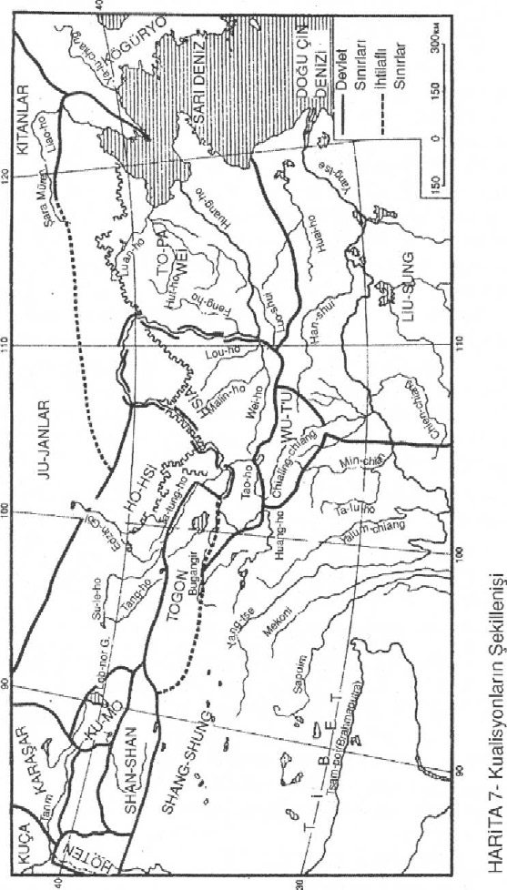

BİRİNCİ KİTAP
BÖLÜM I
ÇAĞLARIN ALACAKARANLIĞINDA
Eski Çin’de
Eski Çin topraklarında, çok az şey günümüzdekilere benziyordu. Toprak, nehirlerle sulanan devasa ormanlar ve bataklıklarla kaplıydı. Ayrıca ekin tarlaları, geniş göller, ucu bucağı gözükmeyen çorak alanlar da vardı. Mera ve bozkırlar ise, sadece dağlık bölgelere saçılmıştı.
Doğuda, Huang-ho (Sarı Nehir) ile Yang-tse’nin aşağı akımları sürüklenmiş toprak şeridiyle kaplıydı. Şimdiki Ho-pei eyaleti, “Dokuz Nehir” anlamına gelen büyük bir deltadan ibaretti. Deniz sahilinden uzak bölgelerde geniş göller ve bataklıklar uzanıyor; İ [Yih] ve Huai nehirleri ise, Yang-tse’nin aşağı akımlarındaki bataklık vadiye dökülüyorlardı. “Wei-ho nehri havzası, gür bitkilerle kaplıydı; devasa meşe ağaçlarından başka, çeşitli servi ve çam ağaçları da vardı. Ormanlarda ise kaplanlar, kara parslar, sarı leoparlar, ayılar, mandalar, yaban domuzları ve ormanın vazgeçilmez dostları çakallar ile kurtlar geziniyorlardı.”1
1 Grumm-Grjimaylo G.Y. Mojno li sçitat kitaytsev avtoxtonomi basseynov sredne-go i nijnego teçeniy Jeltoy reki? (İzvestiya Gosudartstvennogo geografiçeskogo obşçestva, 1933. Ayrı bsm. p. 29-30)
Nehirlerle savaşmak, oldum olası Çin insanının hayatında önemli bir yer tutmuştur. Bu nehirlerin kuraklık dönemlerinde suları çekilmiş, ama dağlardan gelen yağmur sularıyla beslendikleri dönemlerde coşup yataklarından taşmışlar; hızlarını kaybettikleri zamanlar ise çevrelerini alüvyonlarla kaplamışlardır. Kuzey Çin sakinlerinin kimisi, dağlardan gelen sellerden kaçarak hayatlarını avcılıkla sürdürebilecekleri bölgelere göç etmiş, kimisi de nehir taşkınlarıyla mücadele etmeyi yeğlemişlerdir ki, Çinliler’in ataları da bunlardı. Çalışmaktan yılmayan Çinli çiftçiler, çok eskilerden beri hem kendilerini, hem de tarlalarını su taşkınlarından korumak için sedler yapmışlardı. “Çin topraklarında, çok eskilerden beri farklı kültürlere sahip ve değişik atalardan türemiş bulunan kabileler yaşıyorlardı. Her kabile, yaşadığı topraklarda tabiat güçleriyle boğuşarak, kendi kültürünü geliştirmiş-ti.”2 Ve bu kabileler, sık sık birbirleriyle savaşıyorlardı. Çin tarih geleneğine göre, yarı efsanevî ilk Çin hanedanı Hsia zamanında bile, M.Ö. III. Binyılda Çin topraklarına göçüp gelmiş olan diğer kabilelerle savaşlar yapılmıştı. Bu kabilelere, Junğlar ve “Ti” [Di] ler deniliyordu. Bunlar, Çinliler’in atalarının çukur bölgelere çekilerek terket-tikleri ormanlık dağlara yerleşmişlerdi. Daha kuzeydeki kuru bozkırlarda ise, Hun-yü kabileleri yaşıyorlardı. Efsaneye göre, M.Ö. 2600 yılında “Sarı İmparator” onlara karşı bir sefer tertiplemişti. Ama Hsia’nın asıl düşmanları onlar değil, Junğlar ve “Ti”ler’di. Çin folklorunda dahi Çinliler’in ataları “karabaşlar”ın, “sarı saçlı iblisler”le yaptığı savaşların akisleri korunmuştur.3 Binyıl savaşlarını, Çinliler kazanmış ve “barbarlar”ı dağlara, bozkırlara ve güney cangıllarına sürmüşlerdi. Fakat daha sonra da göreceğimiz gibi, bu nihaî bir zafer değildi. Hsia hükümdarlığı, kazandığı başarılara rağmen, ancak Ho-nan bölgesiyle Shan-si’nin güneybatı kısmına hâkim olabilmişti ki, müstakbel Çin halkının nüvesi de burada atılacaktı.
2 Fan Wan-lan. Drevnaya istoriya Kitaya ot pervobıtno-obşçinnogo stroya po obra-
zovaniya tsentralizovannogo feodalnogo gosudartsva. M., 1958, p. 36. 3Grumm-Grjimaylo G.Y. Zapadnaya Mongoliya i Urânxayski kray. T.II. Bl. I. L.,
1926.
3 Grumm-Grjimaylo G.Y. Zapadnaya Mongoliya i Urànxayski kray. T.II. Bl. I. L.,
1926.
M.Ö. 1764’de,4 Çin’deki darbe sonucunda, Hsia hanedanının yerine Shang hanedanı ortaya çıkmış; onun döneminde, kadim Çin medeniyetinin kökleri sağlamlaşmış ve eski Çin halkı şekillenmişti.5
4 Ancak, ilk hesaplamalar sonucunda bu tarih 1586 (bkz. Oçerki istorii Drevne-go Vostoka. L., 1956, p. 229) veya 1562(?) olarak değiştirilmiştir. (Bkz. Fan Wan-lan. Drevnaya istoriya Kitaya, p. 45)Hsia ile ilgili efsanevî bilgiler için bkz. Lattimore O. Inner Asian frontier of China. New York, 1940, p. 286.
5 Fan Wan-lan. Drevnaya istoriya Kitaya, p. 38-66.
Gerçek tarihî Çin hanedanlarının ilki, Shang-yin’dir. Çünkü ilk Çin devletinin ortaya çıkışı, ona bağlanmaktadır. Onun kültür haritasını çizen pekçok bulgulara rastlanmıştır, ama siyasî tarihi birazcık karanlıktır. Doğru; Shang, kendinden önceki hükümdarlıkların ve aristokrasinin vârisi olarak, gerçekten kölecilik sistemine dayalı bir devletti. Bu dönemin en göze batan özelliği, daha sonraki Çin tarihinde çok önemli bir rol oynayacak olan hiyeroğlif yazısının icadıydı. Ticaret sadece Huang-ho’nun kuzeyindeki Ho-pei’de yaşayanlarla sınırlı değildi. Aksine, Kuzeydoğu Çin üzerinden Baykal ve Angara sahillerine kadar ticarî ilişkiler kurulmuştu. Elbette buralarda sadece aracı kabilelelerle değiş tokuş yapan Çinliler’in malları sergilenmiyordu. Sibirya’ya kalay ve bronz gibi metaller veriyorlar; oradan ise yeşil ve beyaz nefrit, değerli kürkler ve muhtemelen köleler alıyorlar;6 böylece Uzak Doğu kültür ağı gelişiyordu.
6 Okladnikov A.P. Neolit i bronzovıy vek Pribaykalya. C. III. M.-L., 1955, p. 200202.
Hunlar’ın Doğuşu
M.Ö. XVIII. Yüzyılda, Kuzey Çin’de önemli yankılar bırakan iki olay meydana gelmişti. 1797’de Çin devlet erkanından Kung-liu, itibardan düşerek batıdaki Junğlar’a kaçmış, küçük bir taraftar grubu da onunla birlikte gitmişti. Böylece o, burada kendisi için küçük bir şehir kurarak, Çin Hsia hükümdarlığına karşı bağımsızlığını ilan etmişti. Ancak, tarihî kaynakların bildirdiklerine göre, Kung-liu’nun “batısı Junğlar tarafından çevrilmişti.”7 Bununla birlikte, tam 300 yıl boyunca Çinli göçmenler Junğlar’la tam olarak kaynaşmamışlar ve 1327’de onların torunları Junğlar tarafından başlarındaki prensleri Shan-fu’yla birlikte kovulunca, eski vatanlarına geri dönerek Ch’i-shan [Ts’i-shan] eteklerindeki Shen-si’nin kuzeyine yerleşmişlerdi.8Böylece, kabilelerin yeniden birbiriyle kaynaşması sonucunda, bu defa Chou hanedanı vücuda gelmişti.9 Henüz küçük bir prenslik durumunda bulunan Chou, Junğlar’a karşı savaşmış ve M. Ö. 1140-1130’da Prens Ch’ang, Junğlar’ı King ve Luo (Kan-su eyaletinde) nehirlerinden kuzeye sürmüştü.”10
Junğlar, bir süre Choular’ın tebaası olmuşlar, fakat M. Ö. takriben X. Yüzyılda “bozkırlıların itaati sona ermiş, kanlı çarpışmalar başlamıştı.” Junğlar kaybettikleri toprakları geri almak istiyorlar; Çin’in birçok prensliklere ayrılmış olması da onların işlerini kolaylaştırıyordu.
Aynı günlerde bozkırlarda, Gobi’nin güney uçlarında yeni bir halk yüzeye gelmişti: Hunlar. Zaten oralarda uzun süredir H’yenyun ve Hun-yü kabileleri göçebe halde yaşıyorlardı. Ancak, her ikisi de Hyung-nular olarak kabul edilemezdi.11 Çünkü, o dönemde Hyung-nular henüz yoktu. Hsia hanedanı yıkılır yıkılmaz, sürgünde ölmüş olan hükümdar Tse-kui’nin son oğlu Shung Wei, ailesi ve tebaasıyla birlikte kuzey steplerine göçetmişti.12 Klasik Çin tarihî kaynaklarına göre Shung Wei, Hyung-nular’ın ataları olarak kabul edilir. Bu tarih geleneğine göre Hyung-nular, Çinli göçmenlerle bozkırlı göçebe kabilelerin karışmasından türemiştir. Şüphesiz bu efsanevî bilgiler, neredeyse tamamıyla tarihî gerçekler tarafından reddedilmektedir. Öyle de olsa, bu efsanelerde rasyonal bir gerçeği aramak, bütünüyle reddedilemez. Hsia devrinin varlığı da bu efsanelere dayandırıldığı için, Shang dönemi salnamelerinde inkar edilmekle birlikte, Kuo Mo-jo gibi eski Çin tarihinin septik araştırmacıları ve hatta Hsia ile ilgili hikayelerin efsaneden ibaret olduğunu kabul eden Lattimore dahi, böyle bir hanedanın varolduğunu kabul etmekte13 ve eski devirlerde “Hsia” kelimesinin “Çin” anlamına geldiğini ileri sürmektedirler.14 Yine onlara göre Hsia hanedanının tarihi, neolitik kara seramik kültürünün tarihleriyle örtüşmektedir.15 Dahası, Hsia ile Shang kültürleri arasında bariz farklar olduğunu farzeden Lattimore, onların yaşadıkları dönemlerin senkronik açıdan birbiriyle kısmen uyuştuğunu ileri sürmektedir.16 Her ne olursa olsun, geçmişte iki kabilenin çatıştığını ve bu savaştan birinin galip çıktığını kabul etmek gerekir. Çünkü, böyle bir mağlubiyetin neticesi olarak, münhezimlerin bir kısmı, düşmanları tarafından ele geçirilmiş ana vatanlarının sınırlarından uzaklaşarak komşu kabilelere sığınmışlardır.
11 Bkz. Grumm-Grjimaylo G.Y. Zapadnaya Mongoliya, p. 80. Grumm-Grimaylo, Chavannes ve Shiratory’nin görüşlerini tamamen çürütmektedir.
Peki, acaba Shung Wei’in silah arkadaşlarının kendileriyle karışıp kaynaştıkları şu esrarengiz H’yenyun ve Hun-yü kabileleri kimdi? Eski dönemlerde Çinliler, Gobi’nin uç kısımlarına “Kumlu Sha-sai Ülkesi” derler17 ve buraları Ting-lingler’in ülkesi olarak kabul ederlerdi. Antropolojik verilere göre de, o dönemde buralarda dolikosefal Avrupaî tiplerle, uzun yüzlü Mongoloidler, yani Çinliler birbirleriyle karış-mışlardı.18Aynı dönemde geniş yüzlü Mongoloid tipler, Gobi’nin kuzeyini vatan edinmişlerdi.
17 Grumm-Grjimaylo G.Y. Zapadnaya Mongoliya, p. 11.
18 Debets G.F Paleoantropologiya SSSR. M.-L., 1948, p. 82.
H’yenyun ve Hun-yü kabilelerinin, M.Ö. III. Binyılda steplerde Çinliler’in ataları olan “karabaşlar” tarafından sıkılıp çıkarılan Kuzey Çin yerlilerinin torunları olduğu neticesini çıkarabiliriz. İşte Shung Wei’le birlikte gelen Çinliler’in bu kabilelerle karışıp kaynaşması sonucunda, ilk etnik unsur olarak proto-Hunlar şekillenmiş; bilahere bunların kumlu çöllere çekilmesiyle birlikte, daha sonraki dönemlerde Hyung-nular ortaya çıkmıştır. Demek ki, Halha ovalarında yeni bir kaynaşma vukû bulmuş ve bunun sonucunda da tarihî Hyung-nular yüzeye gelmiştir. O döneme kadar bunlara “Hu”, yani bozkırlı göçebeler denilmekteydi. Böylece Hyung-nular, çöle hükmetmeyi başaran ilk millet olmuştur ki, bunu başarabilmek için de güçlü, kuvvetli ve dayanıklı olmak şarttı.
Doğu Bozkırlarının Tabiî Yapısı
Orta Asya, dört bir yandan dağlarla çevrilidir. Kuzey-batısında uzanan Sayan-Altay sıradağları, onu soğuk ve nemli ormanlarla kaplı Sibirya’dan ayırır. Bir deniz gibi uzanan Gobi Çölü, Orta Asya’yı ikiye böler. Çinliler’in bu çöle Han-hai Denizi ismini vermeleri de tevekkeli değildir. Prjevalskiy, Gobi’yi şöyle tasvir ediyor: “Tam bir hafta boyunca, çölden başka bir şey göremezsiniz. Göreceğiniz tek şey, orada burada uçsuz bucaksız vadiler, bunların üzerinde bir yıl öncesinden sararıp kalmış kuru ve parlak bitki örtüsünden başka, gâh kesif kayalıklar, gâh meyilli tepelerdir. Bu tepelerin üzerinde ise, bazan çok hızlı koşan antilopların siluetlerini görür gibi olursunuz.” 19Gobi Çö-lü’nde antiloplardan başka, XIX. Yüzyıla kadar mevcudiyetini sürdüren vahşi develer ve çok miktarda kemirgenler de bulunurdu. Eski Çinliler için bu çöl yaşanacak bir yer değildi.
19 Berg L.S. Puteşestviya N.M. Prjevalskogo. M.-L., 1952, p. 13.
Orta Asya’nın güneydoğu sınırlarında Yin-shan sıradağları (Büyük Kingan’ın meridyonal uzantıları) uzanır ve Liao-hsi Dağları’yla birleşir. Bu dağların eteklerinde hiçbir zaman gür ormanlar, bol miktarda av hayvanları, tırnaklılar ve kanatlılar olmamıştır. Yin-shan’ın kuzey tarafları ise bozkırla birleşirler.
Huang-ho dirseğinden batıya doğru Alashan Çölü uzanır. Prje-valskiy şöyle yazmaktadır: “Her on ve hatta yüz kilometrede, yolcuyu sıcaklığıyla boğup atmaya veya kum yığınları altına alarak yutmaya hazır halde bekleyen çıplak ve kayar kumlara rastlarsınız. Bu tepeler arasında bir damla su yoktur. Ne bir vahşi hayvan, ne bir kuş görürsünüz. Sadece, kazara yolu buralardan geçen insanları yutmaya hazır ölü bir çölün korkunç ruhudur sizi bekleyen.”20Çölün güneyinden itibaren, Nan-shan sıradağ sistemine bağlı yüksek tepeler uzanır. Batıda zengin Tun-huang Vadisi, ondan sonra da Hami Vadisi’ne uzanan kervan yolu başlar. Bu yol, fevkalede tehlikelidir. Prjivals-kiy, bunu çarpıcı bir üslubla anlatmaktadır: “Sonu gelmeyen yol boyunca, at, katır ve deve kemiklerine rastlarsınız. Kızgın zemin üzerinde, sisli, vıcık vıcık bir atmosfer tabakası vardır. Sık sık meydana gelen kum fırtınaları, ince kum tanelerini çok uzaklara savururlar. Dört bir yanınızda seraplar görürsünüz. Gündüzleri, sıcak tahammül edilemeyecek noktadadır. Gün doğumundan batımına kadar, her taraf adeta yanar kavrulur. Kızgın toprağın harareti, 63°’ye kadar çıkar. Gölgede de 35°’den aşağı değildir. Geceleri aşırı bir soğuk yoktur, ama en iyisi, geceleyin ve sabahın erken saatlerinde yol almaktır.”21 Çinliler, Alashan Çölü’ne “körfez” veya “Kum Denizi Koyu” (Gobi) adını vermişlerdir. Bu kum denizi, asırlar boyunca, Doğu ile Batı arasında aşılmaz bir engel teşkil etmiştir, fakat bu durum, Hunlar’ın gözünü korkutmamıştır.
Junğlar ve Hyung-nular
Hyung-nu tarihinin M. Ö. 1200- M. S. 214 yılları arasındaki ikinci dönemi gibi bu birinci dönemi de, Çin tarihi kaynaklarında tatmin edici bir şekilde işlenmemiştir. Bunun sebebi bizce malum. Dağlı Junğlar, bozkırla medenî Çin arasında iletişim halkası durumundaydılar. Batıda Hami’den22 doğuda Kingan [Hingan]a kadar uzanan geniş dağ etekleri, onların hâkimiyeti altındaydı. Kalabalık kabileleri “dağlık vadilere saçılarak, kendi devletlerini kurmuşlar, başlarında beyleri olmuş; nadiren çok kalabalık boylarla kaynaşmış ama onlarla birleşememişlerdir.” 23Büyük bir ihtimalle bozkırlı Hunlar bazan komşularının yaptıkları seferlere iştirak etmişler ve böylece Çinliler, onların varlıklarından haberdar olabilmişlerdir. İşte Çin tarih kitaplarındaki eski Hyung-nular’la ilgili bilgilerin bölük pörçük olmasının sebebi de budur. Daha sonraki dönemlerde ise Hyung-nular’ın dağlı değil, bozkırlı olduğu nazar-ı itibare alınmadan, bir takım hipotezlere dayanılarak, bazan H’yenyun ve Hun-yü’ler,24 bazan da Shan-junğ-lar’la25 özdeşleştirilmişlerdir.
Bütün rivayetlerde, esrarengiz Junğ etnonimi gizlenmektedir. Sih-ma Ch’ien’in tüm kalem sürçmeleri veya tasvirleri, Junğlar’ı Hyung-nular’la özdeşleştirme denemeleriydi.26 Ancak bütün tarihî kaynaklarda Junğlar “Ti”lerle birlikte zikredilmektedir27 ve belki de Biçurin bu yüzden onları “Junğ-ti”ler olarak tek bir millet şeklinde göstermeyi tercih etmiştir. Kaldı ki, bir efsaneye göre, Ch’i-ti (Çı-di okunur) ve Ch’üan-junğlar tek bir atadan türemişlerdir.28 Zaten Junğlar ve “Ti”ler birbirlerine o kadar benzerler ki, Çinliler dahi bu yüzden bazı “Ti” boylarını Batı Junğlar’ı olarak isimlendirmişlerdir.29 Keza onların Kin-gan [Hingan] ve Yin-shan eteklerinde yaşayan kabilesine Shan-junğ veya dağlı Junğlar ismi verilmiştir. Daha önce kendi ana kütlelerinden kopmuş olan dağlı Junğlar’ın bir kısmı, doğulu Moğollar yani Tung-hular,30 bir kısmı ise Hyung-nular’la birleşmişlerdir. Sadece Çinli-ler’le31 değil, batıda Tibetlilerle de daha az yoğunlukta kaynaşmışlardır. En kötü halde onlar, bugünkü Tankut halkını meydana getiren kabilelerdir. Görüldüğü gibi Çin’de münferid kabilelerin mevcudiyeti meselesi, bir muamma teşkil etmektedir. Tankutlar, eskiden Kuku-nor Gölü civarında, pek de büyük sayılmayan bir etnik grup halindeyken bile, şimdikinden daha geniş topraklara sahiptiler.
26 Biçurin, I/39; Hunlar (Hyung-nular) la altı Junğ kabilesi arasındaki sınırların gösterildiği “Chin-shu”nun 97. bl. nü karşılaştırınız. (Bernchtam A.N. Oçerki istorii gunnov. L., 1951, p. 219. Opublikovannıy tekst.)
27 Grumm-Grjimaylo G.Y. Zapadnaya Mongoliya, p. 45.
Yukarıda serdedilen görüş, Avrupalı ve Amerikalı tarihçilerin ileri sürdükleri görüşlerle uyuşmamaktadır. McGovern, genel olarak Junğ ve “Ti”ler’i Hunlar olarak32 kabul etmekte, fakat sadece her iki grubun etnik özelliklerinin birbirini tutmamasını şaşkınlıkla karşılamaktadır. Junğ ve “Ti”ler’in Çin sınırları dahilinde yerleşmiş bulunduklarını; göçebe değil, yerleşik dağlılar olduklarını, yani kesinlikle Hyung-nular’la ilgileri bulunmadığını düşünen Lattimore da33 aynı görüşü benimsiyor, ancak bu kabilelerin ırkî yönden nereden geldikleri konusunda suskun kalmayı tercih ediyor.
32 McGovern W. The early empires of Cenral Asia. L., 1939. p. 87, etc.
33 Lattimore O. Inner Asian, p. 340-349.
Meselenin doğru çözümünün Çin etnogenezinde aranması gerektiğini görmezlikten gelen N.N. Çeboksaroff34 ise, kesinlikle Junğ problemini ortadan kaldırıyor. Halbuki “Chin-shu”, (bl. 97) Hyung-nular’ın batıda altı Junğ kabilesiyle sınırdaş olduğunu belirterek konuya apaçık bir aydınlık getirmekte,35 yani bu halkların birbirleriyle ilişkisi olmadığının altını çizmektedir.
34 Çeboksarov N.N. K voprosu o proisxojdenii kitaytsev//Sovetskaya etnografiya.
1947. No.I, p.30-70.
35 Bernchtam A.N. Oçerki istorii gunnov, p. 219 (Opublikovannıy tekst “Chin-shu”)
Tarihî olayların seyrinin tetkikiyle, çağdaşlarımız konuyu net bir şekilde görmelerine rağmen, bu yazarlar, Çin sınırları içinde Junğ ve “Ti”lerin Çinliler’den, Çin dışında ise Hyung-nular’dan ayrıldıklarını görmekte zorlanmışlar. Meseleyi Grumm-Grjimaylo’nun “Ting-ling” teorisi nihaî bir çözüme kavuşturmaktadır. Esasen problem kadim Çinli yazarların “Junğ”ları ırk olarak üzerinde durulması gereken bir unsur şeklinde görmemelerinden kaynaklanmıştır.36
36 Bkz. Gumilev L.N. Dinlinskaya problema//JSP33. 1959. !1.
Choular’ın Zaferi ve Sonuçları
Chou prensliği, bugünkü Shen-si’nin bulunduğu topraklarda kurulmuştu ve savaşçıları arasında pekçok Junğdan başka, Çinliler’e sınır baskınları düzenleyen kişiler de vardı. Aynı günlerde Aheyler Tru-va’yı yıkmışlar; Hyung-nular Gobi’yi baştan sona ele geçirmişler, Chou hükümdarı Wen-wang ise, “sarı saçlı (ve hatta kara saçlı) barbarlarla, deniz ile Tibet dağlık bölgeleri arasının fetih işini tamamla-mış”37ve oğluna “kaplan ve kurt yürekli” kalabalık bir savaşçı güç bırakarak, Shang-Yin devletini ele geçirmekle görevlendirmişti.38
Babasının buyruğuyla harekete geçen Wu-wang, pusatlarını kuşanmış; Huang-ho nehrine kadar varmış, fakat hezimete uğramıştı. Aradan iki yıl geçtikten sonra, M. Ö. 1027’de39 yeni bir saldırıda bulunmuş, fakat bu defa başarılı olmuş ve Shang-Yin devleti yıkılmıştı. Pek çoğu köle yapılmış olan mağluplar, Chou kumandan ve devlet erkanının insafına terkedilmişler; onlar ise bütün bir kabileyi affetmiş-lerdi. Kölelerin çoğu Shang-Yin’in komşuları olan doğulu “İ” [Yih]ler ve güneyli “Man”lardı. Chou hükümdarı, büyük Huang-ho ve Yang-tse nehirleri arasıyla sahillerini tamamen ele geçirmişti.
39 Tashih edilmiş kronolojiye göre 1066 yılında. (Bkz. Fan Wan-lan. Drevnaya is-toriya Kitaya, p. 72)
Shang hanedanının yıkılışı konusunda, kesinlikle birbirini tutmayan üç görüş var. Avrupalı tarihçilere göre Shang hükümdarlığ, batıdan Huang-ho Vadisi’ne sarkan Chou kabilelerinin saldırıları neticesinde yıkılmıştır. Feodal Çin tarihi kaynakları, Shang hanedanının soysuzlaştığını ve 1066’da Chou hanedanını işbaşına getiren devlet darbesinin ileri doğru atılmış bir adım olduğunu varsaymaktadırlar. Ve nihayet, iç karışıklıklardan faydalanan Choular’ın iktidarı zorla ele geçirdikleri görüşünü ileri süren Kuo Mo-jo ise, bu darbenin sadece Çin’in parçalanması ve yıkılmasına yol açtığının altını çizmektedir.440Chou devleti, hükümdarın hâkimiyetini sadece göstermelik olarak kabul eden bağımsız ülüş sahibi prenslikler tarafından 1855’de kurulmuştu.
40 Go Mojo. Epoxa rabovladelçeskogo stroya M., 1956.
Bazı tarihçiler, bu dönemi Çin feodalizminin başlangıcı olarak kabul ederler.41
41 Fan Wan-lan. Drevnaya istoriya Kitaya, p. 64; Tökei F. Sur le term nong-fou dans le Che-king (Asta Orientalia. 1955. Vol. V), p. 123-141.
Acaba, küçük prenslerin toprak ıslah işleriyle nehir kenarlarına bent çekilmesini organize etmeleri yüzünden mi ülkenin birçok prensliğe bölünmesi halkın işine gelmemişti? Mülkiyet, kesinlikle sona ermişti.
Ayrıca, ideoloji de değişmişti: “Dünyanın hâkimi olan tanrıların en yücesi Shang-ti hakkındaki düşünceleri karanlığa gömen Choular, yeni bir naturalist din ve kahramanlar kültünü getirmişler”42 ve insanların tanrılara kurban edilmesi geleneğini ortadan kaldırmışlardı.43Böylece etnik bir kaynaşma başlamıştır ki, bunun sonucu olarak, Çinliler arasında gaga burunlular ve gür sakallılara rastlanmıştır.44
42 Grumm-Grjimaylo G.Y. Zapadnaya Mongoliya, p. 35; De Harles. Les religions de la Chine (Le Museon. 1891. Vol. X).
43 Fan Wan-lan. Drevnaya istoriya Kitaya, p. 100.
44 G. Grjimaylo, Çin imparatorlarından çoğunun şahin profilli ve gür sakallı olarak tasvir edildiğine işaret etmektedir. “Troyetsartviye”de de birçok kahraman aynı şekilde tasvir edilmiş, ancak onlardan sadece sarı sakallı Sun Tsüan “mavi gözlü delikanlı” (Lo Huan-chung) ünvanını kullanmıştır. (Bkz. Troyetsartvi-ye. T. I. M., 1954, p. 369)
Kabiliyetli ve çalışkan Çin halkı, düzenli ve sakin bir hayat için can atıyordu, ama böylesine parçalanmış bir toplumla bunu gerçekleştirmek imkansızdı. Hükümdarlık yönetimi, onun karşısında acz içindeydi. Prenslikler, zaman içinde komşularının aleyhine genişlemeye başlamışlardı. Ch’un-ch’ü döneminde (“Baharlar ve Sonbaharlar”, 722-480 yılları) sadece 124 büyük prenslik vardı. Daha sonraki Chan-kuo (“Muharip Hükümdar”, 403-221 yılları) döneminde ise, ancak yedi büyük ve üç küçük prenslik kalmıştı. Bu devre, “Shang-shu” isimli eserin klasik taksimini inceleyen “Yü-kung” coğrafî çalışmasında gösterilmiştir. “Yü-kung”un tasvirleri, Kuzey Çin hükümdarlığının çağdaş Sih-ch’uan (Sıçuan okunur) bölgesiyle ilişki içinde bulunduğu “Baharlar ve Sonbaharlar” dönemine aittir ki, eserde işaret edildiği gibi, burada demir filizi işlenmekteydi.45
45 Bkz. Zayçikov W.T. Vajneyşiye geografiçeskie trudı drevnego Kitaya// İzvestiya Akademii nauk SSSR. Seriya geografiçeskaya. 1955. No. 3.
“Yü-kung”da anlatıldığına göre Çin, Huang-ho ile Yang-tse’nin orta akımlarıyla, Kuang-tung’u da içine alan Yang-tse’nin ağzından güneye doğru uzanan sahiller arasındaki bölgeyi kapsayan dokuz eyalete ayrılmaktadır. Yazar, güneye Annam adını vermekte; fakat batı bölgelerinde yeralan Tibet, Ch’ing-hai, Hsi-ang, Kan-su, Yünnan ve Kui-chou (Guycav okunur) konusunda ise herhangi bir bilgi vermemektedir. “Dağ, orman ve çölleri ele geçirmiş olan güçlü ve cesur barbarlar -”Yü-kung”un yazarı onları bu şekilde tasvir etmektedir- “ merkezi doğunun kültürünü Batı Akdeniz ve Güney Hint kültüründen uzun bir süre ve kesin bir şekilde ayırmışlardı.”
Peki, Doğu ile Batı’yı birbirinden ayıran bu barbarlar kimdi? Bunlar, o dönemde kervan yollarının geçtiği yönde, oldukça kuzeyde yaşamakta olan Hyung-nular olamazlardı.
Bu karmaşık soruya, antik batı tarihçileri ve özellikle de Ptole-maeus kısmen ışık tutmaktadır.46 Ptolemaeus, içinde bulunduğuçağda, Çin topraklarına iki ayrı halkı yerleştirmektedir: “Hsin”ler ve “Ser”ler. “Ser”lerin güneyinde yer alan “Hsin”lerin başkenti, Tina idi ve Kattigar limanın iç kısımlarında yer almıştı.
46 Tomson Dj. O. istoriya drevnei geografii. M., 1953, p. 437-439.
O dönemde ulaşılması çok zor olan oldukça uzak bir bölgenin coğrafî yönden tasviri hayalî olarak kabul edilmezse, Ptolema-eus’un haritası, aşağı yukarı doğrudur. Ancak, bizi burada tamamen başka bir şey ilgilendiriyor: “Hsin”ler, kesinlikle Ch’in dönemi Çinlilerinin uzantılarıdır ve Parth ve Roma İmparatorluğu’nu Serika ipe-ğiyle besleyen “Ser”lerle özdeşleştirilemezler. “Ser”ler, başka bir yerde “Hsin”lerden daha önce zikredilirler. Mesela, Greko-Baktria Hükümdarı Eutydemus, M. Ö. takriben 200’de, hâkimiyet alanını “Faunaların ve “Ser”lerin bulunduğu” doğuya kadar genişletmişti.47 Bila-here, büyük kervan yolunda ipek ticareti yoluna girince, “Ser” kelimesi Çinliler için değil, Tarım Havzası’na ipek gönderenler için kullanılmaya başlandı.48
47 Age., p. 253. Burada sözü edilen Faunalar Tibet kabilelerinden Yarkend-derya havzasında göçebe olarak yaşayan Ch’ianglar’dır. Bkz. Maenchen-Helfen O. Psewdohuns//Central asiatis journal. Vol. I. N°2, p. 102-103.; Tarn WW The Greeks in Bactria and India. Cambridge, 1950, p. 84-85; Gumilev L.N. Terrako-tovıye figurı obezyan iz Xotana//Kratkie soobşçeniy Gosudarstvennogo Ermita-ja. L., 1959. No. 16.
48 Gumilev L.N. Terrakotovıye figurı; keza bkz. Soothill. China and West. L., 1925; Yule-Cordier. Cathay and Way Thither. L., 1915.
Daha da önemlisi, Thompson’un “saçma”49 olarak nitelediği “Ser”ler hakkındaki bilgilerin, Seylan elçilerinin rivayetlerine dayanmış olmasıdır. Onlara göre Serler, gür ve sarı saçlı, mavi gözlü insanlardır. “Yemod”da yani Himalayalar’da yaşarlar. Yule, bu bilgileri mesnetsiz bir şekilde gerçek dışı kabul ederek, reddeder. Halbuki Pse-udo-Arrian, (Perikles, Erythreia Denizi, § 39, 49, 64) Serler’in ülkesinden Baktria, oradan da Hint savanlarına uzanan bir yoldan bahse-der.50 Binaenaleyh, Seylanlılar’ın Serler’le karşılaşmış olmalarında şaşılacak bir şey yoktur. Tomson’un raporlarına göre “Serika” toprakları, Kaşkar’dan “Bautlar”ın yani Tibetli-Botlar’ın51 kuzeyindeki Kuzey Çin’e kadar uzanıyordu.51 Bu bölge, gerek coğrafî açıdan ve gerekse fizikî özellikler itibariyle Serler’le özdeşleştirebileceğimiz Ti kabileleri tarafından iskân edilmişti.
49 Tomson Dj. O. istoriya drevney geografii, p. 427.
Yule-Cordier. Cathay, p. 200.
BÖLÜM II
BOZKIRLARA SÜRÜLENLER
Tarih Öncesi Hunları
Hyung-nu [Hunjlar’ın eski tarihî dönemlerini gözden geçirirken, hiç beklenmedik bir şekilde, Sibirya ve civarında yaşayan kadim halkların incelenmesi meselesi önümüze çıkacaktır. Daha sonra da üzerinde durulacağı gibi, Çin tarihi kaynaklarında Hyung-nular’dan ilk önce M.Ö. 1764’lerde, daha sonra ise yine M.Ö. 822 ve 304 yıllarında bahsedildiğini görüyoruz. Hyung-nu tarihinin binbeşyüz yıllık bu dönemi, oldukça karanlıktır. İşte biz, bu karanlık dönemi yaklaşık olarak aydınlatabilmek için, Sibirya arkeolojisine dönmek zorundayız.
M. Ö. II. İkibinde, Sibirya arkeolojisinde iki bağımsız eş zamanlı kültüre rastlıyoruz: Doğuda Glazkovo, batıda ise Andronovo. “Baykal civarındaki topraklarda, büyük bir ihtimalle bugünkü Evenkler, Evenler ve Yukagirler’in ataları olarak kabul edebileceğimiz, birbirine akraba kabileler yaşıyorlardı. Bunların kültürleri, Büyük Çin Seddi ve Ordos boyuna kadar uzanan Amur, Kuzey Mançurya ve hatta Moğolistan’ın yukarı kesimlerinde yaşayanların kültürlerine oldukça yakındı. Bu bölgede yaşayan halklar, kültür yönünden birbiriyle akraba olan neolit ve erken bronz döneminin avcı ve balıkçı kabileleriydi. Ayrıca, muhtemelen bunlar, birbirine yakın dilleri konuşuyorlardı.”52 Daha sonraları ise, Glazkovo kültürüne mensup bu kabilelerin güney kesiminde, Hyung-nular’ın atalarının bir kısmı ortaya çıkarak, bunlarla karışmışlardır.53 M. Ö. 1700’den 1200’e kadar Güney Sibirya ve Kazakistan’ın Ural’a kadar uzanan batı yarımında, Andronovo kültürü hâkimdi. Buralarda yaşayanlar, beyaz ırka mensuptular ve M.Ö. XVIII. Yüzyılda Minusinsk Havzası’na yerleşerek, yavaş yavaş Yenisey boylarındaki Glazkovo kültür çevresine mensup insanlarla kaynaştılar.54Andronovolar, ziratla ve hayvancılıkla meşgul olan yerleşik insanlardı.55Metallerden bronzu işlemesini biliyorlardı. Nitekim, mezarlarında da bol miktarda kilden yapılmış süslemeli kap kacaklara rastlanmıştır. Andronovo kültürü, batıyla alakalıdır. “Andronovo kültür çevresinin eski eşyalarıyla Aşağı Volga, Don ve Donetsk steplerindeki baltalar arasında birçok benzerlikler bulunmuştur.”56Ancak, M.Ö. II. İkibin yılında Güney Sibirya’da başrol oynayanlar, ne Andronovolar-dır, ne de Glazkovolar.
52 Okladnikov A.P. Neolit i bronzovıy vek Pribaykalya. C. III. M.L., 1955, p. 8.
Daha önce Ting-lingler’in “Kumlu Sha-sai Ülkesi”nde yani Gobi uçlarında yaşadıklarını belirtmiştik.57Sayan-Altay eteklerine, Minu-sinsk Havzası’na ve Tuva’ya da bunlar yerleşmişlerdi. Bunlar, “orta boylu, bazan uzun boylu, sert ve sağlam cüsseli, uzun yüzlü, beyaz tenli, kızıl yanaklı, sarı saçlı, genelde şahin ve gaga burunlu ve parlak gözlü” insanlardı.58Tarihî kaynaklardaki bu tasvirler, daha sonraki ar-keoloik bulgularla doğrulanmıştır. Sayan Altay bölgesi, takriben M.Ö. 2000 yılına ait Afanasyevo kültürünün vatanı idi. Antropolojik Afa-nasyevolar, bir ırk tipi teşkil ederler. Bunlar, “kıygır burunlu, dar yüzlü, batık gözlü, geniş alınlıdırlar. Bu özellikler, onların Avrupaî olduklarını göstermektedir. Afanasyevolar, bugünkü Avrupalılardan belirgin şekilde, daha geniş alınlarıyla ayrılırlar. Bu bağlamda, Batı Avrupa’nın üst-paleolitik kafatası yapısına sahiptirler, yani kelimenin geniş anlamıyla kromanyon tipine girerler.”59
57 Grumm-Grjimaylo G.Y. Zapadnaya Mongoliya, II/11.
Afanasyevoların vârisleri, M. Ö. III. Yüzyıla kadar hayatlarını sürdürmüş olan Tagar kabileleriydi.60Bu durum bizi, Afanasyevo-Ting-lingler’in, yabancı kabilelerin istilalarına rağmen, kendi kültürlerini asırlardır muhafaza ettiklerini düşünmeye zorlamaktadır.
60 Kiselev S.W. Drevnaya istoriya, p.311; Debets G.F. Paleoantropologiya, p. 128.
1200 yılları civarında, Minusinsk bozkırlarında Andronovo kültürünün yerini Kuzey Çin’in güneyinden61 yani Sarı Nehir sahillerindeki halklar tarafından taşınmış yeni Karasuk kültürü almıştır. Böylece, Batı Sibirya’da ilk defa olarak Çin stili ortaya çıkmıştır, ama bu, olduğu gibi taklit edilmiş bir kültür değildir. Çünkü bu yeni kültürle birlikte, mezarlarda yeni bir ırk tipine rastlanıyor. Bu tip, Avrupaîler brakisefal, Mongoloidler ise dar yüzlü olmalarına ve “Uzak Doğulu Asyalı tipine” mensup bulunmalarına rağmen, Mongoloidlerle Avru-paîlerin kırışımından meydana gelmiş bir tiptir.62Yang-shao döneminde, Kuzey Çin’de böyle bir ırk teşekkül etmişti. Bunların dış görünüşleri, Avrupaî ve Mongoloid unsurların karışımından meydana gelmiş bulunan bugünkü Özbekler’i anımsatmaktaydı. Zaman içinde bu unsurlar birbirleriyle karışmışlardır, ama bizim için bilhassa önemli olanı, “Güney Sibirya’da karma bir halkın çoktan yerleşmiş bulunduğu; sistemde yer almakla birlikte hangi tipe ait olduğu kesinlik kazanmayan Avrupaî brakisefalların, daryüzlü güney Mongoloid-lerine karışmış oldukları”63sonucunu çıkarmamızdır.
61 Kiselev S.W. Drevnaya istoriya, p. 114-116.
Çin’den gelen bu meçhul brakisefal Avrupaî unsuru “Ti”lere nis-bet etmek aklımıza yatkın geliyor ancak Sibirya ve Çin’de Avrupaî unsurun farklı tiplerinin varlığı bizi şöyle bir sonuca varmaya sevkedi-yor: “Ti”ler ve “Ting-ling”ler Avrupaî ırka mensup bir koldur fakat farklı ırk tipleridir. Benzerlikler ise idantik değildir.64
64 Gumilëv L.N. Dinlinskaya problema //IVGO. 1959. ! 1.
”Ti”lerle “Ting-ling”leri özdeşleştiren Grumm-Grjimaylo, şu kanaatteydi: “Neolitik çağda Güney Sibirya’ya yerleşmiş bulunan dolikosefal ırkın, “Ti” kabileleriyle, yani Sarı Nehir havzasında bilinmeyen dönemlerde yaşamış olan “Ting-ling”lerle (?) herhangi bir genetik bağları olduğunu zannetmiyorum. Günümüzde Uzak Doğu Asya’da hâlâ varlıklarını sürdürenleri, (Ayniler- L. N.) onların bakiyeleri olarak görmek daha fazla imkan dahilindedir.”65Ne var ki Çinliler, “Ting-ling”leri bu dolikosefal ırkın tipik temsilcisi, Sayan dağlılarını ise “Ting-ling” olarak isimlendirmişlerdir.66 “Ting-ling”ler, II. Yüzyılın ortalarında tarih sahnesinden silinmişler, fakat “Ti”lerin bozkırlı kolu olan Ti-le (Di-li) ler, IV. Yüzyılda ortaya çıkmışlardır. Burada Ye-nisey Kırgızları’nın, “Ti”lerin güneyinden gelenlerle değil, Sibirya yerlileri “Ting-ling”lerle sıkı sıkıya bağlantılı olduklarını nazarda tutmak gerekiyor. Sayan Dağları’ndan güneye doğru göçeden “Ting-ling”lerin güney kolu, Hunlar’ın atalarıyla kaynaşmıştır. Belki de Çinliler’in, Hunlar’ın dış görünüşlerindeki farklara binaen, onları gaga burunluolarak kabul etmeleri tesadüf değildi. Shih Min, 350’de bütün Hun-lar’ın son ferdine kadar katledilmesini emrettiğinde, “gaga burunlu birçok Çinli de onlarla birlikte öldürülmüştür.”67
65 Grumm-Grjimaylo G.Y. Zapadnaya Mongoliya, p. 15.
Demek ki “Ting-ling”ler, güneyden gelen Hunlar’ın atalarıyla kaynaşmış olan bir halktı.
Çin tarihi, Hunlar’ın ataları olan “Hu”ların68 miladdan önceki hayatlarından bahseder. Fakat en dikkat çekici olanı, bu tasvirlerde “Hu”ların Hyung-nular’a tarihî yönden sosyal yapı itibariyle çok az, fakat daha ziyade hayat tarzı cihetinden benzediklerinin ortaya konulmasıdır.
68 Biçurin, Sobraniye, I/40.
Sanırım, eski dönemlerde Hyung-nular’da herhangi bir devlet teşkilatlanması yoktu. Bazı aileler, sürüleriyle birlikte steplere göçetmiş-lerdi. Bunların sürüleri at, iri ve küçük tırnaklı hayvanlar; bir miktar deve ve eşekten ibaretti.
Fakat steplerdeki bu göçebe yaşantısı, kesinlikle düzensiz ve gelişigüzel bir yaşantı değildi. Göçebeler, baharla birlikte dağlar arasında yer alan ve sürüler için elzem olan su ve otlaklarla bezeli yaylalara çıkarlar; sonbaharla birlikte nisbeten karın az düştüğü bölgelere, sürülerin fazla zorlanmadan yem bulabilecekleri yerlere çekilirlerdi. Yaylak ve kışlaklar, göçebeler arasında kesin bir şekilde taksimlenir ve bunlar, boyların veya ailelerin şahsi mülkü sayılırdı. Hunlar’da da durum böyleydi.
Ancak, burada Sih-ma Ch’ien’in69 Hun yaşantısıyla ilgili tasvirlerinde bazı alışılmış eski çizgilere yer verdiğini ve durumun başka bir şekilde olamayacağı görüşünden hareket ettiğini gözönünde bulundurmamız gerekiyor. Sih-ma Ch’ien, muhtemelen göçebe hayvancılığın “Hu”ların ekonomisinde önemli bir yer tuttuğu görüşünden hareket ettiğinden, hiçbir gerekçe göstermeden, İç Moğolistan bozkırlı-larının da neolit dönemde hayvancılığa geniş ölçüde yer vermiş olabileceklerini yadırgamaktadır. Esasen mesele, bu hayvancılığın ne ölçüde göçebe usulde yapıldığı noktasındadır.
69 Giriş bölümüne bkz.
Hun tarihinin bu döneminin daha önemli bir hususiyeti, şu teşhistir: “Güçlü yaylara sahip olanların hepsi zırhlı (?!) süvarilerdi..Herkes, saldırılarda başarılı olabilmek için savaş talimleri yapıyordu... Güçlüler, yağlı ve daha iyi yiceklerle besleniyorlar; yaşlılar ise onların artıklarıyla yetiniyorlardı. Genç ve güçlü olanlara itibar fazlaydı; yaşlı ve zayıf olanlara ise daha az saygı gösterilirdi. Genelde biribirlerine isimler verirlerdi, ama (kabilevi- L.N.) ünvan ve lakaplar kullanmazlardı.”70
70 Biçurin, Sobraniye, I/40.
Bu alıntı, kabile bağlarının ne kadar zayıf; buna karşılık, âdet ve geleneklerde fizikî gücün ne kadar hâkim olduğunu ortaya koymaktadır. Tarihî kaynaklar, bilhassa kabile yapısının hâkim olduğu dönemde kabilevî lakapların mevcut olmadığını, bununla birlikte daha geç dönemlerde, kabileler arası ilişkilerin birinci planda yer aldığını kaydetmektedir. (Daha ileriye bkz.) Şu ana kadar anlatılanlardan, Hunlar’ın atalarının ortak menşe cihetinden birbirlerine bağlandıkları bir dönem olmadığını, ama umumi tarihî kaderi paylaşma yönünden birbirlerine kenetlenmiş bulunduklarını söyleyebiliriz.
Kabile bağlarının zayıflığının bazı sebepleri olmalıydı, ama biz, yukarıda serdedilen görüşlerden kesinlikle kabile yapısıyla ilgili âdet ve kurumların varlığına şahit olmaktayız. Mesela, tek kadınla evlilik yerine poligami yaygındı ve kadınlar, önemsiz bir miras malı gibi başkalarına devredilirdi: Üvey ana, erkek oğula; gelin, erkek kardeşe miras kalırdı ki, bunun patriarkal kabile yapısının tipik özelliği olduğu bilinmektedir. Bu durumun, kadının aşağılanması olarak algılanması doğru değildir. Çünkü bu tür bir evlilik, genelde dul kalması halinde kadını perişan duruma düşmekten kurtarma amacı taşıyordu. Üstelik, yeni koca da o kadına çadırda bir yer ayırmak, karnını doyurmak ve kaderin kollarına bırakmamak zorundaydı. Bütün bunlar, sözü edilen olayların büyük bir ihtimalle Hunlar’ın Çin içlerinde yaşadıkları dönemde olup bitmiş tarihî süreçler olduğunu göstermektedir.
Konuyu, arkeolojik verilerle doğrulamaya çalışalım.
1927-1937 yılları arasında, İç Moğolistan’da çalışmalar yapan İsveç arkeoloji heyeti, “eğer daha da geç değilse, takriben 2000 yıllarını gösteren”71geç dönem neolit kültürünü ortaya çıkardı. Bu kültür, “sadece bir temas habercisi olması cihetiyle,”72Kuzey Çin neolit döneminden bâriz bir şekilde ayrılmaktadır.
71 Okladnikov A.P. Novıye dannıye po drevneyşey istoriii vnutrenney Mongolii //VDI. 1951. ! 4. s. 173.
72 Age., p. 172.
Bu sonuç, akla yatkın. Neolit dönem kültürü, başlangıçta Çin’den kaçan mağlup “Ti”lerin, daha sonra ise “Ti”leri yenilgiye uğratan menküp Hsia taraftarlarının kendilerine sığındıkları bozkırlı avcı kabilelere aittir. “Her yerde Kuzey Çin neolit kültürünün birçok eserlerine rastlanması” da, bu kanaati doğrulamaktadır. Neolit dönem insanlarının hayat tarzlarını tesbit çalışmaları, bizi, bu halkların sürekli biçimde nehir ve göl sahillerinde yaşayarak, avcılık, balıkçılık ve toplayıcılıkla uğraştıkları sonucuna götürmektedir.
Şu halde, tarihî materyal ve rivayetlere göre, aralarında Çin’den kaçan iki grubu da barındıran eski “Hu”lar, herhangi bir devlet teşkilatından yoksun olan ve hatta böyle bir şeye ihtiyaç dahi hissetmeyen son derece ilkel halklardı. Tıpkı çağdaşları Fenikeliler’in deniz vasıtalarını icat edip Avrupa’yı keşfetmeleri gibi, onların da kültüre yaptıkları tek katkı göçebe hayvancılığını geliştirerek çölü yani Gobi’nin kum denizini geçmeleri, başka bir deyişle, Sibirya’yı keşfetmeleri olmuştur. Her iki keşif de tarihin seyri açısından önemliydi ve bunlardan hangisinin daha dikkat çekici olduğunu belirtmek, pek öyle kolay değildir. Arkeoloji, Çin kroniklerinin verilerini takviye ettiği için biz, -büyük kısmı arkeolojik bulgularla desteklenmemekle birlikte,-bu bilgileri, yani evlilik âdetleri ve yaşlılara gösterilen saygı konusundaki malumatları, gözönüne almak mecburiyetindeyiz. Mevcut kronikler, bir aile geleneğinin olmadığını kaydetmektedir. Bu noktadan hareketle, hayat şartlarının bâriz bir şekilde kötü olduğunu ve zayıfların ölüme mahkum sayıldıklarını söyleyebiliriz. Ama Hunlar’ın atalarının maruz kaldıkları en büyük felaket, bütün güçlerini fizikî varlıklarını sürdürmeye hasrettiklerinden, geleneklerin yaşlılarla birlikte yokolup gitmesiydi.
Hunlar’ın Teşekkülü
“Hu” göçebeleriyle, Shang-Yin devleti arasındaki savaşlar hakkında bilgi sahibi değiliz. Bununla birlikte, arkeolojik materyallar, bu dönemde Çin’le bozkırlılar arasında sıkı ilişkilerin olduğuna işaret etmektedir. Bir yandan, “barbarlar”ın teşkilatlanma yönünden henüz zayıf olmaları, diğer yandan, hem onların, hem de başkalarının ortak düşmanı olan Chou Prensliği’nin giderek güçlendiği nazarda tutulursa, aralarında şiddetli çarpışmaların vukû bulması bir istisna teşkil etmez.
Sanırım Chou wanglığının kuruluşu, en az Çinliler kadar, bozkır halkları için de, tarihlerinin birbirinden ayrılmasına yol açan bir olay olmuştur. Chou Prensliği, kuruluşundan önce dahi, Çin’le kuzey kabileleri arasında bir engel teşkil etmekteydi. Takriben 1158’de Wen-wang, H’yenyun’a saldırarak, “onlara bir göz dağı vermişti.”73Wu-wang, aralıksız savaşarak kuzeyli “barbarlar”ı yani Junğlar’ı itaat altına almış ve muhtemelen bozkırlı “Hu”ları sıkıp çıkarmıştır. Bu durumda onların Çin sınırından uzaklaşarak gidebilecekleri tek yer kuzey tarafıydı.
73 McGovern W. The early empires of Central Asia. L., 1939, p. 91.
Hunlar’ın, M.Ö. VII. Yüzyılda, atalarından bâriz bir şekilde ayrıldıklarını nazarda tutmak gerekmektedir. Deguignes, Sih-ma Ch’ien’e dayanarak,, “M. Ö. 1200 civarında Hun Devleti’nin kurulduğunu kabul etmek zorundayız” demektedir.74Cordier de bu tarihi kabul etmektedir.75O dönemde Hunlar, Ho-pei’den Bargöl’e [Bar-kul/Bars-göl] kadar uzanan bölgede yaşıyorlardı ve Çin’e bazı saldırılar düzenlemişlerdi. Onların hayat tarzları ve devlet düzenleriyle ilgili tasvirlerden, bu yolda bir hayli mesafe katettikleri anlaşılıyor: “Evleri yoktu; toprağı sürmüyorlardı, ama çadırlarda yaşıyorlardı.. Yaşlılara saygı gösteriyorlar, işlerini düzene sokmak için yılın belli bir döneminde toplanıyorlardı.”76Binaenaleyh, onların çöl üzerinden gelerek, Glazkovo ve Andronovo kültürüne sahip insanlara karşı bir üstünlük sağlamış olmaları şaşırtıcı sayılamaz.
74 Deguines Y. Histoire des Huns, des Turcs, des Mongols et des autres Tartares occidentaux avant et depuis J. C. jusqu’à present. Vol. I. P., 1758, p. 216.
Sibirya’nın Keşfi
Arkeolojik verilere göre, erken Hun tarihinin ikinci dönemi, yaklaşık M. Ö. 1200 yıllarında başlar. Daha önce görüldüğü gibi, bu sıralarda güneyli göçebelerin Gobi üzerinden ilk yürüyüşleri tamamlanmış olduğundan, çöl artık kullanılabilir bir güzergah haline gelmiş ve Hunlar, çölün iki tarafını da yurt edinmişlerdir.77
77 Kiselev S.W. Drevnaya istoriya, p. 147.
Öncelikle burada, o dönemde “kum denizi” üzerinden geçip gitmenin neden mümkün olduğu konusunda bir soru sormak gerekiyor. Muhtemelen, Hun göçebe hayvancılığı, fazlasıyla gelişmişti ve Hunlar otlaklar aramak amacıyla kuzeye yönelmişlerdi. Ayrıca, yetiştirmiş oldukları bu hayvanlar, yüklerini de taşıyorlardı. Nitekim, kayalar üzerine çizilen resimlerde, Hunlar’ın atalarının üzerinde “kum denizi”ni geçtikleri “gemi” ye benzer bir sûret tasvir edilmiştir. Aslında bu, beygirler tarafından çekilen tekerlekli, kapalı bir araba resmidir. Beygir sûretinin çizilmesi, böyle bir arabanın binek atları için oldukça ağır olduğunu gösterir. 78Bu, yeterli olmamakla birlikte, inandırıcı bir tasvirdir. M. Ö. II. Binyıllarda bu tür iklim değişikliklerinin, land-şaflarda da belirgin değişikliklere yol açtığı sonucu çıkarılamaz. Belki bu dönemde, tam olarak M. Ö. I. Binyıl ortalarında sona eren bir soğuma ve nemlenme sürecenin başlamış olması mümkündür. Zero-termik kurak dönem, sübatlantik rutubetle yer değiştirmeye başladığına göre, bu değişim, Gobi Çölü’nün sınırlarına doğru yönelmeliydi. Bu dönemde Aşağı Povolje’den başlayıp Kazakistan ve Mogolis-tan’ı takip ederek Kingan [Hingan] a kadar bir iklim kuşağına serpilen göllerin ( kurak iklim ve göllerin oluşumu birbirine bağlı coğrafî bir olaydır) sayısının da artması gerekirdi.79İşte göllerin çoğalmasıyla birlikte “Tayga denizi” de güneye doğru genişlemeye başlamış; orman-stepler balta girmemiş ormanlara dönüşmüş, bu da Sibirya sakinlerinin ekonomik durumunu zorlaştırmıştır. Fakat bu durum, söz konusu ormanlardan faydalanmasını becerebilen güneyli göçebelerin işine yaramıştır. Yazılı tarihî kaynaklar, bin yıl boyunca ormanlara karşı verilen mücadelenin izlerini günümüze kadar muhafaza edeme-mişse de, M.Ö.III.Yüzyıla doğru Hunlar, artık Gobi Çölü’nden Sibirya taygalarına kadar bütün bozkırların sahipleriydiler. Yenisey ve Aba-kan sahillerinde, kütük izbelerin yanısıra, yuvarlak göçebe yurtları da peyda olmuştu. Kültürel gelişmeyle birlikte ırkların karışımı da gerçekleşti. Çünkü Karasuk dönemi denilen bu çağa ait mezarlarda, kuzey Çinli dar yüzlü Mongoloid80 tipi ile, güney orjinli brakisefal Av-rupaî tiplerine rastlanmaya başlanmaktadır.
78 Age., p. 161.
Ancak, eğer Hunlar Güney Sibiryalı yerliler üzerinde etkili ol-muşlarsa, onlar da Hunlar üzerinde en az onlar kadar etkili olmuşlardır. “Angara ve Yukarı Lena civarında taş devrinin sonu, bronz devrinin başlangıcı olan neolit balıkçılıkla geçinme merhalesi, her yerde daha önce olduğu gibi sessiz ve barışçı bir görünüm arzetmiyordu.. Bilindiği gibi, kabile hayatı şartlarında, boylar ve klanlar arasındaki çatışmalar hiç eksik olmaz.”81 “Savaşların amacı, efendinin ve hanımının ağır ev işlerinden kurtulması ve ailenin ‘zenginliğini’ göstermesi maksadıyla köle edinmekti. Fakat bu ‘zenginlik’, bizim bildiğimiz anlamda bir zenginlik değildi. Çünkü bu ‘değerli şeyler’, günlük hayatta hiçbir şey ifade etmiyordu. Bunlar, efendilerin övünç kaynağıydı, ama ölü bir hazine gibi, sandıklarda saklanıyordu.. Genelde işlenmiş nefrit parçaları, deniz hayvanlarının kabukları ve sedef gibi gözü okşayan, ama reel bir yarar sağlamayan eşyalardı.”82Baykal civarında yaşayan eski halkların kültür bağları, Güney Mançurya’dan Kuzeydoğu Çin’e kadar uzanır.83Burada en dikkate değer nokta, kültür mübadele aracı olan nefrit takılar (diskler, halkalar, oval süsler) ve boncuklarla, deniz kabuklularından yapılan takılarda ana hammaddenin metal olmasıdır. Ancak, yeni arkeolojik bulgular esas alınarak, M.Ö.II. İkibinlerde Angara’dan Ussuri’ye kadar uzanan topraklarda bağımsız bir kültür kompleksinin varolduğu neticesine ulaşabiliriz. A.P. Okladnikoff’un M.Ö. II. Binyılda ve I. Binyılın başlarında Baykal civarındaki kabilelerin yaşam özelliklerini gösteren arkeolojik materyal kolleksiyonu, kölelikle birlikte patriarkal kabile yapısını gözler önüne sermektedir. Savaş neticesinde veya satın alma yoluyla elde edilen köleler, hem ağır ve hoşa gitmeyen işlerde kullanılmış, hem de onlardan kanlı kurban kesme merasimlerinde faydalanılmış-tır.84Yukarıdan beri anlatılanlara istinaden, Hunlar’ın Halha’nın yerli ilkelleri oldukları, bu yüzden de komşu halkların onların kültürlerinden pekçok şeyi ödünç almak zorunda kaldıkları sonucuna varılabilir. Gerçekten de, M.Ö. III. Yüzyılda, Hunlar’da patriarkal-kabile yapısını ve kölelik sistemini görüyoruz. Okladnikoff da aynı özellikleri, Glazkovo kültürüne mensup kabileler için teklif etmektedir.
Her ne kadar pek az istisnasıyla, Hunlar’ın M.Ö. 1200-214 yılları arasına ait tarihleri yazılı tarihî belgelerle aydınlatılmamışsa da, bu, aradaki 1000 yıllık dönemde önemsiz olayların olduğu anlamına gelmez. Bu yüzden de söz konusu dönemi susarak geçiştiremeyiz. Doğru; bu konuda yapabileceğimiz şey, bir takım kıyaslamalar yapmak sûretiyle bazı teklifler ve tahminler ileri sürmekten ibaret olacaktır, ama bunlar, Hun tarihine değilse bile, etnoğrafyasına bazı aydınlatmalar getirebilecektir.
Yapılan arkeolojik araştırmalar, bronz çağında bütün Güney Sibirya’da, ölen kadınların veya odalıkların kocanın mezarına gömülmesi şeklinde bir âdetin varolduğunu ortaya koymuştur.85Hatta, mezarlarda kurban edilen erkeklerin cesetlerine de rastlanmıştır.86Muhtemelen bu, çok eskiden uygulanan ve kan dökmek sûretiyle savaşçının ruhunu çağırma merasimi “tuom” geleneğiyle izah edilebilir. Çünkü bu gelenek, Aşağı Lena kabilelerinde vardı ve hatıraları da günümüze de kadar muhafaza edilmiştir.87
85 Okladnikov A.P. Neolit, p. 233, 237; Kiselev S.W. Drevnaya istoriya, p. 24, 113;Salnikov K.W. Drevneyşie pamàtniki istorii Urala. Sverdlovsk, 1952, p. 68, 69.
Fakat daha yakın döneme ait olan dikkat çekici bir benzerlik, elimizde mevcuttur. Kıtanlar’da uygulanan bir âdete göre, düşman bir ülkeye savaşa gidilirken, kendi günahkar atalarının ruhu için “kefaret kurbanı” getirilerek “bin okla oklanırdı.” Savaş bittikten sonra ise düşmanlardan birini getirerek, ruhunu kurban ederlerdi. Fakat bu de-faki, “şükran kurbanı” olarak telakki edilirdi.88M.Ö.II. Yüzyılda, aynı âdet, Hunlar’da mevcuttu.89Glazkovo kültürünün güney kolunun temsilcileriyle Kıtanlar’ın kesin ilişki içinde bulundukları biliniyor. Hunlar ise, M.Ö. 1200’den itibaren Glazkovolarla sıkı ilişkiler içindeydiler. Ancak, Güney Baykal civarından “tayga denizi”ne çekilen kutup çevresi kültürüne mensup Aşağı Lena kabilelerinin Hunlar’la olan ilişkileri meselesi, henüz aydınlığa kavuşturulmamıştır.
88 Plath J.H. Geschichte des östlichen Asiens. Göttingen, 1830, s. 105; Okladnikov A.P. Neolit, p. 261.
89 Biçurin, Sobraniye, II/76.
Şu halde, kesilen kurbanların savaş tanrısı İlbis’e90 değil, muhtemelen, kana doymayan atalar ruhuna adandığını söyleyebiliriz.
90 Okladnikov A.P. Neolit, p. 259.
A. P. Okladnikoff’un şu tesbiti bilhassa önemlidir: Glazkovo kültürü döneminde “toprağın altında, içinden ölüler nehrinin aktığına inanılan bir dünyanın olduğu görüşü esasında yeni bir defin şekli ortaya çıktı ve bu inanç, mevtanın âhiretteki yaşantısı için farklı sunakların takdiminden ibaret olan eski defin şeklinin yerini aldı.”91Bu dünya görüşü değişikliği, kabile yapısının anaerkil sistemden babaerkil sisteme geçiş dönemiyle aynı anda gerçekleşti. Esasen bu görüş, hayat anlayışını bütünüyle değiştiriyor, özellikle de atalar kültünü tamamıyla reddediyordu. “Bu dönemdeki görüşe göre, bahtsız ve felaketlere maruz kalanların öldürülmesi geleneğinden vazgeçildi. Halbuki daha önce bu âdet, hayatın girdabına kapılanların öldürülmesini kaçınılmaz bir şey olarak kabul ediyordu.”92 Bu görüşe göre, ataların ruhları için “kefaret” ve “şükran” kurbanları sunma anlayışı, onların dünya hayatına karışmamalarının bir karşılığı olarak algılanıyordu.
Bu dünya görüşüyle bağlantılı olarak, düalist sistem ortaya çıkmaktadır. Buna göre, gök atadır ve iyiliği temsil eder; yer ise, anadır ve ölümü temsil eder. Beyaz nefritten yapılan disk ve kolyelerde ifadesini bulan güneş kültü de buradan çıkmıştır.
Sonuç olarak, Okladnikoff’un oldukça enteresan son araştırma ve tesbitlerine göre, Glazkovo döneminin iki defin şekli şamanizm olarak yorumlanmaktadır.93Ancak, ruhlarla bazan seksüel ekstaz yoluyla ilişkiye geçmekten ibaret olan şamanizmin, yukarıda belirtilen dünya görüşüyle kesinlikle bağlantısı bulunmadığını kabul etmek gerekir. Eğer, anlatılan defin şeklinin gerçekten şamanizmle alakalı olduğu kabul edilirse, bunun daha geç dönemde, yani M.Ö. 1200’den sonra ortaya çıktığı, hatta daha önce Çin’de varolan ve oradan muhtemelen Hunlar’la birlikte Sibirya’ya taşınan güney şamanizmiyle aynı sıralarda görüldüğü sonucuna varmak daha doğru olacaktır. Böyle bir görüş, ne Okladnikoff’un konsepsiyonuna, ne de derlenen ma-teryala ters düşer. Çünkü Okladnikoff, eski Anasovo civarında bulunan mevta kemiğinden yapılmış kaşıkları, Ordos’taki bronz dönemi kaşıklarıyla karşılaştırmaktadır.94Şamanizmin Sibirya’da eski inançlardan ziyade tekamül bazında kendi başına ortaya çıktığı şeklindeki görüş, ispat edilmediği gibi, galiba ispat edilemeyecek de. Aksine, bronz çağından itibaren, Sibirya ile Uzak Doğu’nun kültür bağları, birbiriyle bağlantılıdır.
Baykal civarında balıkçılıkla geçinen kabilelerin kültür ve toplum yapıları, bizi ikinci derecede ilgilendirmekle birlikte, önemlidir. Hun-lar, bin yıl boyunca bu kültürü özümseyerek işlemişler; Çin kültüründen hayli farklı, hatta ona ters düşen bağımsız bir Hun kültürü geliştirmişlerdir ki, bu olgunun izleri mevcuttur. Yukarıda zikredilen defin âdetlerinin neredeyse tamamına, M.Ö. II. Yüzyıldaki Hyung-nu Devleti’nde bazı değişikliklerle rastlıyoruz. Kısacası, Hyung-nu Dev-leti’nin ve göçebe kültürünün teşkilinde, kendi kendine bir şekillenmenin ikinci aşamasının görüldüğünü belirtmesi açısından Oklad-nikoff’un inceleme ve tesbitleri, özel bir öneme sahiptir.
Hyung-nular’ın Kuzeye Yönelişleri
Okladnikoff, Şiver kültürünün ikinci etabının, eski Hyung-nular’la eski Tunguzlar’ın kaynaşmasından meydana geldiğini ileri sürmektedir. Bu merhale, belirgin şekilde, gelişmiş metalürji teknolojisi ve “ilkel Kelt baltaları ile antik Çin Yin (veya Shang) hanedanı baltalarına şaşkınlık verecek derecede benzerlik arzetmesiyle”95önceki Glazkovo kültüründen ayrılır. Mızrak uçları,,, Yin kültürünün bir nevi tekrarı, fakat hançer ve bıcaklar düz Karasuk hançerlerinin antik şekillerini andırmaktadır.
95 Okladnikov A.P. Şiverskiy kulturno-istoriçeskiy etap (rukopis).
Olayların seyrini takip ederek, bu kültürün başlangıç tarihini, kesinlikle M.Ö. I. Binyılın başları olarak gösterebiliriz. Ne de olsa, Hyung-nular, Chou’ların düşmanı; dolayısıyla da Shang/Yinler’in dostu idiler.96Daha önce, yine XII. Yüzyıl sonlarında Wu-wang Çini’nden kovulanlar Çinliler’den ödünç aldıkları şekil ve hayat tarzlarını Sibirya’ya taşımış olduklarından, Sibirya’da bulunan ve An-yang eşyalarıyla benzerlik arzeden şeylerin, doğrudan daha sonraki Shang/Yin hükümdarlığının yıkılışına kadar geçen dönemle aynı tarihi taşımaları gerekir. Ancak, bu benzerlik ideolojik yönden değildir; çünkü göçebe hayat düzeni ile Çinli yaşantısı arasında daima bir fark olagelmiştir.
96 Hunlar’ın geleneksel Shang sanatını M.S. V. Yüzyıla kadar koruduklarını ve onu Batı Avrupa’ya taşıdıklarını şaşkınlıkla görüyoruz. Örneğin, Katalaun meydanında bulunan bronzdan yapılmış bir kurban kabı kulpunun Hunlar’a ait olduğu tesbit edilmiştir ki, benzeri bulgulara Macaristan’ın Silezya kentinde, Güney Rusya’da, Altay Dağları’nda Töles Gölü civarında, Moğolistan’da ve Ordos’ta da rastlanmıştır. Bunlar, Eski Han dönemine, yani M.Ö. III-I. yüzyıllara aitse de, stil itibariyle ‘Shang-Yin’ döneminin şekillerini andırmaktadır ki, o dönemde bu tip kaplara “Yu” deniliyordu. [Bkz. Takáts Z. Catalaunischen Hunnenfund und sein ostasiatischen Verbindungen//Acta Orientalia Academiae Scientiarum Hungaricae. T. V. Budapest, 1955, s. 143-173)
Şu halde, Baykal civarı Şiver kültürü ile Karasuk kültürünün merhale itibariyle aynı döneme ait olduğunu, fakat çeşitli sebeplerle ortaya çıktıklarını söyleyebiliriz. Sadece bu kültürlerin kaderleri farklı olmuştur.
Sayan eteklerine uzanan Batı Hyung-nu birlikleri, muhtemelen Ting-lingler tarafından kuşatma altına alınmış ve ana akraba kitlelerinden uzak kalmışlardı. Orada mutlaka çarpışmalar olmuştur ama Ting-lingler galip gelmişlerdir.97
97 Artamonov M.İ. K voprosu o proishojdenii skifov// VDI, 1950. !2. S. 46.
Güçlü Tagar kültürü ise, daha önceki kültürleri bastıran yerli Ka-rasuk geleneklerinin üzerine bir perde çekmiştir. Yeni yapılan ölçümlere göre, Karasuk kültürüne ait kafatasları, en çok Özbek ve Tacik kafataslarını (VP. Aleksiyeff’e göre) andırmaktadır. Demek ki Orta Asya’da da Mongoloid unsur, Avrupaî unsura yenik düşmüştü.
Karasuk kültürü, kendisine mensup antropolojik tiplerin bulunduğu alandan çok daha geniş bir sahaya yayılmıştı.98Bu kültür, kendinden önceki Andronovo kültüründen pekçok şey ödünç almış ve kendisinden sonraki Tagar kültürü üzerinde de izler bırakmıştır. Buradan şu sonuca varabiliriz: Güneyden gelenlerle kaynaşanlar, yerlilerle süratli bir barışçı ilişki içine girmişler, kendi kültürleriyle onla-rınkini dölleyerek kitlelere yaymışlardı.
98 Gràznov M.L. İstoriya drevnix plemen verxney Obi //MIA. T. 48. 1956, s. 38-41.
Doğuda ise durum başkaydı. Hyung-nular’la kan bağı bulunan ve daha az teşkilatlanmış olan Baykal civarı kabileleri, onların hâkimiyetini kabul edince, M.Ö. III. Yüzyılda bütün Merkezi Moğolistan ve Baykal-ötesi stepleri, Hyung-nular’ın ana yurdu haline geldi. Göründüğü kadarıyla, uçsuz bucaksız bozkırlar için yapılan savaşlar, üçyüz yıl kadar devam etmiş ve bu süre zarfında Çin’de Hyung-nular’la ilgili herhangi bir kayda rastlanmamıştır. İşte bu üçyüz yıl zarfında, yerlilerle kaynaşarak kendi kültürünü geliştiren (mesela bronz işleme tekniği) yeni bir halk şekillenmiş; yine aynı süre içinde ise Çin’de ömrünü tamamlayan Chou hanedanı, yıkılmanın eşiğine gelmiştir. Fakat Hyung-nular’ın Çinliler’den başka birçok komşuları da vardı.
Eski Hunlar’ın Komşuları
Junğlar, oldukça mütecanis ve monolit bir landşaftı işgal etmişlerdi. Kuzeybatıda, Turfan’da yaşamakta olan Hindo-Avrupalı Ch’eshihler (Çeşi okunur) komşu oldukları Hami Vahası’na99 saçılmışlar; güneybatıda ise Lob-nor Gölü sahillerini, Hoten’e [veya Hotan] akan Çerçen Derya’yı, Tibetliler’in yani Jo-ch’ianglar (veya Er-ch’iang)ın göçebe olarak yaşadıkları Altın-tag dağlarını ele geçirmişlerdi. Saydam etekleri de Junğlar’a aitti, ama akrabaları olan “Ti”ler, Kuzey Sih-ch’uan’da yaşıyorlardı. Bununla birlikte, Junğlar’ın ana kabileleri, Kuzey Çin’de yoğunlaşmışlardı. Ho-pei bölgesinde ise, şu kabileler yaşıyorlardı: P’ei-junğ ( bunlar da Shan-junğlar’dandır), Chia-shih (Ch’i-ti kabilelerinin bir kolu), Hsian-lü, Fei, K’u (Pai-ti kabilelerinin bir kolu) ve Wu-chunğlar. Bunların ortak ismi P’ei-ti idi. Batıda, genel olarak Junğ-ti denilen kabileler yaşıyorlardı. Bunlar, Çinli halklar arasında, fakat onlarla karışmadan şu şehirlerde meskundular: Shen-si’de: T’a-Junğ, Li-Junğ, Ch’üan-junğlar; Kan-su’da: Hsiao-junğlar; Ho-nan ve Shan-si’de: Mu-Junğlar, Pai-tiler, Ch’i-tiler, Tsian-ch’iu-junğlar, Lu-hsiüler, Lu-shih’ler ve Tuo-ch’englar.100 Göçebe Lou-fang ve Bayan [Pa-yang] kabileleri de Junğ kabilelerindendir. Lou-fanglar, başlangıçta Shan-si’ye (bugünkü T’ai-yüan şehri)101 yerleşmişlerdi, fakat onlara daha sonra Ordos’ta tesadüf ediyoruz. Muhtemelen Hsin-ler, yani Çinliler’le komşu olarak yaşayan Serler’den bahseden Ptolemaeus’un görüş alanı içindeydiler.
99 Biçurin, Sobraniye, III/57.
Junğ kabilelerinin en doğuda yaşıyanı, Tung-hu ve Hyung-nu-lar’la komşuluk eden Güney Kingan’lı Shan-junğlar’dı. Hyung-nu-lar’ın eskiden yaşadıkları topraklar, “Chin-shu”nun 97. bölümünde102 tam olarak açıklanmıştır. Buna göre Hyung-nu toprakları, güneyde Yang ve Chao (bugünkü Ho-pei ve Shan-si eyaletleri) prensliklerine sınırdı. Kuzeyde, Sha-mo’ya dayanmakta; doğuda kuzeyli “Yih” ile bitişmekte, batıda ise altı Junğ kabilesinin topraklarına kadar uzan-maktaydı.Yani Hunlar’ın eskiden yaşadıkları topraklar, Barga hariç bugünkü İç Moğolistan’ın sınırlarıyla aynı idi. Demek ki Kingan’dan doğuya doğru uzanan bozkırlarda Tung-hular, daha doğrusu Mongo-loid ırktan olan Horlar’ın oturduğu düşünülürse, Hyung-nular’ın toprakları daralmıştı. Burada Kuzey Çinli tipinin, Mongoloid tipten oldukça uzaklaştığını kaydetmek gerekir. Çünkü Çinliler, dar yüzlü, ince yapılı ve zarif tiplidir. Mongoloidler ise geniş elmacık kemikli, kısa boylu ve tıknazdırlar. Bozkırda iki tiple karşılaşıyoruz: Tung-hu yani doğulu Hu’lar denilen saf Moğol-Çinliler ve Hu-Hunlar arasında rastladığımız gaga burun gibi Ting-ling tipinin bâriz özelliklerini taşıyan dar yüzlü Çinliler.103 Hunlar’la Tung-hu yani Horlar’ın asırlar boyunca birbirleriyle karıştıkları ve bu karışımın, Hunlar’ın bâriz boz-kırlı özelliğini belirlediği söylenebilir. Yani Ting-ling zaptolunmazlığı, Çinli’nin sisteme bağlılığı ve Moğol’un dayanıklılığıyla karışmıştır.
102 Bernchtam A.N. Oçerk istorii gunnov. L., 1951, p. 219.
103 Grumm-Grjimaylo G.Y. Zapadnaya Mongoliya, p. 15.
Hunlar’ın kuzeyinde, Ting-lingler yaşıyorlardı. Bunlar, Yeni-sey’den Selenge’ye kadar uzanan Sayan sırıadağları eteklerine saçılmışlardı. Yenisey boylarında ise, Ting-lingler’in tam olarak bilinmeyen Kien-Kun kabileleriyle karışımından ortaya çıkmış olan Kırgız halkıyla (Çince Ch’i-ku) kaynaştılar. Onların batısında, Altay eteklerinin kuzeyine doğru, dış görünüşleri itibariyle Ting-lingler’e benzeyen, belki de onların akrabaları olan ve Çince “Yüeh-shieh” (Yüeşiye okunur) denilen Kıpçaklar yaşamaktaydılar.
M.Ö. V. Yüzyıldan itibaren Çin kroniklerinde, Ho-hsi (Hosi okunur) de yani Ordos’un batısına düşen bozkırlarda göçebe olarak yaşayan Yüeçiler hakkında bilgilere rastlamaktayız. Onların toprakları, “kuzeyde Tun-huang’a, Ordos civarındaki Büyük Surlar’dan kuzey batıda Hami’ye kadar” uzanıyordu.104Ancak, bu bölge, kalabalık Yüeçi halkının vatanı olamazdı. Çünkü o dönemin Çin coğrafî kaynakları, buradaki Wu-sunlar’la Ch’i-ti yani Uygurlar’ı birbirine karıştırmaktadır. M.Ö. V. Yüzyıla kadar Çin kaynakları Yüeçiler’den bahsetmezler. Eğer onlar, Çin sınırına oldukça yakın bu bölgede yaşamış olsalardı, Çinliler’in bundan bîhaber kalması düşünülemezdi. Demek ki Yüeçi-ler, M.Ö. V. Yüzyılda kendilerine saldırı üssü olarak kullandıkları Ho-hsi’yi ele geçirmişlerdi. Böyle bir üs de ancak Cungarya olabilirdi. Çünkü Moğolistan’ın orta kısımları Hyung-nular, batı kesimi ise Kıpçaklar ve Kien-Kunlar tarafından işgal edilmişti.105
104 Biçurin, Sobraniye, III/57.
105 Bu tarihi konu için Grumm-Grjimaylo’nun Zapadnaya Mongoliya, s. 91-94’e bkz. Yüeçiler’in yaşadıkları topraklar, böyle bir karşılaştırmayla tesbit edilebilir. Asya bozkırlarının Hunlar tarafından fethinden önceki dönemde Altaylar’da iki devletin sınırları birbirine geçmişti: Batıdan K’ang-chü ve doğudan Yüeçi. S.P. Tolstoff’a göre K’ang-chüler, Doğu Kazakistan’da yerleşmişti ve bozkırlıların dağlık Altay vadilerini ele geçirdikleri konusundaki bilgiler azdır. Yüeçi toprakları ise, Çin kaynaklarına göre, Alashan ile Hami arasındaydı. Wusunlar tarafından işgal edilen ve daha münbit olan güney kesimi ise, M.Ö. IV. Yüzyıl civarında Yüeçilerce ele geçirilmişti. Çinliler’in verdiği bilgileri tam olarak anlamaya, yani iki büyük halkın çölümsü bir arazide aynı anda yaşaması nı kavramaya çalıştıysak da, bir sonuç çıkaramadık. Bu bölgenin, batı yönünden Yüeçiler tarafından fethedilmiş olduğunu kabul etmek gerekiyor, ama vahalık bölgeler Toharlarca meskun olduğundan ve Mogolistan toprakları da Hunlar’ın kontrolünde bulunduğundan, geriye sadece Altay ve T’ien-shan’a ulanan Cungarya kalmaktadır. Yüeçiler ise, buradan Hunlar tarafından M.Ö. 165’de sıkıp çıkarılmıştı. Pazırıklılar’ın Yüeçiler’le özdeşleştirilmesi konusunda ise şu deliller ileri sürülmektedir: I° Çin eşyaları ve özelikle Ch’in prensliğine ait aynalar, Yüeçiler’le yakından ilişkilidir. 2° Yüeçiler, başlarını tıraş ediyorlardı; Pazırık’ta bulunan cesetler de buna işaretetmektedir. 3° Pazırık kazılarında ele geçirilerek estetik düzeltmeler yapılan kesin çizgilere sahip profil, Kuşan sikkelerindeki profille benzerlik arzetmektedir. 4° M.Ö. V-III. Yüzyıl arası takribi tarihler, Yüeçiler’in yaşadıkları tarihlerle uyuşmaktadır. K’ang-chüler ise, 500 yıl daha fazla yaşamışlardır. Ch’in dönemiyle alakası yoksa da, Altaylarda diğer eşyalarla birlikte bulunan Ch’in aynaları, ancak Yüeçiler tarafından taşınmış olabilir. 5° Doğu bölgelerinde bulunan Pazırık tipi taş korganların bir çoğu, landşaft yönünden Moğolistan ve Cungarya’ya aittir, ama kesinlikle Karaganda bozkırı ve Baraba ile ilgisi yoktur. Pazırık eşyalarının İskit eşyalarına benzerliği ise, ancak bu iki halkın birbiriyle kaynaşmasıyla ve kültür mübadelesinde bulunmuş olmalarıyla izah edilebilir. Üstelik bu mübadele, İskitler’in akrabaları Alanlar vasıtasıyla gerçekleşmiştir. Yüeçiler konusundaki literatür, oldukça fazladır. Bunların en yenileri ise: Pelliot P. Les coutchenes et les tokhariens//Journal asiatique. 1934; Haloun G. Zur Ue-tsi Frage// Zeitschrift der Deutschen Morgenländischen Gesellschaft. 1937; Umnàkov İ.İ. Toxarskaya problema// VOI. 1940. S.P. Tolstoff, teklif edilen teşkil şekillerindeki isimlerin benzerliğine dayanak, Yüeçiler’i Massagetlerle özdeşleştirmektedir. (Bkz. Tolstov S.P., Drevniy Horezm. M., 1938). Ancak bu görüş bütün üstadlar tarafından kabul edilmiş değildir.
En son olarak, gelelim tarihte kim oldukları bir türlü çözülemeyen sarı saçlı kuzeyli Bomalar’a. Bunlar, Sayan-Altay eteklerinin kuzey kesimlerinde yaşıyorlardı.106Onlar hakkında bulduğumuz bilgiler şöyle: “Göçebe halde yaşarlar. İğne yapraklı ormanlarla kaplı dağlar arasında yaşamayı severler. At yetiştirirler. Atları beneklidir. Ülkelerine verilen Boma (benekli at) ismi de buradan gelmedir. Ülkelerinin kuzey kısmı denize kadar uzanmaktadır. Dış görünüş itibariyle kendilerine çok benzeyen Hakaslar’la arada sırada savaşırlar, fakat dilleri farklıdır ve birbirlerini anlamazlar. Evleri ağaçtandır. Ağaç evlerinin tabanını yine ağaç kabuklarıyla örterler. Küçük klanlar halindedirler ve hepsinin bağlandığı bir reisleri yoktur.”107Biçurin’in yaptığı çeviride ise birazcık farklı bilgilere rastlıyoruz. Mesela atları boz renklidir.Yukarı Bomalar’dan sadece atları sütü için beslemeleri cihetinden ayrılırlar. Boma savaşçı sayısı 30.000’dir.108
106 Grumm-Grjimaylo G.Y. Zapadnaya Mongoliya, p. 51, 59.
Görüldüğü gibi, Sibirya ölçüsüne göre bu, büyük bir halktır. Neyse ki Çin kroniklerinde onların Bi-tsı yahut Bike ve O-lo-cı şeklindeki isimlerine de rastlıyoruz.109Buradan da anlıyoruz ki Boma kelimesi, sadece bir lakaptır ve Sibiryalı Bomalar’ın Ganasuylular’la özdeşleştirilmesi asılsızdır. Kaldı ki, Ganasuylar’ın yazılış hiyeroğlifleri bile başkadır.110Onların etnonimi, Reşid’üd-din’de zikredilen eski kabilelerden Bikeler’le ve Ebu’l Gazi’nin haklarında “bütün atları beneklidir, ocakları ise altın renklidir” dediği Alakçinler’le uygun düşmektedir. Ebu’l Gazi, Alakçinler’in ülkesini Angara nehri sahillerine yerleştir-mektedir.111Şu halde biz, Bomalar’ı ne Ti-liler, ne de Ting-lingler arasında gösteremeyiz.
Alakçinler’i bir yere yerleştirebilmek için, Baykal civarının antropolojisine bir kez daha dönmeliyiz. Göründüğü kadarıyla neolitik çağda burada birbirine yakın üç tiple karşılaşıyoruz: 1) Eskimoidler: Avrupaî izlerine rastlanılmayan Angara’nın orta akımlarında. 2) Pale-osibiryalılar: Angara ve Lena’nın yukarı akımlarında. 3) Sayan-Altay taraflarından gelen ve yerlilerle karışan Avrupaîler. Bu tipin Baykal civarında yayıldığı bölgenin güney kesimleri, Minusinsk bölgesinden Kansk bozkırına kadar, takriben bugünkü demiryolu boyunca uzanan bozkır veya çernozyom adacıklarıyla çevrilidir.112Benzeri bir durumla Krasnoyarsk bölgesinde de karşılaşıyoruz.113
Demek ki kuzeyli Bomalar, daha doğrusu Alakçinler ve Bikin-ler’in varlığı, böylece teyid edilmiş olmaktadır. Irkî yönden benzerliklerine rağmen, Ting-lingler’den ayrıldıkları etnik farklılıklar ise, bizi şaşkınlığa düşürmektedir. Saçıldıkları topraklar, oldukça geniş sayılır: Altaylar’dan Baykal’a kadar uzanan bölge, diğer birçok Sibirya kabile gruplarıyla meskundur
BÖLÜM III
“KUM DENİZİ” SAHİLLERİNDE
Hunlar’ın Çin’e İlk Saldırısı
IX. Yüzyıl başları. Çin’de Chou wangları güçlerini çoktan kaybetmişler ve Wang Hsüan, isyana hazırlanan tebaasının hoşnutsuzluğu karşısında endişelenmeye başlamıştır.
Aynı dönemde önce Hunlar barıştan yana tavır koymuşlardı. Çinli şairler onları “yüce gururlular”; sıradan edebî parçalar ise “öfkeli köleler” olarak nitelendiriyordu.
Hunlar hakkında, yenilenmiş fakat aynı zamanda şiddet dozajını artırmış ilk şiir çalışmaları, M.Ö. 822 yılına aittir. “Şarkı Kitapları”nın birinde, Hunlar’ın114 Çin’e saldırıları hakkında şu satırları buluyoruz:
114 Çinliler, Syung-nu değil, eski dildeki Syun-yün kelimesini kullanıyorlar.
Altıncı ayda;115o ne heyecandı öyle! Bekliyor zırhlı arabalar, hazır. Koşulmuş her oka dört asil küheylan Her zamanki gibi atılmaya muntazır. Saldırdı Hunlar kudurmuş öfkelerle Yoktu karşı çıkmaktan başka çaremiz, Bari kurtaralım diye başkenti! Hükümdar116 emir verdi: İleri! Yenmiştik Hunlar’ı gerçi, Ama emsalsiz bir cesaretle. Hesapları kötüydü Hunlar’ın Ch’yao ve Hu’yu işgal ederek,Hao ve Fen’i117 ele geçirerek, Ulaştılar ta Kuzey Ch’in’e kadar Kuş nakışlarıyla süslü bayraklarımız Ayrılmıştı beyaz kurdelalarla Öne atıldı on zırhlı araba Ve işte Hunlar’ı yendik bizler. Sonunda geldi onbinlerin zaferi!118
115 Temmuz ayı.
Hunlar’ın yürüyüşünü hakkıyla değerlendirmek için oldukça zayıf bilgiler. Çünkü bunun başarılı bir tenkil hareketi mi, yoksa toprak elde etmek amacıyla gerçekleştirilmiş ciddi bir savaş mı olduğu konusu kesinlikle açık değil. Birinci ihtimal, daha inandırıcı gözüküyor, ama bu durumda göründüğü kadarıyla daha geniş kapsamlı bir saldırı ve büyük kitlelelerin savaşa sürülmüş olması söz konusu. Çünkü düşmanı püskürtmek için seyyar birliklerin devreye sokulması gerekir ki, bu tür savaşlar küçük çarpışmalar sayılamaz.
Fakat daha tuhafı, bu olaydan sonraki beşyüz yıl boyunca Hun-lar’dan hiç söz edilmemesidir. Muhtemelen Çinliler, Hunlar’ı Junğ-lar’ın kuzeyine sürmüşlerdir.119
119 Hyung-nu kelimesi, Çin’de Chan-k’o (M.Ö. IV-III Yüzyıl) döneminde ortaya çıkmıştır. (Bkz. Ch’en Yung. Oboronitelnıye voynı protiv xunnov v epoxu Han. Shan-xai, 1955 (Referativnıy sbornik. 1956, No. 15, p.95)
Junğ-Çin Savaşı
Chou wanglarının iktidarı, “sivri mızraklara” bağlıydı ve bu durum, ilânihâye böyle devam edemezdi. M.Ö. 842’de başkent halkı Li-wang’a karşı isyan edip, saraya saldırınca, Li-wang kaçtı. Devlet erkanından Chou-kung ve Chao-kung, halkın isteği üzerine yönetimi ele aldılar. Onların 842-827 yılları arasında devam eden vekalet dönemine, “Genel Uzlaşı” (K’un-ho) yılları adı verildi. Bu dönem, iktidarın kurtuluşuna vesile oldu, ama Hunlar’ın başarılı bir şekilde püskürtülmeleri ve Güney-Doğu Çin’de Seu hükümdarlığına karşı zaferler elde edilmesine rağmen, yine de devlet yeniden yapılanacak gücü bulamadı.Feodal ve suyurkal yönetimlerin sayısı Çin’de bir hayli fazla olmasına rağmen, bunların ellerindeki topraklar çok geniş değildi; bu yüzden de hükümdar bütün prenslere karşı avantajlı durumdaydı.
Bununla birlikte, iktidar güçlendiği oranda bağımsız prensler de güçlenince, wang onlarla hesaplaşmak zorunda kaldı. Ama bu her zaman mümkün olmadı tabii. Sık sık politik hesaplarda birbirine karışan şahsî çıkar ve ihtiraslar, wangların mahvına yol açmıştır. Mesela Yü-wang, Pao-Sih’in güzelliğine aşık olunca, Prens Sheng’in kızı olan nikahlı karısını ihmal etmeye başlamış; bunun üzerine Prens Sheng, hakarete uğrayan kızının intikamını almaya kalkışmıştı. Neticede, feodaller arasında bir iç savaş başladı. Devlet erkanından kaçabilenler, komşu “barbar” kabilelere sağındılar, ama bu defa da oradan Junğ-lar’la “Ti”ler karşı saldırıya geçtiler. 771’de kendilerini feodal savaşlarının ortasında bulan Huan-junğlar, Çin’e girdiler; Yü-wang, çarpışmalar sırasında öldü ve Huan-junğ’lar da Çin topraklarına yerleştiler. King ve Wei nehirleri arasındaki toprakları işgal ederek, “Orta Çin Devleti’ni sıkıştırmaya devam ettiler.”120Chou hanedanından, düşmanın saldırıları karşısında tutunamayan P’ing-wang, doğuda Lo-yang’a çekildiyse de Prens Hsiang, M. Ö. 770’de Huan-junğlar’ı mağlup etti. Böylece bu tarihten itibaren, Chou Prensliği, fiilen çökmeye başladı.
120 Biçurin, Sobraniye, I/42.
Bir süre sonra doğuda Shan-junğlar hareketlendiler ve 706’da Yen ve Ch’i prensliklerinin karşısına dikilerek, Ch’i prensini kendi başkentinin surları önünde mağlup ettiler. Ch’i ülüşünün prensi Huan-kung, ancak 44 yıl sonra onları Çin sınırlarının dışına kovmayı başa-rabildi.121Fakat daha önceki iç savaşlar Çinliler’in güçlerini birleştirmeleri imkanını ortadan kaldırdığı için, 644’de Junğlar, imparatorluk ittifakının önderi durumunda bulunan Chin prensliğinin ülüşünü tâ-rumar ettiler. 642’de ise, eski düşmanlarından isyan bayrağını açmış bulunan Ch’i ülüşünün prensine yardımda bulunarak, Wei ülüşüne ölümcül darbe vurmalarını sağlayan bir saldırı gerçekleştirdiler.
121 Konfüçyüs şöyle diyecektir: “Eğer bu bir zafer değilse, herhalde hiçbir şeye aldırış etmeden, elbiselerimizi soldan ilikleyip yabancı bir kabilenin hakimiyetini kabul etmemiz gerekecek.” (Bkz. Fan Wan-lan. Drevnaya istoriya Kitaya,I/120)
Junğlar, en büyük başarılarını M.Ö. 636’da elde ettiler. Prenslerin en büyüğü olan Hsiang-wang, bir Junğ prensesiyle evlendi. Fakat genç prenses, saraydaki bir grubun kocasına karşı düzenlediği bir komploya karıştı. Komplocular taraftarlarını çağırdılar ve prensesin arkadaşları da saray kapısını onlara açtı. Bu durum karşısında büyük prens, kaçmak zorunda kaldı. Junğlar, dört yıl boyunca korumasız kalan Çin’i yağmaladılar. Sonunda Ch’in prensi Wen-kung Seu-ma İmparatorluğu’nun onayını alınca Junğlar’ı kovup, yeniden düzeni sağlamaya girişti. 632’de Junğlar’ı başkentten kovmayı başararak, hainleri cezalandırdı ve tahtı gaspeden T’ai prensinin kellesini vurdurdu. Diğer yandan Ch’inli Mu-kung (659-621), batıda 12 Junğ istihkamını ortadan kaldırarak, Chou topraklarını tekrar Çin’e kazandırdı.
Ancak, tamamıyla mağlup edilmemiş olan Junğlar, 659’a kadar savaşmayı sürdürdüler ve Chin prensiyle bir barış anlaşması akdetti-ler.122V. Yüzyılda üstünlük Çinliler’e geçmişti. Chin ülüşünün prensi Chao-wang, Junğlar’ın Shen-si ve Doğu Kan-su’daki Chao hükümdarlığını zaptederken, yine bir Chao prensi olan Wu-Ling, Ordos’taki Lou-fang ve Ling-hu’yu, Yen prensiliği başkumandanı Ch’in K’ai da, “beklenilmedik bir saldırı ile Tung-hu’yu hezimete uğrattı.”123
Çinliler, hiç ummadıkları bu başarılar karşısında, gerçekten şaşkına dönmüşlerdi. Junğlar ise çok geniş toprakları ellerinde tutuyorlardı ve irili ufaklı birçok kabilelere bölünmüşlerdi. “Dağlık vadilerde yaşamakta olan bu dağınık kabilelerden her biri, kendi devletine ve yöneticisine sahipti. Nadiren çok kalabalık kabilelerin bünyesinde toplanıyorlardı, ama bir birlik sağlıyamamışlardı.”124O döneme kadar Çin’de de irili ufaklı feodaller hâkim olduğu için, Junğlar, kısmî başarılar elde etmişler; ancak, iktidar sağlamlaşıp, prensler imparatorlar haline gelince, merkezî yönetime bağlanan ordular, kahraman Junğ-lar’ı darmadağın etmişlerdi. Cepheden kaçanlar veya sağ kalanlar, sığınak olarak dağ geçitlerinden ziyade, taş şatoları tercih ediyorlardı. Çinliler’e karşı koymaya çalışan İ-ch’ü Junğları, bir dizi kaleler inşa ettilerse de, yeni kuşatma teknikleri geliştiren Çinliler, Junğların şatolarını kolayca ele geçirdiler. Diğer yandan Junğlar’la Hyung-nular’ın nasıl bir karşılıklı ilişki içinde olduklarını bilmiyoruz. Onların dost olduklarını sanmam. Çünkü eğer böyle olsaydı, Junğlar’ın durumunun trajik bir hal alması gerekirdi. Çinliler’le Büyük Bozkır arasında sıkışıp kalmış olan Junğlar, arkalarında bir destek bulamamışlardı. Olası bir düşman saldırısına karşı gizlenmeye çalıştıkları dağlık vadiler ise, çıkışı ve kaçışı olmayan kapan durumundaydı ve buraları Junğlar’a mezar olmuştu.
124 Age., p. 43.
Beş asır devam eden çarpışmalar neticesinde Junğlar ikiye ayrılmışlardı: Esasî grup batıya, dağlık Kukunor Gölü civarına sürülmüş,ikinci grup ise, doğuya, Çinliler’e düşmanlık besleyen doğulu “Hu”la-rın125 arasına karıştıkları Kingan [Hingan] Dağları’na çekilmişti. Böylece, M.Ö. III. Yüzyılda Büyük Bozkır’ın doğu kesiminde yönetimi ele geçirmiş olan Tung-hu ittifakına mensup kabileler birbirleriyle karışıp kaynaşmışlardı. Ancak, yine aynı dönemde, Büyük Bozkır’ın batı yakasındaki halklar da yeniden canlanarak tarih sahnesinde aktif rol oynamaya başlamışlardı.
125 Grumm-Grjimaylo G.Y. Zapadnaya Mongoliya, II/85.
M.Ö. 250’de, İran’daki kurtuluş hareketinin başına geçen Parth-lar, Media’dan Makedonyalı fâtihleri kovmuşlar; onların akrabaları Sarmatlar ise, Karadeniz sahillerindeki bozkırlarda İskitler’i hâkimiyetleri altına almışlardı.126
126 Kiselev S.W. Drevnaya istoriya Yujnoy Sibiri, p. 321.
İşte, M.Ö. III. Yüzyıl ortalarında bozkır halkları böyle güçlü itkilere maruz kalmışlardı.
Taş Mezar Kültürü
Bu sırada, Çinliler ve Junğlar, tenkil savaşlarıyla birbirlerini yoke-derlerken, Merkezi Moğolistan bozkırlarında ve Güney Baykal-öte-si’nde, büyük bir geleceği kucaklayan orijinal bir kültür şekillenmekteydi. Biz buna “Taş Mezar Kültürü” diyoruz, ama aslında bağımsız Hun kültürünün erken dönemiydi bu. G. I. Borovka127 ve G.P. Sosnevvskiy128 bu kültürü araştırmışlarsa da, onu dört dörtlük bir şekilde ele alan A. P. Okladnikoff129 olmuştur. Güneyden kuzeye bir silsile halinde uzanan bu mezarlar, muhteşem bronz işçilik örnekleri teşkil ederler. Biraz önce isimleri verilen yazarlar bunları detaylı olarak anlattıklarından, ben, ayrıca bu konu üzerinde durmayacağım, ama A. P. Okladnikoff’un taş mezar kültürleriyle ilgili çalışmalarına istinaden bazı yorumlamalar getirmeye çalışacağım.
127 Borovka G.İ. Arxeologiçeskoye obsledovaniye srednego teçeniya reki Tolı/Severnaya Mongoliya, T.II., L., 1927.
Elimize ulaşan donelere göre taş mezarlara gömülen insanların ana uğraşları hayvancılıktı. Bunun yanında metal döküm teknolojisinde de hayli ilerlemişlerdi. Mezarlarda Hint Okyanusu’ndan getirilmiş kabuklu-kauriler, pirofillitten yapılmış silindir şekilli beyaz boncuklar, Çin stili üç ayaklı kap-kacak parçaları bulunmuştur. Bütün bunlar Çin’den Altay’a, Minusinsk Havzası ve Orta Asya’ya kadar uzanan geniş bir kültür ilişkisinin varlığına işaret etmektedir. Elbette henüz ulaşılmamış katmanlar da vardır ama “ele geçirilen mezarlar, genel kabilevî ilişkilerin varolduğunu göstermektedir.”130 Bu, zengin ve fakir ailelerin bulunmadığı anlamına gelmez. Çünkü patriarkal boy çerçevesi dahilinde -esasen aristokrat bir yapıya sahip olduğundan-zenginler de, fakirler de bulunur. Ödül sistemine bağlı askerler arasında kumandanlar ve beyler üst grubu teşkil ettiklerinden, onların mezarları, diğer kabiledaşların mezarlarından farklı ve ayrı olmak zorundadır. Bu tip mezarlarda geyik desenleri, güneş diski ve silah re-simleriyle süslü “geyik taşları” yani levhalar bulunmuştur. Bunlar, bir ailenin ölüleri huzursuz edilmesin diye itina ile hazırlanmış ve oldukça fazla emekle yapılmıştır. Göründüğü kadarıyla bu iş bir gelenek halini almıştır.131 Antropolojik tip, M.Ö. I. Binyıl boyunca hiç değişmemiştir ve esasen doğrusunu belirtmek gerekirse, Hunlar’ ait olan paleosibirya tipinin karakteristik özellikleri bu devrede ortaya çıkmış ve şekillenmiştir.132
Acaba, sintaş kültürleri133 ile, doğrudan ona bağlı olan daha sonraki dönem Hun kültürleri arasında ne gibi farklar vardı? Her şeyden önce Hunlar, mezarlarında da sıkça görüldüğü gibi, demiri geniş ölçüde kullanıyorlardı. Bu, başlı başına üzerinde durulması gereken bir konudur. İlk bozkırlılar, demiri güneyli Tibetli-Ch’iang’lardan alıyor-lardı.134Onlar, Tibetli-Ch’ianglar’la M.Ö. 205 yılları civarında kaynaşmışlar, ondan sonra da bozkıra büyük miktarlarda demir taşınmış-tır.135Diğer yandan, Hunlar’da hükümdar mezarlarına rastlanmaktadır. Ancak, anlaşıldığı kadarıyla bu olay, M.Ö. 209’da kabilelerin birleştirilmesi ve merkezî bir idarenin kurulmasından sonrası için geçerlidir. Çünkü, bu tarihten önce Hunlar, sıradan bir kabile konfederasyonu teşkil ediyorlardı. Bu demektir ki, hükümdar mezarı, bir halkın tarihinin birinci etabıdır. Diğer özellikler birbiriyle örtüştükleri için, yukarıda belirtilen ana çizg, Hunlar’ın erken dönemine, daha doğrusu, M.Ö. IX-IV. Yüzyıllara aittir. IV. Yüzyılda Hunlar, hayli güçlendiler ve Güney Gobi taraflarına tekrar döndüler.136 “P’ei-ti”lere karşı zar-zor zafer kazanmış olan Çinliler ise, yeni düşmanlarına karşı kendilerini korumak zorundaydılar. Bu yüzden de, onun kendine has stara-tejisini ve alışılmadık savaş taktiğini yakından takip ediyorlardı. Büyük Çin Seddi ve İç Moğolistan’daki taş mezarlar, bu çarpışmaları anımsatan hatıralardır.137
133 M.Ö. IV-II. Yüzyyıl arasına ait taş mezarlardaki ailelerin kafatasları üzerindeyapılan inclemelerden çıkarılan sonuçlara şüpheli gözle bakan I.I. Goxman,taş mezar kültürleriyle erken Hun döneminin özdeşleştirilmesine karşı çıkmaktadır. (Goxman I.I. Antropologiheskie materialy plitohnyxmogil Zabajkal;q## Sbornik MA~. T. X ¿¿¿. M.> L., 1958, s. 428, 437). I.I. Goxman’ın Avrupaoid olması mümkün gözükmeyen Mongoloid kafatasları üzerinde yaptığı araştırmalar, Hunlar için karakteristiktir. Ancak yazar, her büyük millet gibi, Hunlar’ın da monolit bir ırk olmadıklarını unutuyor. Birkaç kafatası parçasının incelenmesi sonucunda elde edilen neticelerin, taş mezarlarda bulunan bütün halkların ırkî yapısına teşmil edilemeyeceği gibi, onların M.Ö. III. Yüzyılda yaşadıkları toprakların artık Hunlar’a ait olduğu sonucuna götürmeyeceği de açıktır. Büyük bir ihtimalle, bu Mongoloid tip, Gobi’nin güneyinde değil, kuzeyinde nihaî şekilde kaynaşan Hun halkını meydana getiren unsurlardan biridir. M.Ö. II. Yüzyılda görülen defin şekillerindeki değişiklikler, bölgeye yeni bir halkın yerleştiğini değil, sadece kült değişimini gösterir. Gerçekten Hunlar, M.Ö. II. Yüzyılda, herşeyi altüst eden fırtınalı bir kültür değişim dönemi yaşamışlardır. Nitekim, Gobi’nin güneyinde rastlanan taş mezarlar, defin şekillerinin tek bir mahalli kabileye ait olmadığını göstermetedir. Aksine bunlar, M.Ö. I. Binyıl Orta Asya’sında çok kabileli etnik şekillenmenin tek kültür izlerini taşımaktadır.
Hunlar’ın Dili Üzerine
Hunlar’ın konuştukları dil konusu, geçmişte literatürde önemli bir yer kaplamasına rağmen, bugün neredeyse önemini kaybetmiş du-rumdadır.138Shiratoriy, bizim Hunca diye bildiğimiz kelimelerin Türkçe ve günümüze kadar ulaşan Hunca bir cümlenin de yine aynı dilde olduğunu ispat etti.139Finli araştırmacılar, Hun dili konusuna farklı bir açıdan yaklaştılar. Castren140ve Ramstedt141 Hun dilinin Türkler’in ve Moğollar’ın atalarının ortak dili olduğunu ileri sürdüler. Pelliot ise, Hun dilinin daha çok eski halk tabakalarının dillerine ait unsurları ihtiva ettiğini kaydetmektedir.142Ligeti’ye gelince; o, Hun dili konusuna biraz daha açıklık getirerek, “çizme, sokman” anlamına gelen Hunca kelimenin Çince trankripsiyondaki “sağdak” kelimesiyle karşılandığını ve bunun ne Türk, ne de Moğol dilinde benzerinin bulunmadığını ileri sürmektedir. Ancak, yazarın bu kelimenin Ket dilindeki “segdi” ile karşılanması şeklindeki teklifi, kendisini dahi tatmin etmemektedir.143
138 Bkz. İnostrantsev K.A. Xunnu i gunnı. L., 1926.
Halbuki, aynı kelimenin eski Rusça’daki “sagaydak”, yani sadak kelimesiyle doğrudan bir bağlantısı olabilir. Bu kelime, elbette Türk-çe-Moğolca orjinlidir ve XVI-XVII. Yüzyılda kullanılmaktaydı. “Sa-gaydak”ın, Hunca “Sağdak” kelimesiyle ilişkisi olduğu gayet açıktır. Çünkü Hunlar, sadağa sığmayan144 okları çizme koncunun içine sokuyorlardı ki, bilahere Ruslar da çizme koncuna bıcak koymuşlardır. Demek ki “sağdak” kelimesi, M.Ö. I. Binyılda birazcık değişik telaffuza sahip olan Türk-Moğol orijinli bir kelimedir. Türkçe ve Moğolca’da ortaklaşa kullanılan bu kelime, aynı tarihî kaderi paylaşan halklar arasındaki kültür mübadeleleri için de bir örnek olabilir. Yukarıda belirtilen görüşlere istinaden, Hunlar’ın Türkçe konuşan bir halk olduğu konusundaki şüphelerin asılsızlığı neticesine varılacağı gibi; aynı şekilde, bir kelimenin iki değişik anlamda kullanılamayacağı noktasından hareketle, Hun ve Töles145 yani Uygur dillerinin birbirine yakın olduğu da tarihî kaynaklarda açık bir şekilde ifade edilmektedir. Ligeti, Hunlar’ın Türkçe konuşan bir halk olduğu konusundaki şüphelerin, “kültür kelimesi” üzerine yapılan özel bir tahlile dayandığını bizzat kaydetmektedir. Halbuki, Hunlar’ın komşularıyla sürekli ve yakın ilişkiler içinde bulundukları gözönüne alınırsa, onlardan bazı kelimeler almalarında şaşılacak bir şey olmadığı kendiliğinden anlaşılır
144 Bir sadağa en fazla otuz ok sığıyordu. (Sm.% Inostrancev K.A. Sasanidskie ‘t[dy. SPb., 1909)
145 Biçurin, Sobraniye, I/214.
BÖLÜM IV
BÜYÜK ÇİN SEDDİ
Hun-Chao Savaşı
Çinliler’in, atalarının çevrelerini kuşatan düşman kabilelere (Junğlar, Ch’ianglar, Manlar, Yüeh [Yüe] ler vd) karşı kazandıkları zafer, onları fazla rahatlatmadığı gibi, oldukça da pahalıya malolmuş-tu. Diğer yandan, Çin toprakları, doğrudan hükümdarlıkla sınırdaş olan ve sonuçta muhkem feodal prenslikler teşkil eden Junğ prensliği ve ona bağlı kabileler tarafından hallaç pamuğu gibi atıldığından, Çinliler kendilerini, kendi ülkelerinde çevresi düşman unsurlarla çevrili bir adada yaşıyor gibi hissetmeye başladılar.
Ch’ü Yüan’ın “Ruhların Feryatları” isimli şiirinde, bu konu oldukça başarılı bir şekilde tasvir edilmektedir.146Coğrafî yönlere dikkat çekilmesi ise enteresandır:
146 Ch’ü Yüan. Stixi. M. 1954, p. 128-129.
Hiç güvenmeyin doğu tarafına Orada yaşar devasa yırtıcılar Ruh ve insandır onların gıdası Dokuz güneş dolaşır semalarında Madenler ve taşlar erir orada Ama orada herşeye alışmış insanlar..
Dikkat edilirse, denizle ilgili bir kelime yok. Ch’ü Yüan zamanında doğulu Yüeler -”dev yırtıcılar”- Chien-nang’ı ele geçirmişler ve Çinliler’e denizde yüzmesini bilmeyenlerden daha fazla düşmanlık sergilemişlerdir. Güney kesimi için ise şu beyitlere rastlıyoruz:
Yolunuz düşmesin sakın güneye! Desenlerle kapıyorlar alınlarını İnsan kurban ediyorlar orada Kemiklerini öğütüyorlar ekmek için Zehirli yılanlar sarar her yanınızı Sürüyle dolaşır orada orman devleri Dokuz başlı boğa yılanlarının ülkesi o Karınca gibi kaynarlar her yerde Ve yutarlar insanları kemal-i afiyetle!
Bu ürkütücü tasvirde bir miktar gerçek payı da var. Çünkü Lo Kuan-chung, güney ormanlarında yaşayan Manlar’ın insan eti yemeyi âdet haline getirdiklerini belirtmektedir.147Ama Ch’ü Yüan’ın tasvirinde biraz fantastik hayvan tasvirleri yer almakta ise de, bunlar batı hakkında yazılanlara kıyasla önemsiz şeylerdir:
147 Luo Kuan-chung. Troyetsartviye. T.II., 1954, p. 274.
Batının pisliklerine gelince; dinle: Kayar kumlar vardır orada, her yerde Gök gürültüsü gibi uğuldarlar boşlukta Yanarsın, kavrulursun, yokolursun her an! Kurtulursan onun elinden, hani olur ya, Fazla sevinme; sırada seni bekliyor sahra Ki, her taraf fil yiyen vıcık vıcık karınca Orada fırtına bekler insanlar sürüler gibi Toprak dahi pasta gibi yanar kavrulur Su istiyorsun ha! O kadar kolay mı bu? Bekleme sakın biri yardım edecek diye Çöl bu; sonu gelmez, dönüşsüz yol, serapa!..
Burada anlatılan, ilk akla gelebileceği gibi, Takla Makan Çölü değildir. Çünkü M.Ö. III. Yüzyılda Çinliler, o kadar uzaklara gitmemişlerdi. Bu, olsa olsa Nan-shan dağları ve Edzin-Göl [Eçin-Kul] civarındaki kuru bozkırdır. Bozkır fırtınalarının tasviri, tamamıyla gerçektir. Çinli şair kuzey için ise şöyle yazmış:
Kuzeye gitmeyi aklından bile geçirme, Buzla kaplıdır orada dağ etekleri, Sürükler insanı tipiler yüzlerce metre...
Daha da karanlık olanı, başucu ve ayakucu tasvirleridir. Çünkü böylesine “korkunç bir dünya”dan uzaklaşma isteği, tamamıyla tabiîdir. Ancak, Çinliler’in komşuları olan kabileler, onlara kendilerini unutturmuyorlar. Tarihî kayıtları, Junğlar’ın saldırılarıyla ilgili hikayelerle doludur. M.Ö. VIII. Yüzyıldan III. Yüzyıla kadar iki taraf arasında münavebeli zaferlerle dolu çarpışmalar devam edip durmuştur.148Birleşmiş Çin ordularının Junğlar’a nihaî darbeyi vurmaları ise, ancak M.Ö. 214’de mümkün olabilmiştir.
148 Biçurin N.Y. (Yakinf). Sobraniye svedeniy o narodax obitavşix v sredney Azii vdrevniye vremena. M.-L., I/42-45; Maspro H. La Chine antique, P., 1927, p. 383-386.
Ne var ki, Çinliler’in Junğlar’a karşı kazandıkları zafer, onlara faydadan çok zarar getirdi. Çünkü bu yenilgi, onları bozkırlı Hunlar’la doğrudan yakınlaşmaya sevketti. Hunlarsa, çok daha tehlikeli ve gö-züpek düşmanlara benziyorlardı. Henüz 307’de, Ling-hu ve Lou-fang kabilelerini tarumar eden Chao hanedanının büyük prensi Wu Ling, Hun bölgesi süvarilerine karşı Yai-men sınır kalesini ve Yin-shan sıradağlarını çevreleyen savunma surlarını yaptırmaya mecbur kalmıştı. Daha sonra Yen Prensliği’nden başkumandan Ch’in-K’ai, Tung-hu saldırılarına karşı Liao-hsi ve Liao-tung’u koruma altına almak amacıyla bir savunma hattı kurarak, Wu-ling’i kendisine örnek almıştı.149Ne var ki, bu kısmî barış gayretleri Hun saldırılarını durduramamış; üstelik umulan neticeyi sağlamayan ve hayli pahalıya malolan silahlanma yerine, komşularının yağma saldırılarına tahammül etmek daha akılcı bulunmuştu. Bu yüzden prensler, Hun saldırılarına karşı hafif süvari birlikleri teşkil etmeyi yeğlemişler ve bu yolla sürdürülen savaşlar, daha az maliyetli görülmüştü.150
M.Ö. III. Yüzyılda, Hunlar’ın Çin üzerine yaptıkları saldırılar, giderek yoğunlaştı. Sih-ma Ch’ien, Shan-si’deki Chao Prensliği başkumandanı Li Mu’nun Hunlar’ın sürekli saldırılarını durdurduğunu kaydeder.151Li Mu, savunma pozisyonuna çekilmişti. “Hunlar, devletimizin sınırlarından içeri girer ve yağmalamaya başlarsa, hemen kışlanıza dönüp savunma hattına çekilin -diye emretmişti askerlerine.-Kim esir almaya çalışırsa, idam ederim!”
151 Sih-ma Ch’ien. İzbrannoe. M., 1956, p. 170-171.
Başkumandan bu taktikle kayıp vermemişti, ama tabiî olarak wangın hoşnutsuzluğuna yol açmıştı. Çünkü wang, ona ya bu taktiği değiştirmesini, ya da istifa etmesini teklif etmişti. Li Mu, ikinci şıkkı tercih etmişti, ama onun yerine gelen kişi, düşmanla cephe savaşına girince öyle büyük kayıplara uğramıştı ki, sınırları dahi savunmaktan âciz kalmıştı. Bu durum karşısında Li Mu, tam salahiyetle yeniden vazife başına çağrıldı. Hunlar, küçük gruplar halinde, fakat yıldırım hızıyla baskınlar düzenliyorlardı. Bütün sınır bölgelerine bu tür saldırılar düzenleyen Hunlar, kısa süre sonra buralara yerleştirilen Çin garnizonlarının karşı saldırılarıyla karşılaştılar. Kendilerini bu tür tehlikelere karşı korumak isteyen Hunlar, bu defa saldırı birliklerinin sayısını artırarak, tam Li Mu’nun istediği gibi kitle hücumlarına başladılar. Sonunda iş, Hun yabgu [shan-yü] sunun “çekirge sürüsü gibi kalabalık askerlerinin başında”, iyi eğitilmiş Çin ordusuna saldırmasına kadar vardı. Li Mu’nun ordusu, 1300 zırhlı araba, 13000 süvari, 50 000 “yüz altın savaşçısı”,152100 000 seçkin okçudan meydana gelmişti. Bu rakamları, yüzde yüz doğru olarak kabul etmemek gerekir. Çünkü, ilk iki rakam gerçeğe yakındır, ama diğer ikisi, sadece kalabalık bir rakama işaret etmek içindir ve ancak Li Mu’nun esas gücünü okçuların teşkil ettiğini gösterir. Li Mu, düşman saflarını kuşatma altına alacak “kapama kanatları” teşkil etmişti. Göründüğü kadarıyla, Hunlar’ın “kalabalık ordusu”, Çinliler’in ordusundan sayıca azdı. İstihkamlarını sağlamlaştırmış olan Li Mu, düşmanlarının manevra sahasını daraltarak, onları savaşı kabul etmeye zorlamış ve neticede Hunlar, büyük kayıplar vermek suretiyle yenilmişlerdi. Tan-liang kabilesi imha edilmiş, Tung-hular kılıçtan geçirilmiş, Ling-hu kabilesi ise teslim olmuştu. Mevcut bilgilerden, Hunlar’ın bir kabile birliği teşkil ettikleri, bu yenilgiden sonra bozkırdaki hakimiyetlerini kaybettikleri ve bilahere doğulu komşuları Tung-hular’a sığınmak zorunda kaldıkları anlaşılıyor.
152 Bazı yorumcular, düşman ordu kumandanlarını esir alanların en güçlü asker kabul edildiği ve 100 altınla ödüllerdirildikleri için böyle bir isim verildiğini ileri sürmektedirler. Kimi kaynaklar ise, bunların 100 altın karşılığında askere alınmış, zengin ailelere mensup savaşçılar olduğu görüşündedir. (Syma Cqn;. Izbrannoe, s. 344, kommantarij L.I. Dumana).
Fakat Chao Prensliği, bu zaferinin meyvelerini yeterince toplaya-madan, M.Ö. 226’da Ch’in hükümdarlığı tarafından fethedilmiş ve Ch’in, bütün Çin’i beş yıl zarfında birleştirmişti.
Büyük Seddin İnşa Edilişi
Daha önceleri Ch’in Prensliği, Junğlar’la savaş halinde bulunan ülüşler arasında kalmıştı. Prenslik, 12 Junğ kabilesini itaat altına aldıktan sonra, onları sınırları içine dahil etmiş ve geleneklerini de geniş ölçüde benimsemişti. Shang-Yin hükümdarlığından kaçanların kurduğu P’u Prensliği’ni de (Shen-si’de) bünyesine alan Ch’in, Chou kültürünü değil, Çin kültürünün Shang çizgisini benimsemişti. Bu iki çizgi, Ch’in’i diğer prensliklerden hayli uzaklaştırdı. Çünkü, onlar Ch’in’i Junğ hakimiyetine girmiş olarak kabul ediyorlar ve onun genel Çin ittifaklarına ve toplantılarına katılmasını istemiyorlardı.153Fakat güney ve batıda kazandığı zaferler, Ch’in prenslerine savaşçı halklarla birlikte geniş topraklar kazandırınca, bu hanedan Çin’in en güçlü prensliği haline geldi.
153 Fan V‘n;-lan;. Drevnqq istoriq Kitaq ot pervobytno-ob]innogostroq do obrazovaniq centralizovannogo feodal;nogo gosudartsva.M.> L., 1953, s. 120-121.
Kuzeyde Ch’inler, Yüeçi göçebeleriyle temasa geçtiler. Yüeçiler, Ch’in prenslerinden kumaş ve ayna satın alıyorlardı. Bu eşyalar, Altay dağlarındaki kurganlarda saklanarak, günümüze kadar ulaşmıştır.154Ch’inler ise, pek hızlı haraket edemeyen zırhlı arabaları bir kenara bırakarak, Yüeçiler’den çok değerli atlar alıyorlardı.155Burada, İranlı ve Hintliler’in, doğudaki Çin devletinin varlığından Yüeçiler vasıtasıyla haberdar olduklarını anti parantez belirtmek gerekir. Günümüzde dahi İranlı ve Hintliler, “Çin” ve “Maçin” (Büyük Ch’in) kelimelerini kullanırlar.156
154 Rudenko S.İ. Kultura naseleniya Gornogo Altaya v skifskoye vremya. M.; L.,1953, p. 356-357.
Ch’in hanedanı, yaptığı askerî reformla büyük bir güce erişerek, hiç zorlanmadan, Doğu Çin’deki hükümdarlıklara karşı zaferler kazandı. Ch’in Hükümdarlığı’nın kurucusu, bir dizi reformlar gerçekleştiren Shang Yang isimli üst düzey bir bürokrattı. Yang, bütün ülkede sulama kanalları açtırdıktan başka, eski kabile aristokrasisini çökertti ve Ch’in’i bütün Çin’i birleştirecek şekilde merkezî bir yapıya kavuşturdu. Doğu Çinliler, bu harekete karşı şiddetle direndiler ve 200 yıl boyunca savaşıp durdular. Öyle ki, bu dönem, Çin tarihine “muharip hükümdarlık dönemi” olarak geçti. Ch’in diplomatları, doğulu wangları ustalıkla birbirine düşürerek kendi aralarında didişmelerine zemin hazırladı ve onların bittiği bir dönemde Ch’in orduları, doğuya hareket ederek, wanglara ağır bir darbe indirdi. Sonunda Prens Ying Cheng, doğu hükümdarlığına nihaî darbeyi vurarak, bütün Çin’in hakimi olduğunu gösteren Ch’in Shih-huang-ti ünvanını aldı. Ama bununla da yetinmeyip, güneydeki Yüeler üzerine yürüyerek, onları kendisine bağladı. Daha sonra Ordos’a saldırmış ve Hyung-nular’ı Yin-shan’dan kovmuştu. Çok büyük maddî imkanlara kavuşan Shih-huang-ti, kuzey sınırlarını emniyet altına almak amacıyla, Çin’i Avrasya bozkırlarından ayıran Büyük Seddi kurma kararı aldı. Esasen bu surların kuruluş amacı, onların gerisinde yeknesak hale gelmiş güçlü bir birlik teşkil etmekti. İnşaat, gece gündüz bütün hızıyla devam etmesine rağmen, işçilerin yetersiz olduğu anlaşılınca, bu defa savaş esirleri ve mahkumlar da devreye sokuldu. Çalışma şartları, son derece ağırdı ve bu yüzden pekçok işçi, yükselen surların dibinde can vererek oralara gömüldüler. Ama sonunda surların inşa-ası tamamlandı. Bu, 4 bin km. uzunluğunda bir surdu. On metre yük-sekliğindeydi ve her 60-100 m. de gözlem kuleleri kurulmuştu. Ancak iş tamamen bitince, bu defa da bütün surları savunmaya yetecek kadar Çinli askerin bulunmadığı ortaya çıkmıştı. Ayrıca, her gözlem ve savunma kulesine az miktarda asker yerleştirilecek olursa, düşmanlar, daha önce olduğu gibi, onları kolaylıkla saf dışı bırakacaklar ve komşular daha güçlü hale geleceklerdi. Eğer askerler belli kulelere yığılacak olursa, bu defa düşman, aradaki boş kulelerden içeri girecek ve ülkenin iç kısımlarına kadar ilerleyecekti. Bir kale korunamadığı zaman ise, kale olmaktan çıkardı. Esasen Çin devlet erkanından bir çoğu, bu surların yapımına karşı çıkmıştı. M.S. II. yılda Yang Yü, raporunda şöyle yazmıştı: “Ch’in Shih-huang-ti, hiç sıkılmadan ve halkın onca emeğine acımadan, onbin li uzunluğundaki büyük suru yaptırdı. Artık çalışanların iaşesini temin etmek için, deniz ötesinden öteberi getiriliyordu157. Fakat sadece sınırlar koruma altına alınabilmişti ve Orta Vaha Devleti, içten hücum ederek Ch’in hanedanının iktidarına son verdi.” Gerçekten de surlar, Hun saldırılarını durdurama-mış; Han hanedanı, manevra savaşlarına dönmeye mecbur kalmıştı.
157 Biçurin, Sobraniye, I/107.
Bununla birlikte, Çin Seddi’nin inşaasını tamamen saçma olarak düşünmek de doğru değildir. Çünkü, şayet Çin Devleti, garnizonları korumak için yeterli sayıda askere sahip olsaydı, Hun süvarileri onları aşmakta zorlanırlardı. Ama Ch’in yönetimi, surların korunması konusunda bütünüyle suçlanamazdı. Mesela, üst düzey memurlardan Hou Ying, hazırladığı raporda sınır boylarındaki kabilelerin Çinli memurlarca kovulduğu; kölelerin, suçluların ve siyasî sebeplerle göçe-den ailelerin, “Hunlar’da hayatın daha kolay” olduğu iddiasıyla kaçtıkları belirtiliyordu.158Uçsuz bucaksız Asya bozkırlarında, atsız bir adım bile atamayan insanların, bunları korumasız da olsa surların üzerinden aşırması mümkün değildi. Bu yüzden göçebeler küçük süvari gruplarıyla saldırıyorlar ve ancak yerleşik düzendeki Çin bölgelerine ulaşabiliyorlardı. Bazan ömür boyu hapis cezaları affedilmek suretiyle suçlu mahkumlar surların korumasında görevlendiriliyordu, ama bunlar da, sık sık firar ettikleri için, fazla ümit vermiyorlardı. Ba-zan da surların mecburi koruyucusu haline getirilen köylüler, sur boyunca yerleştiriliyor, fakat bunlar, savaş kabiliyetinden yoksun oldukları için, dişe dokunur bir fayda sağlanamıyordu. Sonunda, Junğlar’ın torunları ve Hu kabilelerinin bakiyeleri olan göçebe klanların sınır boylarına yerleştirilmesi uygun görüldü. Ne var ki bunlar da, zaman zaman Çinliler’i yağmalıyorlar; bazan da, ihanet ederek Hunlar’ın tarafında yer alıyorlardı. Esasen bu kabilelerin kendileri, bizzat korunmaya muhtaç durumdaydılar.
158 Age., p. 93
Hun-Ch’in Savaşı
Yukarıda verilen bölük pörçük kısa bilgilerden sonra, Çin tarihi kaynaklarında, M.Ö. III. Yüzyılın sonuna kadar Hunlar’la ilgili herhangi bir bilgiye rastlanmıyor. Muhtemelen bu dönem zarfında Yüeçi-ler’in başarılı saldırılar gerçekleştirdiği batıda ve eski Moğollar yani Tung-hular’ın hegemonyayı ele geçirdikleri doğuda Hunlar, üstünlüklerini büyük ölçüde kaybetmişlerdi. Hunlar’ın Tung-hular’a karşı bağımlılıkları, sadece vergi vermekten ibaretti. Çünkü başlarında bağımsız olarak hareket eden bir yöneticileri vardı ve dışişlerinde tamamen serbesttiler. Doğrusunu söylemek gerekirse Tung-hular, bir devlet olmaktan öte, kabileler federasyonuna sahiptiler ve her kabilenin lideri, gerek maddî ve gerekse politik yönden, kabiledaşlarına danışmadan hareket edemiyordu. Aynı dönemde Hunlar’ın başında bir shan-yü (yabgu) vardı ve bu shan-yü, bir monarşist değilse de, ömür boyu halkın başkumandanı olması hasebiyle sürekliydi. Tung-hular’ın hakimiyet sahası içinde bulunmalarının tabiî bir sonucu olarak Hun-lar, ciddi başarısızlıklara uğruyorlardı ve doğulu komşularına karşı sürekli muhalefet sergilemek zorunda olduklarından, Yüeçi veya Sayan Ting-lingleriyle savaş halindeydiler. Bu durum, daha sonra da üzerinde durulacağı gibi, Hunlar’ın tesir sahasını daralttığı gibi, kendi içlerinde de sosyal değişimlere sebep oluyordu.Çin’in güçlenmesi, Hunlar üzerinde oldukça olumsuz bir tesir yaratmıştı. 214’de Ch’in Shih-huang-ti, General Meng T’ien yönetiminde kuzeye yüzbin kişilik bir ordu sevketti.159Meng T’ien, Ordos’u zap-tederek Sarı Nehir sahillerinde 44 kasaba kurdu ve garnizonlar teşkil edip, oralara hapishane mahkumlarını yerleştirdi. Sınır boylarındaki dağlar ise birer kale gibi kullanılmıştı. Dağ etekleri tahkim edilerek, göçebelerin oralarda dolaşmaları önlenmişti. En sonunda da, Meng T’ien’in orduları Sarı Nehir’e gelerek, Yin-shan civarındaki dağların eteklerini işgal etmişlerdi. Hunlar, dağlarda “av kuşları ve vahşi hayvanlarla dolu, bol sulu ormanlar ve otlaklarla bezeli” en iyi topraklarını kaybetmişlerdi. Üstelik onlar, buralardan kolaylıkla akınlar ter-tipledikleri160 gibi, ok ve yaylarını yaptıkları ağaçlar da buluyorlardı. Hunlar’ın kayıpları bu kadarla sınırlı değildi. Kendi hakimiyetleri altında bulunan Tunguz Lou-fang ve Bayan [Pa-yang] kabilelerinin yaşadıkları Ordos bozkırları da ellerinden yolunup alınmıştı. Bütün desteklerini kaybeden Hun yabgusu (shan-yü) Teoman (T’u-man), uçsuz bucaksız Sha-mo [She-mo] çöllerinde dolaşan Çin piyadelerinin mızraklarından kurtulmak amacıyla, obalarını toplayarak Halha’ya çekildi. Ama burada da rahat yaşayabilmek için, en büyük oğlu Me-te [Mo-te] yi komşuları Yüeçiler’e rehin olarak göndermek zorunda kaldı. Hunlar’ın defteri dürülmüş gibi görünüyordu ve komşuları Hun-lar’a ait olan bozkırları kendi aralarında bölüşmüşlerdi. Ama tarih, aksi yönde bir karar verecekti! Artık Yüeçi ve Tung-hular hakkında bir şeyler bilen biri, Hun adını da çok iyi biliyor demektir.
159 Bu rakam abartılmış olmalı. Bunu “büyük bir orduyla..” şeklinde anlamak gerekir.(Bkz. Biçurin, Sobraniye, I/45)
160 Age., p. 94.
Ch’in Hükümdarlığının Yıkılışı
Ch’in Shih-huang-ti, M.Ö. 210’da öldü. İki oğlu vardı. Fu Su adındaki büyüğü, ordunun ana kısmının bulunduğu Ordos’ta başkumandan Meng T’ien’in karargahındaydı. Kanunen yönetimi ele alan baş vezir Li Sih (Li Sı okunur) ve saray kliklerinin iplerini elinde tutan mabeyinci Chao Kao, Fu Su’dan çekindikleri için, imparatorun küçük oğlu Hu Hai’dan yana tavır takınmışlardı. Hu Hai, zekî biri değildi. İradesizdi ve Chao Kao’nun tesiri altındaydı. Kanunî veliahttan kurtulmak isteyen Chao Kao, güya imparator babası, büyük oğlunun intihar ederek hayatına son vermesi yönünde bir ferman imzalamış gibi sahte bir buyruk gönderdi Fu Su’ya. Meng T’ien’in ikna etmeye çalışmasına rağmen prens, Çin geleneklerine göre, oğulluk vazifesini yerine getirmeye karar vererek, kendi boğazını kesti. Böylece imparatorun ikinci soyu anlamındaki Erh- Shih ünvanı alan küçük kardeş Hu Hai, tahta geçti.161 Düşmanlarından ve rakiplerinden kurtulmak için genç monarşisti bir maşa olarak kullanan Chao Kao, bütün ipleri ele geçirdi. Kısa süre sonra, Meng T’ien ve Li Sih’in kellesi vurul-du.162Chao Kao, geniş halk kitlelerinin nazarında Ch’in yönetiminin en nahoş kişisiydi. Kendisine bağlı zırhlı süvari birliklerine ve savaş arabalarına güvendiği için, kendi rejimini haklı çıkaracak163 hiçbir ideolojik uygulamaya girmeyen Chao, açıktan açığa halkına zulmetmeye başladı. Fakat çok geçmeden, uyguladığı despotizm, halkın tepkisini çekti. Önce Ch’eng Sheng ve Wu Huan isyan ettiler. Gerçi isyan düzenli ordular tarafından bastırılmıştı, ama ülke de barut fıçısına dönmüştü. Bütün eyaletlerde ardarda isyanlar patlak verdi. Bunların en şiddetlisi ise, Hsien Yü’nün elebaşılığını yaptığı Ho-pei isyanıydı. Hsien, sıradan bir aileden geliyordu, ama biyoğrafisine bakıldığında çocukluğundan beri ikbalperest olduğu ve taht hayaliyle yanıp kavrulduğu görülüyor. Kargaşa günlerinde el atacağı unsurları iyi tesbit etmişti. Ch’oo Prensliği’nin eski bağımsız ve mutlu günlerinin yeniden yaşatılması gerektiğini ileri sürüyordu. Eski prenslerin koyun gütmekte olan torunlarını aramış ve onlardan Huai-wang’ı bulup başa geçirmişti. Daha sonraları Han hanedanını kuracak olan Liu Pang (Lü Ban okunur) da ona yardımcı seçilmişti.
161 Sih-ma Ch’ien. Izbrannoe, s. 226-231.
162 Meng T’ien’in öldürülmesinden kısa süre sonra, Hunlar, hiçbir direnişle karşılaşmadanYin-shan’a geri döndüler. (McGovern W. The early empires of CentralAsia. L., 1939, p. 116)
163 O dönemde Çin’de altı ideolojik sistem vardı: İng-yan ekolü, Konfüçyanistler,monistler, nominalistler, lejistler ve Lao-tse taraftarı olan Daoistler. (sm.%Syma Cqn;. Izbrannoe, s. 35)
Ch’in yönetimi, müdafaaya çekilmeyi uygun bulmuştu. Yeni başkumandan Wang Chien, Shan-si’deki Chao Prensliği’ne saldırıya geçince, Ch’oo savaşçıları Chao’nun yardımına geldi ve Hsien Yü, Wang Chien’le amansız bir mücadeleye girişti. Bu esnada Liu Pang, Ch’in başkenti Hsien-yang’a saldırıp, ordunun büyük kısmının cephede olmasından faydalanarak, şehri ele geçirdi. Çarpışmalar sırasında halkın nefret ettiği saray klikleri imha edilmiş, böylece onlarla birlikte Ch’in hanedanı da tarihe karışmıştı (206. yıl). Liu Pang, şehre hakim olmak istiyordu, fakat Hsien Yü şehre gelince, onun ortadan kaldırılmasını emretti. Bu durum karşısında Liu Pang, ona boyun büküp, geniş Sih-ch’uan eyaletinin kendisine verilmesine razı oldu ve orada Han-wang ünvanını aldı. Hsien Yü ise, bütün Çin’in hakimi olarak, Pa-wang titülünü aldı.
Hsien Yü, kabiliyetli bir kumandan ve cesur biri değildi. Bunun yanında, politik yönden de uzak görüşlü biri olmadığı için, halkı mennun edecek herhangi bir reform gerçekleştirememişti. Bu durum, Liu Pang’ın işine yaradı. Gözden uzak Sih-ch’uan’da kendisini iktidarda görmek isteyen rejim muhalifi taraftarlarını çevresine toplamaya başladı. Bu muhaliflerden Chang Liang, onun için siyasî bir proğram hazırladı. Kabiliyetli bir yönetici olan Hsiao Ho, yönetimi tanzim ederken, başkumandan Han Hsin de bir takım askerî başarılar kazandı. Liu Pang’ın çevresindeki ikbalperestler, Hsien Yü’den çekinmediklerini belli edince, o da Sih-ch’uan’a saldırmaya karar verdi. Liu Pang, savunma amacıyla dağ yollarındaki bütün köprüleri yıktırarak, bölgesini giriş ve çıkışı olmayan bir kale duruma getirdi. Böylece Hsien Yü’nün teyakkuz durumunu boşa çıkarmış oldu. Fakat aynı günlerde Han orduları, Han Hsin kumandasında birleşik dağ hükümdarlığının başına geçti. Han Hsin, önce başarılı seferlerde Ch’ang Seng’i ele geçirerek, Shan-si’deki Chin ve Shan-tung’daki Ch’i (Ts’i) ülüşlerini zapteddi. Sonra da Han hanedanını ve politik proğramını ilan etti. Buna göre vergilerek azaltılarak, bazı katı kanunlar değiştirildi. Yargılama usullerinde değişlikler yapıldı. Bütün ekol ve mezheplerin temsilcileri olan üstad ve filozoflara serbesti getirildi. Han ordusu öylesine genişleyip güçlendi ki, sonunda Hsien Yü’nün ordusu eriyip giderken, komşu halkların tamamı, Han sancağı altında birleşti. Han Hsin’in izinden yürüyen Liu Pang, Hai-shui nehri sahillerinde Hsien-Yü’nün birliklerine saldırdı. Fakat Hsien Yü, Han ordularını geri çekilmeye mecbur ederek, nehrin öte tarafına attı. Kaçıp kurtulmayı başaran Liu Pang, yeniden ordu toplayarak Hsien Yü’yü kuşattı. Artık savaştan ümidini kesmiş olan Hsien Yü, intihar etti ve böylece Han hanedanı bütün Çin’i ele geçirdi.
Tarih Yazımında Eski Çin Metodu
Liu Pang, zaferler kazanarak, M.Ö. 202’de iktidarı ele geçirdiyse de, geleneksel Çin tarih yazımcılığı, Han hanedanının kuruluş tarihi olarak 206 yılını gösterir. Bunun sebebi ise son Ch’in hanedanı imparatorunun Liu Pang’a 207 sonlarında teslim olmasıdır. Orduların sayısının abartılmasını veya uzak ülkelerden elçilerin gelmesini, bu ülkelerin “gönüllü teba oldukları” şeklinde gösteren yalanlar nasıl kabul edilemezse, bu kronolojik tesbitin de doğruluğu kabul edilemez. Burada sadece, tam olarak anlaşılamayan bir ifade sisteminin varlığı söz konusudur. Bu yüzden, olayların bundan sonraki kısımlarına geçmeden önce, asıl haber kaynağımızı teşkil eden Çin tarihî materyalla-rının bazı özellikleri üzerinde durmamız gerekmektedir.
Çin tarih ilminin gelişmesinin anlatılması, bu satırların yazarının problemi değildir. Aksine bizi ilgilendiren konu, Çin tarih kroniklerinde, özellikle Hun tarihi hakkında bilgi veren kısımların, ne derece güvenilir olup olmadığının belirlenmesidir.
Tarihçilik, Çin’de saygı duyulan bir iştir. Tarihî âbidelerin korunması, millî bir mesele haline getirilmişti ve tarih kronikleri yazanlara imparatorluk sarayından özel bir ünvan verilirdi. Hükümdarlar, saraylarında gelecek nesillerin gözünde kötü bir yer işgal etmek korkusuyla, kendi tarihçilerini el üstünde tutarlardı.
Geleneğe göre, hanedan kronikleri, ancak o hanedanın dönemi tamamen kapandıktan sonra yayınlanırdı. Tarihçilik, devlet nazarında önemli bir iş kabul edildiğinden, bazı şahıslara karşı duyulan sempati dolayısıyla yazılan biyoğrafiler olduğu şüphesizdir. Bütün bunlardan, Çin tarihçiliğinin sarayın isteği üzerine icra edildiği; bu yüzden sipariş üzerine yazılan tarihin aksine görüş bildiren başka bir kaynağın olamayacağı sonucunu çıkarabiliriz. Bu durumda, anlatılanların gerçekleri ne derece doğru yansıttığının tesbiti, en temel problemlerden biridir. Çin’in yüceltilmesi, tanıtımı ve elde ettiği zaferlerin abartılması tarihçinin birinci görevi olduğundan, herhangi bir soyla ilgili bilgileri kayda alınırken son derece dikkatli olunurdu. Buna karşılık, Çinliler’in uğradıkları belirgin başarısızlıklar veya maruz kaldıkları hezimetlerin boyutu küçültüldüğü için, bunlara şartlı olarak inanmak gerekir. Gerek kendi ordularının ve gerekse düşman askerlerinin sayısı, nedereyse daima abartıldığından, genelde yuvarlak rakamlarla gösterilir:100 000, 300 000, 400 000, 1000 000; elbette bunlar, gerçek rakamlar değildir ve geçmiş dönemin sıradan “karanlık yönleri” olarak kabul edilmelidir.
Çin tarihî kaynaklarında rakamların sürekli abartılı olarak gösterilmesi, tesadüfî değildir. Çünkü bunun kendine özgü dayanağı, kanunu, dolayısıyla da açıklaması vardır. Öncelikle şunu belirtelim ki,10 000’e kadar olan rakamlar abartıya kaçmadan gerçeği yansıtacak şekilde kaydedilir. Çünkü eski Çinliler’e göre, 10 000 rakamı, sadece bir rakam değildir ve dolayısıyla sayılamayacak kadar çok olan şeyler için çoğul ifadesi olarak kullanılır. Elbette bu “sayılamaz” kavramı, atalarımız için “muğlak bir konu” teşkil eder, ama çağdaş matematikçiler için “sonsuz” bir rakamdır. Ve Çinliler, bu sınırı aşmayan rakamların ölçülmesi veya sayılması imkanı olduğundan 10 000’in üzerindeki rakamları yaklaşık olarak verirler. Bu tür rakamlardan sık sık faydalanılır, ama 10 000 kişiye kadar olan bir dilimle kıyas edilerek değil, bu rakamları teşkil eden şeyler kendi aralarında kıyaslanarak yuvarlak olarak gösterilir. Örneğin, farzedelim ki A ordusunun sayısı 13000’dir. Bu durumda onu şu şekilde tayin etmek gerekir: 10 000+ X= 2x 10 000= 20 000. B ordusu ise A ordusundan dört defa daha güçlüyse, bu demektir ki B ordusu yaklaşık 80 000 kişidir. Daha sonraki dönemlerde -T’ang hanedanı günlerinde- bu tür bir hesaplama sisteminin ne derece doğru olduğu kontrol edilmiş ve takribi ortalamanın, belli bir katsayıyla çarpılarak tesbit edilmesi uygun görülmüştür ki, bu katsayı 9’dur. Görüldüğü gibi, o dönemin geleneksel tarih ilminde bir kopukluk yoktur; sadece eski gerçek rakamların katsayılarla çarpıldığı ortadadır. Daha bitmedi.
Çinliler, soyut düşünme konusunda son derece kabiliyetli bir halktır. Bir ordunun sayısını verirken, onun gücüne göre bir rakam çıkartırlar. Ama bu rakam, hiçbir zaman gerçek rakamı yansıtmaz. Çünkü her askeri birliğin savaş kabiliyeti farklıdır. Örnek verelim: A ordusunda her biri 100 piyade askere bedel 30 atlı şovalye varsa, hesap şu şekilde yapılmalıdır: 30 kişi= 3000 gerçek savaşçı birimdir ve her birime en zayıf savaş gücüne sahip bir asker düştüğü kabul edilir. Demek ki, örneğin A ordusunda 8000 er varsa, bu rakam da şu şekilde hesaplanmalıdır: 8000+30 x 100= 10 000+ X= 20 000. Görüldüğü gibi bu rakam gerçek 8030 kişi veya 11000 savaşma gücüne sahip asker için verilmektedir.
Buna, bir yandan tarihçiyi kendi savaş askerlerinin kabiliyetini abartmaya mecbur bırakan gururu; diğer yandan, Hunlar’ın sayısını ve asaletlerini abartmaya mecbur bırakan korkuyu da ilave etmek gerekir. Netice itibariyle Çinli tarihçiler, hem kendi ordularının, hem de düşmanlarının sayısını abartmaktadırlar. Denilebilir ki verilen kesin rakamlar, gerçeklerden uzaktır ve bu yüzden de sadece uzak olarak kalmadığı gibi, orantı da muhafaza edilmiştir. Binaenaleyh biz tarihi kaynaklardaki bilgileri tahkik imkanına sahip olmamakla birlikte, olayların seyrine bakarak, gerçek ölçülere yakın bir kesinlik tesbit edebiliriz.
Buna karşılık, savaşlarda alınan ganimetlerin miktarı, başkumandanların raportörleri tarafından belirtildiği için, gerçek miktar daima olduğundan daha az gösterilmiştir. Çünkü bu rakamlar, onları kabul eden sivil devlet memurları tarafından kontrol edileceğinden, genelde başkumandan ganimetlerin bir kısmını kendi cebine atmak için kasıtlı olarak az gösterilir. Ganimet listesinin eksik ve doğru olmadığını kaydeden devlet memurları ise, ya ortadan yokedilir, ya da öldürülürler.
Göçebe halklarıyla ilgili bilgileri ise Çinli tarihçiler, kendi keşif kollarından alırlar. Bunlar, kesin bilgiler değildir ve ne yazık ki, daha çok keşif kollarının sadece askerî savaş gücüyle ilgili bilgilere ağırlık vermesi sebebiyle, birkaç cümleden ibarettir. Göçebelerin din, kültür ve zevkleriyle ilgili bilgiler ise, asparagas şeylerdir.
Hükümet meclisi, devlet yazışmaları ve maliye hesaplarıyla ilgili kimi detaylı, kimi muhtasar olarak takdim edilen orijinal belgeleler, daha enteresan bilgiler vermektedirler. Ancak, bir kural olarak, tarihçi bu raporu bizzat güvendiği bir kaynaktan alır, ama muhaliflerin görüşlerini kısaca geçer. Böyle olmakla birlikte, bu durum, bizzat kendisinin olayların değerlendirilmesi konusunda gözlem yapmasını engellemez.
Hun tarihiyle ilgili bilgiler de mutlaka gözden geçirilmelidir. Çünkü Çinliler, onlarla olan ilişkilerine çok geniş yer ayırmalarına karşın, Çinli tarihçilerin pek az ilgisini çektiği için, Hunlar’ın batı ve kuzeyde yaptıkları savaşlar hakkında oldukça kısa bilgiler verirler.
Olayların tahlil denemeleri, genelde fazlasıyla hödükçedir. Bunlar, daha çok tarihi şahsın karakteri ve iradesini gösterecek şekilde yapılmıştır, ama halk kitlelerinin rolü gözardı edilmiştir. Burada tarihçi, göçebe liderlerinin davranışlarını, sanki Çinli devlet erkanının davranışlarını anlatıyormuş gibi anlatmaktadır.
Sözü edilen hatalar o kadar yaygındır ki, bunlar çok kültürlü geçinen Avrupalı ekolleri bile muzdarip etmiştir. Eski Çinliler’den materyalist metodlara sahip olmaları beklenemez, ama onların külliyatlarını okurken olayların seyrini ve mantığını bir yana bırakıp tarihî sebepleri aramak gerekiyor. Hatta biz, neredeyse yaptığımız bütün araştırmalar boyunca, olaylar arasında tahlil bağları kurmaya yarayacak yegane tarih tenkit metoduna uygun düşen karşılaştırma yapılabilecek metinler bulamadık. Bu, zor bir hususiyettir, ama yegane yoldur; fakat bizi ilgilendiren konularda Greko-Roma tarihi kaynaklarının verdiği bilgiler, cılız ve bölük-pörçük olmakla birlikte, bozkır halkları kendi geçmişleriyle ilgili herhangi bir belge bırakmadıkları için, Çinliler’in verdikleri bilgilerden daha az itimada şayandırlar. Böyle bir konuda folklora da güvenilemez. Çünkü bildiğimiz Türk destanlarının, tıpkı tahkiki imkansız sözlü rivayetlere dayanan olaylar gibi, çok uzun bir geçmişe sahip oldukları konusunda ne en ufak bir bilgimiz vardır, ne de bu konuda tahmin yürütecek durumdayız.
Gördüğümüz gibi, Çin tarihi kaynakları, kronolojik dakikliği, doyurucu bilgi vermesi ve fantastik yaklaşımlardan uzak bir takım şüphe götürmez meziyetlere sahip olmalarına rağmen, mutlaka tenkit süzgecinden geçirilmelidir ve ancak bu durumda tarihî kaynaklardaki hatalar bizi yanılgılara düşüremez.
BÖLÜM V
ISLIK ÇALAN OKLAR
Yabgu Me-te ve Hun Devletinin Doğuşu
Yabgu Teoman’ın iki ayrı hanımından iki oğlu vardı. Teoman [T’u-man], tahtı daha fazla sevdiği küçük oğluna verebilmek için, Me-te’yi kurban etmeye karar verdi ve Yüeçiler’e rehin olarak gönderdi. Daha sonra da, Me-te’yi öldürtmek niyetiyle, tutup Yüeçiler’e saldırdı. Fakat azimli bir insan olan Me-te, Yüeçiler’den birinin atını ele geçirerek, kaçıp babasının yanına ulaşmayı başardı. Ama bu arada, babasının yaptığı kalleşliği öğrenmişti. Teoman, oğlunun yiğitliğini takdir ederek, öldürmek şöyle dursun, bir de 10 000 çadırlık tebayı onun emrine verdi. Hemen kendi süvarilerini askeri eğitime tabi tutan Mete, onlara, oku ıslık çaldırarak nasıl atacaklarını öğretti.164 Herkese, sadece kendisinin ıslak çalan okunun gittiği yere kadar ok atmasını emretti ve bu emri yerine getirmeyenlerin kellelerinin vurulmasını buyurdu. Savaşçılarının disiplinini ölçmek için, kendi küheylanına ıslık çalan bir ok attı ve bu çok değerli ata ok atmayanların kellelerinin kesilmesini emretti. Bir süre sonra Me-te, bu defa kendi güzel karısına ok attı. Yakın arkadaşlarından bazıları, müdafaasız genç bir kadına ok atamayacaklarını belirterek, yaylarını bir kenara fırlatınca, Me-te, bunların kellesini hemen kestirdi. Başka bir gün, av sırasında okunu babasının küheylanına çevirdi ve bütün savaşçılarının da aynı şeyi yaptığını gördü. Artık savaşçılarının mükemmelen hazır olduğunu gören Me-te, ava çıkan babasını takip ederek, okunu doğrudan ona fırlattı. Yabgu Teoman (T’u-man), aldığı ok darbeleriyle dünya hayatıyla vedalaştı. Çıkan karışıklıklardan faydalanan Me-te, onu bir baba katili ve tahtı gaspeden kişi olarak gördükleri için itaat etmek istemeyen üvey annesini, kardeşini ve beylerini öldürüp, kendini yabgu ilan etti. (M.Ö. 209). Fakat Hunlar’da bir kargaşa yaşandığını öğrenen Tung-hular, fırsattan faydalanarak, onların kutsal saydıkları çok değerli bir atla, Me-te’nin hanımının kendilerine verilmesini istediler. Beyler bu istekleri kesinlikle reddetmelerine rağmen, Me-te, “Komşu olarak yayaşan insanların birbirinden bir at veya bir kadın istemeleri nedir ki?” diyerek, Tung-hular’ın isteklerini yerine getirdi. Bu defa Tung-hular, Kalgan’ın güney batısında hayvancılığa ve yaşamaya elverişli olmayan bir çöl parçasını istediler. Esasen istenilen toprak, hiç kimseye ait değildi. Sınır karakolları bile onun uç kısımlarındaydı ve Hunlar’ın batısına, Tung-hular’ın doğusuna düşüyordu. Bu defa beyler, kimsenin bir işine yaramayan toprak parçası için “verilsin mi, verilmesin mi?” şeklinde bir münakaşa yapmanın dahi gereksiz olduğu şeklinde görüş bildirdiler. Fakat Me-te, “Toprak bir devletin temelidir, nasıl veriririz onu?!” diyerek, verilmesinden yana tavır takınanların hepsinin kellesini vurdurdu. Sonra da Tung-hular üzerine sefer açtı. Bir saldırı beklemeyen Tung-hular, yenildiler. Tabiî bütün toprakları, sürüleri ve malvarlıkları da galiplerin eline geçti. Tung-hular’dan kurtulmayı başaranlar, Wu-huan dağına çekildiler ve bundan sonraki tarihlerinde “Wu-huan”lar olarak bilindiler. Aşağı-yukarı Mançurya bozkırlarının tamamı Me-te’nin eline geçmişti. Tung-hular’la yaptığı savaştan dönünce ordusunu dağıtmayan Me-te, bu defa batıdaki Yü-eçiler’in üzerine yürüyerek, onları daha da batıya doğru sürdü. İşte bu tarihten itibaren, Hunlar’la Yüeçiler arasında uzun süreli çarpışmalar başladı. Bu savaşların detayları hakkında bilgilere sahip değiliz. 205-204 yılları civarında Me-te, Ordos’taki Lou-fang ve Bayan [Pa-yang] kabilelerini itaati altına alarak, Ch’in hanedanının henüz yıkıldığı ve ülkenin iç savaşlarla çalkanlandığı bir sırada, Çin’e ilk akınını gerçekleştirdi. Me-te’nin ordusu, 300 000 kişiye ulaşmıştı. Bir Hun Devleti’nin kurulduğunu gösteren bu tür detayları biz, Sih-ma Ch’ien’in eserinde buluyoruz.165Diğer tarihi kaynaklardan da bir yığın bilgiler alıp, buraya eklemek mümkündür, ama kesin olan şudur ki, Me-te, 24 Hun boyunu birleştirerek, Çinliler’in Orta Çin İmparator-luklarıyla yaptıkları karşılaştırmaya nisbetle, biraz daha güçlü bir devlet kurmuştur.
164 Islık çalan oklar hakkında bkz. Köhalmi K. U. Über die pfeifenden Pfeile der innerasiatischen Reiternomaden//Acta Orientalia. Budapest, 1953, T. III. s. 45-70.
165 Biçurin N.Y. (Yakinf). Sobraniye, I/560-561.
İlk Hun-Han Savaşı
Me-te, 203-202 yılında kuzey bölgesine seferler düzenleyerek, şu kabileleri itaat altına almıştır: Hunlar’ın akrabaları olan Hun-yüler; Altay’ın kuzeyindeki Ting-ling kabilesi Yüeh-shieh yani Kıpçaklar; onların Yukarı Yenisey’den Angara’ya kadar Sayan eteklerinin kuzey kesimlerinde yaşayan doğulu komşuları Ting-lingler; Kırgız-nor Gö-lü166 civarında, Batı Moğolistan topraklarını işgal eden Ko-k’un yani Kırgızlar ve kim olduğu bilinmeyen Ch’ai-li halkı. Böylece Me-te, arkasını sağlama aldıktan sonra, dikkatini Çin üzerine yöneltmiştir. 202’de Çin’de başlayan iç savaş, bu ülkenin tarihine Kao-tsu ismiyle geçen ve Han hanedanın kurucusu olan Liu Pang’ın zaferiyle sonuçlanmıştı. Ancak ülke yıkımlardan kurtulamadığı gibi, kuzeyden de Hunlar akın etmeye başlamışlardı. Hunlar Ma-i kalesini kuşatmışlar; kale kumandanı Prens Han Hsin, teslim olmaya mecbur kalmıştı. Çin geleneğine göre teslim olmak, hainlikle eşdeğerdeydi ve galip tarafın tebaalığını kabul etmek demekti. Hiç bir mazeret, teslim olan kişiyi masum gösteremezdi ve onun yapabileceği en iyi şey, intihar edip hayatına son vermekti. Han Hsin ise bunu yapmadığı gibi, ihanetini sürdürerek, bütün geri dönüş yolları tıkalı olduğu için, yeni efendisi olan Hunlar’ın sadık bir hizmetkarı haline geldi.167Alelacel güneye yönelen Hunlar, 200. yılın kış aylarında Ho-wu-chü sıradağlarına ulaşarak, Kuzey Shan-si’nin başkenti Chin-yang’a geldiler. Kao-tsu hemen onlara karşı ordu gönderdiyse de, savaşçıların uzun yol boyunca neredeyse üçte birinin elleri soğuktan dondu.
166 Kiselev S.W. Drevnaya istoriya Yujnoy Sibiri, p. 560-561.
167 Bkz. Biçurin, Sobraniye, I/50-51. Han Hsin’in biyoğrafisinde bu olay atlanmıştır.(sm.% Syma Cqn;. Izbrannoe. M., 1956)
Me-te, alışılmış göçebe savaş taktiğini de değiştirdi: Yalandan geri çekilerek, Çin ordusunun en vurucu güçlerini kuşatma altına aldı ve P’ing-ch’eng (Pinçeng okunur) şehrine yakın olan eski Pai-teng’de, (Baydın okunur) Çin öncü birliklerini imparatorla birlikte kuşattı. Daha da enteresanı, Me-te’nin, askerlerini dört küçük birliğe ayırması ve her birine farklı renkte doru atlar vermesidir: Karayağız, beyaz, kır ve al donlu.Çinliler, yedi gün gün boyunca, ardarda yapılan Hun saldırılarını durdurmak için yemeksiz ve uykusuz olarak direndiler. Sonunda Çinli casuslar, Me-te’nin hanımıyla temasa geçip, verdikleri değerli hediyelerle kocasını “dâhi bir insan olan”168Kao-tsu (Gaozu okunur) ile anlaşmaya ikna etmeye razı ettiler. Me-te’nin hanımı, kocasına, Çin’i fethetse bile Hunlar’ın herhalükârda orada yaşamayacaklarını belirtti. Bu tür mülahazaların yanı sıra Prens Han Hsin’in o döneme göre henüz gerçekten güçlü olduğu konusundaki şüpheler, Mete’yi savaşı daha fazla sürdürme düşüncesinden vazgeçmeye zorladı ve Me-te, Kao-tsu’nun ordusunun çıkıp gitmesi için kuşatmanın kaldırılmasını emretti. Böylece Çin ordusu, Hunlar’ın açtığı, fakat oklarını düşman askerlerine çevirdikleri koridordan korku içinde çıkarak merkez kuvvetleriyle birleşti. Me-te de geri döndü. Bu, Hunlar’ın yaptıkları en büyük seferlerden biriydi, ama haritaya dikkatle göz atıldığında, Çin içlerine fazla ilerleyemedikleri görülecektir. Bütün harekat, Shan-si’yle sınırlı kalmıştı. Ma-i ve P’ing-ch’eng şehirleri, sınırdan 90 ve 40 km. içeride yer almaktaydı. Chin-yang (şimdiki T’ai-yü-an) ise 250 km. içerideydi. Bütün askerî harekat ve yığılma, P’ing-ch’eng üzerinden eski Pai-teng’de169 gerçekleşmişti. Diğer yandan Sih-ma Ch’ien, Çin ordusunu 320 bin savaşçı (bütün ordunun yarısından beşte dördüne kadar olan kısmını teşkil eden doğu ordularını da şamil geri hizmetlerini içine aldığı için bu, doğru bir rakamdır), Hun-lar’ı ise 400 bin süvari olarak göstermektedir ki, apaçık bir mübalağa vardır. Çünkü, eğer Hunlar’ın yedek atları olmadığı gözönüne alınacak olursa, her atlıya 30 m2 yer gerektiği noktasından hareketle, 400 bin atlı için 30x40 km. genişliğinde bir alan gerekir ki, buna Hun ordusunun ortasında kalan ve daha az yer kaplayan Çin askerleri için gerekli bir toprak parçasının da ilave edilmesi gerekir. Görüldüğü gibi, tam bir saçmalık söz konusudur ve muhtemelen Sih-ma Ch’ien, Hun ordusunun sayısını 10-20 kat fazla göstermiştir. Bu rakamın katsayıyla çarpılmış olduğunu düşünerek, Me-te’nin askerî gücünü 2040 bin arası olarak kabul edersek, o zaman neden barışa razı olduğu anlaşılacaktır. Çünkü asıl Çin ordusu 600 km. uzaklıktaydı ve Me-te, Çinliler’in öncü güçlerini yoketmiş olsa bile, kalan kuvvetlerin kendisininkinden daha güçlü olduğu açıktır. Böylece Kao-tsu ve Me-te, bir “barış ve kardeşlik” (diplomatik dille bir tür kapitülasyon) anlaşması imzaladılar.
Varılan anlaşmaya göre Çin sarayı, prenseslerden birini yabancı bir hükümdarlığa [Hunlar’a] gönderecek ve ayrıca her yıl, anlaşmada belirlenen miktarda hediye verecekti. Esasen bu, üstü kapalı bir tür vergiydi. Me-te, prensesi ve vergiyi almasına rağmen, Han Hsin ve diğer sığınmacı âsileri desteklemeye devam etti. Bu yüzden savaş fiilen devam ediyordu. Han Hsin ve taraftarları, Çin’in kuzey bölgelerini yakıp yıktılar. 197’de Chao ve T’ai ülüşlerine ait orduların başkumandanı olan Ch’en-hsi, Han Hsin tarafına geçerek Hunlar’la bir ittifak anlaşması akdetti. Fakat İmparatoriçe Lü Hou, bir hile ile Han Hsin’i başkente getirterek, orada kallesini kestirdi.170
170 Sih-ma Ch’ien. Izbrannoe, s. 280.
Fang K’u-ai kumandasındaki Çin ordusu, iki yıllık bir mücadeleden sonra isyanı bastırdıysa da, Yang (Ho-pei vilayeti) Prensliği’nde çıkan yeni bir isyan sebebiyle, işini sonuna kadar götüremedi. Âsilerin lideri Liu Huang, Hunlar’a sığındı ve saldırılar Çin’in doğu bölgelerine kaydı. Çin ordusundaki kumandanlar, sık sık hainlik etmeye başladılar. Uğradığı başarışızlıkların verdiği azaba dayanamayan Kao-tsu, 195’de öldü. Çocuk yaştaki veliahtın naibeliğini, İmparatoriçe Lü Hou üzerine aldı ve onun günlerinde iç çatışmalar daha da arttı.171192’de Me-te, doğrudan imparatoriçeye evlilik teklif etti. O, imparatorluğun kocaya çeyiz olarak verileceği ve böylece bütün Çin’in hakimi olacağı ümidindeydi. Bu teklif karşısında öfkeden küplere binen imparatoriçe, önce elçileri öldürtüp savaş ilan etmeyi düşündüyse de, kendisine “barbarlar”a kızılmaması gerektiği, aksine gelin adayının yaşlanmış bir kişi olduğu şeklinde nazik bir cevap verilmesi tavsiye edildi. Çinli vezirlerin korkarak gönderdikleri cevap, nedense Hun yönetimi tarafından makul karşılandı ve bitip tükenme noktasına gelen zayıf Çinli isyancıları desteklemek için güçlü ordular gönderilme-diyse de, Hun gruplarının küçük çaplı saldırıları devam etti. Çinli-ler’in söyledikleri şarkılarda, “P’-hin-ch’eng şehri boyunca kederden başka bir şey yoktu; yedi gün boyunca bir şey yemediler ve yayı gerecek takatları bile kalmadı” şeklinde mısralar yer alıyordu.172Bu tarihten sonraki yedi yıl, hiç de sakin geçmedi. Genç imparatorluğun gücü dış düşmanların saldırılarını durdurmaya yeterli değildi, fakat Mete bunu bilmesine rağmen yeni bir savaş başlatmadı. Bunun sebebi, elbette onun barışseverliği değildi. Çünkü batı sınırlarında Yüeçiler’le (detayları tarihî kaynaklarda henüz açıklanmayan) amansız bir savaş başlamıştı. Me-te Han, Tung-hular’a ve Sayan-Altay kabilelerine karşı ne kadar kolay zaferler kazanmışsa, batı sınırlarındaki göçebelerle yaptığı savaşlarda o kadar zorlanmıştı. Burada Asya’nın kaderi tâyin edilmiş ve 2 bin yıldır Yüeçiler’le Hunlar arasında devam eden çarpışmalar, Avrasya bozkırlarının etnogenez ve soy kökünü şekillendirecek olan Moğol unsurunun hakimiyetini ön plana çıkarmıştı.
171 İmparatoriçe Lü Hou, son derece enerjik ve iktidar hırslısıydı. Kocasının sağlığındayken bile politikada da oldukça etkindi. Kao-tsu (Liu Pang) nun halefi Huey-ti, imparatoriçe ve akrabaları Liu Ch’ang ile Liu Lu’nun kuklası durumundaydı. Wang ünvanı alan bu ikisi, 184 yılında veliahdı öldürerek kendi hanedanlarını güçlendirmek istediler. Fakat Han hanedanının proğramından yana tavır koyanların sayısı hayli yüksek olduğundan, kimse Ch’in Shih-huangti’nin kanunlarına tekrar dönülmesini istemeye cesaret edemedi. 180’de İmparatoriçe ölünce, halefi Wen-ti, Yü’nün wanglarını, onların ailelerini ve taraftarlarını ortadan kaldırdı. Ancak bu tedbirler çatışmaların önünü alamadı. 177’de Hsing Ch’ui, 154’de Wu (U), Ch’u, Chao vb. prensleri isyan ettiler. Fakat her şeye rağmen Han yönetimi, köylüleri koruma ve aristokratik öğretileri himaye politikasını sürdürdü. İmparatorluk yönetiminin wanglar tarafından sınırlandırılmasını müteakiben wanglara tanınan imtiyazlar tamamen iptal edildi ve bunların neticeleri görüldü. Wen-ti (179-156) ve Ching-ti (156-140) döneminde Çin, yeniden şekillenerek bir dünya devleti haline geldi.
172 Biçurin, Sobraniye, I/53
Kuvvetlerini dağıtmak istemeyen Me-te, Çin’i rahat bıraktı. Böylece gelişerek güçlenme imkanı bulabilen Shang hanedanı, sınır boylarındaki âsi derebeyleriyle hesaplaşmaya başladı ve neticede âsilerin büyük kısmı çarpışmalarda hayatlarını kaybederken, bütün ümitlerini kaybedenleri de Kuzey-batı Kore’ye kaçtılar. Doğu ile barış halinde bulunmasının Hunlar için ne kadar önemli olduğu şu şekilde izah edilebilir: 177’de Hun sınır prenslerinden birisi, Çin’e saldırmıştı. İmparator Wen-ti, 85 bin kişilik süvari ve zırhlı savaş arabalarından müteşekkil ordusunu düşman üzerine göndermiş, fakat Hunlar savaşa girmeyerek geri çekilmişlerdi. Weng-ti, savaşı bozkırlara taşımak istemiş, fakat sınır voyvodalarından Hsin Kui’nin173 isyan etmesi onu bu âni saldırıdan vazgeçirmişti. Bu arada Hunlar, Çin’e elçi göndererek özür dilemişler ve saldırıyı yapan prensin sınırdan alınarak batıya gönderildiğini belirtmişlerdi. Aynı prens, orada Yüeçiler’e karşı bir zafer kazanarak hatasını telafi etmişti. Hunlar’ın gücünün boyutunu idrak eden Çin yönetimi, yapılan özür beyanını kabul etmiş ve bir süre sonra da Hunlar’la barış müzakerelerine geçmişti. Varılan anlaşmaya göre, Hun Devleti Çin İmparatorluğu’yla denk kabul edilmiş ve her iki ülkenin yöneticileri birbirlerini kardeş ilan etmişlerdi. Bu, Hunlar için büyük bir başarıydı. Çünkü o güne kadar hiçbir göçebe prensi Çin imparatoruna denk sayılmamıştı. Hun yabgusunun gönderdiği mektuptan, Hun ordusunun 177 yılında bütün gücüyle yüklenerek Yüeçiler’i mağlup ettiğini anlıyoruz.
173 Age., p. 54.
Bu zaferin sonuçları muhteşem oldu: Hunlar, bütün Doğu Türkistan, Wu-sun prensliklerini ve Ch’iang topraklarını ele geçirdiler.
Tibetli Göçebe Ch’ianglar
Çin’in batı sınırlarında, Ch’in prensliğine komşu olan topraklarda, jenosid savaşlarından sağ kurtulabilen Junğlar (Tankutlar’ın ataları) ve Ch’ianglar yani Tibetliler yaşıyorlardı. Ch’in Shih-huang-ti, Doğu Çin’in fethini tamamladıktan sonra Junğlar’la hesaplaşmıştı. Shih-huang-ti’nin başkumandanı Meng T’ien, 225’de galiba Junğlar’ı dağlık Saydam steplerine sürmüştü.174Çünkü daha sonraki dönemlerde, Çinliler’e bağlı olmayan Tankutlar, orada yaşıyorlardı. Kadim düşmanları Junğlar’dan kurtulan Çinliler, bu defa da Sarı Nehir’in yukarı akımlarında yaşayan göçebe Tibetli Ch’ianglar’la çarpışmışlardı.
174 Yakinf. İstoriya Tibeta i Xuxunora. T.¿. SPb., 1833, s. 17.
Ch’ianglar, o dönemde, büyük bir imparatorluğa saldırma riskini göze alamayacak kadar sayıca az ve fakir bir halktı. Ch’in hanedanının çöküşü sebebiyle Çinliler, ele geçirdikleri bu topraklar üzerinde hakimiyet kurma imkanını kaybetmişler, buna karşılık Hunlar ise Ti-betliler’i itaat altına alarak, Çin’in batı sınırlarını işgal etmişlerdi. Sarı Nehir’in yukarı dağlık kısımlarını kontrol altında tutmak, hem Hunlar, hem de Çinliler için oldukça önemliydi, ama bu arada Ch’ianglar, süratli bir gelişme dönemine girmişlerdi ve üstelik onlar, komşuları Wu-sunlar gibi Hunlar’ın müttefikleriydiler.175
175 Ben, Tibet’in “hem Çin, hem de Hun hakimiyetine bağlı olmadığı”nı varsayan McGovern’in bu gerçeği gözden kaçırdığını kabul etmek mecburiyetindeyim.
Wu-sunlar
Wu-sunlar konusu, oldukça karmaşıktır. Çin gezgini Chang Ch’ien’in verdiği bilgilere göre, eski Wu-sun toprakları, Tun-huang ile Ch’in-yang-shan arasındaydı, fakat Yüeçiler de aynı bölgede yaşıyorlardı. Shiratory, bir bölgede bağımsız yönetime sahip iki ayrı halkın oturduğunu tesbit edince, şaşkınlığa düşmüştü.176Bu halkların toprakları, batıda Lob-nor, kuzey-doğuda Edzin-Göl’ün177 aşağı akımlarına kadar uzanıyorsa da, bu çölümsü araziler kalabalık nüfusa sahip iki halkı besleyemezdi.178Anlaşıldığı kadarıyla, bu iki halk, sözü edilen topraklara sırasıyla sahip olmuşlardı. “Shih-ch’i” metinlerindeki bilgilerden de böyle bir sonuç çıkarılmaktadır. Çünkü “Shih-chi”, bugünkü Kan-su eyaletinin batı kısmını teşkil eden Kua-chou bölgesinde, Tun-huang’a kadar uzanan topraklarda, “Ch’in’den Han hanedanına kadar geçen süre içinde, önce Wu-sun, sonra Yüeçi ve en son olarak da onları kovan Hunlar’ın oturduğu”nu kaydetmektedir.179Halkların burada bir harmanlamadan geçtikleri açık. V. Uspenski’nin varsayımına göre, bölgenin eski sakinleri, Tibetliler’in ataları Hsi-junğlar’dı. Chang-kuo döneminde ise Wu-sunlar, onları dağlara doğru sürdüler.180Uspenski, bu dönemde Ch’ianglar’ın (Tibetliler’in) bugünkü Huhunor’un181 tamamını işgal ettiklerini ileri süren Biçurin’le ters düşmekte ise de, haklı gibi görünüyor. Bu görüş farklılığının sebebi, Uspenski’nin -değişik bir halk olmasına rağmen-Junğlar’ı Tibetli olarak kabul etmesi, Wu-sunlar’ı ise Junğlar’dan doğmuş bir halkmış gibi görmesidir.182Şu halde göç hipotezinin kesinliği ortadan kalktığı gibi, “Shih-chi”nin “eski Wu-sun toprakları” şeklindeki sözlerinin, bugünkü Shan-shan (Şan-şan okunur) eteklerine tekabül ettiği de anlaşılmaktadır.
176 Shiratori K. Uber den Wu-sun Stamm in Centralasien.
III. Yüzyılın sonlarında Wu-sunlar, Tang-ho Nehri vadisinden kaçtılar. Muhtemelen onların kaçmalarına sebep olanlar Yüeçilerdi.183Grumm-Grjimaylo’ya göre Wu-sunlar, Batı Hulhu’ya184 kaçmışlar; orada Yabgu Me-te’nin ordularıyla savaşmışlar ve hükümdarları da bu çarpışmalar sırasında öldürülmüştü.185Fakat Hunlar, mağlup Wu-sunlar’a acıdıklarından, ne katlettiler, ne de topraklarından sürdüler. Öldürülen hükümdarın oğlu ise, Me-te tarafından otağa alınarak büyütüldükten sonra K’un-mo ünvanıyla halkının başına geçirildi.186 “Batı seddi civarındaki sınırlar”ın korunması da Wu-sunlar’a tevdi edildi.187Grjimaylo, “batı seddi” tabiriyle, o dönemde Me-te’nin sadık tebaası Lou-fang ve Bayan kabileleri yaşadığı için kesin bir sınırı bulunmayan Ordos’un kuzey-batı zaviyesindeki Kao-kui-yeh-sai boğazını kastedmektedir. Çok büyük bir ihtimalle, Hunlar’ın batı sınırlarında Wu-sunlar’ın düşmanı Yüeçiler yaşamaktaydılar. Bu durumWu-sunlar’ın Batı Cungarya ve Yedisu’ya gelişleri konusunda (birkaç hipoteze dayanan)188vakıayı aydınlattığı gibi; Yabgu Me-te’nin genç k’un-moya uğradığı yenilginin acısını çıkarması konusunda izin verdiğini ve onun da İli nehrini geçerek Yüeçiler’i batıya sürdüğünü kaydeden Chang Ch’ien’in biyoğrafisindeki versiyonla uyuşmaktadır. Böylece Wu-sunlar, Me-te döneminde Hunlar’ın vassalı haline geldiler.189
183 Lévi S. Notes sur les Indo-Scythes//Journal Asiatique. 1897. IX serie. Vol. IX. P.13.
184 Grumm-Grjimaylo G.Y. Zapadnaya Mongoliya, p. 100.
185 Biçurin, Sobraniye, II/155.
186 Age., p. 52.
187 Grumm-Grjimaylo G.Y., Zapadnaya Mongoliya, p. 100.
188 Age., p. 100-101;Vernadsky G.V. Ancient Russia. New Haven, 1952. Vernadsky,Wu-sun etnonimini şu kelimelerle de karşılamaktadır: Asianlar, Asiler, Aslar,Yaslar (Oslar)-Alanlar ve yazarımız, bu noktadan hareketle, Wu-sunlar’ı Yüeçiler tarafından itaat altına alınan Alanlar olarak kabul etmektedir.
189 Grumm-Grjimaylo G.Y. Zapadnaya Mongoliya, p. 101.-Grjimaylo, yazarın, k’un-mo’nun babasının Hunlar tarafından değil, Yüeçilerce öldürüldüğü şeklindeki iddiasıyla olayları birbirine karıştırdığı görüşünden hareketle, bu son bilgiye güvenmemektedir. Bana göre bu hata, fazla önemli sayılmaz ve gerçeği değiştirmez. Çünkü Wu-sunlar, Yüeçiler’in düşmanı, Hunlar’ınsa tebaasıydılar. Chang Ch’ien’nin seyahatı sırasında, k’un-mo, artık hayli yaşlıydı. On oğlu ve birçok torunu vardı. (Biçurin N.Ya. Sobraniye svedenii, T. II. s. 191). 208’de doğduğuna göre (Biçurin, age., s. 155) 139 yılında 70 yaşındaydı ve bu da yaşıyla
ilgili bilgilerin birbirini tuttuğunu gösterir. Bunun yanında, 139 yılında Wu-sunlar, artık Yüeçiler’in topraklarında Sakalar’la kaynaşmış halde Yedisu’nun asli sakinleriydiler, fakat bu bilgiler Çin’e ancak Chang Ch’ien vasıtasıyla ulaşmıştı. Wu-sunlar’ın hangi dili konuştukları, kesin olarak bilinmiyor. G. Grjimaylo, onları Türk kabileleri arasında gösterir; McGovern ise İranlı olarak kabul eder. Ama her ikisinin de kesin bir delili yoktur.
Hun Devlet Yapısı
İlkel toplumların en üst basamağında, boy sistemleri ve kabile birlikleri, asla toplumsal teşkilatlanmanın fazla yüksek formlarını meydana getirmezler. Bunlar, sınıflı toplumlardan ayrılırlar. Aslına bakılırsa, belli bir grup değil, bütün toplum, üretim faaliyetine katılır. “Boy büyüklerinin faydalandıkları gelenek, otorite, saygı ve iktidarın hakimiyetini görüyoruz. Ama hiçbir yerde, günümüzdeki gibi, başkalarını yönetmek ve onların iradesini zorla kendi doğrultusuna çekmek için silahlı askerî birlikler, hapishaneler ve diğer vasıtalara malik sistematik yönetimlerin çıkar ve amaçları uğruna daima zorlayıcı ve baskıcı teşkilatlara sahip olmak maksadıyla gruplaşan münferit insan zümreleri göremiyoruz..”190
190 Lenin V.İ. O gosudartsve//Sohineniq. 4-e izd. T. 29, s. 437.
Hunlar, askerî birliklere değil, halkın desteğine sırtını veren kabile büyükleri tarafından yönetilmişlerdir. Yabgu (shan-yü), diğer yönetilerin başıydı ve şahsî otoritesinden başka herhangi bir gerçek iktidarı yoktu. Yabgunun hareketleri kabiledaşları tarafından tasvib edilmediği ve dolayısıyla kendisine büyük miktarda savaşçı temin eden destekleri çekildiği zaman, elbette yabguluğunun bir anlamı kalmıyordu. Tarihî olayların seyrinde şahısların oynadığı rol, her zaman aynı değildir, ama başta bir yöneticinin bulunmadığı hallerde, kabiliyetli kumandanlar sık sık, tesadüf kombinezonlarıyla gösterilen tarihî olayların seyrine yön veriyorlardı.191Hunlar’ın mağlubiyeti halinde dahi olayların genel seyri bozulmadığı için, Asya bozkırında kabileleri peşinden sürekleyenlerin, Yüeçiler ve Tung-hular değil, Hunlar olduğu bu durumla izah edilebilir.
191 Marks K., Engels F. İzbrannıye pisma. M., 1948, p. 264.
K. Marks şöyle der: “... toplumsal mülkiyet.. bazan o şekilde tezahür edebilir ki, küçük topluluklar, birbirine yakın şekilde, fakat bağımsız olarak yaşarlar. Bazan da aynı emek sürecinde birlik halinde genel bir yayılma gösterir; Meksika’da, özellikle Peru’da, eski Kelt-ler’de ve kimi Hint kabilelerinde olduğu gibi, sistem bütünlüğü içinde güçlü hale gelirler.”192Fakat bu durum, sadece ziraatla uğraşan yerleşik halklarla ilgili değildir. Hunlar’ın M.Ö. I. Binyıldaki pastoral göçebe ekonomileri, komşu yerleşik halkların ekonomisine göre bariz bir şekilde daha iyi organize edilmişti. “.. Turanlılarda ana iş dalına önce eğitimle başlanır; ondan sonra ise sürülerin taksimi ve onların güdülmesi gelir. Pastoral kabileler, diğer barbar kütlelerinden ayrılmışlardır ki, bu, toplumsal düzeyde emeğin ciddi şekilde ilk bölünmesidir. Pastoral kabileler, diğer barbarlara nisbeten sadece daha fazla üretim yapmakla kalmamış, ayrıca onların üretim vasıtaları da farklı olmuştur.. Ki, bu da başlangıçta düzenli mübadeleyi mümkün kıl-mıştır.”193Ekonomik gelişim, elbette toplumsal yaşantı şeklini de beraberinde getirmiştir. Hayvancılıktan uzaklaşan yarı göçebe hayat şartlarında, toplumdan ayrılmış olan obalar (ailler), dairesel göçebe hayata geçince, kaynaşmış gruplar meydana getirmeye başladılar. “Postoral göçebe kabile cemaatlerinde işe daima birlikte gidilir. Bu, birlikte yaşayan bir topluluktur.. Kervan, orda ve benzeri şekiller, bu tür hayat tarzının getirdiği şartlardan doğarlar.”194Bu küçük cemaatlerin teşkilatlanma ihtiyacı, kendilerini düşmanlara karşı savunma veya kabile içi düzeni sağlama zaruretinden doğmuştur. Bu tür bir teşkilatlanmayı, topluluğun ancak kendisine itimat edilen bazı üyeleri gerçekleştirebilirler. Devlet iktidarının bu nüvesi, bir zümrenin diğer zümrelere karşı tahakkümü esası üzerine kurulan devlet müessesesinden çok daha eskidir. Nitekim Engels de sınıfsız ve sınıflı ilkel toplumlarda farklı iktidarların mevcudiyetine işaret etmektedir: “Bu türden toplulukların hepsinde, en başta apaçık genel çıkarlar söz konusudur. Bu çıkarların korunması, genel kontrol altında ise de, belli şahıslara havale edilir. Çıkan ihtilafların karara bağlanması, ferdî hukuk ihlallerinin önlenmesi, toprağın sulanması ve bazı dinî fonksiyonlar, bu kişilerce icra edilir. Benzeri mükellefiyetlere ilkel topluluklarda her zaman rastlanır. Bunlar, bir takım yetkilerle donatılmışlardır ve devlet iktidarının nüvesini teşkil ederler.. Bizim için burada tesbi-ti önemli olan şey, siyasî hükümranlığın temelinde toplumsal hukukun ve fonksiyonların bulunması.. ve siyasî hükümranlığın ancak toplumsal olduğu ve toplumsal fonksiyonları yerine getirdiği sürece varlığını sürdürdüğüdür.”195
192 Marks K. Formı, predşestvuyuşiye kapitalistiçeskomu proizvostvu, p. 24.
Marksizm teorisyenlerinin boy ve kabile yapılarının evrelerinin sosyal özellikleri konusundaki görüşleri, M.Ö. III. Yüzyıl Hunları’nın durumlarıyla tamamen uyuşmaktadır. M.Ö. 209 yılında Hunlar, kendi 24 boylarını konsolide etmişlerdi; ancak, daha sonraki olaylar, 24 Hun boyunun teşkil ettiği konfederasyonu toplumsal gelişimin en üst basamağına yerleştirdi ve böylece kabileler ittifakı bir “devlet”e dönüştü.
Me-te ve halefleri dönemindeki Hunlar’ın siyasî sistemleri, sosyal yapıları ve kültürleri, daha önceki hayat tarzlarından belirgin bir şekilde ayrılır. Bu yüzden Hun toplumunun, kendilerini tarih sahnesine çıkaran bu noktaya ulaşmadan önce, sosyal gelişim yönünde uzun bir yol katetmiş olduğu görüşünü ileri sürme hakkına sahibiz. Bununla birlikte, Me-te’nin Hun Devleti’ni kurmasının, Hun halk ve toplumunun gelişimine nisbetle gecikmiş olduğunu da hatırlatmak gerekir. Me-te’nin bütün yaptığı, mevcut yapıyı tahkim ederek biraz daha yeni bir kalıba sokmaktan ibarettir.
Göçebe devletlerini, savaş disiplinine tâbi kabileler federasyonu veya bir takım insanların teşkil ettiği ordalar gibi kabul etme âdeti yaygındır. Ancak bu görüş, Hunlar ve benzerleri için doğru değildir.Çünkü Hunlar, çeşitli boylara bölünmüş tek bir kabileydi ve bu durumlarıyla onlar, diğer kabile federasyonlarından farklıydılar. Hatta bir orda olarak kabul edilmelerini imkansız kılacak şekilde boy içi teşkilatlanmaları mevcuttu. Hunlar’ın politik yapıları karmaşıktır. Bu konuyu bir tarihçi titizliğiyle ele alıp, bütün detaylarıyla inceleyebilmek için, Hun toplumunun sistem yapılanmasını açıklamaya çalışalım.
Yabgu
Hun Devleti’nin başında, “en büyük”196anlamına gelen yabgu (shan-yü) vardı. Aynı mânâdan anlaşıldığı kadarıyla yabgu, elinin altında tebaaları bulunan bir hükümdar demek değildir. Fakat, sayısı 24 olan diğer beyler arasında en önde gelen kişidir. Yabgunun iktidarı büyüktür, ama mutlak değildir. Bu iktidar, boy aristokratları yani her biri 2 bin süvariden 10 bin süvariye kadar ulaşan silahlı güce sahip beyler tarafından sınırlanmıştır.197İlk yabgular, muhtemelen seçim yoluyla işbaşına geliyorlardı. (Bu mümkündür; çünkü Çinliler Me-te’ye kadar olan yabguların silsilesini tesbitte zorlanmaktadırlar). Daha sonrakilerin seçiminde de tahta oturtma (kotarma) usulü uygulanmıştır. Bazıları ise, nadiren de olsa tahttan indirilmiştir. Mesela 102 yılında “.. oğlu küçük olduğu için, Hunlar, yabgunun küçük amcasını tahta geçirmişlerdir.”19885-60 yılları arasında ise, prensler yeni yabgu seçimi için kurultaylar topladıklarından, benzeri olaylar olagel-miştir.199Fakat tahttan uzaklaştırma kurumu, ancak belli şartların mevcudiyeti halinde devreye girmiştir. Tahtın miras yoluyla bir sonrakine bırakılması usulü ise, çok daha sonraları uygulanmıştır. Gerçi, zaten yabgu tahtını genelde oğluna bırakıyorsa da, iktidarın bu şekilde devri yaygınlaşmıştı. Burada, seçim geleneğinin tamamen yabgu-nun hür iradesine bırakılması şeklinde tedricî bir gelenek değişikliğine şahit olmaktayız. Yabgu, başkumandan ve aynı zamanda diplomatik ilişkilerinde son sözü söyleyen kişi olmanın yanı sıra, dinî merasimlere de riaset ederdi. Yani yılda bir defa yabgunun otağı önünde yapılan kurban takdim merasimini yönettiği gibi, günde iki defa da güneşe veya aya karşı saygıyla eğilme vazifesini resmen icra ederdi.
196 Engels F. Proisxo’denie sem;i, hastnoj sobstvennosti i gosudarstva.M., 1953, s. 165.
Biçurin, Sobraniye, I/46. 10 bin rakamı teoriktir. Biçurin, Sobraniye, I/71.
Önemli Boylar
Me-te döneminde önemli boyların sayısı üçtü: Kuyan [Hu-yen], Lan ve Su-pu.200Kuyan,201 Türkçe bir kelimedir ve “tavşan” anlamına gelir. Su-pu da Türkçedir ve “il, ülke, memleket” anlamındadır. Lan ise Çince bir kelimedir ve “orkide” demektir. (Eski dönemlerde Çin’in milli çiçeği).202Bu boyların terkibinde, Hunlar’ın türeyişlerinin izlerine rastlıyoruz. Bu izler, Shung Wei’den Lan’a doğru uzanır. Ku-yan ve Su-pu ise, eski “Hu”ların torunları olarak karşımıza çıkıyorlar. Çinliler, Kuyan boyunun reisine prens (k’un) değil, hükümdar (wang)203adını vermektedirler ki, bu boy temsilcileri, yabgunun akrabalarının en önemli kesimini teşkil ederler. Yabgunun mensup olduğu boya ise, Hsi Lü-an-ti denilmektedir.204İktidar, yukarıda adı belirtilen ailelerin inhisarındaydı. Bunun yanında yabgunun hanımları, ancak bu boylardan olabileceği gibi, devletin üst düzey memurlukları da veraset yoluyla devrolunuyor, yani özellikle beylikler miras olarak bırakılıyordu. Mesela devlet hakimleri, devamlı olarak Su-pu boyundan seçilirdi.205Bu gözde boyların dışında, tâli derecede öneme sahip boylar da vardı, ama bunların yönetimi de, yine o boylardan çıkan prenslerin elindeydi. Bunlara bey denilemezdi. Çünkü seçim yoluyla değil, miras yoluyla iktidara geliyorlardı. Bazan bağımsız hareket etme girişimleri de oluyordu, fakat oligarşi yönetimi bu tür separatist hareketleri başarıyla bastırıyordu. Bununla birlikte, her bir prens ve beyin emrinde, kendini merkez yönetime karşı koruyabilecek, ayrıca boyunun çıkarlarını savunabilecek yeterli sayıda silahlı kuvvet bulunduğu için, bu boylar yabgunun iktidar sahasını sınırlıyorlardı.
200 10 bin rakamı teoriktir.
Memurî Hiyerarşi
Hunlar’da yönetim sistemi, oldukça geniş ve karmaşıktı. Doğulu ve batılı olmak üzere ikiye ayrılan devlet memurlarını veya daha doğru bir ifade ile devlet erkanını da birkaç gruba ayırabiliriz. Bir kere, “doğulu” [sol] ve “batılı” [sağ] tabiri “büyük” ve “küçük” anlamındadır. Birinci gruptakilere Chu-ki-prens denilirdi. Chu-ki [t’u-ki] kelimesi ise “bilge” anlamındadır. Veliahtlar, Doğu Chu-ki prens [sol bilge elig] lerden olmak zorundaydı. Ancak bu hak, sık sık ihlal edilirdi. İkinci grup Lu-li-prens [sağ bilge elig]; üçüncü grup ulu-şef; dördüncü grup ulu-t’u-yü ve beşinci grup ise ulu-tang-hu idi. Bu en yüksek dereceli memurlar, daima yabgunun mensup olduğu boyun fertleriydiler. Bunların miras yoluyla sahip oldukları ülüşleri yoktu, ama üstlendikleri önemli görevlerle birlikte ülüşler de edindiler. Rütbenin yükselmesi halinde, yabguyla birlikte boyun derecesi ve ülüşü de değişirdi. Yabgu soyundan türeyen prensler, istisnaî bir aristokrat rütbesiyle birlikte mevki sahibi olurlardı. Bu rütbe, her zaman kabiliyete ve yaşa göre verilmezdi. Bu yüzden, yabgu ailesinden gelen aristokratların yanında, yabgunun akrabalarından olmayan ve bey vazifesi gören kabiliyetli aristokratlar bulunurdu. Bunlara ku-tu-hou (Guduhav okunur) denilirdi. En üst düzey beylerin “yardımcıları”ydılar ve yönetimde bütün işleri onlar becerirlerdi. Üst düzey beyler gibi onlar da ayrı boylarla bağlantılı değil, aksine merkezî yönetim sistemine bağlıydılar. Bütün beylerin şahsî ordusu vardı ve bu ordular, en az birkaç bin, en çok onbin kişi olabilirdi. 24 beyden başka bir de boy beyleri vardı. Bunlar, boylarla yakınlığı bulunan ve bir tür klan reisi durumunda olan prenslerdi. Alashan eteklerinde göçebe olarak yaşayan Hü-chui ve Hun-shieh prensleri ile, doğu sınır boylarında yaşayan Hsi-ju (Siju okunur), Ku-hsi (Gusi okunur) vd. klan prensleri gibi. Me-te döneminde bunların bir önemi yoktu, fakat daha sonra merkezî iktidar çökünce, bunlar ön plana çıktılar. İleride üzerinde durulacaktır.
Şu halde, Hun aristokrasisini üç gruba ayırabiliriz: Doğuştan prensler, hizmet aristokratları ve boy beyleri. Yabgu, böylesine güçlü bir kesime hesap vermek zorunda olduğu gibi, onlar da onsuz bir şey yapamazlardı. Beyler ve kabile ileri gelenleri, sadece geleneklere değil, aynı zamanda sahip oldukları silahlı güçlere de güvenirlerdi ve yabgu da prenslerin arzusunun hilafına bir şey yapamazdı. Elbette bu durum, yönetimin çoğunlukla elini kolunu bağladığı gibi, yabguların iktidarını sınırlayarak, onların birer despota dönüşmesini de engellemekteydi. Mevcut belgelerden, Hun Devleti’nin esasen patriarkal yapı şartlarının ortaya çıkardığı oligarşik bir yönetim olduğu anlaşılmaktadır.
Kanunlar
Aristokratik Hun toplumu, Çinliler’in “karmaşık kanunları yoktu ve kullanımı kolaydı”206sözüyle belirttikleri gibi, kendine özgü bir sisteme sahipti. Ağır suçlar ve silahlı yaralamalar, ölümle cezalandırılır; hırsızlık halinde, sadece hırsızın malvarlığı değil, ailenin çalarak elde ettiği bütün eşyası da müsadere edilirdi. Ufak suçlar için suçlunun yüzüne çizik atılırdı. Mahkeme, en çok on gün sürer; gözaltına alınan kişilerin sayısı, aynı anda birkaç onu geçemezdi. Alışılmış hukukun yanı sıra, Me-te döneminden itibaren savaş disiplinini bozan ve askerî emirlere itaat etmeyenlere karşı ölüm cezası getiren bazı devlet hukuku da konuldu. Bu özel kanunlar, hem Hunlar’ın konso-lidasyonunda önemli bir rol oynadı, hem de onların Asya’nın en güçlü devleti haline gelmelerini sağladı. Hun kamu hukukunda, diğer göçebe sistemlerin çoğunda rastladığımız mülkiyet hukukunu buluyoruz: “Herbiri belli bir toprağa sahiptir ve su, mera durumuna göre bir yerden başka bir yere göçedebilir.”207Ancak, metnin muhtevasından toprak sahibinin herhangi bir prense veya aileye bağlı bir boy olduğu şeklinde kesin bir hüküm çıkaramayız. İkinci bir varsayımda, VI-VII. Yüzyıllarda Türkler’de uygulanan analojik bir formülden bahsediliyor.208Metinde şöyle denilmekte: “Bu ülkelerde (Türkler’in yaşadıkları topraklarda.-L.G.) .. geniş meralar, bol sulu topraklar vardı. Neden Türkîler kavgalar ederek dağıldılar?”209Ancak, Hunlar zamanında, 24 boydan her birinin kendine ait bir toprak parçasına sahip olması istisnaî bir olasılık değildir ki, zaten bu görüşü teyid eden bazı deliller de vardır. M.S. I. Yüzyılın ortalarına kadar çıkan bütün iç savaşlarda boyların ana rolü oynaması, çarpışmaların onların mera topraklarına sahip olmasından kaynaklandığını gösteren dolaylı delillerden sayılabilir. Dağlık ormanların mülkiyeti, muhtemelen ortaktı. Çünkü Çin sınırı boyundaki ormanla kaplı sıradağların elde tutulması meselesi yabguyu daima tasalandırmış, ama buralardan faydalananlar “tâli dereceli prensler” yani onlara bağlı boylar olmuştur.210Çöllerin ve kullanışsız toprakların mülkiyeti ise, bütün Hun halkına aittir. “Toprak, devletin temelidir”211demişti Me-te. Bu söz, bundan sonraki bütün Hun tarihi boyunca devletin temel prensibi olmuştur. Kölelik, Hun-lar’da da vardı, fakat bu, uzun süreli boyunduruk altında tutma şeklinde değildi. Bu durum, daha ziyade Yakın Doğu için geçerliydi. Genelde savaş esir ve esireleri köle olarak kullanılıyor, ama bunlar da bilindiği kadarıyla üretim işlerinde istihdam ediliyorlardı.212Hunlar’ın köleye çok ihtiyaçları bulunmasına ve hatta Çin’e yapılan savaşlar sonunda pekçok insanı beraberlerinde bozkırlara getirmelerine rağmen, bütün Hun tarihi boyunca köle ticaretinin varolduğunu gösteren herhangi bir belirti bulamıyoruz.
206 Wang kelimesinin anlam nüansları değişmiştir. Başlangıçta, kimi zaman çok küçük krallıkların süveren yöneticisi anlamındaydı. Han döneminde ise imparatora bağlı prenslere verilen bir ünvana dönüştü.
207 S.S.M. De Groot. Chinesische Urkunden zur Geschichte Asiens. Teil I. “Die Hunnender vorchristlichen Zeit”. Berlin; Leipzig, 1921, s. 57; Pritsak O. Stammensnamenund Titulaturen der Altaischen Volker// Ural-Altaischen Jahrbücher. Bd. XXIV. Heft 1-2. Wiesbaden, 1952, s. 53.
Savaşlar
Me-te’nin yaptığı reformlar sayesinde, patriarkal kabileler olan Hunlar, savaşçı bir Hun Devleti haline dönüşmüştür. Her Hun, bir savaşçıdır; başında bir kumandanı vardır ve onun emirlerine sıkı sıkıya uymak zorundadır. Ancak, eski boy sistemi bozulmamıştı ve her savaş birliğinin başında, daha sonraki devirlerde Çingis-han dönemindeki Moğollar’da olduğu gibi, alt tabakalardan çıkan kumandanlar değil, sadece yabguyla akraba olan prensler ve boy beyleri bulunmuştur. İktidarın yabgularla beyler arasındaki taksimi, şu veya bu kişilerin tahta ortak olmalarına imkan vermemiştir. Me-te’nin yaptığı ıslahatlar arasında, savaşlarda kumandana mutlak itaatı tamamiyle askeri bir mecburiyet olarak getirmesi ve memurî hiyerarşiyi tesis etmesi gösterilebilir. Ancak, bundan daha önemlisi, toprağın devletin temeli olarak görülmesidir ki bu durum, devletin asırlarca muhafazısı-nı temin etmiş olması bakımından, boy yapısının bozulmasını engellemiş ve kabilelerin konsolidasyonunu sağlamıştır.
Savaşçı olarak doğan sıradan bir Hun, sadece savaşçı olmak zorundaydı. Bu durum, bazı ikbalperestleri rahatsız ediyorsa da, savaşçı, boyu kendisini yüzüstü bırakamayacağı için, durumunun zayıflamasını engelleyecek bir takım garantiler elde etmişti. Ganimetler, kendisinden istirdat edilemeyecek özel mülkü sayıldığından, onun tek servet edinme vasıtasıydı. Sıradan bir Hun, barış döneminde oradan oraya göçetmekle (yılda 2-4 defa), savaş talimleri yapmakla ve ilkbahar ve sonbaharda keyfince dinlenmekle meşgul olurdu. Çinli bakanın, sınır boylarındaki kölelerin anlattıklarına istinaden, Hun savaşçılarının “rahat yaşadıkları” yolundaki sözleri tesadüfî değildi. Ve bu yüzden de Çinliler, sık sık kaçıp Hunlar’a sığınıyorlardı.
Ordu
Çinliler, bütün Hun ordu sayısını 300 bin kişi olarak göstermekteydiler. Bu, biraz abartılı bir rakam gibi görünüyor. Bütün erkeklerin savaşçı olduklarını kabul etsek bile, (halbuki savaşçıların, genel nüfusun ancak % 20’sini teşkil ettiğini biliyoruz), bu durumda Moğolistan topraklarında o dönemde 1,5 milyon insan yaşıyor olması gerekirdi ki, bu rakam bugünkünün dahi iki mislidir. Büyük bir ihtimalle burada, eski Çin kroniklerinin alışılmış bir mübalağası söz konusudur.
Hun hafif süvari birliklerinin en başta gelen silahı oktu. Bu süvari, ne piyade ile, ne de ağır silahlarla mücehhez atlı savaşçıyla kucak kucağa mücadeleye giremezdi; fakat seyyar hareket halinde onlardan üstündü.
Hunlar’ın taktiği, düşmanı yıpratmaktan ibaretti. Örneğin, şehir açıklarında Hunlar, Çin öncü birliklerini kuşatma altına almışlardı. Hun birliklerinin sayısı, Çinlilerinkinden fazlaydı. Çin askerleri, güneyli insanların alışık olmadığı soğuklarda donup kalmışlar ve ağırlıklarından uzak düştükleri için de orduda açlık başgöstermişti. Buna rağmen Hunlar, saldırıya geçmediler. Elbette bunun sebebi, korkaklıkları veya çok dikkatli olmaları değildi. Aksine Hunlar’ın kucak kucağa bir dövüşe ihtiyaçları yoktu. Onlar, düşmanın içinde bulunduğu tinimsiz alarm durumundan faydalanarak, onları yorup, tamamen işlerini bitirmek niyetindeydiler. Çünkü bu bitkinlik ve alarm hali, düşmanın elinden silahı düşürecek ve düşman karşı koymayı değil, sadece kaçıp canını kurtarmayı düşünecekti.
Hunlar, daha önceki küçük çarpışmalarda fazla ustalık gerektirmeyen bu tür manevraları başarıyla uygulamışlardı. Yalandan geri çekilmek suretiyle düşmanı pusuya düşürmüşler ve kendine güvenen yavlarını kuşatma altına almışlardı. Ancak yav kararlı bir şekilde saldırıya geçerse, Hun süvarileri tekrar toplanıp, yeni hücumlar geliştirmek amacıyla “kuş sürüsü gibi” dağılırlardı. Hunlar’ı dağıtmak kolay; mağlup etmek zor, yoketmek ise imkansızdı.
Askerlik, her Hun için bir mecburiyetti, ama ona kesinlikle bir ödül vaadilmezdi. Yavını öldüren bir savaşçı, “bir kupa şarapla ve ele geçirdiği olcanın tamamı kendisine verilmek suretiyle” ödüllendirilirdi. Savaşsız ele geçirilen ganimetler, yabgunun payı da ayrılmak suretiyle taksim (duvan) edilirdi. Öbür türlü, yapılan alıntıyı açıklamak zordur. Savaşlar, Hunlar’a hiç de az gelir bırakmıyordu ve aynı zamanda meşakkatsiz bir ganimetti. Çünkü Hun savaşçısının yaptığı tek şey, belli bir mesafeden düşmana ok atmak, korkudan ödünü patlatıncağa kadar işkence etmek; sonra elini kolunu bağlayıp, evine bir köle gibi alıp getirmekti.
Hunlar, göçebe bir halktır. Hayvan mahsulatı boldu, ama toprak mahsullerine ve kumaşa aşırı ihtiyaçları vardı. Çinliler ve Soğdlular, sınır ticaretiyle bu işte fazla mahir olmayan göçebeleri aldatıyorlardı. Fakat göçebeler, yaptıkları akınlarla bu zararlarını telafi ediyorlar ve böylece hak yerini buluyordu. Hunlar’ın savaşlarda elde ettikleri başarılar, göçebe hayvancılığının gelişmesine zemin hazırlıyordu. Diğer yandan kabilelerin birleşmesi iç çatışmaları azaltıyor; kendi başına buyruk kabilelerin sürekli yağmalarda bulunmasının önünü alıyordu.
Gelirler
Yabgu ve beyler ayakta durabilmek için, halktan toplanamayan gelirlere sahip olmalıydılar. Patriarkal bir toplum, salık (vergi) kavramına yabancıdır; hür savaşçı ise yapacağı bir ödemenin hürriyetini gölgelediğine inandığından, kimseye bir şey vermeye yanaşmazdı. Şu halde salık, hür olmayanlardan yani itaat altına alınmış kabilelerden vergi adıyla, düşmandan ise savaş olcası (ganimet) adı altında toplanmalıydı. Mağlup Tung-hular salıklarını öküzle, at ve koyun derisiyle ödüyorlardı.213En çok vergiyi ise Doğu Türkistan’ın zengin vadilerinin çiftçi zenginleri ödüyorlardı.214Jo-ch’iang ve Lou-lan (Shan-shan) prensliklerinde Lob-nor Gölü civarında yaşayan mağrur Tankutlar’ın hazırladığı demir silahlar da Hunlar’a oradan geliyordu.215Kürk ise muhtemelen kuzey sınırlarında yaşayan Kıpçak, Ting-ling ve Hakas-lar’dan geliyordu. Bununla birlikte yabgunun en önemli gelir kaynağı, Çin’de boysundurulmuş olan kabilelerdendi. Gerçi Çinliler, gururlarına yediremediklerinden, güya doğrudan vergi ödemiyorlar, verdiklerini bir tür savga (hediye) olarak kabul ediyorlardı, ama esasen bu savgalar üstü kapalı bir vergi durumundaydı. Örneğin 176 yılında Me-te, Çin’e gönderdiği elçiyle birlikte mütevazi bir hediye, bir deve, iki küheylan ve dörder adetten oluşan iki grup at göndermiş; buna karşılık, gönderilen karşı elçiyle birlikte kendisine şu hediyeler takdim edilmişti: Astarlı ve süslemeli bir kaftan, bir adet uzun simli kaftan, altından yapılmış bir taç, altın işlemeli bir kemer, gergedan boynuzundan yapılmış bir kemer tokası, on top koyu kırmızı ve yeşil renkli işlemeli ipek kumaş.216
213 Biçurin, Sobraniye, I/99.
Hun Toplum Yapısı
Barbarlığın en üst basamağında, kabile beyleri, genelde savaş kumandanlarından ayrılırlar.217Birbirine karışmayan iki kurumun mevcut olduğu İroquois (İrokez)larda böyle idi. Savaş kumandanları ger-sorların (düklerin), büyük halk göçlerinin ardından, boy beyleri ko-nungerleri kovduğu Alamanlar’da da böyleydi. İsparta sitesinde de benzeri bir mücadeleye şahit oluyoruz. Orada kumandan-krallar, ihtiyarlar meclisine, fakat her ikisi de ayrıca halk toplantılarında alınan kararlara bağlıydılar. Atina’da ise halk meclislerinin ihtiyarlar mecli-sinin-arhontların üzerinde olduğunu, bazilevlerin yani kral-başku-mandanların her yerde ilga edildiklerini görüyoruz. Demek ki farklı boy yapısı şekilleri, güçlü savaşçı devlet bünyesiyle karışmaktadır. Acaba, Hunlar bu konuyu nasıl halletmişlerdi? Me-te zamanında, Hun kabilesi, patriarkaldı. Yani çocuklar, annenin değil, babanın soyuna mensuptular. Büyük kardeşin dul hanımı, kendi sevgili hanımı kadar, ona karşı da saygılı olmak zorunda bulunan küçük kardeşe ka-lırdı.218Boy mensuplarına sağlanan dairesel güvenlik, mutlaka bazı mecburiyetleri gerektiriyordu. Aile fertlerinden herhangi birinin işlediği suçun bütün aile bireylerinin ortak sorumluluğu olarak görülmesi de bunu gösterir.219Bu genel çizgiler, boyun sağlam bir yapıya sahip olduğunu ve hiçbir şekilde parçalanmadığını ispat etmektedir. Ataerkil boylarda ekzogam ilişkiler daima vardır. Kadın, istisnaî olarak yabancı boylardan alınabildiği ve özellikle yabgunun bu tür evlilikler yaptığı düşünülecek olursa, böyle bir şeyin Hunlar’da da olduğu kendiliğinden anlaşılır.
Gerçekte kimlerin boy prensleri olduğu şeklindeki konuyu aydınlığa kavuşturmak için, etnoğrafik bir salıştırma yapmaya yönelmek zorundayız. Patriarkal yönetime sahip büyük ailelerdeki ortak yaşam şekli, XIX. Yüzyıla kadar Güney Slavyanlar’ında (Zadura) muhafaza edilmiştir. Ailenin yönetimi, “yaşlı olması şartı kesinlikle aranmayan” domaçin tarafından icra edilir.220Roma patriarkal ailelerinde “familia” kavramı, bir kişiye ait olan bütün köleler, yani bütün malvarlığı anlamına gelirdi.221Benzeri bir aile yapısı, patriarkal Yahudi toplumunda, örneğin Avraam’ın “Hayat” kitabında da tasvir edilmektedir. Bütün bu şekiller, Hun boy yapısında tamamıyla müşahede edilmemektedir, ama Hunlar’daki boy yapısı, çok daha gelişmiş olmakla birlikte, bunun alp çizgisinin hakim olduğu bir şekil olarak düşünülmesi mümkün değildir. Hunlar’daki boy prensi, boyunun çıkarlarını gözeten, buna karşılık boyun tam desteğini sağlayan kişidir. Daha sonraki dönemlerde, böyle bir sisteme Moğollar’da da rastlıyoruz, fakat bu, sadece, boy bağlarını parçalayan ve onun yerine savaş hiyerarşisini yerleştiren Çingis-han’ın harp reformlarından etkilenmeyen boylarda geçerlidir. Buradan yabgu boyunun, büyük bir devlette mutlak iktidardan ne ölçüde faydalandığını tesbit edebiliriz. Bu iktidar, toplum hukukunun ihlali üzerine kurulmamış, aksine boy büyüklüğünün sağladığı ilkel otorite üzerine bina edilmişti. İtaat altına alınan halklara karşı takınılacak tavır konusunda, yabgu, az veya çok katı davranma hakkına sahipti, fakat ata tarafından olan kendi halkına karşı bir şekilde lütufkar davranmak zorundaydı.
Hunlar’daki boy yapısının mevcudiyetini tesbit ettikten sonra, artık askerî kumandanların ne gibi bir oruna sahip oldukları konusu üzerinde durmamız şart oldu. Her şeyden önce şunu belirtmeliyiz ki, Hunlar’da kumandanların orunu, boy sistemine göre tesbit edil-mezdi.Onlar, neseplerine göre değil, özelliklerine göre seçilirlerdi.
Bunlara “ku-tu-hou”[tümgeneral] denilirdi. En alt askerî hiyerarşiden başlayarak, boy beylerine bağlıydılar. A.N. Berchtam, Oçerki is-torii gunnov (Hun Tarihi Üzerine Tedkikler) isimli eserinde, yabgunun boyların hakkını gaspettiğini222 ileri sürerse de, bu görüşün tarihî kaynakların dikkatlice incelenmemesinden kaynaklandığı görülmektedir. Bir kere, gerek yabgu ve gerekse yüksek orunlu beyler, boyun üyeleri oldukları için, onun temsilcisidirler. Tıpkı bir aile reisinin, kendi şahsında bütün aileyi temsil edip, onun namına konuşması gibi. Me-te ve haleflerinin ortaya koydukları yapı, boy bağları sistemini koruduğu gibi, alp-tokrasi yani boy içindeki büyüklerin iktidarını temsil etmekteydi. Denilebilir ki boy sisteminin gelişimi sırasında, yeni doğan bir çocuğun yaşlı ileri gelenler arasında “büyük” kabul edilebildiği müstekar bir sistemde, şahsî yükselmeye yer verilmezdi. Bütün iktidarı ele geçiren boy beyi, halk kengeşlerine boy prenslerini temsilen katılırdı. Halbuki boy prenslerinin ve beylerin yılda iki defa muntazam olarak yığıldıkları gözönüne alınırsa, Hun tarihinde halk kengeşlerinin hiçbir zaman yapılmadığı görülür.223Hun Devleti’ni bir çeşit kabile imparatorluğu olarak gösterme hakkına sahip olmakla birlikte, boy beylerinin konsolidasyonunun fazla üst düzeyde gerçekleşmediği görülüyor. Ancak, böyle sağlam ve orijinal bir sistemi kurmak kolay değildi; çünkü bu sistemin kurucusunun üst düzey bir aileden geliyor olmasının yanı sıra, fevkalade savaşçı bir kabiliyete sahip olması da gerekiyordu. Eski savaş disiplinine saygı duymakla birlikte, gücünü geliştirerek urukdaşları arasındaki yavlarını bertaraf edebilen Me-te, bütün bu özellikleri bünyesinde toplamıştı. Yukarıda da gördüğümüz gibi, yönetimi henüz ele aldığı dönemde, babasının ve kardeşinin kuvvetlerini ancak urukdaşlarının kendi tarafında yer aldığına kanaat getirdikten sonra bertaraf etmeye girişmişti. Yine yukarıda gördüğümüz gibi, disiplini bozanlar ve halkın yöneticisine muhalefet etmeye çalışanlarla mücadeleye girdiğinde, ilk yaptığı iş, hoşnut olmayanların kellesini vurdurmak olmuştu. Göründüğü kadarıyla, ilk temel ders, saygıydı; çünkü, ancak ondan sonra herhangi bir disiplin bozma girişimine rastlanmamaktadır.
M.Ö. 209 yılı, bütün Hun ulusunun kaderinin tayin edildiği meş’um bir yıldı. Çünkü, eğer Me-te’nin zeka ve enerjisi olmasaydı, Hunlar da tıpkı Keltler gibi, kabile savaşlarında yahut Germenler ve Samnitler gibi, paralı askerlerin çarpışmalarında, yahut Skandinavlar ve İrokezler gibi, komşulara karşı girişilen yağma ve tenkil savaşlarında bütün güçlerini harcamış olacaklardı. Her halükârda onlar, kanunları ihlal eden ve kendi kendini yoketme basiretsizliğini gösteren yarı vahşi göçebe kabileler arasında gösterilemezlerdi. Fakat göçebe kabilelerin genel tarihî gelişim seyrine baktığımız zaman, anlıyoruz ki bu olayların seyri bozulamazdı. Tarihten silinen Hunlar’ın yerini, bazan doğulu Moğol-Tung-hular, bazan güneyli Tibetliler yani Ch’ianglar, bazan batılı Ariler yani Yüeçiler ve bazan da Nenetzler’in ataları kuzeyli Ugorlar almışlardır. Olayların seyrindeki değişiklik, sadece kültürel gelişim ve etnik yapılarda olmuştur. Ne var ki bütün bu tâli dönemlerde, Hunlar’ın ağır bir hayatı olmamıştır. Bu yüzden Me-te’nin getirdiği reformlar, onlar için büyük öneme sahipti. Sadece insanlığın genel gelişim kanunları değil, onların kendileri de, gerçek geçmişin haritasını yeniden çizen tarihçiler için önemlidirler.
Me-te’nin hiç yoktan bir devlet kurduğu söylenebilir. Çarvacılık (hayvancılık) endüstrisinin gelişimine bağlı olarak, göçebe kabilelerin konsolidasyonu, bütün tarihî süreçlerde müşahede edilmiştir. Bununla birlikte, Me-te’nin faaliyet ve kabiliyetleri, ancak dikkatli bir araştırmayla tesbit edilebilir. Onun ıslık çalan oklarının ardından sadece usta avcılar değil, kumandanlarına güvenen ve verilen görevin şuuruna vararak itaat eden savaşçıları da gitmişlerdir. Me-te, hayatının başlangıcında, kendisinin de hayal etmediği büyük bir mevkiye ulaşarak, 174 yılında hayata gözlerini yummuştur. Torunlarından hiçbiri, kabiliyet yönünden ona denk olmamış olsa da, kurduğu devlet 300 yıl ayakta kalabilmiştir.
BÖLÜM VI
HALKLAR ÜZERİNDE HAKİMİYET
Batı Sınırı
Me-te’nin Lao-shang-yabgu unvanıyla tahta çıkan oğlu Chi-yü, [Ki-ok] büyük bir devletle birlikte, bazı karmaşık problemleri de miras olarak almıştı. Devraldığı problemler, geciktirilmeden halledilmek zorundaydı. Bunların en başında geleni ve en önemlisi de, batı sınırlarının korunmasıydı. Ele geçirilen bu topraklardaki Yüeçiler sıkılıp çıkarılmış, fakat T’ien-shan’ın [Tanrı Dağları] kuzeyinde bulunan bozkırlarda tutunmayı başarmışlardı. Yüeçiler’in küçük bir kısmı, asıl kütleden koparak, “Küçük Yüeçiler” adı altında Nan-shan’da kalmıştı, ama büyük kısmı inatla karşı koymaya devam ediyordu. Yüeçiler’in hükümdarı Ki-to-lo 224[Ch’i-to-lu], sonunda Hunlar’la savaşa girmişti. Fakat Ki-to-lo öldürülmüş; cesedi düşmanın eline geçmiş ve Lao-shang yabgu, onun kafatasından şarap kâsesi yaptırmıştı. Yüeçi hezimetinin tarihini kesin olarak tesbit etmek mümkün değilse de, bunun, yaklaşık olarak M.Ö. 174-165 yılları arasında vukû bulduğu söylenebilir. Çünkü Ki-to-lo’nun halefi, 165’de kalan halkını alarak Sır-derya225 tegrelerine gelmiş ve Amuderya sahillerinde Makedonyalı İskender İmparatorluğu’nun kaldıkları olan Baktria Grekleri’yle çarpışmalara girmiştir. Tam 150 yıl boyunca dünyaya hakim olmuş olan fatih “gümüşi falanjlar ve yenilmez peltastlar,”226savaş üstünlüklerini kaybetmişlerdi. Yüeçiler, fazla zorlanmadan Baktria’yı227 ele geçirmişlerdi ve kendileriyle savaşmaktan büyük zarar gördükleri Hunlar’la da artık dalaşmaktan uzak duruyorlardı.
224 Biçurin, Sobraniye, II/266.
225 Grumm-Grjimaylo G.Y. Zapadnaya Mongoliya, II/100; Lévi S. Notes sur les Indocythes// Journal Asiatique. 1897. IX serie. Vol. IX, p. 13.
Yüeçiler’in boşalttıkları topraklar -Yedisu-, Sakalar ve Yüeçiler’in kaldıklarıyla kaynaşan Wu-sunlar tarafından işgal edildi.228 Giderek güçlenen Wu-sun hükümdarı, “yabgunun ölümünden sonra”229Hun-lar’a itaatten baş tartıp, fiilen onlardan ayrılmanın mümkün olacağı kanaatine vardı. Hunlar’ın Wu-sunlar üzerindeki egemenliklerini yeniden tahkim girişimleri de, bir netice vermedi. Peki, bu olay ne zaman olmuştu? Bu olay, ancak Wu-sunlar’ın Hunlar’la birlikte hareket ederek Yüeçiler’i yenmesinden, yani 165 yılından sonra olmuş olabilir. Demek ki yabgunun ölümü üzerine ibaresiyle, Lao-shang’ın kastedildiği anlaşılmak lazım gelir. Yabgu 161’de öldüğüne göre, Wu-sun-lar’ın itaatten çıkması, M.Ö. II. Yüzyılın ellilerinde, yaklaşık olarak, Hunlar’ın, Çinliler’le savaşmaları sebebiyle, batıda ikinci bir savaşı sürdürecek güçten mahrum kaldıkları 158-154 yılları arasında gerçekleşmiştir.
Wu-sunlar, Hunlar’ın güçlenmelerini sağlayan bir toplum yapısından uzaktılar. Daha sonraki olaylar da bunu göstermektedir. Wu-sunlar’da 120 bin çadırda 630 bin kişi yaşıyordu ki, her bir çadıra beş kişiden birazcık fazla insan düşüyordu. Bu bir boy değil, iki aileden meydana gelen bir gruptu. Kadın, kendisini istediği kişiye verme hakkını elinde tutan erkeğin özel mülkü olarak kabul ediliyordu. Mesela Wu-sun reisi, Çinli bir kraliçeyi kendi torununa hediye etmiş, bir başka reis ise kendi hanımını amcazadesine vermişti. Wu-sunlar’da kesinlikle mülkiyet eşitliği yoktu. Mesela kaynaklarda, dört bin atlık sürüleri olan zenginlerden bahsedilmektedir.
Wu-sunlar’ın siyasî yâpısı, bariz şekilde Hunları’nkine benzemekteydi. Halkın başında, k’un-mo titülü taşıyan bir reis vardı. Çin kaynaklarına göre, Wu-sunlar’da kumandan sayısı 16, ordu sayısı ise 188 800 kişiydi. Bu oldukça büyük bir güçtü. Buna rağmen Wu-sunlar, o dönemde Hunlar’la barış içinde yaşıyorlardı. Belki de batılı komşularıyla aralarında bulunan düşmanlık, onları böyle bir ittifaka mecbur bırakıyordu.
Wu-sunlar’ın batısında, Mirzaçöl bozkırında yerleşmiş bulunan K’ang-chüler yaşamaktaydılar. K’ang-chü kabilesi, Wu-sunlar’dan iki misli daha zayıftı ve Hunlar’la Wu-sunlar arasında tampon bölge vazifesi görüyorlardı. Görünüşe göre, Hunlar’ın K’ang-chü üzerindeki hakimiyeti sembolikti, fakat onların batı sınırını teşkil ettiklerinden, Hunlar, rahatlıkla doğuya yönelebiliyorlardı. Wu-sun ve K’ang-chü’nün daha güneyinde bulunan Soğdiyana Hunlar’ın hakimiyeti altında olmamakla birlikte, kendi arasında bir birlik teşkil edemediğinden, (çünkü Soğdiyana kendi başına müstakil 70 prensliğe bölünmüştü) bir tehlike teşkil etmiyordu. Bu yüzden Yüeçiler’i tarumar etmiş bulunan Lao-shang yabgu, batı sınırlarını tamamıyla güvenlik altına almış; “Batı ucu” (o dönemde Çinliler’in Sinkiang=Hsi-yü dedikleri topraklar) prensliğini ele geçirebilmişti. Bu prenslik, yeni doğmakta olan bir imparatorluğun ekonomik yapılanmasında oldukça önemli rol oynayabilecek imkanlara sahipti.
İç Politika
“At sırtında bir imparatorluk kurabilirsiniz, ama onu at sırtından yönetemezsiniz” demişti bir defasında Çingis-han döneminin etkili yöneticilerinden Yeh-lü Ch’u-ts’ai. Hun İmparatorluğu’nun kurucusu Yabgu Me-te de bunu çok iyi anlamıştı. Hükümdarlığının sonlarına doğru, Çin’den kendisine sığınan birçok Çinliyi hizmetine alarak, Çin sarayı ile Hun devleti arasındaki diplomatik ilişkilerde onlardan geniş ölçüde faydalanmıştı. Yerine geçen oğlu Lao-shang yabgu da onun izinden yürümüş ve Çin’den kendisine zorla elçi olarak gönderilen Chung Hang Yüeh, Hun tarafına geçmek isteyince bu teklifi sevinçle karşılamış ve kendisini iltifatlara boğmuştu. “Yüeh, yabgunun çevresinde bulunanlara, tebaa ve hayvan sayısı ile mal varlıklarını bir deftere kaydedilmesini öğretti.”230Bu durumun kabulü, Hun toplumunun iç işlerinde büyük bir devrim yarattı. Yabgu ve yakınlarına (ki hepsi de onun akrabalarıydı) verilen salıklar (vergiler), yabgu boyunu diğer küçük boylar arasından çıkarmış ve Me-te’ye rüyasında bile göremeyeceği büyük bir imkan sağlamıştı. Bunun sağladığı en büyük imkan, yabguya “Göğün ve yerin oğlu, güneş ve ayın ortaya çıkardığı büyük Hun Yabgusu..”231ünvanının verilmesi oldu. Burada iktidar hakkının “tanrıların lutfuyla” tayin edildiği; bu yüzden de kabiledaşların iktidara gelen kişiye itaat edip, karşı çıkmama mecburiyetinde olduklarını görüyoruz. Böylece yabguya tanınan imtiyazlar, eski sisteme o kadar ters düştü ki, halk kitlelerinin isyan edip silaha sarılacakları tahmin edildiyse de, hiçbiri olmadı. Aksine yabgu iktidarı, görülmemiş yetkilerle donatıldı. Esasen Hunlar, eski hürriyetlerini ister istemez kaybetmişlerdi ve onu elde etmek için galiba büyük bir bedel ödeyeceklerdi. Artık, mağlup kabile ve halklardan elde edilen savaş ganimetlerinin ve vergilerin tamamı, doğrudan yabgunun hazinesine gidiyordu. Gerçi bu ganimetlerin önemli bir kısmı savaşçıların elinde kalıyor ve Hun kadınları koyun derisinden yapılma giysilerini ipekli elbiselerle değiştiriyorlardı. Artık, Hun sofralarında kımız ve kaşarın yanı sıra, Çin şarapları, ekmek ve tatlılar da yer alıyordu. Tarihî kaynaklar Hun toplumunda görülmemiş bir refah ve lüks döneminin başladığını, bununla birlikte âdetlerin bozulduğunu kaydetmektedirler.
Kendisini yeni efendisinin hizmetine adamış olan uzak görüşlü Yüeh, bu tür değişikliklerin getireceği tehlikelere işaret etti. “Hunla-rın nüfusu, -dedi Yüeh Lao-shang yabguya- bir Çin şehrinin nüfusuna bile denk değildir.232Fakat onlar, farklı giyim-kuşam ve yeme-içme konusunda Çinliler’e bağımlı olmadıkları için, güçlüdürler. Şimdi ise, ey yabgu, siz âdetlerinizi değiştiriyor, Çin eşyalarından hoşlanıyorsunuz. Eğer Çin, elindeki eşyaların onda birini gözden çıkarırsa (satmaya razı olursa. L.G.), bütün Hunlar tek tek Han hanedanı tarafına geçerler. Siz Çin’den ipekli kumaşlar alarak, halkın üzerindeki elbiseyi çıkarıp onları giydirin. Sonra da dikenli bitkiler arasına salıp, böylece, bunların kürk ve deri elbiselerin yerini tutamayacağını gösterin. Çin’den gıda maddesi alın, ama onu kullanmayarak, kaşar ve sütün onlardan daha üstün olduğunu gösterin.”
232 M.Ö. 170 yılları civarında Hun ordusu 60 bin süvariden ibaretti ve muhtemelen Uetsi-Frage//Zeitschrift der Deutschen Morgenländischen Gesellschaft. 1937. S. 306, njte I; krş. Byzantion. Vol. XVII, 1945, s. 224-225. Diğer yandan orduya halkın normal halde %20’sini teşkil eden yetişkin erkekler alınıyordu ki, buna göre Hun nüfusunun 300 bin veya daha az, ama asla daha fazla olmadığı sonucu çıkarılabilir.
Yüeh’in hazırladığı proğrama kulak asılmadı. Yabgu, geleneklerin bozulmasının müsebbibi olduğu kadar, ekonomi ve hayat tarzının da değişmesine yol açtı. “Eşyaların cazibesi”, Hunlar’ı giderek daha fazla tüketime sevketti ve neticede, hayat tarzları değişti. Fakat bu tür değişimlerin neticelerinin görülmesi için çok beklemek gerekmeyecekti. İki üç nesil (50-75 yıl) sonra hepsi neredeyse dejenere olmanın kucağına itilmişti. Hunlar’ın çok sevdikleri ürünler Çin’den akıp gider
ken, tabiî olarak, bu kanalın daha da genişletilmesi istekleri yükselmeye başladı. Me-te ve Lao-shang döneminde Çinliler, küçük partiler halinde, yine bu hediyeleri göndermeye devam ettiler ve yabgu da onları halkına dağıttı. Yabgu, bu gerekli talebleri yerine getirebilmek için Çin’le yapılan sınır ticaretini bir düzene sokmaya çalıştıysa da, çoğunlukla Çin yönetiminin itirazlarıyla karşılaştı.
Han hanedanı, Çin’de ordunun ve devlet erkanının ihtiyaçlarını giderebilmek amacıyla, halktan mümkün olduğunca çok ürün toplamayı amaçlayan yeni bir salık (vergi) sistemi geliştirdi. Buna göre, sınırdaki barter ticareti, gerekli salığı toplayabilmek amacıyla doğrudan devletin kontrolüne geçiyordu. Bu sistem, öncelikle salık ödeyen Çinli tebaayı, ikinci olarak da ihtiyacından daha az kumaş ve ekmek temin edebilen Hunlar’ı tedirgin etmişti. Her iki taraf da aracısız alışveriş yapmak istiyor, fakat bu da tebaadan devletin kasasına daha çok salık aktarmaya alışmış olan Çin yönetiminin işine gelmiyordu. Anlaşılan, bu çetrefil mesele, ancak savaş yoluyla çözülebilecekti ve savaş da kendini fazla beklettirmeyi sevmezdi.
Serbest Ticaret Savaşı
Lao-shang yabgu, Yüeçiler’in işini bitirip, hareket serbestisine kavuşunca, Çin üzerine yürüdü. 166’da 140 bin kişilik bir süvari ordusuyla Kuzey-batı Çin’e girip, “büyük miktarda esir, sürü ve mal topla-dı”ktan sonra imparatorun yazlık sarayını yaktı. Hun süvari birlikleri, başkent Ch’ang-an’a 43 km. kadar yaklaşarak, hızlı bir akın düzenlediler. Seferberlik ilan eden imparator, bin zırhlı savaş arabası, 100 bin süvari233 ve üç yardımcı kolordunun hazırlanmasını emrettiyse de, onlar toplanıncağa kadar, Hunlar, bir tek kayıp bile vermeden, ele geçirdikleri olcalarla ülkelerine geri döndüler.234Bunu takip eden dört yıl boyunca, Hunlar, akınlarını sürdürerek, bütün sınır bölgelerini (özellikle de Liao-tung civarını) yağmaladılar. Esas darbe, kısa süre önce Hunlar tarafından fethedilen ve Çinli olmayan halklarca meskun bulunan batı bölgesinden vurulmuştu. Askerî harekat, bilhassa P’ei-ti’de (Doğu Kan-su) etkili olmuştu. Burası, İ-ch’ü Junğları’nın vatanı idi ve ancak M.Ö. III. Yüzyılda fethedilmişti.235Burada Hunlar’ın yerli halkların yardımları sayesinde Merkezî Çin’de yenilgiden kurtulduklarını hatırlatmalıyız. Bu yürüyüş çok az olumlu sonuç vermekle birlikte, Çin süvarileri batıya itilmiş; aynı dönemde Hunlar, Yin-shan’dan başlayarak bütün doğu sınırlarını yağmalamışlardı.
233 Biçurin, Sobraniye, I/57-58.
Sonunda 162 yılında İmparator Wen-ti, Lao-shang yabgudan barış anlaşması yapılması talebinde bulundu. Yabgu, cevap olarak, önemsiz havası vermek amacıyla bir tang-hu (düşük dereceli memur) gönderdi. Tang-hu beraberinde hediye olarak Çin vakanüvistlerinin zikretmeye bile değer görmedikleri iki at götürdü. Buna rağmen Wen-ti, kırgınlık duymadığı gibi, hediyeleri de kabul ederek, barış anlaşmasını akdetti. Yapılan anlaşma, Çin için oldukça ağır ve utanç vericiydi. Buna göre Çin ve Hunlar iki eşit devlet sayılacak; Çin, komşusunun ülkesindeki soğuk iklimin güçlüklerini hesaba katarak Hun yabgusuna her yıl “hatırı sayılır ölçüde darı, beyaz pirinç, simli kumaş, ipek, pamuklu kumaş ve farklı değişik eşyalar” gönderecekti.236Bu, bir tür üstü örtülü haraçtı. Anlaşmaya göre, eski sığınmacılar iade edilmeyecek, fakat yeni sığınmacılar ölüm cezası verilmemesi garantisiyle geri iade edileceklerdi. Anlaşma, Hunlar’ın Çinlilere karşı bâriz bir üstünlük sağladığının kesin göstergesi olmakla birlikte, serbest sınır ticareti konusunda herhangi bir madde konulmamıştı.
236 Biçurin, Sobraniye, III/13.
Lao-shang yabgu, Çinle Hunlar arasındaki sınır ticareti meselesini halletmeden, 161’de tahtı oğlu Kün-çin’e bırakarak öldü. Kün-çin, hiçbir değişiklik yapmadan, varılan anlaşmayı uyguladıysa da, 158’de Çin’e karşı saldırıya geçiverdi. Her biri 30 bin kişiden (?!) meydana gelen iki Hun birliği, kuzey ve batıdan Çin sınırlarını aşarak, yağma-laya yağmalaya ilerlemeye başladılar. Sınırlara yerleştirilen ve ateşle yağmayı haber veren özel alarm sistemine rağmen, Çin orduları hemen toparlanamadılar ve sonunda Çinliler sınırlara yaklaştığında Hunlar çoktan uzaklaşmış oldular. Hunlar, bir sonraki yıl da başarılı saldırılar gerçekleştirdiler. Wen-ti 157’de ölünce, 156’da Ching-ti tahta geçti. İmparatorluk sınırları içinde şiddetli grup çatışmaları meydana geldi. Mağluplar tenkil edilmelerini beklerken, tekrar toparlanarak Hunlar’dan yardım istediler. Ancak yeni yönetim, iç problemleri bastırmayı başardı ve 154’de Hunlar yardım etmediği için, isyancılar tamamen tepelendi. Tabiî Hunlar, Çinliler’in iç işlerine karışmamanın karşılığını aldılar ve böylece 152 yılında sınır pazarları açılarak, değiş-tokuş ticareti yeniden canlandı. Bundan başka, Hun yabgusuna büyük hediyelerle birlikte bir de Çinli prenses gelin olarak gönderildi. 152. yıl, Hun gücünün zirveye ulaştığı yıldı.
Doğu Sınırı
Hun yabgusu, doğu ve kuzey-doğu sınırlarına tam anlamıyla hâkimdi. İtaat altına alınmış olan Tung-hular, göründüğü kadarıyla, 209’da pek de isyan edecek durumda değillerdi ve o andan itibaren, kesinlikle güçlü olmayan ordaların kaldıkları, yeni efendilerinin sadık tabaaları haline gelmişlerdi. Bir kere “Tung-hu” kelimesi ortadan kalkmıştı ve onların torunları ise, Wu-huanlar olarak bilinmekteydi. Wu-huanlar, Çinliler’in sınır komşusu olarak, Güney Mançurya bozkırlarında yaşıyorlardı. Onların kuzeyinde, Batı Mançurya ve Barga’da akrabaları olan Siyenpi [Hsien-p’i]ler, Baykal-ötesinin doğusundaki Argun sahillerinde ise örme saçlı T’o-palar (Toba okunur) hayat sürüyorlardı. Bunların tamamı, Moğol kabileleriydi.
Kabilelerin çeşitli isimlerle anılması, okuyucunun kafasını karıştırmasın. Avrasya’da bütün halklar, sık sık isim değiştirmişler; bazan hükümdarın ismiyle, bazan yaşadıkları yerin adıyla, bazan da takma adlarla anılmışlardır. Hun Devleti’nin bel kemiğini teşkil eden kabile yapısı, Kingan[Hingan]ın doğusuna doğru daha az gelişmişti. Wu-hu-anlar, obalar yani münferit ailler halinde yaşıyorlardı. Fakat bilahere bu obalar, can güvenliği sebebiyle, 100-1000 arası değişen çadırlar teşkil ederek cemaatler halinde birleştiler.237Bunlar, kabile aksakalları tarafından yönetiliyorlardı ve bu aksakalların ismi o cemaatin de ismi olarak kallanılıyordu. Kabile aksakalı olabilmek için “cesur, güçlü ve akıllı” olmak şarttı.238Burada, belki Hunlar’da da geçerli olan değişik bir gelişim şekline rastlıyoruz. Eski Moğollar, boylar ve kabilelerden değil, ordalardan müteşekkil idiler. Çünkü orda en yüksek askerî demokrasi şekliydi. “Orda” kelimesi, farklı bir organizasyon teşkil eden ve birlikte yaşayan bir miktar insan anlamına geliyordu. Orda-lar, farklı kanlardan gelen, farklı din, dil ve geleneklere mensup unsurlardan teşekkül ederse de, teşkilat cihetinden mutlaka bazı şartlara sahip olması gerekirdi. Ordanın başında han (Siyenpi dilinden alın-mıştır)239bulunurdu; ancak, han, seçim yoluyla veya ordanın tam salahiyetli üyelerinin toplandığı kurultaylarca aday gösterilerek işbaşına gelirdi. Eski Moğollar’da, Hunlar’daki aristokratizm prensibi demek olan boy yapısı yerine, demokrasi prensibi hakimdi. Ordanın boy devleti gibi yeterince sağlam olamayacağı söylenebilir. Çünkü,ordalar, kabiliyetli ve enerjik kumandanlar sayesinde, kısa sürede büyük sıçramalar gösterir; bu tür kumandanların olmaması halinde ise hemen yıkılırlardı. Ancak, demokrasi prensibi sayesinde, potansiyeli dikkat çekecek ölçüde fazlaydı. Netice itibariyle, bir devlet sistemi olarak orda, göçebe hayatında yaşama şansı en fazla olan siyasi bir şekillenme olarak görünmektedir. Bununla birlikte, M.Ö. II. Yüzyılda Moğol orda yapısı, sadece şekil itibariyle kendini gösterirken, Hunlar, hiç zorlanmadan dağınık eski Moğol topluluklarını yönetebilmişler-dir. Hunlar, Moğollar’dan salık olarak koyun derisi almışlar; bunu ödeyemeyenlerin ise hanım ve çocuklarını alıp götürmüşlerdir. Eski Moğollar’ın nasıl insanlar oldukları konusunu aydınlığa kavuşturmak için, bazı etnoğrafik özellikleri üzerinde durmalıyız. Wu-huanlar ve Siyenpiler, ev işleri nedir bilmezlerdi. “Kabile aksakallarından sıradan çobanına kadar herkes kendi sürüsünü kendisi güder, malını da kendisi korurdu.”240Ve demokrasi prensibi, aile yaşantısında da hâkimdi. Kadına saygı gösterilirdi ve onu dövmek yasaktı. Genç kız, kendi sevdiği erkeğe varırdı ve çeyizin sahibi kendisiydi. Savaşmanın dışında bütün işler kadınlara aitti. Dinleri, insan kurban edilmesinin yasaklandığı Hunlar’ın dininden farklıydı. Kanunları katı değildi: Ölüm cezası, sadece savaşta itaatsizlik edenlere verilir; hırsızlık ve cinayet halinde, suçlunun sürüleri satılırdı. Suçlular, bazan sürülürlerdi ve kimse bunlara sahip çıkamazdı. Kısacası, Moğollar’da insanî bir yaşam tarzının yanı sıra, oldukça ilkel bir halkın, büyük imkanlara sahip bulunduğunu; kültür seviyelerinin düşüklüğüne rağmen, ahlakî yönden hayli yüksek ve yaratıcı olduklarını müşahede ediyoruz. Çinliler, bu halkı fazla ciddiye almamışlardır.
237 Biçurin, Sobraniye, I/60.
Çinliler, Mançurya ve Amur civarında yaşayan orman kabilelerini tanımadıkları için, bunlar hakkında herhangi bir bilgileri de yoktu. Göründüğü kadarıyla, Hun hâkimiyeti, ormanlarda yaşayan kitlelere kadar ulaşmamıştı.
Kuzey Sınırı
M.Ö. 205-204 yıllarında, Baykal’ın ön ve arka taraflarında yer alan stepler, Hyung-nu (Hun) Devleti’nin sınırları içindeydi.241Me-te, Güney Sibirya’da yaşayan bazı kabileleri itaat altına almıştı. Bu kabileler, bronz çağını çoktan aşmışlar ve demir çağına ayak basmışlardı. (Demir çağının üçüncü son safhasındaki Tagar kültürü).242Ziraat ve yerleşik hayvancılıkla uğraşıyorlardı. Kurganlarda yapılan kazılarda ele geçirilen silahların çokluğuna bakılırsa, savaşçı halklardı. Mezar kompleksleri, belki de Hunlar’ın komşuları oldukları için, sosyal strüktürlerinde boy yapısının esas olduğuna işaret etmektedir. Bununla birlikte, gelişmiş bir teşkilatlanma ve devlet yapısına sahip değillerdi. Sanat stillerinin Altay ve İskit stilleriyle benzerlik arzetmesin-den hareketle, batı kültür kompleksine ait olduklarını söyleyebiliriz, ama yine de onların taşra kültürü alanına ait olduklarını ileri süremeyiz. “Güçlü Minusinsk kültür çevresi, Batı Sibirya bölgesinin büyük kısmı ve hatta muhtemelen Doğu Avrupa’yı (Ananin Kültürü) tesiri altına almıştı.”243Arkeoloji, gerçekleri ortaya çıkaracak olmasına rağmen, keşifler çok yavaş seyretmektedir. Şimdi aşağıdaki sonuçları çıkarmamızı sağlayacak olan paleoantropolojiye dönelim:
241 Age., 143.
“Esas tip, Proto-Avrupaî ile dil yönünden bağlantısı olan dolikosefal ve Avrupaî idi.” Ting-lingler’in torunları.
“Bunun dışında Avrupaî brakisefal tipin orijini belli değildir.” “Ti”ler bu gruba girebilir.
“Genel olarak, küçük bir yüzdesi Asyalı vücut yapısına sahip olan Sibirya koluna ait Mongoloid brakisefallerle karışabilmektedir.” Bunun topu topu iki kafatası tipi vardır; katkı, tesadüfî olabilir.
“Minusinsk bölgesinde ortaya çıkan izler, uzak-doğu ırkının temsilcisi olan Karasuk kültürü döneminde de muhafaza edilmiş ola-
bilir.”244Şu halde, iki durum (iki Moğol kafatası) istisnasıyla, Minusinsk Havzası’nda yaşayan bütün halklar, bin yıl önceki komponentlerden teşekkül etmektedirler. Şu farkla ki, bunlar, aynı kültür çevresinin ortaya çıkardığı tek bir halk olarak kaynaşmayı başarabilmişlerdir. Ta-gar dönemine ait bronz işleri, zarif çizgiler ve zoolojik konuların işlendiği zengin süjeler içermektedir.
244 Debets G.F. Paleoantropologiya SSSR, p. 124..
Ne yazık ki, Hun fetihleriyle bağlantılı olarak Ting-lingler’in geliştirdikleri hayat şekilleri hakkında kesin bilgilere sahip değiliz. Fa
kat onların Hunlar’la yoğun bir kültür alış-verişinde bulundukları muhakkak. Bu kültür mübadelesinin sonucu olarak, Asya unsurunun ağır bastığı yeni bir kültür yani Taştık kültürü doğmuştur.245 Bu konu üzerinde daha sonra durulacaktır.
245 Age., p. 134.
Hun Devleti’nde Sosyo-ekonomik Hayat
Yin-shan’dan Sayan-Altaylar’a kadar uzanan topraklarda yapılan kazılarda ele geçirilen M.Ö. V-III. Yüzyıllar arasına ait arkeolojik bulguların birbirine benzerliği, bize, o dönemde Hunlar’ın yayıldıkları sınırları göstermektedir.246Arkeolojik cihetten bu kültür, sanatta “vahşi hayvan figürleri”yle bronz çağının izlerini yansıttığı için “taş mezar” kültürü olarak da ad-landırılır.247Bu dönemin sonlarına ait mezarlarda, Hunlar’ın, işleme sini Batılı Junğlar’dan öğrendikleri demir parçalarına da rastlanmaktadır.248Hunlar, avcılık ve çarvacılığın (hayvancılık) yanı sıra, ilkel bir tarzda ziraatle de uğraşmışlardır. Gerek Kuzey Moğolistan ve gerekse Büyük Çin Seddi bölgesinde rastlanan tahıl öğütme âletleri de buna işaret etmektedir.249
246 Agy.
247 Kiselev S.W. Drevnaya istoriya Yüjnoy Sibiri, p. 317; keza bkz. Rostovseyev M. Sredinnaya Aziya, Rossiya, Kitay i zverniy stil. Prag, 1929; Salmony A. Sino-Siberian art. P., 1933; İnner Mongolia and region of the Great Wall// Archaeologia Orientalis. D-séries. Vol.I. Tokio-Kioto, 1934; Ianse O. L’empire des steppes. Revue des arts asiatiques. Vol. IX, 1935.
Hunlar, bu dönemde, yukarıda sözü edilen atalarına çok az benzemektedirler. Artık onlar, tamamen başka bir halktır. 800 yıl boyunca Sibirya uçlarında öyle kaynaşmalar meydana gelmiştir ki, neticede G. Fi D e b e t s’in “Paleosibiryalı” dediği antropolojik yeni bir Hun tipi ortaya çıkmıştır. Arkeoloji, Hunlar’da bakır dökümcülüğünün geliştiğini ve aralarında dökümcü ustalarının bulunduğunu göstermek-tedir.250Muhtemelen toplayıcılık yapan Hunlar’ın bu yolla hayli servet yığdıkları görülüyor. Nitekim Deguignes, Sih-ma Ch’ien’in anlattıklarına istinaden, “savaş esirleri, Hunlar’ın zenginliğinin temelini teşkil ediyordu ve Hunlar, bu esirleri evcil hayvanlar gibi kullanıyorlardı.” demektedir.251Daha önce, ilk Hunlar yani Glazkovolarda, patriarkal köleciliğin gelişmiş olduğunu görmüştük. Köleler, ağır ev işlerini yapıyorlar; odun toplayıp, su taşıyorlardı. Yetişkin ev sahiplerinin yaptıkları işleri yapmalarına müsaade edilmiyordu: Av yapamazlar, sürüyü otlata-mazlar ve savaşlara katılamazlardı. Yani üretime iştirak edemezlerdi. Kısacası, onların varlığı, patriarkal boy yapısını bozmuyordu.
250 Kiselev S.W. Drevnaya istoriya Yüjnoy Sibiri, p. 318; Borseka G.İ. Arxeologiçeskoye obsledovaniye srednego teçeniya reki Tolı// Severnaq Mongoliq. T.¿¿, L., 1927.
251 Kiselev S.W. Drevnaya istoriya Yüjnoy Sibiri, p. 323.29 Age., p. 324.
Hun ekonomisi, orman-step landşaftın özelliklerinden faydalanma temeli üzerine kurulmuştu. Bu yüzden, sadece yeşil alanlara değil, ormanla kaplı dağlık alanlara da ihtiyaçları vardı. Dağ ormanları, yurt ve araba yapımı için gerekliydi.252Ayrıca dağ ağaçları, ok yapımında daha kullanışlıydı ve orada yaşayan kartalların “telekleri, ok tüyü yapımına uygundu.”253Orman içindeki sığınaklar, fırtına sırasında sürülerin barınması için oldukça elverişliydi ve ayrıca çobanlar, ocak yakmak için kestikleri odunları kışın kızaklarla kolayca taşıyabiliyorlardı. Hunlar, gerçekten ormanla kaplı dağlara çok ihtiyaç hissettiklerinden, Yin-shan ve Ch’in-ling-shan etekleri için Çinliler’le, Moğolistan Altayları ve T’ien-shan için de Yüeçiler’le savaşmak zorunda kalmışlardı.
Genel olarak, eski kültürleri kendi aralarında karşılaştırdığımız zaman, bunların gelişim seviyelerinin, bulunan silahlar, yazılı mater-yallar, sanat eserleri vb. gibi maddî kalıntılara göre farklılıklar arzetti-ğini görüyoruz. Sadece günümüze kadar yetip gelebilen hatıralar, yani taş silahlar ve madenî eşyalarla yetinmek zorunda kaldığı için bu metod yeterli değildir. Sistemin ilk eksikliği, kurak iklime sahip ülkelerdeki âbidelerin, rutubetli yerlerdeki âbidelere göre kıyas edilemeyecek kadar daha iyi korunabilmiş olmasından kaynaklanmaktadır. Diğer yandan, insanların, kendilerinden binlerce yıl sonra arkeologlar bulsunlar diye değil, bizzat yaşamak için ev yaptıkları gözönüne alınacak olursa, ağaçtan yapılan evlerin taş evlerden daha kötü olmadığı kabul edilmelidir. Şu halde, taş ev yapmayanların kültür seviyelerinin daha düşük olduğu hükmüne varmak, ikinci bir hatadır. Aynı şe
kilde, elbiselerin, ancak metalik olan kısımları bozulmadığı ve bunlar bütün halklar için geçerli olmayan kriterler olduğu için, onların güzel ve değerli olarak kabul edilmesi mümkün değildir. Düşünelim ki A halkının süsleme zevki, oldukça yüksek bir seviyeye ulaşmış, B halkı ise çok kaba taş nazarlıklar yapmakta ustalaşmış bulunsun ve bunlar, A halkı tarafından alınarak kullanılmış olsun. Bu durumda, A halkının zevki, kendi başına bir bütün teşkil etmez, ama B halkının yaptığı orijinal bir stil sayılır. Okuma-yazma konusunda da durum aynıdır: Tercüme, rivayet ve derlemelere sahip, büyük kütüphaneleri olan milletler vardır ve örneğin; Moğollar ve Mançurlar’da olduğu gibi bunların kendi orijinal eserleri çok azdır. Yeri gelmişken “İlyada” ve “Kalevala” gibi sanat şaheseri meydana getiren kültürsüz halklar da vardır.
Kısacası, eski kültürlerin karşılaştırılması sadece mümkün değil, gereklidir de; ama bunun için, ilk önce incelenen halkların orijinal gelişim çizgilerinin gözden geçirilip ortaya konulması gerekir. Ayrıca, günümüze kadar ulaşmış bulunan farklı materyal bakiyelerinin de buna engel teşkil etmemesi lazımdır.
Hun sınırlarının asıl ulaştığı noktalar, Moğolistan bozkırlarının yayıldığı alanlardı. Büyük Bozkır, ilk devirlerde, tıpkı bir deniz gibi, Güney Sibirya ve Kuzey Çin’in meskun orman- step şeritleriyle bölünmüştü. Her iki şeritte yaşayanlar, -çiftçiler, yerleşik çarvacılar ve orman avcıları,- bozkırlara yönelemezlerdi. Çünkü bozkır bitkilerinin onlara sağlayacağı bir faydası yoktu. Hunlar, yeterli miktarda at üretmişler, hamut vurulan öküzler ehlileştirmişler ve kulübeler -tekerlekli arabalar- kurmuşlardı. Çarvacılıkla uğraşanlar, ilk göçebelerdi ve günlük hayatta ihtiyaç duydukları et ihtiyacını karşılamak için sürek avı tertipliyorlardı. Hatta M.Ö. III. Yüzyılda, şahinle avlanmayı bile öğrenmişlerdi.
Kulübeleri -tekerlekli çadırları,- kullanıma oldukça elverişliydi. Her şeyden önce, dondurucu toprak ve taş duvarlara nisbetle, bu çadırlar, rüzgar ve soğuğa karşı fevkalade koruyucu durumundaydı. Ayrıca, otağı sökerek, daha sıcak bir yere taşıma imkanı vardı. İkinci olarak, Hunlar’ın da yaptığı gibi, tekerlekli kulübe, mevcut mal varlığını düşmana kaptırmamak için daha güvenliydi.
Deri elbiseler; dayanıklı, hafif ve kullanılışlıydı. Sürüleri çok olduğu için, gıda maddesi olarak kullandıkları et ve süte yeterinden faz
la sahiptiler. Ağır işlerle uğraşmamaları ve sürekli avlanmakla meşgul olmaları, fizikî güçlerini geliştiriyor; sık sık tertipledikleri askerî yürüyüşler ise, erkeklik ve iradelerini kuvvetlendiriyordu.
Bunun yanında, askerî seferler, Hun ekonomisinde önemli bir rol oynuyordu. Tarihî gelişimin erken dönemlerinde, ilkel kabilelerde, kendilerinde yeterli ölçüde bulunmayan gıda maddelerini, sürekli olarak komşularını yağmalamak suretiyle elde etme alışkanlığı ortaya çıkmıştı. Bu, tehlikeli bir yol, fakat akıllıca bir gelir elde etme şekliydi. Çünkü elde edilen olca (ganimet), halkın ihtiyacını karşılamaya yetiyordu. Birçok halklar gibi Hunlar da bu merhaleden geçtiler. Ancak, ilk yabgular döneminde, Hunlar’ın esas gelirlerini, itaat altına alınan halkların ödedikleri haraçlar teşkil ediyordu.
Bununla birlikte, Hunlar’ın şekillenme dönemlerinin başlangıcında, örneğin, Franklar, Gotlar, Araplar, Slavyanlar ve eski Grekler’den pek farklı olmadıklarını belirtmemiz gerekmektedir.
Hunlar’ın savaş esirleri ve sığınmacılara karşı davranışları da oldukça insanî idi. Bu yüzden Çin devleti, birbirini takip eden Hun saldırıları kadar, kendi halkının muntazaman bozkıra taşıdığı gelirlerinden de korkuyorlardı.
Kadınların politikaya karışmaları, onların Çin, Hindistan ve İran’da olduğu gibi hiç de aşağılanmadıklarının bir delilidir.
Hunlar’ın gelişmiş özel bir kültürlerinin olmadığı konusundaki delillerin en belli başlısı, onların okuma-yazma bilmedikleri, üstelik bunu gösterecek herhangi bir bulguya da bugüne kadar rastlanmadığı şeklindedir. Hunlar’ın okuma-yazma bildikleri; deri, ağaç kabuğu veya kâğıt üzerine yazılan şeylerin günümüze kadar yetip gelmesinin her zaman mümkün olmadığının, akla pek yatkın gelmediği düşünülebilir. Ancak, bu görüş ve hatta peşin hükümler, elde edilen yeni bilgilerle çürütülmektedir. Mesela “Üç Hükümdarlık Tarihi”nde Çin ile eski Kamboçya hükümdarlığı Fu-nan arasında, karşılıklı elçilerin gelip gittiği kaydedilmektedir. Çin elçisi, Kamboçya’da 245-250 yılları arasında kalmış, onun refaketinde bulunan Kang T’ai, ülkesine döndükten sonra Fu-nan hükümdarlığı hakkında bilgi vererek, “Kitapları var; onları arşivlerde saklıyorlar. Yazı şekilleri Hunlar’ın yazılarına benziyor” demiştir.254Fu-nanlılar, Hint yazı stilini kullanıyorlardı. Bu
254 Biçurin, Sobraniye, I/99.
açıklama, fevkalade önemlidir. Çünkü Çinli diplomat, Hun yazısından bahsetmekte ve kesin olarak bildiği bir mesele hakkındaki görüşünü, başka bir şeyle kıyaslayarak ve açıklayarak izah etmektedir. Daha da önemlisi, Hun yazı stilinin Hint alfabesinden kaynaklandığını, dolayısıyla Hun Devleti’nin Batıyla bağlantıları bulunduğunu belirtmektedir. Han dönemi Çinlileri’nin Hunlar’ı vahşilikle suçlamalarının sebebi, belki de ellerindeki tek kültür kaynaklarının kendi ülkelerine ait olan kaynaklar olması idi. Ne yazık ki Hunlar’ın folklorları33 ve manevî kültürleriyle ilgili diğer bilgiler, geri dönmeyecek şekilde kaybolup gitmiştir. Yine de Hun kültür seviyesi ve özellikle de Hunlar’ın Sayan-Altay civarlarında yaşayan çağdaşlarının muhteşem sanatları hakkındaki bilgiler, Moğolistan ve Ordos’ta yapılan arkeolojik kazılar sonucu ortaya çıkacaktır.
Hunlar’ın Dini
Din meselesi söz konusu edilince, hemen iki soru yöneltilir: Neye inanıyorsun ve nasıl inanıyorsun? Hunlar, her yıl ilkbaharda, bir defa “atalarına, gökyüzüne, yeryüzüne ve ruhlara” kurban keserlerdi. Yabgu ise, her gün iki defa olmak üzere, sabahleyin doğan güneşe, akşamleyin ise aya karşı tâzimde bulunurdu. “Ay ve yıldızların durumuna göre” tedbirler alınırdı.255Hunlar’ın kozmosu insan suretinde tasvir eden idolları olduğuna göre, Hun yabgusunun “Gökte ve yerde doğmuş, güneş ve ayda olmuş” şeklindeki titülünü de inceleyecek olursak, onun tâzim ettiği objelerden birinin kozmos olduğu açıklık kazanır. Kozmik tanrılar hakkında detaylı bilgilere sahibiz. Örneğin, Yunan mitolojisinde, Ura-nus Satürn’ün babasıdır; Hint tanrılarının en eskisi Varuna’dır ve eski Skandinav halklarında ise Odin vardır. Bu noktadan hareketle, debdebeli bir şekilde kozmosu insan suretine sokma kültünün, Hunlar’a batı komşuları Ting-ling veya Yüeçiler’den geçtiğini söyleyebiliriz. Çünkü Doğu Asyalı Mongoloidlerde böyle bir kült yoktu, ama polispiri-tüalistler vardı. Doğudaki polispiritüalizm ise ataların ve tabiatın ruhlarına tapınma ile sınırlıydı. Ata ve tabiat ruhlarının çağırılıp, kovulabileceğine; öfkelenebilecek veya iyi davranabileceğine inanılırdı. Çinli veya Tibetli’ye göre, bu ruhların kesinlikle tanrısal bir yönleri yoktu; canlıydılar ve insanlarınkinden farklı bir tabiatları vardı. Güçlüydüler, ama güçleri sınırsız değildi; tabiatları icabı, iyi ve kötü olamazlardı. Kısacası, ruhlarla olan ilişkilerinin dinî bir yanı yoktu. Hun-lar’ın ruhlara olan inançları da böyleydi. Onlar, âhirete inanıyorlar ve öbür dünyayı, bu dünya hayatının bir devamı olarak görüyorlardı. Bu yüzden de mevta, öbür dünyada üşümesin diye, çift tabut içine konularak defnedilir; simli kumaşlara ve süslü kürklere sarılır; öbür dünyada kendisine hizmet etsin diye, dostlarından ve odalıklarından birkaç yüzü kurban edilirdi. Fakat bu âdet, sadece yabgu ve üst düzey beyler için uygulanır; her mevta için insan kurban edilmezdi. “Savaşçı kurban”256edilmesi konusunda ise cesur savaş esirleri seçilir ve ruhların kurbanı büyücünün elinden istediklerine inanılırdı. Buradan da anlaşılmaktadır ki, insan kurban edilmesinin, eski Çin şamanizmi ve muhtemelen Tibet Mitra [Bhon/Bon] diniyle yakından ilgisi bulunan Sibirya Hun dinî akımıyla bağlantıları vardı. Bu dinî inanç sistemi, tek tanrılı değildi ve sınırlı bir alanda yaşayan kötü ruhlu iblislere de belli oranda saygı gösterilirdi. Atalara saygı gösteren Konfüçya-nizm ve Budizm, daha sonraki dönemlerde ise Hristiyanlık ve Müslümanlık bu inanç sistemiyle mücadele etmişlerse de, o, XX. Yüzyıla kadar Tibet’te, biraz değişik şekliyle ise, Doğu Sibirya’daki Tunguzlar’da tutunmayı başarmıştır. Bu inanç sisteminde, başlangıçta insan kurban etme âdeti yaygın olmasına rağmen, daha sonraları bu âdet terkedilmiştir.257
255 Age., p. 98.
256 Hall D.G.E. A history of South-East Asia. L., 1955, p. 25-26.
257 Sadece “Ch’ien Han-shu”da Yen-chi-shan ve Ch’ilàn-shan sıradağlarını eldençıkaran Hunlar’ın bu felaket dolu olayları şiirlere yansıttıkları şeklinde kısa bir hatırlatma yapmaktadır. (Sm.% Fƒ‘n Czq-]‘n. Runiheskaq nadpis; iz vostohnoj Mongolii##Sovetskaq ‘tnografiq. 1959, ! ¿, s. 5)
İlk bakışta tuhafımıza giden şey, iblise tapınma ve ışığı mukaddes sayma inancının, doğuş ve benimsenme konusundaki farklılıklara rağmen, birlikte yaşamış olmasıdır. Ancak, bu ikisinin, Hunlar’ın dünya görüşlerindeki yerinin farklı olduğu gözönüne alınacak olursa, bunların birbirinden ayrı şeyler olduğu; birbirine karışmayan iki ayrı inanç sistemi teşkil ettikleri anlaşılacaktır. Işığı tanrılaştırma inancı öyle yaygındı ki, iblis bu alana sokulmazdı ve iblisler, dünya meselelerini ilgilendirmeyen kendi işlerini yaparlardı. Bu dünya görüşü, Sibirya halkları ve hatta Povolje’de dahi kısa süre öncesine kadar yaygındı. Öyle ki Mariler, Rus tanrısının neden Keremet’le yanyana yaşamadığını, aynı anda birine mum yakılırken, diğerine kurban kesilme
diğini bir türlü anlıyamamaktadırlar. Diğer enteresan bir nokta ise şudur: Hunlar, Doğu ve Batı’nın kültür görüşlerini alarak, onları kendilerine özgü kalıplara sokmuşlardır. Dahası, uzak Hint inançlarından da alıntılar yapmışlardır. Mesela, Çinliler’in parçaladıkları altın idol ve birçok öğretiler, Batı ucu vadilerinden taşınan budist inançları olarak kabul edilir.258
258 Biçurin, Sobraniye, I/49-50.
Hunlar arasında Budistler’in bulunduğu konusunda kesin bir delil yoksa da, onların Budizm hakkında bilgileri olduğu ve onunla ilgilenmiş olmaları önemli bir husustur. Bu, kültür gelişiminin en alt seviyesiyle dahi bağdaşmayan geniş bir ufuktur. Bütün bunlar karşısında onları hâlâ vahşi olarak kabul edebilir miyiz? Kaldı ki bu sağlam sisteme, kültürlü bir Çinliyi bile cezbeden idarî mekanizmayı ve insanca yaşama şeklini de ilave edersek, Hunlar’ın M.Ö. III-I. Yüzyıllarda “vahşi oldukları” meselesi kendiliğinden ortadan kalkmak zorundadır.
BÖLÜM VII
EJDERHANIN HAMLESİ
Çin-Hun Savaşlarının Yeniden Başlaması
Çin yeni bir döneme girmiş; Han sülalesi yönetimi, selefi Ch’in yönetiminden farklı çıkmıştı. İç savaşlara son verilmesi, Büyük Çin Seddi gibi yüksek maliyetli projeden vazgeçilmesi, ziraat ve sanat konusunda olumlu gelişmelere yol açmış; ticaret canlanmış, nüfus artmaya başlamıştı. Hun ve Tankut saldırılarına rağmen ülke, günden güne değil, saatten saate zenginleşmeye devam etmiş ve Çin, sınırsız imkanlara kavuşmuştu. Çinliler, becerikli ve gözardı edilemeyecek bir halk haline gelmişler; yarınlarına emin gözlerle bakar olmuşlardı. M.Ö. 140 yılında tahta oturmuş olan Wu-ti, halkının neye ihtiyacı olduğunu anlamıştı. Çinliler’in çevresi düşmanlarla çevrilmişti ve bunların başında da Hunlar geliyordu. İmparator Wu-ti, Çin ve Hunlar’ı birbirine denk hale getiren aşağılayıcı bir barış anlaşmasını bozmaya hemen cür’et etmemiş; aksine, bir takım ekonomik zararları göze alarak, söz konusu anlaşmaya serbest ticaret maddesini de ilave etmişti. Fakat bir yandan da yavaş yavaş savaşa hazırlanıyordu. Bir sonraki yıl, en yakın adamı Chang Ch’ien’i, Yüeçiler’i bulup, onları Çinlilerle aynı anda Hunlar’a saldırma konusunda ikna etmek amacıyla gönderdi. Fakat Wu-ti, daha Chang Ch’ien’in görevini yapmasını bile beklemeden, kendisi harekete geçti.
Aslen Ma-i şehrinden olan diğer bir casus Hieh-İ, güya imparatorun gizli emriyle bir takım hediyelerle Hunlar’a geldi ve yabgunun itimadını sağlayarak, ona kendi şehrini yağmalamayı teklif etti. Ma-i’nin zenginliği karşısında iştahı kabaran yabgu, casusun sözüne kanarak, 133 yılında 100 bin kişilik bir orduyla Çin sınırlarından içeri daldı.
Çinliler’in istediği de bu idi: Savaşa hazır 300 bin kişilik ordu, Ma-i sırtlarının arkasına gizlenerek, Hunlar’ın şehre girip ganimet toplamaya başlamasını bekliyordu ve âni bir saldırı ile onları kuşatma altına alıp, tamamen yoketmek amacındaydı.
Hunlar, düşmanın toparlanmasına fırsat vermemek amacıyla, cebri bir yürüyüşle ilerliyorlardı. Henüz Ma-i şehrinin 100 li (yaklaşık 40 km) açıklarındaki bir merada, kalabalık bir sürüye rastladılar. Sürünün başında çobanları yoktu. Muhtemelen Çin ordusunun pusuya yatarak Hunlar’ın yaklaşmasını beklediğini öğrenen halk, malı mülkü bir yana bırakarak, canını kurtarmanın telaşına düşmüştü. Fakat yabgu, hiçbir Çinlinin Hun atlılarına karşı koyacak gücü olmadığı için, kimsenin çobanları Hunlar’ın gelişi konusunda uyaramayacağının hesabını yaparak, şehir sakinlerinin ortada görünmemesinden şüphelendi.
Bazan çok önemsiz şeyler, olayların seyrini değiştirebilir. Sınır boyunda dolaşmakta olan Çinli bir kumandan (yü-shih), istihkamını savunmaya kalkışınca, Hun süvarileri onu kuşatma altına aldılar. Zavallı yü-shih gözetleme kulesine kapanmak zorunda kaldıysa da, Hunlar uzun mızraklarıyla kule çevresinde kümelenen Çinlileri darmadağın edince,259 aşağı inip, teslim olmaktan başka çaresi kalmadı. Yabgunun karargahına getirildi ve böylece savaşın ilk ganimeti oldu. Durumdan zaten şüphelenmekte olan yabgu, onu dikkatlice sorguya çekti. Esir, hayatını kurtarabilmek için bülbül gibi öterek, Çin ordusunun kurduğu tuzağı anlattı. Hemen geri dönülmesini emreden yab-gu, sınıra varınca “Kurtuluşumu bana bu yüşiyi gönderen Sema’ya [Tanrı’ya] borçluyum” dedi. Sonra da elindeki bu tek savaş esirini serbest bıraktı. Fakat ülkesine dönerse onu öldüreceklerini bildiği için, yanında alıkoyup, ona “Gök Prensi” [T’ien-wang] ünvanını verdi.
259 Biçurin, Sobraniye, I/62.
Çinli kumandanlar, Hunlar’ın Ma-i’ye saldırmasını bekledikleri için yerlerinden kımıldamamışlardı. Öfkeden küplere binen Wu-ti, General Wang K’ai’ı (Wan Gay okunur) mahkemeye verdiyse de, başkumandan, celladın kılıcı altına yatırılmaktan korktuğu için, intiharı tercih edip, kendini öldürdü. Çin, ağır ve ümitsiz bir savaşla karşı karşıya kalmıştı. Generalin intiharına rağmen Çin ordusu, Hun topraklarından içeri girebilme imkanına sahip idiyse de, bunu yapmadı. Bu tuhaf, fakat aynı zamanda Hunlar’ı kurtaran tersliği nasıl izah edebiliriz? M.Ö. 131 yılında Huang-ho nehri, Hu-ch’e köyü (Shan-tung eyaletinde) civarındaki bendi yıkarak yatağını değiştirmişti. Bu olayı tasvir eden şöyle bir dörtlüğe rastladık:260Ah, ne kadar da acımasızdı Ho-pei261 Binlerce insanı yuttu dalgalar Sang-fu’yu262 yutarak bastırdı Huai üstüne Daha da dönmedi geri; doğduğu yere!İmparator, büyük yarığı kapatmak için 100 bin kişi gönderdi.263Herhalde bunlar arasında sınırı bekleyen askerler de vardı ki, Hunlar rahat bir nefes aldılar.
260 Li H. Die Geschichte des Wasserbaues in China// Beiträge zur Geschichte der Technik und Industrie. Bd. I Berlin, 1931-1932, s. 59-73.
Hunlar’ın Kayıpları
Bu olaylar olduktan sonra, artık barıştan söz edilemezdi. Yine de ilk dört yıl boyunca, her iki taraf da önemli operasyonlara girmedi. Hun akıncı birlikleri, Kuzey Çin’in çeşitli şehirlerine yağma saferleri düzenlerken, Çinliler savunmada kalmayı tercih ettiler. Ancak, işin enterasan tarafı, Çin sınırı boyunca bozkırda kurulan pazarlarda yoğun bir ticaret yapılmasına rağmen, Hunlar, kendilerine ipek ve tatlılar temin eden Çinli tacirleri kesinlikle tâciz etmiyorlardı. Her iki taraf da tâcirlere dokunmuyordu. Fakat 129’da Çin yönetimi, millî mahsulatının düşmanın eline geçmesinin önlenmesine karar vererek, serbest ticareti yasaklamayı uygun gördü. Bu kararı uygulamaya koymak için bölgeye her biri on bin süvariden oluşan dört kolordu sev-kedince, Hunlar bunların karşısına dikiliverdiler.
Kabiliyetli Çinli kumandan Wei, Ch’ing kurnazca bir hareketle düşmanı tuzağa düşürüp, Lung-ch’eng’de (Lunçen okunur) 700 kişiyi esir aldı. Bu esirlerin Hun mu, yoksa Çinli tâcirler mi olduğu konusunda kronikler herhangi bir bilgi vermiyorlar. Diğer bir kumandan, herhangi bir şey elde edememekle birlikte, kimsenin burnu kanamadan geri döndü. Üçüncü kumandan, emrindeki 10 bin kişiden 7 binini kaybetti ve elinde kalanlarla geri çekildi. Dördüncüsü Hunlar’a esir düştüyse de, daha sonra kaçmayı başararak ülkesine döndü. Son iki kumandan mahkemeye verildi, ama bu, cephedeki durumda herhangi bir değişiklik yapmadı.
Kazandıkları başarılarla coşkuya kapılan Hunlar, saldırılarını artırdılar. Bir sonraki yıl, yani 128’de, 20 bin Hun atlısı Liao-hsi (Layo-si okunur) şehrine girerek, oradaki askerleri öldürüp Pekin’in batısında yer alan Yai-men’e (Yaymın okunur) geldiler. Burada da yağmada bulunarak, üç bin kişiyi savaş esiri olarak alıp götürdüler. Hunlar’ın bu saldırısına karşı cevap vermek amacıyla, Wei Ch’ing kumandasında bir ordu sevkedildi ve Çinliler birkaç bin kişiyi esir alarak geri döndüler.
Wei Ch’ing, daha sonra Ordos’a girerek, orada yaşayan Lou-fang ve Bayan (Pa-yang) kabilelerini talan etti. Birçok esir ve sürüyü ganimet olarak alıp götürdü. Çinliler, Ordos’u güçlendirmek amacıyla Sarı Nehir sahillerinde bulunan eski kaleyi tahkim ettikten başka, Shuo-fang (Şofan okunur) adında yeni bir kale daha kurdular. Hunlar, bu saldırılara karşı Büyük Seddin doğu kesiminde bulunan Chao-yang kasabasını ele geçirerek cevap verdiler.
126. yılın kış aylarında, Me-te’nin torunu yabgu Kün-çin öldü. Kün-çin, [Chün-ch’en] dedesinin kurduğu devletin sınırlarını küçültmediği gibi, kendisinden kat kat güçlü düşmana karşı da altı defa savaşa girmişti. Ordos’un elden çıkarılması, Hunlar için ağır bir kayıp sayılmazdı. Çünkü zaten ora ahalisi Hunlar’a yabancı olan Tankut-lar’dı. Halbuki buna karşılık Hunlar’ın Yin-shan’daki sınırları genişlemiş, ticaret devam etmiş; Çin sınırındaki kasabalar tarumar edilmiş ve savaşlar sırasında Çin ordusu Hunlar için kolay bir lokma olmuştu. Ancak, İmparator Wu-ti inatçı biriydi ve savaşı sürdürüyordu.
Yabgu Kün-çin’in ölümü Hunlar arasında iç savaşlara sebep oldu. Kardeşi olan Doğu Lu-li-prensi İ-ch’ih-hsieh, (İçisiye okunur) “kendini yabgu ilan etmiş” ve Kün-çin’in oğlu Yü-pi’yi (Yübi okunur) ağır bir hezimete uğratmıştı.264Çin’e kaçan Yü-pi, orada hüsn-ü kabul görmüş, iltifatlara mazhar olmuş, fakat çok geçmeden ölmüştü. Prensler arasındaki çarpışmalar, birkaç gün içinde sona ermiş ve neyse ki Hunlar için olumsuz sonuçlar doğurmamıştı. İ-chih-hsieh, büyük bir enerjiyle Çinliler’e karşı savaşı sürdürmeye devam etti. 126. yılın yaz ve güz aylarında Çin’in kuzey-doğu kasabaları (Bugünkü Ho-pei, Li-ao-hsi ve Liao-tung), Yin-shan’ın ormanlık bölgelerini kendilerine üs olarak seçen Hunlar tarafından yerle bir edildi. Ülkenin batı tarafı da huzursuzdu. 125’de Batı Chu-ki-prensi, Ordos’a girerek Shuo-fang’ı yağmaladı ve devlet memurlarıyla halktan birçok kişiyi esir alıp götürdü.
264 Biçurin, Sobraniye, I/66.
HARİTA GİRECEK
Bu durum karşısında İmparator Wu-ti, ayıplanan ve maneviyatı bozulmuş olan orduya yeni bir şekil vermeyi kararlaştırdı ve her şeye rağmen bunun faydaları görülecekti. Düşmanın süvari birlikleriyle savaşabilmek için, yanına sadece yiyecek içecek alan hafif süvari alayları teşkil edilmeye başlandı. Bu alaylar, savaşı Hun bozkırlarına taşıyacaklardı. Ancak bunların hazırlanması zor ve pahalıydı. Bundan başka, bu alaylar savunma için yeterli olamadıkları gibi, öfkeli düşmanın saldırılarına karşı ülkeyi korumaktan da âciz kaldılar. Fakat bunun, o an için yapılabilecek olanın en iyisi olduğunu kabul etmek gerekir.265
265 Age., p. 107.
Atlı saldırı birliklerinin başına, yine Wei Ch’ing getirildi. 124. yılın ilkbaharında 100 bin kişilik266 orduyla Ordos’tan harekete geçen Çin ordusu, batıdaki Hun göçebelerine saldırarak, onları gafil avladı. Batı Chu-ki-prensin karargahında bulunanlar, kendilerini eğlenceye vermişlerdi ve sarhoştular. Halbuki Çin ordusu, cebri bir yürüyüşle 700 li (yaklaşık 300 km) ilerleyerek, bir gece karargahı kuşatma altına alıverdi. Chu-ki-prens kendi canını kurtarmayı başarırken, aralarında on adet düşük rütbeli prensin de bulunduğu 15 bin kişi esir düştü.
266 Bu elbette mübalağalı bir rakamdır ve “çok fazla” olarak kabul edilmesi gerekir.
Aynı yılın sonbaharında, Hunlar bir karşı saldırıyla cevap vererek, Ho-pei’in batısındaki T’ai-kung’u yerle bir edip, Çin sınır birliklerini kılıçtan geçirdiler ve bin kadar savaş esirini beraberlerinde alıp götürdüler.
123’de Wei Ch’ing, doğudaki göçebelere iki saldırı düzenlediyse de, bu defa umduğundan daha az başarılı olduğu gibi, pekçok kayıp da verdi. Hatta birliklerinden birisi, Hunlar tarafından kuşatma altına alınmış ve teslim olmak zorunda kalmıştı. Bu birliğin kumandanı, son kardeş kavgaları sırasında Çin’e kaçmış olan Chao Hsin adında tâli dereceli bir Hun prensiydi. Yabgu İ-ch’ih-hsieh, ondan intikam alacağı yerde, kızkardeşiyle de evlendirip, onu Çin’le ilgili konularda kendisine danışman yaptı. Chao Hsin, yabguya, Çin ordusunun habersiz bir baskınına maruz kalmaması için karargahını kuzeye taşımasını tavsiye etti. Böylece yabgu, Çin ordusunu bozkırın içlerine doru çekecek ve sonra yorgunluktan bitkin hale gelen düşmana saldırıp, imha edebilecekti. Yabgu, Chao’nun bu tavsiyesini makul görerek karargahını kuzeye taşıdı. Bu arada Çin’le olan savaş durumunu sürdür-düyse de, 122 yılında yapılan saldırı pek de semereli geçmedi.
Bu sıralarda İmparator Wu-ti, ordusunu yeniden teşkilatlandırma işini tamamlamış ve 121 yılının bahar aylarında Çinliler saldırılarına tekrar başlamışlardı. Başkumandan Huo Ch’ü-ping, (Hogübin okunur) onbin süvariyle batılı göçebe Hunlar’a saldırarak, kılıçtan geçirdi ve birçok esirle birlikte Hunlar’ın kurban sundukları altın idolu alıp götürdü. Aynı yılın yaz aylarında Huo Ch’ü-ping, bu defa, Tanrı Dağları (T’ien-shan)ın eteklerindeki göçebe Hunlar’a saldırarak, aralarında 70 kadar tâli dereceli prens ve kumandanın da bulunduğu 30 bin kişiyi esir aldı.
Batıda ağır darbeler alan Hunlar, saldırılarını doğuya teksif ettiler. Kendilerine karşı çıkan dört Çin birliğini (4 bin kişi) kuşatarak yarısını kılıçtan geçirdilerse de, hemen yardıma gelen diğer orduların destekleriyle, kalanlar kellelerini kurtarmayı başardılar.
Savaş, gittikçe kızıştı ve 120’de Hunlar, Shan-si’deki Yu-pei-ping (Yübeybin okunur) ve Ting-hsiang (Dinsiyan okunur) yerle bir edip, pekçok kişiyi esir alıp götürdüler. Artık, savaş alevleri her tarafa yayılmıştı.
Fakat İ-ch’ih-hsieh yabgu, büyük bir hataya düştü. Batı cephesindeki başarısızlıklardan dolayı küplere binerek, haklı olup olmadıklarına bakmaksızın, Hü-chui ve Hun-shieh kabilelerinin prenslerini sorumlu tutup, kellelerinin vurulmasını emretti. Durumunun ümitsiz olduğunu anlayan Hun-shieh prens, ihaneti ölüme tercih etti. Panik halindeki Hü-chui prensi öldürerek, kendi kabilesiyle onunkini alıp Çin tarafına geçti. Çin’e sığınanların sayısı 120 bin kişi idi.267 Hun-shi-eh prensin ihaneti, cephedeki durumun tamamen değişmesine yol açtı. Hunlar’ın Kuzeybatı Çin’e (Ho-hsi) yaptıkları saldırılar, giderek azalmaya başladı. Bu durum, İmparator Wu-ti’ye, iyi eğitilmiş ordunun yarısını kuzeybatı sınırından çekerek, onların yerine biraz savaş tecrübesi edinmiş zavallı köylüleri yerleştirme imkanı sağladı.268Çünkü eğitimli ordu, daha başarılı saldırılar gerçekleştirme planları peşinde koşan imparatora gerekliydi.
267 Biçurin, Sobraniye, I/66.
268 Çin’de büyük çiftçi kitlelerinin yanı sıra, toprak sahibi olmayan pekçok köylü de vardı. Hang yönetimi, bunlara sınır boylarında topraklar vererek, gerektiğinde savaşa katılma şartını getirdi. (Sm.% He Czi[an;. Kratkij oherk istorii Cin; Xan;## Referativnyj sbornik. 1956. !17, s. 162).,
Wei Ch’ing’in Hunlar’la Savaşı
Wu-ti, Hun yabgusuna ölümcül bir darbe vurmaya karar vermişti. Bunun için büyük bir süvari ordusu (100 bin?!), onun birbuçuk misli yedek at (140 bin) ve yeterinden fazla iaşe hazırlandı. Bütün mesele, bu ordunun Gobi’yi aşarak, önü Alashan prenslerinin karar-gahlarıyla kesilmiş bulunan yabgu otağına ulaşabilmesiydi.
Esasen Hun göçebeleri, öküzlerle çekilen arabalarla çok yavaş yol alıyorlardı ve düşman süvari birlikleri onlara kolaylıkla yetişeceğinden, böyle bir güçlük aşılamayacak bir problem sayılmazdı. Diğer yandan, Hunlar’ın bütün servetleri, sahip oldukları koyun sürüleriydi; büyük boynuzlu sürüleri ve atları ise onlar için ikinci derecede öneme sahipti. Koyun sürülerini düşman süvarilerinin önünden kaçı-rabilmek imkansızdı. Bu yüzden Halha steplerine ulaşmış olan Çinliler, Hunlar’ı bir meydan savaşına çekip, orada bir darbeyle işlerini bitireceklerini sanıyorlardı. Eğer bunu yapamazlarsa, sınırdan uzaklaşmış olan Çin ordusunun hiçbir kurtuluş ümidi kalmazdı. Bu sebeple her şey, en ince teferruatına kadar düşünülmüş ve hazırlanmıştı.
Wu-ti, “bütün bir Orta Vaha İmparatorluğu’nun gıda ihtiyacını karşılamaya”269yetecek kadar parayı, ordunun silahlanması, iaşesi ve üniforması için hiç düşünmeden harcamıştı, ama onun da hesabı, bütün bu masrafları elde edilecek ganimetlerle karşılayabileceği şeklindeydi. 119’da Çin ordusu, Wei Ch’ing ve Huo Ch’ü-ping’in kumandasında iki koldan harekete geçtiyse de, bu hareketi gizli tutmayı başaramadılar.
269 Biçurin, Sobraniye, I/197.
11 Biçurin, Sobraniye, 1/197.
Çin ordusu, daha Gobi’nin kumlu çöllerine ulaşmadan, yabgu İ-ch’ih-hsieh, göçebelerinin çadırlarını ve otağını çok uzağa gönderip, en seçkin ordusuyla çölün kuzey uçlarında düşmanı beklemeye başladı. Onunla karşılaşan Wei Ch’ing, savaşı kabul ederek, bütün gün çarpışmasına rağmen, her iki taraf da bir netice alamadı. Akşama doğru, gözleri kör edecek kadar çok güçlü bir kum fırtınası çıktı. Böyle bir havada ok kullanmak mümkün değildi. Çünkü atılan ok, başka bir yöne gidiyordu. Hunlar, ok atma konusunda son derece maharetliydiler, ama bu defa ağırlıklarından mahrum kalmışlardı ve bu da Çinliler’e iyi bir fırsat vermişti. Safları daraltarak, Hunlar’ı kuşatma alına aldılar. Gırtlak gırtlağa bir boğuşma başladı. Yabguya herhangi bir ok isabet etmemişti. Hassa birliklerinden birkaç yüz gözüpek yiğitle bir yarma hareketine girerek, gece karanlığından faydalanmak suretiyle, çember dışına çıkmayı başardı.
Fırtına ve karanlık, her iki tarafı da sindirmişti. Hun savaşçıları Çinli askerlerin arasına karışmış; gecenin karanlığında bir kör döğüş-tür devam ediyordu. Hun ordusunun büyük kısmı, yabgunun peşinden gitmişti, ama orduyu toplayıp, yeniden savaş düzenine geçirmek mümkün olmadı. Sih-ma Ch’ien’e göre Hunlar’ın kayıpları, 19 bin kişiydi. Bu, elbette kesin bir rakam olamaz. Oturup, tek tek saydın mı be adam!
Çin Ordusunun Başarıları
Wei Ch’ing, saldırıları sürdürmeyi deneyerek, Chao Hsin’le birlikte kaçan ve Çinlileşenlerin kurduğu Chao-hsin-ch’eng kasabasına kadar ilerledi. Tarihî kaynaklar, bu kasabanın ele geçirildiğinden bahsetmezlerse de, Çin ordusunun geri çekilmeleri buradan başlamıştır. Çinli tarihçi, Çinlilerin 100 bin at kaybettiklerini belirtmekle birlikte, ne kadar asker kaybettiklerini resmî tarihinde bahsetme cesaretini gösterememiştir. Wei Ch’ing, bir zafer kazanmıştı, ama bu şişirilmiş bir zaferdi. Çünkü doğuda faaliyet gösteren Huo Ch’ü-ping, bazı önemli neticeler elde etmiş; Doğu Chu-ki-prensini yenmiş ve 70 bin savaş esiri aldığına göre, muhtemelen onun otağını da ele geçirmiştir. Bu olaydan sonra Hunlar, Yin-shan’ı terkederek Halha’daki kumlu çöllere çekildiler.
Wu-huanlar, Hunlar’ın hakimiyetinden çıkarak, Çin sınır boylarına (Mançurya’ya) yerleştiler. Çin yönetimi de bölgeye yeniden 60 bin kişilik savaş gönüllüsünü alelacel götürüp yerleştirdi. Buraya yerleşenler, sulama kanalları açtılar ve daha münbit topraklara sahip olabilmek amacıyla, yerli göçebeleri kovdular. Azad köylüler gelip bölgeye yerleşirken, askerler ve devlet memurları da itaat arzeden bozkır-lılar ve onların boy eşraflarını denetleme işini üzerlerine aldılar. Böylece Gobi Çölü, Çin’le Hunlar arasında sınır haline geldi.
119 yılı olayları, her iki tarafı da bitirmiş; ne Hunlar’da, ne de Çinliler de savaşı sürdürecek güç kalmıştı. Yabgu İ-ch’ih-hsieh, barış müzakerelerini başlatmak için teşebbüslerde bulunmasına rağmen, Çinliler onu vassal bir komşu olarak görmeye devam ettiler. Bu durumu bir tür hakaret olarak telakki eden Hun yabgusu, Çin elçisini alıkoydu. İmparator Wu-ti de, Hun elçisini alıkoyarak, yeniden asker ve at toplamaya başladı. Fakat bu asker ve atlar, ona başka bir iş için lazım olacaktı. Çünkü Çin’in batı sınırlarında, Kukunor Gölü civarında Tibetliler güçlenmişlerdi. Çin ordusunun Alashan ve Nan-shan eteklerini ele geçirmesi, hem Tibetliler, hem de Hunlar için hayra alamet değildi. Üstünlüğü ne pahasına olursa olsun elde tutmak isteyen Çinliler, “Hunlar’ın Ch’ianglar’la ilişkilerini engellemek için” hemen fethedilen bölgeyi tahkim etmeye giriştiler.270Tibetliler hiç beklemeden savaşa girince, Wu-ti, 117’de esasen Hunlar’la hesaplaşmak için topladığı orduyu onlar üzerine sevketmek zorunda kaldı. Hunlar ise, 12 yıllık bir istirahat döneminden sonra, artık Çinlilerle hesaplaşacak duruma gelmişlerdi.
270 Age., p. 69.
112-111 yılları arasında Çinliler, Tibetliler’i Sarı Nehir ve onun bir kolu olan Huang-shu’nun ötesine atmayı başardılar. Fakat bu olay, üç büyük Tibet kabilesinin aralarındaki düşmanlığa son vererek, birleşmelerine; bunu müteakiben de Hunlar’la temasa geçmelerine zemin hazırladı ve böylece bir karşı taarruz başladı. Çinliler, bu saldırıları durdurabilmek için, daha büyük ordulara ihtiyaç duydular, ama dağlıları itaat altına almak mümkün olmadı. Dağlılar, batıya geçerek, Kukunor Gölü civarına karargah kurdular. Böylece Güney Nan-shan sıradağlarının bir kolu, iki taraf arasında sınır kabul edildi271 ve savaş 107’de sona ermiş oldu.
271 Yakinf. İstoriya Tibeta i Xuxunora. T.I. SPb., 1833, s. 18.
İmparator Wu-ti, çok büyük güçlerle, kuzey ve güney göçebelerini birbirinden ayırmaya muvaffak olmuştu, fakat bu, daha ziyade stratejik bir başarıydı. Çünkü ele geçirilen topraklarda zaten kimse yaşamıyordu ve buralar Çinli savaş gönüllülerine tahsis edilecekti, fakat bu tedbirler tamamlanamadı.
Yabgu İ-ch’ih-hsieh, 114’de ölmüş ve tahta oğlu Wu-wei geçmişti. Görünüşe göre Wu-wei, kendi halinde, savaşmaktan hoşlanmayan biriydi. Kuzeydeki baş ağrılarına son veren Wu-ti, bakışlarını güneye çevirmişti. Çin’in güneyinde biri Kuang-tung, diğeri Hindiçin’de bulunan iki Yüeh prensliği bulunuyordu. Wu-ti, 113’de bu iki prensliği ele geçirmiş; Hindiçin Yüeh prensliğinin başında bulunan kişiyi imparatorluk sarayının kuzey kapısındaki bir hücreye kapatmıştı.272Sui ve K’un-ming (Birma) ülkelerine yapılan seferler, daha az başarılı olmuştu ve balta girmez cangıllarda yaşayan savaşçı halklar Çin ordularının ilerleyişini durdurmuşlardı.
272 Biçurin, Sobraniye, I/68.
Yüeh’lere karşı kazandığı zafer Wu-ti’yi coşturmuş ve hemen Hal-ha’ya iki ordu sevketmişti. Fakat her iki ordu da Hunlar’a rastlayama-dan geri döndü.
110’da imparator, kuzey ordusuna resmî bir geçit yaptırmaya karar verdi. Shuo-fang kalesinde 180 bin süvari toplanmıştı. Bu bir askerî gövde gösterisi olmalıydı, fakat Wu-ti’nin kafasında birden yabguyu korkutarak, vassalı olmaya zorlama düşüncesi geçiverdi. Ne var ki yabgu, Çin teklifini dinlemeye bile tahammül edemedi ve Çin elçisine kurulan otağda kendisi için yapılan bir gösteri sırasında seremoniyi tertipleyen kişinin kellesini kestirdi. Yine de Hunlar saldırıya geçmediler ve bir yandan atlarını dinlendirirken, bir yandan da sürek avıyla meşgul oldular. Bu, fırtına öncesi sessizliği idi. Fakat bu defa, Wu-ti de Hunlar’a karşı hareket etme cesaretini gösteremedi. Çünkü doğuda yeni ve karmaşık bir durum ortaya çıkmış ve imparatorun halletmesi gereken en önemli problem haline gelmişti. Çinli göçmenleri kabul etmekle kalmayıp, onları kendi tarafına çekmeye çalışan Kuzey Kore Ch’ao-hsien (Çaosyen okunur) Devleti’yle pürüzler çıkmıştı.273
273 Biçurin, Sobraniye, II/15.
Wu-ti, 109’da Ch’ao-hsien’e karşı bir ordu ve savaş filosu sevket-ti. Çinliler’i karada ve denizde mağlup eden Koreliler, Çin’le şerefli bir barış anlaşması yapmak istediler. Çin’e gönderilen Kore elçisi, aynı zamanda ülkenin veliahtıydı. Çin’e gelince haince öldürüldü. Bir sonraki yıl, savaş yeniden başladı. Takviye kuvvetleriyle desteklenen274 Çin ordusu, Ch’ao-hsien’in başkentini karadan ve denizden kuşattıy-sa da, general ve amiral arasında çıkan anlaşmazlık sebebiyle, harekat başarıya ulaşamadı. Sonunda Çinliler, Kore devlet erkanından bazı subayları satın almayı başardılar ve onların yardımıyla Ch’ao-hsien prensi haince öldürüldü. Böylece Ch’ao-hsien Çin’in hakimiyetini kabul etti ve savaş 108’de sona erdi. Ne var ki bu başarılı sona rağmen, Çin ordusu ve subayları savaşta performans gösteremedikleri için, bazı kumandanların kellesinin vurulması ve ordunun yeniden organize edilmesine ihtiyaç duyulması; dolayısıyla, Hunlar’a karşı behemahal ciddi bir savaş sürdürülebileceği düşünülemezdi.
274 Ordu safları, askere gitmek şartıyla ölüm cezaları affedilen suçlularla doldurulmuştu. (Gilbert. L. Dictionnaire historique et géographique de Mandchourie.Hongkong, 1934, p. 867).
İşte 107 yılında Çin-Tibet savaşı bu şekilde bitmiş, 105’de ise Hun yabgusu “uysal” Wu-wei, tahtı genç ve savaş tutkunu oğlu Wu-shih-lu’ya (Uşilü okunur) bırakarak ölmüştü.
Avrupa’nın Keşfi
Çin’in tarih-coğrafyacılarının keşifleri, hem karmaşık, hem de ilginçtir. Dünya, sadece batıdan değil, doğudan da keşfedilmiştir. Gezgin Chang Ch’ien’in ismi de Herodot ve Strabon’la birlikte zikredilmelidir.
Han hanedanı kurulup, yönetimi ele geçirinceye kadar, Çin denilen ülke, oldukça sınırlı topraklara sahipti. Çin toprakları, Tibet dağlarından başlayarak Sarı Nehir’e ulaşıyor; Gobi Çölü ve bozkırlarını yalayarak Yang-tse nehrinden güneye ve Kore’ye doğru uzanıyordu. Elbette Çinliler, o dönemde kendi ülkelerini dünyanın merkezi olarak kabul ediyorlardı.
Ülkenin dış politikasında, yeni topraklar kazanma itkisi ağırlık kazanmıştı. Çin yönetimi, Hyung-nu (Hun)lara karşı savaşı sürdürebilmek amacıyla, müttefikler aramak zorundaydı. Gözler Yüeçi’lere çevrilmiş ve Chang Ch’ien onlara elçi olarak gönderilmişti. Chang, T’a-yang-yi adındaki bir kölesiyle birlikte yola çıktı, fakat henüz sınırdayken Hunlar tarafından yakalandı. On yıl Hunlar arasında kalan Chang Ch’ien, sonunda uygun bir zamanını gözleyip batıya doğru, Davan’a (Fergana) kaçmayı başardı. Çin’in zenginliği ve gücü hakkındaki söylentiler Orta-Asya’ya kadar ulaştığı için, Chang, orada saygıyla karşılandı. Kendisine verilen rehberin delaletiyle, Soğdiana üzerinden Yüeçiler’in topraklarına ulaştı. Fakat diplomatik görevinde başarılı olamadı. Çünkü Yüeçiler, Hunlar’a karşı savaş başlatmaya hazır değillerdi. Chang Ch’ien geri dönerken tekrar Hunlar’ın eline düştüyse de, kaçmayı başardı ve M.Ö. 120’de Çin’e geri döndü.
Chang Ch’ien’in anlattıkları, bilmedikleri bir dünyayı Çinliler’in gözü önüne sermekteydi. Avrupa’da Colombe’un keşif gezisinden sonra dünyaya duyulan ilgi neyse, Çin’de de batı ülkelerine karşı Chang’ın seyahatinden sonra duyulan aşırı ilgi de odur. Chang, onlara çarvacılıkla uğraşan dağlı Wu-sunlar’dan, Mirzaçöl bozkırlarında yer alan K’ang-chü göçebe devletinden, Kuzey Denizi (Hazar)’nin geniş sahillerine yayılmış bulunan Yang-ts’ai [An-ts’ai]lar’dan275 ve An-hsi’deki büyük, kalabalık ve yerleşik düzende yaşayan Parth Devle-ti’nden bahsediyordu. Chang ayrıca, Batı Denizi sahillerinde (Meso-potamya’da) yaşayan zengin batılı Teao-chiler’in ülkesi ile harikalar ülkesi Shen-t’u [Sheh-tu] ve Ying-t’u (Hindistan) hakkında duyduklarını da anlatmıştı.
275 G.W. Vernadsky, “Yang-ts’ai” kelimesini Tohar dilinde vadi anlamına gelen “ant” sözünden çıkarmaktadır. (Vernadsky G.W. Ancient Russia. New Haven, 1952, p. 82).
Dinlediği hikayelerle âdeta büyülenen imparator, gezgin Chang’ı cömertçe ödüllendirdi. Batının zenginliği, Çin ticareti için çok büyük imkanlar demekti, fakat Hunlar’a karşı bir müttefik olarak kullanabileceği için, bu ülke insanların cesareti imparatorun daha fazla dikkatini çekmişti.
Vakit geçirilmeden An-hsi (Parthia), Yang-ts’ai (Sarmatya), Teao-chi (Mezopotamya), Shen-t’u (Hindistan) ve Li-kan’a [Ta-ch’in/Ro-ma) elçiler gönderildi. M.Ö. II. Yüzyılda yaşayan tarihçi L u c i u s A. F, meşhur “Tarih”inde276, Serler’in bu halkı zaten fethetme niyetinde olan August’e gönderdikleri bir elçilik heyetinden bahseder.277 Yabancı bir devlete gönderilen elçilik heyetlerinin kalabalık olanları, birkaç yüz kişiden, en küçükleri ise asgari yüz kişiden ibaret olurmuş. Çin sarayı ise yabancı bir halkların kimine on kişilik, kimine beş veya altı kişilik heyetler göndermişti ve gönderilenlerin geri dönüp gelmeleri yıllar almıştı.278
276 Lütsiy Annei Flor. İstoriya. M., 1792, II/ 34; IV/12.
Hunlar, Tibetliler ve güneyli Manlar yolcuları yağmaladıkları için, gönderilen elçilerin seyahatleri tehlikelerle doluydu. Elçilerin yolculuklarını tehlikesiz hale getirmek için askerî devriyeler çıkartmak ve kervan yolları boyunca kaleler kurmak gerekiyordu ki, bu da hayli masraflı bir işti. Yine de Çinliler, güney kervan yolu Nan-liu’yu tanzim etmeyi uygun buldular. Bu yol, Kukunor Gölü’nün önünden ve muhtemelen Buhayn Göl, Tang-ho nehirleri vadilerinden geçerek Ho-ten ve Yarkend’e ulaşıyordu.279Güney yolu, daha ileriye doğru, batıya kıvrılıp, Ch’ung-ling üzerinden dolaşarak Büyük Yüeçi (Baktria) ülkesine ve An-hsi’ye (Parthia) varıyordu.280
Nedir bu Ch’ung-ling? Harita metinleri çevirmeni N.V Küner, bu kelimeyi mot-a-mot olarak, “Dirsekli Dağlar” şeklinde çevirerek “Pa-mir’i gösterdiği sonucuna varıyor.281Halbuki, bu tarife göre, Dirsekli Dağlar ibaresinden Altay sıradağlarını anlamak daha uygun düşmektedir. Çünkü Kaşkar [Su-le]dan başlayan kuzey yolu, “Ch’ung-ling üzerinden de dolaşarak” Fergana’ya uzanır.282Güney yolunun Kaş-kar’dan başlayarak Taşkurgan ve Gilgit’e uzandığı, oradan da Srinagar ve bugünkü Tacikistan’a;283kuzey yolunun ise Kaşkar’dan başlayarak, fazla yüksek olmayan geçitlerle Fergana Vadisi’ne (Davan’a), oradan K’ang-chü (bugünkü Kazakistan) ve Yang-ts’ai’ya (Hazar civarı steplerine) ulaştığı bilinmektedir.284
281 Agy. (genel kanı budur ama doğru değildir).
Kuzey yolu, zamanla bozulmuş ve bir süre sonra güney yolu kullanılır olmuştu ki, bundan sonra mağlup olan Hunlar, kumlu Sha-mo çölüne çekilmişler; Çinliler de Hami ve Ch’e-shih’ye (Kiu-şe/Turfan havzası) yerleşmişlerdir. Kaşkar’a kadar uzanan yol, güneye nisbetle pekçok vadilerle kaplı olan T’ien-shan’ın güney eteklerini takip eder. Güney yolu da zaman içinde önemini yitirmiş ve işlerliğini kaybetmiş olmakla birlikte, güvenilir bir güzergâh olarak kalmıştır. Çinliler Birmanyalılar’ın direnişini kıramadıkları için, Annam ve Birma üzerinden Hindistan’a açılan güney-doğu yolu denemesi başarısızlıkla sonuçlanmıştır. Ancak, daha sonraları Çinliler’in deniz yolunu geliştirmesi sayesinde, Malakka’nın ötesinden dolaşmak suretiyle, Hindistan’a ulaşmak mümkün olmuştur.285
285 Stein W.M. İz istorii snoşeniy mejdu Kitayem i İndiey// Sovetskoe vostokovedenie.1957. ! 6. s. 65-73.
150 yıl boyunca, batıya elçiler gönderilmiş ve bunlar, batı ülkelerini canlarından bezdirmişlerdir. Kalabalık Çin kervanlarını beslemek, vassal ülkeler için ağır bir yük halini almasına rağmen, çok nadiren elçileri iaşesiz bırakmışlardır. Hatta “elçilik kervanlarının açlıktan kıvranmaları o noktaya varmıştı ki, mesele kılıçların çekilme noktasına ulaşmıştı”,286 ama Batı ucunun dağınıklığı, hep Çinliler’in işine yaramıştı.
286 Age., p. 159.
Batı Uçları
Çin’i bilgi yönünden zenginleştiren diplomatik yolculuklar, Çinli üstadlara Batı ucunun tarihi haritasını çıkartma imkanı sağlamıştır. Bu bilgiler, N.Ya. Biçurin’in Sobraniye Svediniy o narddax, obitavşix v Sredney Azii v drevniye vremena (Eski Zamanlarda Orta Asya’da Yaşayan Halklar Hakkında Bilgiler Toplamı) isimli eserinin ikinci baskısına üçüncü bir cildin ilave edilmesine yol açmış, fakat A.N. Bernchtam bu haritalara saçma sapan yorumlar getirmiştir. Her bir harita, iki yarım parçadan oluşmaktadır: Doğuyla ilgili olanı, Edzin-göl nehri ve Kukunor Gölü’nden (100. meridyen) T’ien-shan ortalarına ve Tarba-gatay’a (84. meridyen) kadar olan kısmı; batıyı gösteren parçası ise Taşkent’e kadar olan 84-68. meridyenleri arasını göstermektedir. Haritada dağlar, resimlerle; nehirler ise, son derece doğru bir şekilde, çift çizgilerle gösterilmiş. Ölçekler konusunda bazı gülünç hatalar da var tabii: Güneydoğu açısı geniş tutulmuş, fakat oradan uzaklaştıkça ölçek küçültülmüş. Ama bu hata, perspektiftir. Çünkü gösterilen yerler, daha yakınmış gibi görünmektedir. Güneydoğu açısında, Edzin-Göl’ün orta akımının bir kısmı ile Su-le-ho ve Tang-ho nehirlerinin kesişme noktası, Haranur Gölü’ne dökülüyormuş şeklinde gösterilmiştir. Güneyde Nan-shan ve Altıntag sıradağları uzanıyor; kuzeyde ise Ch’ilan-shan ismini alan Pei-shan ve T’ien-shan kesişiyor. Lob-nor ve Bagraçkul gibi iki büyük göl gösterilmiş ve Tarım ve Konçederya ise onlara dökülüyor olarak tasvir edilmiş. Daha da ilginci, bugün suyu çekilmiş olan bu nehirlerin gürül gürül akar vaziyette gösterilmesidir.
Esasen eski dönemlerde, Merkezî Asya iklimi daha fazla rutubete sahip iken, bu bölge, büyük miktarda halkı besleyecek durumdaydı. Çorak arazilerde sürekli akan nehirler, sahillerinde yaşayan halkların hoşnutsuzluğunu tatmin edecek durumda değildi. Alashan ve Nan-shan eteklerinde, birçok göl vardı, fakat bunların çoğu, kamışlarla kaplı olmasına rağmen, hayvanların su ihtiyacını karşılıyorlardı. Bu göller, Edzin-Göl, Su-le-ho ve Tang-ho gibi dağ nehir ve çaylarıyla besleniyorlardı. Buralarda çarvacılık ve avcılık gelişmişti. Bunlar, fazla meşakkatli işler değildi ve uğraşanlara yeterli miktarda etle beslenme imkanı sağlıyordu.
Batı ucunun (Hsi-yü) büyük kısmını, Takla-Makan Çölü teşkil ediyordu ve bölge ikiye taksim olunmuştur: Güney ve kuzey kısımları dağ silsilelerinden akan sularla beslenen yeşil vahalar zinciriyle donatılmıştır. Bu ovaların geniş olanları arasında Hoten, Taş-Kurgan ve Yarkend güneyde; Hami, Turfan, Karaşar, Kuça, Kurla, Aksu ve Kaş-kar kuzeydedir. Yarkend’in batısında, Orta Asya’ya, münbit Fergana Vadisi’ne açılan bir geçit vardı; Taş-Kurgan’dan başlayan yüksek dağ geçidi ise Vahan Vadisi ile Afganistan’a açılırdı. Fakat bu yol, çok meşakkatliydi. Dağ patikalarıyla ve uçurumlar üzerine kurulan köprülerle ulaşım sağlandığından, nadiren kullanılırdı. Batıdaki en uygun yol, T’ien-shan’ın kuzey kısmında yer alan Cungar Kapısı’ndan geçen yoldu. İç Asya’yı Kazakistan ve Orta Asya’ya, yani batı dünyasına bağlayan kapı da, bu Cungar Kapısı idi.
Merkezî Asya’ya düşen yağmur, 100-150 mm.’ye inince, step gölleri kurudu; nehirler ise Takla-Makan Çölü’nün kumlu ve çakıllı arazilerinin altına çekildi. Alashan bozkırlarındaki bitki tabakası oksit hücumuna uğrayınca, hayatta kalabilen vahşi hayvanlar, o tarafa bu tarafa dağıldılar ve insanlar dahi yaşayamaz hale geldiler. Kale ve tapınak harabeleri, fırtınaların taşıdığı yakıcı kumların altında kalırken, bölgeyi inceleyenler dahi bir zamanlar burada cıvıl cıvıl bir hayatın bulunduğuna inanamadılar.
Bugün kumlu Takla-Makan Çölü, dünyanın en korkunç yerlerinden biridir. Yakıcı gün ışıkları, burada bitki örtüsünü tamamıyla yo-ketmiştir. Fırtınalar, havaya kaldırdıkları toz bulutlarını bitki örtülerinin üzerine yağdırırlar ve yaşamaya elverişli pek az yer kalır.
İnsanı hayrete düşüren bu bölgenin en muammalı yeri, deniz seviyesinden düşük olan ve Turfan Vadisi’ni bünyesinde barındıran Lukçun Çukuru’dur. Bu çukur, biri M.V.Pevtsoff, diğeri ise Grumm-Grjimaylo kardeşlerin yönetimindeki iki heyet tarafından ortaya çıkarılmıştır. Bu heyetlerden birisi, Lukçun Çukuru hakkında şunları yazmıştı: “Merkezî Asya’da, Turfan bölgesinden daha yakıcı başka bir zaviye yoktur. Bölgenin dağ bilimi açısından incelenmesi de bu sonucu verir. T’ien-shan çevresinde, iki tür hava akımı vardır: Kuzeybatı akımı, yaz ve kış boğucu bir özelliğe sahiptir; kuzeydoğu akımı ise sonbahar ve kış aylarında etkilidir. Turfan Vadisi, birincisinden Boğ-do-ola’nın kalın kar tabakasıyla korunur; ikincisi ise T’ien-shan’ın basık kısımlarında serbestçe dolaşır. Tuz ve Kuş-tav Dağları’nı bütün gücüyle yakıp kavuran güneş ışıkları yüzünden, yazları burada ısı bâriz şekilde yükselir ve bu yüzden gölgelenecek bir yere asla rastlanamadığı gibi, hava da yüksek yerlerde dahi son derece kurudur.”287Bura-da,Temmuz ve Ocak ayları arasındaki basınç farkı yaklaşık 30 mm.dir ki, Yerküre’nin en yüksek basınç farkıdır. Temmuz ayının ortalama sıcaklığı, Sahara’nınkine oldukça yakındır. Su öylesine azdır ki, bütün çukurda topu topu dört fakir çay mevcuttur.
287 Grumm-Grjimaylo G.Y. Opisaniye puteşestviya Zapadnıy Kitay. T.II. M., 1948,p. 208.
Bu bahtsız vadide, hiçbir kültürün gelişemeyeceği âşikar. Fakat burada, Orta Asya kültürünün doğu varyantının temsilcisi olan bir kale vardı. Grumm-Grjimaylo, Turfan vadisinin ilk bilinen sakinlerinin doğu İranlılar,288daha doğrusu, Soğdiyanalılar olduğunu ispat etmiştir. Bu insanlar, özel sulama usullerini ve çöl ikliminde yaşama tarzını iyi biliyorlardı. Çinliler, Turfan’a kadar, ancak M.Ö. II. Yüzyıl’da ulaşmışlar ve orada Ch’e-shih (Çeşi okunur) ismini taşıyan az nüfuslu, fakat bağımsız yaşayan bir halkla karşılaşmışlardı. Ch’e-shihler ve torunları, bugün arkeologlar tarafından ortaya çıkarılan önemli şehir ve tapınaklar kurmuşlardı. Fakat sanırım bugünkü iklim orada hâkim olmuşsa, onlar da Turfan vadisinde tutunamamışlardır. Tıpkı kuru nehir yataklarının sahil kesimlerinde, Budist manastırlarının harabelerinin yattığı gibi, onlar da tarihin derinliklerinde kaybolup gitmiş-lerdir.289Grumm-Grjimaylo, Hami ile Piçan arasındaki yolun güneyinde, görünüşe göre birbirine bağlanan bir dizi kamışlık alanlar da keş-fetmiştir.290Denilebilir ki Asya Kıtası şartlarında iklim, Avrupa sahillerine nisbetle çok daha aktif bir rol oynamıştır.
Burada ziraatla uğraşanlar, örneğin T’ien-shan eteklerindeki Arka Ch’e-shih, Bargöl [Bars-göl/Bar-kul] Gölü civarındaki Pu-lei vb. gibi küçük vahalarda tarım yapmışlardır. Doğu Cungarya, vahşi ve insan yaşamaz kumluklarla kaplıdır.
Çinli coğrafyacılar, Cungarya ve Yedisu’yu tanıyorlardı. Sözü edilen Çin haritasında, Hsi-yü (Batı ucu) doğru ve tam olarak gösterilmiştir. Cungarya’da, T’ien-shan’nın kuzeyinde, Manas ve Urungu nehirleri gösterilmiş; fakat Moğolistan Altaylar’ına işaret edilmemiştir. Bargöl [Bars-göl] ise tam yerindedir. Haritanın sol yarımında, Tarım nehrinin kolları olan Hotenderya, Yarkendderya, Kaşkarderya vd. tam yerinde gösterilmiştir. Pamir yerine dağ kümeleri gösterilmiş; aynı şekilde Pence gibi büyük nehir kolları da belirtilmiş, fakat uzantıları gösterilmemiştir. Pamir’in güneyinde, İndus nehri bâriz bir şekilde gösterilmiş, fakat yeri tam tesbit edilememiş. Çinliler, Batı Tibet’i tanımıyorlardı. Ch’ung-ling sıradağları, iki defa zikredilmiş. Geniş bir açı çizilerek Alay Dağları’nın bulunduğu yer de Ch’ung-ling sıradağları içinde gösterilmiş. Fergana Vadisi (Davan) belirtilirken, ne işse Sırderya’ya işaret edilmemiş. Çu Nehri ise Issık Göl’den dökülüyormuş gibi gösterilmiş. Bugün bu nehir, kumluk arazilere akmaktadır; haritada ise, aynı yerde, büyük bir göle işaret edilmektedir. İli Nehri, Balhaş’a dökülüyor olarak gösterilmiştir ki, yüzde yüz doğrudur. İşte, Çin haritacılığının bize bıraktığı bilgiler bunlardan ibarettir.
Acaba, batılı coğrafyacılar bu bölgeyle ilgili ne biliyorlardı? Pto-lemaeus, “Coğrafya”sında “Skif toprakları”, “Serika” ve “Saka Yur-du”ndan bahseder ki, muhtemelen bunlar, Çinliler’in Hsi-yü adıyla belirttikleri aynı topraklardı.291Çinli haritacı gibi Ptolemaeus da bir hataya düşmüş ve Yaksart’ı (Sırderya) Pamir’den (Komed Dağı) doğuyor olarak göstermiş; bu yüzden Pamir, batıya doğru yöneldiği halde, Yaksart kollarını güneye doğru akıyormuş gibi kaydetmiştir. Böyle olunca da Orta Asya’nın doğu yarısını batıdan ayıran Pamir ile Hima-laya dağları arasında bir kopukluk söz konusu olmuştur.292İşte, onun haritasıyla günümüz haritaları arasındaki tek fark budur. Grek ve Çin etnoğraflarıyla coğrafyacılarının isimlendirmeleri arasında farklılıklar varsa da, bunlar özdeşleştirilebilmektedir. Örneğin Grigoryeff, bu isimleri başarılı bir şekilde karşılaştırmıştır: Hata/Hoten, Saha/So-kui (Yarkend), Hasa/Kaşkar (gerçi bu Çin isimlendirmesi sadece Milâdî VII. Yüzyılda ortaya çıkmıştır) ve Auksay/Aksu. Bu özdeşleştirmelere dayanarak Grigoryeff Serler’deki İssedon şehrinin Yütian yani Hotan [Hoten], İskit İssedonu’nun ise Kuça’ya, Dman’ın Karaşar’a tekabül ettiğini tesbit etmiştir. Strabon’da ve Dionysios Periegettes’te geçen Frunlar’la, Plinius’da geçen Frur’un Tibetli-Ch’ianglar’la aynı halk olduğu, ancak İfagurlar’ın Toharlar’ı gösterdiğini de tesbit etmiştir.293Göründüğü kadarıyla, Koneed halkının en doğru özdeşleştirmesi, Auksay Dağı (T’ien-shan)’nın kuzeyine yerleştirilen Wu-sunlar’la ay-nılaştırılmasıdır.
291 Grigoryev W.W. Vostoçnıy ili Kitayskiy Turkestan. SPb., 1873. S. 57-78. (Prilo’ena karta Ptolemeq).
Doğulu ve batılı yazarların eserlerinde rastladığımız detaylı bilgiler, Tarım Havzası’nın etnoğrafik ve politik haritasını tarihe tam uygun bir şekilde çıkarmamıza imkan sağlamaktadır.294Bölge halkı, son derece azdı. Birbirinden çöllerle ayrılan vadiler, yaşamaya elverişliydi. Çinliler büyük kervan yolunu açıncaya kadar, Batı ucuyla temas kurmak oldukça zordu. Bunun bir sebebi de, bölgede farklı etnik kökenli halkların yaşamasıydı: Göçebe kabileler Tibet, yarı göçebeler Junğ, yerleşik düzende yaşayanlar Tohar orijinliydi. Bunlar Hint-Avrupa dillerinde konuşuyorlardı ve Frako-Frigya ve Ermeni lehçelerine biraz benzerlik arzediyordu. Ancak, kullandıkları dil, birbirine kesinlikle benzemeyen lehçelerdi. Yani Turfan’da kuzey lehçesi, Kuça ve Karaşar’da güney lehçesi kullanılıyordu. Tohar metinleri, Hint alfabesi, yani Brahma yazısıyla yazılmıştı. Hoten ve ona yakın olan Altıntag eteklerinin doğu kesimlerinde, Saka diline yakın, arkaik doğu dilleri konuşuluyordu.295Çinliler, Hotenliler’in Toharlar’a296 benzediklerini zannediyorlardı. Halbuki Toharlar, başka bir görünüme, yani Avrupaî tipe sahiptiler.297 İşte bu tür etniksel, lengüistik ve külterel farklılıklar, söz konusu ülkelerin birleşmesini engelleyecek; onları bir yandan Hunlar’ın göçebe devletine, diğer yandan Çin imparatorluğu’na kolay lokma haline getirecekti. İmparator Wu-ti’nin öğrendiği ve faydalandığı bilgiler de işte bunlardı.
294 Age., p. 40-41.
Wu-ti ve Açmazları
Wu-ti döneminde Çin’in iç ve dış politikasında yaşanan bu önemli değişiklik, geçmiş yılların bütün tarihini gözler önüne sermiş, yüzlerce yıl sonra olacak felaketi de göstermişti. Hayatın tüm yönlerine akseden bu değişiklik, kendisine ideoloji ve dış politika konusunda gerekli bakış açısını kazandırmıştı.
Daha önce Ch’in Shih Huang-ti’nin merkeziyetçi politikasına karşı duyulan tepkinin, Han hanedanının iktidara gelmesine yardımcı olduğunu görmüştük. Bu hanedanın ilk temsilcileri, taraftarlarının isteklerini tatmin etmişlerdi. Resmî ideoloji olarak Huang Lao’nun, eski Çin’in efsanevî lideri ve atası olan Lao-tse’ye Huang-ti* tarafından dikte ettirilen dünya görüşlerini aksettirici felsefî sistemi benimsen-mişti.298 Bu sistemin amacı, saf mutluluk, yani insanın saadetidir. Fakat o, insanı huzura, kendini beğenmişliğe ve mükemmelliğe ulaştı-rıcı bir sistem olarak algılanmıştır. Dış politikada mütecaviz saldırılara karşı çıkış; iç politika da ise, kanunların azaltılması, vergilerin düşürülmesi ve farklı görüşlere tahammül olarak kabul edilmiştir. Hu-ang Lao’ya göre en saygıdeğer insan, köylüdür. Gerçekten köylünün çıkarları korunmak istenmiş, ama imparatorluk ailesi de galiba kendisini unutmamıştır. Bu doğrultuda hareket eden İmparator Wen-ti (179-156), wangların, yani feodal aristokratların imtiyazlarını kaldırmış ve iktidar, devlet memurlarının eline geçmiştir.
298 Konrad N.İ. Naçalo kitayskogo gumanizma//Sovetskoe vostokovedenie. 1957. !3. s. 74, 79.
Elbette bu grup, Huang Lao’nun ruhuna düşmandı. Çünkü halkın hürriyet ve ekonomik bağımsızlığa sahip olması sebebiyle, hiçbir yerde, devlet memurlarına yüz verilmiyordu. Her şey hızlı bir şekilde gelişmişti: Tarım, imalat, sanat, bilim299 ve din; kısacası her şey, devletin kontrolünden çıkmıştı. Yönetim, ülkede muazzam bir potansiyelin bulunduğunu, fakat bunu devletin problemlerinin çözümü doğrultusunda harekete geçiremediğini anlamıştı. Problemler dağ gibi büyürken, millî servetin artması bir takım kararlar alınmasını gerekli kılmaktaydı. Güney, doğu ve batıda kazanılan bazı kolay zaferler, Wu-ti ve çevresindekileri coşturmuştu. Halbuki aynı dönemde, batıda Sci-pio ve Marius, demir yumruklarıyla “Pax Romana”yı kurarken, doğuda “Pax Sinica”nın kurulması fikri kendi kendine teşekkül etmişti. İşte bu noktada Huang Lao’nun sistemi, sadece bir engel teşkil etmiyor, aynı zamanda nefret de uyandırıyordu.
299 Özellikle ostroloji, astronomi ve tıbba karşı ilgi artmıştı. (Çünkü tifoya karşı bir savaş başlatılmıştı).
* Huang-ti : Eski Çin inanışlarına göre Güney Shan-si’deki bereketli toprak tanrısı. (Çev.)
Kaynakların devreye sokulması gereği hissedildiği an, “Çok büyük kayıtlar ve vergiler yüzünden halk aç kalır”300 diyerek, yönetimin mâli icraatını toplumsal bir felaket olarak niteleyen Lao-tse’nin görüşleri bir yana atılmıştı. Böylece Çin yönetimi, K’ung-tse’nin sistemine döndü. Devlet memurlarının kültürlü insanlardan seçilmesi gerekiyordu, ama Çinli entellektüel kesim, çoktandır Konfüçyüs görüşlerinin tesiri altındaydı. Bundan başka, devlete hizmet edenlerin mukaddes bir görev yaptıkları şeklindeki öğretiler de yönetimin pek işine gelmiyordu. Bu yüzden Wu-ti, Konfüçyanizm dışındaki bütün felsefî görüşleri yasakladıktan başka, eski dinî geleneklere karşı mücadele başlattı. Vergileri artırdı; vergi toplamak için daha fazla asker topladı ve birçok kanunlar çıkarttı. Halkın durumu, birden kötüleşmişti. Askere alınan ve kendilerine “genç serkeşler” denilen kişilerin işledikleri suç oranlarında ciddi artışlar gözleniyordu.
300 Yang Hing-shung. Drevnekitayskiy filosof Lao-tszı i yego uçeniye. M;L., 1950, p.72.
Astrolojinin yerine, tarih bilimi gelişmeye başlamıştı. Eski kitapların devşirilmesi, kütüphanelerin doldurulması ve bunlarla ilgili büyük katalogların hazırlanmasını, metinlerin tenkide tabi tutularak incelenmesi ve deneştirilmesi takip etti. Tarih, millî gururu ve milliyetçiliği beslediği için, Konfüzyanizmin temel taşıydı. Dipte bucakta kalmış sistemlere dönülmesinden ve zenginlere vergi konulmasından bahsetmeye başladılarsa da, Wu-ti, bu görüşlerin yaşamasına izin vermedi. Bu arada, dış politikaya ve harb sanatına daha sert bir dönüş başlamıştı. Bu konuya daha sonra değinilecektir.
Wu-ti’nin M.Ö. 141’de “yoksulların devlet hizmetinde görev yapmaları hakkı bulunduğu”301 şeklinde yayınladığı fermanını savunanlar çıktıysa da, bunlar, fermanın yeniden gözden geçirilmesini ve tatbik edilebilir hale getirilmesini istediler. “M.Ö. II-I. Yüzyyıl civarında San Hun-yang, taraftarlarıyla birlikte iktidara gelmiş ve bu dönemde yeni yapılanmalar konusunda kanunlar çıkarılmıştı.”302 Yang grubu, “Hu-ang-tse”nin eski ekonomik görüşlerinden faydalandı. Buna göre, halktan alınan bütün vergiler kaldırılacak ve devlet, tuz ve demir sektörünü tekeline alacaktı.303Fakat bu hareket, Konfüçyanist ortodoksî taraftarlarının tepkisini çekti. Hatta Wu-ti’nin ölümünden sonra, “tuz ve demirin işletilmesini elde tutma” konusunda tartışmalar başladı ve bu tartışmalar, ancak M.Ö. 81’de büyük ekonomik krizlere yol açtıktan sonra son buldu.
301 Fung Yu-lan. A short history of Chinese philosophy. New York, 1948. p. 213.
Hunlar’a karşı kazanılan zafer, Çin politika ve ekonomisinin güçleneceğinin habercisiydi304 ve bunun için, bütün imkanlar seferber edilerek, paralar toplanmıştı.
304 Çağdaş Çinli tarihçiler Wu-ti’nin icraatını değerlendirirken farklı görüşler ileri sürmektedirler. Mesela Tse Young Hunlara karşı yapılan bütün savaşların müdafa amaçlı olduğunu (Referativnyj sbornik. 1956.!15) Teng Chi
Ch’eng ise Wu-ti’nin bir seri hücum savaşlarına başladığını kaydetmektedir. (Referativnyj sbornik. 1956. !13, s. 146).
Wu-ti’nin dış politikasının, “köle sahiplerinin çıkarlarına cevap verdiği ve mal üretiminin artmasına yol açtığı”305 düşünülmekteydi. Çinli üstadlardan Kuo Mo-jo ve Fan Wen-lan, Han döneminde kölelik sisteminin varolduğunu reddetmekte, ancak, gerek devlete ve gerekse özel kişilere ait pekçok kölenin bulunduğunu kabul etmektedirler. Bu köleler, hizmetçi olarak çalıştırılıyordu. Köle, savaş esirinden daha pahalı, fakat attan daha ucuzdu.306Kuo Mo-jo, köle pazarlarının kendi çocuklarını tâcirlere, tefecilere ve büyük toprak ağalarına satan bîçare köylüler tarafından doldurulduğunu kaydetmektedir.307Elbette Çinli kölelerin yanı sıra, Hunlar gibi savaş esirleri de vardı; fakat askerî başarılarla ilgili raporlar, ele geçirilen bu şahıslar hakkında kesin bilgiler vermemektedirler. Çünkü, kendi başına buyruk çobanları zaptetmek ne kadar güçse, sesi sedası çıkmayan köleleri ezmek de o kadar kolaydı. Kuo Mo-jo, Hun köle edinmenin, kötü muamele edilmesi ve ölüm cezasına çarptırılması yasaklanmış olan hizmetçiler kadar pahalı olduğunu zikretmektedir.308
305 Simonovskaya L.W., Erenburg G.B., Yüryev M.F. Oçerki istorii Kitaya. M., 1956, p. 28.
İmparator Wu-ti’nin açtığı savaşları incelerken, bunların, Çin’in bozulan ekonomik imkanlarının sebep olduğu siyasî kargaşalıklar sonucunda çıktığını varsayıyoruz. Çünkü Çin içinde biriken güçler, çeşitli yönlere tevcih edilmemiş olsaydı, o zaman da ülke içindeki huzuru bozabilirlerdi. Tabiî ekonomiyle geçinen ülkelerde, seperatist sebepler daima mevcuttur. Farklı felsefî sistemler, yani dünya görüşleri, düşmanlığı körüklemiş; ikbalperestler ise, bu fırsatları kendi çıkarları uğruna kullanmışlardır. Eğer Wu-ti dış savaşlara sığınmamış olsaydı, bu savaşlar ülke içinde olacak; “genç serkeşler” uzak yürüyüşlere gönderilmeselerdi, kendi ülkelerinde suç işleyeceklerdi. Fetih hareketleri, daha önce Huang Lao’nun barışsever görüşlerini çürüten olaylar zinciriyle de açıklanmıştır. Ülkesinin büyük bir potansiyele sahip olduğu görüşünde olan Wu-ti’nin de yanıldığı söylenemez, ama rakiplerini küçümsemekle doğru mu, yoksa yanlış mı yaptığını ilerdeki olaylar gösterecektir.
BÖLÜM VIII
KANATLI ATLAR
Çin’in Batıya Yönelişi
Gerek güneyde (Hindiçini) ve gerekse doğuda (Kore) elde edilen askerî başarılara rağmen, Wu-ti, asıl problemi olan Hun meselesinin asla hallolmadığını kabul etmek zorundaydı. Çok büyük kaynaklar aktarılarak sahra ordusu kurulmuş; bu ordu, zaferler kazanmış, esirler almış, topraklar fethetmiş, ama Hun devleti bir türlü yokedileme-mişti. Üstelik bu devlet, her an bir karşı saldırı başlatabilirdi. Bu başarısızlığın farklı sebepleri vardı ve bunlardan birincisi de bizzat Çin ordusunun kullandığı askerî teknolojiden kaynaklanıyordu. Wu-ti arazi savaşları için büyük bir süvari ordusu teşkil etmişti; ama kısa boylu, güçsüz, hızlı koşamayan ve yüke fazla dayanıklılığı olmayan Çin atları, dayanıklı Hun atlarıyla kıyas bile edilemezdi.
M.Ö. I. Yüzyılda kulanılan savaş taktiğinde gerçek bir devrim yaşanmıştı. Batıda Parthlar ve Sarmatlar, zırhlı süvariler kullanıyorlardı. Süvari ve atın gövdesi pul zırhla örtülüyor; başı ise yüksek, ucu sivri miğferlerle korunuyordu. Süvari, silah olarak ağır ve uzun bir mızrak ile çift kabzalı kılıç kullanıyordu. İşte bu şekilde silahlanmış olan savaşçılar, saflar halinde, hafif silahlarla mücehhez düşman arasına dalmaktaydılar. Sarmatlar, Karadeniz bozkırlarında İskitler’le kolayca hesaplaşmışlar; Parthlar ise Roma lejyonlarını Tigros’dan Fırat’a sürerek, düşmanın ilerlemesini durdurmuşlardı. Bu çapta bir savaşçı orduya sahip olabilmek için, her şeyden önce, ihtiyaçlara cevap verebilen atlar gerekliydi.
Chang Ch’ien, İmparator Wu-ti’ye Davan (Fergana)’da “kanatlı atlardan türemiş olan ve kan terleyen asil atlar (argamak)” bulunduğundan söz etmişti. Bu atların türeyişleri konusunda şöyle bir hikaye anlatılır: “Davan ülkesinde yüksek dağlar vardır. Bu dağlarda yakalanması imkansız atlar dolaşır. Bu yüzden, benekli kısrakları seçerek, dağ atlarıyla çiftleşmeleri için dağın eteklerine salarlar. Bu kısraklardan kan terleyen taylar doğar. İşte bu atlara da kanatlı at soyundan gelen aygır adı verilir.”309 Wu-ti, bu hikayeyi dinledikten sonra, ne pahasına olursa olsun, Fergana aygırlarından temin edilmesini ve “kanatlı atların” Çin’e getirilmesini emretti.
309 Biçurin, Sobraniye, II/149.
Fakat Davanlılar da argamaklara çok değer veriyorlar ve onları, kendisinden korkmaları için hiçbir sebep bulunmayan Çin’e vermek istemiyorlardı. Çin’in Batı ucu ülkelerine aşırı ilgi göstermesi, şüphelerini celbediyordu. Çin’in ilk gönderdiği elçilik heyeti, yüksek rütbeli devlet memurlarından teşekkül etmişti; fakat daha sonra pahalı hediyeler sunan “sıradan insanlar” gönderilmeye başlandı.310 Ne var ki bu insanlar, yerli ahali tarafından hiç de dostça karşılanmadı.311Hun akıncı birlikleri, sık sık elçilik heyetine saldırmışlar ve Çin, çok ihtiyacı olan prestijini kaybetmişti.
Chang Ch’ien, imparatora, Hunlar’a karşı verilecek mücadeleyle ilgili çok akıllıca bir plan sundu. Buna göre, Wu-sunlar Çin tarafına çekilecek ve onlara dayanılarak “Baktria ve batıdaki diğer ülkeler te-ba olmaya zorlanacak” ve bunlarla “Hunlar’ın sağ kolu kesilecekti.”312Gerçi Wu-sunlar Hunlar’a meyyaldiler, fakat Soğdiyana yöneticileri, Hun elçisini Çinlilerinkinden daha iyi karşılamıştı. Bunlara baskı yapabilmek için Çin’in gücünü göstermek gerekiyordu, ama bunun için de Davan’ın “kanatlı atları”na sahip olmak gerekiyordu. Fasid bir daire şekillenmişti.
312 Age., p. 156.
105’de Çin elçisi Ch’e Ling, altın ve gümüş karşılığında birkaç aygır almayı denedi, fakat talebi reddedildi. Öfkelenen elçi, Davan ileri gelenlerine küfredip, “altın atı bırakarak” çekip gitti. Davanlılar, hakarete uğramışlığın verdiği öfkeyle, Çin elçisinin kervanına saldırarak, elçiyi parça parça ettiler ve kervanda bulunan mallara el koydular. Bu durum karşısında Wu-ti, meseleyi kesin bir şekilde bitirme kararı aldı.
Hun-shieh prensin gitmesinden sonra Ordos’la Lob-nor arasındaki bozkırlar boş kalmıştı. Her ne kadar hâkimiyet Çinliler’in eline geçmişse de, onlar, bölgeyi elde tutacak imkana sahip değillerdi ve bu yüzden Tankutlar’ın orada söz sahibi olmalarına seslerini çıkarmadılar. Tankutlar, bölgede Hunlar’a karşı yarı bağımsız olarak, Lob-nor Gölü’nün güneydoğu sahillerinden çok uzakta bulunmayan Shan-shan Prensliği’ne sahiptiler. Shan-shan küçük bir devletti. Topu topu 14.100 insan yaşardı ve bunun da 2912 tanesi savaşçıydı. Bununla birlikte bölge halkı, kervanları vurmayı tabiî bir gelir kaynağı olarak görürdü. Çin elsi Wang K’ai, Shan-shanlılarca yağmalanınca, Wu-ti onlara karşı ciddi tedbirler almak zorunda kalmıştı. 108’de Çinli General Po-nu, kendilerine bağlı hükümdarlığın süvarileryle birlikte K’u-shih (Ch’e-shih)lere karşı savaşmaya giderken, 700 hafif süvariyle Shan-shan’a uğramış ve prensliği fethetmişti. Shan-shan prensi, Çin yönetimini protesto etmiş, ama oğlunu rehin bırakarak vergi ödemeyi de kabullenmişti. Hunlar durumu öğrenince Shan-shan’a bir garnizon kurarak, prensin diğer bir oğlunu rehin olarak götürdüler. Wu-ti, öfkeli prensi bir açıklama yapması için huzuruna çağırdı. Prens, imparatora şöyle dedi:”İki güçlü düşman arasına sıkışıp kalan küçük bir devlet, iki tarafla da iyi geçinmezse, huzur bulamaz.” Wu-ti, bu cevap karşısında güldü ve Shan-shan’ın fethedilmeye bile değmeyeceği kanaatine vararak, prensi serbest bıraktı.
K’u-shih Prensliği, verimli bir vadide kurulmuştu ve Hunlar’la sıkı ekonomik ilişkileri vardı. Hunlar, buradan kendilerine gerekli olan sanat mahsulatıyla, ziraat ürünleri alıyorlar ve K’u-shih’yi Sinki-ang’daki en güvenilir destek noktası olarak görüyorlardı. K’u-shih’nin talan edilmesinden sonra General Po-nu, ülkenin ismini Ch’e-shih olarak değiştirmişti. Herhalde bu, aynı zamanda ülke başında yönetimde bulunan hanedanın da değiştirilmesi anlamına geliyordu. Ne var ki Çinliler, fethettikleri bu toprakları ellerinde tutamazlardı. Çünkü bir tek gayeleri vardı: Prestijlerini yükseltmek ve Wu-sun ve Da-van’a gözdağı vermek.313Wu-ti, yapılan askerî barış müzakerelerinden sonra, diplomatik atağa geçmiş ve yaşlı tilki Chang Ch’ien’i Wu-sun-lar’a elçi olarak göndermişti. İmparator, elçiyle yolladığı mesajda k’un-mo’ya (Wu-sun hükümdarının titülü) Çinli bir prensesle evlenmesini, buna karşılık Hunlar’a dirsek çevirerek ülkesini Çin’in vassa-lı olarak ilan etmesini iletti. K’un-mo, prensesle evlenmeyi kabul etti fakat yemyeşil T’ien-shan’ı terkederek şallak Alashan bozkırına göçet-meyi prensip olarak reddetti. Chang Ch’ien Wu-sunlar’a gelince, beyler arasında bir birlik ve disiplin olmadığını farketti. K’un-mo’nun ortanca oğlu T’a-lü, yeğeni ve veliaht olan kişiden nefret ediyordu. Yaşlı k’un-mo ise her birine 10 bin süvariden oluşan bir ülüş vermişti. Tabii bu durum, ülkede dirliği bozmuştu, ama yaşlı k’un-mo sağ olduğu için bir iç savaşa başlamamışlardı.
313 Age., p. 159.
Wu-sun ülkesi, hem Çinliler, hem de Hunlar için stratejik yönden önemliydi. 107’de Çin elçisi, zırhlı savaş arabaları, tuvalet takımları, haremağaları, üst düzey memurlar ve halayıklarla birlikte âtifi olarak prenses ünvanı verilen Çinli bir kızı alıp k’un-mo’ya getirdi. Aynı günlerde Hun yabgusunun kızı da otağlar, koyun sürüleri, halayıklar ve nedimeleriyle birlikte Wu-sunlar’a gönderilmişti. Wu-sun k’un-mosu, gönderilenlerin hepsini kabul ederek, Hun yabgusunun kızını büyük hanım, Çinli prensesi de küçük hanım olarak aldı. Çinli prenses, kocasını üç ayda bir defa görmüştü. Çünkü k’un-mo, prensesin verdiği şölene katılmış, hediyeleri kabul etmiş, fakat kendisiyle ilgilenmemişti. Sonunda onu torununa hanım olarak vermişti. Prenses, öfkeden küplere binmişti, ama Çin’den kendisine gönderilen mesajda bulunduğu ülkenin âdetlerine saygı göstermesi gerektiği bildirildi. Prenses, bilahere yeni kocasına bir erkek çocuk doğurduktan sonra vatan hasretinin verdiği üzüntüler yüzünden hayata veda etti. Ne var ki ülkede Çin taraftarı bir grup oluşmuştu ve bu grup, Wu-ti’nin batı politikasını destekliyordu. İyi niyet gösterisi olarak da (Büyük Seddin Batı ucunda)Yü-men Huan isminde bir kale yapılmıştı.
Yabgu Wu-shih-lü
105’de tahta geçen Yabgu Wu-shih-lu, “gençti ama çılgınlık derecesinde savaş tutkunuydu.”314Wu-ti, bir yandan babasının ölümünden dolayı taziyelerini bildirmek için yeni yabguya elçi gönderirken, bir yandan da Hun prensleri arasında “nifak çıkartmak amacıyla” başka bir elçiyi batıdaki chu-ki prense gönderdi. Fakat genç yabgu, ikinci elçinin nifak çıkarmak amacıyla hareket ettiğini öğrenince, öfkeden küplere binerek, elçileri tutuklattı. Onun bu hareketi esasen bir savaş sebebiydi, ama Çinliler batı ile meşgul idiler ve Hunlar da şiddetli kış sebebiyle güçten düşmüşler ve atların tırnakları donmuştu. Çin’le müttefik olma taraflısı bazı beyler, elçilerin tutuklanması olayından faydalanmak niyetiyle, Çin’in lüks eşyalarına karşı zaafları olduğundan, yağmalanan malların taksim edilmesi gerektiğinden, Çin şarabı, tatlısı ve güzel kokularına hasret kaldıklarından dem vurmaya başladılar.
314 Biçurin, Sobraniye, I/71.
Çin taraftarı grubun başında Doğu Ulu T’u-yü’sü bulunuyordu. Ulu T’u-yü, Çin’e bir casus göndererek, yabguyu öldürmek ve Çin tarafına geçmek istediğini; ancak, bu işin üstesinden gelmek için kendisine yardımcı kuvvet gönderilmesi gerektiğini bildirdi.
Wu-ti, bu plan kafasına yatınca, vakit geçirmeden bozkırda She-wu-hsiang-ch’eng isminde bir kale kurdurdu. Maksadı, bu kaleyi, hazırlanan plan için üs olarak kullanmaktı.103’de General Po-nu, 20 bin kişilik bir orduyla Ordos’tan hareket ederek, Doğu Ulu T’u-yü’süyle buluşmak üzere geze-eylene Pei-shan (Beyşan okunur) civarındaki Hsün-k’i dağına geldi. Fakat geç kalmıştı. İhanet planı öğrenilmiş ve T’u-yü’nün kellesi vurulmuştu. Hunlar, Çin taburunu kuşatma altına aldılar. Gece su aramak için kamptan ayrılan General Po-nu, Hun devriyeleri tarafından yakalandı. Hunlar, morali bozulan ve başsız kalan Çin ordusuna saldırarak teslim olmak zorunda bıraktılar. Daha sonra Yabgu Wu-shih-lü, bir karşı saldırı başlattı. Ordusunun bir kısmı She-wu-hsiang-ch’eng’i kuşattıysa da, kaleyi alamayınca hemen muhasarayı kaldırdı. Ordunun başka bir kanadı Çin’in sınır bölgelerine saldırarak, yağmaladıktan sonra elini kolunu sallayarak geri döndü. Me-te ve Lao-Shang’ın günleri geri gelmiş gibiydi. Wu-shih-lü, She-wu-hsiang-ch’eng kalesini yeniden kuşatıp ele geçirmeye hazırlandığı bir sırada aniden hastalandı ve geride küçük bir oğul bırakarak öldü. Bu durum karşısında Hunlar Wu-shih-lü’nun yeğenleri gibi aşırı Çin düşmanı olan amcası Hü-li-hu’yu315 yabgu olarak seçtiler.
315 Agy.
Davan’a İlk Sefer
Wu-ti, inatçı biriydi. Hunlar’ın yayılma faaliyetlerini sürdürdüğü dönemlerde bile Batı ucu ve Soğdiyana meseleleriyle uğraşmaktan vazgeçmedi. Elçisinin öldürülmesi karşılıksız kalmamalıydı ve kanatlı atlara da mutlaka sahip olmalıydı. Çinliler’e göre, Soğdiyanalıların savaş gücü son derece düşüktü. Daha önce oraya elçi olarak gönderilenlerden birinin imparatora sunduğu raporda, “otomatik mızrak mancınıklarıyla mücehhez üç bin kişilik bir Çin ordusu gönderilmesi halinde, Davan’ın fethedilebileceği” kaydedilmişti.316
316 Biçurin, Sobraniye, II/162.
Düşmanın güçsüz olduğuna iyice inanılmış bulunduğundan, savaş hazırlıkları bile üstünkörü yapılmıştı. Hazırlanan ordunun başına, imparatorun en güvendiği akrabalarından Li Huang-li isimli biri tayin edildi. Bütün ordu, çeşitli kabilelerden toplanmış 6 bin kişilik atlı sınır muhafızından ve birkaç onbin Çinli “genç serkeşler”den ibaretti. Ordunun bir kısmı, herhangi bir savaş eğitimi almamış, askerî sefer tecrübesi olmayan suçlulardan seçilmişti. “Genç Serkeşler”in kendi yiyeceklerini kendilerinin bulabileceğine inanıldığından, ordunun iaşesi meselesi bile ciddiye alınmamıştı. Hedef, Fergana vadisindeki Erh-shih (Oratepe)nin ele geçirilerek, oradaki argamakların ganimet olarak alınmasıydı. Şanssızlık, daha sınırdan hareket sırasında başlamıştı. Çünkü 104. yılın ilkbahar aylarında ortaya çıkan bir çekirge sürüsü, Shan-si’den Tun-huang’a kadar uzanan arazinin yeşil bitki örtüsünü mahvetmişti. Hayvanlara yem bulma ümidi kalmamıştı ve atlar, daha yolun başında açlıktan kırılmaya başlamıştı.
Bu durum karşısında Çin ordusu bağımsız şehirlerin sınırlarına daldı. Fakat bu şehirlerin sakinleri kale kapılarını kapatarak, ellerindeki buğday stoklarını ve üzümlerini “genç serkeşler”in beslenmesi için vermeye yanaşmadılar. Açlıktan kıvranan Çin ordusu, bu şehirleri birbiri ardınca yakıp yıktıysa da, gıda ambarlarını ele geçirmek için yerli halkın öfkeli direnişini kırmak zorundaydı. Henüz şehirleri zap-tolunmamış bulunan halk, düşmanın yaklaştığını öğrenince dağlara kaçışmış, düşmana ise bomboş mazankiler317 bırakmıştı. Hastalık ve açlık, Çin ordusunun saflarını seyreltmişti. Li Huang-li, daha önce Çin elçisinin öldürülmüş olduğu Yü (Özgen) şehrine ulaştığında elinde savaşabilecek ancak birkaç bin asker kalmıştı. Gerçi saldırı üzerine saldırı tertipleyerek ve halkın büyük kısmını kılıçtan geçirerek Yü şehrini ele geçirmişlerdi, ama daha öteye ilerleme imkanı kalmamıştı ve hatta böyle bir şey, kumandanın aklından bile geçmiyordu. Geri dönüş de pek öyle kolay olmadı ve Tun-huang vadisine ulaşıldığında, ordunun ancak beşte biri hayattaydı, ama o da yorgunluk ve açlıktan bitkin bir haldeydi. Bu yürüyüş, iki yıl (M.Ö. 104-103) sürmüştü.
317 Mazanki: Kerpiç ev.
Davan’a İkinci Sefer
Batı seferinin başarısız geçmesi, Wu-ti’yi öfkeden kudurtmuştu. Yü-men’e (yani Çin sınırlarına) dönmeye cesaret eden her askerin kellesinin vurulmasını emretti. Vezirler, Davan seferinin bir yana bırakılıp, bütün imkanların Hunlar’a karşı kullanılması yolunda tavsiyelerde bulunmalarına rağmen Wu-ti, meseleyi bir prestij konusu haline getirerek, yeni bir sefere hazırlanılmasını istedi.
Önce, geri dönmüş olan ve kale surlarının altında verilecek yeni emirleri bekleyen askerleri affederek, seferden vazgeçilmesi tavsiyesinde bulunan vezirlerini mahkemeye verdi. Daha sonra da atlı sınır birliklerini ve “genç serkeşler”i Tun-huang’a gönderdi. Bir yıl sonra, 60 bin kişilik bir ordu hareket etmişti. Ama bu defa, ordunun iaşesi mükemmelen hazırlanmış ve iyi silahlandırılmıştı. Yedek olarak, 100 bin öküz, 30 bin at ve 10 bin eşek alınmıştı.318Bundan başka orduya kuşatma işlerinde tecrübeli ustalar ve aygırlara bakacak seyisler de alınmıştı. Orduyu Hun akıncılarının saldırılarına karşı korumak amacıyla iki kale kurulmuş ve buraya yerleştirilen garnizonlar, Ordos’la Lob-nor arasındaki steplerde mekik dokumaya başlamıştı. Böylece 180 bin kişilik bir ordu, Hunlar’a karşı faaliyet göstermiş ve onları hareketsiz hale getirmişti.
318 Age., p.164.
Yabgu Hü-li-hu, Çin imparatorunun o güne kadar Hun hâkimiyet alanı içinde bulunan Soğdiyana’yı ele geçirme denemelerinden elbette haberdardı. Olaya seyirci kalamazdı ve ikinci Batı ucu seferini engellemek için kolları sıvamıştı.319 Wu-ti de düşmanının ne gibi planlar hazırladığını tahmin ettiğinden, zaman içinde hazırlıklarını yapmıştı. Sarayın fermanına binaen, steplerde bin li (yaklaşık 500 km.) uzunluğunda bir emniyet şeridi teşkil edilmişti. Bu şerit, kaleler ve ön karakollarla takviye edilmiş toprak tabyalardan ibaretti ve ayrıca, sinyal ateşleri yakmaya mahsus kuleler kurulmuştu.
319 Biçurin, Sobraniye, I/72.
Ama bütün bu tedbirlere rağmen Hunlar, 101. yılın sonbaharında Çin sınırından içeri dalıp yağmalarda bulunarak, önlerine çıkan şehirleri yakıp yıktılar. Binlerce esir aldıktan başka, dönüş sırasında Çinliler tarafından kurulmuş bulunan bütün kaleleri ve bekçi kulübelerini yerle bir ettiler. Böylece Çin’in yaptığı onca masraf boşa gitmişti, ama Hunlar da emniyet şeridini ortadan kaldırmakla meşgul oldukları için, imparatorluğun Batı yürüyüşünü engelleme imkanından mahrum kalmışlardı. Kış aylarında tekrar saldırıya geçerek She-wu-hsiang-ch’eng’i kuşattıkları bir sırada, Yabgu Hü-li-hu hastalanıp ölünce, Hun ordusu başsız kaldı.
Kui-shan’ın Kuşatılması
Davan hâkimi Mu-kuo ve çevresindekiler de Çin’in güç ve enerjisini küçümsüyorlardı. “Çin bizden uzakta- diye konuşuyorlardı kendi aralarında.- Üstelik kuzeyde Hunlar’ın saldırılarını defetmekle uğraşıyorlar; güneyde ise, yeterince otlak ve su yok. Dahası, yol boyunca çok az insan yaşadığı için iaşe sıkıntısı çekecekler. Daha önce Çin elçisi birkaç yüz kişilik mevkebiyle bile yollarda açlık sıkıntısı çekmişken, böyle büyük bir ordu haydi haydi açlıktan kırılır. Böyle büyük bir ordu buraya nasıl ulaşacak ki?”320Daha önceki seferden dolayı tecrübe edinmiş olan Li Huang-li, ordusunu, kuzey ve güney yolundan ilerlemek üzere ikiye ayırdı. Güney yolu, Lob-nor Gölü üzerinden Hoten ve Yarkend’e, oradan da Fergana’ya uzanıyordu. Fakat bu yol oldukça meşakkatliydi: Sol tarafı Altın-tag’ın uzantılarıyla kesiliyor, sağ tarafında ise Takla-Makan Çölü’nün kumlu arazileri uzanıyordu. Yol boyunca çok az köy vardı ve üstelik ot da fazlasıyla azdı. Ama Hunlar oralara kadar uzanamadıkları için tehlikesizdi. Kuzey yolu ise, Hami’den geçerek Karaşar ve Kuça üzerinden T’ien-shan’ın güney eteklerini takiple Kaşkar’a uzanıyordu. Burada vadiler zengindi ve sekene sayısı fazlaydı; ancak, Hun saldırı tehlikesi her zaman vardı.
320 Biçurin, Sobraniye, II/162.
Orduların güzergahları üzerinde bulunan kimera prenslikler öyle bir sarsıntı geçirdiler ki, bunlar savaşmayı göze alamayarak Çin ordusunun iaşe ihtiyacını karşılamayı kabullenmek zorunda kaldılar. Sadece Lun-tu,* (Karaşar’ın 680 li batısındaki Bügür) direnmeye kalkıştı. Fakat o da bir hamle ile fethedilerek, bütün ahali kılıçtan geçirildi.
Bu olaydan sonra Çin ordusu, Davan’a kadar elini kolunu sallayarak vardı. Çin ordusuyla savaşı kabul eden Davanlılar yenilerek, Çinliler’in Kui-shan321 (Kuşan) adını verdikleri başkentin surları arkasına çekildiler. Li Huang-li, hemen şehri kuşatma altına aldı. Çinli mühendisler su yolunu kesince, Soğdiyanalılar susuzluktan kırılmaya başladılar. Kırk günlük bir kuşatmadan sonra Çinliler, dış surları yıkarak şehre girdiler. Davanlı kumandanların çoğu çarpışmalar sırasında öldüler veya esir edildiler. Mu-kuo da esir edilenler arasındaydı. Kalanları kaleye kapanarak Çinliler’le müzakereye başladılar. Çinli-ler’in çekip gitmesi şartıyla argamakları vermeyi ve Çin ordusunun iaşe ihtiyacını karşılamayı teklif ederek, aksi halde argamakları öldüreceklerini ve K’ang-chü’den gelecek yardımı bekleyip, ölümüne çarpışmaları göze alacaklarını bildirdiler.
321 Age., p. 149.
Gerçekten de K’ang-chü öncü birlikleri, artık Çin askerî kamplarının çevresinde dolaşmaya başlamışlardı ve bu durumda işi inada bindirmek akıllıca bir şey değildi. Üstelik Li Huang-li, şehirde kuyu açmayı becerebilecek Ta-chin’li (Roma ve Gresyalı) mühendislerin bulunduğunu haber almıştı. Bütün bu durumları gözönüne alan Çinliler, karşı tarafın şartlarını kabul ettiler ve birkaç on argamakla 300 kısrağı aldıktan başka, Mo-ch’ai isimli bir beyi Davan hâkimi olarak tayin edip, geri döndüler.
İkinci ordu, daha az başarılı olmuştu. Çinlilerin eskiden beri kuyruk acıları bulunan Yü şehrine gelen Binbaşı Wang Shen-sheng, haber göndererek şehrin şartsız teslim edilmesini istedi. Sabahın alacakaranlığında Çinliler’e karşı saldırıya geçen şehir halkı, bütün birlikleri kılıçtan geçirdi. Katliamdan kurtulabilen birkaç kişi, Li Huang-li’ye sığındı. Li, hemen tenkil müfrezelerini oraya göndererek Yü şehrini ele geçirdi. Şehir hâkimi, K’ang-chü’ye kaçtıysa da Çinliler’e teslim edildi ve kellesi vuruldu. K’ang-chü, çatışmalara girmekten kaçınmıştı ve böylece Çin ordusunun prestiji yeniden yerine gelmişti. Çin ordusunun güzergahı üzerinde bulunan bütün küçük prensliklerin hâkimleri rehin olarak Çin’e götürüldü. Wu-sun k’un-mosu, ikibin kişilik bir süvari ordusu hazırlamasına rağmen, savaşa girmeye cesaret edemedi. Çin, kazandığı zaferi kutluyordu ve bu zaferi dünyaya duyurmak için on adet elçilik heyeti dört bir yana doğru yola çıkarılmıştı. Prenslik mertebesine yükseltilen Li Huang-li’ye ayrıca “Erh-shih Generali” ün-vanı da verildi ve yürüyüş M.Ö. 101 yılında sona erdi. Entresan olanı, 101 yılında daha önce birbiriyle temasları olan Hellas ve Çin’in ilk defa karşı karşıya gelmiş olmasıydı. Ku-shan kuşatması sırasında kuyular kazan Ta-chin’li mühendislerin kimler olduğunu bilmiyoruz. Büyük bir ihtimalle bunlar, Çinliler’le Batı dünyasından uzak bir yerde burun buruna gelen ve her yere burnunu sokan Yunanlı vatandaşlardı.
Savaşın Getirdiği Külfet
Davan seferi, Çin’e çok pahalıya malolmuştu. 102 yılında sefere katılan 60 bin kişilik ordudan, 101’de ancak 10 bini geri dönebilmiş; otuz bin attan ise geriye sadece bin tanesi sağ kalmıştı. Yine de ordunun iaşesi mükemmelen sağlanmış ve çarpışmalarda çok büyük kayıplar verilmemişti. Kumandanlar ve devlet erkanı orduya hiç acımamış; yürüyüş sırasında insanlar gözlerinin önünde ölürken oralı bile olmamışlardı.322Bürokratların halkı ezmeleri, rüşvet ve haraç almaları, Han hanedanının kuyusunu kazmaya başlamıştı. Yönetimin hovardaca yaptığı onca masrafa rağmen, savaş sonunda elde edilen başarı, son derece mütevaziydi. Çin ordusu Davan’dan ayrılır ayrılmaz, onun ikame ettiği Mo-ch’ai, “alınan toplu karara binaen” öldürülmüş, yerine de öldürülen Mu-kuo’nun kardeşi Ch’ang Feng getirilmişti. Çinliler, bu yeni hakimle anlaşmayı ve onu resmen tanımayı kabul etmiş-lerdi.323Li Huang-li’nin askerî seferi sırasında gözü korkmuş olan Batı ucu hâkimleri, Çin’in vassallığını kabul etmişler; Çinli kumandan ve devlet memurları Bügür ve Kui-li’ye324 gönderilmiş, ama yine de kuzey yolu kontrol altına alınamamıştı. Çünkü Hunlar, onları kısa zamanda sıkıp çıkarmışlar, Çinliler’in elinde ise kimsenin uğramadığı güney yolu kalmıştı.
Çin’in tek kazancı, stratejik yönde olmuştu. Çünkü teşkil edilen güvenlik şeridi, Hunlar’la Ch’ianglar’ın ve Küçük Yüeçi’nin irtibatını koparmıştı.325 Yine de elde edilen netice, uğranılan kayıplar karşısında hiçbir şeydi.326 Hunlar, hâlâ Çin’in en büyük düşmanıydılar. Çin’in açık alan orduları, Hunlar’ı hezimete uğratmış ve sınır bölgelerinden uzaklaştırmış ise de, düşman hâlâ büyük bir güce sahipti ve ölümcül darbeler indiren hücumları kesilmemişti. Diğer yandan, Çin içinde de huzursuzluk vardı. Orduya yapılan büyük harcamalar yüzünden, halka yüklenen yükümlülükler ve vergiler alabildiğince artmıştı. Savaşın bütün yükü köylülerin sırtına yükletilmişti. Köylüler ise öfkeden bağırıp çağırmaya başlamışlar; işlenen suç oranında büyük artışlar olmuştu. “Bunu, kıtlık yılları takip etmiş; çeteler türemiş ve yollar emniyetsiz hale gelmişti.”327Daha önce belirtildiği gibi, ordu safları suçlularla doldurulmuş; bu durum orduda disiplini bozmuş, ayrıca savaş kapasitesini de düşürmüştü. Çinli siyasiler, harcanan bunca güce rağmen, imparatorluğun nihâî zaferler kazanamadığını ve kısır savaşlara son veremediği noktasından hareketle, Wu-ti’yi başarısızlıkla suçlamaya başlamışlardı.328 Tabii bu arada Hunlar yeniden güçlenmiş ve karşı bir darbe indirme hazırlığına başlamışlardı.
325 Ege., p. 213.
BÖLÜM IX
ÖLÜM KALIM SAVAŞI
Başarısız Bir Komplo
Wu-ti’nin bütün gücünü güney, doğu ve batıdaki savaşlarda tükettiği bir sırada, Hun kumandanları yeni bir savaşa hazırlanmaktaydılar. Onlar, Çin imparatorunun ana hedefinin Hunlar’ın gücünü yo-ketmek olduğunu biliyorlardı. Kabiliyetli ve enerjik Yabgu Hü-li-hu, hiç umulmadık bir anda ölmüş ve taht, kendi halinde küçük bir çocuğa kalmış görünüyordu. Fakat zaman enerjik bir lider gerektiriyordu ve Hun devlet erkanı da eski seçim sistemine müracaat etmiş; 101’de doğuştan prens olan birisi, yani Doğu Ulu T’u-yü’nün küçük kardeşi Chü-t’e-hou [Chieh-t’e-hou] yabgu seçilmişti.
Chü-t’e-hou, (Küdihav okunur) yabgu olur olmaz, Wu-ti ile barış müzakerelerini sürdürmeye çalıştı. Önce, geri gönderilmesi istenilen tutuklu elçileri serbest bıraktı. Bunun üzerine Wu-ti, zengin hediyelerle bir elçi göndererek, yabguyu tebalığa kabul edeceğini bildirdi. Fakat Çin elçisi yabgunun otağına gelince, yapılan karşılama töreninde tebaalığı kabul etmekten söz bile açılmadığını gördü. Aksine yab-gu, sadece “barış ve dostluk” anlaşması yapmak istiyordu. Müzakereler kesildi. Çin elçilik mensupları, müzakerelerin başarısızlığını yab-gu Chü-t’e-hou yönetiminin baş veziri olan Wei Liu’ya hamlettiler. Wei Liu, Çin’de yetişip, eğitim görmüş bir Hun’du. Daha önce Çin’den Hunlar’a gönderilen diplomatik heyetin bir üyesi olarak yab-gunun huzuruna gelince kan bağı ağır basmış ve Çin’le ilişkilerini kopararak kendi halkına dönmüştü. Çin’i iyi tanıdığı ve diğer kabiledaş-larına nisbetle oldukça iyi bir eğitim gördüğü için, kısa zamanda otağda mevkii yükseldi ve ölünceğe kadar da Hun devletinin baş veziri olarak kaldı. Varılacak anlaşma hükümleri arasında Çin’den iltica edenlerin iadesi maddesinin de bulunması dolayısıyla, barış muahedesine razı olmadığı sanılmaktadır.
Böylece barış müzakerelerinde başarısız olan Çin elçilik heyeti, Hun beyleri arasında fesat çıkarmayı denedi. Plana göre, Wei Liu öldürülecek ve yabgunun hatunu kafakola alınarak, onun vasıtasıyla Çin’in şartlarının yabguya kabul ettirilmesi yönünde baskı yaptırılacaktı. Fakat komplo ortaya çıkarılınca, öfkeden küplere binen yabgu, doğrudan bu işe bulaşanların hepsinin kellesini vurdurdu. Çin elçilik heyetinde bulunan kişiler ise, Hun tebaalığına geçmek ve kendi istekleriyle Çin’le ilişkilerini kesmek şartıyla sağ bırakıldılar. Bu teklif, heyet başkanı olan Hsü Wu dışında diğerleri tarafından kabul edildi. Bu davranışından dolayı Wu’nun ismi daha sonraki yıllarda Çin literatürüne sadakat ve mertliğin nümûnesi olarak geçecektir. Ancak, Hunlar onu öldürmekten vazgeçip, Sibirya’nın ücra bir köşesine sürgün ettiler. Orada sefalet içinde 19 yıl geçiren Wu, kendisinin öldüğüne inanılan Çin’e herhangi bir haber de gönderemedi. Rivayete göre, bir kazın kanadına mesaj bağlayarak Çin’e doğru uçurdu ve bu ördek Çinli avcılar tarafından vuruldu. Mektup saraya ulaşınca, imparator, elçilerinin esir edildiğinden haberdar olabildi.
Elçilik heyetinin başarısızlığı, Wu-ti’yi öfkelendirdi ve böylece savaş yeniden başladı.329
329 McGovern W. The early empires of Central Asia. L., 1939. P. 154-155.
Li Ling’in Kayıtsız Şartsız Teslimiyeti
99 yılında, General Li Huang-li, 30 bin kişilik süvari ordusuyla sefere çıktı. T’ien-shan’ın doğu eteklerinde, Bargöl Gölü civarında Batı Chu-ki-prensin otağına saldırarak yaşlı, kadın ve çocuklardan pek-çok kişiyi esir aldı. Geri dönerken Hun ordusu tarafından kuşatılınca, çemberi yarıp çıkabilmek için aldığı bütün ganimetleri bırakmayı uygun buldu. Fakat meydana gelen çarpışmalarda 7 bin adamını kaybetti ve kendisi bile canını zar zor kurtardı. Huang-li’nin seferini başarılı addetmek mümkün değildir. Steplere gelen diğer bir general, Hun göçebelerine rastlayamadığı için eli boş döndü. Fakat bir üçüncüsü olan Li Ling, beş bin kişilik seçme piyade ordusuyla Sung-ki’ye kadar geldiyse de, kuşatma altına alındı. Bizzat yabgu, otuz bin kişilik okçu süvari ordusuyla Li Ling’in kampına saldırıya geçti. Göğüs göğüse yapılan çarpışmalarda, Li Ling’in “genç serkeşler”i hayli başarılı oldular ve Hunlar geri çekilmek zorunda kaldılar. Yabgu taze kuvvetlerle yeniden dönünce, Li Ling güneye çekilmeye başladı. Çinliler susuz bozkırlarda ilerlerken, Hun atlıları onlara yetişmeyi başardı. Islık çalan tüylü oklar, günışığı altında uçuşuyor ve kendilerine yeni kurbanlar buluyorlardı. Çinliler, Hunlar’ın attıkları okları toplayarak, dizistü çöküp yeniden düşmana karşı kullanınca, pekçok Hun atı steplerde boş eyerlerle gezinmeye başladı. Çarpışmalar birkaç gün devam etti; fakat bu arada Çinliler de kendilerine kurtuluşu sağlayacak olan Çin sınırlarına adım adım yaklaşıyorlardı.
Çinliler’in dişli çıktığını gören yabgu, tam düşmanlarının kendisini tuzağa düşürmek niyetinde oldukları kanaatine varırken yakalanan Çinli bir subay ona Li Ling’in birliğinin yalnız olduğunu itiraf etti. Bunun üzerine Hunlar tekrar saldırıya geçtiler. Çinliler’in okları tükenmişti. Artık karşı koyma imkanının kalmadığını gören Li Ling “herkes başının çaresine baksın” diye emir vererek Hunlar’a teslim oldu veya belki de Hunlar onu silahsız kaldığı için yakaladılar.330
330 Grumm-Grjimaylo G.Y. Zapadnaya Mongoliya, II/111.
Yabgu Chü-t’e-hou, sadece zekî bir politikacı ve cesur bir kumandan değil, aynı zamanda asil bir insan olduğunu da göstererek, Li Ling’i öldürmedi. Aksine, kızlarından birini ona vererek, belli bir bölgeyi ve Hakas kabilesini emrine tahsis edip, Batı Chu-ki prens ünva-nıyla da ayrıca ödüllendirdi.331Li Ling, yeni efendisine sadakat ve dürüstlükle hizmet etmeye başladı. Zaten ülkesinde kendisini ölüm bekliyordu ve esir düşmeyi hainlikle bir tutan Çin kanunlarına göre gıyaben idama mahkum edilmişti. Daha sonraki yıllarda, Li Ling’in ve Hun prensesinin torunları, nesiller boyu Hakaslar’ı yöneteceklerdir. O günden sonra Hakaslar arasında siyah saçlı ve kara gözlü insanlar türemeye başlayacak ve Hakaslar kendilerini Li Ling’in torunları olarak kabul edeceklerdir. Li Ling’in sarayı, arkeologlarımız tarafından Mi-nusinsk şehrinde ortaya çıkarılmıştır. Bu, Çin mimarî stiline göre yapılmış küçük bir saraydır. İnce sanat süslemeleriyle müzeyyen kapı kolları üzerine şeytanın boynuzları nakşedilmiştir.332
Bu teslimiyet, Çin’de büyük üzüntü yaratmıştı. İmparator, olayın suçlularını aramaya ve onları cezalandırmaya karar verdi. Olayın bütün suçu başkumandan Erh-shih Li Huang-li’nin üzerine yıkılacak gibi görünüyordu; fakat Huang-li, sarayla olan iyi ilişkileri sayesinde, topu Li Ling’in annesinin üzerine atmayı başardı.333Ancak üstad Sihma Ch’ien, yaşlı kadına arka çıkarak, oğlunun suçsuzluğunu ispat etmeye girişti. Ama kendisi zor durumda kalarak, Li Huang-li’ye iftira atmakla suçlanınca Sih-ma Ch’ien, savunmasını şu sözlerle yaptı: “Benim, Er-shih generalinin kariyerini tartışmak istediğim ve Li Ling’in şefaatçı aracısı olmaya çalıştığım kanaatine varan imparator cenâb-ı âlileri beni anlamadılar.. Neticede, beni mahkemeye verdiler.. ve imparatora yalan söylediğim kanaatine vardılar”.334Sonuçta tarihçinin iğdiş edilip, hapse atılmasına karar verildi. Bu olay, 98 yılının Ocak ayında vukû bulmuştur.
Ne var ki Sih-ma Ch’ien, iki ay sonra serbest bırakılmakla kalmadı, aynı zamanda chung-shou-lin, yani istediği zaman doğrudan imparatora rapor sunma yetkisine sahip danışman olarak da atandı. Elbette bu, önemli bir terfi idi. Burada, Sih-ma Ch’ien’in serbest bırakılmasında, sadece onun sahip olduğu şahsî meziyetlerin rol oynadığını düşünmemelidir. Göründüğü kadarıyla, sarayda onun tarafını tutan ve Li Huang-li’ye düşmanlık besleyen bir grup vardı. Her sarayda, baskı unsuru meydana getirmek isteyen grupların mücadelesi olmuştur ve Çin sarayı da bundan istisna değildir. Durumu etraflıca mütalaa edince, şöyle bir kanaate varılabilir: Wu-ti’nin zâdegaânları arasında, Konfüçyüs taraftarları ile Lao-tse görüşlerini savunanların ideolojik çatışmalar vardı. Sih-ma Ch’ien de Konfüçyüs taraftarlarıyla etkin edebî bir mücadeleye girmişti. O, bazan, “Konfüçyanizm çok geniş bir öğreti; ama yeterince açık değil. Onu anlamak için hayli gayret sarfet-seniz de, fazla bir şey elde edemezsiniz”335diyor; bazan da Konfüçya-nistlerin karşısına Lao-tse’nin görüşleriyle dikilerek, “Dao, bulanık mı bulanık, karanlık mı karanlıktır; ama yine de ışıklarıyla gök kubbe altındaki her şeyi aydınlatıyor. Ayrıca, her olaya da bir ad verilmesi gerekmez”336yahut, “Onlarda (Daoistlerde-L.G.) hayatın her meselesiyle ilgili bir reçete yok; bir tek noktadan hareketle meseleleri izaha çalışıyorlar; ama olayların seyrine göre tavır takınıyorlar. Bu yüzden de fazla bir gayret sarfetmeden büyük başarılar elde ediyorlar”337diyordu. Esasen, gerek Sih-ma Ch’ien taraftarları ve gerekse Li’nin düşmanları, büyük başarılar kazanmışlardı. T’ai-shan Dağı’nda gökyüzü tanrısına ve yeryüzü ruhuna kurban kesme merasimine katılan imparatora Sih-ma Ch’ien eşlik etmişti. İmparatora sunulan raporlar ve oradan çıkan fermanlar onun kontrolünden geçiyordu. Konfüçyüs taraftarları ise, sonuna kadar savaşmaya kararlı olduklarından, sadece yeni bir askerî seferin hazırlığını yapmakla meşguldüler. Bütün enerjilerini bu yöne teksif etmişlerdi; çünkü, ancak bir zafer onun yüzüne iktidar kapısını kapatabilir ve bu işin rövanşını gözleyip duran imparator üzerinde etkili olabilirdi. Ama aynı zafer, Sih-ma Ch’ien ve taraftarları için hezimet ve sürgün demekti.
Daha ileride de göreceğimiz gibi, Li’nin ailesi, yaşlı kadını savunan bütün Çin ve öfkeli üstad çok ağır bir fatura ödeyeceklerdir.
Hun Veliahtlık Sisteminde Yenilik
97 yılında, Li Huang-li, merkezî Hun göçebelerine bir darbe indirmek amacıyla Ordos’tan harekete geçerek, doğrudan doğruya kuzeye yöneldi. Yabgu, kadın ve çocukları arkaya göndererek, savaşçılarını toplamayı başarmıştı. Selenge Nehri sahillerindeki çarpışmalar, Çinliler’i durdurmuştu ve iki taraf da galip veya mağlup değildi; ama Çinliler geri çekilmeye başladılar. Hunlar, düşmanı Çin sınırına kadar takip ederek, öyle büyük zararlar verdiler ki, sonunda ordunun yeniden yapılandırılması gündeme geldi.338Li Huang-li, kızkardeşi sarayda imparatorun gözde odalıklarından olması hasebiyle büyük bir desteğe sahip olmasına rağmen, rövanşa çıkmanın yollarını aramadı. Kendisinin en azılı düşmanları sarayda olduğundan, elde edilecek bir zafer, onun için iki defa daha elzemdi. Ümidi, yeniden silahlandırılan süvari birliklerindeydi. Yine de kanatlı atların tayları çoğalıp, düşmanı ezme imkanı sağlayacak hale gelinceğe kadar beklemeyi tercih ederek, aceleci hareket etmekten kaçındı. İmparotar da onun planını beğenmişti ve böylece savaş, yeni bir güçle tekrar başlatılmak üzere durdurulmuştu.
338 McGovern W. The early empires.., p., 161.
Bu arada, Li’nin düşmanları da boş durmuyorlardı: Hunlar, müttefiklerini toplamışlar; Konfüçyanizmin düşmanları ise daha etkili hale gelmişlerdi. Böylesi gergin ve sıkıntılı bir anda, yabgu Chü-t’e-hou öldü. İki oğlu vardı. Büyük olanı, Doğu Chu-ki-prensi ünvanına sahipti, yani veliaht idi. Küçüğü ise, sol cenah kuvvetlerinin kumandanıydı ki bu, memurî hiyerarşide beşinci sırada olmak demekti. Chu-ki prens, herhangi bir bahane ile cenaze merasimine katılmayınca,yabgunun dul hatunu ona kırıldı ve tahta küçük kardeşi getirdi. Küçük kardeş, yöneticilik yapamayacağı gibi, buna hakkı da olmadığı için, tahtı kanunî veliaht olan ve Yabgu Huluku adıyla iktidara geçen ağabeyine bıraktı. Böylece, kendisi de veliaht olarak ilan edildi ve Doğu Chu-ki prensi ünvanını aldı. Her halde bu iki kardeş, tıpkı çevrelerindeki insanlar gibi, halklarına yönelen tehlikeyi anlamışlar ve bir savaş halinde yok olacaklarını sezmişlerdi.
Küçük kardeş, büyüğünden daha önce öldü. Bu durum karşısında Huluku, kardeşlik vazifesini yerine getirmesi gerektiğini düşünerek, yeğenine memurî hiyerarşide en son derece olan Jih-chuo Prens titülünü verirken, kendi oğlunu da veliaht ilan etti.339Göründüğü ka-dardıyla yeni hanedan, kendisini kadim kabilevî ilişkileri önemsemek zorunda hissetmemiş ve yeni bir taht tevarüs sistemi getirmişti. Kritik bir devirde oldukları için, kimse şimdilik bu olaya ses çıkarmamıştı; ama ileride hiç beklenmedik sonuçlar doğuracaktı bu yeni sistem.
339 Biçurin olayı biraz değişik anlatmakta ve Huluku’nun oğlunu hemen uzaklaştırdığını (Sobranie svedeni, I/74); daha sonra ise “küçük yaşına rağmen” uzaklaştırdığını (s. 77) kaydetmektedir ki, bu da nisbeten bulanıklık arzetmektedir. Ben olayları “Ts’i-chi Tun-siang”a göre (kitap 8,tsuang 22) göre veriyorum. Buradaki boşluk V.A. Velgus tarafından tercüme edilerek doldurulmuştur. Kendisine burada teşekkür ediyorum.
Yen-jan Meydan Savaşı
Wu-ti, yedi yıl boyunca yeni savaşa hazırlanmış; yedi yıl boyunca da ağır askerî harcamalar için imparatorluğu inim inim inletmişti. Nihayet 90 yılında, yeniden teşkilatlanan ordu, sınır ötesine doğru yola çıktı. Ana ordu, Shuo-fang’dan (Ordos’tan) hareket ederek, göçebe Hun Devleti’nin merkezini vurmak amacıyla kuzeye yöneldi. Yetmiş bin atlı savaşçıdan meydana gelen bu ordu, yine Li Huang-li’nin kumandasına verilmişti. Ayrıca, 100 bin kişilik piyade kuvveti de onu takip ediyordu ve muhtemelen geri hizmetleri, ağırlıklar ve levazım birlikleri, yani fazla savaşçı özelliği olmayan kuvvetler de bu rakama dahildi. Büyük Seddin doğusunda yer alan Yai-men kalesinden de 30 bin süvari ile 10 bin piyade yola çıkmıştı. Chü-ch’üan bölgesinden (Ordos ile Lob-nor arasında kalan bir şehir) ise 40 bin süvari hareket ederek, T’ien-shan’a doğru yönelmişti. Bu, zaferin kimde kalacağını kesin olarak ortaya koyacak genel bir saldırıydı. Yabgu Huluku, casusları vasıtasıyla düşmanın hazırlıkları hakkında bilgi edinmişti. Kadın ve çocukları geriye göndererek, Sayan Dağları’ndan Baykal ötesi steplerine kadar yaşayan vassal kabilelelerden ölüm kalım savaşı için destek göndermelerini istemişti.
Yenisey Ting-Lingleri, -ağaç silahlı sarı sakallı devler- “en keskin” silahlarıyla birlikte çıkıp geldiler.340Bunları, daha önceki Chü-t’e-hou yabgunun en yakın danışmanlarından olan Çinli mülteci Wei Liu kumanda ediyordu. Li Ling, dizlerinden başlarına kadar dövmeler yaptıran ve bu işaretleriyle herkesten ayrılan Hakaslar’ın başında çıkıp geldi.341Baykal ötesinin sert bozkırlarından, Shil-k’i ve Arguni tepelerinden “Hunlarınkinden daha keskin silah ve daha hızlı atlara”342sahip olan örme saçlı T’o-palar; Hingan [Kingan] eteklerinden ise uzun boynuz yayları ve süslü okları343 olan Siyenpi savaşçıları çıkıp geldiler. Batıda ise, bir süre öncsine kadar Shan-shanlı Çinliler’in saldırılarına karşı Hunlar tarafından korunan Ch’e-shih (Turfan) isyan bayrağı açmıştı. Şimdi, yeniden Batı uçlarından (Shan-shan, Halga-aman, Ça-gantungiye vd.) Çinli müttefikler Ch’e-shih’e karşı hücuma geçmişlerdi. Böylece, Doğu Asya iki kampa bölünmüş; sadece Wu-sunlar Çin taraftarlarıyla Hun taraftarlarının şiddetli bir kavgaya tutuştuğu bu savaşta taraf olmamıştı.
340 Biçurin, Sobraniye, I/352.
Topyekün bir seferberliğe rağmen, Hun ordusunun sayısı, Çin ordusundan azdı. Batıda 40 bin kişilik Çin ordusuna karşılık, Hun Hu-chi-prensi ve Yen-chü’nün ulu şefi, ancak 20 bin atlı ve 3750 Ch’e-shih piyadesi toplayabilmişlerdi. Doğu cephesinde 30 bin süvari ve 10 bin piyadeye karşı, Hun kumandanı, Li Ling’in yedek birlikleri de dahil, 30 bin savaşçı yığabilmişti. Merkez cephede durum daha da kötüydü. Erh-shih Li Huang-li’ye karşı Yabgu, topu topu 50 bin Hun ve Ting-ling savaşçısı çıkarabilmişti. Fakat sayıca az olan bu savaşçılar, yüce savaşçı göçebe ruhuna sahiptiler ve ne Çin ordusunun bünyesinde yer alan “genç serkeşler”, ne de savaşı ipek çadırlarından yöneten bürokrat beyleri onlarla boy ölçüşebilirlerdi. Çinli General Mang Tung, batıdan Cungarya’ya yönelmiş; fakat Hun ordusu savaşı kabul etmemişti. Uzak geride bulunan büyük kumandan Yen-chü ordusunu cepheye sürünce, Çin ordusunun darbesi boşa gitti. Bu arada Shanshanlılar ve diğer Çinli müttefikleri, Ch’e-shih’yi kuşatma altına almışlardı. Mang Tung, geri dönerek, Ch’e-shih’yi kuşatma altına alan müttefiklerle birleşti. Başta bulunan hükümdar, kayıtsız şartsız Çin’e teslim olup, onun tebaalığını kabul ettiği için, Ch’e-shih ümitsiz bir duruma düştü. Böylece, batı ordusu tesirsiz hale getirilmiş; ama alınan sonuç, yapılan masraflara bile değmemişti.
Doğu ordusu ise, bozkıra ve dağ aralarına çekilerek, “gözden kay-bolmuştu.”344İaşe tükenmiş; askerler sıkılmış ve böylece Çin ordusu geri dönüş yolunu tutmuştu. İşte tam bu sırada, Hunlar ve Hakaslar saldırıya geçtiler. Çinliler, neferlerini ve ağırlıklarını kaybetmelerine rağmen, dokuz gün boyunca, durup dinlenmeden, uyku uyumadan çarpıştılar. Nihayet, Pu-nu(?) Nehri sahillerinde, son Hun saldırısı da püskürtüldü; ama Hunlar da Çin’e dönmek için can atan bitkin vaziyetteki Çin ordusunu durdurmuşlardı. Bu defa da galip ve mağlup yoktu. Kaldı ki yan kanat hücumları, hiçbir zaman, bir savaşın kaderini belirlemek zorunda değillerdi ve böyle bir güçleri de yoktu.
344 Age., p. 75.
Ana ordunun karşısına, yabgu, Batı Büyük T’u-yü’sünü ve Wei Liu’yu Ting-linglerden oluşan beş bin kişilik bir kuvvetle gönderdi. Çin sınır süvarileri, Ting-ling’leri mağlub ettiler ve Çin ordusu, düşmanı alelacele Selenge sahillerine kadar takip etti. Böylesine nazik bir anda, orduya, Li Huang-li’nin ailesinin büyücülük yaptığı iddiasıyla mahkemeye çıkarılmak üzere tutuklandığı haberi geldi. Li Hu-ang-li, bunun ne anlama geldiğini anlamıştı. Ordusunda sadece askerler değil, Çin mahkemesi adına hareket eden subaylar da vardı. Bunlardan biri, generale, şayet şimdi Çin’e dönerse, kuzey ülkelerini bir daha göremeyeceğini, yani Hunlar’a teslim olmaktan başka çare olmadığını belirtti.
General, subayın doğru söylediğini farketmişti; ama yine de ihaneti düşünmedi. Bazı kişileri parayla ayartarak sarayın merhametini satın alabileceği kanaatine varıp, boynu bükük bir vaziyette ileri yürüdü. Chi-chü (Tola?) Nehri’nde 20 bin kişilik bir Hun ordusuyla karşılaştı ve sayıca üstün olmanın verdiği avantajla onları püskürttü. Ancak, bütün ordu yönetimi, bunun geçici zafer olduğunu biliyordu. Çünkü yabgu takviye kuvvetleri aldığı halde, Çin ordusu bitkin bir durumdaydı. Bazı askerî konsey üyeleri, “generalin orduyu tehlikenin kucağına atmak istediğini”345 düşünerek, onu tutuklamak istediler.Olayın farkına varan Erh-shih, komplocuların kellesini kestirdi ve geri çekilmeye başladı. İşte tam o anda, bizzat yabgunun kumandasında bulunan 50 bin kişilik Hun ordusu, Hangay’daki Yen-jan dağı civarında Çin ordusunu kuşatma altına aldı.346 Gecenin karanlığından faydalan Hunlar, Çin ordusunun bulunduğu cepheye kadar çukur kazıp, sabahleyin arkadan saldırıya geçtiler. Çinliler arasında panik çıktı ve ilk önce Li Huang-li teslim oldu. Bunu müteakiben bütün ordu kılıçtan geçirildi. Çin, aldığı bu darbeden sonra kıpırdayamaz hale gelmişti. Artık hiçbir yerden ordu da toplayamazdı. Çin’le olan hesabı kapatan Hunlar, yeniden Doğu Asya’nın hakimi oldular.
Yen-jan yenilgisi, Çinliler’in basiretini bir noktaya kadar dumura uğratmıştı. Nitekim büyük Çinli şair Li P’o,347 yıllar sonra yazdığı şiirinde, Çin’in 90 yılında uğradığı felaketin bugün için bir ibret olmasını dile getirecekti. Bu şiirin A.Ahmetova tarafından yapılan çevirisini kısmen düzelterek veriyorum:
347 Li Po, T’ang dönemi şairlerindendir (701-762).
Sınır Dağları Üzerindeki Ay
Ayın şavkı vurmuş Yin-shan348 üstüne Kaplamış bulutlar her yanı. Sürüklemiş rüzgar binlerce li Yü-men karakollarından buraya Gelen Çinliler gitti Po-teng’e Çukur kazıyor düşman Ch’ing-hai’da Ve kimse kalmadı savaş meydanlarında. Kimse sağ dönmedi evine bir daha Asker dikmiş gözünü sınır boyuna Dönmek istiyor derhal yurduna Ağlıyor kadınlar o gece için Ümit yok, nefes yok; sadece hüzün
348 Li Po, T’ang dönemi şairlerindendir (701-762).
Bu şiirle349 ilgili olarak yapılan yorum, hiç de şaşırtıcı değildir. Yorumcu, Altaylar’daki Poteng-ning-li350(Bodıninli okunur) dağını M.Ö. 200’de Me-te’nin Liu Pang’ın öncü kuvvetlerini kuşatttığı Shan
349 Metinde T’ien-shan olarak yazılmıştır ki yanlıştır. Çünkü T’ien-shan’da doğan
ayın Çin’den görülmesi mümkün değildir.
350 Ogonek. 1955. No. 23, p. 9.
si’deki eski Pai-teng dağıyla karıştırmış. Yorumcu, ayrıca, Pai-teng’-den giden bütün askerlerin hiçbir kayıp vermeden geri döndüğünü ve savaş bittiği zaman savaşçıların evlerine dönebilecekleri gerçeğini de gözden kaçırmıştır. Diğer yandan Yü-men karakolları, M.Ö. 111’de, yani Hunlar Hohsi’den kuzeye sürüldükleri zaman kurulmuştur.351Şiir yorumu da bundan 90 yıl sonra yapılmıştır...
351 Biçurin, Sobraniye, I/231.
Savaştan sonra Çin adeta felç olmuş ve bütün gücünü kaybetmişti. Ne kanatlı atlarının, ne de mızrak atan mancınıklarının bir faydası olmuştu. Çin sınırları Hun saldırılarına açıktı; fakat Hunlar, bu fırsattan faydalanmak istemediler. Huluku-yabgu, ne kadar iradeli ve iyi bir yönetici olduğunu ölüm-kalım savaşı sırasında ispat etmişti. Gerginliği daha da artıracak anlamsız saldırılar yerine, imparatora bir mektup göndererek, “sınırların daha faydalı hale getirilmesini,”352 yani serbest ticaret imkanları yaratılarak “dostluk ve barış” anlaşması yapılmasını önerdikten başka, prenseslerden birinin kendisine hanım olarak gönderilmesini; yılda 10 dan en kaliteli şarap, 50 bin hu pirinç ve 10 bin top ipekli kumaş verilmesini istedi.
352 Grumm-Grimaylo G.Y. Zapadnaya Mongoliya, p. 105.
İmparatorun ne cevap verdiği bilinmiyorsa da, yeni bir savaş da çıkmadı. Zaten ordusunun yarısı kırıldığı için, Çin, savaşacak durumda değildi. 87’de savaşın başlatıcısı olan İmparator Wu-ti öldü. Hun-lar’a gelince; öyle bir kargaşanın ortasına düştüler ki, asil atalarının şanına yakışmayacak şekilde, birbirlerinin gırtlağını sıkmaya başladılar.
BÖLÜM X
HUN DEVLETİNİN ZOR GÜNLERİ
Taht Kavgası
Chü-t’e-hou-yabgunun ölümü, bârız bir takım problemleri de beraberinde getirdi. Çin ordusunun saldırılarının yol açtığı asabî gerginlik, Hunlar’ı son derece bitkin hale getirmişti. Yeni yabgu Huluku’nun çevresinde, yeni insanlar belirmişti. Bunlar, savaşçı kişiler değildi. Aksine kimisi, maharetli zâdegân; kimisi, iktidar üzerinde müessir şa-manlardı ve kadınlar, her şeye burnunu sokmaya başlamıştı. Hun yab-gusunun otağı, iktidarda daha ziyade doğuluları üstün tutuyordu.
* Yen-chi (Yen-ki) okunur ki, yenge kelimesi de oradan gelmiş olmalıdır. (Çev.)
Galiba, yeni sistemin ilk kurbanı, ünlü esir Erh-shih Li Huang-li olacaktı. Huluku-yabgu, kendi arzusuyla teslim olan Çinli generali huzuruna kabul ederek, eski Hun geleneklerine göre gerekli saygıyı göstermişti. Li-Huang’ın ailesinin katledildiğini bildiğinden, onu kendi kızıyla evlendirdikten başka, önceki diğer Çinli mültecilere nisbe-ten, daha fazla itibar göstermişti. Sabık Çinli mültecilerin arasında, Li Huang tarafından mağlup edildiğinden, mevkisini ve itibarını kaybeden Wei Liu da vardı. Hun âdetlerini iyi bilen Wei Liu, rakiplerinden kurtulmanın bir yolunu bulmuştu. Yabgunun annesinin (Yabgu hanımlarının titülü Yen-chi’dir*) hastalığından faydalanarak, onu tedavi eden büyücü vasıtasıyla bir komplo hazırlamak istedi. Büyücü, “trans haline geçtiği” sırada, “müteveffa yabgunun” ölen savaşçılar için Li Huang’ın kurban edilmesini istediğini bildirdi. Li Huang-li hemen yakalandı. Başı vurulmadan önce, “Benim ölümüm Hun Devle-ti’ni yıkacaktır!” diye bağırdı ve sonra kellesi vurularak, kanı kahraman Hunlar’ın mezarları üzerine akıtıldı. İnfazdan hemen sonra başlayan şiddetli kar yağışı sebebiyle hayvanlar açlıktan kırılmış; göçebe Hunlar arasında yayılan salgın hastalık, insanların ve savaşçıların ölümüne yol açmış ve soğuk geçen yaz mevsimi sebebiyle hayvanlar iyi beslenemediği için, kıtlık başgöster-mişti. Elbette bunlar, sıradan tesadüflerdi; ama ilkel Hun insanının psikolojisine göre, bir uğursuzluk alametiydi. Dehşete kapılan yabgu, “kurban edilen Li Huang’ın anısına bir tapınak yaptırdı.”353 Çin’e saldırmayı aklından bile geçirmedi ve böylece savaş faaliyetlerine onbeş yıl süreyle ara verildi.
353 Biçurin, Sobraniye, I/76.
85’de Huluku-yabgu hastalanmıştı. Ölümünden önce, kanûnî veliaht olan oğlu Doğu Chu-ki-prensini idareci olarak liyakatlı bulmadığı tahta iclastan vazgeçerek, yerine Batı Lu-li-prensini tercih etti. Fakat bu isteği yerine getirilmeyecekti.
Boş kalan taht için dört prens arasında şiddetli bir rekabet başladı. Bunlardan birincisi, müteveffa yabgunun oğluydu. Annesinin başı çektiği saray grubu içinde, Chuan-ch’ü Yen-chi, Wei Liu ve diğer taraftarlar vardı. Fakat babası ölmeden önce “oğlum yaşı küçük olduğu için devleti yönetemez” dediğinden, birinci adayın tahta geçmesi im-kansızdı.354
354 Age., p. 77.
İkinci aday, Doğu Chu-ki-prensten daha ciddi idi. Geleneklere göre, bu ünvan, daima veliaht prense aitti; fakat onun da güçlü taraftarları yoktu.
Saray kliklerinin içinde en tehlikelisi, yabgunun ana-bir kardeşi ve aynı zamanda Doğu Ulu T’u-yü’sününki idi. “Temiz kalpli biriydi” ve kabile reisleri arasında sevilmekteydi. Chuan-ch’ü Yen-chi, bir katilin yardımları sayesinde onun elinden kurtulmuştu.
Yabgunun vasiyetine göre tahta Batı Lu-li-prensinin geçmesi gerekiyordu; fakat saraydaki klik, bu vasiyeti gizlemiş ve “onun (yabgu-nun) adına yalan söyleyerek”, kabile reisleriyle anlaşıp, tahta parmaklarında kukla gibi oynatabilecekleri Doğu Lu-li-prensin genç oğlu Hu-yen-ti’yi getirmişti. Yabgunun mensup olduğu boya itaat etme ve ona saygı gösterme geleneği de komploculara bu işte yardımcı olmuş ve 85 yılında Hu-yen-ti resmen yabgu ilan edilmişti.
Birçok insanın iştirak ettiği bir yalanı gizli tutmak imkansızdır. Rakiplerden ilk ikisi, yani Doğu Chu-ki prensi ile Batı Lu-li prensi, şanssız rakipler olduğunu anlamışlardı. Bu yüzden, hiçbir gerekçe olmadığı halde, kellelerini kaybetmekten korkarak, güneye göçedip, Çin tarafına geçmeyi kararlaştırdılar. Ancak, bunu yabgunun dikkatini çekmeden başarmak zorunda olduklarından, Hü-chui kabilesi prensini kafa kola almayı denediler. Hü-chuiler, Cungarya’nın güney kesiminde Wu-sunlar’a komşu olarak yaşıyorlardı. Her iki prens, Hü-chui prensine gelerek ona Wu-sunlar’ı saldırmaya kışkırtması teklifinde bulundular. Maksatları, kargaşalıktan faydalanarak Çin sınırının güneydoğusuna göçedebilmekti. Enteresan olanı, bu ihanet olayının bizzat yüksek dereceli beyler vasıtasıyla ortaya çıkarılmış olmasıdır.
Hü-chui-prens, ikinci dereceden bir aristokrattı; yani kabile reisi-diydi. Boy beyleri, henüz bozulmamışlardı. Bu yüzden Hu-chui prens büyük bir sadakatle yabguya varıp, Chu-ki ve Lu-li prenslerin ihanet planlarını anlattı. Mesele, yeni yabgunun seçilmesinde aktif rol oynayan işbirlikçilerin sırlarının da açığa çıkmasına kadar, birçok şeyin ifşasına yol açtı. Bu durum, tabiatıyla, “kabile şeflerinin hoşuna gitme-di.”355 Yabgu, hemen bir tahkikat başlattı. Ancak, kendi orduları ve taraftarları olan fesatçılar, bütün olaylardan Hu-chui prensi sorumlu tuttular. Böylece tahkikatın kesilmesi uygun bulundu.
355 Agy.
Ne var ki, olayların izi silinecek gibi görünmüyordu. Chu-ki ve Lu-li prensler, Lung-ch’eng’de -yılda bir defa toplanılan yer- yapılacak kurban takdim merasimine katılmadılar. Böylece Hun toplumunun birliği, belli bir süre için bozulmuş oldu. Elbette bu olay, işbirlikçi bazı prenslerin ölümüyle sonuçlandı ve onların yerine otağa bağlı, yabguyla aynı kandan olan prensler atandı. (Mesela Hu-yen-ti’nin küçük kardeşi Doğu Chu-ki-prensi oldu).356Ancak otağın itibarı zedelenmişti ve bu olay, aradan bir kuşak geçtikten sonra dahi, 25 yıl sonra bile gündemden düşmeyecekti.
356 Age., p. 82.
Şimdi, çöküşe yol açan sebepler üzerinde biraz duralım.
Çöküş Arefesinde Hun Toplumu
Me-te ve Lao-shang döneminde Hunlar, göçebe usulü çarvacılık-la uğraşmaktaydılar. Kendilerine lazım olan toprak mahsulleri ve özellikle de buğdayı Çin’den alıyorlardı. Başlangıçta bunlar, hediye adı altında haraç olarak geliyordu. Fakat daha sonraları buğday sınır pazarlarında satılmaya başlandı. Kün-çin-yabgu döneminden itibaren, Çin’le-Hunlar arasında savaşlar başlayınca, sınır pazarları ortadan kalktı. Böylece Hunlar, aşırı ihtiyaç duydukları ekmek gereksinimlerini karşılamak için çiftçilik yapmaya başladılar. Gerçekten de, tarihî kaynaklar, Hunlar’ın ağırlıklı olarak mısır yetiştirdiklerini kay-detmektedir.357
357 Age., p. 76,78.
Bu olay bize, Hunlar’ın neden Çin’den insanları esir alarak köle edindiklerini izah etmektedir. Çarvacılıkta geniş ölçüde kölelerden faydalanmak mümkün değildi. Çünkü sığır güden kölelerin az-çok güçlü olanları, firar etmenin bir yolunu buluyorlardı. Çiftçilikte ise köle emeğine geniş ölçüde ihtiyaç vardı; fakat yaya ve yorgun olan köle, istese de çok uzaklara kaçamazdı. Ziraî alanda, kölelerden başka, Çin’den gelen mülteciler de kullanılıyordu ve üstelik bunların sayısı düşünebileceğimizden de çok fazlaydı. Bunlar, esir düşen ve Hunlar’la birlikte kalan Çinli subaylarla askerler; onların ülkelerinde perişan duruma düştükleri için sınır ötesine geçen aileleri; sınır boylarında yaşayan ve Hunlar’da hayatın daha kolay olduğu düşüncesiyle Çin’den kaçan erkek ve kadın köleler ile özgürlüğü ve can güvenliğini kuzey steplerinde bulan haydutlar, hırsızlar ve diğer suçlulardı. Bundan başka, Han İmparatorluğu zamanında, 119 yılında hakimiyet altına alınan; “insanların sürülerini, mallarını, kadın ve çocuklarını ellerinden alıp, zulmetmeyi kendisine âdet edinmiş Çinli memur ve cerrarların zulmünden illallah” diyerek komşu ülkelerden kaçıp gelenler de vardı.358
358 Age., p. 95.
Çin kanunlarına göre, ülkeden kaçanlar ölüm cezasına çarptırıldığı ve imparatorluğun düşmanı ilan edildiği için, bu insanlar kendi istekleriyle Hunlar’a sığınıyorlardı. Ne var ki Hun yabguları, madalyonun diğer yüzünü gözden kaçırıyorlardı. Kendilerine sığınan insanlar arasında, demoralize olmuş pekçok kişi de vardı. Bunlar Hun-lar’la yakın temasları sırasında onlara menfi yönde tesir ediyorlardı.
Bunun sonuçları, ancak nesiller değiştikçe, yani M.Ö. I. Yüzyılın ortalarında görülmeye başlamıştı. Gerçekten de sığınmacıların siyasî tesirleri, istisnasız birçok olayda kendini gösteriyordu.
Bozkıra sığınan bu tip insanların yanısıra, naturalize olmuş olan ve halk tarafından Ch’inli erkekler ve kadınlar denilen kişiler de vardı. Bunlar, Ch’in Shih-Huang-ti’nin (M.Ö. III. Yüzyıl) reformlarından kaçan Çinli siyasî sığınmacıların torunlarıydı. 150 yıl boyunca asimi-le olmamışlardı; ama yine de Hunlar, onlara güvenmişler ve dostça muamele etmişlerdi.359
359 Age., p. 78.
Wei Liu, ülke yönetimi nazarında pek de popüler olmadığını anladığı an, sırtını bu Ch’inli Çinliler’e dayamak istedi. Hu-yen-ti-yab-guya kuyular açtırmasını, kaleler kurdurup içine iki katlı buğday stok ambarları kurdurmasını ve bunların bekçiliğini de Çinli Ch’inlere vermesini teklif etti.
Proje, henüz uygulanmaya başladığında, yaşlı Hunlar’ın şiddetli muhalefetiyle karşılaştı. Bunlar, Chü-t’e-hou-yabgunun silah arkadaşları olan boy prensleriydiler. Onlara göre Hunlar, kale korumasını beceremeyecekleri için, bunların yapılması saçma bir şeydi ve Çinliler, fazla bir gayret sarfetmeden, gelip bu stokları ele geçirebilirlerdi. Bu durum karşısında Wei Liu, geri adım atmayı uygun buldu. Boy prenslerinin muhalefeti, gittikçe büyüdü. Yabgunun itibarını kazandırmak için Yen-chi-ananın rızasını kazanmak gerekiyordu. Desteğini kaybeden Wei Liu, yabguya, Çin’le barışmasını ve ülkelerine geri dönmek isteyen savaş esirlerini serbest bırakmasını önerdi. Ama Hun prensleri Wei Liu’ya inanmadıkları ve böyle bir şeye razı olmadıkları için, bu plan uygulanamadı. Wei Liu 80 yılında ölünce, yönetim, Yaşlı Hunlar grubunun eline geçti ve Çin’le yeni bir savaş başladı.
Ne var ki, uzun zamandır otağda etkin olan zâdegânlar grubunun faaliyetleri sonucu, devlet “giderek zayıflamıştı.”360Doğuda Wu-huan-lar, batıda ise Wu-sunlar ve Sogdiyanalılar Hun hâkimiyetinden çıkmışlardı.
360 Agy.
Yaşlı Hunlar Grubu
Şimdi de 80’de Hun Devleti’nin yönetimini ele geçiren Yaşlı Hun-lar grubunun yaptıklarını gözden geçirelim. Bunlar, Hun toplumunun orta güçlü insanlarıydı. En tepede, yabgu ailesinden gelen ve silah arkadaşlarının gücüne dayanan prensler; en alt tabakada ise, sıradan Hunlar ve sığınmacılar bulunuyordu.
Yaşlı Hunlar, müteveffa yabguların geleneklerini kendilerine düstur edinmişlerdi: Hakkı at sırtında savaşarak aramak ve halklar üzerine hâkimiyet kurmak.361Büyük ecdadın silik torunları olan Hu-yen-ti-yabgu ve onun azimsiz boyu, kendi boylarının sağladığı desteğe sırtını dayamış olan Li-fu, K’u-hsi, Hü-chui, Hu-chie, Yü-kien, Ho-su ve diğer prenslerin elinde oyuncak olup çıkmışlardı. 100 yıldır sahip oldukları fevkalade sağlam ekonomik yapı sayesinde bütün Hun boyları güçlenmiş ve sayıca artmış; bunun sonucu olarak da boy beylerinin ülüşleri önem kazanmıştı. Boyların çıkarlarıyla tahtın çıkarları çakıştığı sürece, yab-gunun sözü ve elde ettiği zafer, bu beyleri tahtın çevresinde tutabil-mişti. Bu insicam, er geç bozulacak ve boy çıkarları, devlet çıkarlarına tercih edilecekti. Aksi halde, boy dağılmaya yüz tutabilirdi. Boy devletlerinde, optimal kuvvetler dengesi, devleti meydana getiren boyların gücüne bağlıdır. Bu güçler zayıfladıkça, devlet de zayıflar; boylar güçlendiğinde ise devlet, ateş üstünde aşırı ısınan toprak kap gibi parçalara ayrılır. İşte, Hunlar’ın başına gelen de bu idi.
361 Age., p.88.
M.Ö. I. Yüzyılın 70’lerinde, parçalanma vakti, henüz gelip çatma-mıştı. Çünkü Hun toplumu, bütün gücünü dış düşmanlara karşı teksif ettiğinden, aristokratlarla hesaplaşmayı bir yana bırakmıştı. Yabgu-nun küçük kardeşi olan Batı Lu-li-prens, Çin’le barış yapılmasından söz etmeye başlamış ve 79’da müzakereleri başlatmayı denemişti; fakat esrarengiz bir şekilde, kısa süre sonra öldü.
Esasen Çinliler de barış müzakerelerine fazla taraftar görünmüyorlardı. Savaşçı Wu-ti’nin halefi Chao-ti, fazla popüler biri olmamasına rağmen, Çin yönetimi, Hunların Çin’in güvenliğini önemsemediklerini anlamıştı. Yaşlı Hunlar grubu, sabık yabgulara ait olan bütün toprakların iadesinden yanaydı. Çünkü Wu-sun, Sogdiyana, Wu-huan, Ordos, Lob-nor ve özellikle Yin-shan Hunlar’ın saldırı üssüydü ve avlanmak için ideal yerlerdi. “Hunlar, Yin-shan sıradağlarını kaybettikten sonra, oralardan geçerken, göz yaşlarını tutamıyorlardı.”362
362 Age., p. 94.
Hunlar’ın bu tür bir proğramının şiddetli bir muhalefetle karşılaşması mukarrerdi. Ve Hunlar bunu uygularken, başarısız olmaları halinde devletlerinin yıkılacağını anlamak zorundaydılar ama onlar yine de bu riski göze aldılar.
Çin ile Savaş
Hunlar, Çin’e saldırmaya hazırlanırken, elbette onun ekonomik yönden tükendiğini zannediyorlardı. Gerçekten de daha önce Wu-ti, savaşı sürdürebilmek için kaynak arayışına girmiş; tuz ve şaraba vergi koymuş, hatta zorunlu bir kur uygulamasına gitmişti.363Ama bunca masraf bir işe yaramamıştı. Sınırların korunması, o güne kadar olandan daha iyi değildi. Zaten sınırlar, Çinliler’in değil, sınır boylarında yaşayan Ch’iang, Wu-huan ve Hun sığınmacılar gibi göçebelerin korumasına tevdi idilmişti. Çünkü onlardan teşkil edilen savaş birlikleri, er meydanında Hunlar’dan hiç de aşağı değildi. Nitekim 80’de Hunlar, 20 bin kişiyle Çin’e saldırdıklarında, 9 bin ölü ve esir vermek sûretiyle yenilmiş ve kaçmışlardı.364
Fakat bu olay, Hunlar’ın cesaretini kırmadı. Bir sonraki yıl, yani 79’da sınırları üzerinde bulunan ve gözlerine çöp gibi batan She-wu-hsiang-ch’eng kalesini kuşattılar. Göçebeler, kaleyi alamayınca, kuşatmayı blokaja çevirdilerse de, bir fayda sağlıyamadılar. 78’de ise 4 bin kişiden oluşan Hun birlikleri, Chu-ki ve Lu-li prenslerin kumandasında, Ho-hsi’ye girdiler fakat bu defa da keşif kolu sefere hazırlık yapmakta olan Han valisiyle karşılaşınca, Hunlar yine yenilmişlerdi.365 77’de Ordos’a yapılan akın, nisbeten başarılı geçmiş; ama ona da topu topu üç bin kişi katılmıştı.
365 Savaş Chanie kasabasında yani Heng-chou ile Lan-chou arasında vukû bulmuştur.
Hunlar’a esas darbeyi Çin ordusu bünyesinde yer alan İ-ch’ü-junğlar vurmuştur.
Verilen rakamlardan da anlaşılacağı gibi, Hun savaş potensiyeli hızlı bir şekilde düşmüştü ve elbette bu da başarısızlıklara yol açıyordu. Çin sınırlarındaki işaret kuleleri, halkı ve askerleri yaklaşan göçebe tehlikesine karşı uyarıyor; böylece onlar, daha önce olduğu gibi, âni bir saldırıyla zafer kazanan Hunlar’a kolay lokma olmuyorlardı. Artık, Çin sınırları boyunca, planlı proğramlı büyük saldırılar ortadan kalkmış, onun yerini şahsi yağmalama olayları almıştı.
Bu arada Wu-huanlar, Hunlar’dan Me-te-yabgu döneminde atalarına indirilen darbenin hesabını sorma vaktinin geldiği kanaatine varmışlardı. Fakat açıktan açığa Hunlar’a saldırmaya cesaret edemediklerinden, Hun yabgularının mezarlarını talan edip yağmalamışlardı. Mukaddes şeylerine dokunulan Hunlar, hemen atlanarak, Wu-huan-lar üzerine yürüdüler ve onları tekrar itaat altına aldılar. Çinliler onlara mâni olmak istemişler, bu amaçla Liao-tung’dan kuzeye doğru saldırıya geçmişler; fakat bu arada Hunlar geri dönmüşlerdi. Bunun üzerine Çinliler, Wu-huanlar’a saldırarak, geçmişte yaptıkları yağmalar, ama daha ziyade Hunlar’ın tebaalığını kabul ettikleri için kılıçtan geçirmişlerdi. Tabiî neticede Wu-huanlar Hunlar’ın tebaalığını kabul etmişler ve bu da Yaşlı Hunlar grubunun gerçek bir başarısı olarak kabul edilmişti.
74’de İmparator Chao-ti ölünce, yerine, görünüşte çok daha enerjik Hsüan-ti geçmiş ve yeni bir savaş sayfası açılmıştı.
Wu-sunlar
Wu-sunlar, Hunlar’dan çok çekmişlerdi. Çin, onlardan uzak olmasına rağmen, Wu-sunlar üzerinde hayli tesirliydi. Bu iş, bazan kadınlar vasıtasıyla yürütülüyordu. Daha önce bir Wu-sun’a karı olarak verilen ilk Çinli prensesin akibeti kötü olmuş; zavallı kadın, ağlaya ağlaya, sonunda üzüntüden terk-i dünya eylemişti. Ama Wu-sun k’un-mosuna gönderilen ikinci prenses K’ai Yü, oldukça enerjikti. Bu ülkenin geleneklerine hemen ısınmış; k’un-monun halefine miras kalmış; çocuklar doğurmuş ve Wu-sun ülkesinde Çin lehine hareket gösteren bir gruba öncülük etmişti. Bu hatun, Er-Shih Li’nin binlerce askerle yaptığından çok daha fazlasını başarmıştı. Oğullarından biri Yarkend’in valisi olmuş; kızını ise Kuça valisine gelin vermişti. Artık Wu-sunlar, sadece kendi dağlarının hâkimi değil, aynı zamanda Batı ucundaki vadilerin de efendileriydiler. K’un-mo Wung-Chü-mi, hatununun bir dediğini iki etmiyordu.
Fakat ortada bir tehlike vardı: Hun prensesinin oğlu veliaht prensti ve ayrıca Wu-sunlar arasındaki Hun taraftarı grup da önemli bir güce sahipti. Neyse ki veliaht henüz çocuk yaştaydı ve prenses K’ai Yü, hâlâ dış politikada her işe burnunu sokacak kadar etkindi. Wu-sunlar’la Hunlar arasındaki ihtilaf konusu, Ch’e-shih prensiliğiy-di. Turfan Vadisi’nde küçük bir prenslik olan Ch’e-shih, Hunlar’la yakın ilişkiler içindeydi. Ch’e-shih, özellikle Wu-sunlar Hunlar’ı K’ang-chü ve Soğdiyana’dan ayırdıktan sonra, onların dünyaya açılan tek penceresiydi. Er-shih Li’nin seferi sırasında, Ch’e-shih, Çinliler tarafından ele geçirilmiş; fakat 86’da Hunlar Çin garnizonunu kovunca, Ch’e-shih, tekrar Hunlar’ın batıya doğru yayılmaları için ekonomik ve stratejik bir üs haline gelmişti.
Ch’e-shih, kervan yolunun üzerindeydi. Ahali, ticaretle uğraşıyordu ve sırtını Wu-sunlar’a dayayan Kuça ve Yarkend’le rekabet edebilmek için Hunlar’ın gönüllü müttefiki olmuştu. 80’de, yani Yaşlı Hunlar grubunun iktidara gelmesiyle birlikte, Ch’e-shih halkı Wu-sunlar’ı “topraklarından kovmak için”366Hunlar’la bir olup onlara saldırmış, sonunda galibiyet elde ederek, birçok da esir almıştı. Hatta bununla da yetinmeyip, Wu-sunlar’dan prensesi geri göndermelerini ve Çin’le olan ilişkilerini kesmelerini dahi istemişlerdi. Prenses ve kocası, 73 yılında elçi olarak Çin’e gitmişler ve ona, birlikte Hunlar’a hücum etmek amacıyla ittifak teklifinde bulunmuşlardı. Yeni İmparator Hsüan-ti, bu teklifi güle oynaya kabul etmiş ve Çin’e yeniden hareketlilik kazandıracak olan savaşlara hazırlanmaya başlamıştı.
366 Biçurin, Sobraniye, II/193, 207.
Hunlar’ın Hezimeti
Çin, oldukça sessiz sedasız bir şekilde savaşa hazırlanmış ve 160 bin kişilik hafif süvari ordusu techiz edilmişti. 72 yılında bu ordu, Ho-hsi ve Ordos’tan beş kol halinde sınır ötesine hareket etmiş ve aynı sırada 50 bin kişilik Wu-sun ordusu da batıdan Hunlar’a karşı saldırıya geçmişti.
Çin’in savaş hazırlıkları, Hunlar için bir sır değildi. Bu yüzden zamanında davranarak göçettiler, böylece de Çinli generalin bütün faaliyetleri boşa gitti. Öldürülen Hun sayısı, 19 ilâ 700 arası gibi gülünç bir rakamdı. Bu yüzden, rakamlarla oynayarak seferi haddinden fazla başarılı göstermek suçuyla iki general mahkemeye verildi ve bunlar da intihar ederek hayatlarına son verdiler.367Esasen gerçek başarıyı sadece Wu-sunlar elde etmişti. Batı Lu-li-prensin otağını yerle bir etmişler; yabgunun kaynatasını, gelinini, prensleri ve binbaşılarından başka toplam 39 bin asker esir almışlar ve 700 bin de aç sığır ele ge-çirmişlerdi.368 Bu arada Hunlar, alelacele kaçarken, pekçok sığır ve özelikle hızlı yürüyüşe dayanamayarak yorgunluktan ölen koyunlarını kaybetmişlerdi. Diğer taraftan tekrar Çin garnizonunun eline geçen Ch’e-shih’yi de terketmek zorunda kalmışlardı. Wu-huanlar’ın isyanı ise işin tuzu biberiydi. Yaşlı Hunlar grubu, yağmurdan kaçayım derken doluya tutulmuştu.
367 Biçurin, Sobraniye, I/81,82.
368 Sadece Çinliler elde ettikleri ve kasalarına aktardıkları ganimetleri hesap edip,
Wu-sunlarınkini gözönünde tutmadıkları için, bu rakamları tam amlamıyla
doğru olarak kabul etmek mümkün değildir.
Durum, son derece kritikti. Bütün güçlerini bir araya toplayan Hunlar, önce en tehlikeli düşmanı Wu-sunlar’a bir darbe indirdiler. 72/71 kışında Wu-sun göçebe obalarını basarak, oralardaki yaşlı ve çocukları kılıçtan geçirdiler. Ancak eli ayağı tutanlar dağlara kaçmayı başarabildiler. Hunlar geri dönerken, şiddetli bir kar başladı. Bunu don olayı takip etti ve her taraf bembayaz karla örtüldü. Hunlar’ın nalsız atları, tırnakları köreşelerin darbeleriyle parçalandığı için, otlu alanlara kadar yetişemediler ve açlıktan kırıldılar. Onlarla birlikte süvariler de soğuk ve bitkinlikten öldüler. Neredeyse bütün ordunun tamamı telef olmuştu.
71 yılının yaz aylarında, Wu-sunlar batıdan, Wu-huanlar doğudan ve isyan halindeki Ting-lingler ise kuzeyden Hun sınırlarından içeri dalarak, hiç zorlanmadan, zayıflamış ve moralman çökmüş olan Hunlar’ı kılıçtan geçirdiler. Muhtemelen, hayvanların açlıktan kırılması ve tarlalar ekilemediği için ürün alınamaması sebebiyle ortaya çıkan kıtlık da Hunlar’a ikinci bir darbe vurmuştu. Hunlar, nüfuslarının üçte birini kaybetmişlerdi.
Felaketlerin en kötüsü ise, Çin tarafına geçen Ch’e-shih’ye isyan eden valinin369 dışında, iktidara bağlı olan bütün valilerin ve hatta Hsi-ju gibi imtiyazlı Hun kabilelerinin dahi370 Hunlar’dan kopmasıy-dı. Hunlar öylesine zayıflamışlardı ki, 70 yılında, üçbin kişilik bir Çin süvari birliği bozkıra dalmış ve daha önce 160 bin kişinin yapamadığını başararak, sürüleri ve insanları toplayıp götürmüştü.
Hunlar’da Klik Çarpışmaları
Bu kadar ağır kayıplara rağmen, Hunlar, hâlâ zafer ümitlerini kaybetmemişlerdi. Asıl Hun toprakları, düşmanlar tarafından ele geçirilmemişti ve birkaç onbin kişilik güçlü atlara sahip olan savaşçı, eyerlerinin üzerinde dimdik duruyordu. Savaşta zafer münavebeli olduğu için, şans onlara da gülebilirdi. Ama Hun kumandanlarının asıl göremedikleri başka bir tehlike vardı: Zaten mevcut olan iç çekişmeler yeni bir merhaleye ulaşmıştı.

68’de birbiriyle didişen iki grubun elinde oyuncak haline gelmiş olan Hu-yen-ti-yabgu öldü ve iktidar, geleneğe göre Doğu Chu-ki-prensi Hü-lü Ch’üan-ch’ü’ye geçti. Hu-yen-ti-yabgudan tahtla birlikte hanımı Chuan-ch’ü’yü de tevarüs eden Hü-lü Ch’üan-ch’ü, Yaşlı Hun-lar grubunun öfke ve nefretini celbetmesine rağmen, asıl nikahlı hanımını kovdu. Çünkü onunla aynı sofrayı paylaşmak, aynı yastığa baş koymak istemiyordu. Halbuki o kadın, Batı Ulu Şefi’nin kızıydı. Ancak Hü-lü Ch’üan-ch’ü, buna rağmen onu kovdu. Bu hareketle o, sadece en büyük sahib-i tac olan kişiye hakaret etmemiş, onun bütün boyunu da aşağılamış oluyordu. Hü-lü Ch’üan-ch’ü, Chuan-ch’ü Yen-chi’yi de kovdu. Onun babası ise Hun memurî hiyerarşisinde en üst makam olan Doğu Ulu Chü-ch’ü’sü idi. Düşmanlar, güçlü insanlardı; ama yine de yeni yabgu ve onun sağ kolu Ho-su prensi ve aynı zamanda beylerbeyi olan Hsin-wei-yen’le baş edemezlerdi.
Biz, eğer yabgu boyu ile boy beyleri arasındaki kavgayı, basit bir ağız dalaşı olarak kabul edersek, büyük bir hataya düşmüş olabiliriz. Çünkü bunlar, iki ayrı grupta yer alıyorlardı. Yabgunun mensup olduğu boy, alabildiğince büyümüştü ve hatta Huluku-yabgu döneminde ilaveten bir Jih-chuo Prens titülü ihdas edilmişse de, yüksek mevkiler, boyun bütün fertlerine dağıtılmaya yetecek kadar değildi. Böyle olunca da yabgu boyundan olup da titül alamayanlar kırılarak, savaşçı grublara iltihak etmişlerdi.
Esasen boy prensleri, boyları büyüyüp güçlendikçe, daha fazla bağımsızlık peşinde koşmaktaydılar. Başlangıçta bunlar, Yaşlı Hunlar grubunun savaş disiplinini bozmuşlar ve zayıf iktidarından faydalanarak daha fazla bağımsızlık elde etmek amacıyla zâdegânlar grubunu desteklemişlerdi. Bunun yanı sıra, şahsî duygular ve bağlar -münakaşalar, geçimsizlikler ve kendi başına buyruk olma istekleri kadar, evlilik, sempati ve karşılıklı yardımlaşmalar- her Hun’un birbiriyle mücadele eden taraflara nisbetle tavrını belirlemekteydi. “Aileden gelen reislerin arkadaşları”, cesur süvariler ve açgözlü yağmacılar, askerî gruba ve onun lideri Hsin-wei-yen’e meyyaldiler. Lüksü sevenler, eğlenceye düşkün olanlar ve av partilerinden zevk alanlar, Chuan-ch’ü Yen-chi’ye meyyaldiler ve onun kırılmasından dolayı üzülmüşlerdi. Savaşçı grup çarpışmalarda hezimete uğradıkça, Chuan-ch’ü Yen-chi son derece itibarlıydı; fakat öyle bir an gelmişti ki, artık, savaşlarda hezimete uğrayan Hunlar, daha çok zafer istiyorlardı.
Yabgu, Çin’deki casusları vasıtasıyla, ekonomik darboğaza giren düşmanın sınır muhafızlarını finanse etmekte zorlandığını öğrenmişti. Diğer küçük düşmanlarıyla rahatlıkla hesaplaşabilmek amacıyla, Çin’le barış yapmak için en uygun zamanın geldiği kanaatine vardı. Bu durum, daha önce yenilgiye uğramış olan Doğu Ulu Chü-ch’ü’sü-nün hiç hoşuna gitmemişti. Esasen bu, onun Çin’le barış yapılmasına karşı olmasından değil, böyle bir anlaşmayı bizzat kendisinin yaparak rakiplerine fırsat tanımak istememesinden kaynaklanıyordu. Bu yüzden, Hu-lu prensiyle birlikte sürek avına çıkmak bahanesiyle, bir akın tertiplemek için Çin sınırına yaklaştı. Fakat Chü-ch’ü ordusundan kaçan üç atlı, Çin’e gelerek, onun niyetini haber verdiler. Çinliler, savaş alanına hemen 5 bin süvari sevkedince, 20 bin Hun savaşmaksızın geri çekildi. Üç atlının neden kaçıp Çin’e sığındıklarını izah etmek güç. Muhtemelen bunun sebebi, moral bozukluğunun alt tabakalara kadar yayılmış olmasıdır veya belki de artık her yerde savaşmak istemeyen ve kolayına gelen barış müzakerelerinden yana tavır koyan büyük Chü-ch’ü, bu üç atlıyı bizzat kendisi göndermiştir.
Şimdi yabgu, vâki bir Çin karşı saldırısını püskürtmek için 20 bin güçlü savaşçı toplayabilirdi. Ekonomik durum yeniden bozulmuş; 68 yılında371 kıtlık tekrar Hun sürü ve göçebelerini kırıp geçirmişti. Yeni yönetim daha yolun başında başarısızlığa mahkum olmuştu. 68 sonbaharında, yabgu, doğu sınırında yaşayan ayrılıkçı Hun Hsi-ju kabilesini itaat altına almaya karar verdi. Bunu öğrenen Hsi-ju beyleri, sürü ve mallarını toplayarak, sınır nöbetçileriyle çarpıştıktan sonra Çin’e teslim oldular.
371 Age., p. 83.
Batıda durum daha kötüydü. Cheng K’i ve Sih-ma Hi isimli iki Çin subayı, cezalandırılmaktan kurtulan 1,5 bin suçlu ve Batı ucu vilayetinin yerleşik halkından 10 bin müttefikle Ch’e-shih’ye saldırarak Chuo-ha-huo-ta prensliğinin başkentini ele geçirdiler.372 Yeterli iaşelerinin olmaması, Çinliler’i geri dönmeye mecbur etti; fakat bir dahaki sonbaharda, ürünleri topladıktan sonra tekrar sefere çıktılar. Bu defa, Ch’e-shih reisi, yardım isteğiyle Hunlar’a müracaat ettiyse de, umduğu yardımı alamadı. Çaresiz Çin’e teslim olmaya karar verdi; ancak, önce Hunlar’a karşı kırgınlığını göstermek için, küçük Pu-lei (Bargöl) vilayetini tarumar etti.
372 Biçurin, Sobraniye, II/208.
Ch’e-shihler’in bir kısmı, Hunlar’a sadık kalmıştı. Fakat, Hun-
lar’ın Çinliler’i ve Çin taraftarlarını ortadan kaldırma teşebbüsü, bir sonuç vermedi. Bu durumda yabgu, kendisine sığınan Ch’e-shihleri alarak doğuya yerleştirdi; ancak, Ch’e-shih vadisi savaş faaliyetlerine sahne olmaya devam etti.373
373 Biçurin, Sobraniye, I/83.
Ch’e-shih’nin kaybı, Hunlar için acı bir darbe oldu. Çünkü halk arasında hemen ekmek sıkıntısı başgösterdi. Hunlar, 66’da “Wu-sun-ları ve Batı ucunu sıkıştırmak”374amacıyla, güney Cungarya’nın bir kısmında ziraatla uğraşmayı denediler; fakat bu defa da 64 yılında, 12 bin Hun, Ch’e-shih’deki Çin garnizonuna saldırdı. Çinliler, Chuo-ha-huo-ta kalesine kapandılar. Şehre gelen Hun kumandan, Çinliler’e çekip gitmelerini tavsiye etti; fakat yabgu, Çinliler’in Ch’e-shih topraklarının işlenmesinde kullanılması maksadıyla serbest bırakılmamasını emrederek, kaleyi kuşatmaya başladı. Ne var ki bu sırada Hunlar, Alashan steplerinden aldıkları bir sırt darbesiyle kuşatmayı kaldırmak ve Çin garnizonuna rahat bir nefes alma imkanı vermek zorunda kaldılar. Ch’e-shih’lerin geri kalanları, Kui-li’ye iskan edildiler. Böylece 62’de, daha önce güllük gülistanlık olan bu vadi, sararıp solma dönemine girdi.
374 Age., p. 84.
Kuzeyde meydana gelen çarpışmalar, Hunlar için daha büyük bir darbe oldu. 71 yılında, baştaki Hun valisini alaşağı etmiş bulunan Ye-nisey Ting-lingleri, 63’de saldırıya geçtiler. İtaat altındaki üç boy, Hun askerlerini yenerek, ele geçirdikleri toprakları tarumar ettiler. Hunlar, arka desteklerini kaybetmişlerdi.
62’de yabgu Çin’e saldırmak istemiş; fakat bir hain, Çinliler’i uyarmıştı. Hunlar, kendilerini karşılamaya gelen 40 bin süvariyi karşılarında görünce, savaşmadan geri döndüler. Yabgunun barış anlaşması teklifine de Çin imparatorundan herhangi bir cevap gelmedi.
BÖLÜM XI
KARDEŞ KARDEŞE
Chuan-ch’ü Yen-chi’nin Darbesi
Muharip grup her cephede yenilgilere maruz kalırken, Chuan-ch’ü Yen-chi, kendi vaktinin gelmesini sabırla bekliyordu. Daha önce Hü-lü Ch’üan-ch’ü tarafından reddedildiğinde, Doğu Chu-ki-pren-si T’u-ch’i-t’ang’ın yanına gitmişti. T’u-ch’i-t’ang, Wu-wei-yabgunun torunu olan Chu-ki-prensin soyundandı; yani en üst aristokrat tabakaya mensuptu. O, metresi ve onun küçük kardeşi T’u-lung-ki, Doğu Ulu Chü-ch’ü’sü titülü alan bir babanın neslinden geliyorlardı ve muharip grubun düşmanı idiler. Politik yönden Çin’le barış yapılmasından yanaydılar; fakat ondan önce, boy beylerini ikinci plana itip, bütün ünvanları ve devlet mevkilerini yakınlarının, yani yabgu boyunun tekelinde toplamak suretiyle taht tevarüs sistemini değiştirmeye çalışıyorlardı.
Esasen, prenslik ünvanının doğrudan babadan oğula geçmesi, mevkilerin de aynı sırayı takip ederek miras bırakılmasını sağlayan eski sistemin bir hatası idi. Bu sıra takip hatası yüzünden, aynı boy içinde farklı gruplar teşekkül ediyor, dolayısıyla boyun yapısı zedeleniyordu. Hun devleti de boy prensibi temeline dayalı olduğu için, bu çatlak sonunda boyun parçalanmasına yol açıyordu. Peki, bu mesele ikbalperest Chuan-ch’ü Yen-chi, onun gaddar kardeşi T’u-lung-ki ve intikam peşinde koşan T’u-ch’i-t’ang’ı neden ilgilendiriyordu? İktidardan uzaklaştırılmış olan bu üçü, sadece zedelenmiş gururlarını düşünüyorlardı. Bunun için de sarsılmaz bir metanetle sabrederek, düşmanlarını parçalamanın yollarını aramışlar ve sonunda böyle bir imkan yakalamışlardı.Çin’e yaptığı başarısız bir seferden döndükten sonra, Yabgu Hülü Ch’üan-ch’ü hastalandı. Bütün prenslerin yılda bir defa Lung-ch’eng’de tertiplenen kurban takdim merasimini icra etmeye gitmek için hazırlandıkları ilkbahar mevsimiydi. T’u-ch’i-t’ang da hazırlandı. Fakat Chuan-ch’ü ona gitmemesini ve en iyisi oturup yabgunun ölümünü beklemesini söyledi.375Gerçekten de birkaç gün sonra yabgu öldü. Bilhassa yabgunun hatunu dahi olmadığı gözönüne alınacak olursa, Chuan-ch’ü Yen-chi’nin bu ölüm hakkında önceden bilgi sahibi olması oldukça şüphe verici bir durumdu.
375 Biçurin, Sobraniye, I/84.
Prens Hsin-wei-yen, bütün büyük prenslere yabgunun ölüm haberini ulaştırmak için ulaklar gönderdiyse de, Chuan-chü ve T’u-lung-ki, ondan önce davranarak, T’u-ch’i-t’ang’ı Wu-yen-chü-te ismiyle yabgu ilan ettiler. Bu, gerçek bir otağ darbesi idi. Uğranılan askerî başarısızlıklar, Yaşlı Hunlar grubunun cesaretini kırdığı, halk arasındaki itibarını kaybettirdiği ve geniş kitlelerinin desteğinden mahrum bıraktığı için, darbe başarılı olmuştu. Hunlar, belki bu yeni yab-gunun daha iyi olacağı ümidiyle itiraz etmemişlerdi.
Tahta oturan Wu-yen-chü-te, gerçekten takip edilen politikayı değiştirdi. Önce, kardeşini bir takım hediyelerle barış anlaşması teklif etmek için Çin’e gönderdi. Arkasından, Hsin-wei-yen ve müteveffa yab-guya yakın olan bütün devlet erkanının başını vurdurdu. Bunu müteakiben de ölen yabgunun devlet kademelerinde görev alan bütün yakınlarını uzaklaştırarak, kendi boyundan olan kişileri getirdi. Müteveffa yabgunun oğlu Chi-huo-shan, Wu-sun’la K’ang-chü arasında yer alan ve Hunlar’ın müttefiki olan küçük Wu-shan-mu krallığına kaçarken, savaşçı grubun yeni reisi Jih-chu-prens Hsien-hsien-ch’eng, ota-ğıyla birlikte Çin’e teslim oldu. Orada, kendisine bir Çin ünvanı verildi. Onunla beraber gelmeyen iki kardeşi ise 59 yılının başlarında öldürüldü. Artık Chuan-ch’ü Yen-chi zafer kazandığından emin olabilirdi.
Hun halkı kendisini öyle bitkin hissediyordu ki, kesilen kelleler bile kitleleri kımıldatmıyordu. Fakat bu atâlet, devlet erkanının kelleleri kesilinceye kadar sürecekti. Terör, boylara dokunmaya başlayınca, Hun savaşçı ruhu yeniden hortlayarak patlamaya hazır barut fıçısına dönüşüverdi.
59 yılı sonlarında, Yü-kien [Yü-kan] boyu prensi ölünce, yabgu onun yerine çocuk yaştaki kendi oğlunu ikame etti. Fakat Yü-kienleronu tanımadılar ve müteveffa prensin oğlunu başlarına geçirerek, doğuya göçettiler. Bu bir isyandı. Yabgu, onları teskin etmek için arkalarından süvari birlikleri gönderdi; fakat Yü-kienler, bu tenkil birliğini kılıçtan geçirdiler. Bu durum karşısında yabgu, daha fazla terör estirmeye başladı. Veliaht prens, -Doğu Chu-ki prensi,- “doğu bölgesi beylerine birkaç kez kırılmıştı.”376Beyler, bu kırgınlığın canlarına ma-lolacağını anlamışlardı; fakat açıktan açığa tepki göstermek için bir bahane lazımdı. 58’de Wu-huanlar, doğu sınırlarında yaşayan Ku-hsi adlı Hun boyuna saldırarak, birçok kişiyi esir alıp götürdüler. Yabgu, olayla ilgili olarak, Ku-hsi prensine ateş püskürdü. O da kellesini kurtarabilmek için isyan etme kararı aldı. Doğu bölgesi beyleri, onu destekleyerek, Wu-shan-mu krallığına sığınmış olan Chi-huo-shan’ı rakip olarak tahta çıkardılar. 40 bin kişilik âsi ordusu, batıya ve Ku-chü nehri (Selenge’nin doğusunda, muhtemelen Kerulen) sahillerine yönelerek, yabgu ordusunun karşısına dikildi. Fakat çarpışma olmadı. Yabgunun ordusu, onu korumayı redderek savaş alanından çekildi. Bunun üzerine Wu-yen-chü-te, Batı Chu-ki-prensi olan kardeşi Yin-wu-jo’dan yardım istedi. Fakat o, “eğer insanlardan nefret ederek, akrabalarını ve boy beylerini öldürüreksen, bir kişinin ölmesi daha iyidir ve ben de onları engellemem” diye cevap verdi.377Herkes tarafından terkedilen Wu-yen-chü-te kendini öldürdü. Hun Brungildı -Chu-an-ch’ü Yen-chi- nin akibeti hakkında ise bilgi alınamadı. Yaşlı Hun-lar partisi, tekrar galip gelmişti. Böylece rakip aday, Hu-han-yeh-yab-gu ünvanıyla tahta oturdu.
İç Savaş
Wu-yen-chü-te’nin ölümü, otağdaki Çin taraftarı akımın; bu grubun öncülük etmesine rağmen, boyların reddettiği eğilimin sona ermesi anlamına geliyordu. Halkı tek yürek, tek yumruk haline getirmek için ortam müsaitti; fakat her tarafı kaplayan korku, buna engel oluyordu. Çin karşıtı “muharip” grupla, Çin taraftarı “barışçı” grup arasındaki mücadele, henüz sona ermiş değildi.
Hu-han-yeh, tahta oturur oturmaz, doğrusunu söylemek gerekirse, elde ettiği zaferi kendisine borçlu olduğu Batı Chu-ki-prensin öldürülmesini emretti. Durumu öğrenen Chu-ki-prens, Ch’üan-ch’ü’nün kardeşi T’u-lung-ki ve yeni Jih-chu-prens Po-hsü-t’ang’la (Bosüdan okunur) birleşti. Batı Hun göçebeleri arasında kendilerine destek bulan prensler, birkaç onbin asker toplayarak, Po-hsü-t’ang’ı Chu-ki-prens ilan ettikten sonra, Hu-han-yeh ve Doğu Hunları’nın üzerine doğru yürüdüler. Çarpışmayı kaybeden Hu-han-yeh, doğuya kaçtı.
Sonbaharda Chu-ki-yabgu Po-hsü-t’ang, yarısı Yü-kien boyundan, diğer yarısı ise Wu-yen-chü-te’den nefret ettiği için Çin’e kaçmış ve geri dönmüş bulunanlardan müteşekkil 40 bin savaşçıyı Hu-han-yeh üzerine gönderdi. Bu esnada, kuzeybatı sınırında Hakaslar’la komşu olan Hü-chie boyu prensi, yabguya geldi. Yabgunun danışmanı Wei-li-Tang-hu ile birlikte bir entrika çevirerek, Batı Chu-ki-pren-sine iftira attı. Atılan iftiraya inanan yabgu, Chu-ki-prensi oğluyla birlikte öldürdü. Fakat daha sonra, yapılan iftira bir şekilde ortaya çıkınca, hiddetlenen yabgu, bu defa da Wei-li-Tang-hu’yu öldürttü. Hu-chie prensi ise kendi kabilesine kaçmayı başararak, orada kendisini Hu-chie-yabgu olarak ilan etti. Bu haber kısa zamanda bozkırlarda yayılınca, diğer prensler de onu taklit etmeye giriştiler ve böylece Yu-ti boyunun prensi kendisini Ch’e-li-yabgu [Chü-li Yabgu] olarak ilan ederken, başka bir T’u-yü (subay rütbesi) de Wu-chi-yabguluğunu duyurdu. Bunların hepsi de yabgunun boyuna mensuptular ve göründüğü kadarıyla, kelleleri vuruluncağa kadar taraftar da buldular. Boy beyleri, iktidarı ele geçirmek için mücadeleye başlamışlardı. Bu kavgaları boy yapısının tefessüdü olarak kabul etmek mantıksızlık olur. Çünkü, daha ileriki olayların da açıkça göstereceği gibi, Hun toplumunda boy yapısı, bu kavgalar sebebiyle kendini göstermiştir. Esasen, âsi yabgular, Hun topraklarını değil, aksine sınır ötesinde Cungar-ya’nın bir kısmını, Saur ve Tarbagatay eteklerini kendilerine üs olarak seçmişlerdi. Taraftarları, nüfusca az olan ülkelerde toplanmışlardı ki, bu da, âsilerin bütün kabiledaşları tarafından desteklenmediği konusunda esaslı bir delildir.
Chu-ki-yabgu, âsilerin üzerine yürüdü. Tabiî onun bu hareketi, karşısındaki kişileri ölüm tehlikesi sebebiyle birleşmeye mecbur bıraktı. Wu-chi ve Hu-chie, ünvanlarını bir yana atarak Ch’e-li-yabgu-ya itaat arzettiler. Asiler, topu topu, 40 bin kişilik bir ordu toplayabilmişlerdi. Her an bir karşı saldırı başlatabilecek olan Hu-han-yeh’in harekete geçmesi, durumu daha karmaşık hale getirmişti. Chu-ki-yabgu, Hu-han-yeh’e karşı gerekli tedbirleri aldıktan sonra, âsileri, hücumla tarumar ederek, Hakaslar’ın kuzey-batısına sürdü.
Bu arada doğu Hunlar’ı da kuvvetlerini bir araya toplamışlardı. 56’da Hu-han-yeh’in küçük kardeşi, batı göçebe Hunlar’ına karşı başarılı bir saldırı düzenledi. 60 bin kişilik orduyla doğuya ulaşan Chu-ki-yabguyu, Hu-han-yeh 40 bin kişiyle karşıladı. Batı Hunlar’ı, mağlup olmuşlardı. Chu-ki-yabgu intihar ederken, onun tarafında yer alan T’u-lung-ki, Çin’e kaçtı.
Ch’e-li-yabgu, Hu-han-yeh’e itaat arzetmişti, fakat Li Ling’in oğlu olan Hakas prensi Wu-chi’yi rakip aday olarak tahta çıkardı. Ne var ki çarpışmalardan bıkıp usanmış olan Hunlar Hakas kuklasına destek vermeyince, Wu-chi yakalanıp kellesi vuruldu. Hu-han-yeh, bütün ipleri eline geçirmiş görünüyordu, ama doğuda hâlâ kendisini sevmeyenler var gibiydi. Doğu bilge eligi, “kendi kabilesinden”378birkaç on-bin kişi topladıktan sonra, anlamsız kardeş kavgasına karışmamak için Çin’e teslim oldu. Büyük bir kayıptı bu.
378 Biçurin, Sobraniye, I/87.
Ne var ki, bütün Hunlar’ın kardeş kavgalarına karışmaktan zevk almadığı da söylenemezdi. Sebebini açıklamak zordur, ama Hu-han-yeh, ülkede fazla popüler değildi. Batı Hunları, 56 yılı sonlarında veya 55’in başlarında ondan ayrılmışlardı. Ölen Chu-ki-yabgunun akrabalarından Hsü-hsün boyu prensi, bu olaydan sonra topu topu altıyüz adamıyla Doğu bilge eligi Chü-ch’ü’ye saldırdı. Chü-ch’ü öldürülünce adamları galip tarafın safında yer aldılar. Böylece daha da güçlenen Hsü-hsün prensi, batıya göçederek orada kendisini batı sınırlarının Jen-ch’eng-yabgusu olarak ilan etti ve Batı Hun boylarını çevresinde toplamayı başardı.
Jen-ch’eng [Jun-ch’eng] yabgudan sonra Hu-han-yeh’in kardeşi Hu-tu-us isyan ederek, kendisini doğu sınırları Çi-çi [Chih-chih] Ku-tu-k’u-yabgusu olarak ilan etti. İki yıl zarfında Hunlar’ın üç tane yab-gusu olmuştu, fakat bu iş böyle devam edemezdi. 54 yılı sonlarında Jen-ch’eng-yabgu, doğuya bir sefer yapmak için kendini yeterince güçlü hissedince, önce Çi-çi üzerine yürüdüyse de, savaş sırasında öldü ve ordusu da galip tarafın saflarında yer aldı. Böylece güçlenen Çi-çi, Hu-han-yeh’ye saldırıp ordusunu bozduktan sonra, Hangay’daki karargahını ele geçirdi.379
379 Grumm-Grjimaylo G.Y. Zapadnaya Mongoliya, II/118.
56-54 yıllarında, Hun savaşçıları bir yabgu adayından diğerine saldırmakla vakit geçirdiler. Her Hun aynı zamanda bir savaşçıydı ve savaş, onların varolmasındaki yegâne unsurlardan biriydi. Bu yüzden savaşların amaç ve sıkıntıları onları fazla ilgilendirmiyordu; çünkü kendilerini dış düşmanların üzerine sevkeden yabgularına inanıyorlardı. Ama o günlerde dış düşmanlarla savaşmak mümkün değil, hatta helak ediciydi. Belki de bu yüzden prensler, onları rahatlıkla iç savaşlarda kullanabiliyorlardı.
Yabgu Hu-han-yeh’in durumu oldukça ağırdı ve silah arkadaşlarından birisi, yani Doğu İ-chi-ch’i- [İ-chih-tsu] prens, ona Çin’in hakimiyeti altına geçmesini tavsiye etmişti. Çin imparatorunu mel’un bir düşman olarak görmeye alışmış Yaşlı Hunlar partisinin liderinin oğlu için böyle bir karar vermek son derece zordu. En enterasanı ise, Hu-han-yeh’in taraftarları ve kendisine bağlı aksakallarla bu tavsiye üzerine yapılan tartışma idi.
“Bu mümkün değil, -diyordu aksakallar.- At üzerinde savaşmakta bizden üstünü yok. Bu yüzdendir ki, bütün halklar bizden korkarlar. Er meydanlarında ezilmiş de değiliz. Şu anda aynı boydan iki kardeş taht için birbiriyle çarpışıyor; ya büyüğü gelip oturacak, ya da küçüğü. Onların yanında olup ölmek de bir şereftir. Torunlarımız, daima başka halklar üzerinde hükümran olacaklardır. Çin, güçlü olmadığı gibi, bütün Hunlar’ın hâkimiyetini ele alacak durumda bile değil. Atalarımızın yaptığını niçin bozalım? Han sülalesinin vassalı olmak, müteveffa yabgula-rımızı aşağılamak ve utanılacak duruma düşürmek demektir... Doğru; bu tür tavsiyeler sükûnet sağlar, ama bu durumda da bizler, halklar üzerinde daha fazla hükümranlık sağlayamayız.”380
380 Biçurin, Sobraniye, I/88.
Yaptığımız bu alıntı, Yaşlı Hunlar partisinin görüşlerini aksettirmektedir: Akl-ı selim sahibi her Hun’un şuuruna perçinlenmiş olan iktidarperestlik, şöhretperestlik, gurur ve açgözlülük. Geçmişteki bazı müstesna yöneticiler sayesinde başarılara imza atmış olan onlar, şimdi uçurumun kenarında durduklarını ve devletin de tam anlamıyla bir harabeye döndüğünü bir türlü göremiyorlardı. İ-chi-ch’i-pren-sin verdiği şu cevap ise, kızgın tepelerinden aşağı soğuk su dökülmüş gibi tesir etmişti:“-İktidar ve şöhretin belli bir zamanı vardır. Bugün Han sülalesi en parlak dönemini yaşıyor. Wu-sunlar ve diğer yerleşik krallıklar onun tebaası. Biz Hunlar, Chü-te-hou günlerini mumla arıyoruz ve şimdi o muhteşem dönemi geri getirmek mümkün değil. Ne kadar kendimizi paralasak da o huzurlu günleri göremeyeceğiz. Bugün huzur ve berdevamlılık, istisnai olarak Çin’in tebaalığındadır. Hun, onsuz.. yokolacaktır.”381
381 Agy.
Herkes İ-chi-ch’i-prensin haklı olduğunu biliyordu ve bağırıp çağırmakla onun proğramını bozamayacaklardı. Esasen bu durum, Yaşlı Hunlar grubunun ideolojisinin şu karmaşık ortamda apaçık bir kapitülasyonu kabullenmesiydi. Hu-han-yeh-yabgu, prenslerle aynı görüşte olduğunu belirtti ve böylece “halkları hükümranlık altına alma” prensibinden vazgeçen Yaşlı Hunlar partisinin varlığı sona ermiş oldu.
53 yılında Hu-han-yeh, görünüşte sarayda hizmet etmesi için, fakat aslında rehin olarak oğlunu Çin’e doğru yola çıkardı. Çi-çi de aynı şekilde davrandı. Suyun kaçınılmaz olarak tersine akması, herkesi şaşkına döndürmüştü. 52’de bizzat yabgu Çin’e gelerek eli yüreğinde başkente girdi. Orada İmparator Hsüan-ti tarafından kabul edildi. Kabul merasimi mutantandı ve yabgu orada imparatorun vassalı olmayı kabul ettiğini açıkladı. Birkaç ay sonra geri dönmesine izin verilen yabgu, She-wu-hsiang-ch’eng kalesi civarına iskan edildi. Han yönetimi yabguya bir takım şahsî hediyeler takdim ettikten başka, tebaalığı kabul eden Hunlar’a da bol miktarda mısır ve pirinç gönderdi.
50 yılında İ-chi-ch’i tarafından gönderilen elçi Çin’e geldi. Fakat onun elçisi, Hu-han-yeh’in elçisinden daha aşağıya oturtuldu. 49 yılında ise Çin yönetiminin sadece Hu-han-yeh’i destekleyeceği nihaî karar olarak açıklandı. Bu kararın alınmasına neyin sebep olduğu bilinmiyor. Büyük bir ihtimalle burada diplomatik hesaplardan ziyade, Hu-han-yeh’in saraya ikinci defa ziyarette bulunması rol oynamıştır. Belki de sarayda etkili bazı kişileri satın almış veya onları kendi tarafına çekmiştir. Daha sonraki günlerde, Hu-han-yeh’in güçlendiğini görüyoruz. Hunlar kendi sınırları boyunca yaşayan bütün kuşları ve vahşi hayvanları öldürdükleri için, Çinliler sürekli olarak onlara darı ve pirinç gönderiyorlardı. “Yabgu Hu-han-yeh’in halkı”382elde ettiği bu huzurlu hayat sayesinde çoğalmaya başladıysa da, esasen bu artış diğer prenslerden kaçarak kendisine gelenlerle sağlanıyordu. Nihayet 47’de Hu-han-yeh, kaderin kendisini başka bir yöne sürüklediği Çi-çi tehlikesini çoktan atlatmıştı.
382 Age., p. 91.
Wu-sun’un Taksimi ve K’ang-chü İle Savaş
Şimdi Hu-han-yeh ve Çi-çi’yi bir yana bırakarak, batıda neler olup bittiğine bir göz atalım. T’ien-shan dağlarından itibaren uzanan bölgeler, Çinliler ve Hunlar için Batı ucunu teşkil ediyordu. Orada ise Wu-sunlar yaşamaktaydılar ve Fergana vadisine kadar uzanan kervan yolu, bu topraklardan geçmekteydi.
59 yılında Jih-chuo-prens, Wu-yen-chü-te-yabgu’nun kellesini vurmasından korkarak Çin’e sığındığında, Çinliler Yarkend’e kadar uzanan kuzey kervan yolunu işgal etmişler ve orada yeni bir gümeş-te ikame etmişlerdi.383Fakat gümeştenin başı, o sıralar ciddi kargaşalıklar yaşayan K’ang-chü ve Wu-sunlar’la dertteydi.
383 Biçurin, Sobraniye, II/171.
Henüz 64’de, Çin’in gerçek müttefiği ve Hunlar’ın düşmanı olan Wung-chü-mi-Fou-wang’ın işi bitirilmişti. Wung-chü, ölmeden önce büyük oğlu Yüan-chü-mi’ye Çinli bir prenses alıp tahtını devretmek suretiyle durumunu kuvvetlendirmek istemiş; ancak, dünürcülerin gelip gittiği bir sırada Wung-chü ölmüş; kabile reisleri de daha önceki anlaşmaya binaen onun yeğeni Ni-mi’yi tahta geçirmişlerdi.
Ni-mi, Hun prensesten dünyaya gelmişti ve Wu-sunlar arasındaki Hun taraftarlarının sayısı hiç de az değildi. Bunlar, Ni-mi’ye büyük ümitler bağlamışlardı. Ne var ki kısa süre sonra Hunlar, kendilerine bel bağlamanın pek akıllıca olmayacağı acıklı bir hale düşmüşlerdi. Ni-mi, Kuan-wang ünvanını alarak, kendisine bir erkek çocuk doğurmakla birlikte diğer hatunlar arasında pek sevilmeyen Çinli prenses Huai-yü ile evlenmişti.
* Kışanlamak: Zincire vurmak.
52’de Çin devlet erkanından Wei-hou-i ve Jen Ch’ang, Wu-sunla-ra elçi olarak gönderildi. Prenses, onlarla kocasını zehirleyerek öldürme konusunda anlaştı. Ziyafet sırasında Çinli bir asker Ni-mi’ye kılıçla vurdu, fakat kılıç yana kaydı ve yaralı prens bir ata binerek kaçmayı başardı. Ni-mi’nin büyük oğlu, halkı haine üvey annesine karşı isyana çağırarak, Ch’i-ku şehrinde prensesin ve Çinli diplomatların bulunduğu sarayı birkaç ay boyunca kuşatma altına aldı. Ancak Batı ucu gümeştesinin gönderdiği takviye kuvvetler onları kurtarabildi. Çin sarayı bu olup bitenlerden hiç de memnun değildi ve çok geçmeden Çin yönetimi, anlamsız bir şekilde Wu-sunlar’ın iç işlerine karışmasının sonuçları görülmeye başlandı. Kendi başına buyruk devlet erkanı kı-şanlanarak* başkente götürüldü ve orada kelleleri vuruldu. Âsi prensesi en çok suçlayan ve onunla münakaşa eden savcı da, onun şikayeti üzerine idam edildi. Wu-sun prensine acıyan ve bağışlanmasını isteyen elçi dahi imkanı olduğu halde Ni-mi’yi öldürmediği için sürgüne gönderildi. Kısacası, Wu-sun yönetimi hallaç pamuğu gibi atılmıştı.
Bu esnada Wu-sunlar’da Wung-chü-mi’nin Hun prensesten olan oğlu Wu-ch’ü-t’u, Wu-sun topraklarında isyan çıkardı. “Annesinin mensup olduğu hanedanın çok yakında Hun savaşçılarını göndereceğini” açıklayınca halk onun çevresinde kenetlendi.384Anlaşıldığı kadarıyla, Çin himayesi Wu-sunlar’ı canından bezdirmişti. Wu-ch’ü-t’u, Ni-mi’ye saldırarak, öldürdü ve tahtı ele geçirdi.
384 Age., p. 196.
Çin’in batı vilayetlerinde savunma kaleleri yapmaya başlamışlardı, fakat Prenses K’ai Yü’nün uzun süredir bir Wu-sun’la evli olan yakınlarından bir kadın, kendisine duyulan saygıdan ve kendi etkisinden faydalanarak bu kişilerin hepsini kovdu. Bu kadın, önce Çin’e giderek imparatora Wu-sun topraklarındaki durumu anlattı. Daha sonra kadın, elçi olarak gönderildiği için, geri dönüp Wu-ch’ü-t’u’yu K’ai Yü’nün oğlu olan ve kendisiyle aynı kandan gelen kardeşi Yüan-chü-mi ile iktidarı paylaşmaya ikna etti. Böylece Yüan-chü-mi büyük k’un-mo titülünü ve 60 bin yurtluk tebaayı kendine alırken, Wu-ch’ü-t’u küçük k’un-mo titülü ve 40 bin yurt alabildi. Ancak halkın meyli küçük prensten yanaydı. Yüan-chü-mi kısa süre sonra hastalanarak ölünce iradesiz ve silik bir kişilik sahibi olan oğlu Hsing-mi onun yerine geçti. Prenses canından bezmiş bir halde Çin’e döndü. Kendisine bir miktar toprak, bir saray ve bol miktarda para verildiyse de, çok geçmeden öldü. Fakat oynadığı oyunların tesiri yokolmadı ve Wu-sunlar iç kavgalar sebebiyle parçalanmaya devam ederken, ülke olarak da Batı ucunda Çin için tehlike olmaktan çıktılar.
K’ang-chü ile savaşa tutuşan Wu-sunlar’ın durumu daha da çetrefil hale geldi. Çünkü Aral Gölü ile Balhaş arasındaki steplerde yer alan K’ang-chü hükümdarlığı, Hunlar’ın müttefiki idi ve öyle de kalacaktı.
M.Ö.I. Yüzyılın ortalarında K’ang-chü, Davan’dan yani Fergana Vadisi’nden başlayarak 2000 li385 (yaklaşık 900 km) boyunca uzanan topraklarda göçebe halde bir hükümdarlıktı. Yani K’ang-chü, tepelik Doğu Kazakistan steplerinde, Balhaş Gölü’yle İrtiş arasında yer alıyordu. Onu Orta Asya’dan veya Turan’dan Bet-Pak-Dala ve Mujunkum kumluklarındaki verimsiz bozkırlar ayırmaktaydı. Doğusu Tarbaga-tay’a bitişikti ve batısında ise Yang-ts’ai, yani Alan Hükümdarlığı yer alıyordu.386 Batı ucuyla ilgili Çin haritasında, K’ang-chü’nün sınırları şu şekilde gösterilmiştir: Doğusunda Alagöl, güneyinde Kırgız Alatav sıradağları (ayrıca tarihî bilgilere göre de Talas vadisi K’ang-chü’nün uc kısmı olarak gösterilir), batısında Surısu Nehri, kuzey-batısında Tengiz Gölü ki, K’ang-chü orada Wu-i-bei-ko yani Kuzey Wu-i ile komşudur. Wu-i (Uy) adından bunun Ugor etnonimi olduğu kolayca anlaşılıyor. Zaten arkeolojik veriler de Ugorlar’ın orada yaşadıklarını göstermektedir.387İlk Han Sülalesi Tarihi, K’ang-chü’nün beş vassal vilayeti bulunduğunu açıklamaktadır. Haritaya göre bunlar Çu Neh-ri’nin kuzey sahillerinde yerleşmişlerdi. Bunlar arasındaki mesafe ise Yang-huan’dan (Tun-huang’a yakın bir kale) itibaren en çok 8555, en az 7525 li yani yaklaşık 500 km. olarak gösteriliyor ki bu aynı zamanda Çu’nun Çu-İli sıradağlarından Kızıl Ordu civarında Sırderya’ya kadar uzanan mesafesidir. Çin haritasında bu prenslikler için kullanılan Su-hsi-yeh, Fu-mu, Yü-ni ve Chi Yüeh-kien gibi isimler388 kesinlikle yerli isimlendirmeler veya Strabon’un kitabında geçen adlandırmalarla uyuşmamaktadır. Bu küçük prenslikler K’ang-chü’yü Soğdiyana, İran ve Greko-Baktria’dan daha sonraları ise Kuşanlar’dan ayırmaktaydı. Bu yüzden Parthlar ve K’ang-chü’ler, eski şehirlerin harabelerinin bulunduğu Sırderya’nın sol sahillerinde ve Kızıl-Ordu’nun aşağı taraflarında doğrudan doğruya komşu olmak zorundaydılar.389Stra-bon’a göre ise, Aral Gölü’nün doğu sahillerinde Partlar’ın en büyük kabilelerinden Ta-i’ler390 yaşamaktaydılar. Fakat K’ang-chü ile Parth-lar’ın nasıl bir ilişki içinde bulundukları bilinmiyor.
385 Age., p. 150.
K’ang-chü ile Çin’in münasebetleri, daima hasmane idi. Erh-Shih’li Li’nin seferi sırasında K’ang-chü’ler kuşatma altına alınan Kui-shuan’a yardım etmek istemişler; fakat geç kalmışlar, daha sonraki günlerde ise gönderilen Çin elçisini çok kötü karşılamışlardı.391K’ang-chü’nün muhalefeti Çin’in Davan’daki prestjini de zedelemiş olabilir. Muhtemelen, Yarkend’de Çin elçisinin ve Çin valisinin öldürüldüğü 65 isyanı da K’ang-chü’lerin iştiraki olmadan çıkmıştı.392Laf arasında, isyanın bastırıldığını da belirtiverelim.
O dönemde K’ang-chü hükümdarlığı, önemli bir devletti. 600 bin nüfusu, 120 bin kadar da güçlü bir ordusu vardı. O zamanın ölçülerine göre, bu rakamlar hiç de az değildir. Neredeyse Kyros zamanındaki Persler’e denk; Grekler’den ise iki misli daha kalabalıktılar. K’ang-chü halkının kimlerden teşekkül ettiğinin ve komşularıyla nasıl bir ilişki içinde bulunduğunun tesbiti, bizim için önemlidir. İlk Han Sülalesi Tarihinde K’ang-chü’nün batı komşusu Yang-ts’ai’ın bağımsız olduğu;393İkinci Han Sülalesi Tarihinde ise, Yang-ts’ai ve kuzey komşu Yang’ın K’ang-chü’ye bağımlı olmadığı kaydedilmektedir.394K’ang-chü, bu komşularını M.S. I-II. Yüzyılda itaat altına almış; fakat K’ang-chüler, Volga’dan öteye geçmemişlerdir.
K’ang-chü, Wu-sunlar’ın azılı düşmanıydı. Wu-sunlar’ın Çin’in tebaalığına geçmeleri üzerine, parçalanan ve maneviyatı bozulmuş olan komşusu kendisini koruyacak durumda olmaması, K’ang-chü-ler’in askerî müdahelesine sebep olmuştu. Fakat K’ang-chüler, başka bir yerden yardım almadan Wu-sunlar’ı tamamıyla ortadan kaldıracak durumda değillerdi ve bu yüzden de Hunlar’ın galip gelmelerini canı gönülden istiyorlardı. Wu-sunlar ise, Çin’in tam desteğini aldıklarından Hunlar’la gırtlak gırtlağa gelmişlerdi. Hatta Hun prensesinin oğlu Wu-ch’ü-t’u da tahtını koruyabilmek için akrabalıktan vazgeçmişti.
Genel olarak bakıldığında Wu-sunlar Hunlar’a nisbetle zayıf ve silik bir krallıktı. Kendi başına buyruk prensler ve silah arkadaşlarının sebep olduğu gerginlik her iki tarafta da vardı; fakat Hunlar kendilerini bulanık denizin ortasında bulurken, Wu-sunlar bulanık göle düşmüşlerdi. İşte türeyiş, kültür ve hayat tarzı açısından birbirine benzerlik arzeden iki halk arasındaki en önemli fark bu idi. Wu-sun-lar’ın bundan sonraki hayatları küçük iç çatışmalar, ihbarlar, ihanetler, hain cinayetler ve şahsî çıkar kavgalarıyla geçecektir.
Hunlar’ın Çin’e İtaati
Tekrar Hunlar’a dönelim. Halk iki parçaya bölünmüştü; fakat her iki yabgunun otağında da bu durum hoş karşılanmamıştı.
Halkın büyük kısmı Çi-çi’ye bağlıydı; fakat onlar arasında da en akıllı olanları cesaretlerini kaybetmişlerdi ve Çin’le birlikte bazı komplolara tevessül etmişlerdi. Huzur arayanlar, yavaş yavaş güneydeki Hu-han-yeh tarafına geçiyorlar ve onun saflarını dolduruyorlar-dı. Çi-çi’yle kalanlar sadece “aklı bir karış havada olanlar” ve onu yeni maceralara teşvik edenlerdi. Yabgu da bunun pek hayra alamet olmadığını bilmesine rağmen, onların peşinden gidiyordu.
Hun toplumu içindeki bu savaşçı ve hiçbir zaman memnun olmayan unsurlar, Hu-han-yeh’i endişelendiriyordu. Neyse ki memnun olmayanların reisi, -ölen Chu-ki-yabgunun küçük kardeşi,- kendisini terkedip batı steplerine kaçmış; orada kendine bir takım taraftarlar bulup çevresine toplayarak İ-li-mu adıyla yabguluğunu ilan etmişti.395Böylece Hu-han-yeh, Çin süzerenliği konusunda devamlı kendisiyle tartışabilecek bir kişiden kurtulurken, Çi-çi yeni bir düşman kazanmıştı. Yeni düşman İ-li-mu, çok geçmeden onunla hesaplaşmaya gi-riştiyse de, daha ilk çarpışmada öldü ve halkı da tekrar Çi-çi’ye bağlandı.
395 T’ien-shan’ın kuzey eteklerinde, Urumçi ile Güçen arasında; kuzeyde ise Urungu nehrine doğru uzanmaktadır.
Hu-han-yeh’in Çin’den yiyecek yardımı aldığını, fakat askerî yardım alamayacağını hesap eden Çi-çi, düşmanının darbeleri karşısında doğuya dönmedi. Otağını Cungarya’ya naklederek, müzakerelerde bulunması için Wu-sun k’un-mosu Wu-ch’ü-t’u’ya bir elçi gönderdi. Fakat Wu-chü-t’u, gelen elçinin kellesini vurdurarak Çin valisine takdim ettiği gibi, bir de Hunlar’a karşı 8 bin kişilik ordu gönderdi. Çi-çi, Wu-sunlar’ı kılıçtan geçirip, kuzeye yöneldi ve orada 56’da Hun-lar’dan kopmuş olan Hakaslar’ı (eski ismiyle Kien-ku-ni) ve Ting-lingler’i itaat altına aldı. Arkasını sağlama aldıktan sonra tekrar Wu-sunlar’a yönelip, adamakıllı tartakladı.
Bu arada cesaretini toplayan Hu-han-yeh, tekrar kuzeye, Doğu Halha’ya yöneldi. Taraftarları, onu sonuna kadar desteklediler ve böylece tebaasının sayısı arttı.
48’de Çi-çi, Çin’de bulunan oğlunu istedi. Çinliler’in onu tutmak için hiçbir sebepleri yoktu. Çi-çi’nin oğlunu serbest bıraktıkları gibi, bir de elçi gönderdiler. Gelen elçi, bilinmeyen sebeplerden ötürü, Çi-çi’nin otağında öldürülmüştü. Çinliler, uzun süre elçinin akibeti hakkında bilgi alamadılar; ama ona ne olduğunu öğrendikleri zaman da Çi-çi’nin kaderi hakkında karar verildi.
Hu-han-yeh ve Çinliler’den çekinen Çi-çi, K’ang-chü hükümdarının birlikte Wu-sunlar’a saldırma teklifini kabul ettiler. Zafer elde edilmesi halinde, Wu-sun toprakları yerleşmesi için Çi-çi’ye verilecekti. Hunlar, Tarbagatay tepeleri üzerinden batıya ve Bet-Pak-Dala çölüne kıvrıldılar. Fakat yolda fırtına ve don olayıyla karşılaştılar. Savaşçıların çoğu donarak öldü ve sadece üç bin kişi Çi-çi’yle birlikte K’ang-chü’ye ulaşabildi. Böyle bir kuvvetle Wu-sun topraklarını ele geçirmek düşünülemezdi bile.
Çi-çi’nin gidişinden sonra Hu-han-yeh, bütün Hun topraklarını ele geçirdi. Çin’in himayesi altındaki Hun topraklarında barış geldi ve 47’de yapılan barış anlaşmasıyla “Han hanedanı ile Hun Devleti eşit sayıldı.”
İç savaşlar sırasında pekçok insan ölmüş ve sağ kalmayı başaranlar o kadar çok acı çekmişlerdi ki, tek istedikleri huzurlu bir hayattı. Bununla birlikte atâlet öylesine fazlaydı ki, hiçbir kabile Hunlar’a saldırmayı düşünemezdi. Böylece bozkırlarda yarım yüzyıl sürecek huzurlu bir dönem başladı. Belki de buna Pax Sinica demek daha doğru olurdu.
Hunlar Kuzey Asya’da
K’ang-chü hükümdarı, Çi-çi’yi güler yüzle karşıladı. Kendi kızını Çi-çi’ye verirken, buna karşılık Çi-çi’nin kızıyla evlendi. 3 bin kişilik bir Hun ordusunun 120 bin kişilik orduya sahip olan ülke için neden bu kadar önemli olduğunu anlamak zor. Sanırım burada yine 10 binin üzerindeki rakamların abartılmasıyla karşı karşıyayız. Dahası bu güç, Volga’dan Tarbagatay’a kadar uzanan geniş topraklar üzerinde dağınık bir vaziyetteydi ki, bundan K’ang-chü hükümdarlığının elinin altında gerçek anlamda bir ordu olmadığı anlamını çıkarabiliriz. Bu yüzden, sayıca fazla olmamakla birlikte iyi eğitilmiş ve savaş potansiyeli yüksek Çi-çi ordusu, K’ang-chüler için esaslı bir güç sayılıyordu.
Müttefiklerin ilk darbesi, batı cephesinde aktif bir savaşa gerçekten hazırlanmamış olan Wu-sunlar’da şok etkisi yaptı. Çi-çi yine mükemmel bir kumandan ve Hun savaş gücünün ustası olduğunu ispat etmişti. Birbirini takip eden hücumlar neticesinde, 42 yılında Hunlar, Wu-sun başkenti Ch’i-ku’yu yani Narın’ın yukarı akımlarında yer alan Kızıl Vadi şehrini yerle bir ettiler.396Wu-sunlar’ın batı bölgesini terkederek doğuya çekilmekten başka çareleri kalmamıştı ve esasen bu davranışları, onları bütünüyle kılıçtan geçirilmekten kurtarmıştı.
396 McGovern W. The early empires of Central Asia. L., 1939, p. 191.
Hunlar’ın ikinci saldırı hedefi, Fergana Vadisi idi; fakat anlaşılan Çi-çi, ordusunun kale kuşatmalarında başarılı olamayacağını bildiği için, sadece yağmalamalarla yetinmişti.397
397 Biçurin N.Y. Tung-chien Gan-mu za 36 g.//Rukopis;. Arxiv Instituta vostokovedeniq
AN SSSR. F. 7. Ed. xran. 1-15.
Yağmalanan malları muhafaza etmek için emniyetli bir yer gerekiyordu. Bu yüzden Çi-çi, kendisi ve savaşçıları için Talas Nehri vadisinde bir kale kurulmasına karar verdi. İnşaatta 500 kişi iki yıl boyunca çalıştı. Kalenin çevresi, Roma istihkam tarzından mülhem toprak tabyalar ve etrafı kazık çitlerle çevrili bekçi kuleleriyle örüldü. Bu kalenin garnizonlarında, Romalı olarak bilinen yüzün üzerinde piyade asker de vardı. Bunların Parthlar’a teslim olan Crassus’un lejyonerle-ri olduğu ve hizmet etmek için doğu sınırına gönderildikleri tahmin edilmektedir.398Peki, onların Çi-çi’nin yanında ne işleri vardı?
398 Debs G.G. Voyennoye soprikosnoveniye mejdu rimlànami i kitaytsami// VDI.
1946.!2. S. 45-50.
Çinli casusların Çi-çi’nin faaliyetleriyle ilgili verdikleri malumatlara göre Çi-çi, Yüeçi ve Parth topraklarını ele geçirme planları yap-maktaydı.399Bu bilgide biraz bulanıklık var gibi görünüyor. Çünkü Yüeçiler ve Parthlar, birbirlerinin amansız düşmanlarıydılar. Çi-çi ise bu iki düşmandan birini, ancak kendisine müttefik olarak seçebilirdi. Görünüşe göre o, Parthlar’ı müttefik olarak seçmiş ve onlardan müstahkem bir askerî kampın kurulması konusunda yardım etmesi için Roma lejyonerlerini almıştı. Herhalde bu ittifak, Hun yabgusu ile K’ang-chü hükümdarının arasının açılmasına sebebiyet vermiştir. Çünkü daha sonraki günlerde, bilinmeyen sebeplerle K’ang-chü hükümdarı Çi-çi’ye hakaret etmiş, o da K’ang-chü prensesi olan hatununu ve yanında bulunan birkaç yüz K’ang-chü beyini öldürerek, cesetlerini parça parça doğratıp nehre atmıştı.
399 McGovern W. The early empires.. p. 191.
26 İbid, p. 194.
Bu olaydan sonra K’ang-chü hükümdarının bazı ufak Hun birliklerini kılıçtan geçirmesi gerekirdi, ama böyle bir şey olmadı. Hatta o sıralar nezdine gelen Çin elçisini bile kötü karşılayarak hakaretlerde bulundu. Herhalde K’ang-chü içinde bir takım çatışmalar vardı ve Çi-çi de durumunu sağlamlaştırmak için bu gruplardan birini destekleyip iktidara getirmişti.
Talas Savaşı
Çin sarayı, Çi-çi’nin icraatlarını öfkeyle takip ediyordu ve bu öfkesini de yıllar sonra kendisine gönderilen elçiyi öldürtmekle almış; fakat, çok uzak bir bölgeye ordu sevketmeyi düşünmemişti. Eğer alışılmışın dışında tesadüfler birbirini takip etmemiş olsaydı, Çi-çi de kalesinde yan gelip keyfine bakacaktı.
Ch’en T’ang adında kabiliyetli ve iyi eğitim görmüş Çinli bir memur, herhangi bir sebeple hapse düşmüştü. Ch’en, o sıralar âdet olduğu üzere, cezasının batı sınırlarında hizmete çevrilmesini taleb etmiş; böylece kendisi, küçük bir subay olarak Batı ucuna gönderilmişti. Burası hoşuna gitmemişti Ch’en’in ve ne pahasına olursa olsun durumunu iyileştirmek istiyordu. Amacını gerçekleştirmek için Çi-çi’yi seçmişti ve onun kellesini getirmek suretiyle özgürlüğünü satın almak niyetindeydi. İmparatorun Batı ucu valisi, bu maceraperest subayın bir sefer düzenlemesine izin vermedi. Fakat Ch’en T’ang, valinin hasta olmasından yararlanarak sahte bir buyruk hazırlayıp Çinliler’den ve yerli halktan güçlü kuvvetli olan savaşçıları topladı.Vali durumu öğrenince, askerleri geri çevirmeye yeltendiyse de, Ch’en, kılıcını çekerek kendisini engellememesini istedi. Bu durum karşısında korkuya kapılan valinin kendisi de orduya katıldı.
Ch’en, yürüyüşü kolaylaştırmak için önce dost Wu-sunlar’ın arazileri üzerinden dolaşmayı tercih etti. Çu Vadisi’ne gelince K’ang-chüsüvarileriyle karşılaştı, fakat K’ang-chü askerleri âni bir saldırı ile Çin ordusunun ağırlıklarını ele geçirdi. Ch’en T’ang ise yılmayarak onları takip etti ve sonunda kılıçtan geçirip kaptırdığı ganimeti geri aldı. Fakat K’ang-chüler’e karşı kazanılacak bir zafer Çin ordusuna gerekli olmadığı için, Ch’en savaş durumuna son verip, diplomatik manevralarla Hun yabgusunun düşmanlarını ve muhtemelen Hunlar tarafından parça parça doğranan K’ang-chü beylerinin silah arkadaşlarını kendi tarafına çekmeyi başardı. Tabii bu durum, Çin ordusuna, hiçbir engelle karşılaşmadan Talas Vadisi’ne kadar ilerleme imkanı sağladı.
Hun yabgusu, hazırlıksız yakalanmıştı. Geri çekilme imkanı da olmadığı için müzakerelere başlamayı denediyse de, kendisine teslim olması veya er meydanına düşmesi gibi bir seçenek sunuldu. Çi-çi kı-şanlanarak Çin’e götürülmeyi reddedince, kuşatma başladı. Hunlar ve müttefikleri, kulelerine beşrenkli bayraklar çekilmiş kale surları önünden düşmanı püskürtmeyi denediler. İki ana kapı, “balık pulu slitilinde” dizilmiş olan piyadeler tarafından tutulmuştu ve muhtemelen bunlar Romalı askerlerdi.400Fakat Çinliler, otomatik ok atma ma-kinalarının desteğiyle düşmanı kale içine çekilmeye mecbur bıraktılar. Atılan okların yoğunluğundan, surları ve kuleleri koruyan muhafızlar, âdeta felç oldular. Hatta Çi-çi bile atılan oklarla burnundan yaralanmış ve sarayında istirahat etmeye mecbur kalmış; onun ortalarda görünmemesi ise paniğe yol açmıştı. İlk korkuya kapılanlar, K’ang-chü askerleri; en son telaşlananlar ise, surların gerisinde müdafaa işiyle meşgul olan Hun kadınlarıydı. Çinliler, kalenin çevresindeki istihkamları, yani iki kat kazık çitleri geçebilmek için çalı çırpı toplayıp ateşe verdiler. Ağaç kazıklar yanınca, bu hattı savunma imkanı kalmadı.401Müdafîlerin okla karşılık vererek düşman saldırısını püskürtme girişimleri de bir sonuç getirmedi. Çinlilerin otomatik ok atan makinalarının Hun okçularının atış menzili dışında bulunması, çarpışmaların kaderini de belirledi. Hunlar, gece yarısı mazgalları terke-derek toprak tabyalara çekildiler. Bu arada Çinliler de, seyyar köprüler hazırlayarak, ana saldırıya geçmeye hazırlanmışlardı.
400 Sm. rukopis; N.Q. Bihurina## Arxib Ins. vostokovedeniq AN SSSR. f. 7. Ed. xran. 1-15.
28 Duyvendak S.S.L. An illustrated battle-account in the history of the former Han
dinasty// “T’oung Pao” Vol. XXXIV. 1939. p. 260-261. Duyvendak, K’angchü’yü
Soğdiyana olarak kabul etmekte ve devamlı olarak onları birbirine karıştırmaktadır.
401 Sm. rukopis; N.Q. Bihurina## Arxib Ins. vostokovedeniq AN SSSR. f. 7. Ed. xran. 1-15.
K’ang-chü süvarilerinin Çin askerî kampına düzenledikleri gece saldırısı da yine otomatik ok makinaları tarafından püskürtülmüş; böylece çarpışmalar, kale açıklarında başlamıştı. Şafak vakti Çinliler, borazanların ve savaş arabalarının eşliğinde, aynı anda bütün cephelerden saldırıya geçtiler. Toprak tabyaların içine girmeye muvaffak oldularsa da, Hunlar, henüz yabgunun sarayı yanmadığı için, teslim olmadılar. Bu defa Çinliler, duman ve alevler arasında yaralı yabgunun yattığı saraya girip kellesini vücudundan ayırdılar. Ondan sonra da kale muhafızları silahlarını bıraktılar.402Savaş bitmiş, hesaplaşma başlamıştı. Yabgunun hanımları, büyük oğlu ve muhtemelen 1518 Hun’un kellesi vurulmuş,403binden fazla kişi de galiplerin merhametine sığınmıştı.
402 Duyvendak S.S.L. An illustrated battle-account in the history of the former Han dinasty// “T’oung Pao” Vol. XXXIV. 1939. p. 260-261. Duyvendak, K’angchü’yü Soğdiyana olarak kabul etmekte ve devamlı olarak onları birbirine karıştırmaktadır. Ancak, yukarıda K’ang-chü sınırlarıyla ilgili verdiği bilgiler, oldukça anlaşılır haldedir. Kalan kısımları metinden takip ettik. 29 Vestnik drevney istorii. 1946. No.2, p. 50.
403 Vasilyev L.S. Kulturnıye i torgovıye svàzi Xanskogo Kitaya s narodami Tsentralnoy i Sredney Azii//Vestnik istorii mirovoj kul;tury. 1958. !5. S. 45- 46.
Çinliler, K’ang-chü’yü ele geçirmeyi bile düşünmediler. Çünkü Ch’en T’ang, toprak elde etmek amacında değildi. O, sadece durumunu düzeltmek niyetindeydi. Nitekim yabgunun kellesi ve kumandanın raporu başkente ulaşınca, devlet erkanı arasında farklı görüşler belirmeye başlamıştı. Kimileri, Ch’en T’ang’ı kendi başına buyruk bir maceraperest olmakla suçlayarak her iki kumandanın da cezalandırılmasını istiyor; kimileri ise bunun başarılı bir girişim olduğunu, Çin’in itibarını yükselttiğini ileri sürerek elçinin kellesinin koparılması yerine, valinin ve Ch’en T’ang’ın ödüllendiilmesini savunuyorlardı. Sonunda ikinci görüş galip geldi ve Ch’en T’ang özgürlüğüne kavuştu.
Hun tahtının yegâne hükümdarı olarak kalan Hu-han-yeh, elbette bu işten en kârlı çıkan kişiydi. Çin, sadece moral kazanmış; Orta Asya’nın batı kısmında ise, Hunlar’ın oraya varışlarına kadar mevcut olan statü, yeniden sağlanmıştı. Her halükârda, Çin’in batıda itibarı yükselmişti ve Çi-çi’nin ölümünden sonra K’ang-chü hükümdarı, Çin’e bir elçi ve rehin olarak da oğlunu göndermişti. K’ang-chü hükümdarının gerçekten bir bağlılık gösterdiği şüpheliydi. Nitekim işin içinde olan Batı ucu valisi, bu münasebetle gönderdiği raporunda,“Oğlunun rehin olarak gönderilmesi bir kurnazlıktır, maksadı ticaretin yeniden başlatılmasıdır” diyecekti.404Fakat imparator, geçmişin defterini kapatmayı tercih etti ve K’ang-chü ile Çin arasındaki ticarî ve diplomatik münasebetler yeniden kuruldu. Böylece Çin’in yeni hükümranlığı sayesinde batı sınırları emniyet altına alınmış; Hunlar, bir arka destekten mahrum kalmış ve durumun karışması halinde manevra yapacak bir sahayı kaybetmişlerdi.
404 Biçurin, Sobraniye, I/87.
Muahhar Ting-lingler
Ting-lingler’in Çi-çi’nin başına gelen felakette oynadıkları rol, küçümsenemez. M.Ö. 71’de giriştikleri isyan, onlara bağımsızlıklarını kazandırmıştı. 57’de Ting-lingler’in güney komşuları Hakaslar, Li Ling’in oğlunun yönetiminde, iç savaşa katılmışlardı.405Her ne kadar Çi-çi, Ting-ling ve Hakaslar’ı yeniden itaat altına almışsa da, Hun hükümranlığını Batı Moğolistan ve Minusinsk Çukuru’nda yeniden te’-sis ederek batıya çekip gitmesi, onlara hürriyetlerini kazanma imkanı sağlamıştı. Daha sonraki günlerde ise, bu iki halk birleşerek Yenisey Kırgızları ismiyle tek bir halk haline gelmişlerdi.406
Bundan sonra sık sık ismi geçecek olan bu halkın kim olduğu konusunda, mevcut kazılarla elde edilen bazı bilgileri de ilave etmek zorundayız.
Çin kaynaklarına göre “[bölge] sakinleri, genelde uzun boylu, sarı saçlı, kırmızı yanaklı ve mavi gözlüdür. Siyah saçlı olanların belirgin özellikleri yoktur, ama kestane rengi gözlerine nazaran Li Ling’in torunları sayılırlar.”407Bu bilgiler yapılan kazılarla da doğrulanmaktadır. Taştık kültürü döneminde, (M.Ö. II-M.S. IV Yüzyıllar arası) ne yazık ki, ceset yakma geleneği vardı. Ancak, bunun yanında cenazeler, mezarlara, S.V. Kiseleff’in portre tabir ettiği maskelerle birlikte ko-nuluyordu.408Kiseleff, bu maske tiplerini üç grubu ayırmaktadır:
1. Hafif çıkık elmacık kemikli geniş yüz; oldukça etli dudaklar,
sert bakışlı gözler, ileri doğru çıkık çene ve kavisli, ince, uzun burun.
Geniş yüz; oldukça etli ve geniş dudaklar, sert bakışlı gözler ve dik burun.
Hafif çıkık elmacık kemikli ince ve uzun yüz; ince dudak, sert bakış, mutedil çene ve hafif çekik, minyatürümsü dik burun.
Bunlardan sadece son gruba giren yüzler, Tagar kurganlarında ve Oglaht tipi toprak Taştık mezarlarında bulunan maskelere yakınlık arzetmektedir.409Bu maskeleri antropolojik yönden inceleyen G.F. De-bets, şu sonuca varmaktadır: “Genel olarak Taştık maskeleri, daha ziyade bugünkü Şors ve Hakaslar’ı andıracak şekilde Avrupaî ve Mon-goloid tiplerin karışımı olarak görünüyor. Bu arada, Şors ve Hakas-lar’da, görünüşe göre, Mongoloid unsurların daha fazla ağır bastığını da belirtelim.”410
Burada yazılı verilerin, maddî bulguların şahitliğiyle örtüşmedi-ğini görmekteyiz. Bununla birlikte, kabul etmek gerekir ki, bu maskeler bir sanat ürünüdür; yani fakir insanların alamayacağı kadar pahalıdırlar. Dahası, bunların tamamı, mevcut tiplere göre üretilmemiştir. Pazırık mezarlarında kestane renginde uzun sakallı Mongoloidle-rin bulunduğunu hatırlayalım. Burada sözü edilen şey, Mongoloidlik altında bir tür benzetmedir. Ting-ling beylerinin, giyim-kuşam, davranış ve zevk konusunda Hun efendilerini taklit ettikleri muhakkaktır ki, bunun da ilk planda sanata yansıması gerekirdi. Bu maskelerin son derece ince nakışlarla bezendiğini de ilave edelim.411Kaldıki, Hun seramonilerinde boyalı yüzler kullanılıyordu.412Demek ki muhtemelen Ting-lingler’de Hun tesiri olmuştur.
411 Biçurin, Sobraniye, I/68.
412 Evt[xova L.A. i Levawova V.P. Raskopki kitajskogo doma bliz Abakana ##KSIIMK. T.X¿¿> Evt[xova L.A. Razvaliny dvorca v $zemle Hqgas $ .¿¿KSIIMK. T. XX¿> Kiselev S. V. Drevnqq istoriq {’noj Sibiri. S. 479-484.
En önemlisi ise, cenaze âyin şekillerinin değişmesidir, yani eski cesetlerin yanmış cesetlerde değiştirilmesi. Bu demektir ki, bir din değişimi olmuştur. Üstelik bu değişim, veraset yoluyla daha sonraki Türkler’e (Göktürkler’e) intikal etmiş ve IX. Yüzyıla kadar geçerliliğini korumuştur. Ne yazık ki, ele geçirilen kült eşyalarının azlığı, yeni dinin ruhlar konusundaki görüşü üzerinde bir yargıya varmamıza imkan tanımamakta; yazılı belgeler ise, her şeyin tamamıyla değiştiği daha geç döneme, yani IX. Yüzyıla ait bilgiler vermektedir.
Muahhar Ting-lingler
Ting-lingler’in Çi-çi’nin başına gelen felakette oynadıkları rol, küçümsenemez. M.Ö. 71’de giriştikleri isyan, onlara bağımsızlıklarını kazandırmıştı. 57’de Ting-lingler’in güney komşuları Hakaslar, Li Ling’in oğlunun yönetiminde, iç savaşa katılmışlardı.413 Her ne kadar Çi-çi, Ting-ling ve Hakaslar’ı yeniden itaat altına almışsa da, Hun hükümranlığını Batı Moğolistan ve Minusinsk Çukuru’nda yeniden te’-sis ederek batıya çekip gitmesi, onlara hürriyetlerini kazanma imkanı sağlamıştı. Daha sonraki günlerde ise, bu iki halk birleşerek Yenisey Kırgızları ismiyle tek bir halk haline gelmişlerdi.414Bundan sonra sık sık ismi geçecek olan bu halkın kim olduğu konusunda, mevcut kazılarla elde edilen bazı bilgileri de ilave etmek zorundayız.
Çin kaynaklarına göre “[bölge] sakinleri, genelde uzun boylu, sarı saçlı, kırmızı yanaklı ve mavi gözlüdür. Siyah saçlı olanların belirgin özellikleri yoktur, ama kestane rengi gözlerine nazaran Li Ling’in torunları sayılırlar.”415 Bu bilgiler yapılan kazılarla da doğrulanmaktadır. Taştık kültürü döneminde, (M.Ö. II-M.S. IV Yüzyıllar arası) ne yazık ki, ceset yakma geleneği vardı. Ancak, bunun yanında cenazeler, mezarlara, S.V. Kiseleff’in portre tabir ettiği maskelerle birlikte ko-nuluyordu.416 Kiseleff, bu maske tiplerini üç grubu ayırmaktadır:
1. Hafif çıkık elmacık kemikli geniş yüz; oldukça etli dudaklar,sert bakışlı gözler, ileri doğru çıkık çene ve kavisli, ince, uzun burun.
Geniş yüz; oldukça etli ve geniş dudaklar, sert bakışlı gözler ve dik burun.
Hafif çıkık elmacık kemikli ince ve uzun yüz; ince dudak, sert bakış, mutedil çene ve hafif çekik, minyatürümsü dik burun.
Bunlardan sadece son gruba giren yüzler, Tagar kurganlarında ve Oglaht tipi toprak Taştık mezarlarında bulunan maskelere yakınlık arzetmektedir.417 Bu maskeleri antropolojik yönden inceleyen G.F. De-bets, şu sonuca varmaktadır: “Genel olarak Taştık maskeleri, daha ziyade bugünkü Şors ve Hakaslar’ı andıracak şekilde Avrupaî ve Mon-goloid tiplerin karışımı olarak görünüyor. Bu arada, Şors ve Hakas-lar’da, görünüşe göre, Mongoloid unsurların daha fazla ağır bastığını da belirtelim.”418Burada yazılı verilerin, maddî bulguların şahitliğiyle örtüşmedi-ğini görmekteyiz. Bununla birlikte, kabul etmek gerekir ki, bu maskeler bir sanat ürünüdür; yani fakir insanların alamayacağı kadar pahalıdırlar. Dahası, bunların tamamı, mevcut tiplere göre üretilmemiştir. Pazırık mezarlarında kestane renginde uzun sakallı Mongoloidle-rin bulunduğunu hatırlayalım. Burada sözü edilen şey, Mongoloidlik altında bir tür benzetmedir. Ting-ling beylerinin, giyim-kuşam, davranış ve zevk konusunda Hun efendilerini taklit ettikleri muhakkaktır ki, bunun da ilk planda sanata yansıması gerekirdi. Bu maskelerin son derece ince nakışlarla bezendiğini de ilave edelim.419Kaldıki, Hun seramonilerinde boyalı yüzler kullanılıyordu.420Demek ki muhtemelen Ting-lingler’de Hun tesiri olmuştur.
417 Age., Şema, I ve XIII.
En önemlisi ise, cenaze âyin şekillerinin değişmesidir, yani eski cesetlerin yanmış cesetlerde değiştirilmesi. Bu demektir ki, bir din değişimi olmuştur. Üstelik bu değişim, veraset yoluyla daha sonraki Türkler’e (Göktürkler’e) intikal etmiş ve IX. Yüzyıla kadar geçerliliğini korumuştur. Ne yazık ki, ele geçirilen kült eşyalarının azlığı, yeni dinin ruhlar konusundaki görüşü üzerinde bir yargıya varmamıza imkan tanımamakta; yazılı belgeler ise, her şeyin tamamıyla değiştiği daha geç döneme, yani IX. Yüzyıla ait bilgiler vermektedir
BÖLÜM XII
GERİ GELEN ÖZGÜRLÜK
Çağdaşlarının Gözüyle Han Siyaseti
M.Ö. I. Yüzyılın sonlarında, Çin İmparatorluğu, ancak 2 bin yıl sonra Mançurya İmparatorluğu tarafından değiştirilen sınırlara ulaşmıştı. Şimdi, o dönemdeki çağdaş Çinliler’in durumu nasıl değerlendirdiklerine bir göz atalım.
“Wu-ti zamanında Hunlar’a hâkim olmak için sarfedilen gayretler, onların Batı bölgelerini sınırlarına katmaları, güneyde ise Tankut-lar’la ittifak etmeleriyle birlikte huzursuzluğa dönüştü. Fakat Çinliler, Ordos’a sahip olmak için dört kasaba kurup, Yü-men Huan’ı inşa ederek Hunlar’ın sağ kolunu kesmek ve güneyde Tankut ve Yüeçiler’le ilişkilerini koparmak için Batı ucuna giden yollar açtıkları zaman, takviye kuvetleri olmayan yabgu (Büyük Sedden kuzeye doğru) uzaklaştı. Ayrıca, henüz kumlu steplerin güney kesimlerinde herhangi bir prenslik yoktu. İmparator Wen-ti’den itibaren, [179-157 yılları] beş nesil boyu halk huzur içindeydi. İmparatorluk zengin; ordu, büyük ve güçlüydü. Bu yüzden gergedan ve kablumbağaları görünce Chu-ya ve benzeri gibi toplam yedi bölgeyi keşfettiler. Portakal suyuna ve bambu bastonlara imrenerek Chang-k’o ve Yü-yeh-sui’yi keşfettiler; kanatlı atlar ve üzüm hakkında bilgi edinince, Davan ve An-hsi’ye ulaştılar. Bundan sonra hükümdarın sarayları, göz alıcı inciler, süslü kaplumbağa kafaları, şeffaf gergedan boynuzları ve güneyin mavi kuzgununun tüyleriyle doldu. Sarayın ahırlarına yabancı ülkelerden en iyi atlar, iri filler, aslanlar, rüzgar gibi hızlı koşan tazılar getirildi. Kuşların çoğu, vahşi hayvanlar avlanarak beslendi. Yabancılar, dört bir yandan akın akın gelmeye başladı. Böylece Shang-ling-Yüan’ı genişlettiler, K’un-ming Gölü’nü kazdılar. Ch’ien-men wang-hu-kung sarayını ortaya çıkardılar (?). Mukaddes Shen-ming-t’ai kulesini yükselttiler. Dağ gibi yığılan inciler ve değerli taşlarla süslü İmparator Chia İ ve benzerlerinin saraylarını kurdular. İhtişamlı kalkanlar altında duran, göz alıcı elbiseler giyen ve nefrit süslü tahtta oturan Göğün Oğlu, yabancı konuklara ziyafet çekmek için şarap musluklarını ve et dolu ormanı (kızartılmış etlerin konulduğu ağaçlarla süslü salon.-L.G.) açtı. Müzik, değişik okus-pokuslar ve oyuncak yırtıcı hayvanlar, izleyenlerin gözlerini aldı. Yabancı konuklara verilen hediyeler, uzak ülkeleri elde tutmak ve orduları sefere göndermek için dağ gibi para gerekiyordu. Para yetmeyince, şarap satışlarına rüsum koydular, tuz ve demir satışlarına vergi bindirdiler; gümüş paralar döküp, kürk ihtiyaçları için borçlandılar. Yetmedi; arabalardan geçiş vergisi, teknelerden seyir rüsumu ve bütün evcil hayvanlar için vergiler koydular. Halkı soyup soğana çevirdiler, ama devlet gelirlerini harcadılar. Bir de kıtlık yılları bunları takip edince, her yerde isyanlar çıktı; yolda yürü-nemez hale geldi...”421
421 Biçurin, Sobraniye, II/213-214.
Burada, Biçurin’in bu alıntısını, tarihçi Pan Ku’ya istinad ettirdiğini teslim etmek gerekir. Çünkü o, Han sülalesinin yükseliş ve düşüşünü mükemmel bir şekilde tasvir etmiş, bu yükseliş ve düşüşün birçok sebeplerini gözler önüne sermiştir. Bundan başka, tabii bir diya-lektikçi olarak, şu veya bu olayın önce yükselmeye, sonra düşüşe yol açtığını ispat etmiştir. Elbette, sadece dış problemler bu düşüşe yol açmamış, Han imparatorlarının sıkıcı tedbirleri de bu işte önemli rol oynamış; iç ekonomik ve sosyal problemler ise, çöküntüyü hızlandırmıştır. Bu yüzden biz, başka Çinli yazarlara geçelim.422
422 Hunlar konusunda yazılmış gerçek bir çalışma. Çünkü eserde Çinler’le ilgili bilgiler genel olarak verilmiş; Hunlar’la ilgili olanlar ise gerektiği kadar izah edilmiştir.
Tuz, demir ve şarap üzerindeki tekelci sistemlere karşı “Tuz ve Demirin İşletilmesi Üzerine Tartışmalar” (“Yen-te Lun”) isimli bir çalışma yapılmıştır. Sanırım bu çalışma, M.Ö. II-I. Yüzyıllar civarında meydana getirilmiştir.423Eserde, tekel sisteminin ve fahiş fiyatların tarımı sekteye uğrattığı, pekçok insanı topraktan kopardığı, onları haydutluğa zorlayarak çiftçiliği küçümsemeye sevkettiği kaydetilmekte; ayrıca, yabancılarla yapılan ticaretten büyük gelirler elde edileceği belirtilmektedir: “Bir top âdi Çin ipeği karşılığında Hunlar’dan birkaç misli altın almak ve böylece düşmanın kaynaklarını tüketmek mümkün. Katır, eşek ve deve, sınırımıza getiriliyor ve bize sürekli olarak sevkediliyordu. Bütün halklar, yetiştirdikleri atları ve diğer türleri emrimize âmâde ediyorlardı. Samur, sansar, tilki ve parsık kürkleri, parlak ve desenli halılar, hazinelerimizi doldurmakta; yeşim, değerli taşlar, mercanlar ve kristaller, prensliğimizin sermayesini teşkil etmektedir. Eğer bu servetlerimiz diğer krallıklara kayıp gitmezse, halkın ihtiyaçları fazlasıyla karşılanır.”424Açıkçası yazar, yönetime köylülerin devlet gelirlerine ortak edilmesini, bunun için tuz ve demir fiyatlarının düşürülmesini, ayrıca ziraî mahsullerin fiyatlarının yükseltilmesini tavsiye etmekte; durumu düzelen köylünün mahsulünü dış pazara götürebileceğini ve bunun da refah seviyesini yükselteceği görüşünü savunmaktadır. Fakat paraya çok ihtiyacı olduğu halde, Hun-lar’la sınır ticaretini kesen Wu-ti’nin bu görüşleri paylaşması mümkün değildi.
423 X‘ Czi-a[n;. Kratki oherk istorii Cin Xan;. Wanxaj, 1955## Refera tivnyj sbornik. 1956. ! 17. S.161.
424 Cit. po. kn.% Xrestomatiq po istorii drevnego mira. T.¿. M., 1950. S.318.
“Yen-te-lun” kesinlikle kölelerin ve suçluların emeklerinden faydalanılmasını yargılamaktadır. Çin’de köleler ve suçlular, demir üretimi de dahil olmak üzere devlet işlerinde kullanılırlardı. “Yen-te lun”a göre köleler, verimli çalışmıyorlardı. Yollar ve maden ocakları pislik içindeydi. “Zavallı insanlar kütük çekeceğim diye ellerini parçalıyorlardı.”425Ama Wu-ti’nin umurunda mı idi bu? Ona sadece “kanatlı atlar” lazımdı.
425 Tam ’e.
Pan Ku, bundan başka, Konfüçyanizmin buyük bilginlerinden Tung Chung-shu’nun da rejimi suçlayıcı görüşlerine yer vermektedir:
”Ch’in sülalesi döneminde Shang Yang’ın reformları değiştirildi; eski imparatorların sistemleri bir yana atılarak, yarıcı tarlaları yönteminden vazgeçildi.426Halk, toprak alıp satacak hale geldi. Zenginlerin toprakları sürekli genişleyip büyürken, zavallı halk, söküğünü dikmekten âciz duruma düştü. Bunun yanında zenginler, göllerden ve nehirlerden faydalanırken, dağların ve ormanların zenginliklerinden istifade ederken, zavallı insanlar nasıl endişelenmesinler ki? Askerlik ve çalışma yükümlülükleri, eskisine nazaran 30 misli arttı. Toprak ve kelle vergisi, tuz ve demir rüsumları geçmişe nisbetle 20 kat arttı. Bazıları, kaba kuvvet sarfederek tarlalarda yarıcı olarak çalışıyor. Bu yüzden fakir insanlar, sürekli olarak hayvan derisi giyiyor, it ve domuz eti yiyorlar. Bu durum ise onları zayıflattığı gibi, aç gözlü ve gaddar devlet memurlarının onlara komplolar düzenleyip öldürmelerine yol açıyor. Hiçbir desteği olmadığı için zulümden kaçan halk, haydutluk etmek için ormanlara ve dağlara çekiliyorlar. Yarı çıplak insanlar, daha yolun yarısındayken yakalanıp hapse atılıyorlar. Bir yıl içinde bunların sayısı binlere, onbinlere ulaşacak. Han sülalesi işbaşına gelince, bu durumu aynen muhafaza etti. Eskiden olduğu gibi, yarıcı tarlaları sistemi hemen getirilemese bile, eskiye biraz yakın şekline dönülmesi gereklidir. Sınırsız toprak mülkiyeti kaldırılmalı ve zenginler, yeterli toprağı olmayanlarla eşit hale getirilmelidir. Toprak ele geçirmeye son vermek; halka tuz ve demir sağlamak şarttır. Kölelik sistemi yıkılmalı, kölelerin öldürülmesi yasaklanmalıdır. Halkın durumunu düzeltmek için vergiler azaltılmalı, mükellefiyetler sınırlandırılmalıdır. Ancak o zaman ...iyi yönetilebilir.”427Wu-ti, Konfüçyanist üstadla da anlaşamadı; fakat onun halefleri, bu zor dahili problemlerden kurtuluş yollarını aramaya başladılar. I. Yüzyılın sonlarında, maden ocaklarında çalışan köleler isyan ettiler. Çin ekonomisi ve sosyal yaşantısı, gösteriş uğruna âdeta felç oldu. K’un Huang ve Ho Wu isimli üst düzey memurlar, İmparator P’ing-ti’ye (M.S. 1-5 arası) isteklerini belirten bir raporla müracat ettiler: “..beyler, devlet memurları ve halk, 300 mou (bir mou 6 hektar-L.G.) dan fazla toprak edinemesin; prensler 200, devlet memurları ve halk 30’dan fazla köle sahibi olmasın. Bir kanun üç yıl süreyle geçerli olmak zorundadır..”428Fakat Han manorşizmi, böyle bir şeyin sorumluluğunu yüklenmeyi uygun bulmadı. Bunun üzerine M.S. VIII. yılda başbakan Wang Mang tahtı gaspetti.
426 Yarıcı tarlaları: Devletin arsasının taksimlenerek belli çiftçilere dağıtılması ve bu çiftçilerin gelirlerinin bir kısmını devlete vermesini öngören sistem.
Neyse biz şimdilik Çin’i bir yana bırakıp tekrar Hunlar’a dönelim.
Çin Himayesindeki Hunlar
Yabgu Hu-han-yeh, arkasında birçok çocuk bırakarak, M.Ö. 31’de öldü. İkinci hanımından olan büyük oğlunun tahta geçmesini, küçük kardeşinin de halef olmasını vasiyet etmişti. Onun bu vasiyeti, daha sonraki yıllarda kanun gücü haline geldi.
Veliaht prens, Fu-chu-lei-jo-ti-yabgu ünvanıyla tahta geçti. “Jo-ti” lakabı, “saygıdeğer”* (imparatora özenme) manasına gelmekte ve süverenliği reddetme anlamı ifade etmekteydi. 25 yılında saraya gelerek bağımlığını arzetti ve buna karşılık da bol miktarda ipek ve kağıt vatkalar kendisine hediye edildi. Fakat 20’de tahtı Su-hsia-jo-ti-yab-gu ünvanı alan kardeşine bırakarak öldü. Su-hsia, oğlunu Çin sarayına hizmet etmesi için gönderdi. 12 yılında o da ölünce, tahta amcazadesi Ch’e-ya-jo-ti-yabgu oturdu. Fakat 8’de o da öldü ve bu defa onun küçük kardeşi Wu-chu-liu-jo-ti yabgu oldu. İsimleri sayılan bu yab-guların hepsi, büyük oğullarını rehin olarak saygı duydukları Çin sarayına hizmet etmeye gönderdiler. Bozkırda siyasî üstünlük, kesinlikle Çinliler’de idi. Fakat aradan geçen otuz yıllık huzurlu bir hayatın, Hun toplumunun durumuna tesir etmediğini düşünmek mümkün değildir. Gerçekten Hun toplumu, Çin kültürünün tesiri altına girmişti. Medeniyetle kucaklaşmış olmak, onları vahşi hayattan uzaklaş-tırmış ve bu medeniyetin cazibesi, göçebelerin hayal dünyasına az-çok tesir etmişti. Böylece bozkır geleneğinde yeni bir dönem açılmıştı. Gerçi Çi-çi’yle birlikte birçok insan hayatını kaybetmişti, ama aradan geçen 30 yıl, bu kayıpları telafî etmişti. Nitekim M.Ö. 5’de meydana gelen olaylar, bunun fazla önemli olmadığını açıkça ortaya koymuştu. Atalarının izinden giden bir Wu-sun prensi, zenginlik ve şöhreti yakalamak amacıyla, Hun göçebelerine saldırma teşebbüsünde bulunmuş; başlangıçta biraz başarılı olmuş, bir miktar olca ele geçirmiş, fakat Wu-chu-liu-yabgu ordusuyla gelerek prense öyle bir darbe indirmişti ki, sadece olca ve savaş esirlerini kurtarmakla kalmamış; prens, oğullarını rehin olarak Hun otağına gönderdiği gibi, bir daha bu tehlikeli komşusuna saldırmaya tövbe etmişti.429
429 McGovern W. The early empires of Central Asia. L., 1939. P. 154-155.
* Jo-ti bazı kaynaklarda “ata toprağına bağlı” anlamında gösterilmiştir. (çev.)
Wu-chu-liu’nun tahta oturup durumu düzeltmesinden hemen sonra Çin yönetimi, Hun topraklarını kırpmaya karar verdi. Gelen elçi, yabguya küçük bir toprak parçasının Çin’e teslim edilmesi teklifini iletti. İstenilen bu arazi, ormanla kaplıydı. Ağaçları ok yapmaya elverişli; kartalların telekleri ise, ok arkasına takmak için birebirdi. Yab-gu, bu teklifi reddederek imparatora bir uyarıda bulundu. İmparator, verdiği cevapta elçinin haddini aşarak böyle bir teklifte bulunmuş olduğunu, kellesinin kesileceğini bildirdi, fakat daha sonra elçiyi affederek güneye sürmekle yetindi. M.Ö. I yılında yabgu, Çin sarayına gelerek, seleflerine nisbetle çok büyük hediyeler aldı. Han yönetimi özenle barışı muhafaza etmeye çalışıyordu. Fakat M.Ö. I yılında Ai-ti öldü ve tahta küçük yaştaki P’ing-ti geçti. İmparatoriçe ninenin tahtı vekaleten yöneteceği ilan edilmişse de, gerçek anlamda yönetim onun sevgilisi olan Wang Mang’ın elindeydi. Wang Mang, kendisini çok güçlü görüyordu. Bu yüzden Çin’in iç ve dış politikasında kesin değişiklikler yapmaya girişti.
4 yılında Çin bölge valisi,430 Wu-huanlar’ın Hunlar’a vergi vermesini yasakladı. Vergi tahsildarı gelince, Wu-huanlar ödeme yapmayı reddettiler. Bunun üzerine tahsildar da Wu-huan aksakalını bacaklarından astı. Olaya çok sinirlenen aksakalın silahlı akrabaları tahsildarı öldürdüler. Bu defa yabgu, Doğu Chu-ki-prensini intikam almaya gönderdi. Hiçbir şansı olmayan Wu-huanlar, evlerini ve ailelerini bırakarak canlarını kurtarmak için dağlara kaçtılar. Hunlar, bin kadar kadın ve çocuğu esir alıp götürdüler ve fidye karşılığında iade etmeyi de red-dettiler.431Wang Mang ise Wu-huanlar’a hiçbir yardımda bulunamadı.
430 İtaat altına alınan kabilelerin işleriyle uğraşmak ve oralarda Çin’in çıkarlarını gözetmekle görevli üst düzey memur; bölge komiseri.
431 Biçurin, Sobraniye, I/103.
Bu arada Wu-huanlar, kendi aralarında parçalanmışlardı. Küçük k’un-mo Wu-ch’ü-t’u’nun çocukları iç çarpışmalar sırasında öldüğü için, taht, Çinliler tarafından yeni bir prense verilmişti. Büyük k’un-mo Ch’i-li-mi, kendi ülüşünde Çin idarî sistemini uygulamaya başlayarak, kabiledaşlarının sürülerini kendi meralarında otlatmalarını yasaklayınca, onlar da bu olaya sinirlenip K’un-mo’yu öldürmüşlerdi. Çinliler, olaya şiddetle tepki göstererek, suçlu-suçsuz birçok insanın kellesini kesmişler;432bunun üzerine prenslerden biri, M.Ö. 11’de 80 bin Wu-sun’u alarak K’ang-chü’ye götürmüştü. Bu prens, orada kendi ülkesine karşı K’ang-chü’den askerî yardım istemiş, fakat galiba bu yardımı alamamıştı ki, Çinliler’le anlaşmayı denemiş; ancak, âniden saldıran Çin birliklerince kuşatılarak öldürülmüştü.
432 Biçurin, Sobraniye, II/197.
Bu olaydan sonra Wu-sunlar’dan hemen hemen hiç bahsedilmez. Sadece 436’da Ju-janlar’ın tazyikleri sonucu Wu-sunlar’ın göçebe hayat sürdükleri topraklarını terkederek “Lukovıye Dağları”433yani T’ien-shan’ın batı eteklerine göçettikleri kaydedilmektedir. O dönemde Wu-sunlar’ın nüfusça az oldukları için kimsenin dikkatini çekmediği belirtilmektedir. Muhtemelen onların bakiyeleri, Tacikler arasında asimile olup gitmişlerdir.
433 Age., p. 258.
Batı ucu yöneticileri, Çin’in hâkimiyeti altında olmaktan kesinlikle memnun değillerdi, ama bir şey de yapamıyorlardı. Fakat Çin’e karşı menfî davranışlar sergiliyorlardı. Mesela, Kuça hâkimi sarayına Çin giysileri ve geleneklerini taşımış, fakat bu duruma öfkelenenler şöyle demişlerdi: “Eşek desen, eşek değil; at desen, at değil. Herhalde katır demek daha doğru olur.”434Ama yine de Çin boyunduruğundan kurtulmayı dahi düşünemiyorlardı. Çünkü kuvvetler dengesi arasında çok büyük farklar vardı.
434 Biçurin, Sobraniye, I/204.
Hayatta bazan öyle şeyler olur ki, çok küçük sebepler, büyük olaylara yol açar. 3 yılında Çinli bir üst düzey memur, Arka Ch’e-shi-h’nin hâkimi K’u-chü-ya’yı tutukladı. K’u-chü-ya rüşvet vererek kendisini kurtarmak istediyse de, bunun bir yararı olmadı. Kendisini bekleyen akibetin hapishane ve ölüm olduğunu anlayan hâkim, her türlü riski göze alarak Hunlar’a kaçtı. Onunla birlikte Hun asıllı T’ang-t’u isimli Çinli bir subay da Hunlar’a sığındı. T’ang-t’u, bir takım şahsî hesaplar yüzünden suç ortağı olduğu Wang Mang’dan korkuyordu. Yabgu, onları mülteci olarak kabul etti, fakat Wang Mang’ın baskıları sonucu Çin elçisine teslim etmek zorunda kaldı. Yine de K’u-chü-ya ve T’ang-t’u’nun affedilmelerini istedi, ama Wang Mang her ikisinin kellesini de vurdurdu.435Yabgu ile Çin bölge valisi arasındaki münasebetler iyi değildi. Yine de şu maddeleri içeren eski anlaşma iki taraf arasında yürürlükteydi: “Bugünden itibaren Han ve Hyung-nu, bir sülale haline gelecekler. Taraflar, birbirini aldatmayacak, birbirine saldırmayacaklardır. Hırsızlık olayları halinde, taraflar birbirlerine haber verecekler; suçluya idam, ihbarcıya mükafaat verilecektir. Herhangi bir saldırı halinde, taraflar, askerî yönden birbirlerine yardım edeceklerdir. Kim bu anlaşmayı önce bozarsa, Gök onun cezasını versin ve onun nesli ve neslinin nesli berikilerin zincire vur-masıyla cezalandırılsın.”436Bu anlaşmaya şimdi bir de Hunlar’ın Çin, Wu-sun, Batı ucu sakinleri ve Wu-huanlar’dan mülteci kabul edemeyecekleri maddesi ilave edilmişti.437Bundan başka, Wang Mang Çin’de çift terkipli isimleri yasakladığı için yabguya da tek terkipli isim alması teklif edilmişti. Wu-chu-liu-yabgu, bir itirazda bulunmadı ve özel ismi olan Nang-chi Ya-sih’i, Ch’i olarak değiştirdi.
Bunlar, henüz ufak meselelerdi. Çünkü Wang Mang tahta oturunca, Çin içinde ve dışında daha fazla şeyler -sınırsız bir iktidar- isteyecekti. Böyle bir iktidar, ondan önce hiç kimseye nasip olmamıştı. Çünkü Çin imparatorları dahi kanun önünde hesap verirlerdi.
Wang Mang iktidarı ve Reformlar
Wang Mang, tahta oturduktan sonra, Konfüçyanist fikirlerden esinlenerek Han hanedanının güçlüleri kayırdığını, zayıfları ezdiğini; insanların başkasının sırtından geçindiklerini belirtip, “halbuki insanın herşeyden mukaddes olduğunu” açıkladı.438İşe önce çiftçilerle olan ilişkilerden başladı. Yayınladığı fermanda kısaca şöyle deniliyordu: “Bugün [den itibaren] aşağıdaki değişiklikleri yapıyorum: İmparatorluğa ait bütün araziler, hükümdarlık arazisi olarak adlandırılacak; erkek ve kadın köleler ise, kısmen bağımlı olacaklardır. Onların [topraklar ve köleler] hepsi satılmayacak ve alınmayacaktır. Eğer erkek sayısı sekizden az ve toprak mesahası da devletin yarıcı tarlası mesahasından fazla ise, bu fazla arsa, o kişilerin dokuz göbek akrabalarına, komşularına veya hemşehrilerine satılabilecektir. Toprağı olmayan herkes, bugünden itibaren, kanunlara göre belli bir toprak alacaktır. Devlete ait yarıcı tarlası sistemini bilerek bozanlar, insanlara kanunların hilafına zarar verenler, dağlı iblislere karşı ülkeyi savunmak üzere sınır boylarına gönderileceklerdir.”439
Wang Mang, eski sikke darbetme sistemini de değiştirdi. Çünkü eski sisteme göre isteyen herkes, patent vergisini ödemek şartıyla, bakır ve kalaydan sikke darbedebilirdi. Para bastırma sırasında sikkelerin madeni değerleri gelir vergisine tâbi olmadığı için, bu usül, sahte paraların ortaya çıkmasına yol açmıştı. M.Ö.II. Yüzyılda bu sistemin tutarsızlığı gösterilmiş, fakat yine de tutulmuştu.440Wang Mang, yayınladığı fermanla sikke darbedilmesini yasakladı: “Kim gayr-ı kanunî olarak para darbetmekle uğraşmaya cesaret ederse.. bütün malı mülkü müsadere edilecek ve bunlar, komşularından olayı bilip de haber vermeyenlerden dört kişiyle birlikte devletin kölesi olacaklar-dır.”441İnsanın komşusunu suç işlemekten menetmesi mümkün olmadığı için, birinin çevresindekilerden sorumlu tutulması pekçok masum kişinin ölümüne yol açacaktı. Sikke darbetmek, ikiyüz yıldır geçerli bir meslekti ve bu işi yapanların, ellerinden başka bir iş gelmediği için, tek geçim yolları bu idi. Bunlar, açlıktan ölmemek için kaçak döküm yapmaya başladılar ve tabii onları şu ağır ceza bekliyordu: “Para basma kanununu bozan insanlardan, beş aile tutuklanarak bütün malları müsadere edildi ve devletin kölesi oldular..Erkekler arabalarda zincire vurulmuş; kadınlar ve çocuklar ise, boyunlarında zincir halkalarla yaya olarak ilerliyorlardı. Yüz bin kişi kadardılar. Gayrı kanunî para arayan devlet memurlarına teslim edildiler... Sıcaktan ve işkenceden dolayı her on kişiden altı yedi tanesi öldü..”442
Ticarette de sıkı bir kontrol vardı: “Orta dereceli memurlar, sene içinde her zaman pazarlara gelerek, kendi keyiflerine göre mallara en yüksek, orta ve en düşük fiyatları tesbit ederlerdi. Bu memurlardan her biri, diğerinin mıntıkasına müdahele etmeksizin, kendi pazarında birbirini tutmayan fiyatlar uygularlardı. Eğer beş çeşit buğday, keten bezi, ipekli kumaş, iplik ve diğer mallara talep fazlaysa, o zaman bunlar satılmadan bekletilir; zabıta veya memurlar, fiyatların düşürülmesine izin vermezler, malın gerçek değerini belirleyerek esas narhta satılmasına müsaade ederlerdi. Eğer malın fiyatı bir ch’ieng bile yüksek bulunsa, o takdirde halka orta fiyatla satılırdı. Eğer malın fiyatı orta pahasının altına düşerse, o takdirde daha önce o malı yüksek fiyata almış olanlar geri getirerek değiştirirler veya aradaki farkı alırlardı.”443Elbette bu kanun şu şekilde izah ediliyordu: Wang Mang paranın belli ellerde toplanmasını sınırlamak ve böylece devletin gelirlerini artırmak istiyordu.
443 Tam ’e.
Kanunların sonuçları hemen farkedilmeye başlandı: “...çiftçiler ve tacirler, boş oturmaya başladılar. Üretici ve mal, piyasadan çekildi. Halk, pazarların ve yolların haline göz yaşı döküyordu. Zâdegânlar-dan, memurlardan, tek suçu tarlasını satmak olan sıradan insanlardan, kölelerden ve para darbedenlerden mahkum olanları saymak mümkün değildi... “
Kölelerin sayısının fazla olması, Wang Mang’a saraylar ve ibadethaneler kurma imkanı veriyordu; fakat bu defa da inşaatta çalıştırmak için köle sayısı yetmiyordu. “Wang Mang, ülkenin dört bir yanından sanatkar ve ressamları topladı..Her tapınakta birçok salonlar, kuleler vardı. Ana sütunlar ustaların hünerlerine göre ince bakır, altın, gümüş ve oymalı süslemelerle kaplanıyordu.. Milyonlarca para harcanıyordu. Birkaç bin köle ve mahkum ölmüştü...”444
444 Tam ’e. S. 329.
Wang Mang’ın reformları şiddetli tepkilere yol açmış, bu yüzden birkaç yıl sonra toprak ve köle alım-satımını yasaklayan kanunu değiştirmek zorunda kalmıştı. 12. yılın sonunda çıkardığı fermanda, “iaşe temin maksadıyla verilmiş olan hükümdar tarlaları ve kısmen hür köleler, hiçbir sınırlama olmaksızın alınıp satılabilirler” deniliyor-du.445Bu kanun, toprak sahiplerinin, köle tacirlerinin ve göründüğü kadarıyla devlet görevinde çalışırken zengin olmuş devlet memurlarının ve sınırsız arazilere sahip olan zâdegânların menfaatlarını korumak için çıkarılmıştı. Başlangıçta köylüler ve köleler için çıkarılmış olan kanun ise rafa kaldırılmıştı. Üst düzey memurlar ve subaylar, Wang Mang’a öylesine gerekliydiler ki, sonunda devletin gelirlerini onlarla paylaşmaya razı olmuştu. Ama tahtı kimseyle paylaşmaya yanaşmıyordu. Geniş halk kitlelerini hiçe saymış, prestijini korumak için ipini koparmış olanlardan, ölüme mahkum edilen suçlulardan, kaçak kölelerden ve serserilerden seçtiği askerlere sırtını dayamıştı.446Çin, böylesine katı ve güçlü bir iktidara hiçbir zaman şahit olmamıştı. Uygulanan Konfüçyanist doktrinlerin sonuçlarıydı bunlar.447
445 Tam ’e. S. 328.
Hunlar’ın Çin’den Kopuşu
Wang Mang, Hunlar’a karşı münasebetlerinde de ülkesinde yaptığı gibi katı davranmaya başlamıştı. Hükümdarlığının kudretine iyice kanaat getirdikten sonra, Hun yabgusunu da vassal prenslikler arasına sokacağını düşünmüştü. Bunun için yabgunun kullandığı devlet mührünün değiştirilmesi gerekiyordu.
M.Ö. 47’de Hu-han-yeh-yabguya verilen mühür üzerine “Hyung-nu shan-yü hsi” yani “Hun Yabgusunun Devlet Mührü” kelimeleri kazınmıştı. Wang Mang, başka bir mühür kazınmasını ve üzerine “Hsin Hyung-nu shan-yü chang”- “Hun Yabgusunun Yeni İşareti” kelimelerinin yazılmasını emretti. Çin’de böyle mühürler, ülüş sahibi prenslere ve üst düzey devlet memurlarına verilirdi. Yabgu bu mührü kabul ettikten sonra bağımsız hükümdar statüsünü kaybetmiş olacaktı.448
448 Biçurin, Sobraniye, I/103.
M.S. dokuzuncu yılda yabguya gelen Çin elçisi, ülkesindeki hanedan değişikliğini anlatarak, eski mührü verip yenisini almasını bildirdi. Doğu Ku-hsi-prensi Su, yabguya yeni mührü kontrol ettikten sonra almasını tavsiye ettiyse de, elçinin araya girmesiyle ikna olan yabgu, hiç bakmadan eski mührü verip yenisini aldı. Sonra da gece yarısına kadar devam eden bir ziyafet tertiplendi. Elçi, yabgunun eski mührün iadesini istemesinden korkarak onu kırdı. Gerçekten de Hunlar sabahleyin gelerek, çevirmenler yeni mührü kırdıkları için eskisini istediler. Fakat elçi sert çıkarak, mühür değişiminin yeni imparatorun emri olduğunu ve yabgunun da bu yeni ünvanı kabul etmek mecburiyetinde bulunduğunu belirtti. Durumun değişmeyeceğini anlayan yabgu, hediyeleri kabul edip, her şeye mutabık kaldığı izlenimi verdi. Elçi, kazandığı başarıdan cesaretlenerek, yabgunun otağında gördüğü Wu-huan mültecilerinin kendisine teslim edilmesini istedi. Yabgu bu isteği kabul etmekle kalmadı, bir de yeni mültecileri yakalamak bahanesiyle sınıra 10 bin süvari gönderdi. Yola çıkan Hun süvarileri, doğruca Shuo-fang kalesine yerleştiler.
Onuncu yılda Çin bölge yüksek komiseri T’ao-hu, Arka Ch’e-shih prensinin kellesini vurdurdu. Bunun üzerine prensin kardeşi halkını toplayarak Hunlar’a sığındı. Gayet iyi karşılanan prens, 2 bin kişilik bir süvari birliği yardımı alarak, doğruca Batı ucundaki Çin garnizonuna saldırdı. T’ao-hu hastaydı ve savunmayı yardımcılarına bırakmıştı. Onlar ise “Batı ucunun isyana iyice yaklaştağını, Hunların da büyük istilaya hazırlandıklarını gördüklerinden tamamen kılıçtan geçirilmekten korkarak”449kumandanlarını öldürüp Hunlar’ın safına geçtiler. Yabgu onları saygıyla karşılayıp, her birine mevkiler verdi. Tabii bu durum savaş sebebi sayıldı. Bunun üzerine güney kanadının kumandanı ve Batı İ-chi-ch’i prensi, her ne kadar bir şey elde edeme-dilerse de Batı ucu garnizonuna saldırdılar. Wang Mang, öfkeden küplere binmişti. Çin devlet memurlarını ve kumandanlarını parayla satın almaya alışmış olduğundan, aynı şeyi Hunlar’a da uygulamaya kalkıştı. Hu-han-yeh yabgunun akrabalarından olan prensleri ziyafete davet etti. Maksadı içlerinden onbeş tanesini seçip yabgu olarakikame etmek suretiyle Hunlar’ın gücünü bölmekti. Fakat bu çabalardan bir sonuç çıkmadı. Çünkü Hun prensleri, ihanet etmek istemiyorlardı. Çinliler sadece Hien (Kien) prensini yanlarına çekebildiler. O da hiçbir şeyden şüphelenmediği için iki oğluyla beraber ziyafete gitmişti. Maksadı ziyafete konup, hediyeler almaktı. Fakat Çinliler onu yakalayarak M.S. 11’de “zorla yabgu yaptılar.”450
Olup bitenleri öğrenen yabgu Wu-chu-liu, hemen Wang Mang’ın Hsüan-ti’nin torunu olmadığını hatırlayarak, bir gâsıba itaat etmeyeceğini açıkladı. Savaş başladı. Çin sınırını geçen Hun süvarileri büyük miktarda esir ve hayvan sürüleri ele geçirdiler. Seksen yıldır düşman görmeyen bölgeler bir yıl içinde bomboş kaldı.
Öfkeden kuduran Wang Mang, 300 bin kişilik bir ordunun harekete geçmesini ve “Hunlar’ın Ting-ling’e” yani Sayan Dağları’na “sürülmesini” emretti.451Kendisine, gerek büyük bir ordunun bozkırlarda destek bulamayacağı ve gerekse özel ağırlıkların taşınmasının önemli problemler çıkaracağı ileri sürülerek yeterli teşkilatlanmaya sahip olmadıklarını boş yere izah etmeye çalıştılar. Kabiliyetli kumandanlar, savaşı seyyar birliklerle sürdürmeyi, Hun göçebeleri kılıçtan geçirmeyi ve düşmanın maddî desteği sayılan sürüleri kaçırmayı teklif ettiler. Fakat Wang Mang, hiçbir söze kulak asmadı ve savaş hazırlıkları devam etti. “İmparatorluk savaşa hazırlanayım derken”452Hun-lar saldırıya geçip, yürüyüşü imkansız hale getirecek şekilde her tarafı yağmaladılar.
Wang Mang, Hunlar’ı birbirine düşürmeyi deneyerek, eline yeni bir mühür tutuşturduğu Hien prensini yabgu olarak gönderdi. Fakat bu sonuncusu, imparatorun talimatını yerine getireceğine, doğruca meşrû yabguya varıp kendisini zorla yabgu ilan ettiklerini anlattı. Wu-chu-liu yabgu, onu öldürmedi. Aksine Hunlar’da en düşük mevki olan Yü-su-chi Chi-hou rütbesiyle Çinliler’e karşı savaşmaya gönderdi.
Olay Çin’de duyulunca, Wang Mang, Hien’in oğlunu öldürdü. Diğer oğlu zaten hastalıktan ölmüştü. Fakat bunun cepheye bir tesiri olmadı. Böylesine büyük bir ordu toparlanıp sefere çıkamayacağı için, moraller bozulmuş ve uzun yürüyüş uygunsuz hale gelmişti. Bu arada sınır boylarındaki bütün üsler Hunlar tarafından ortadan kaldırılmış, ayrıca sınır bölgeleri tam bir çöle döndürülmüştü.
Wang Mang’ın şansından düşmanı Wu-chu-liu yabgu, M.S. 13 yılında öldü.
Noin-ula
Wu-chu-liu yabgu için muhteşem bir cenaze töreni düzenlendi ve kurgandaki mezarında 1911 yıl yattı. 1924’de bu kurgan P.K. Kozloff ekibi tarafından açıldı. Şimdi orada bulunanlar Ermitaj Müzesi’nde saklanmaktadır. Kurganın tarihi lake Çin fincanı üzerindeki not sayesinde tam olarak tesbit edilebilmektedir: “Eylül, 5. yıl. Ch’ien-ning, Wan-t’an-ching yapımı. Süsleyici ressam Huo. Diğer yapımcı İ, kont-rolcü P’i-yen-wu.” Bu tarih M. Ö. 2 yılına tekabül etmektedir. Fincanın altında ise “Shan-lin” yazısı var. Bu, Ch’ang-an civarında bir saray parkının ismidir. Yabgu Wu-chu-liu, orada M.Ö. 1’de imparator tarafından kabul edilmiş ve kendisine çok değerli hediyeler sunulmuştu.453
453 Bernchtam A.N. Oçerki istorii gunnov, p. 37-38.
6 no.lu kurgan (Noin-ula) kolleksiyonunda Hunlar’ın kullandıkları eşyalar sergilenir. Burada en önemli yeri Çin, Baktria işi ve yerli malı kumaşlar işgal etmektedir. Mevcut eşyalar, Hunlar’ın İskit “vahşi hayvan” stillerinden etkilendiklerini göstermektedir. Gümüşlü bir ferahi üzerine antropomorfik bir kafa ile birlikte bir öküz resmi işlenmiş. Kafanın yüzü Mongoloid bir karakter arzediyor; aşağı doğru sarkan uzun saçlar, tam ayrım çizgisinden itibaren taranmış. I. Yüzyılda Hunlar’ın saç tarama modası, muhtemelen böyle idi. Öküz, iki zarif çam ağacı karşısında şematik olarak gösterilmiş dağların üzerinde duruyor. En çok dikkati çeken şey ise saçlar. Bunlar, belirgin bir saç to-kasıyla, biraz da cilveli bir şekilde, sağ kulağın üstünden arkaya atılmış. Çok canlı bir detay. Bu tür tokalar, Noin-ula grubuna ait diğer kurganlarda da bulunmuştu. At yelesinden örülmüş ve bir mahfaza içinde muhafaza edilmekteydi.
A.N. Bernchtam, “bunun Hunlar’ın hakimiyeti altında bulunanlar tarafından konulmuş olduğunu”454tahmin etmektedir, fakat ferahi üzerinde kulağın üst kısmından arkaya doğru atılmış saçlar görüyoruz. Demek ki itinalı bir şekilde taranmış saçların bir kısmını teşkil ediyorlar. Dalgalı saçlar, Mongoloid bir karakter arzeden yüzle hiç de uyum arzetmiyor. Saç tokası ise, bizi daha çok Mongoloid olan Taştık maskeleri ve belki de onun altındaki yüzü hatırlamaya zorluyor. Sanırım Siyenpi saçlı Mongoloid bir yüz, genel olarak Uzak Doğu çehresi, I. Yüzyılda Hunlar’ı batılılardan daha güzel göstermiştir. Nitekim bugünkü iri gözlü, gaga burunlu Telengitler çirkin kabul edilmektedir.
454 Age., p. 46-47.
Demek ki M.Ö. I. Yüzyıldaki ideal Uzak Doğu güzelliği, geleneksel (İskit “vahşi vayvan” stilinde kullanılan eşyalar) plastik sanatlarda hâlâ muhafaza edilen Batı unsurlarının tesirinde kalmıştır.455I. Yüzyılın Çin sanatını bilen ve bazan onu taklit eden Hun ustalarının yüksek kabiliyet ve değerli zevkleri, sanat ve kültürün oldukça gelişmiş olduğunu göstermektedirler.456M.Ö. I. Yüzyıl ile M.S. I. Yüzyıl arasına ait diğer arkeolojik bulgular da bunu ispat etmektedir. Bu bulgular arasında ilk sırada, Hunlar’ın giderek oturak hayata meylettiklerini gösteren Han dönemi yerleşik eski halkların kalıntıları yer almaktadır.457Bu bulguların kıtlık ve mısır bitkilerini yokeden çekirge sürüleri hatıralarıyla kıyaslanması, Hunlar’ın hayvancılığın yanı sıra ziraatle de uğraştıkları sonucunu çıkarmamıza imkan vermektedir.458 I. Yüzyılda aynı şey, Wu-sunlar’da müşahede edilmiştir. Arkeologlar kömürleşmiş tahıl ve değirmen taşları arasında Wu-sun seramiklerine de rastlamışlardır.459Bugünkü bilgilerimizle göçebelerde ziraatın Çin tesiriyle mi,460yoksa ekmeğe duyulan ihtiyaç dolayısıyla kendi kendine mi geliştiği konusunda bir karar verecek durumda değiliz. Batı bölgelerinde bol miktarda Çin eşyalarının bulunması, birinci ihtimali haklı gösteriyor. Mesela Han dönemi aynaları, Volga sahillerine kadar ulaşmıştı.461Wu-sun mezarlarında zarif Çin lake kapları bulunmuştur.462Roma İmparatorluğu’nda Çinliler’e rastlanılmamasına rağmen, bol miktarda Çin ipeği vardı. Kaşkar civarındaki “Taş Kule”de Soğdiyanalı tacirler Çinliler’in mallarını toplayarak Baktria’ya (Belh) götürüyorlar; bu mallar orada Parthlar’a satılıyor, onlar da Romalılar’a gönderiyorlardı.463Bu ithalat sebebiyle Roma bütçesi her yıl 20 milyon sesterse açık veriyordu. Altın olarak ödenen bu paralar, elbette Çinli-ler’in değil, Soğdlular ve Parthlar’ın cebine giriyordu.464
455 Noin-ula buluntuları ve ele geçirilen diğer eşyalar etraflıca tasvir edilmiştir. Bkz. Teplouxov S.A. Raskopki kurganov v gorax Noin-ula. L., 1925; Kozlov P.K. Sovremennaq Mongoliq- Noin-ulinskie pamqtniki. L., 1925> Trever S. V. Excavations in northern Mongolia. L., 1932; Bernwtam A.N. Gunnskij mogil; nik Noin-ula## zvestiq otdeleniq ob]estvennyx nauk. 1937. ! 4 i putevoditeli po Gosudartsvennomu ~rmita’u.
456 Vasilyev L.S. Kulturnıye i torgovıya svàzi Xanskogo Kitaya s narodami Tsentralnoy i Sredney Azii//VIMK. 1958. ! 5. S. 37-38.
457 İkiyüzün üzerinde köy ve kasaba. Bkz.Vasilyev S.V. Drevniye goroda Mongolii// Sovetskaq Arxeologiq. 1957. ! 2. S. 91-101> P‘rl‘‘ X. K istorii drevnix gorodov i poselenij vMongolii## Sovetskaq Arx. 1957. ! 3. S. 43-53.
Fakat Çin kültürü, sadece verilen hediyeler yoluyla yayılmış değildir. Çinliler, çeşitli vesilelerle bozkıra çıkmışlar ve Hun topraklarına komşu olarak yaşamışlardır. Mesela en büyük muhaceret, M.Ö. III. Yüzyılda Ts’in (Ch’in) hanedanı zamanında olmuştur.465Savaş zamanlarında Çinli köleler yabgunun yerleşik Hun tebaasını teşkil et-mişlerdir.466Diğer yandan yabgu ve prenslere hatun olarak gönderilen Çinli kadınlar ve halayıkları, Çin zevklerini ve kültürünü taşırken, hizmete alınan ve kariyerini ispat eden (örneğin Wei Liu ve Li Ling) kalabalık mülteciler de Hunlar’a diplomasinin ve savaş sanatının ince yönlerini öğretmişlerdir. Hun kültüründe güçlü bir Çin tesiri olduğu muhakkaktır, ama bunları Hun sanatı ve ideolojisindeki oynamalar olarak kabul etmek doğru olmaz. Çünkü günlük hayat, mükemmelliğin örnek ve tesirlerden daha güçlü olması gerektiğini ortaya koyuyordu. Çin’den ekmeklik buğday ithal etmekten kaçınılmasının Hun ve Wu-sun tarımının gelişmesini hızlandırdığı düşünülebilir. Bu görüşe göre Hu-han-yeh ve halefleri zamanında Çin’le yapılan ittifak, Hunlar’ın yerleşik düzene geçişini durdurmuş; yabguya hediye olarak verilen bol miktarda buğday, göçebeleri tarla açmak ve tarım yapmaktan uzaklaştırarak, Çin iç pazarında çok ihtiyaç duyulan deri talebini karşılamak üzere çarvacılığa sevketmiştir. Gerçekten de Hunlar’ın Çin’e itaat etmeleri onların çarvacılıkla uğraşan göçebe bir toplum olarak kalmalarına imkan sağlamıştır. Bu farklılık, Hunlar kendilerini olaylar anaforunun ortasında buldukları zaman onların politikalarına da yansımıştır.
465 Biçurin, Sobraniye, I/78.
466 Davıdov A.W. İvolginskoye gorodişe (kı voprosu o gunnskix poseleniyax v Za baykalye)// Sovetskaq Arxelogiq. 1956.! 25. S. 268-273 i 295-300.
Hanedan Değişimi
Daha önce belirtildiği gibi, Hunlar’da temel politik meseleler üzerinde bir görüş birliği yoktu. Wu-chu-liu’nun demir yumruğu halkı savaş yoluna itmişti; fakat onun ölümünden sonra barıştan yana olanlar, seslerini duyurmaya başlamışlardı. Ve muhtemelen zimamdar Su-pu-t’ang, bunlara rehberlik ediyordu. İsminden onun mahkeme işlerini elinde bulunduran Su-pu boyunun beylerinden olduğu anlaşılıyor. Hu-han-yeh yabguya M.Ö. 33’de hatun olarak verilen467 ve ondan bir oğlu olan Çinli Wang Chao-ch’ün’ün kızıyla evlenmişti. Bu hatun, ilk kocasının ölümünden sonra, onun halefi Fu-chu-lei’yle evlenmiş ve ondan iki kızı olmuş468; işte bu kızlardan biri de Su-pu-t’ang’la izdivaç etmişti. Bilahere Çin’le savaşı sona erdirmek maksadıyla kayın biraderinin yerine daha önce Wang Mang’a yaltaklık etmiş bulunan Hien’i tahta geçirdi.
Wu-liu-jo-ti-yabgu ünvanını Hien, savaşçı partinin en önde gelen kumandanlarından olan küçük kardeşine Doğu Lu-li-prens, Wu-chü-liu’nun oğlu Su-t’u-hu-pien’e de Doğu Chu-ki-prens ünvanı verdi. Fakat esasen Hien, kendisini vaktiyle utanılacak bir duruma düşüren Wu-chu-liu’den nefret ediyordu. Bu yüzden Su-t’u-hu-pien’i görevinden azlederek, Hu-wu -”zat-ı âlileri” titülüyle oğlunun naibi ilan etti. Fakat Su-t’u-hu-pien, kısa süre sonra ortadan kayboldu. Öldürüldüğü veya öldüğü hakkında kesin bir bilgi yok. Böylece Hien’in kardeşi Yü, Doğu Chu-ki-prensi oldu.
M.S. 14’de Hien, Çin’e bir elçi göndererek, imparatora yeni yab-gunun barış müzakerelerini başlatmak arzusunda olduğunu bildirdi. Wang Mang, Hien’e oğluna karşılık Ch’e-shih’li hainlerin kendisine teslim edilmesini teklif etti. Aslında oğlunun hayatta olduğunu söyleyerek Hunlar’ı aldatmıştı. Hien 27 mülteciyi teslim edince, Wang Mang da hepsini meydanda yaktı. Bu olaydan sonra Wang Mang, savaşı sona ermiş kabul ederek ordusunu geri çekti ve sınırların güvenliğini de Hun ve Wu-huan paralı askerlerine bıraktı. Oğlunun iadesini bekleyen Hien, bir yandan da var gücüyle tebaasının savaşı sürdürmesini engelliyordu. Fakat 15. yılın Mayıs ayında oğlunun cesedi ve bu infaza şahit olan esir Hun beyleri gönderilmişti. Çinliler, yabguyu hediyelerle teskin etmeye çalıştılar. Yabgu, hediyeleri kabul etti; fakatsteplerde savaşı engellemeye son verdi ve böylece de savaş yeni bir güçle tekrar başladı.
Wang Mang’ın ailelerini rehin almak suretiyle Çin ordusuna soktuğu Wu-huanlar isyan ettiler. İsyancıların reisleri Hunlar’la anlaşarak kabilelerini alıp götürdüler.469Artık yabguyu fazla desteklemeyen Hun prensleri, Çin sınırını ihlal ettiler. Ordusunu terhis etmiş olan fantastik yarım akıllı Wang Mang ise, yeniden asker toplamaya başladı.
469 Age., p. 145.
Bu arada Batı ucunda Karaşar isyan edip Hunlar’a teslim olmuştu. İsyanı bastırmak için gelen Çin birliklerinden biri, kuşatılarak kılıçtan geçirildi; dağılıp kaçan askerler ise, tamamıyla imha edildi. Ka-raşar’a girmeye ve birkaç kişiyi öldürmeye muvaffak olan diğer birlik ise, Çin’e sâlimen geri çekilebildi. Kuça’ya gizlenen vali de Çin’den yardım gelmeyince öldürüldü.470Hunlar, bütün Batı ucunu ele geçirdiler. Sadece Yarkend Çin’e sadakatini muhafaza etti.471
18 yılında Hien ölünce, bu defa tahta Hu-tu-erh Shih-tao-kao-jo-ti-yabgu ünvanını alan kardeşi Yü geçti. Yü, Wang Mang’la anlaşmaya çalıştıysa da, bu sonuncusu yine Hunlar’ı içten parçalama planını uygulamaya döndü. Kendisiyle müzakerelerde bulunmaya gelen Su-pu-t’ang’ı kendi tarafına çekerek yabguluğunu ilan etmekle birlikte, Su-pu-t’ang kısa süre sonra hastalanıp ölünce, Wang Mang da Hun-lar’ın iç işlerine karışma imkanını kaybetti.
“Kızılkaşlar”ın İsyanı ve Wang Mang’ın Ölümü
M.S. 17’de, Hunlar ve Wu-sunlar’ın başına gelen Çinliler’in başına da geldi: İç savaş!
Her üç ülkedeki çarpışmaların şekli birbirinden farklıydı: Hun-lar’da, boylar arasında; Wu-sunlar’da, Çinli veya K’ang-chü birliklerinden kendilerine taraftar olanlara sırtını veren prensler arasında; Çin’de ise, halkla devlet arasında. Halk isyanının temel sebebi, yardımcıları tarafından tasdik edilmemekle birlikte, Wang Mang’ın yaptığı reformların hayatı çekilmez hale getirmesiydi. Ayrıca kıtlığın sebep olduğu açlık sebebiyle eşkiyalığa başlayan halkın sayısı da artmıştı. Bunların reisleri de o güne kadar meşhur olmuş kişiler değillerdiama cesur ve enerjiktiler: Hu-pei’den Wang Kuang ve Wang Feng ve Shan-tung’dan Fan Ch’ung. “Wang Mang üzerlerine ordu sevkedince, onlar, savaşçılarının Wang Mang’ın askerlerinden ayrılması için kaşlarını kırmızı boya ile boyadılar.”472
472 Xrestomatiq po istorii drevnego mira. T.¿. S. 328.
İsyan eden halk, öfkesini eski kadroya değil, yeni iş başına gelmiş devlet erkanına yöneltti. Asilerin hedefi, Han sülalesi imparatorluğunu yeniden kurmaktı. Hatta Liu Peng-tse’yi imparator olarak başlarına geçirmişlerdi. Âsilerden en çok nefret edenler ise, nefret edilen gâ-sıbın memurlarıydı.
Enteresan olanı, bu arada Hunlar’ın da legitimizma sahasına çıkarak Han sülalesinden olmadığı için Wang Mang’a itaat etmeyi reddetmiş olmalarıdır.Wang Mang, sadece satın aldığı taraftarlarına güveniyordu ki, bu da çarpışmaların seyrini belirlemiştir. Köylü isyanlarından bir süre sonra askerler arasında da komplo hazırlıkları başladı. “Wu-zü-liu’dan Ma Shih-ch’ü, hempalarıyla fikir birliği ederek Yen ve Chao’daki askerleri ayaklandırıp, Wang Mang’ın kellesini uçurmaya karar verdiler.” Fakat ihbar üzerine komplocular yakalanarak, kelleleri vuruldu. “Artık Wang Mang’ın şansı ters dönmüştü. Halk ise sürekli kendisine ateş püskürüyordu..”473
473 Tam ’e. S. 329.
21 yılında Güney Çin’deki “Yeşil Ormanlar”da, on bin kişiden daha fazla insan isyan etti. Bunlar, devletin orduları tarafından sıkıştırılınca, Yang-tse ağzına çekildiler. Bu yüzden kendilerine “Aşağı Nehir İsyancıları” adı verildi. Nehir ve göllerin bulunduğu bölgelerdeki isyancılar, Prens Fan isimli birini başlarına lider seçtiler. Han sülalesinin mensup olduğu Liu kabilesi üyeleri de Prens Fan’a katıldılar. “Haydutlar, başlangıçta açlıktan ve sefaletten isyan etmişlerdi. Onlar ürünleri topladıktan sonra köylerine dönebileceklerini düşünüyorlardı. Fakat sayıları arttı ve onbinlere ulaştı. Şehirlere saldıramadılar ve sabahtan akşama kadar yiyecek yağmaladılar. Kasabalardaki derebeyleri ve kumandanlar birbirleriyle tutuştukları kavgalar sırasında telef oldukları için, haydutlar onları öldürmeye muvaffak olamadılar. Fakat Wang Mang, bunu bu şekilde anlamamıştı.”474Âsilerle savaşabilmek için hür kölelerden ve suçları bağışlanmış canilerden “Yaban Domuzu Atağı” adını verdiği bir ordu kurdu. Bu arada, bütün Doğu Çin, kıyamcılar tarafından ele geçirilmiş; kuzey sınırları ise, baştan sona Hunlar tarafından yağmalanmıştı. Savaşların yol açtığı felaketlere bir de çekirge istilası eklenmişti.
474 Tam ’e. S. 330. Tam ’e. S. 335.
“Yaban Domuzları” ilk başlarda başarılı olmuşlardı, fakat “Kızıl-kaşlar”ın ana kuvvetleriyle karşılaşınca ağır bir hezimete uğradılar.
23 yılının kış aylarında, eski devlet erkanı, Han sülalesinden Prens Liu Hsiu’yü başlarına geçirerek kıyam ettiler. Liu Hsiu taraftarları, kendi savaş organizasyonlarını kurarak fermanlar yayınlamaya başladılar. “Kızılkaşlar”la müttefiken, fakat onlarla birleşmeden kendi yönetimlerini organize ettiler.
Öfkeden küplere binen Wang Mang, “Kaplanın Dişleri” adı verilen yeni bir ordu kurulmasını emrettiyse de, bu ordu da Liu Hsiu tarafından mağlup edildi. “Kaplanın Dişleri”nden ancak birkaç bin kişi başkente geri dönebildi. Han ordusunun hücumu bir zafer yürüyüşüne dönüştü. Han’ın torunu, (Liu Hsüan) Heng-shih adıyla imparator ilan edildi. Wang Mang’ın asker ve subayları, Han hanedanı imparatoruna bağlılıklarını göstermek için âdeta birbirleriyle yarıştılar.
Shen-si ve Shan-si’de askerî hareketler başlayınca, Hunlar’ın üzerine çullanmış olan Wang Mang, kuzey sınırlarındaki orduyu geri çekerek kıyamcılara karşı sevkettiyse de, halk kitlelerinin nefret edilen rejime karşı direnişleri kardeşçe devam etti. Küçük kıyamcı birlikleri, her türlü tehlikeyi göze alarak başkent Ch’ang-an’ın kapılarına dayandılar. Tek düşündükleri, şehre ilk girecek kişi olmaktı.
Bu durum karşısında hapishanelerdeki suçluları serbest bırakan Wang Mang, onları âsiler üzerine sürdü; ama suçlular, dört bir yana dağılıp kaçıştılar. Kıyamcılar, Wang Mang ailesinin mezarlarını açarak cesetleri yaktılar. Ayrıca, dokuz tapınağı, sarayları ve imparatorluk okullarını yerle bir ettiler. Şehrin her tarafını dumanlar kapladı ve bu arada da kıyamcılar kuzey kapılarından içeri girdiler.
Gâsıp taraftarları, oyunu kaybettiklerini çok iyi anlamalarına rağmen, teslim olmaya bir türlü yanaşmıyorlardı. Çevrelerindeki halka giderek daralırken, sokak çatışmaları da Wang Mang taraftarlarının oklarına müracat etmelerine kadar devam etti. Çevresinde olup bitenleri bir türlü anlamayan tek kişi, Wang Mang’dı. Devasa Chien-t’ai havuzlarının üzerini saran yangın dumanlarını gördükten, kendi tarafında savaşanların saflarının seyreldiğini farkettikten ve düşmanlarının haykırışlarını işittikten sonra söylediği tek şey şu oldu: “Bana bu tahtı Gök verdi, yoksa Han askerlerinin bana zarar vermelerine müsaade mi edecek?”475Nihayet kıyamcılar saraya girdiler ve göğüs gö-ğüse çarpışmalar sonunda son muhafızları da devirdiler. Haremin gözdesi Wang Mang’ın nereye saklandığını gösterince, kalabalık o tarafa yöneldi ve gâsıp oracıkta hemen öldürüldü.
475 Tam ’e. S. 335.
Wang Mang taraftarları, “saltanatın ebediyen Han sülalesine ait olduğunu kabul ederek” kayıtsız şartsız teslim oldular. Ama kan dökülmeye yine de devam edildi.
Han Hanedanının Yeniden Kuruluşu
Derebeyler ve köylüler, el ele vererek iktidarı devirmişlerdi; ama çıkarları farklı farklıydı. Liu Peng-tse’nin liderliğinde hareket eden “Kızılkaşlar” 25 yılında bu defa derebeylere karşı bir iç savaş başlattılar.476
476 Biçurin, Sobraniye, I/113.
Hun yabgusu, “Kızılkaşlar”a destek veriyordu. Hunlar’ın destekleri sayesinde kıyamcıların önderi Liu Peng-tse ve kumandanı Fan Ch’ung, tam bir zafer kazandılar. 27 yılında başkent yeniden âsilerin eline geçmiş ve İmparator Heng-shih öldürülmüş; fakat amcasının kuzeni Liu Hsiu silah arkadaşlarının başına geçerek Liu Peng-tse’yi hezimete uğratmış, böylece Kuang Wu-ti ünvanını aldıktan sonra yeni Doğu (veya Muahhar, yahut Küçük) Han hanedanını kurmuştu.
Böylece, M.S. I. Yüzyılda çıkan bu iç savaşlar, Çin imparatorluk sistemini temelden sarsmıştı. “İnsanlar, açlıktan birbirlerini yemişler; öldürülenlerin sayısı birkaç yüz bine ulaşmış ve başkent bir harabeye dönmüştü.”477Ne var ki Çin hâlâ ayaktaydı. Ve bu dönemde güçlenen başka bir devlet ise Hun Devleti olmuştu.
477 Xrestomatiq po istorii drevnego mira. T. ¿. S. 335.
Hunlar savaşlardan güçlenerek çıkmışlar ve Yabgu Yü, güçlü Mete imparatorluğunu yeniden kurmuştu. Yeni imparatorun gönderdiği elçi, yabguya M.Ö. 47’de Hu-han-yeh tarafından imzalanmış olan anlaşmanın yenilenmesini teklif edince, yabgu ona şu cevabı verdi:
-Zaman değişti. O zamanlar Hunlar zayıf, Çin güçlüydü. Şimdi ise Hunlar bütün sınır boylarını işgal ederek, birinci yabgu dönemindeki eski haline döndürdüler.
Wang Mang’ın ölümünde zaten yabgu karıştırıcı rol oynamıştı ve buna istinaden anlaşmanın yenilenmesini prensip olarak reddetti. Bozkırla şehir arasında bir savaş kaçınılmazdı ve bunun neticeleri, yeni bir çağın başlangıcına yol açacaktı.
Her iki taraf da yeni bir savaşa hazırlanmak için bütün imkanlarını seferber etmeye başladılar: Uzun mızraklar, otomatik ok atan arabalar, sivri dilli diplomatlar ve beylerin satın alınması için harcanan top top ipekli kumaşlar. Ne var ki savaşın kaderini, aynı zamanda Uzak Doğu’nun ekonomik ve kültürel gelişmelerinin ortaya çıkaracağı etnogenez süreçleri tayin edecek gibi görünüyordu.
BÖLÜM XIII
PARÇALANMA
Hunlar’ın Zaferleri
Yabgu Yü, iradesi güçlü ve açık fikirli biriydi. Wang Mang’ın alaşağı edilmesine, güçlü Han İmparatorluğu yeniden kurulsun diye yardım etmemişti. Bu yüzden yeni İmparator Heng-shih’yi (Hengşi okunur) desteklemeyi reddetmiş ve onu mahvetmek için de “Kızılkaş-lar”la ittifak akdetmişti. Ölen imparatorun kardeşi Liu Hsiu, “kızıl-kaşlar”ın imparator ilan ettikleri Liu Peng-tse’nin işini bitirince, bu defa yabgu, Liu Fang ismindeki yeni rakibi ileri sürdü. Göründüğü kadarıyla Liu Fang, kabiliyetli bir maceraperestti. Wang Mang’a karşı isyan eden sınır boyu göçebelerinden küçük bir grubun başına geçmiş ve onlarla birlikte Hunlar’a itaat etmişti. Kendisini imparatorluk hanedanının mensup olduğu boydan bir prensmiş gibi göstererek birkaç yıl Hunlar’ın arasında kalmıştı. “Kızılkaşlar”ın hezimete uğraması, yabguyu Çin’in iç işlerine karışmak için yeni bir piyon aramaya sevketmişti. Görünüşe bakılırsa, Liu Fang’dan daha iyisi de bulunamazdı. Liu Fang hak sahibi olarak tahta çıkmayı kabul edince, yabgu Çin’de ona destek olacak kişiler buldu ve General Li Hin, Liu Fang tarafına geçti. Böylece Liu Fang kısa sürede Hun süvarilerinin de yardımıyla Kuzey Çin’de önemli bir toprak parçasını ele geçirdi.
30 yılında İmparator Kuang Wu-ti (Liu Hsiu), yeniden yabguyla anlaşmaya çalıştı; fakat yabgu, peşin hükümlü olarak, onun bu teklifini reddetti ve Hun İmparatorluğu’nun Çin İmparatorluğu’yla denk kabul edilmesi teklifinde bulundu. Müzakereler o yıl ve bir sonraki yıl devam ederken, diğer yandan da savaş sürüp gidiyordu.
33’de Çin ordusu Hunlar’ın üzerine yürüdü; fakat ağır bir yenilgiye uğradı. Bunun üzerine Hunlar saldırıların dozajını giderek artırdılar. 37’de Çin sınırlarını aşarak Çin ordularını kalelere kapanmaya mecbur bıraktılar. Yapılan saldırıları püskürtme imkanına sahip olmayan Çin yönetimi, sınır boylarındaki vatandaşlarını iç kısımlara çekince Hunlar da boşalan kendi eski topraklarını tekrar işgal ettiler. Hatta Hun göçebeler, Çin içlerinde de görünmeye başladılar. Çinliler, işaret kuleleri ve karakollar kurarak sınırlı bir savunma hattı teşkil ettiler.
40 yılında bir barış imkanı yakalamaya çalışan Çinliler, yabguya “Yeşil Dağları” Liu Fang’a vermeyi vaadettiler. Bu teklifi kabul eden yabgu, Liu Fang’ı Çin’e gönderdiyse de bir şey elde edemedi. Çin’de yakalanarak ölüme mahkum edilen Liu Fang, kaçıp kurtulmayı başardı ve tekrar Hunlar’a döndü.
Kaynaklarda bu tarihî olayların iç yüzü anlaşılmasın diye son derece kısa geçilmiştir. Burada bilinmesi gereken en önemli husus, savaşların durmadığı, aksine hızını artırdığıdır. Hun akınları Çin’in içlerine kadar uzanmasına rağmen, Hunlar, sadece sınır boylarını ele geçirebildiler. 44-45’de ise Çinliler’in savaşı kaybettikleri ve kendilerini ancak bir mucizenin kurtarabileceği kesinlik kazanmıştı. Böyle bir mucize de meydana geldi! Ve Hunlar kazandıkları zaferleri kendi elleriyle hiçe indirdiler.
Hunlar’da İç Savaş
Yabgu Yü, yaşlıydı. Uzun ömrü boyunca, Hun Devleti’ni eski haşmetine yeniden kavuşturmak için çırpınıp didinmişti.
Yü, tahtı yabgu olan kardeşinden gaspederek devralmışsa da, kimse onun tahtında hak iddia etmedi. Geleneklere göre kanûnî halef, boyun en yaşlısı olması dolayısıyla Hu-han-yeh yabgunun oğlu İ-t’u-Chia-sih ve Wu-chu-liu yabgunun oğlu P’i idi. Hunlar’da veliahtlık sistemi değişmişti. M.Ö. II. Yüzyılda Me-te ve torunları, tahtı prenslerin ve aksakalların desteklediği en büyük oğullarına bırakırlardı. Yine M. Ö. 101’de, Chü-t’e-hou seçimle iktidara gelmiş ve o tarihten itibaren veliahtlık müessesesinde yeni bir sıra sistemi getirilmişti. Buna göre taht, büyük kardeşten küçüğe, küçük amcadan büyük yeğene geçiyordu. Bu değişiklik, yabgu boyunun zayıflaması ve kendilerini, çıkaracakları adaylarını devletin başına getirmekte haklı gören boy aksakallarının güçlenmesi sonucu yerleşmişti.
Daha önce belirtildiği gibi, bu iki grup arasındaki zıtlaşma, Hun devlet erkanının biri Çin taraftarı “Zâdegân Partisi”, diğeri ise Çinaleyhtarı “Savaşçı Parti” şeklinde bölünmelerine yol açmıştı. M.Ö. I. Yüzyıldan itibaren kendini gösteren bu çekişme Hun tarihi boyunca kırmızı bir leke olarak kalmıştır. “Zâdegân Partisi” ilk yabgular döneminde, bilhassa Çin’le olan münasebetler konusunda son derece saldırgandı. Muhalefet henüz tam teşekkül etmediği için, M.Ö. II. Yüzyılda ülke, bir dereceye kadar monolit haldeydi. Uğradıkları hezimetler, “Zâdegânlar Partisi”ni M.Ö. I. Yüzyılda, büyük tavizler verilmemiş olsa bile, Çin’le barış yapmak zorunda bırakmış, bu da “halklar üzerinde hâkimiyet kurma taraftarı” olan “Savaşçı Parti” içindeki muhalefetin güçlenmesine yol açmıştı. İç savaşta “Savaşçı Parti” galip gelmiş, fakat bunlar, dış cephelerde yenilerek M. Ö. 47’de Çin’e bağlanmak zorunda kalmışlardı. Görünüşe göre, Me-te’nin torunları, Chü-t’e-hou’nun torunlarının işgal ettikleri devlet görevlerinden uzaklaştırılmışlardı. Hien [Kien] ve Yü, küskün devlet erkanındandı. Çin taraftarları, Hien’i “Zâdegânlar Partisi”nin politikasını canlandırması için başa getirmişlerdi. Her ne kadar boş yere kendini Me-te ile denk tutmaya çalışmışsa da, Yü, onun saldırgan siyasetini yeniden canlandırmış; en büyük oğulu tahta çıkarma geleneğini tekrar getirerek taht tevarüs sistemini değiştirmişti. Hu-han-yeh’in oğlu İ-t’u-Chia-sih’nin annesi, Çinli bir hatundu. 47’de bu kadın Hu-han-yeh’e anlaşmayı pekiştirmek maksadıyla hediye edilmiş ve kocası ölünce de veraseten onun büyük oğlu Fu-chu-lo’ya kalmıştı. Yü, sırf kendisinin yarı Çinli bir kişisini Çin’de bırakmak için orayı savaş yoluyla fethetmeye girişmemişti. Fakat geri çekilemezdi ve böyle bir şeyi düşünmüyordu da. İ-t’u-Chia-sih öldürülmüş, fakat halef olarak Yü’nün oğlu Wu-ta-t’e-hou ilan edilmişti. “Savaşçılar Partisi” ise, yeni bir alternatif bulmuştu: Ya gâsıbı ortadan kaldırmak veya prensipleri değiştirerek Çin’le müttefik olmak.
Devletin Taksimi
Chia-sih’nin ölümü saklanamadı. Yabgu Wu-chu-liu’nün oğlu P’i, olayı ihbar etmeyi kendisine borç bildi. Ne de olsa Chia-sih hem sıra itibariyle, hem de beylerin meyli cihetinden Wu-chu-liu’nun halefi olduğu için o da kendisini doğrudan Wu-chu-liu’nun halefi olarak görüyordu. Pi’nin sahip olduğu rütbe, fazla dikkat çekici değildi: Yü-ki-en-jih-chuo-prens yani yabgunun Yü-kien [Yü-kan] boyundaki naibi. Yabguya karşı çıkması mümkün değildi ve onun gözüne gözükmemek için otağa fazla uğramıyordu. Onun bu davranışı, yabgunun şüphesini çekmiş ve iki ku-tu-hou’yu P’i’yi ve ordusunu gözetlemekle görevlendirmişti.
46’da Yabgu Yü öldü. Çok geçmeden halefi Wu-ta-t’e-hou da hayata gözlerini yumunca taht Yü’nün oğlu P’u-nu’ya kaldı. Bu yıllarda Hun topraklarında üç felaket yaşanmıştı: Kuraklık, çekirge istilası ve salgın hastalık. Kıtlık ve salgın hastalık, yirmi yıl devam eden savaşlar sırasında ölenlerden daha çok Hun’u alıp götürmüştü.
Yeni yabgu, Çin’le sürüp giden savaşa son vermek amacıyla “dostluk ve barış” anlaşması için Çin’e bir elçi gönderdi. Hainlik yoluna sapmış olan P’i, bu fırsatı değerlendirmek niyetiyle önce Çin’e bir miktar Hun çiftçisini gönderdi. Arkasından kendisi de imparator naibine gelerek Han İmparatoru’nun tebaası olmak istediğini bildirdi. Onun bu davranışı, kendisini gözetleyen ku-tu-hou’ların dikkatinden kaçmadı. Bunlar, hemen yabguya Prens P’i’nin hainlik ettiği ihbarında bulunarak, olay devlet içinde bir paniğe yol açmadan onun katledilmesini tavsiye ettiler.
P’i, jurnalciliği kendisine âdet edinmiş bozkır muhbirleri sayesinde canını kurtarmayı başardı. Çünkü bu muhbirler, duydukları her şeyi kulaktan kulağa yayarak her tarafa ulaştırıyorlardı.
P’i’nin otağa yakın yerlerde göçebe olarak yaşayan kardeşi, onu bekleyen tehlikeyi haber alınca, ağabeyine giderek durumu anlatmıştı. Bunun üzerine P’i, silah arkadaşlarını toplayarak öldürmek maksadıyla iki ku-tu-hou’yu beklemeye başladı. Fakat bunlar, eve dönerken bir vesile ile kurulan tuzağı öğrenmiş ve yabguya ulaşmayı başarmışlardı. Bu durum karşısında Yabgu P’u-nu, P’i’nin 40 bin asker topladığı bir sırada topu topu 10 bin kişilik bir kuvvet gönderdi. Yabgunun ordusu P’i’yi bulmasına rağmen savaşa girmeden geri döndü.
48’de ise güney boylarına mensup on bey, P’i’yi II. Hu-han-yeh yabgu ilan ederek Çin’e göçettiler. Hu-han-yeh ismi tesadüfen seçilmemişti. P’i, Çin İmparatoru Kuang Wu-ti ile bir anlaşma imzalayarak Çin’i Hunlar’ın saldırılarına karşı koruyacağını bildirdi. Esasen M.S. 48’de yapılan bu anlaşma, M.Ö. 47’de yapılan anlaşmanın bir nevi tekrarı idi.478
478 Biçurin, Sobraniye, I/116-117.
Bu yeni vassalın kendi tebaalığına geçmesiyle birlikte Çin yönetimi, geri dönüş yollarının tamamen tıkandığını kesinkes anlamıştı. Böylece Çin ve Han sülalesi kurtulmuşlardı.
Hunlar’ın Zayıflayışı
Hunlar’ın bir kısmının Çin tarafına geçmesi, savaş döneminin zaman kırılmalarıydı. Dahası, Hun Devleti’nin yeniden doğuşundan sonra çöküşün başlangıç itkisi gibi görünüyordu. 46’ya kadar Wu-huanlar ve Siyenpiler, Hunlar’ın yanında fiilen savaşmış ve Çin’e büyük kayıplar verdirmişlerdi. 47’de ise P’i’nin ihanetiyle birlikte Wu-huanlar isyan ederek Hunlar’ı topraklarından kuzeye sürmüşler ve “onları kumlu çölden güneye doğru uzanan topraklarıdan temizlemişlerdi.”479
479 Age., p. 146.
P’i, 48’de askerî yönden hareketlenmişti. Doğu bilge eligi olan kardeşi Muo ise, kuzey yabgusunun ve Kuzey Hunları’nın doğu yab-gu bilge eligi’nin otağlarını yerle bir etti.480 Bu durum, daha önce P’i’nin sancağı altına koşmayan Yü-kien boyunu korkuttu. Yaşanan siyasî korkular, zayıflamış boy bağlarından daha baskın çıkarak, boyların kendi aralarında parçalanmasına yol açtı. Kuzey yabgusu, babasının fethettiği bütün toprakları rakibine bırakarak Halha’ya çekildi.
480 Güney yabguları, hiyerarşik sistemlerini Kuzey Hunları’nınkine paralel olarak teşkil ettiler. O günden sonra devlet memurları iki misline çıkarıldı
Güney Hunları’nın zafer haberler, doğuya kadar ulaşmıştı. Bu haberleri işiten Wu-huanlar’la bir kısım Siyenpiler, Çin’e yardımcı olmak istediklerini bildirdiler. Siyenpi reisi P’an-ho, Kuzey Hunları’yla savaşmaya başladı. 49’da Yin-yü boyu kılıçtan geçirilmiş; 54’de ise iki boy reisi daha Çin tarafına geçmiş ve nihayet P’an-ho, Hun taraftarı olan rakibini bozmuştu. Ve 58 yılında Hunlar Mançurya’yı elden çıkarmışlardı.
Bu arada güney yabgusu P’i, son derece ağır ve içinden çıkılamaz bir durumla karşı karşı gelmişti. Çin İmparatoru’nun bir vassalı olarak, bu ülkenin âdetlerine göre imparatorun fermanını yere kadar eğilerek almak zorundaydı. Bu konu, sadece yabgunun ağırına gitmekle kalmıyordu. Aynı zamanda onun prestijini taraftarları arasında sıfıra indirecekti. Yabgu, bu açmazdan kurtulmak için, elçiyi dışarda karşılayıp otağ haricinde eğilmek suretiyle fermanı kabul etti ve yaşlı gözlerle elçiden kendisini tebaası arasında zor durumda bırakmamasını rica etti.481
481 Biçurin, Sobraniye, I/118.
Ne var ki, yere eğilerek fermanı kabul etmesi sonucu itibarın sıfıra inmesi gerçeği saklanamazdı ve Hunlar’ın itibarı iki paralık olmuştu. Beş ku-tu-hou, silah arkadaşlarıyla birlikte bu duruma isyan ederek, esir olarak tuttukları kuzey doğu bilge elig’ini serbest bırakıp Halha’ya gittiler. Fakat kesin bir amaçları olmadığı için yolda aralarında ihtilaf çıktı. Çıkan çatışmada âsilerin bütün kumandanları öldü. Oğulları ise, hiçbir tarafta yer almayan “kendi savaşçıları tarafından kuşatıldılar.” Kuzey ve güney yabguları, onlara karşı ordu sevketti. 50/51 yılında iki ordu karşı karşıya geldi ve çatışma, Güney Hunla-rı’nın yenilip dağılmasıyla sonuçlandı. Bu durum, Yabgu P’i’yi bağımsızlık hülyalarını bir yana bırakıp Çin’den askerî yardım istemeye mecbur bıraktı ki, bu da kendi tebaası arasındaki itibarını büsbütün düşürdü.
52’de Kuzey Yabgusu P’u-nu, barış müzakerelerine geçilmesi teklifiyle Çin’e yöneldi. Fakat Çinliler bu defa yan çizdiler. Çünkü onlar, ne kuzeylilere, ne de güneylilere inanıyorlardı ve zaten ikisinin arasına düşmanlık tohumlarını ekmişlerdi.
55’de Yabgu P’i öldü. Halefleri Muo (55-56) ve Han (56-59) kardeşlerle, T’i (59-63) ve Chang (63-85) ın oğulları ve Su (63) nun yeğenleriydi. Bunların hepsi de silik kişilerdi. O dönemde Kuzey Hun-ları içinde ne olup bittiği bilinmiyor; ama savaş, her halükarda devam etmiştir. Yine bu süre zarfında Kuzey Hunları’nın güneylilere, Güney Hunları’nın da kuzeylilere karşı kısmî seferler düzenlediklerini belirtmekte yarar vardır. Bu savaşlar, otuz yıl devam etti ve bir nesil olduğu gibi değişti. Başlangıçta savaşın seyrini belirleyen Hunlar, bir tarafa saldırmak için diğer bir tarafta yer aldılar.
55-85 yılları arasındaki savaş faaliyetleri, oldukça sönük geçmiştir. 64’de Kuzey Hunları, Çin yönetimine sınır pazarlarını açtırmaya muvaffak olmuşlar, fakat yeni İmparator Ming-ti savaşı tercih etmişti. Bunun üzerine Hun akıncıları, on yıl boyunca Kuzey Çin halkını korkudan titrettiler. 73’de Çinliler Halha’ya bir karşı saldırı düzenlediler-se de, Hunlar savaşı kabul etmeyerek çekildiler. Gerginlik, yerini yavaş yavaş istikrara bırakmaya başlamıştı.
76’da ise Çin’de tahta Chang-ti geçti ve böylece Çin-Hun münasebetlerinde yeni bir dönem başladı.
Ch’ianglar’ın İsyanı
“Kızılkaşlar”ın isyanını müteakiben Hunlar’la yapılan savaşların yanı sıra, Çin’de kendini gösteren kargaşalar, Tibetli göçebe Ch’iang(Tankut) lara Kukunor Gölü civarındaki topraklarını tekrar ele geçirip Çin’in Batı ucuyla yeniden komşu olma imkanı vermişti. 33 yılı civarında Liang-chou bölgesi halkının yarısı Çinli, yarısı Ch’ianglar’dan müteşekkildi. Sınır boylarında yaşayan Çinliler, azılı suçlulardan ve cerrar devlet memurlarından ibaret olduğu için, Ch’ianglar’ın Çin İmparatorluğu içindeki durumları, son derece acınacak bir haldeydi. Bu Çinliler, kendilerini korumak için isyandan başka çaresi olmayan dağlıları sıkıştırıyorlardı.482Fakat kendi aralarında parçalanmış ve birbirine düşman hale gelmiş bulunan Ch’ianglar’ın, silahlı bir isyanda başarıya ulaşmaları zordu.
482 Yakinf. İstoriya Tibeta i Xuxunora, I/22.
Ch’ianglar’ın oturdukları bölge stratejik yönden önemli olduğu için, sürekli Çin yönetiminin dikkat ettiği bir yerdi. Esasen Kukunor Ch’iangları, Nan-shan eteklerine kadar uzanan vahaları kontrol altında tutuyorlardı ve dolayısıyla da Batı ucuna giden yol ellerindeydi. Dahası, Ch’ianglar’ın tabiî müttefikleri Hunlar’la birleşmeleri, Çin için büyük zararları intac edebilirdi. Çinliler’in hem askerî yönden, hem de ipek satmak suretiyle boy beylerini desteklemek istememelerine ve iki tarafın güçleri arasında büyük bir dengesizlik bulunmasına rağmen, bu boylar yine de önemli başarılar kazanıyorlardı.
34-36 yılları arasında Ch’ianglar’ın başlattıkları ayaklanmalar, sınır birlikleri tarafından bastırılmış, fakat çok geçmeden Shao-t’ang boyu isyan ederek rakiblerini mağlup etmiş ve Çinli cerrar devlet memurlarına karşı savaş başlatmıştı. Boyun kurucusu ve ilk reisi, T’ien-lan’dı. Ondan sonra boy reisliğini halefi ele aldı. T’ien-lan’ın oğlu T’ien-wu, birleşik Ch’iang boylarının başına geçerek, 56’da açıktan açığa Çin’e karşı savaş ilan etti. İlk çarpışmalar, Çinliler’in hataları yüzünden T’ien-wu’nun zaferiyle sonuçlandı. Fakat daha sonra General Li-pao, bütün Ch’ianglar’a karşı tenkil hareketlerine girişerek, T’ien-wu’nun rakiplerini, yani daha zayıf olan Ch’ianglar’ı kılıçtan geçirdi. Bu olay karşısında bütün Ch’ianglar, isyana katıldılar. 57’de T’ien-wu, 5 bin kişilik süvari ordusuyla Lung-hsi (Bugünkü Shen-si eyaleti)ye girerek Çin ordularını iki defa kılıçtan geçirdi. Bir sonraki 58 yılında ise Ch’ianglar, iki eyaletteki bütün Çin askerlerini kılıçtan geçirdiler; fakat aynı yılın sonlarına doğru onlara karşı 40 bin kişilik düzenli bir ordu hazırlandı. Hsi-k’ang’da meydana gelen çarpışmalarda, muhtemelen Çinliler sayıca üstün olmanın verdiği avantajdan yararlanarak Ch’ianglar’ı darmadağın ettiler. T’ien-wu dağlara çekildiyse de, 59 yılında itaat ettiğini açıkladı ve böylece isyan sona erdi.
İmparator, Ch’ianglar’ı savaşmaya sevkeden sebeplerin araştırılmasını emretti. Yapılan tahkikatta kötü niyetli devlet memurlarının bu olaylara sebep oldukları anlaşıldı. Bunların hepsi, mahkemeye verilerek kelleleri kesildi. Çin’in Ch’iang bölgesindeki valiliği de iptal edilip, T’ien-wu kendi halkının başına getirildi. Ch’ianglar amaçlarına ulaşmışlardı.
76 yılında ikinci bir ayaklanma başgösterdi. Bu isyana sebep olan olay ise, tarihî yönden oldukça romantiktir: Çinli bir memur, Ch’ianglar’dan birinin hanımını kaçırmıştı. Bir gün kıskanç koca, karısını kaçıran rakibini öldürüp firar etti. Memurların başında bulunan kişi, kıskanç kocanın peşine düştü. Fakat kıskanç kocanın akrabaları da onun peşine düşerek öldürdüler. Bu olay üzerine Ch’iang bölgesine bir tenkil birliği gönderilip, birkaç yüz kişi kılıçtan geçirilince de ikinci isyan çıktı. Bu defa isyancıların başına müteveffa T’ien-wu’nun küçük oğlu Mi-wu geçmişti. 77’de âsiler, Li-k’u açıklarındaki çarpışmada Çin sınır muhafaza birliklerini bozarak, yaklaşık 2 bin kişiyi kılıçtan geçirdiler. Tankutlar da âsilere katıldılar. Bir sonraki yıl kıyam-cılar Lung-hsi’ye saldırdılarsa da, düzenli ordular karşısında tutuna-mayarak “teslim oldular.”483Mi-wu’nun kabilelerinin başında kaldığı ve herhangi bir cezalandırma hareketine girişilmediği gözönünde bulundurulacak olursa, bu teslimiyetin bir formaliteden ibaret olduğu düşünülebilir. Esasen bu isyan, Ch’ianglar’a gerçekte bağımsızlıklarını kazandırmıştı.
483 Age., p. 28.
Batı Ucundaki Olaylar
Wang Mang’ın aptalca politikası, Batı ucundaki prensliklerin Çin boyunduruğundan kurtulmalarını kolaylaştırmıştı. 16’da bütün Batı ucu isyan etmiş ve Hunlar’la birlik olmuşlardı.484Çin’in bölge valisi ölmüş; “Kızılkaşlar” isyanı ise imparatorluğun bölge sakinlerinden intikam almasını engellemişti. Yine de Yarkend hâkimi, Çin yanlısı tavrını muhafaza etmekteydi. Yarkend, Çin hâkimiyet bölgesinin oldukça batısına düştüğü için bölge valisi buralarda daha az duyulmuş, bu yüzden de halkla Çinli askerî görevliler arasında şahsî hesaplaşmalar fazla vukû bulmamıştı. Yarkend hâkimi Yang, uzun süre Çin’de yaşamıştı ve bu yüzden Çin âdetlerini seviyordu. Çin’le yaptığı ittifak mucibince sınırlarını Çinli valilerin ailevî taşkınlıklarına ve mültecilere kapatmıştı.
484 Biçurin, Sobraniye, II/216.
Fakat Yang’ın oğlu K’ang, 18 ve 25’de tahtı devralınca Hun taraftarı bir tavır takınmıştı. Birkaç civar prenslikle komşu idi. 29 yılında ise yeni kurulan Han sülalesiyle temasa geçmiş, buna karşılık Çinliler de onu bütün Batı ucunun hâkimi olarak tayin etmişlerdi.485Bu arada Hunlar, müttefiklerine ağır vergiler yüklemişlerdi. Böyle olunca da Batı ucundaki halk, Hun aleyhtarı bir tavır takınmış,486bu da Yarkend prensliğinin pozisyonunu güçlendirmişti.
33’de K’ang öldü. Yerine enerjik ve ikbalperest bir kişiliğe sahip kardeşi Kien [Hien] geçti. Kien, Kaşkar civarındaki Chü-mi ve Hsi-yeh adlı iki prensliği kendisine bağladı.48738’de ise Çin’e giderek, komşularının üzerinde etkili olabilmek için Batı ucu valiliği ünvanı-nın tasdik edilmesini istedi. Fakat Çinliler, Yarkend’in güçlenmesini kendi çıkarlarına ters gördükleri için, onun bu isteğini geri çevirdiler. Ancak Kien, ümidini kaybetmedi ve güya Çin kendisini tanımış ve güya arkasındaymış gibi beyanlarda bulunarak 41’de yabguluğunu ilan etti ve karşı çıkanları da kuvvet zoruyla sindirdi. Batı ucunda Hun veya Çin gibi güçlü bir devlet kurmak niyetindeydi. Böylece Batı ucunda üçlü bir savaş başlamıştı. Kien’in yalanı, onun tarafından sıkıştırılan 18 prens Çin’e gelip bölge valisinin değiştirilmesini isteyince 45’de ortaya çıktı. İmparator, hepsini teselli edip, değerli hediyeler verdiyse de, cephede durum çok ağırlaştığı için Batı ucuna ordu gönderme imkanı kalmamıştı. Kien bu durumu öğrenince 46’da Shan-shan’ı talan ettikten başka Kuça’yı da zaptetdi. Bunun üzerine Shan-shan ve Ch’e-shih, Hunlar’dan yardım istediler. Onları kendisine örnek alan Kuça halkı da isyan ederek Yarkend valisini öldürüp, Hun-lar’ın himayesine girdi. Yine de Hunlar, Batı ucunun ancak kuzey-do-ğu kesiminde hâkim olabildiler. Batı kısmında ise yine Kien duruma hâkimdi. Kien, Davan’ı (Fergana Vadisi) ele geçirmiş, fakat K’ang-chü’nün muhalefeti yüzünden orada tutunamamıştı. Buna karşılık söz konusu kaybını 57’de Hoten’i zaptetmek suretiyle telafi edebildi.
487 Age., p. 230 (bugünkü Yülerek)
Fakat bu yeni devlet, uzun süre ayakta kalamadı. Kien’in despot-ca davranışları, Hoten’de ayaklanmalara yol açtı. Yarkendliler, sadece Hoten’de değil, Hsi-yü’de de kılıçtan geçirildiler. Kien, iki defa âsilerin üzerine yürüdüyse de, her ikisinde de yenildi ve Yarkend kalesine kapanmak zorunda kaldı. Ancak âsilerin kumandanlarının ölmesi üzerine çıkan başı bozukluk sayesinde Kien kellesini kurtarabildi. Hotenliler’in arkasından Hunlar Yarkend’i kuşatma altına aldılar, fakat geri püskürtüldüler. Ama Kien’in zulüm ve kötü muamelesi, sonunda Yarkendlileri de canından bezdirmişti. Neticede Yarkendli kumandanlar, aralarında ittifak yaparak Hotenlileri yardıma çağırdılar. Yakınlarının sinsice tavsiyeleri üzerine görüşmelerde bulunmak maksadıyla kaleden çıkan Kien düşmanları tarafından tutuklanınca, hainler kaleyi Hotenlilere teslim ettiler. Kışanlanarak Hoten’e götürülen Kien, bir yıl sonra orada öldürüldü.
Hoten’in güçlenmesi, Hunlar’ın işine gelmiyordu. Bu yüzden Ku-ça, Karaşar, Hami ve diğer hâkimliklerden topladıkları 30 bin kişilik orduyu Hoten üzerine gönderdiler. Mağlup edilen Hotenliler, Hun-lar’a “her yıl deri ve kumaş” vermeyi kabul ettiler.488Bu malları koşar adım Batı ucundan alan Hunlar, onları Çin’e vermeyi inat ve ısrarla reddettiler. Hsi-yü’da vukû bulan üç cepheli çarpışmalar, Hunlar’ın kesin galibiyetiyle sonuçlandı. Batı ucu, Hunlar için sadece ekonomik yönden önemli bir üs değil, aynı zamanda Çin’e karşı yürütülen mücadelede stratejik öneme sahip bir bölge durumundaydı. Wu-huan kalıntıları, Çin-Hun sınırlarının doğu kısmını kapamış; bölgenin merkezi Güney Hunları’nın kontrolüne geçmiş ve ancak batı kısmı, Çin’e yapılacak saldırılar için açık kalmıştı. Gerçekten de 66-67’de Ch’e-shih, Shan-shan ve Kuçalılar, Kuzey Hunları’yla bir olup Çin’e saldırdılar.
488 Age., p. 233.
Fakat Batı ucu sakinleri, kendi aralarında siyasî ve etnik yönden birleşebilecek kabiliyetten yoksundular. Geniş step kuşaklarıyla ve çöllerle birbirinden kopuk halde bulunan vahalar, yerli halkın geçim kaynaklarıydılar; ama ülkeye bir düzen getiren demir yumruklu Hun-lar, onlar nazarında pek sevimli gözükmeseler bile, zaman zaman bölgeye davet ediliyorlardı.Yarkend despotunun davranışları da bunu ispat etmişti.Bununla birlikte Hun hâkimiyetine karşı takınılan tavır farklıydı.
Hun göçebeleri kendilerinden fazla uzakta olmadığı için, Ch’e-shih ve Karaşar Hunlar’a vergi ödüyor, onlarla ticaret yapıyorlardı. Ticaret kazançlı olduğu için vergi olarak yaptıkları ödemelerden doğan kayıplarını telafî edebiliyorlardı. Bu yüzden Ch’e-shih ve Karaşar, Hunlar’ın sadık müttefikleriydiler. Hoten ise, vergi ödemekle birlikte, hiçbir gelire sahip değildi ve bu da ülkenin güney kesimlerinde Çin taraftarı bir eğilimin doğmasına yol açmıştı.
Çinliler, Batı ucunun kaybedilmesini göze alamazlardı. 73’de küçük bir Çin orduyla Hami’yi işgal ettiler. Orada İ-wu denilen bir garnizon vardı ve ekmek ihtiyacını karşılamak için tarlalar açılmıştı.489Hunlar ve müttefikleriyle yapılan bazı küçük çarpışmalar, Çinliler’in üstünlüğüyle bitmişti. Fakat prensliklerde hakimiyet Hunlar’da olduğu için, bu küçük zafarler onlara bir şey kazandırmadı.
489 Age., p. 216.
Çinli subaylar arasında tek başına bütün bir orduyu ayakta tutan biri vardı: Tarihçi Pan Ku’nun ikbalperest küçük kardeşi Pan Ch’ao. Bargöl Gölü civarındaki çarpışmalarda dikkati çektiği için küçük bir orduyla Shan-shan’a girip, orada düzeni sağlamasına izin verilmişti. Aynı günlerde Hun elçisi de bu amaçla Shan-shan’a gelmişti. Parayla satın aldığı casusların getirdiği haberle Hun elçisinin bulunduğu yeri öğrenen Pan Ch’ao, bir gece baskını düzenleyerek otağı ateşe verip, kimi bulduysa kılıçtan geçirdi. Bu kararlı hareket, Shan-shanlıları Hunlar’dan uzaklaştırıp Çin’e yakınlaşmaya iteledi.490
490 Chavannes E. Trois généraux chinois de la dinastie de Han Orientaux.//Pan Tch’ao T’oung Pao. Serie II. Vol.VII. 1906. P. 218-232. Vasil;ev L.S. Ban; Hao v Zapadnom krae## Vestnik drevnej istorii. 1955. ! 1. S. 108-125.
Yine aynı günlerde Hoten hâkimi Huan-t’u, Yarkend’i talan ederek biraz güçlenmişti. Hoten, Hunlar’a o kadar fazla sırtını dayamıştı ki, Hun temsilcisi her şeye müdahele edebiliyordu. Bu iki durum dahi Çin’in dikkatlerini o yöne çevirmesi için yeterliydi. Pan Ch’ao, küçük ordusuyla Hoten’e yöneldi. Hotenliler, sayıca Çinliler’den kat be kat fazlaydılar, fakat Shan-shan katliamı dedikoduları yüzünden korkuya kapıldıklarından, Huan-t’u, Hun temsilcisini öldürerek Çin tarafına geçti.491Göründüğü kadarıyla hesap basitti: Hunlar’a ödenmesi kararlaştırılan kumaş vergisi yükünden kurtulmak.
491 “Birinci Han Sülalesi Tarihi”nde Hoten’in itaat altına alınması detaylı olarak anlatılmaktadır.Huan-t’ou Hunlar’la Çin arasında tereddüt etmiştir. Hun elçisiyle görüşen kişi ise Hoten’in en yüksek ruhanisidir. Elçinin duyduğuna göre bu ruhani, reddedeceğini ve bunun da savaş sebebi sayılacağını hesab ederek Pan Ch’ao’nun karayağız atını kurban edilmek üzere istemiş. Pan Ch’ao atını vermeyi fakat bizzat ruhaninin ellerine teslim etmeyi kabul etmiş. Ancak ruhani Pan Chao’nun karargahına gelince hemen kellesi vurulmuş ve ayrıca birkaç bey de yakalanarak kırbaçlanmış. Galiba bu olaydan dehteşe düşen Hoten hâkimi Hun elçisinin kellesini vurdurarak Çin’e teslim olmuştur. (Vasil;ev L.S. Ban Hao v Zapadnom krae. S. 112). Bu olayı bir tenkide tâbi tutmadan kabul etmek mümkün değil. Hotenliler’in en yüksek rahiplerinin öldürülmesi ve beylerinin kırbaçlanarak aşağılanmasını görmezlikten gelecek kadar korkak olduklarını sanmam. Hakikat hiç de anlatıldığı gibi değildir. Bir defa geniş bir istihbarat ağı kurmak için Pan Ch’ao’nun ne vakti, ne de parası olmadığı gözönünde bulundurulacak olursa, böyle bir şey ancak halkın bir kısmının desteğini sağladıktan sonra mümkün olduğundan Pan Ch’ao hakkında anlatılan bu hikaye gerçeklere ters düşmektedir. Bu iki hususu gözönünde bulundurarak Çinli generalin vadi halkları arasındaki dahili husûmetlerden faydalandığı, Hunlar’ın hâmiliğinden hoşnut olmayan halkın gücüne dayanmayıp, aksine daha ziyade onlara öncülük ettiği sonucunu çıkarabiliriz. Ayrıca Hoten hâkiminin Çinlilerle zımnî bir anlaşma yaparak rahibi bile bile ölüme göndermiş olması da muhtemeldir. Çünkü kendisinin sağ kolu durumunda olan kişinin öldürülmesinden sonra herhangi bir tavır sergilemekte çok yavaş hareket etmiştir. Bu tür durumların Pan Ch’ao’nun gittiği her yerde vukû bulmasının da bir tesadüf olmadığını kabul etmek gerekir. Bu olayın “Hou Han-shu”ya yansıtılmaması tabiîdir. Çünkü Pan Ch’ao kardeşi ve kızkardeşinin başında bulunduğu istihbarat birimi nezdindeki hizmetlerini küçük göstermesi düşünülemez. Hadisat mantığı bu olayın açıklamasını sadece generalin vâki kahramanlığında değil, Batı bölgesi vadilerindeki sosyo-politik durumda aramaya zorlamaktadır.
Fakat Hunlar da benzeri bir başarıyı Kuça’da elde etmişlerdi. Kendi gümeşteleri Kien’i destekleyerek, onun Kaşkar’ı ele geçirmesini sağladılar ve Kien oraya Kuça’lı bir voyvodayı hâkim olarak atadı. Böylece Hunlar, Shan-shan ve Hoten’de uğradıkları kaybı telafî etmiş oldular.Pan Ch’ao, öyle yerinde sayacak biri değildi. 74’de Kaşkar’a girerek, Hotenliler’in ve gayr-ı memnun Kaşkarlılar’ın yardımlarıyla valiyi ele geçirdi ve onun yerine Ch’onglu bir yerli vatandaşı getirdi. Aynı yıl, Ön ve Arka Ch’e-shih Çin’e itaatlerini arzetmişler; Hsi-yü naib-liği yeniden düzenlenerek, ona yeni eyaletin genel valiliği ünvanı verilmişti. Fakat Çinliler, sevinmek için acele etmişlerdi. Çünkü Hunlar, öyle kolaylıkla halledilecek bir düşman değildi. 75’de Karaşar hâkimi, bölge genel valiliğine saldırarak karargahta bulduğu bütün Çinliler’i kılıçtan geçirdi. Kuzeyden sarkan Hunlar, Ch’e-shih kıyamcılarıyla birleşerek ayelet valisinin askerî karargahını kuşatma altına alırken, Kuça ve Aksu (Ku-mo prensliği) hâkimleri de Pan Ch’ao’yu Kaşkar civarındaki P’an-t’u kalesinde muhasara ettiler. Uzun bir müdafaadan sonra Pan Ch’ao Kaşkar’ı Kuçalılar’a bırakarak Hoten’e çekilmeye mecbur kaldı. Kendilerinden geçmişin hesabının sorulmasından korkan Kaşkarlılar, endişeye kapılmalarına rağmen, muhtemelen böyle bir şey olmadı. Kendisine itaat edilmesiyle yetinen Kien, böylece yeni tebaasının sevgisini kazandı. Bu yüzden 76 yılında Pan Ch’ao, Ho-ten’den Kaşkar’a tekrar geldiğinde Kaşkarlılar’ın şiddetli muhalefetiyle karşılaştı. Pan Ch’ao, orada ancak daha önce kendisiyle müttefik olan 600 cesedi çiğneyerek ve birçok askerini kaybederek bir zafer kazanabildi. Neticede çok pahalıya malolmakla birlikte Kaşkar yeniden Çinliler’in eline geçmişti.492Bu sırada Chü-ch’üan bölgesi hâkimi, Ch’e-shih’lileri Ch’i-huo-ha Huo-ta açıklarında mağlup etmiş ve görünüşe göre cephede durum sakinleşmişti.493Fakat bu zaferler, ekonomik yönden Çin’e çok pahalıya malolmuştu. Hunlar, Hami Vadi-si’ndeki askerî garnizonları yerle bir etmişti ve bunların yiyecekleri Çin’den gönderilmek zorunda kalmıştı. İaşenin savaşçıların eline ulaşması öylesine maliyetliydi ki, sonunda yeni İmparator Chang-ti, 77’de savaşa son verip düzenli orduyu Çin’e geri çekmek zorunda kalmıştı.494
492 Chavannes E. Trois généraux chinois. p. 218-230.
Pan Ch’ao tecrid edilmişti, fakat bu kabiliyetli general ve politika adamı, kendisi ve küçük kıtası için güçlü bir destek sağlamayı başarmıştı. Ülkenin güneyindeki Çin taraftarı unsurları birleştirerek, on bin kişilik bir ordu meydana getirdi ve Ku-mo ile Sha-chou prensliklerini yerle bir etti. Takviye almadan orada tutunması imkansızdı. Çünkü Kuça’nın güçlü askerî potansiyeli, Hunlar’ın arkasındaydı. Hoten’e düşman olan Yarkend Kuça’ya iltihak etmiş; Kaşkar’da da Çin aleyhtarı bir isyan başlamıştı. Ancak, böyle kritik bir anda Pan Ch’ao’ya Çin’den gönderilen küçük bir takviye, isyanın yatışmasına yeterli gelmişti.
Elde ettiği bütün başarılara rağmen Pan Ch’ao, uğrayacağı herhangi bir başarısızlığın kendi sonunu hazırlayacağını göremiyordu. Hunlar, ülkesiyle olan ilişkisini kesmişlerdi. Kuça ve K’ang-chü ise, alabildiğince ona düşmandılar. Pan Ch’ao’yu tek destekleyenler, Hun-lar tarafından itibarları iki paralık edilmiş olanlar ve kendilerinden hesap sorulmasından korkanlardı. Bu durumda yeni müttefikler bulmak gerekiyordu ve Pan Ch’ao da imparatora Wu-sunlar’la ittifakın yenilenmesini teklif etmişti. Chang-ti, savaşmak istemiyordu, ama başkalarının kendi yerine savaşmasından da son derece mutluydu. Hemen bazı hediyelerle Wu-sunlar’a bir elçi gönderdi. Fakat bu esnada Kuçalılar, Kaşkar’a yeni bir saldırı düzenleyerek Wu-sunlar’a giden yolu tıkamışlardı. Çin elçisi, 83’de Kaşkar’da yakalanınca, saray alışkanlığının verdiği şımarıklıkla Pan Ch’ao aleyhinde ağır bir mektup yazıp, onu hiç bir şey yapmamak ve ailesinin arasında yan gelip yatmakla suçladı. Saraydakiler, bu ihbara inanmamakla birlikte, 800 kişilik bir takviye birlik gönderdiler.495Biraz güçlenmiş olan Pan Ch’ao, Yarkend’e saldırdıysa da, bu arada Kaşkar’da çıkan isyan, bu hareketi akim bıraktı. Muhtemelen âsilerin başında Pan Ch’ao’nun bizzat başa getirdiği Ch’ong vardı. Kıyamcılar şehri terkederek, K’ang-chü savaşçılarının kendilerine iltihak ettiği batıya geçtiler. İsyanın merkezi durumunda olan Wu-tse civarındaki çarpışmalar, yarım yıl devam etti ve ancak Yueçilerin diplomatik temasları sonucu K’ang-chü askerleri âsileri kaderiyle baş başa bırakıp evlerine döndüler. Ch’ong ve en ateşli milliyetçiler K’ang-chü’ye geçerken, Wu-tse şehri teslim olmak zorunda kaldı. Çinliler, şehri taş taş üstünde kalmayacak şekilde yakıp yıktılar ki, bugün dahi o şehrin yeri bilinmemektedir.
495 Vasilyev L.S. Ban Çao v Zapadnom kraye, p. 118.
Pan Ch’ao, bir kez daha zafer kazanmıştı, ama göründüğü kadarıyla durumu da pek parlak sayılmazdı. Destek aldığı çölümsü güney bölgesi, ekonomik yönden zayıftı. Refah içindeki kuzey ise, Wu-sun-lar’ın tarafsız kalması, diğer yandan K’ang-chü ve Hunlar’ın destek sağlamasına binaen savaşa hazırlanmıştı. Yüeçiler yani Kuşan’ların dostluğuna fazla güvenilemezdi ve Çin de oldukça uzak sayılırdı.
Fakat bir sonraki 85 yılında Pan Ch’ao’nun kazanacağı zafer, bütün Doğu Asya’nın siyasî haritasını değiştirecekti.
Güney Hunları’nın Gelişmesi
Tarihçi Fan Hua, bizlere Hyung-nular’ın politik sistemlerini anlatan bir kaynak bırakmıştır. Onun anlattıkları, Sih-ma Ch’ien’inkiler-den farklıdır ve bazı noktalar, bu sistemin muahhar dönemlerle örtüş-tüğünü tesbit etmemize imkan vermektedir. Bildiğimiz kadarıyla Kuzeyli Hyung-nu (Hun)lar, M.S. I. Yüzyılda Çinliler için terra incogni-ta idi. Güney Hyung-nuları’yla ilgili yazılı olanları gözden geçirdiğimiz zaman da bunu açıkça görürüz. Hatta bütün belgeler de bu görüşü destekler mahiyettetir. Şimdi metni gözden geçirmeye çalışalım.496
496 Biçurin, Sobraniye, I/119-120.
Her şeyden önce, toplumsal güçlerin tasnifinde hissedildiği şekilde, memurî düzende bazı değişikler olmuştur. Chu-ki ve Lu-li-prens-ler değişmeden bırakılmış, sadece “dört boynuz” ibaresiyle gösterilmiştir. Fakat bu ibarenin hemen arkasından şöyle denilmekte: Doğu ve Batı jih-chuo-prensleri (jih-chuo, vekil demektir), Weng-yü-ti-prensler ve Chan-hien-ti-prensler- “6 boynuz”. Tang-hu, T’u-yü, Chü-ch’ü hiyerarşide en alt sırada yer alırlar; onların bir üstü ku-tu-hou ve jih-chuo-ku-tu-hou yani yabgu boyundan gelen beylerdir.
Ku-tu-hou, iktidar ile halk arasındaki münasebetleri düzenler. Sabittir, fakat yaşlı devlet erkanının zayıflaması sonucu, yeni ünvan-ların ortaya çıktığı görülmektedir. Muhtemelen Hunlar’ın bölünmeleri buna yol açmıştır. Yaşlı devlet erkanı kuzeyde kalmış, güneyde ise kendi taraftarlarından yeni bir memurî düzen kurmuştur. Burada Kuzey Hunları’nda durumun tam tersi olduğunu, yani hizmet veren devlet erkanının ehemmiyetinin arttığı, fakat ne yazık ki tarihçinin bu gerçeği bilmediği gözönünde bulundurulmalıdır.
İkinci önemli değişiklik, taht tevarüs sistemindeki değişiklikti. On boyun hepsi de “sıra ile yabguluk tahtına oturma hakkına sahip bulunan yabgu kardeşleri ve oğulları”na aitti. Bu, Chü-t’e-hou’nun torunlarının ısrarla getirmeye çalıştığı, Me-te’nin birinci kuşak torunlarının ise sürekli reddettiği bir sistemdi. Fiilî olarak icra edilen tevarüs uygulamalarından da anlaşılacağı gibi, bu sıra sistemi fevkalade bir titizlikle muhafaza edilmiştir.497
497 Bkz. Güney Hun yabgularının genealojik tablosu.
Bilindiği kadarıyla, Kuzey Hunları’nda doğrudan tahta geçme hakkına sahip olanlar, bir üstünlük elde etmişlerdi. Bu konuda önceliğe sahip olan Kuyan, Lan ve Su-pu boylarına bir başka boy daha ilave edilmiştir: Ch’io-lin. Hunlar’ın 47 yılındaki bölünmeleri de, boy sembollerine göre olmamıştır. Örneğin Kuyan boyunun temsilcileri, hem Kuzey, hem de Güney Hunları’nın temsilcileriydiler. Ve en nihayet bir kült değişikliği de yaşanmıştır. M.Ö. I. Yüzyılda daha önce yılda iki defa “ejderha tapınağı”nda icra edilen kurban takdim merasimi üçe çıkarılmış; güney yabguları ise, buna Çin imparatorunun onuru için bir dördüncüsünü ilave etmişlerdir.
Bütün bu değişiklikler, kendi kendine gelişmemiş, aksine toplumun dahili oluşum süreçlerinin bir göstergesi olarak meydana gelmiştir. Etnoğrafik kıyaslamalar, durağan toplumlarda kurumların sabit olduğu sonucunu çıkarma imkanı sağlamaktadır. Yeniden yapılanma isteği, gelişim sürecine bağlıdır ve onu yansıtır. Bir toplumun üst düzeyindeki olayların incelenmesi, bize toplum derinliklerindeki akımlar hakkında bir hüküm çıkarma imkanı vermektedir.
Halbuki, Hun toplumunu durağan kabul etmek mümkün değildir. Aksine Hun toplumu, sürekli gelişme halinde olmuştur ve pekçok tarihî kaynak da buna işaret etmektedir.
İç bölünmeye rağmen Hun Devleti, M.S. I. Yüzyılda dahi hâlâ “Büyük Devlet” idi.
Fakat iç süreçler, bu devletin gücünü alıp götürmüştü. Şimdi bu süreçleri gözden geçirerek, sonuçlarını tesbit etmeye çalışalım.
Me-te, boyların separatist eğilimlerini yoketmek ve onları mono-lit bir devlet bünyesinde birleştirmek için Hun toplumunun genel yükseliş sürecini iyi kullanmıştır. Fakat bu rezistansın zayıflaması, savaş gücünün düşmesine yol açmış ve yabgu çevresinde bir grubun doğmasına sebebiyet vermiştir ki, bu da boy beylerinin başka yönlere yönelmesine ve boşaltılan mevkileri işgal etmesine zemin hazırlamıştır. Boy yapısının bozulması ise, boy içindeki bazı üyelerin aksakalları dinlemeyerek kendi başlarına hareket etmeleri ve kendi kaderlerini hazırlamarıyla başlamıştır. M.Ö. 60-47 yılları arasındaki boylar arası kavgalarda, boylar, kalabalık halk kitleleri yanında yer almış olsalardı, bir yüzyıl sonra yine parçalanırlar; insanların kimisi P’i, kimisi de P’u-nu’nun yanında yer alırlardı. Fakat bu bölünme, tesadüfî değildi. “Savaşçı Parti” taraftarları, P’i’nin yanında yer almışlardı.. Bunlar, boy yapısının müdafîleri ve Hun toplumunun en muhafazakâr unsurlarıydılar. Ve Çin, Hunlar’ın iç hayat tarzlarına müdahele edinceğe kadar onlar Çin’in hâkimiyetine katlandılar.
Ancak, boy içindeki hayat ağırdı ve genç üyeler için perspektif bir şey değildi. Bunlar şahsî bir takım meziyetlere sahip olsalar bile, üst kademe görevler yaşlılar arasında taksim edildiği için, bir varlık gösteremezlerdi. Bu durumda onların Güney Hunları arasında yapabilecekleri tek şey, ya yaşlı prenslerin silah arkadaşları olmak, ya da Çin bölge komiserinin posta erleri arasına girmekti. Bileğine sağlam yiğidin, devletin bahşedeceği enginliğe, savaş ganimetine ve yiğitliğinin takdir edilmesine ihtiyacı vardı. Çünkü o, bunun için kuzeye gitmiş ve “halklar üzerinde hâkimiyet kurmak” amacıyla kılıç sallamıştı.
Kuzey yabgusunun elinde, yaz ve kış geleneklerine göre göçeden değerli unsurlar ve âtıl büyük kitleler vardı. Böyle bir devletin boy yapısına ihtiyacı yoktu. Dahası, yabgu da bunu istemiyordu. Bazı yiğitler kitlesel geleneklerini kaybeden boyları yönetmeye başlamışlardı.
Böylece boy devleti, hızlı bir şekilde ordaya dönüştü ve parçalanma da bu süreci kolaylaştırdı. “Yaşlılar ve saygıdeğer kollar” yani boy gelenekçileri ise güneye gittiler..
Bunlar ne gibi sonuçlar doğurdu?
Her şeyden önce Kuzey Hunları, boy devletinden askerî demokrasi devletine dönüştü. Buna karşılık boy yapısını savunanlar -Güney Hunları, Wu-huanlar ve Siyenpiler- Kuzey Hunları’na karşı Çinli-ler’den daha fazla zarar veren amansız düşmanlar haline geldiler. Böylece iki sistem, yani boy yapısı ile askerî demokrasi arasında bir çatışma yüzeye geldi.
Diğer yandan, kuzey yabgusunun çevresini saran yiğitler arasında, ahlakî değerler boy gelenekleriyle birlikte kaybolduğu için, mevki ve şöhret uğruna mücadele eden kişilerin çıkması kaçınılmazdı. Öyle ki, detaylar hakkında yeterli bilgi edinememiş olsalar bile, bu olayın yankıları tâ Çin tarihçilerinin kulaklarına kadar ulaştı.
Üçüncü olarak ise, kitleler huzurlu bir hayat istiyorlardı ve başlarındaki beylerin savaş maceralarını isteyerek desteklemiyorlardı. Efendi değiştirmek sûretiyle bir şey kazanıp kaybetmediklerine göre yabgunun peşinden gitmek de onlara anlamsız görünüyordu. Bu yüzden en kritik anlarda yabgularını terketmişlerdi ve daha sonra da göreceğimiz gibi, bu durum, 93’de Kuzey Hunları’nın mağlubiyetine yol açacaktı.
Şu kadar var ki, Kuzey Hyung-nuları’nın vurucu gücünü teşkil eden savaşçı yiğitler öldürülebilirdi; ama asla mağlup edilemezdi. Nitekim onları yoketmek mümkün olmadı ve onlar Batıya gittiler. Onların Avrupa’ya varan torunları ise zorbalık ve zulmün sinonimi olan “Hunlar” ismiyle anıldılar.
BÖLÜM XIV
PARÇALANAN HALKA
Ölümle Burun Buruna
Güney Hunları büyüyüp, kuvvetlenmişlerdi. Çin’le yapılan ticaretin canlanarak çarvacılığı teşvik etmesi bunda en büyük âmil olmuştu. Göçebeler arasında bir düzen kurulmuştu ve artık yağma ve nahoş olaylar duyulmuyor; halkın nüfusu gittikçe artıyordu.
Kuzey Hunları on yıl boyunca (73-83) bir takım dolaylı sebeplerden kaynaklandığını tahmin edebileceğimiz değişiklikler yüzünden zayıflamaya başladılar. Boy beyi Chi-lüs Çin tarafına geçmiş, 38 bin kişi ve pekçok sürüyü de beraberinde götürmüştü. Batı ucu hâkimleri Kuzey Hunları’na karşı Çin’le askerî ittifak müzakerelerine başlamışlar; Hunlar’ın Ting-lingler’le münasebetleri gerginleşmiş, Si-yenpiler ise Çin’le nihaî bir ittifak anlaşması imzalamışlardı.
İpeğe duyulan ihtiyaç, 84’de Kuzey Hun yabgusunu Çin’den pazarların açılmasını rica etmeye zorladı. Böyle bir şeyin gündeme gelmesi bile söz konusu olamazdı. Çünkü Hunlar ipeği ne pahasına olursa olsun almak istediklerinden, bu işi tekeline almış bulunan Çinli tacirlerle anlaşmışlardı. Böyle bir teklif getirilince tabiatiyle fırsattan yararlanmak istediler. Ulu Chü-ch’ü İ-muo-chi prens sığır ve atlarını satmak amacıyla pazara götürürken Güney Hunları’na mensup hafif süvariler yolu keserek sürüyü telef ettiler. Tabii yapılacak ticaret de bu şekilde baltalanmış oldu.
İçerde ise durum daha da kötüydü. “Birlik duyguları kaybolan Hunlar kendi aralarında gruplara bölünmüşlerdi.”498 Çıkan iç çatışmalar göçlere yol açmış ve 85’de yetmiş üç aşiret Çin’e kaçtığı için geride güçsüz ve zayıf bir Kuzey Hun Devleti kalmıştı.
498 Biçurin, Sobraniye, I/126.
Güney Hunları’nın yabgusu Hsüan kesinlikle kabiliyetli biri değildi fakat yeğeni Shih-k’i (Shih-chih) kabiliyetli bir kumandandı. 86’da Kuzey Hun göçebelerine saldırarak ağır kayıplar verdirdi.499 Kuzey yabgusu Yü-lü’nün çevresi düşmanlarla çevrilmiş vaziyetteydi. Güneyli tebaalarından topladığı askerlerle Güney Hunları, doğudan ise Siyenpiler mütecaviz saldırılarını sürdürüyorlardı. Doğuda Ting-lingler yeniden ayaklanmışlardı ve Batı ucu da Hunlar için güvenilir bir destek sağlamıyordu. Hezimet kaçınılmaz, felaket önlenemez gibi görünüyordu ama yine de Yü-lü inatçı bir mertlikle savaşmayı sürdürüyordu.
499 Age., p. 127.
Kuzey Hunları’nın tnhizamı
İlk darbe Siyenpiler’den geldi. 87’de Hunlar’ın doğu bölgelerine saldıran Siyenpiler Yü-lü yabguya çok ağır bir darbe indirdiler. Düşmanları tarafından yakalanan Yü-lü’nün derisi yüzüldü.500Siyenpiler elde ettikleri bu zaferden faydalanamadılar. Düşmanla hesaplaştıktan sonra çekip gittiler ama Hunlar arasında yayılan panik kısa süre içinde meyvelerini verdi. İkiyüz bin insana ve 8 bin seçkin savaşçıya sahip olan 58 boy güneye göçederek Çin’e teslim oldu. Bu rakamlar Hunlar’ın ne kadar ağır bir hezimete maruz kaldıklarını göstermektedir. Bu ikiyüz bin kişi içinde en azından 40 bin eli silah tutan insan olmalıdır. Bu durumda Çin tarihçisinin mültecilerin sayısını abarttığını sanmam. Büyük bir ihtimalle bu rakamın önemli bir kısmını Si-yenpiler’in esir alamadıkları veya almak istemedikleri dul kadın ve yetimler teşkil etmekteydi. Bir sonraki yıl tabiat da Hunlar’a bir darbe vurdu. Halha üzerinden gelen çekirge sürüsü yüzünden zaten perişan durumda olan savaşçılar büsbütün aç kaldılar.
500 Agy
Bu arada Çin’de dikkatli İmparator Chang-ti ölmüş ve tahta çocuk yaştaki Ho-ti geçmişti. Tabiî olarak yönetim dul imparatoriçenin elindeydi.
Güney Hunları’nda da yönetim değişikliği olmuş ve ölen yabgu Hsüan’ın yerine amcazadesi T’un-tu-ho geçmişti. T’un-tu-ho Çin yönetimiyle Kuzey Hunları’nın ortadan kaldırılması konusunda anlaşmış ve 89 ilkbaharında Çin ordusu yola çıkmıştı. Kuzey Hunları maruz kaldıkları ağır yenilginin ve başlarına gelen kıtlık felaketinin yaralarını henüz saramamışken, yeni bir saldırıyla karşı karşıya kaldılar. Yü-lü’nün tarih kitaplarında ismi kaydedilmemiş bulunan halefi Yen-chan dağında hezimete uğrayarak kaçtı.501Çinliler (8 bin asker) ve Güney Hunları (30 bin asker) 200 bin civarında esir aldılar. Bu abartılı bir rakam olabilir ama Çinliler’in zafer kazandıkları muhakkak. 90 yılında savaş yeniden başladı. Bu defa Kuzey Hunları’na karşı yola çıkan ordunun başında Shih-k’i vardı. Topu topu 8 bin süvari ve sayısı bilinmiyen Çinli takviye kuvvetleriyle düşmanın içine dalarak, yab-gunun otağına bir gece baskını düzenleyip, onu öldürdü. Kuzey Hun-ları varı-yoğu bin kişi olmalarına rağmen savaşı kabul ettiler. Yabgu büyük bir cengaverlik örneği sergilemiş, aldığı yaralarla gücünü kaybederek attan düşmüş fakat sadık bahadırlar onu tekrar eyerin üzerine oturtarak çemberi yarıp çıkmışlardı. Düşmanlar ise yabgunun ailesini, hazinesini ve nefrit mühürünü ele geçirmişlerdi.
501 Chavannes (Sbornik Trudov Orxonskow ‘kspedicii. T. VI. SPb, 1903. S.35 ) ve Hirth (Nachworte zur Inschrif des Tonjukuk. Strassburg, 1900, S. 113)Yen-Chan Dağını Shan-si’nin kuzey kısmında yer alan Yen-Chan kalesiyle özdeşleştirmektedirler. Fakat Grumm-Grjimaylo Yen-Chan’ın Shan-si’deki kaleyle hiçbir ilgili olmadığını ispat etmek suretiyle bu yanlışlığı düzeltmiştir. (Bkz. Batı Moğolistan, s. 112-113). Bununla birlikte Chavannes ve Hirth’in bu yanlışı Franke (Geschichte des chinesischen Reiches. Bd. I. 1930, s. 398) ye de yansımıştır. Olayların seyir silsilesini tamamıyla değiştirdiği için bu yanlışın düzeltilmesi gerekmektedir.
91’de Çin’in Batı ucu genel valisi, Hun yabgusunu bir defa daha yenilgiye uğrattı ve bu olaydan sonra kaçan yabgudan başka bir haber alınamadı. Onun kardeşi olan Batı Lu-li-prensi Yü-ch’u-kien kendini yabgu ilan ederek Çin’e bir elçi göndermek suretiyle barış ricasında bulundu. Çinli General T’ou Hien de bu konuda ona destek verdi. General saraya sunduğu raporda Kuzey Hunları’nın bozkırdaki kuvvetler dengesinin bozulmaması için gerekli olduğunu ve bunların kendisini destekleyebileceğini kaydetti. Çin yönetimi yabgunun teklifine olumlu cevap verdi ve müzakerelere başlandı fakat o sırada hiç beklenmedik bir şekilde T’ou Hien tutuklanarak katledildi. Saraydaki bu desteğini kaybetmiş olmaktan endişeye kapılan Yü-ch’u-kien kuzeye göçetti. Çinli görevliler sundukları raporda bu göçü bir isyan olarak değerlendirdiler. Bunun üzerine hemen bin süvariden müteşekkil bir ordu gönderildi. Çinli kumandan yabguya müzakereleri devam ettirmek amacıyla geldiklerini söyleyerek yakalayıp öldürdükten sonra bütün askerlerini de kılıçtan geçirdi. (93 yılı)502
502 Biçurin, Sobraniye, I/129.
Yü-ch’u-kien, Me-te soyundan gelen son Kuzey Hun yabgusu idi. Çin tarihçileri bu noktadan hareketle 93 yılını Hun Devleti’nin sonu olarak göstermekte, birçok Avrupalı yazar da, herhangi bir tenkide tâbi tutmadan Çinli yazarların bu görüşünü tekrarlamaktadırlar. Halbuki savaş bitmemiş ve halk da silahı bırakmamıştı. Kuzey Hunları’nda değişen tek şey yönetici hanedandı ve bu defa yönetim Kuyan boyu reisinin eline geçmişti. Onun elinde de çok az insanın kaldığı doğrudur. 100 bin çadır Siyenpiler’in hâkimiyetine girmiş ve o tarihten itibaren de bunlara “Siyenpi denilmeye başlanmıştır.”50391’de Güney Hunları 34 bin yurttan ibaretti ki, bu da 237 300 kişiye tekabül eder.504Bu rakama takriben bir o kadar da köle ve mülteci ilave olunmuştur.505Bütün kayıplara rağmen mağlubiyeti kabul etmeyen ve bir başkasının hâkimiyetine girmek istemeyenlerin sayısı da bir hayli fazla idi. Kalabalık düşmanlar olan Çinliler, Siyenpiler ve Ting-lingler’e karşı savaşacak gücü olmayanlar daha önce 90 yılında bir kualisyon teşkil etmişler ve böylece Hunlar geri çekilme yollarını araştırmaya başlamışlardı. “İç Asya’daki tabiî duvarda daima geniş gedikler, Avrupa tarafına açılan büyük kapılar bulunur. Yüksek Altay Dağları’nın yerini daha yüksek T’ien-shan sıradağlarına bıraktığı bu noktada geçit veren ve fazla yüksek olmayan dağlar da vardır. Bir avuç içini andıran ve vadilerle kaplı olan bu bölge Asya’nın batıya açılan bölgesine benzerlik arzeder. Bu geçitlerden kuzeyde bulunanları İrtiş boyunca Moğolistan Altayları ile Saur arasındaki güzergahı takip eder. Ortadaki geçit daha dardır ve Urkaşar’ı, Cayra ve Barlık’tan ayırır. Güneyde yer alan geçit ise Mai-li, Barlık ve Cungarya Alatav’ını takip eder.”506İşte Hunlar anavatanlarını terkederek, ama bu arada canlarını kurtararak bu geçitlerden geçip gitmişlerdir.507Baraba ve Karakanda bozkırlarında kırgından kaçıp saklanan Hunlar, onbeş yıl sonra yeniden Asya mücadelesine başlayacaklardır.
503 Age., p. 151.
Fakat bu onbeş yılda öyle çok olaylar oldu ki!
Pan Ch’ao’nun Zaferleri
Kuzey Hunları, Siyenpiler’in darbeleriyle yokolup giderken Pan Ch’ao da sahneye çıkmayı bekliyordu. Kaşkar’ı kendine üs edinmişti ve ona göre en önemli tehlike, yurtlarına dönemeyen ve Çinliler tarafından sürülmüş bulunan Kaşkar muhacirleri idi. 87’de Ch’ong ve taraftarları K’ang-chü ve Kuça’nın aktif destekleriyle ülkelerine dönmek için bir takım teşebbüslerde bulunmuşlardı. Fakat genel durum, o an için yapılacak en iyi şeyin Çinliler’le anlaşmak olduğunu gösteriyordu ve Ch’ong da müzakerelere başlamayı uygun bulmuştu. Ne var ki onu huzuruna kabul eden Pan Ch’ao kellesini vurmuş; müzakerelerden çok şey uman taraftarlarına ise âni bir saldırı düzenleyerek kılıçtan geçirmişti. Katliam sırasında 700 kişi ölmüştü ki, bu, o zamana göre hiç de küçüksenmeyecek bir rakamdı. Böylece “güney yolu açıl-mıştı.”50888’de sıra Yarkend’e gelmişti. Pan Ch’ao Hoten, Shan-shan ve Kaşkarlılar’dan teşkil ettiği bir orduyla bu dikbaşlı şehrin surlarına dayandı. Kuça (Kui-ch’i) ve Aksu (Ku-mo) prensleri Yarkend’in yardımına gelince, Pan Ch’ao bu birleşik orduya karşı saldırıya geçmeye cesaret edemedi. Fakat bir hile yoluna baş vurarak, Kuçalı esirleri önüne katıp iki koldan, doğu ve batıdan düşmanı kuşatıyormuş havası verdi. Sonra da esirleri serbest bıraktı. Kendi prenslerine sığınan bu esirler Çinli kumandanın planının ne olduğunu anlattılar. Anlatılanlara inanan prensler hemen çöle çıkarak düşmanı kuşatma altına almaya giriştiler. Zaten Pan Ch’ao’nun istediği de bu idi. Kaçacak yeri olmayan savaşçılarıyla Yarkendliler’in üzerine saldırıp, tarumar ederek şehri ele geçirdi. Müttefikler intikam almak için bir takım askerî manevralara giriştilerse de, bir fayda sağlamayacaklarını anlayınca Yarkend’in elden çıkmasını sineye çekmek zorunda kaldılar. Şimdi Hsi-yü’de Çinliler’in durumu sağlamlaşmıştı.509
508 Chavannes E. Trois generaux chinois de la dinastie de Han Orientaux//Pan Tch’ao T’oung Pao. Serie II.Vol. VII. 1906. P. 230.
509 İbid. P. 232.
Batı ucu prenslikleriyle hesabını kapayan Pan Ch’ao kendini koruma içgüdüsüyle bir genel durum değerlendirmesi yaptı. Hem kendisinin, hem de silah arkadaşlarının kaçınılmaz olarak mahvına yol açacağı için herhangi bir başarısızlığa tahammülü yoktu. 88’de bu görüşle kesinlikle bağdaşmamakla birlikte politik amaçları açısından doğru olan bir harekete girişerek, yeni ve faydasız bir savaşa atıldı.
78’de Kuça’da babasının ve dedesinin geleneksel savaşçı politikasını sürdüren gözü pek Kanişka tahta çıkmıştı. Kuşanlar yani Yüeçi-ler bütün saldırılarını güney ve batı tarafına teksif etmişlerdi. Parthlar ve Sakalar’la savaşmışlar, Kuzey Hindistan’ı ele geçirmişler ve Soğdi-yana’ya muhkem olarak yerleşmişlerdi. Çinliler Kuşanlar’ın bu hareketlerine ses çıkarmamışlardı ve Kuşanlar da esasen Çinliler’le karşı karşıya gelmek istemiyorlardı. Tabiî olarak Orta ve Merkezî Asya arasındaki sınır her iki tarafın ortak çıkarları olan sınırdı. Bu yüzden her iki büyük devlet de yaklaşık 100 yıl boyunca dostane ilişkiler içindeydiler.
88’de ise Kuşan hükümdarı geleneksel ittifak tahkim faaliyetlerinde bulunmaya karar vererek Çin prenslerinin desteğini sağlamak amacıyla bir elçiyi yola çıkardı. Ancak Pan Ch’ao bu elçinin yolunu keserek geri dönmeye zorladı.
Pan Ch’ao bunu neden yapmıştı? Tarihî kaynaklar bu davranışın sebepleri hakkında herhangi bir bilgi vermiyorlar. Halbuki Pan Ch’ao bir şeyi anlayamıyordu: O, bu hareketiyle Kuşan hükümdarını tahkir etmiş, Çin imparatorunun dahi reddedeceği savaşa yol açacak boyundan büyük bir işe kalkışmıştı. Halbuki Kaşkar isyanını ancak Kuçalı-lar’ın yardımıyla bastırdığı düşünülecek olursa, bu yaptığı düpedüz bir küstahlıktı. Ama bütün bunlara rağmen o, rahat durmuyordu. Belki de bizim bilmediğimiz haklı sebepleri vardı. Neticede Çinli kumandanın savaş daveti Kuşan hükümdarı tarafından kabul edilmişti.
90 yılında zırhlara bürünmüş 70 bin Yüeçi atlısı uzun mızraklar ve sivri ağır kılıçlarla Fergana Vadisi’nden (zırhlı süvarilerin geçebileceği yol olmayan Pamir değil, Ch’ung-ling yani Alay üzerinden) yola çıkarak Batı ucu bölgesi sınırlarına dayandılar. Bu rakamın abartılı olduğu muhakkak ama bundan Yüeçiler’in Çinliler’den daha fazla olmadığı sonucu çıkarılabilir.
Pan Ch’ao hazırlıklıydı. Onun strateji planı tarih kitaplarına bizzat ilk ağızdan şu şekilde geçmiştir. Ch’ao şöyle dedi: “Yüeçiler sayıca çok olsalar bile, Ch’ung-ling’den fazla uzaklaştılar ve lojistik destekten mahrum kaldılar. Endişelenmeye değer mi? Ürünlerimizi toplayıp siperlerimize çekilelim. Düşman aç ve susuz kalacağı için kendiliğinden gelip teslim olacak; birkaç on gün içinde de her şey bitecek.” Öyle de oldu. Kale surları ve Çinliler’in otomatik ok atan maki-naları aşılacak gibi değildi. Kaleler ağzına kadar stok yiyeceklerle doluydu; Çinliler’in karnı tok, Yüeçiler ise açlıktan kıvranıyorlardı. Yü-eçi kumandanı iaşe gönderilmesi için Kuça’ya bir çapar çıkardıysa da, Pan Ch’ao bunu düşündüğü için yola pusu kurmuş ve çaparı parça parça ettirmişti. Böylece Yüeçiler hiçbir şey elde edemeden çekip gittiler.
90’da Çin düzenli orduları Hami Vadisi’nden Hunlar’ı kovdular.510Böylece Pan Ch’ao doğrudan Çin’le bağlantı kurma imkanına kavuştu. Korkuya kapılan her iki Ch’e-shih prensi ise oğullarını Çin sarayına rehin olarak gönderdiler. Kuzey vadileri izole olmuş durumdaydı ve herhangi bir yardım alabilme ümitleri kalmamıştı. 91’de Kuça, Aksu ve Üç-Turfan şartsız teslim oldular. Pan Ch’ao sadece Kuça hâkimini değiştirmekle yetindi ve itaat altına alınan şehirleri kendi ordusunu takviye etmeye zorladı.
510 Biçurin, Sobraniye, II/217.
Çin’in düşmanları Batı ucunun kuzey-doğu bölgesinde, Bagraç-kul’da, Karaşar (Yen-k’i), Pei-hsü, Pei-ti, Halga-aman ve Shan-kuo’da toplanmışlardı.51194 sonbaharında Pan Ch’ao 400’ü Çinli olmak üzere 60 bin kişilik müttefik ordusunun başına geçerek Karaşar’a doğru hareket etti. Karaşar hâkimi Huang, düşmanın geçişini önlemek için dağ köprüsünü yıktırınca Pan Ch’ao başka bir yol bularak Karaşar açıklarında kamp kurdu. Karaşarlılar korkuya kapılarak dağlara kaç-tılarsa da, devlet erkanından Yüan-meng durumu Çinliler’e bildirdi. Hemen kaçakların peşine ordu gönderen Pan Ch’ao, Karaşarlılar’dan, aldıkları söz üzerine teslim olanların kellesini vurdurarak haini de Karaşar’ın başına vali olarak atadı. Batı ucunun fethi böylece tamamlanmıştı.
511 Age., p. 235, 237.
Pan Ch’ao elde ettiği askerî başarılardan sonra artık Batı ucu bölgesinin tartışmasız hâkimi olduğuna kâni idi fakat bu arada Kuzey Hunları’nın yeniden atlanacaklarını hiç hesaba katmıyordu.
Me-te tarafından temeli atılmış olan hanedan 93 yılında Kuzey Hunları’nda son bulmuş ve Kuyan boyunun eline geçmişti. Devletin yeni önderi kendisine k’un (prens) değil wang (hükümdar) titülünü almıştı. Yani Hun memurî hiyerarşide en yüksek makamlar olan Chu-ki ve Lu-li prenslerden daha üstün bir mevki idi bu. Kuyanlar’ın ilk otağı Pei-shan’da kurulmuş, Siyenpiler tarafından bozguna uğratılma-larından sonra ise Targabatay civarına nakledilmişti. Mızrakları da henüz körlenmemişti.
Güney Hunları’ndaki Sarsıntı
90-93 yılları arasında Güney Hunları nüfus yönünden oldukça artmış olmalarına rağmen henüz güçlenmemişlerdi ve aksine devlet zayıflamıştı. Gerek esir edilerek ve gerekse kendi istekleriyle itaat ederek bünyelerine katılanlar sayesinde Kuzey Hunları güneylilere nisbetle çok değişik bir yapıya sahiptiler. Çinli fâtihler Hunlar’a karşı son derece acımasız davrandıkları, otağlarını basıp, kadın ve çocuklarını atlarının kuyruklarına bağlayarak sürükledikleri için son zamanlarda onlara karşı aşırı bir nefret duymaya başlamışlardı. Kuzeyli Hunlar ise vatanları Siyenpiler ve Ting-lingler tarafından tarumar edildiği için mecburi olarak Güney Hun yabgusuna bağlanmışlar ve kendilerini alt eden fâtihlere karşı kalplerinde herhangi bir kin beslemeden yabgu otağının destekçisi olmuşlardı. Esasen onlar özellikle kendilerine karşı kazandığı zaferden sonra, devletlerinin çökmesine ve bugünkü acıklı duruma düşmelerine sebep olan Shih-k’i yabgunun Batı Lu-li prens titülünü almalarına içerlemişlerdi.
Shih-k’i Güney Hunları arasında sağladığı popülaritesini kullanarak Çinliler nezdinde oldukça itibarlı hale gelmişti. Cesurdu. İyi eğitim görmüş; kararlı, zekî ve savaşlarda pekçok kahramanlıklar sergilemiş biriydi. Güney Hunları onun yabgu olmasını istiyorlardı ama kanunî veliaht, halk tarafından fazla tanınmayan ve görünüşe göre pek de kabiliyetli olmayan amcası An-kuo idi. 93’de yabgu T’un-tu-ho ölünce An-kuo yabgu olmuş, Shih-k’i de Doğu Chu-ki-prensliğini elde etmişti. An-kuo yabgu olduktan sonra halkın kendisine karşı soğuk davrandığını hissetmiş ve sırtını dayayabileceği bazı destekler aramaya başlamıştı. Gerek kendi halkı ve gerekse yeniden itaat altına alınmış olan Kuzey Hunları arasında genel olarak dost olmayan bir kişi vardı: Shih-k’i. Yine de An-kuo yeni tebaası arasında bazı destek ve taraftarlar bulmuştu. Şimdi galiplerle mağluplar yer değiştirmişlerdi. Hayatî bir tehlike karşısında olduğunu anlayan Shih-k’i Çin sınır boyuna göçederek, genel kurultaya katılmamak için hasta numarası yaptı.512Fakat son sözü söyleyebilecek kişi Çin’in bölge genel valisi T’u Ch’ung idi. T’u Ch’ung ise Shih-k’i tarafında yer alarak, yabguyla ilgili raporların saraya ulaşmasını engellediği gibi veliahtla birlikte yabgu aleyhinde ihbarlarda bulunmaya ve An-kuo’nun veliahdı öldürüp, Çin’den kopmak istediği şeklinde haberler uçurmaya başladı. Bu durum karşısında İmparator Ho-ti, T’u Ch’ung’un yaptığı ihbarların doğru olup olmadığının araştırılmasını emretti. 94 ilkbaharında T’u Ch’ung Çinli askerlerle yabgunun otağına geldi. Bu tahkikattan kendisi için hayırlı bir sonuç çıkmayacağını anlayan An-kuo gece yarısı kaçarak steplere sığındı. Bir süre sonra çevresinde toplanan bazı taraftarlarıyla birlikte ihbarcıyı öldürmek amacıyla Shih-k’i’nin üzerine yürüdü. Kaçmayı başaran Shih-k’i ise Mang-hsiang-ch’eng isimli Çin kalesine saklandı.
512 Biçurin, Sobraniye, I/129.
T’u Ch’ung, suratı asık olmasına rağmen, gayretleri sonucu düşmanını boğmaya başladığı için sevinçten göklere uçuyordu. Güney Hun birliklerini ortadan kaldırdıktan sonra An-kuo üzerine çullan-mıştı. An-kuo’nun ümitsizliğe düşen Güney Hunları arasındaki taraftarları bu tenkil hareketinden kurtulabilmek için onun kellesini teslim etme kararı almışlardı. Böylece An-kuo öldürülmüş ve Shih-k’i tahta çıkartılmıştı. Fakat itaat altına alınmış olan bu insanları yönetmek o kadar kolay değildi. Nitekim bunlar bir gece Shih-k’i’nin otağına saldırmış ve ancak Çinli muhafızlar tarafından geri atılmışlardı. Buna rağmen isyan yayılmaya devam etti ve yıl sonuna doğru onbeş boy -200 bin kişi- müteveffa T’un-tu-ho yabgunun oğlu Feng-hou’yu “arzusunun hilafına”513yabgu ilan ederek, Çinli memurları kılıçtan geçirip, karakol kulelerini ve posta noktalarını yerle bir ettikten sonra çadırlarını toplayıp kuzeye göçettiler. Âsilere karşı bütün ordu -kırk bin asker- harekete geçirilmişti. Bunlar, Siyenpi, Wu-huan, Tan-kut ve Güney Hunları’ndan müteşekkil paralı askerlerdi. 94/95 kışında Feng-hou yabgu çemberi yararak kuzeye geçmeyi başardı ve “Çin ordusu onu takip etmeyi göze alamadı.”514
Resmî rakamlar, çarpışmalar neticesinde 17 bin Hun’un öldüğünü gösteriyor ve görünüşte Hunlar sınır boylarına sürülmüş gibi görünüyorsa da, Çin yönetimi galip tarafın Hunlar olduğunu anlamıştı. T’u Ch’ung ve hempâları “Hunlar’la Çin arasında mevcut bulunan iyi ilişkileri bozmak ve onları küstürmek”; ayrıca gerekli askerî tedbirleri almakta kusurlu davranmak suçuyla mahkemeye verildiler. Bunların hepsi de bilahere hapishanede ölüp gitti. Öfkeden küplere binen Shih-k’i, kuzeye kaçıp gitmiş olmalarına rağmen suçluları aramaya başladı. Sonunda Feng-yü-ti-prens, Wu-ch’ü-chang’ı An-kuo’yu desteklemekten dolayı suçlu bularak işkence etmeye karar verdi. Fakat bu hareketi 96 yılında yeni bir isyana sebep oldu. Wu-ch’ü-chang taraftarlarını alarak dağlar arasındaki vadilere çekilince, yeniden Çin askerî yardımına ihtiyaç duyuldu. Ancak 98’de Shih-k’i öldü ve taht da kardeşi T’han geçti. Feng-hou’nun âkibeti ise oldukça acıklıydı. Halkı açlık ve Siyenpi saldırılarından bîzar olmuştu. Sonunda 117’de Siyenpiler Feng-hou taraftarlarını mağlup ederek dağıtmışlar; bunların büyük bir kısmı Kuzey Hunları’na sığınmış; Feng-hou’nun kendisi ise 118’de geri dönerek Çinliler’e teslim olmuştu. Fakat Çinliler onu öldürmeyerek, Çin’in iç kısımlarına iskan ettiler.
Ch’ianglar’ın İtaat Altına Alınışı
Çinliler Hunlar’a ve onların sadık müttefiki Ch’ianglar’a aynı anda saldırmışlardı. Tibet sınırında bulunan genel vali Fu-yü “Ch’iang-ları teskin etmek amacıyla adamlar göndermiş”,515yani hoşnutsuzluğu ortadan kaldırmak istemişti. Fu-yü, 87’de başkentten takviye birlikleri istemiş ve isyanı bastırmaya girişmişti. Galiba bir çatışmaya girmek istemeyen Ch’ianglar da ülkenin iç kısımlarına göçetmişler, fakat ikbalperest Fu-yü meseleyi kesinlikle barışçı yollardan halletmek istememişti. Fu-yü üç bin süvariyle göçebelerin peşine düşmüş, onlara yetişmiş ama kendisi kuşatma altına alınmıştı. 300 Ch’iang savaşçısı Çin kampına bir gece baskını düzenlemiş ve Çinli askerler panik halinde dört bir yana kaçışmışlardı. Fu-yü ise sonuna kadar direnmiş fakat çarpışmalar sırasında öldürülmüştü. Bu olaydan sonra Ch’iang kumandanı Mi-wu bir karşı saldırıyla cevap vermişse de, mağlup olmuş ve müzakerelere geçilmesini teklif etmişti. Lung-hsi eyaleti genel valisi Ch’iang elçilerini kabul ederek, onlara zehirli şarap ikram etti ve neticede Mi-wu’nun da aralarında bulunduğu 800 Ch’iang ileri geleni hayatını kaybetti. Bunu bir tenkil taharri birliğinin dağ vadilerine gönderilmesi takip etti. Orada da 400 kişi öldürülerek, 2000 âsi ele geçirildi. Mi-wu’nun oğlu Mi-t’ang ve silah arkadaşları diğer Ch’iang boylarından aldıkları yardımlarla Lung-hsi’ye saldırdılarsa da, Pai-shih (Bayşi okunur) civarındaki çarpışmalarda geri atıldılar. Yine de Ch’ianglar Mi-t’ang’a verdikleri desteği kesmediler. Çin yönetimi daha büyük masraflar yapmadan bu savaşın kazanılamayacağını anlamıştı. Lung-hsi genel valisi mahkemeye verilmiş fakat yardımcısı olan kişi alışılmış adam ayartma politikasıyla boylar arasına nifak tohumları ekmeyi ve direnişi zayıflatmayı başarmıştı. Savaş devam ediyor fakat Mi-t’ang’a karşı elde edilen kısmî başarılar Çinliler’e çok az şey kazandırıyordu. Bu durum karşısında Çinliler anlaşma yolunu deneyerek Mi-t’ang’a daha önce esir alınmış olan dedesini ve ona refaket eden beş tilmaç [çevirmen] halk temsilcisini gönderdiler. Mi-t’ang ihanete ihanetle cevap verdi ve tilmaçları “yere yatırarak, onların kanlarıyla boylar arasında bir ittifak anlaşması sağladıktan sonra,” yeniden çarpışmaları başlattı.51692’de çok miktarda paralı askerle, düzenli bir ordu yola çıkarıldı. Paralı askerlerin yardımıyla Çinliler Ch’ianglar’ı dağıtıp, zayıflatmayı başarırken, düzenli ordu da 800 kişiyi esir aldı. Daha da önemlisi Ch’ianglar’ın henüz toplayamadıkları ürünlerin de Çin ordusu tarafından ele geçirilmiş olmasıydı. Bundan başka Çinliler Sarı Nehir sahillerine birkaç kale kurmuş ve nehre bir filo indirmişlerdi. Bu durumda iyice sıkıştırılmış olan Mi-t’ang batıya çekildi. 93 yılı Çinliler açısından başarılı geçmişti.
Fakat Mi-t’ang çok geçmeden toparlandı. 96’da Yüeçi ve Çin’in itaatı altına girmiş Ch’ianglar’dan müteşekkil bir ordu gönderildiyse de, Mi-t’ang onları ağır bir yenilgiye uğrattıktan başka 97 sonbaharında karşı bir saldırı başlattı. Lung-hsi’ye girerek orada yaşayan kendi kabiledaşlarını saflarına kattıktan sonra yerli halkı kılıçtan geçirdi. Çin yönetimi tekrar ona karşı düzenli orduları göndermek mecburiyetinde kaldı ve bunlar sayıca üstün olmanın verdiği avantajla Ch’ianglar’ı tepelediler ama kendileri de düşmanı takip etmeyi göze alamayacak kadar çok kayıp verdiler.
Fakat planlı adam ayartma sistemi Mi-t’ang’ın başarılarını sıfıra indirdi. Para ve ipekle ayartılan Çin taraftarları öylesine çoğaldı ki, sonunda Mi-t’ang bunların baskıları karşısında barış istemek zorunda kaldı. Saraya barış müzakerelerinde bulunmak maksadıyla geldiyse de, kabiledaşları “aşırı açlık sebebiyle” Çin bölgesinde yaşamak istediklerini belirttiler.517Barış sağlanmış gibi görünüyordu ancak 100’de Ch’ianglar tekrar ayaklandılar. Üç üst düzey Çinli görevlinin mahkemeye verildiği gözönünde bulundurulacak olursa muhtemelen Ch’ianglar’ın bu işte bir suçu yoktu. Görüldüğü gibi kötü yönetim Han hanedanına göçebeleri isyana sürüklediği için daha çok zarar veriyordu. Öyle veya böyle, savaş yeniden başlamıştı. Mi-t’ang’ın ilk kurbanı galiba Çin’in hâkimiyetini kabul eden boylardan biri oldu ve bu boy tamamen kılıçtan geçerildi. Fakat isyanı genişletip, intikam savaşına girmekte bir fayda görmeyen diğer boylar Mi-t’ang’ı desteklemediler. Yüan Ch’uan çayı açıklarında meydana gelen çarpışmada mağlup edilen Mi-t’ang, sağ kalan bin kadar taraftarıyla birlikte Sarı Nehir’in yukarı akımlarına doğru kaçtı. Bir sonraki 102 yılında son âsi Ch’iang boyu da bastırılarak, bütün Ch’ianglar’ın itaat altına alınma işi tamamlanmış oldu.
517 Age., p. 34.
Kuzey Hunları’nın Yeniden Doğuşu
104’de Kuzey Hunları “barış ve dostluk anlaşması” sağlamak amacıyla Çin’e bir elçi gönderdiler. Fakat elçiye herhangi bir cevap ve-rilmedi.518İmparator Ho-ti’nin ölümü üzerine 105’de gönderilen ikinci elçiye de herhangi bir cevap verilmedi. Bunun üzerine hemen Batı ucunda bir isyan patladı ve bölgedeki Çinliler sürülerek, yerlerine Kuzey Hunları gelip yerleşti. Bu iki olay arasında bir bağlantı olduğu muhakkak.
518 Biçurin, Sobraniye, I/132.
Doğrusunu söylemek gerekirse Batı ucu sakinleri pek de bir şey kaybetmiş sayılmazlardı. Pan Ch’ao bölgeyi onların yardımıyla ele geçirmişti ve bölgedeki Çinliler’in sayısı fazla önemsenecek bir rakam değildi. Pan Ch’ao’nun halefi Yang Shang Kaşkar’da kuşatılmışsa da, zafer kazanamayacağını anlayınca çemberi yararak 106’da Çin’e dönmeyi başarmıştı.519Yeni kumandanlar ise 8 bin kişilik bir orduyla Ku-ça civarında mevzilenmişti. General Liang Hin, askerin ve halkın arzusunun hilafına, Pan Ch’ao tarafından yerleştirilmiş bulunan prensin müsaadesiyle Kuça kalesine girdi. Çinliler’e ve onların taraftarlarına karşı genel bir isyan başladı. İşgalcilere karşı savaşmak üzere Ku-mo (Aksu) ve Wen-su (Üç-Turfan) dan takviye birlikleri geldi. Ama Liang Hin tabansızın biri değildi. Sürekli çıkışlar yaparak kuşatmacı-ları yıpratmaya başladı. Sonunda kuşatmacılar eski şevklerini kaybederek muhasarayı kaldırıp evlerine dönmeye başladıklarında Liang onları takip ederek yaklaşık 10 bin kişiyi kılıçtan geçirdi. (Bu rakamın abartısız bir rakam olduğunu kabul etmek gerekir). Liang elde ettiği bu başarılarla Kuça’daki durumunu sağlamlaştırmıştı fakat Tun-hu-ang yolu âsilerin kontrolü altındaydı ve kısmî başarılar bir şey ifade etmiyordu.
519 Chavannes E. Trois generaux chinois, p. 256.
Çin yönetimi askerlerini kurtarmak gerektiğini anlamış ve Batı ucunun elde tutulmasının bir yarar getirmeyeceği kanaatine vararak orasının tamamıyla boşaltılması emrini vermişti.
Kuzey Hunları’nın ele geçirdiği bu yeni bölge Bargöl Gölü’nden “Batı Denizi” yani Hazar (Kaspi) veya Aral Gölü’ne kadar uzanıyordu. İktidar ise yine Kuyan boyunun elindeydi. Batı ucunun 107’de Hun-lar’ın eline geçmesinden sonra Çin’in kuzey-batı bölgeleri savaş oyunlarına sahne olmuştu. Kuzey Hunları ise Ugor [Ogur] lar’la meskun olan Batı Sibirya’yı da ellerine geçirdikleri için oldukça güçlenmişlerdi ama bu arada sahneye üçüncü bir partner çıkmıştı: Siyenpiler.
Siyenpiler ve Hunlar Çin’in müşterek düşmanıydılar ama kendi aralarında da düşmanlık vardı. Çin sınırlarından uzakta cereyan ettiği için Çinli tarihçiler Hun-Siyenpi savaşları konusunda suskun kalıyorlarsa da, dolaylı veriler bu tür çarpışmaların vukuundan bahsetmektedir. Siyenpiler özellikle 100 bin Hun ailesinin “Siyenpi adını kabul etmesinden” sonra 93-94 yılları arasında hayli güçlenmeye başlamıştı. Çin’le aralarında olan ittifak ise, Siyenpiler 97’de Liao-tung’u tarumar ettikleri zaman bozulmuştu. “Bu tarihten sonra Siyenpiler gâh yenmiş, gâh yenilmiş ve bazan Hunlar’la, bazan da Wu-huanlar’la çarpışmışlardır.”520
520 Biçurin, Sobraniye, I/151.
Çarpışmaların genel seyrini detaylarıyla takip edebilmek için bütün saldırı ve çatışmaları bir bir sayıp dökmenin anlamı yoktur. 101’de Siyenpiler’in saldırıları püskürtülmüş; 110’daki kanlı çarpışmalardan sonra Wu-huanlar Çin’i ele geçirmiş, Siyenpiler ise sınır pazarlarının açılması konusunda bir anlaşma yaparak, saraya rehineler göndermişlerdi. Ancak Siyenpiler 115’de Çin sınırlara saldırıp, 117’de aynı saldırılarını yenileyince Çin’in yanında yer alan Wu-huanlar tarafından yenilgiye uğratıldılar. 118’de bazı Siyenpi birlikleri Çin sınırlarına tekrar saldırıya geçtiler ve bu defa her tarafı tepeden tırnağa yağmalayarak ateşe verdiler. Ama 119’daki saldırıları düzenli Çin orduları tarafından durduruldu ve Siyenpiler geri atıldılar. Siyenpiler’de merkezî bir idare yoktu. 120 Siyenpi boyundan her biri kendi başına risk alarak savaşa çıkıyordu. Ancak daha medenîleşmiş olan Hun-lar’ın tesiriyle 120’de Prens Ch’i-chi-kien Çin’le savaşmak isteyen ka-biledaşlarını çevresinde toplamayı başardı. Bu teşkilatlanmanın sonuçları henüz dişe dokunur bir hal almamış ve idare de zayıf bir vaziyette bulunmuş olsa bile, süratle çevrede yayılmaya başladı. Ch’i-chi-kien 121’den 126’ya kadar Çinliler’i ve Hunlar’ı mağlup etmiş; sadece 127’de Çin savaş birlikleri ve Güney Hunları Siyenpiler’i geri atabilmişti. 130’da ise Çin hükümeti Wu-huanlar’ı kendi tarafına çekmeyi başarmış ve bunlar Siyenpiler’e Çinliler’den çok daha ağır bir darbe indirmişlerdi. Ve 134’de Ch’i-chi-kien’in ölümüyle birlikte çarpışmalar kesilmişti.
Siyenpiler’in Hunlar’a karşı yaptıkları savaşlar göründüğü kadarıyla düzensizdi fakat Hunlar Halha’yı düşmanlarına bırakmayacak kadar enerjiktiler. Hunlar dört cephede birden savaşmak zorunda kaldıkları için Kuzey Sayan Ting-lingleri Halha üzerinde hak iddia ederken, Mançurya’da ise saldırgan Fu-yü Devleti şekillenmeye başladı. Bu arada en yakın komşuları ve akrabaları olan Wu-huanlar da 144’de Çinliler’in tarafına geçmiş ve komşular arasındaki bu didişmeler Si-yenpiler’i bir katliama uğramaktan ve yokolmaktan kurtarmıştı.
Güney Hunları’nın durumu daha da kötüydü. Bütün savaşçı kesim ve enerjik kişiler Feng-hou ile birlikte çekip gitmiş, bu yüzden Güney Hun yabgusunun elinde sadece kendilerini Siyenpiler’e karşı korumaktan âciz insanlar kalmıştı. Shih-k’i’nin halefleri olan T’han (98-124), Pa (124-128) ve Hu-li (128-142) yabgular sahip oldukları imkanları bildikleri için Çinli devlet memurlarına karşı çıkmayı akıllarından bile geçirmiyorlardı. Hun boy prensleri daha bağımsızdılar ve140’da bunlar Çin’e karşı baş kaldırınca Wu-huanlar ve Tankutlar onlara iltihak etmiş; âsiler Ma-i ve Güçen yönetimi altındaki paralı askerlerce darmadağın edilmişler, 144’de ise isyan tamamen bastırılmıştı. Yabgu bu isyana bizzat katılmamış olmasına rağmen Çin’in bölge valisi ona öylesine baskı yapmaya başladı ki, sonunda yabgu intiharı tercih etti. Yabgu boyu ortadan kaldırıldığı için imparator taht boş kalmasın diye sadece aslen Hun olan fakat aslında Çin taraftarlığıyla şöhret yapmış bulunan Te-wu-lo-ch’u’yu (143-147) nasbetti.
Ch’iang İsyanı
Batı ucunun elden çıkışı Çin için ağır bir darbe idi ama sürpriz değildi. Bölgeyi istirdat için hemen yeni bir sefer tertiplenmiş ve üstelik bu defa orduya itaat altına alınmış bulunan Ch’ianglar’dan hafif süvari birliklerinin katılması da gerekli görülmüştü.
Ne var ki bu hareket akim kalacaktı. Oradan-buradan toplanan ve sefere iştirak ettirilen Ch’ianglar kaçıp gitmişlerdi. Bu olay üzerine tenkil birlikleri önce bu kaçakların köylerini ortadan kaldırmakla uğraştı. Fakat hükümet kuvvetleri darbe üzerine darbe aldı. Sadece 108 ilkbaharı kısmen başarılı geçti. Hang-chou yakınlarındaki Yieh-lieh (Yieliye okunur) açıklarında meydana gelen çarpışmalarda Batı ucundan kopmuş olan General Liang Hin kumandasındaki birlikler âsilere karşı bir zafer kazanabildiler. Ancak Wu-huan ve Güney Hunla-rı’nın isyanı Çin yönetimini bu orduyu doğuya çağırmaya mecbur bırakınca, elde edilen zafer de boşa gitmiş oldu.
Sonraki yıllarda (109-111) yeni bir isyan patlak verdi fakat Çin ordusu gene yenilgilere maruz kaldı. Bu felaket karşısında Çin sınırlarındaki maceracılar da isyana yeltendiler fakat onlar düzenli ordular tarafından kısa sürede bastırıldılar. Bunlardan kurtulmayı başaranlar Ch’ianglar’a iltihak ettiler. Aynı sıralarda batıda daha büyük bir mezbuhane savaş devam ediyordu.
Batı ucunun kaybı Çin için ağır bir darbe idi. Çin, bir türlü Batı ucuyla uzlaşmaya yanaşmıyordu ve aradan beş yıl geçtikten sonra, yani 112’de Çin ordusu Hunlar’ı Hami Vadisi’nden söküp atmayı denemiş fakat Hunlar tarafından ağır bir yenilgiye uğratılmıştı. Çin’in bu girişimi çok geçmeden Ch’ianglar’ın isyanına sebep olmuş, bu da Ku-zey-batı Çin’in Hun saldırılarına açık hale gelmesine yol açmıştı. Neticede Çin sınırı Tun-huang üzerine çekilmiş ve sadece daha doğudaki Shan-shan Çin’in kontrolünde kalmıştı.
Çin’i çok ağır bir yenilgiden ancak “Pan-shung Manları” yani “Pa-ti/ yedi boy” denilen ve kahramanlıklarından dolayı “Tanrının sa-vaşçıları”521 adı verilen Güney Ti kabileleri kurtarmıştı. Çin ordusuyla birleşen Pa-ti, kıyamcıların yürüyüşünü durdurmuştu. Daha sonra ise bugünkü Hsi-ning bölgesinde yaşayan Küçük Yüeçiler ve muhtemelen para için yardıma koşan bazı Ch’ianglar Çin ordusuna katıldılar. Bunların yardımları sayesinde 115’de Batı ucuyla yeniden temas kurulabilmişti. Artık yeni bir savaş planı yapılması gerekiyordu. Çinli piyadeler disiplinden çıkmışlardı. Bu yüzden çekip gitmek isteyenlerden önemli miktarda fidyeler istendi ve toplanan para ile Güney Hunları’ndan on bin kişilik hafif süvari ordusu teşkil edildi. Neticede zafere ulaşan Çin ordusu oldu ve âsi Ch’ianglar hezimete uğratıldılar.
521 Grumm-Grjimaylo G.Y. Zapadnaya Mongoliya, II/16.
Fakat savaş bitmedi. 126’ya kadar Çin hafif süvari birlikleri her yıl yürüyüşler tertip ederek, dağınık Ch’iang boylarını itaat altına aldılar. Gerçi isyan bastırılmıştı ama bu seferler Han Devleti’ne çok pahalıya malolmuştu. “Ordunun teşkili ve iaşe masrafları 24 milyon gümüş lan’a ulaşmış” ve devlet hazinesi tam takır kalmıştı. Münbit topraklar mahvolmuştu. Bunların yeniden ekilmesi, kalelerin yeniden kurulması ve sulama kanallarının açılması gerekiyordu. Bu savaş Çinliler için çok ağır olmasına rağmen, onlar ne Hunlar’la savaşmaktan geri kaldılar, ne de, dağlar ülkenin kalbini koruyan tabiî sınırlar teşkil ettiği için, Sarı Nehir’in taşmalarına karşı mücadelede acele davrandılar.
Batı Ucunun Kaybı
123’de Tun-huang bölge valisi Batı ucundaki askerî faaliyetler konusunda saraya üç alternatifli bir plan götürmüştü:
Kuyan boyu prensinin otağını basıp ortadan kaldırmak ve Shan-shanlılar’ın yardımıyla Ch’e-shih’i sıkıştırmak.
İleri karakollar kurarak, Çin’den gelecek garnizonlarla tezvid etmek.
Batıdan çekilmek.
İkinci plan akıllıca bir iş değildi. Üçüncüsü ise, Hunlar Ch’iang-lar’la birleşirlerse Me-te günlerine geri dönülme tehlikesini ortaya çıkaracağı için, sadece utanç verici değil aynı zamanda mahvediciydi. Bu yüzden, Pan Ch’ao’nun oğlu olan ve devlet danışma kurulunda bulunan Pan Yung’un çekimser kaldığı birinci plan uygun görüldü. Böylece onu Batı ucunun hâkimiyetini Çin’e istirdatla görevlendirdiler. Mesele, güya Lukçun Çukuru’nda bir askerî koloni kurulmak isteniyormuş gibi basit bir olay şeklinde takdim edildi. Halbuki bu planın uygulanabilmesi için Batı bölgesinin tamamıyla zaptedilip, Kuzey Hunları’nın tesirsiz hale getirilmesi şarttı ve bu yüzden de olay Pan Yung’un üzerine yıkılmıştı.
Bu sırada Batı ucundaki durum şu merkezdeydi: Shan-shan Çin’e sadık kalmış; Hami Hunlar’ın kontrolüne geçmiş; kuzey vadileri, özellikle Arka Ch’e-shih ve Karaşar fiilen Kuzey Hunları’na iltihak etmiş; güney-batı -Kaşkar, Yarkend ve Hoten- ise Kuşanlılar’ın garantörlüğü altına girmişti.522124’de birlikleriyle yola çıkan Pan Yung, Shan-shan’a gelerek, sadakatinden dolayı şehir hâkimini ödüllendirdi. Kuça, Aksu ve Üç-Turfan hâkimleri ise Pan Yung’un ricası üzerine onun safına geçerek emrine 10 bin kişilik bir piyade ve süvari ordusu verdiler. Pan Yung bu askerlerle Turfan’a girerek, İ-hou vadisinde Hun Prensi Yü-li’yi mağlup etti. Bu durum karşısında Ön Ch’e-shih Pan Yung’a itaat arze-derek, beş bin kişilik gönüllü bir yardım birliği gönderdi. Çin yönetimi de kumandanın başarılarını takdir etmiş ve Hunlar’a karşı ciddi bir savaşa girmesi için takviye olarak sınır muhafızlarından 6 bin kişilik bir hafif süvari birliği göndermişti.
522 Sm.% Sixna N.K. i Banerd’i A.H. Istoriq Indii. M., 1954. S. 81> Tolstov S.P. Po sledam drevnexorezmijskoj civilizacii. M. > L., 1948. S.152.
125’de Arka Ch’e-shih prensini yenilgiye uğratan Pan Yung, 8 bin esir ve ordusunu besleyebilmek için de 50 bin baştan fazla sığır ele geçirdi. Prens ve Hun elçisi de bu arada yakalanıp, kelleleri vuruldu. Pan Yung 126 yazında Bargöl ve Ebi-Nor [Zbi-nor] Gölü civarındaki bütün küçük prenslikleri itaat altına aldıktan sonra, kışın da Kuyan prensinin otağına saldırarak, yerle bir etti. Esirler arasında Hun yab-gusunun bir akrabası da vardı ve Pan Yung, olayın Hunlar’la Ch’e-shihliler arasında bir kan davasına dönüşmesi için Ch’e-shih prensine onu parça parça etmesini buyurdu. Gerçekten de yabgu akrabasının intikamını almak için hücuma geçti fakat Çinli askerlerce bozularak geri atıldı. Bu olaydan sonra Kuyan yabgusu otağını Ha-wu yani Kara İrtiş Nehri sahillerine taşımak zorunda kaldı.523
523 Grumm-Grjimaylo G.Y. Zapadnaya Mongoliya, p. 134-135.
127’de sıra, dağlık bölgede yerleşen ve Çin aleyhtarı tutum sergileyen Karaşar’a gelmişti. Pan Yung 40 bin kişilik müttefik ordusu, Tun-huang bölge valisi Chang Liang ise 3 bin kişilik düzenli bir orduyla aynı anda Karaşar üzerine yürüdüler. Karaşarlılar’ın hiçbir ümidi yoktu ve bu yüzden de karşılık vermeden teslim olmaya karar verdiler. Karaşar’a daha önce gelen Chang Liang şehri ön şartsız olarak teslim aldıktan sonra saraya zaferini bildiren bir rapor yolladı ve Pan Yung’un da geç kalmış olduğunu kaydetti. Çin askerî kanunlarına göre cepheye koşmakta geç kalmanın cezası ölümdü. Böylece Pan Yung tutuklanarak hapse atıldıysa da, imparator tarafından affedildi. Pan Yung hayatının bundan sonraki kısmını Batı ucuyla ilgili klasik tarihî hikayesini yazmaya hasretmiştir.
Karaşar’ın düşmesinden sonra Kaşkar, Yarkend ve Hoten Çin hâkimiyetini kabul ettiler. Ne var ki Batı ucunu fethetmek elde tutmaktan daha kolaydı. Hami’de askerî bir koloni kurulmuş olmasına rağmen, henüz 132’de “güçlü Çin sarayı biraz sarsılmıştı.”524
524 Biçurin, Sobraniye, II/220.
Başkentteki bu sarsıntıdan dolayı Çinli subaylar keyfî davranışlar sergilemeye başlamışlardı. Mesela Pan Yung’un yerine tayin edilen Hoten valisi bir ihbar üzerine prensesi öldürmüştü. Bu olay üzerine halk isyan etmiş, Çinliler’in kapandıkları kuleyi kuşatmış ve ağaç kısımlarını ateşe vermişti. Daha sonra da kuleye girip Çinliler’i öldürmüş ve valinin kellesini bir mızrağa geçirerek meydanın ortasına dik-mişlerdi.525Fakat âsiler bu hareketlerinden dolayı cezalandırılmadılar.
525 Age., p. 223.
Ch’e-shih civarında ise Kuzey Hunları ile Çinliler arasında çarpışmalar devam ediyordu. 134’de Çinliler ve müttefikleri hiç beklenmedik bir anda Kuzey Hunları’nın otağını kuşatarak pekçok kişiyi esir aldılar ama 135’de Hun Kuyan boyu prensi Arka Ch’e-shih’de Çin ordusunu yenilgiye uğrattı. Tun-huang valisi Ch’e-shihler’e yardım etmesi için askerî birlikler gönderdiyse de, bunlar hiçbir şey yapamadılar.
137 yazında Tun-huang valisi 3 bin kişilik orduyla Bargöl Gölü civarında Kuyan prensiyle savaşmış fakat yenilmişti. Hatta prens bu zaferin anısına göl civarına bir taş dikmiş ve üzerine zaferini kaydet-mişti.526
526 Chavannes E. Dix inscriptions chinoises de l’Asie Centrale// Memoires présentés par divers savants. Académie des inscriptions et de belles-lettres. Série I. T. XI. Part 2. P., 1904. p. 209.
Bargöl zaferi Çin yönetiminin Batı ucunda 14 yıl boyunca çöküşünü hızlandırmıştır. 151’de Kuyan prensi Hami’yi yağmaladı. Hunlar tarafından kovalanan Çin ordusu ise daha önce mağlup edildiği Bar-göl civarında tamamıyla kılıçtan geçirildi. Bu olaydan sonra Kuyanlar saldırıyı sürdürerek Hami Vadisi’ndeki Çin askerî kolonisini yerle bir ettiler ve Tun-huang’dan gönderilen takviye kuvvetler tarafından sıkıştırılmadan önce geri çekildiler.527
527 Biçurin, Sobraniye, II/238.
153’de Ch’e-shihler de Çin askerî kolonisini ortadan kaldırdılar ve tıpkı Hotenliler gibi hiçbir cezaya çarptırılmadılar. Artık Çin’in gücü Batı ucunu elde tutmaya yetmiyordu. Peki neden böyle güçsüz bir hale düşmüştü? Bunun sebeplerinden biri 134’de Ch’ianglar’ın yeniden isyan etmesiydi. Bu isyan, yaptığı tahribata göre öncekinden daha önemliydi. İlk altı yıl bir yandan partizan savaşları, diğer yandan tenkil tedbirleriyle geçmişti ama bu tür tedbirler, Batı ucunda istikrarı sağlayabilecek olan Çin hafif süvari birliklerinin tamamının devreye sokulmasını gerektiriyordu. 139’da bölgeye tayin edilen iki yeni valiye Ch’ianglar’ın Çin’le barışmasını sağlamak amacıyla yerli halkın geleneklerine saygı gösterilmesi konusunda sert bir talimat verilmişti.
Ama hiç de öyle olmadı. Çünkü her iki vali de “sert tabiatlı olduklarından, bütün talimatları kulak arkası etmişlerdi.”528Neticede onların aşırı tazyikleri sebebiyle 140’da umumî bir isyan çıktı. Bölgeye sevkedilen yeni ordu da yenilmiş ve ordu kumandanı iki oğluyla birlikte çarpışmalar sırasında ölmüştü. Çin’in kuzey-batısındaki tarlalar tekrar kan gölüne dönmüş, köyler yakılıp yıkılmış, köylüler tarlalarını bırakıp kaçmışlar, imparatorluk ailesine ait mezarlar bozulmuştu. (Shan-si’de Han sülalesine ait mezarlar vardı.)
528 Yakinf. İstoriya Tibeta i Xuxunora, I/56.
Daha önceki savaşlarda Ch’ianglar da en az Çinliler kadar zayıf düşmüşlerdi. Düzenli ordular onları tazyik ederek dağlara sürmüş ve bu insanlar orada direneyim derken açlıktan ölmüşlerdi. 145’de ise Ch’ianglar “zayıflamaya başlamışlardı.”529Fakat bu isyanların bastırılması Çin’e tam 8 milyon gümüş lan’a malolmuştu.
529 Age., p. 59.
148’de ise Çin’in sadık müttefikleri olan Yüeçiler isyan ettiler. Muhtemelen devlet memurlarının cerrarlık ve aç gözlülüğü bu isyana yol açmıştı. Bu durumda Pan-shung’daki Manlar’dan tekrar yardım istenmiş ve onlar da isyancıları bastırmışlardı. Ülke boşalmış ve “tarlalar öldürülen insanların kemikleriyle kaplanmıştı.” Halbuki bu bölge batıya yapılacak saldırılar için bir üs olarak kullanılmak zorundaydı.
Fakat Hunlar Çin’in bu zayıf ânından faydalanarak bozkırlarda hâkimiyeti yeniden sağlamayı başaramadılar. Çünkü artık Hunlar bitkisel hayata girmişler, daha önce olduğu gibi başlarında kumandanları ve bayrakları bulunan küçük fakat cesur bir millet haline gelmişlerdi.
155’de ise ilk Siyenpi Devleti kurulmuştu.
Batı ucuyla ilgili son bilgiler II. Yüzyılın ikinci yarısına aittir. Onun bundan sonraki tarihi oldukça bulanıktır. Bölge sınırları “karanlık” bir dönem yaşamasına rağmen, elde edilen bazı bilgiler yine de dikkat çekici olabilmektedir.
Siyenpiler’in Kuzey Hunları’nı mağlup etmesinden sonra Çin Batı ucunda yeniden tesirli olmaya başladı. 158’de Kuça’da hâlâ muhkem bir mevkiye sahipti.530Çünkü T’ien-shan Dağları tarafından çevrelenen vadiler Hunlar için ulaşılamayacak durumdaydı. Bu durum, 168’de Kaşkar’da Çin aleyhtarı bir darbe vukü buluncağa kadar devam etti. 170’deki isyanı bastırmak için ise Tun-huang’dan 500 Çinli asker ve Ch’e-shih, Karaşar ve Kuçalılar’dan oluşan müttefik birlikler sevkedilmişti. Ancak yapılan kuşatmadan bir şey çıkmayınca Çin burasının kaybedilmiş olmasını sineye çekmek zorunda kaldı. Artık Batı ucunu elde tutmanın bir anlamı yoktu ve zaten Çinliler de bunu yapacak güce mâlik değildiler.
530 Chavannes E. Dix inscriptions, p. 197.
Ele avuca sığmaz Ch’ianglar 159’de tekrar isyan etmişlerdi.531Bazı Ch’iang kabilelerinin reisleri de Çin tarafında yer almasına rağmen saldırılar ve tenkil hareketleri 10 yıl devam etmiş ve Ch’ianglar Çinli memur ve subaylar arasında şamar oğlanına dönmüşlerdi. Neticede bu usandırıcı savaşı Çinli General Tuan Fan ancak doğrudan düşmanın yokedilmesi metodunu değiştirmek suretiyle sona erdirebilmişti. Fan, artık çok pahalıya malolan imha saldırılarından vazgeçmiş ve bütün gücünü, sakinleri en az Ch’ianglar kadar savaşçı olan Shen-si’ye yığmıştı. “O, batıdaki boyları zayıflatmış ve doğuya yapılan tahripkar saldırılara son vermişti. Fakat saldırılarla insanları ne kadar sakat bırakıp ezerseniz ezin, dağ tepelerini kafataslarıyla doldurup, bir milletin fertlerini cansız kayalar haline getirirseniz getirin, yine de her yüz insandan bir veya ikisi boğazlarda ve otlar arasında gizlenerek sivri oklarınızdan kurtulabilir.” Çin’in elde ettiği zafer ise çok geç gelmiş ve hayli pahalıya malolmuştu. Ve tarih şöyle yazacaktı: “Düşmanın biraz ezildiği doğrudur ama bu, Han hanedanı tahtının sallanmasına yol açmıştır.”532Gerçekten de Han hanedanı bu zaferin meyvelerini toplayamadı. Sadece “sarı sarıklıların” isyanı Çin’i sallamaya yetmişti ve Pei-ti ve Han-chung’da Ch’ianglar yeniden isyan etmiş; dağlı gerillalar yeniden savaş ateşini yakmışlardı. Ve Ch’iang direnişi Büyük Han İmparatorluğu’ndan daha uzun ömürlüydü.
BÖLÜM XV
SON DARBE
T’an-shih-huai
Siyenpiler gerçekten altedilemez savaşçılardı ama onları biraz organize edebilmek için güçlü iradeye sahip bir kişi gerekliydi. Böyle biri bulunmuştu da; fakat şaşılacak tarafı, tarihî kaynakların ittifakla belirttiklerine göre, sadece 14 yaşında olmasıydı.
T’an-shih-huai (Tanşihay diye okunur) 141’de dünyaya geldi. Babası üç yıl Hun ordusunda hizmet ettikten sonra evine döndüğünde bir oğlu olduğunu öğrendi. Karısına bunun nasıl olduğunu sorduğunda, aldığı cevap, bir defasında yolda giderken bir gürültü duyduğu, başını kaldırıp göğe baktığında ise ağzına bir dolu danesinin düştüğü, kendisinin bu daneyi yuttuğu ve ondan da bu çocuğun doğduğu şeklindeydi. Fakat koca bu hikayeye inanmayarak, hanımının emzirmekle meşgul olduğu çocuğun yüzüne bile bakmadı.533 Büyük şahsiyetlerin hayatları daima bir efsaneyle süslenir ama başka önemli bir husus vardı: T’an-shih-huai kabilesi tarafından terkedilmişti ve onun elde ettiği başarıların tamamı kendi şahsî kabiliyetinden kaynaklanıyordu. Hatta onun doğum tarihi bile tevatürlere dayanmasına rağmen, bu noktanın belirtilmesi önemlidir. Cesaretinden ve sahip olduğu özelliklerden dolayı 156 yılında kabile reisi olarak seçilmişti. Siyenpi reisleri, iktidarları önemli bir şey olmadığından cengaverlik kabiliyetine bakılmaksızın seçilirlerdi fakat galiba T’an-shih-huai bu konuda bir istisna teşkil ediyordu. Kendisi için bir saray kurdurmuş, birçok savaşçıyı çevresine toplamış ve diğer bütün küçük Siyenpi reislerinin kellesini vurdurmuştu. Zaman da ondan yanaydı: Siyenpiler birliğin mutlaka gerekli olduğunu anlamaya başlamışlar, bunu sağlamak da genç kumandana nasip olmuştu.534
533 Biçurin, Sobraniye, I/154.
534 “Etkin kişilikler, sahip oldukları zeka ve karakterleri sayesinde olayların seyrini ve bazı sonuçlarını değiştirebilirler ama, genel olarak başkalarının gücüne bağlı olan yönelişleri değiştiremezler.” (Plexanov G.V. O roli liçnosti v istorii. M., 1041. S. 31-32).
Bu konsolidasyon kısa sürede semeresini verdi. T’an-shih-huai “Güneyde (Çin’e-L.G.) sınır olan bölgeleri yağmaladı. Kuzeyde Ting-lingler’i durdurdu; doğuda Fu-yü’yü tarumar ettikten başka, batıda Wu-sunlar’ı yenilgiye uğratarak, doğudan batıya kadar daha önce Hunlar’a tâbi olan14 000 li (yaklaşık 6,5 bin km.-L. G.) uzunluğundaki bütün bölgeleri dağları, nehirleri ve parlak gölleriyle birlikte ele geçirdi.”535Bütün bu fetihler 155’ten 166’ya kadar geçen bir süre zarfında gerçekleştirilmişti. Bu arada Güney Sibirya’nın 168-173 yılları 536arasında fethedilmiş olması da önemlidir ama biz bu fetihler hakkında çok az bilgiye sahibiz.
Elimizdeki güdük bilgiler dahi Kuzey Hunları’na son darbenin T’an-shih-huai tarafından indirildiğini ortaya koymaktadır. Devletinin batı sınırları Ussuri’den Volga veya Ural boyuna kadar uzanan 6, 5 bin km. uzunluğundaydı. Yani T’an-shih-huai Hunlar’ı Cungar-ya’dan Targabatay ötesine atmış, Ting-lingler’i Sayan’ın arkasına itmiş ve Halha ve Çahar’daki Moğol unsurları da itaat altına almıştı. Bu durum 400 yıl boyunca da değişmeden kalacaktı. Ting-lingler öyle büyük bir darbe almışlardı ki, bu tarihten itibaren onlardan bir daha bahsedilmeyecekti. Hunlar için ise yeni bir tarihî dönem başlamıştı. Batı ucundaki tarım alanlarından mahrum kalan Hunlar, yeni topraklar bulmak amacıyla batıya yönelmişler ve böylece de kendi aralarında tekrar bir bölünme safhası geçirmişlerdi. “Zayıf Hunlar” M.S. V Yüzyıla kadar varlığını sürdüren Yüeban isimli bir devlet kurdukları Yedisu’da kalmışlardı. En güçlü olanları ise Avrupa’ya geçerek, orada Alanlar ve Gotlar’ın defterlerini dürmüşler ve yeni müttefikleri Ugor-lar ve Kafkasyalılarla birlikte Roma’ya kadar gitmişlerdi. Gunlar’ın bir çok Avrupa halkını ağır bir yenilgiye uğratmaları onlara kelle avcısı ve kâfir adlarının verilmesine yol açmıştır.537 Halbuki aynı dönemde Çinli yazarlar Hunlar’dan en kültürlü “barbarlar” olarak bahsetmekteydiler.
537 160’da Güney Rusya’daki Gunlar’dan ilk bahseden Dionysus Periegee’dir ve ondan sonra da “Gunlar” ismi kaybolmayarak 175-182’de Ptolemaeus’da tekrar edilmiştir. Bu bilgiler T’an-shih-huai’dan kaçan Hunlar’ın Siyenpiler’in korkusuyla Aral civarında durmayarak Avrupa’ya geldikleri vakıasını doğrulamak ta ise de, Maenchen-Helfen, bunun bir müstensih tasviri olduğunu ileri sürerek, reddetmektedir. (Sr. Inostrancev K.A. Xunnu i gunny. L., 1926. S. 124- 152> tak’e% Ammian Mercellin. Istoriq. T. ¿¿¿. Kiev, 1908. S. 236 i sl.)
Tekrar Siyenpiler’e dönelim.
Göründüğü kadarıyla T’an-shih-huai sadece askerî bir kumandan değil, aynı zamanda bir teşkilatçıydı. Siyenpi devletini merkez, sağ ve sol kanat olmak üzere üçe taksim etmiş; her birinin başına yardımcılarından birini tayin etmiş; ne Hun aristokrasisinden, ne de Siyenpi separatizminden bir iz bırakmıştı.
T’an-shih-huai’ın sistemi, Asya’nın Orta-Çağ düzeni olan eski alp-tokrasiden mülhem gerçek bir askerî demokrasiydi. T’an-shih-hu-ai’ın yabgu titülü ve esasen hiçbir titül almaması şaşırtıcıdır. O, öylesine bir T’an-shih-huai’ydı; bozkır kabilelerin lideriydi ve aslına bakılırsa bu kabileler nefret ettikleri Çin bürokrasisine karşı savaşmak amacıyla onun sancağı altında toplanmışlardı. Tabii Han İmparatorluğu da mevcudiyetini sürdürebilmek için yeniden er meydanına çıkmak zorundaydı.
T’an-shih-huai Çin’le yapılan savaşı oldukça başarılı bir şekilde götürdü. 158’den itibaren Siyenpi akıncıları Kuzey Çin’i tozlu yol etmişler ve “büyük yağmayı” gerçekleştirmişlerdi. 166’da ise Güney Hunları ve Wu-huanlar’ın büyük bir kısmı Siyenpiler’in tarafına geçmişti. Çinliler Güney Hunları’nın başına diktikleri Hu-hu-erh yabgu-nun kabiliyetsiz biri olduğunu anlayınca, onu tutukladılar ama cephede işler yine düzelmedi.538 167’de arkası kesilmeyen saldırılarla canından bezmiş olan Çin yönetimi T’an-shih-huai’a “dostluk ve barış anlaşması” teklif ettikten başka ona “wang” titülü de verdi. Fakat T’an-shih-huai müzakerelere başlamayı reddetti.539
Sonunda Çinliler düşmanı kendi bölgesinde ortadan kaldırmaya karar vererek otuz bin kişilik bir orduyu yola çıkardılar. Siyenpiler de Hunlar gibi asla kaçmadılar. Çinliler’le göğüs göğüse bir mücadeleye girerek üç taburu ağır bir yenilgiye uğrattılar. 177’de Liao-hsi’yi tepeden tırnağa yağmaladıktan başka 178’de Ho-hsi’ye girdiler. Çin, aldığı bu darbeden dolayı uzun bir süre kendine gelemedi. Zaten dört yüz yıldır sınırları hep göçebelerin kontrolü altında kalmıştı.
181’de T’an-shih-huai kırk yaşındayken öldü. Fakat kurduğu devlet gücünün zirvesine ulaşmış ve kendini ispat etmişti. Oğlu Ho-lien babasının savaş politikasını sürdürmek istediyse de, bir şey elde edemedi. “Cimriliği ve sefih bir yaşantı sürdüğü için” ordasının yarısı ona itaat etmeyi reddetmişti.540 Sonunda bir Çin kalesinin muhasarası sırasında otomatik makinalarla atılan bir okla hayatını noktaladı. Arkada bıraktığı oğlu çocuk yaşta olduğu için yönetimi kardeşi devraldı fakat daha sonra amca ile yeğen birbirine girince Siyenpi devleti 235’de ilânihâye parçalandı. Fakat T’an-shih-huai’ın Çin’e indirdiği darbe çok ağırdı. Bu yüzden Sibirya’nın soğuk bozkırlarını Sarı Nehir sahillerinin sıcak iklimiyle değiştirmek isteyen göçebeler kolaylıkla Kuzey Çin’e yerleştiler. Çin’in güney kesimi ise bastırılması çok zor olan “sarı sarıklılar” isyanı yüzünden zaten boşalmıştı.
540 Age., p. 159.
Hunlar’ın Dört Kolu
Yabgu Hü-li 142’de intihar ederek hayatını noktalayınca, yerine geçen yabgu Chü-te-hou’nun boyundan nasbedilmişti. Onun halefleri olan Te-wu-lou-ch’u ve Hu-hu-erh ise yönetimden çok üst düzey memurların saray kuklası haline gelmiş kişilerdi. Çin yönetimi onları adam yerine bile koymadığı için tebaaları arasında da bir otoriteleri yoktu. Mesela Hu-hu-erh tutuklanıp, hapiste ölmüş; oğlu ise 172178 yılları arasında yabguluk yapmış olmasına rağmen ismi devlet kayıtlarında zikredilmediği için tarihe de geçmemiştir. O kişinin oğlu Hu-cheng (178-179), kanunları bozmak suçundan dolayı üst düzey bir Çinli memur tarafından ölüm cezasına çarptırılmış; onu takip eden yabgu Kien-ch’ü ise, kendilerini Siyenpiler’e karşı savaşmaya zorlamasından korkan Hunlar tarafından öldürülmüştü. Kien-chü’nün oğlu Yü-fu-luo isyancılardan kaçarak başkent Liao-yang’a sığınmış, yabguluğu onaylanmış olmasına rağmen tahtına dönememiş-ti. Bu sıralarda “sarı sarıklılar” ve voyvodolar isyanı patlak vermişti. O günlerde yabgu Ts’ao Ts’ao’nun yanında yaşadığı için Hunlar âsilerin yanında yer almış fakat başarılı olamadıkları için “güney ordası boşalmıştı.”541 Güney Hunları’nın müstakil tarihi yabgu Hu-ch’u-ch’üan’ın tutuklanıp, Hunları yönetmesi için bir vali tayin edildiği 215 yılında resmen kapanmıştır.542
Bu son dönemde (142-215) iki olay dikkatimizi çekmektedir: Bir kısım Hunlar’ın yavaş yavaş tekrar kuzeye dönmeleri, bir yere ayrılmayanların ise Çinlileşmeleri. Bozkıra dönenler âsilerin bakiyeleriydi. Pek çok Hun 158’de T’an-shih-huai’a katılmış; müteakip yıllarda ise yabgunun ordusu tamamıyla kaçak durumuna düşmüştür. Bu anlaşılabilir bir durumdur. Çünkü alışmış olduğu hayat tarzını değiştirmek istemeyen bütün enerjik insanlar Çinli memurların zulmünden illallah diyorlardı. Siyenpi göçebeleri ise onlara daha yakındı ve aynı zamanda akrabaları oldukları için Hunlar kuzeye çekip gitmişlerdi. Elbette bu durum yabguyu sırtını dayayacağı bir destekten mahrum ettiğinden, çaresiz Çin sarayıyla ilişki kurmak zorunda kaldı. Hu-hu-erh’ten itibaren taht tevarüs sistemi de Çin kültürünün tesirleri sonucunda tamamıyla değişmiştir. Çinliler’le yan yana yaşama ve karşılıklı kız alıp vermeler zaman içinde halkın fizikî görünümünü ve psikolojisini de değiştirmiş; M.S. III. Yüzyıla gelindiğinde ise Hun halkı dört ana kola ayrılmıştır:
Kuzey Hunları: Bunlar Sibirya Ugorları’yla karışmış, baş eğmeyen ve merkezî kültürlerin tesirinde kalmayan kişilerdir.
Yüeban : Soğd kültürünün aşırı tesirinde kalan Hunlar.
Hunno-Siyenpiler: Halha ve Çahar’da birbiriyle kaynaşan boylar. Daha sonraları erken Orta Çağ Türk ve Moğol dilli kabileleri meydana getiren etnik sübstrat.
Ancak M. S. V. Yüzyılda sona eren asimilasyon sürecini tamamlayan Çinli Hunlar.
Hunlar’dan boşalan sahneyi Siyenpiler doldurdular. Bunlar, Hun-lar’ı ve hatta Çinliler’i altetmeyi başarmışlardır ama Orta Asya tarihinin bu kısmı ayrı bir şekilde incelenmelidir.
Şimdilik Avrupa’da Gunlar ismiyle bilinen Hunlar’ın başlarından geçen olaylara kısa bir göz atalım.
Hyung-nular ve Gunlar
Büyük Bozkır’ın Batı ucuna o dönemde iki halk yerleşmişti: Ön-Kafkasya’da Alanlar; Aşağı Volga ve Urallar’da Ugorlar.543Batı Sibirya’nın step-orman şeridi, Ugor-Samoid544 grubuna mensup Sabırlar; Aral civarı ise, eski Avrupaî katmanların bakiyeleri Hionitler545 tarafından işgal edilmişti. Bu son iki halka, görünüşe göre daha kuzeye geçen Hun dalgası dokunmamıştır fakat Sabırlar, Kafkas-ötesi’nde göründüklerinde bunların Hunlar’a olan benzerlikleri tarihçilerin dikkatini çekmişti.546 Ancak ülkelerine gelen kaçakları barındıran ve tekrar güçlenmelerine imkan sağlayan bunlar değil, Ugorlar olmuştur. Gerçekten de Ugorlar Gunlar’ın vurucu gücünün aslî nüvesini teşkil ettiklerinden, onların Batıya doğru yürüyüşleri Ugor topraklarından başlamıştır ve bu iki halkın Gunlar [Kunlar] ismiyle yeni bir halk olarak karışıp kaynaştıklarından şüphe etmek için hiçbir mesnet yoktur.
543 Artamonov M.İ. Oçerki drevneyşey istorii xazar. L., 1936, p. 24.
544 Hajdu P. Die ältesten Berührungen zwischen den Samojeden und die jenisseischen Völkern// Acta Orientalia. T. III. Budapest., 1953. s. 88-89, 99.
Kuzey Hunları’nın muzaffer Siyenpiler’in önünden kaçarak Volga sahillerine geldikleri 155’den Gunlar’ın Alanlar’la ölesiye bir savaşa tutuştukları 350’ye kadar geçen tarihleri tam olarak bilinmemektedir.
Esasen oldukça tuhaftır ama bütün bir halkın nereye gideceğini bilmeden kaçtığı gözönünde bulundurulacak olursa Hyung-nular’ın batıya yürüdükleri vakıası da pek inandırıcı görünmüyor. Ancak, eğer Hyung-nular’ın Batı kültüründen haberdar olduklarını ve yaşamaya elverişli olmayan bir bölgeye bilinçli olarak yöneldiklerini kabul edersek, bu durumda böyle bir muhaceretin onların güçlerini bitirmesi gerektiği konusunda şüphelerimiz olacaktır. Bu konudaki farazi paradoksal tez, G. I. Borovka’nın Noin-ula kurganındaki bulguları üzerinde yaptığı analizlere dayanmaktadır. Borovka’ya göre bulunmuş olan sanayi mamülleri arasında dışardan getirilmiş eşyalar ve hatta Yunan-lılar’a ait olması gereken kumaş parçaları vardır.547 Bulunan kumaşlar hammadde, boya, dokuma tekniği ve desenleri itibariyle Karadeniz sahillerindeki Yunan kolonilerinde dokunan kumaşlara benzemektedir. Muhtemelen bunlar İskitler için dokunmuştu ve oradan Hunlar’a intikal etmişti.548
547 Kratkie othety ‘kspedicij po issledovani[ Severnoj Mongolii v svqzi s Mongolo-Tibetskoj ‘kspediciej P.K. Kozlova. . L., 1925. S. 26.
548 Tam ’e. S. 30-31.
Bol miktarda bulunan eşyalardan, onların yapıldığı ülkeler hakkında bilgi edinmek mümkün olduğu düşünülecek olursa, Hunlar’ın Batıda kendilerini neyin beklediğini bilmediklerini tahmin etmek için hiçbir mesnedimiz yoktur. Aksine Hunlar’ın bu yürüyüşü düşünerek ve planlayarak yaptıklarını kabul etmek gerekmektedir. Çin sınırlarından ve Batı ucundan kovulan insanlar, kendilerini sefalet ve ölümün beklediği bir ortamda tecrit edildikleri için, tarım kültürünün geliştiği başka sınırlara yönelmek zorundaydılar.
Ugor ve Alan kitleleri arasından sıyrılıp çıkmak oldukça zordu. Bu yüzdendir ki Batıya gelen Gunlar’ın fizikî görünümlerinde bâriz değişiklikler olduğu söylenmektedir. 200 yıl boyunca Hun halkının bakiyeleri öyle değişiklikler geçirdiler ki, sonunda Hunlar konusunda araştırma yapanlar uzun süre Asyalı Hunlar’la Avrupalı Gunlar’ı özdeşleştirmeye karar veremediler. Sonunda bu konu müsbet bir şekilde halledildi549 ama yine de her iki halk arasındaki benzemezlikler meselesi çözümlenmemiş olarak kaldı.550
350’den itibaren Hunlar Avrupa tarih kitaplarında görünüyorlar ama aradaki ikiyüz yıllık etnogenez prosesi o kadar dikkat çekicidir ki, neme lazım deyip bu konuyu bir kenara atamıyoruz. Bu dönemle ilgili hiçbir bilgimiz olmadığı için tarihî kaynakların interpolasyon metoduna müracaat etmeye yani Asyalı Hunlar’dan bahseden kaynaklarla IV Yüzyıl Avrupalı yazarlardan Ammianus Mercellinus ve Jorda-nes’in [Yordan okunur) verdikleri bilgileri karşılaştırmaya mecbur ka-lıyoruz.551
551 Ammian Martsellin. İstoriya.T. ¿¿¿. Kn.XXX¿. S. 236-243> Iordanis. Romana et Getika. Berlin, 1882.
A. Mercellinus Gunlar’ı kendisine göre çok uzakta olmayan “Le-dovit Okyanusu’ndaki Maiotis bataklıklarının arka kısmına” yerleştirmekte, başka bir deyişle onların Orta ve Aşağı Volga sahillerini yurt edindiklerini tasdik etmektedir. Antropolojik yönden ise yazarımız Gunlar’ı sakalsız ve tıknaz olarak tasvir etmekte, ama birazcık sûni zorlamalara kaçmaktadır: “Hepsi de sert görünüşlüydü. Sağlam bün-yeleriyle, kalın enseleriyle ve oldukça korkunç görünüşleriyle canavarları andırıyorlardı. Öyle ki onları iki ayaklı yırtıcılara veya köprülerin altına çakılan kalın dubalara benzetmek mümkündü.” Tıknazlık, Mongoloid Avrasya halklarının tipik bir özelliğidir ki, Moğollar’dan daha çok Ugorlar bu özelliğe sahiptiler. Romalı yazarın saf Mongoloid tipin çıkık elmacık kemiği ve çekik göz çizgilerini tasvir etmemesi dikkat çekicidir. Çünkü eğer varsa, bu özelliklerin dikkat çekmemesi mümkün değildir. Demek ki Ammianus Marcellinus Uzak-doğulu Mongoloidleri görmemiş, sadece Hunno-Ugor melezleri tanımıştır.
Dil konusunda yapılan araştırmalarda da bu bulguları destekleyen veriler vardır. Gun dilinin vârisleri olarak rahatlıkla Çuvaşlar’ı gösterebiliriz.552 B.A. Serebrennikoff Çuvaş topraklarına taşınan Türk dilinin kaynaklarını nerelerde aramak gerektiği konusunda bir soru yöneltmekte ve Çuvaş-Moğol ve hatta Çuvaş-Tunguz dilleri arasındaki ilişkilerden hareketle şu sonuca varmaktadır: “Bugünkü Çuvaş dilinin ana kaynağı olan Türk dillerinden birisine, görünüşe göre, Moğol dilli bir halkla komşu olarak yaşayan Baykal Gölü bölgesinde bir yerlerde rastlanmıştır.”553 Nitekim daha sonraları Finnogur halkları Türk dilli muhacirlerin tesirinde kalmıştır.554
552 Barthold W.W. 12 Vorlesungen uber die Geschichte der Türken mittelasiens. Berlin, 1935. S. 30-31.
B.A. Serebrennikoff’a göre bugünkü Çuvaşçanın ana kaynağı olan Türk dilini buralara taşıyanlar “güçlü iradeye sahip muhacirlerdi; Avrupa’ya doğru itilmişlerdi ve Volga’nın aşağı akımlarını kendilerine yurt edinmişlerdi.”555Bunun sonucu olarak türkîzeban halklar iki dil grubuna ayrılmışlardır: Bulgar ve Hazar. Hazarlar Volga’nın aşağı akımlarında kalmış, Bulgarlar ise iki gruba ayrılarak, bir grubu güneye, diğeri kuzeye doğru hareket etmiştir.556Yazarın hipotezinin tek tuhaf yönü, olayın tarihini M.Ö. I. Binyılın ilk yarısı olarak gösterme-sidir.557Halbuki haritayı gözden geçirdiğimiz zaman bunun M.S. I. Binyılın ilk yarısında yani Hunlar’ın yürüyüşünü devam ettirdiği ve Doğu Avrupa’daki kaderlerini yaşadıkları dönemde meydana geldiği görülmektedir.
Neticesinde Gunlar’ın ortaya çıktığı ırk karışımı konusunda ise sözü Jordanes’e bırakalım: “Eski bilgilere istinaden, onların türeyişleri konusunda şu malumatı edindim: Philimer Gotlar’ın kralıdır ve Gotlar Skandza (İskandinavya) Adaları’na gelinceğe kadar beşinci kralları olan Büyük Gandarich’in oğludur. Onun yönetimi altında Gotlar İskit topraklarına girmişlerdir. Halkı arasında [muhtemelen İskit halkı arasında; çünkü Philimer halkı arasında ne olup bittiğini çocukluğundan itibaren biliyordu,] bir takım cadılar dolaşıyordu ve Philimer onlara kendi dilinde Aliarum adını vermişti.
Onun emri üzerine bu cadılar kovularak, Got askerî kamplarından uzaklardaki steplerde yaşamaya zorlandılar. Çölde perişan halde dolaşan bu cadıları gören kötü ruhlar, onlarla cinsî ilişkiye girdiler ve böylece Gunlar ismindeki bu barbar halk dünyaya geldi.”
Bu açıklamada bizi ilgilendiren ayrıntı “kötü ruhlar” yani yerli halk arasında kadın arayan türedi göçebe erkeklerdir.558Böyle bir melezlik yakıştırma eğilimi diğer ihtimallerden daha inandırıcıdır. Savaş ordalarından ayrılmış, muhtemelen ağırlıklarını kaybetmiş Hunlar’ın yeterli miktarda kadını Targabatay’dan kendileriyle birlikte getiremeyeceklerini kabul etmek gerekir. Binaenaleyh bunların torunlarında Ugor tipinin Mongoloid ve Avrupaî yüzlere galip gelmesi tamamıyla anlaşılabilecek bir husustur. Bu durum, etnoğrafik ve antropolojik belirtiler arasındaki benzemezliklere dayanan bütün itirazları bertaraf etmekte; ve bizzat, doğulu ve batılı tarihçilerin verdikleri bilgilere istinaden Orta Asya’nın II-III. Yüzyıldaki politik durumuyla da uyuşmaktadır. Dahası, söz konusu teklif, tarihî kaynakların da belirttiği gibi, kültür ve yaşam tarzlarında bir takım farkların ortaya çıkmak zorunda olması sonucuna ulaşmamıza imkan tanımaktadır. Bu konuyu biraz irdeleyelim.
558 Krş. Maenchen-Helfen O. The legend of origines of the Huns //Bisantion. Vol. XVII. 1945. P. 244-252.
26 Krş. Maenchen-Helfen O. The legend of origines of the Huns //Bisantion. Vol. XVII. 1945. P 244-252.
Hunlar’da oldukça düzenli bir şekilde göçebe çarvacılıkla uğraşıyorlardı ve her boyun kendine ait toprakları vardı. Kazılarda ele geçirilen tomruklar Hunlar’ın kışlamak için izbeler kurduklarını göstermektedir. Halbuki Gunlar’da böyle şeyleri göremiyoruz. A. Marcelli-nus onların yaşam tarzını şu şekilde tasvir etmektedir: “Kesinlikle başlarını sokacakları bir evleri yoktu ve başka insanların genelde kullanmayı reddettikleri mezara benzer iğrenç yerlerde yaşıyorlardı. Hatta kamıştan yapılmış alaçıkları bile yoktu. Dağlarda ve ormanlarda dolaşırlardı. Beşikten itibaren açlık, soğuk ve susuzluğa tahammüllü idiler. Gurbetteyken çok mecbur kalmazlarsa kesinlikle kulübelerde yaşamazlardı; çünkü dam altında bulunmayı tehlikeli sayarlardı.” İşte size abartının daniskası. Peki kışın nasıl yaşıyorlardı bu Gunlar? Sorumuzun cevabı şu şekildeymiş: “Onların hepsi...sanki ebedî ka-çaklarmış gibi, içinde hayatlarını geçirdikleri arabalarıyla oradan oraya göçedip dururlardı. Bu arabalarda kadınları kaba elbiseler dikerler, erkekleriyle yatarlar, çocuk doğururlar ve bu çocukları bulduklarıyla beslerlerdi. Onun [Gun’un] vatanının nerede olduğu sorusuna kimse cevap veremez: O, bir yerde birinin rahmine düşer, oradan çok uzak bir yerde dünyaya gelir, başka bir yerde de karnını doyurur.”559
559 Ammian Martsellin. İstoriya. III/236-243.
Burada, eski Hyung-nu arabası, yani binbeş yüz yıl önce Hyung-nular’ı Gobi çölünden aşıran gemiyle tekrar karşılaşıyoruz. Bu manzara bize Me-te’nin düzenli devletinden ziyade Shung-wei’in kaçaklarını anımsatıyor. Yemek konusu olabildiğince basit bir şekilde ele alınmış: “Çok sıkıcı ve mahrumiyetle dolu bir hayatları vardı. Öyle vahşiydiler ki, her yerde ateş yakamazlar ve yemek pişiremezlerdi. Bitki kökleriyle, otlarla ve atların terkisinin altına koyarak biraz bastırıp yumuşattıkları etle beslenirlerdi.” Halbuki üçyüz yıl boyunca Hunlar Çin şekerlemeleriyle beslenmeyi sevmişlerdi.560 Artık elbiseleri keten bezinden veya orman farelerinin derilerinden dikilmişti. Halbuki Yüeban kurganlarında tamamen ipek elbiselere ve seramiklere rastlıyoruz. Güya ataları toprak sürmekle hiç meşgul olmamışlar gibi Gunlar ziraatçılığı hiç bilmiyorlardı. Ülkelerinde demir az olduğu için mızrak uçlarını kemikten yapıyorlardı. Fakat Hunlar’la Gunlar arasındaki en önemli fark, Gunlar’ın teşkilatlanma kabiliyetini ve taht tevarüs sistemini kaybetmiş olmalarıdır: Önemli konularda “alışılmış düzende (yani üst kademede-L.G.) meşveret yapıyorlardı. Herhangi bir hükümdarın itaatı altına girmiş değillerdi ama aralarından tesadüfen seçtikleri bir beyin peşine düşüp, yollarına çıkan her şeyi yakıp-yıkıyorlardı.” Ancak daha sonraları Gunlar’da taht tevarüs sistemi kurulmuştur.
560 Biçurin, Sobraniye, I/57.
Bu halkın, çağdaşları Yüebanlar ve Ordos Hunları gibi tek bir kabile olduklarına inanmak zordur ama durum böyle idi. Uğradıkları askerî hezimet Kuzey Hunları’nı iki bin yıl geriye götürmüş fakat Ugorlar’la karışıp melezleşmeleri onların fizikî görünüm ve karakterlerini değiştirmiştir. Karşılaştıkları ağır hayat şartları onlara geçmişte sahip oldukları birçok kültür unsurlarını kaybettirmiştir.561Sadece askerî yapı muhafaza edilmiş ve bu da, doğuda olduğu gibi batıda da son derece parlak neticeler vermiştir.
561 Ne var ki A. Marcellinus’un sadece Gun kitlelerini anlattığını, belki de yaptığı bu değerlendirmelerin önemli bir kısmının Ugorlar’la ilgili olduğunu da gözönünde bulundurmak gerekmektedir. Çünkü Attila’nın sarayını tasvir eden Priskus tamamen başka şeyler anlatmaktadır. Sm.% Skazaniq Priska Pannijskogv perevode Destunisa## Uhenye zapiski 2-go otdela imperatorskoj Akademii nauk. Kn. 7. Vyp. I. SPb., 1861.
Komşuları Alanlar, tıpkı Yüeçiler ve Parthlar gibi Sarmat savaş taktiğini kullanıyorlardı. Pul veya yelme zırha bürünmüş süvari; elinde bir ucu zincirle atın boynuna bağlanmış olan ve hayvanın yönüne göre var gücüyle darbe vurmaya imkan sağlayan uzun mızrak. Bu süvariler kumandanın emri üzerine öyle hızlı bir saldırıya geçiyorlardı ki, eski usulde zayıf yaylarla silahlanmış piyadeleri parça parça ediyorlardı.
Sarmatlar bu yeni tip süvari birlikleriyle İskitler’in işini bitirmişlerdir fakat Me-te ve Lao-shang’ın Hunları ile Kral Balamır’ın Gunları yeri gelince Sarmatlar’a karşı iki defa zafer kazanmışlardır. Sarmat darbe taktiğini kullanan Gunlar’ın vuruş stili nefret ettiği düşmanın-kinden çok daha mükemmeldi. Onlar göğüs göğüse çarpışmalara girmezlerdi ama düşmanı ok yağmuruna tutarak ve kementle yakalayıp tesirsiz hale getirerek, hiçbir zaman savaş meydanını terketmezlerdi. Buna karşılık “geniş cepheli bir ölüm darbesi vurmak istedikleri için” savaşları birkaç dakikada bitiremezlerdi. Ağır silahlarla mücehhez süvarinin hafif silahlı süvariye nisbetle daha çabuk yorulması normaldir ve o, eğer düşmanını mızrakla saf dışı bırakamazsa, mutlaka kementle yakalardı.
Jordanes “Alanlar’la savaşan Gunlar’ın, ardı arkası kesilmeyen saldırılarla onları yorduktan sonra yendiklerini” kaydetmektedir. (350-370 yılları). Muhtemelen Hyung-nular da Yüeçiler’e karşı aynı taktiği uygulamışlardı. (M.Ö. 208-161).
29 Ne var ki A. Marcellinus’un sadece Gun kitlelerini anlattığını, belki de yaptığı bu değerlendirmelerin önemli bir kısmının Ugorlar’la ilgili olduğunu da gözö-nünde bulundurmak gerekmektedir. Çünkü Attila’nın sarayını tasvir eden Priskus tamamen başka şeyler anlatmaktadır. Sm.% SkazaniqPriska Pan-nijskogo v perevode Destunisa## Uhenye zapiski 2-go otdela impe-ratorskoj Akademii nauk. Kn. 7. Vyp. I. SPb., 1861.
Gunlar, Alanlar’ı yenip bünyelerine kattıktan sonra, Hyung-nu-lar’ın doğrudan torunları olan kendilerinin bariz şekilde azınlık teşkil ettikleri büyük bir kabileler federasyonunun yöneticisi haline geldiler. IV. Yüzyılın yetmişlerinde Don sahillerine geldiler ve orada Ostro-gotlar’ı yenerek “Büyük Halk Göçleri” dediğimiz yeni bir tarihî dönemi başlattılar.
Biz bu kitapta, kaynakları süzerek, Hunlar’ın kaderlerini ve yeni bir coğrafyada yeni bir halk olarak doğuşlarını ele aldık. O ana kadar kendilerine yabancı olan kabilelerin kanıyla yenileniş, yeni bir coğrafyaya geliş, zamanın akışını tamamıyla değiştiriş; Han İmparatorlu-ğu’nun mızraklı süvarileri olarak işe başlayıp, T’an-shih-huai’ın gözü-pek cengaverleri olarak devam ediş...
Artık konuyu burada kapatabiliriz. Çünkü bundan sonrası Avrupa tarihini ilgilendiren yeni bir merhaledir.
İKİNCİ KİTAP
GİRİŞ
Bozkır ve Çin
Doğu Asya, aynı iklim tarafından ikiye bölünmüştür: Birincisi sıcak, yağmurlu ve bereketli olup, kalabalık yerleşik halklar-Çinlilerce meskundur. İkincisi ise soğuk, kuru, çölümsüdür. Burada az sayıda göçebe insanlar yaşarlar. Biz ona Büyük Bozkır diyoruz. Miladi çağın başlangıcında orada Hunlar yaşamaktaydılar.
Han hanedanı dört asır boyunca Asya’yı Çin’in hâkimiyeti altına almaya çalıştı. Aynı şekilde, Akdeniz’de Pax Romana kurulduğu gibi, neredeyse Uzak Doğu’da da Pax Sinica kurulacaktı. Büyük Bozkır halklarının hürriyetini savunmak ise sadece Hunlar’ın omuzlarına yüklenmişti. Düşmanlarının sayısı 1/20 oranındaydı ve üzerlerine sadece ordular sevkedilmemiş, ayrıca diplomatik, ekonomik ve kültürel yönden de saldırılara maruz kalmışlardı.
M.S. I. Yüzyılda Hun Devleti iç çatışmalar yüzünden parçalandı. Bir kısmı Çin’in hâkimiyetini kabul ederken, diğer bir kısmı savaşa savaşa Batıya çekilip, orada Ogur [Ugor] ve Sarmallarda karışmak suretiyle Gunlar adı verilen milleti oluşturdular.562
562 Gumilëv L.N. Nekotorıye voprosı istorii xunnov// Vestnik drevnej istorii. 1950, ! 4.
Hunlar’ın sadece 155-158 yılları arasında bir yürüyüş yaptıkları kaydedilmiştir.563Mağlup olan bir grup Hun, ağırlıklarını ve hanımlarını bırakarak, kendilerini takip edenlerden kurdulduktan sonra Vol-ga-Ural nehirleri arasına ulaştılar. Bölgeye adapte olabilmeleri için 200 yıl gerekliydi ve bundan sonradır ki onlar gerçek güce sahip Gun-lar (Asyalı Hyung-nular’dan ayırdetmek için bu isim uygun görülmüştür) haline geldiler. Ancak bu olay yerli unsurlara istinaden tahakkuk etmiş ve muhaceretin burada hiçbir rolü olmamıştır.
563 Gumilëv L.N. Xunnu. M., 1960, p. 237.
Batı Kazakistan steplerinden yapılan diğer kabile göçleri üzerinde durmaya değmez. Çünkü oradaki gayr-ı münbit killi steplerde zaten kumdan başka bir şey yoktu ve bu yüzden o topraklarda fazla insan barınamazdı. Halbuki Karadeniz civarındaki bozkırlar bereketli, su bol, insanlarsa savaşçıydı. Ayrıca, eğer batılı göçebeler doğu bozkırlarını savaş alevleriyle yakıp kavurmuşlarsa, o zaman Don’dan Ir-gız’a kadar uzanan toprakların işgal edilmesi beklenilmeliydi. Dolayısıyla halkların yer değiştirme sebeplerini yerinde araştırmak gerekir ve tarih bilimi tatminkâr bir sonuç vermediği takdirde, akraba bilimlerden coğrafya ve paleoetnoğrafyadan yardım istemek lazım gelecektir.
Dinyeper ile Ural arasındaki bozkır şeridi kuzeyden iğne yapraklı ormanlar, güneyden Karadeniz ve Hazar Denizi, batıdan Karpatlar ve doğudan ise yarı çölümsü topraklarla çevrilidir. Bu bölge daima bir bütün olarak görülmüş ve halkların kültürleri kadar bölge sakinleri de tabiî şartlarla birlikte mütalaa edilmiştir. Fakat bölgedeki bozkır landşaftının yanısıra bir de Don, Terek ve Volga’nın sulak vadileriyle bezeli azonal landşaft yer almaktadır. İşte Hyung-nular bu yeni coğrafî şartlarda yeni bir millet - Gunlar olarak sahneye çıktılar. Şurasını kaydetmek gerekir ki, Asya’da Hunlar’ı yenenler Çinliler değil, bugün yeryüzünde mevcut olmayan ve Çinliler tarafından Hsien-p’i [Siyen-pi] adı verilen bir halktı. Bu isimlendirme, eski dönemin Sârbi, Sirbi ve Sirvi’sini çağrıştırmaktadır.564
564 Pelliot P. Tokharien et Koutcheen// Journal Asiatique. 1934, I, p. 35.
Siyenpiler II. Yüzyılın ikinci yarısında Çin saldırganlığını durdurarak, Çinliler’i Büyük Seddin ötesine ittiler. Bu tarihten itibaren, elinizdeki kitapda da üzerinde durulacağı gibi, bir çok olaylara sebep olan Çin çöküşü başlamıştır. Ve yine bu tarihten itibaren geleneksel bilgi toplama şartları da değişmiştir. Çinli tarihçiler, eğer bozkır göçe-beleriyle ilgili cılız ve birkaç kelimelik bilgilere sahipseler, o takdirde daha ziyade kendi ülkelerinin iç meselelerine geniş yer ayırmakta, daha da önemlisi doğru bilgi almayı engelleyen büyük epizodlara ve detaylara girmektedirler. Tabii bu durumda sağlam bilgiler değil, gölge-siz kaleidoskop sistemini elde edebiliyoruz. Bütün bilgilerin tercümesinin mümkün olmadığını, hatta buna gerek de bulunmadığını hatırlayalım. Çünkü anlatılan olguların büyük kısmı olayların seyri üzerinde müessir olmamıştır. Dolayısıyla, tarihî bir anlam içeren ve genelleştirme yapma imkanı sağlayan olguları seçmek gerekir. Yeri gelmişken, IV Yüzyıl tarihini yazan Çinliler’in, bizzat etnolojik tasnif sistemini kullanarak 29 kabileyi beş grup halinde birleştirdiklerini belirtelim. Bunlar: Hyung-nular (Hunlar), chieh-lu (kullar), Siyenpiler, Tankut (Ti) lar ve Tibetli Ch’ianglardır.
Fakat böyle bir genelleştirme bizim okuyucumuz için yeterli değildir. Çinli’nin kulağına âşina olan bu tür kabile grubu isimlendirmesi Avrupalı egzotikler için herhangi bir çağrışım ifade etmez. Demek ki, lokal ve global prosesler arasındaki ilişkiyi ortaya çıkarabilmek için IV-V. Yüzyıllarda Kuzey Çin’de umum dünya tarihi içinde yer alan tragediyayı da ilave etmek gerekmektedir. Bu zor değil; çünkü çözüm sathîdir. Aslında olayların özü Doğu Asya’daki büyük halk göçleriyle biçimlendirilebilir.565
565 Grousset R. L’Empire des steppes. Paris, 1960, p.96. Ci-après: Grousset. L’Empire.
Her ne kadar anlatılan olaylar bugünkü Çin toprakları üzerinde cereyan ve neredeyse tamamen Çince yazılı tarihî kaynaklara istinad etmiş ise de, “beş kabile ve onaltı hükümdarlık” tarihini sadece sino-lojiye bağlamak yanlıştır. Eğer konumuz sadece eski Çin toplumunun yıkılışı yahut o dönemde Huang-ho Havzası denilen Orta Vaha Çi-ni’ndeki olayların gözden geçirilmesinden ibaret olsaydı, o zaman tek başına sinoloji problemimizi halledebilirdi. Halbuki geçen bin yıl zarfında Büyük Bozkırın doğu kesiminin köklü sakinleri olan Hunlar’ın yerini Tabgaç ve Türklerin alması, hatta, Yeşil Ögüz566 (Sarı Nehir) sahillerindeki yeni vadilerin göçebeler tarafından ele geçirilmesi meselesi bizim ilgi alanımız dahilindedir. Böyle bir kısa gezintide koca Çin’in ağırlığı bizim problemlerimiz için sadece bir fon teşkil eder ama biz nomadistisizmin çerçeveleri içinde kalacağız.
566 Huang-ho’nun Türk dilindeki ismi. Bkz.Gumilëv L.N. Drevniye türki, M., 1967, p. 288 prim. ¿¿. Privedena literatura voprosa.
Çin ve göçebe kültürünün birbiriyle kıyaslanamayacağı, göçebelerin Çin medeniyeti içine sızmış vahşiler olduğu, Büyük Bozkır’ın Çin’in kenar mahallesi sayıldığı, bu yüzden de “Hun meselesinin Çin’in bir meselesi”567 gibi telakki edilmesi gerektiği şeklinde görüşler var. Halbuki Merkezî Asya tarihiyle ilgili bilgilerimiz bu görüşlerleters düştüğü gibi, söz konusu görüşlere hiçbir zaman itiraz da edilmemiştir. Neden? Sanki Merkezî Asya’da sadece durgunluk, barbarlık ve bazan vahşilik hüküm sürmüş gibi, ancak yerleşik halkların medenî ilerleme kaydettikleri şeklinde bir faraziye XIX. Yüzyıldan bize miras kaldı. Daha da kötüsü, bu faraziyenin, doğru olmadığı halde, güya ilmin ulaştığı tenkit kabul etmez son nokta imiş gibi telakki edilmesidir. Peşin hükümlerin her türlüsü tehlikelidir.
567 Msl. bkz. Vestnik drevney istorii. 1962, No. 3.
İnsanları rutin şeylerden vazgeçirebilmek için, tartışma kabul etmez ve gözardı edilemez güçlü argümanlar şarttır. Altay568 ve Moğol569 kurganlarında bulunan sanat eserleri konusunda da peşin hükümler yürütülmüş; bunların Çin, İran ve Helen sanatına ait olduğunu savunan girişimler ise sonuçsuz kalmıştı. M.Ö. I. Binyıl göçebelerinin kültürü nev-i şahsına münhasırdı.570Ayrıca birçok etnoğraf tarafından bütün detaylarına kadar incelenen XVIII-XIX. Yüzyıl göçebelerinin kültüründen de yüksek, hatta çok çok üstündü. Demek ki göçebelerin nev-i şahsına münhasır olan bozkır kültürü de tıpkı Avrupa, Hint veya Çin kültürleri gibi yükseliş ve düşüş dönemlerini yaşamış, yani bir tekamül göstermiş ama bazı Avrupalı ilim adamlarının suskunlukla geçiştirdikleri gibi bir durgunluk devresi geçirmemiştir.571
568 Rudenko S.İ. Kultura naseleniya gornogo Altaya v skifskoye vremya. M., 1953.
569 Rudenko S.İ. Kultura xunnov i noinulinskiye kurganı. M.;L., 1962.
570 S.I. Rudenko Altay kurganlarının (Pazırık) büyük kısmının Yüeçiler’e ait olduğu görüşünü savunmuş, (İskitler Devrinde Merkezi Altaylar Kültürü, s. 175-176) sgwied-di veya Sogdoi tanımlamalarının da Soğdiyanları gösterdiğini (Laufer B. The Language of the Jue-chi or Indo-Scytians. Chicago, 1917) ileri sürmüştür. Mitra’ya tapan Turanlılar Zerdüştizmi kabul eden İranlılarla çarpıştıkları dönemde Altay, Cungarya ve Ho-hsi Yüeçiler tarafından fethedilmiştir. (Gumil\v L.N. S. I. RDudenko i sovremennaq ‘tnografiq aridnojzony Evraizijskogo kontinenta## ~tnografiq narodov SSSR. L.,1971. S. 11-12).
571 Pritsak O. Stammesnamen und Titulaturen der altaischen Völker// Ural-altaische Jahrbücher. 1952, Bd. 24, H. I-2.
Teknik seviyenin ve sosyal yaşam şeklinin sağlamlığına rağmen, göçebe sanatı, tabiatla sürekli temas halinde bulunmanın sonucu olarak oldukça değişmiştir.572Söz konusu bölgenin tabiî yapısı da oldukça farklıdır. Rölyeflere, rutubet oranına ve bir o kadar da çevreye bağımlıdır. Mesela düzenli antisiklon bölgesi Moğolistan’da, ormanlık Hen-tei ve Hangay sıradağlarının bulunduğu bölgelerde mera aramak için bütün bir yıl boyu göçebe halde yaşamak faydalıdır ama kış siklonlarının bol miktarda yağış getirdiği Cungarya ve Tarbagatay’da hertaraf karla kaplandığı için yem tedariki yapmak mutlaka gereklidir ve buralarda göçebelik vertikaldir yani bozkırdan yaylalara doğrudur. Sıradağların bulunmadığı aşırı çorak Aral çevresinde de yıllık göçebelik hüküm sürmektedir ama Moğolistan ritmiyle kıyaslanınca biraz daha cansızdır.573Kesinlikle Bozkırı zaptetmek için gayret sarfeden Çin’le yapılan komşuluk, bedevî komşularına karşı savunma durumunda kalan zayıf İran veya gelişmiş Soğdiyana’ya kıyasla göçebelerin gelişimine daha az katkıda bulunmamıştır. Farklı yaşam şartları, göçebeleri, kendilerini Büyük Bozkır’ın kendine özgü hayat tarzı olan çeşitli halklarından ayıran farklı adaptasyon kalıplarını seçmeye zorlamıştır.
572 Gumilëv L.N. Koçevoy bıt: o rastsveta k isçeznoveniyu//Aziq i Afrika segodnq.1968, ! 2.
573 Gumilëv L.N. Etno-landşaftnıye regionı Yevrazii za istoriçeskiy period//Dokladyna e’egodnyx hteniqx pamqti L.S. Berga, ¿¿¿-X¿ , 1960-1966, L,,1968. S. 118-134.
Nehirler
Şimdi, Merkezî ve Doğu Asya’nın tarihini birbirine benzemeyen iki periyoda ayıran olayların analiz ve sûni yorumlarını içeren tarihî konulara girmeden önce, bu parçalanmanın vukû bulduğu ülkenin tabiatına kuş bakışı da olsa bir göz atalım. Bizim tarihî-coğrafya panoramamızın ilk çerçevesi içine Huang-ho nehri havzası girer. Kalanları sadece fondur.
Huang-ho’nun kolları Tibet sınırları dahilindedir. İlki 200 km. lik bir nehirdir. Etrafı dağlarla çevrili ve hemen hemen bitki örtüsü bulunmayan geniş vadiler içinden akar gider. Daha sonra K’un-lun Dağları’nın bir kolu içine girerek, şiddetli bir akıma dönüşür ve 500 m. kadar uzunluktaki derin bir boğaza sürüklenir. Burada nehirin genişliği 10 ila 50 metre arasında değişir. Fakat boğazdan kurtulduktan sonra hızını kaybeder yahut bizim tabirimizle daralır: Azami 50-70 m. ve sadece birkaç noktada 300 m.
Ne var ki Huang-ho’nun hızlı akıyor olması onu kolay geçilir bir nehir olmaktan çıkarmaktadır. Özellikle fezeyanlar sırasında nehri çetin geçitler üzerinden katetmek zordur ve töslü kum ve mil akıntıları nehir sellerinin % 46’nı teşkil ederler. Bu yüzden Ordos’u üç yönden çevreleyen büyük Huang-ho dirseği, bitişik çöller arasında bir ada görünümündedir. Kış ortasında nehir donar. İşte o zaman Ordos, Büyük Bozkır tarafından gelen saldırı ve işgal olaylarına karşı korumasız kalır.
Huang-ho’nun aşağı mecralarında yüksek bir set yapılmıştır ve bu set çevredeki vadilere “tepeden bakıyor”muş gibi görünmektedir. K’ai-feng’de nehrin alt kısmı çevresinden 5 m. yüksektedir ve kısmî taşkınlar civardaki halkların korkulu rüyasıdır.574
574 Kuznetsov N.T. Vodı Tsentralnoy Azii. M., 1968, p. 106-107; Nesteruk F.Ya. Vodnoye xozaystvo Kitaya//İz istorii nauki i texniki Kitaya. M., 1955, p. 6-8.
Nehirler çok nadir olarak, mesela bir dağ silsilesi veya bir çöl ortasından geçiyorsa, sınırlı ölçüde sahillere sahip olurlar. Bu yüzden eski dönemlerde Çin ve Merkezî Asya sınırları Çin Seddi ile belirlenmişti. Batıda, Kan-su’da, Shan-shan eteklerinde yer alan vaha zinciri bu sınırı teşkil etmektedir. Huang-ho’nun kuzeye yönelen doğu kıvrımı Ordos step ve sahrasını Shen-si’nin alüvyonlu vadisinden ayırarak bilahere Shan-si’nin ormanlık vadisini bugünkü İç Moğolistan bozkırını dolaşarak tekrar nehre dökülür ve en son olarak da ziraatçı Ho-pei’i Yukarı Liao-ho Havzası’nın avcı halklarıyla göçebelerin saldırılarına karşı bir set vazifesi görür. Demek ki, iki büyük etno-kültürel bölgenin sınır uzuntası rölyefin tabiî ve antropogen elementlerinin bir kombinasyonu idi ki, sınır landşaftı, özellikle ele aldığımız dönemdeki iklim değişikliklerinden etkilenmiyordu.
Miladî III. Yüzyılda Avrasya step bölgesindeki kuraklık en yüksek seviyeye ulaşmıştı. Bu yüzden sahra şeridi ve kuru bozkır güneydeki yerini Shen-si ve Shan-si’nin kuzey uçlarına taşımıştır. Vaktiyle sürülmüş tarlaların yerini kum tepeleri almış, bunu müteakiben göçebeler kuzeyden çöl tarafından tehdit edilmeye başlayınca sürüleriyle birlikte bölgeden göçetmişlerdir. Çin Seddi artık savunma vazifesi göremi-yordu. O dönemde, tıpkı XIX. Yüzyıldaki görünümüne bürünmüştü ve toprak kupkuru olmuş, sürülmüş tarlalar kum tepeleriyle çevre-lenmişti.575Muntazam sınırlar ortadan kalkmış, onların yerini Çinliler ve Hunlar’ın kucak kucağa yaşadıkları bir etnik temas bölgesi ortaya çıkmıştı.
575 Obruçev W.A. Ot Kàhtı do Kulci. M., 1956, p. 89.
Bu yüzden Güney Çin göçebelere karşı korunmak için yegane ümitti. Shen-si’yi Sih-ch’uan’dan ayıran ve gür ormanlarla kaplı bulunan Ch’in-ling Sıradağları bölgeden geçen her süvarinin yolunu kesmekteydi. Bu arada eni 5 km.yi bulan derin Yang-tse nehrinin de aşılması imkansız engellerden biri olduğunu kaydedelim. Güney Çin’in güvenliğini temin etmek için küçük bir kürekli filonun nehre indirilmesi yeterliydi. Ancak, mesela ileri doğru gidildikçe, merkezdeki göller -An-hui ve Hu-pei- bölgesi, ancak istisnaî hallerde bataklığa dönüştüğü için, göçebelerle Çinliler arasında bir savaş arenası haline gelmiştir. Rutubetli ormanlar ise Hun ve Tabgaçlar’ın durdurulması konusunda Çinli piyadelerin uzun mızraklarından daha etkili olmuştur.
Fakat batıda, Çin’in düşmanları kendilerini dağ ormanları arasında evlerindeymiş gibi hissediyorlardı. Ti, Chung ve benzeri kabilelerin atalarıyla kanlı hesaplaşmalarını hatırlayan eski Junğlar’ın torunları Çin’in batı uçlarına tıpkı kuzeyde yaşayan gerginliği taşımışlar ve burada landşaft Çinliler’i himaye edememiştir. Ancak bu bölgede, Çinliler’in mütecaviz saldırganlıklarından yaka silken yerliler ana vatanlarını korudukları için herhangi bir halk göçü yaşanmamıştır. Sadece onların civanmertliği ve Çin’in öfkesi keşmekeşliği istisnaî olarak önleyebilmiştir ki, bu konuya ileride dönülecektir.
Su
Bazan kupkuru bir çöle dönüşen bozkır bölgesinin rutubet sevi-yesinin576 değişiminde çok önemli bir rol oynamıştır.577
576 Gumilëv L.N. Opıt klassifikatsii obşçestvenno-politiçeskix sistem drevnix koçevnikov Yevrazii//Studien zur Gescichte und philosophie der Alterums. Budapest, 1968.
577 Gumilëv L.N. İstoki ritma koçevoy kulturı Sredinnoy Azii (Opıt istoriko-geografiçeskogo sinteza)## Narody Azii i Afriki. 1966, !4.
Merkezî Asya’da yapılan poleontolojik araştırmalar, bozkırın ku-raklaşma süresinin fazla uzak olmayan dönemlere kıyasla rutubetlenme periyotlarının ters çevrilmesinin bir sonucu olduğunu ortaya koy-muştur.578Tarih bilimi ise bu sonucu sadece desteklemekle kalmıyor, aynı zamanda söz konusu rutubetlenme dönemlerinin tarihlerini de kesinkes belirliyor.
578 Murzayev E.M. Narodnaya Respublika Mongoliya. M., 1959, p. 189.
Seyyahların delaletleriyle Moğolistan bozkırının son derece yoğun bir nüfusa sahip olduğu anlaşılmıştır. Bu meyanda hatırlamak gerekir ki, hayvancılığın gelişimi tatlı suyun mevcudiyetiyle sınırlıydı yani bir yerde hayvan sürüleri ne kadar çoksa, onları sulamak için de o kadar fazla pınarlara ihtiyaç vardı. Sadece su birikintilerinin olduğu yerde ise, mutlaka bir yurt vardı ve koyun bakılmaktaydı. Eğer kaynak kurumuşsa ya sürü ölüme terkedilir, ya da ana yurt terkedilirdi. Çünkü o dönemde teknolojik imkanlardan yararlanarak sulama yapılması veya su temin edilmesi mümkün değildi.579Dolayısıyla kuraklık dönemi, göçebelerin bozkırın ortalarından kenarlarına doğru göç etmelerini zorunlu kılacaktı.
579 Grumm-Grjimaylo G.Y. Rost pustın i gibel pastbişçnıx ugodiy i kulturnıx zemelv Tsentralnoy Azii za istoriçeskiy period// Izvestiq Vseso[znogo geografiheskogoob]estva (dalee-VGO). 1933. T.65, vyp. 5.
Böyle bir olay Miladî II-III. Yüzyıllarda gözlenmiştir. Hunlar ana vatanlarına geri dönmemişler; Tabgaçlar Kerulen sahillerinden Hu-ang-ho tegrelerine göçetmişler; Batı ucu (Hsi-yü) vahaları sararıp solmuş; Tarbagatay’a kadar uzanan bozkırı ellerinde tutan Siyenpiler, oraya saçılacakları yerde Ebi-Nor Gölü’ne kadar Gobi’nin güney uçlarına saçılmışlardır. Bütün bu vakıaların tek tek açıklamasının yapılması gerekir fakat elimizdeki bilgiler bölük-pörçük olduğu gibi, kronolojik eş zamanlılığın bilinmemesi ve olayın tekrarlanmaması gibi hususlar elimizi kolumuzu bağlamaktadır. Bütün bunlar bir tesadüf olsa bile, yine de hepsi tabiat kanunlarına uygunluktan ibarettir.
Bundan başka M.Ö. I. Yüzyıldan itibaren kronikler sürekli olarak alışılmışın dışında fevkalade soğuk kışlar ve kuraklıklar kaydetmektedir.
Hunlar’ın uyguladığı tarımdan eser kalmamıştır. Muhtemelen bu dönemde çorak iklime doğru kayma süreci, gerek yerleşiklerde ve gerekse göçebelerde, ilkel ekonomiyi sekteye uğratan bir faktör olacak kadar uzağa gitmiştir. Binaenaleyh Miladî III. Yüzyılda kuzey bozkırlarının tenhalığını mera alanlarının bitmesiyle izah edebilir ve yine aynı yüzyılı kuraklık sürecinin had safhaya ulaştığı asır olarak gösterebiliriz.
Büyük Bozkır’ın etnik mozaik yapısının yanısıra, orada bütün Avrasya göçebelerinde müşterek olan genel çizgileri müşahede etmekteyiz. Çünkü bu göçebeleri ilgilendiren tek şey öncelikle ekonomi ve yaşamdı.580 Bu hayat tarzı zengin tabiatla ihtiyatlı ilişkiler temeli üzerine kurulmuştu ve bu da nüfus artışını sınırlıyordu. Çünkü çocuk ölümleri ve kabileler arası savaşlar bu konuda en büyük rolü oynuyordu.
580 Rudenko S.İ. K voprosu o formı skotovodçeskogo hozaystva i o koçevnikax// Materialypo ‘tnografii VGO. L., 1961.
Bugünkü Avrupalıya bu ve benzeri haller son derece katı ve vahşi olarak görünebilir ama bunların kendi halinde bir mantığı ve inandırıcı bir açıklaması vardır. Belli bir bölgede gelişme gösteren tabiî ekonomi, biyosenozda en üst halkayı tamamlayan belli miktarda insanı besleyebilir. Nüfusun aşırı artması halinde ise insanlar yeni kaynaklar ararlar ve boş alan bulunamayacağı için bir yere yerleşme denemeleri acımasız savaşlara yol açar. Başka tabiî şartların hâkim olduğu bölgelere göçetmek, özellikle yeni bölgenin şartlarına adapte olamayacakları için hayvanlar açısından daha zordur.581Dolayısıyla geriye sadece sınırlı bir nüfus artışıyla yetinmek kalıyor ki, bunun yeni doğacaklara uygulanması daha kolaydır.
581 Daha fazla detay için bkz.:Gumilëv L.N. İzmeneniya klimata i migratsii koçevnikov// Priroda. 1972, !4. S. 44-52.
Çocuğu kışın karın altına atarlar, daha sonra kundaklayıp sıkıca sararlardı. Eğer çocuk yaşarsa iyi bir kahraman olur; şayet ölürse bir yıl sonra yeni bir bebek onun yerini alırdı. Bu çocuk delikanlılık çağına erişince onu komşulara karşı akın düzenlemeye gönderirler. Akın sırasında ölürse, bir yenisi onun yerine büyütülürdü; ama ganimetle dönerse, artık o bir kahramandı. Bu yüzden çok az erkek yaşlanabilecek kadar yaşıyor, nesil değişimi hızlı bir şekilde gerçekleşiyor ve üretim ilişkilerinin gelişimi çok yavaş seyrediyordu.
Kız çocuklarının durumu daha da zordu. Çocukluk döneminde bakımı için daha az ihtimam gösterilirdi. Şayet ölmez de sağ kalırsa, alın yazısı kölelikti. Böylece anne olan bir kadın evinin hanımı olur ama dul kalırsa, ona saygı göstermek, rahatını temin etmek ve hatta gerekirse sembolik olarak düğün yapmak zorunda olan kayınbiradere hanım olarak giderdi.
Bu tür bir hayat tarzını tenkit süzgecinden geçirmeyi bir yana bırakarak, tabiî kaynaklarla geçinen halkın muvazenesinin bozulmadığını, göçebe kabilelerin savaş gücünün yüksek olduğunu, kültürel yönden gelişmiş komşu halkların kendilerini etki altına almasına şiddetle karşı çıktıklarını, bunun da göçebelerin bozulmasını önlediğini yani kim iseler o olarak kaldıklarını belirtelim. Bozkırın hemen yanı-başında savaşçı Çin’in bulunması sebebiyle özellikle göçebelerin bozulmadan kalmaları şarttı.Askerî demokrasinin hâkim olduğu toplumlarda genel olarak savaşçı sayısı halkın takriben % 20’si olarak hesaplanır. M.Ö. III. Yüzyılda Moğolistan’da yaklaşık 60 bin Hun savaşçı süvarisi vardı.582Miladî 304’de ise sadece Ordos ve Shan-si’de yaşayan Güney Hunları’nın savaşçı sayısı 50 bin idi. Demek ki, batıya gidenlerin nüfusu, göçebe ekonomisine ve arazinin tabiî şartlarına dayanarak normal üreme yoluyla süratli bir şekilde artmıştı. Başka bir deyişle halkın nüfusu istikrarlı bir artış gösterdiği için bozkırın tabii kaynakları korunmuştu. Bu, kesinlikle, bütün bir halkın güya gelişme istidadından yoksun kişiler olduğu anlamına gelmez. Çünkü onların nev-i şahıslarına münhasır etnik varlığını sürdürme kabiliyeti bizim alıştığımız şekilde değilse de, göçebelerin hayat tarzı ve taleplerine cevap verir tarzdaydı.
582 Haloun G. Zur Uetsi-Frage// Zeitschrift der Deutschen Morgenländischen Gesellschaft, 1937, p. 306.
Göçebelerin Büyük Bozkır’ın landşaftıyla olan ilişkilerini sağlam bir temel üzerine oturtmaları manevî kültürün de kökleşmesine yol açmıştır.583Göçebelerin komşu halkların estetik ve dinî geleneklerine karşı hassasiyetine rağmen, onlar genel olarak iblise tapınmayı, Mitra kültünü, yemine sadakat, yalandan ve aldatmaktan nefret etme gibi hasletlerini muhafaza etmişlerdir. Mitra kültünü Merkezî Asya’ya M.Ö. IV Yüzyılda Soğdiyanalılar yani Yüeçiler taşımışlardır.584Bu din, Bozkır’ın doğu kesimi Budizm’in, batı kesimi ise İslam’ın tesirine girdiği XVI. Yüzyıla kadar geçerliliğini korumuştur. Ancak bu tarihten sonra da halk inanışları yaşamaya devam etmiştir. Demek ki, Merkezî Asya’nın eski etnoğrafik haritası bugünkünden daha mozaikliydi. XVII. Yüzyıldan itibaren ise orada sadece iki grup halk hayatta kalmayı başarabilmiştir: Türkler ve Moğollar.
583 Gumilëv L.N.Yedinstov i raznoobraziye koçevoy kulturı Yevrazii v Srednie veka//Narody Azii i Afriki. 1960, !3.
584 Gumilëv L.N., Kuznetsov B.İ. Bhon//Dokladı otdeleniy i komissiy VGO. L.,1970. fas. 15, p. 72-90; Gumilëv L.N. S.İ. Rudenko i sovremennnaya etnogeografiya aridnoy zonı Yevropeyskogo kontinenta, p. 12.
Mâzi
Farklı ekonomik sistemler ve maddî kültürlerin yanısıra, etnik çeşitlilik, mahallî bir orjinal kültürün meydana gelmesine yol açmıştır. Bütün bozkır bölgesinde çok eski dönemlerden başlayarak ortaya çıkan kabileler arası arkeolojik kültürün farklı varyantları şu veya bu etnik ilişkileri gözler gönüne serdiği gibi, daha önce sorulmuş olan bir soruya da cevap vermektedirler: Teknoloji seviyesinin düşüklüğü ve sosyal yapı varyantlarının azlığına rağmen ne tür bir yoğun gelişme yaşanmıştır? Elimizdeki bilgiler bizi, Avrasya göçebe kültürleri arasındaki farkların, ayrı ayrı yaşayan kabilelerin ekonomi anlayışlarıyla landşafta adaptasyon kabiliyetlerinin birbirinden farklı olmasından kaynaklandığı sonucuna götürmektedir. Kabilelerin üçbin yıllık göçebe kültür tarihi, bazan farklı kombinasyonlarda ortaya çıkmış, bazan bakiye etnoslara bağlanmış ve bazan da o kültürü temsil eden insanların başka kabilelerin bünyesinde eriyip gitmeleri sebebiyle tamamen yok olup gitmiştir.585Birinci durumda itaat altına alınan bir kabile haraçgüzar sınıf olarak görülmüş; ikincisinde, bir coğrafyacı tabiriyle, etno-lanfşaft denge dediğimiz sosyal bir durgunluk kendini göstermiş; üçüncü durumda ise yabancı kabilelerin bünyeye alınması (inkorporasyon), kabileler ittifakı veya orda yani göçebe toplumunda özel bir askerî demokrasi şekli diyebileceğimiz yeni bir sosyal yapılanma (sosyal perestoroyka) yüzeye getirmiştir. Tarihsel sentezde sosyal tarih ve etnoğrafya birbirinin yerini tutmaz ama konuyu farklı açılardan aydınlatırlar.
585 Gumilëv L.N. Poiski vımışlennogo tsartva. M., 1970; Drevniye Türki, M., 1967;Xunnu. M., 1960.
Bu prensibi yerine oturttuktan sonra tekrar Hunlar’a dönelim.
Hun halkının doğu kolunun durumu ve imkanlarını açıklığa kavuşturmak için, bakışlarımızı, kitabımızın birinci kısmında geniş şekilde üzerinde durduğumuz kadim tarihe çevirelim. Çünkü geçmişi adamakıllı gözden geçirmeden içimiz rahat bir şekilde ileri doğru yürüyemeyiz.
Hunlar’ın boy düzeninden devlet düzenine geçmeleri, göründüğü kadarıyla, Avrasya’nın bütün göçebe halklarının güçlü bir yükseliş denemesi yaptıkları M.Ö. III. Yüzyılda gerçekleşmiştir. Bununla birlikte Hunlar’da boy yapısı bozulmamış ve sınıfların şekillenmesi müşahede edilmemiştir. Enerjik ve aç gözlü boy reisleri bu sistemin değişmesini istemiyorlardı. Çünkü Hun etnik dünya görüşü ve ona bağlı olarak gelişen davranış streotipleri o durumda idi ki, boydan ayrılmak en büyük bahtsızlık olarak kabul ediliyordu. Bu yüzden mülkiyetin bölünmesi mümkün olamazdı. Bütün üretim araçlarının sahibi boyun bizzat kendisiydi ve Hunlar’ı birbirlerinden ayıran yegane şey sahip oldukları şahsî eşyalardı. Bununla birlikte bazı boy üyeleri servetlerini artırmaya can atıyorlardı ve bu da yavaş yavaş kahramanların boy içinde önemlerinin artmasına zemin hazırlıyordu. Gurur ve şöhretpe-restlik ise aç gözlülük kadar tesirli bir impuls idi. Böylece boy içi elit tabaka teşekkül etti ve onların yardımlarıyla yabgular Kingan’dan T’ien-shan’a kadar uzanan bozkırı itaat altına alabildiler. Bu bir tarihî teşekkül safhası idi.
Askerî üstünlük başarılı bir şekilde gelişirken boy elit tabakası da genişledi ve Hunlar güçlendiler. Fakat Çin M.Ö. 133-97 yılları boyunca devam eden acımasız savaşlara girişince, Hunlar pekçok ölü ve yaralı vermeye, sinir sistemleri bozulmaya başladı. Sahip oldukları güç sebebiyle en ön safta savaştıkları ve en tehlikeli pozisyonlarda bulundukları için aktif kesim diğer kitlelere göre daha fazla yıprandı. Neticede bileği bükülmez Hun cengaverleri kendi vatandaşlarının hürriyetlerini savundular ama iki nesil boyu ömrü savaş meydanlarında geçenlerin artık harcayacak enerjileri kalmamıştı. Halbuki bu esnada Hun halkı Halha’nın Çin süvarilerinin taarruzlarından uzak kalan uçsuz bucaksız bozkırlarında durmadan çoğalıyordu.
Siyasî tarihten de bildiğimiz gibi, Hun etnosunun tarihî mevcudiyet safhası nisbeten kısa idi. Fakat bunun sebebi mahut göçebe hayatı değil, aksine göçebelerin kendi hayat ve hürriyetlerini Çin saldırganlığına karşı savunma konusunda geri kalmış olmalarıdır. Bu sebeple, evet sadece bu sebeple Hun halkının tarihî düşüş safhası daha iyi şartlarda yaşayan diğer halklara göre oldukça hızlı gelişmiştir.
I. Yüzyılda iç çatışmalar, infazlar, göçler vb. sebepler yüzünden Hun birlik şuuru kayboldu. Birlik sadece “halklar üzerinde hâkimiyet kurmak isteyen” askerlere gerekliydi ama kendi halindeki göçebeler sürülerini ayrı ayrı bölgelerde huzur içinde otlatmaktan başka bir şey düşünmüyorlardı. Genel emniyeti sağladığı için elbette kitleler güçlü bir iktidardan yanaydılar ancak biz cahil çoban ve karısından devlet problemlerini ve çözüm yollarını düşünmelerini bekleme hakkına sahip değiliz. Boy mensubu Hunlar ellerinden geldiğince yönetimlerine yardımcı olmuşlardır fakat imkanlarının sınırlı olması onların suçu değildir.
Hunlar’ın düşmanı olan Çin tamamıyla başka şartlara sahipti. Her şeyden önce son derece güçlüydüler. İkinci olarak Çinliler ordu saflarını doldurmak için passioner güçlerini harcamamışlardı. Elbette orada da şu veya bu şekilde ülkenin kendilerinden mutlaka kurtulması gereken “maceraperestler” vardı. Çin için ordularından birini kaybet mek maddî bir kayıptı ve en fazla otuz yıl boyunca toplanan düzenli vergiler boşa gitmiş olurdu.
Peki acaba Hun toplumu gelişimini sürdürse ve şayet Çinli diplomatların ipekleriyle, Siyenpi süvarilerinin okları Hun İmparatorlu-ğu’nu parçalayıp, gruplara bölmeseydi ne olurdu?
Tarih külliyatlarında genelde böyle bir soru yer almaz ve belki de bu tür soruların sorulması faydalı görülmediği için yer verilmez; fakat etnolog, tesadüfî bir askerî zaferi (tesadüf bazan kanunları bozsa bile) tekamül kanunlarından ayırmak zorundadır. Etnos, tekamül basamaklarını tırmanırken belli merhaleler geçirir ama bu esnada komşu etnoslardan etkilenir ve çoğu kez de bu etkiler bir felakete yol açaba-lir. Çünkü dış etkiler gelişmenin seyrini bozduğu gibi, nahoş olaylara ve iskat-ı cenine sebep olabilir ki, bunlar tarihçinin gözünden kesinlikle kaçmaz. Çoğu defa da araştırmacı bu olayların seyir kanununa uygun vaziyette geliştiği düşüncesine kapılabilir. Etnolojiyi kendimize mihenk taşı yaparak konuya açıklık getirmeye çalışalım.
Güçlü ve saldırgan Çin’in sürekli tesiri daima Hun etnosunu deforme etmeye mâtuftu ama M.Ö. I. Yüzyılda onların Çin’in geçici hâkimiyetine girmelerine kadar bu tür etkileme faaliyetleri bir sonuç vermemiştir. Ne var ki Çin’le yapılan altmış yıllık komşuluk ve tesis edilen karşılıklı ilişkiler Hun yaşantısı ve psikolojisinde derin izler bırakmıştır. Bu durumda Çinliler’in ve göçebelerin farklı etnik dominantlara sahip halklar olduğunu, bu yüzden göçebelerin Çinlileşme-sinin her zaman için ancak katı psikolojik tahribatla mümkün olabileceğini gözardı etmemek gerekir.
Hun Devleti’nin M.S. I. Yüzyılda yeniden teşekkülü, Hun kültürünün bir imtihan verdiğini fakat 48’de düşman hâkimiyetini kabul etme alışkanlığının sonucu olarak Hunlar’ın bir kısmının kendi isteğiyle Çin’in tebaalığına geçtiğini göstermiştir. Bu, 93’de Siyenpiler’in askerî zaferleriyle son bulan etnik unsurların kaynaşma sürecinin başlangıcıydı. Bu tarihten itibaren müstakil Hun tarihi sona ermiş ama etnogenez süreci yine devam etmiş yani Hunlar tarihin hükmüne boyun eğerek kaderlerini bu halklara ve kültürlere bağlamışlardır. Bu dönem hususi bir şekilde incelenmelidir ama ondan önce şöyle bir soru sorma hakkımız var: Hun kültürü gelişim yolundaki ilerlemesini sürdürmüş müdür, sürdürmemiş midir? Bana göre sürdürmüştür.
Hunlar için yegane tehlike Han saldırganlığı idi. Dolayısıyla, eğer Han İmparatorluğu normal yıkılış tarihinden 20 yıl önce yıkılmış olsaydı ve şayet aklı başında Çinliler zorba Wang Mang’ı zamanından önce ortadan kaldırmasalardı bozkırda Hun kültürü kurulur, Hun medeniyeti gelişir veya tarihî mevcudiyet süreci uzardı?586Gerçekten de bu, çok semereli bir süreçti. İhtirasların kaynama noktasına çıktığı bir sırada, orijinal kültürler teşekkül ederken başkalarından ayrı bir hayat tarzı, karşılıklı ilişki kabiliyeti, dünya görüşlerinin gelişimi, kendine has düşünce - güzellik, hakikat ve sorumluluk vs. geliştirme yetileri de ortaya çıkar. “Varolma” sürecinde ihtiraslar söndüğünde sanat, felsefe, hukuk ve hatta lüks mefhumları tebellür eder. Geriye mutlaka arkeoloji ve antikitizm için bu döneme ait bazı izler kalır. Ancak Hunlar bu süreci yaşayamadan obskürasyon (cehalet) dönemine yani geleneklerin unutulduğu, amaçsız bir hayat kavgasının verildiği merhaleye geçtiler.
586 Gumilëv L.N. Etnogenez i etnosfera// Priroda. 1970. !2, s. 43-46.
Elbete Bozkır’da da “İlyada” dan daha coşkulu poemalar, “Eddy”den daha fantastik mitler ve “Binbir Gece Masalları”ndan daha kötü olmayan hikayeler meydana getirilebilirdi. Eğer o iklim şartlarında mimarî gelişememişse, kuyumculuk ve applikasyon sanatı gelişebilirdi. Göçebeler arasında okuma-yazmanın gelişemeyeceğini düşünmek için hiçbir mesnedimiz yok. Aksine VIII-IX. Yüzyıllar arasında Türkler, Uygurlar ve Kırgızlar’da okuma-yazma hayli gelişmişti ki, Hunlar da bu konuda istisna değillerdi. Eğer dâhi kişiler katliamlar yüzünden daha analarının rahmindeyken yokedilmemiş olsaydı elbette felsefe, tabiiyyat ve tarihçilik de gelişirdi.
Hunlar dünya hayatına adapte olabilmek için her tür ön bilgiye sahiptiler. Çinli göçmenler Bozkır’a tarımı, Soğdiyanalılar ince sanatları ve diğer meslekleri, Turfanlılar da ticareti getirmişlerdi.
Bu tesirlerin semeresini vermesi için muhtemelen biraz zaman gerekliydi fakat Hunlar’a bu fırsat verilmedi.
Eğer doğru sözlü olacaksak, son Hun yabgusu yaralı olarak atından düşüp, sadık silah arkadaşları tarafından tekrar eyere oturtularak bilinmeyen bir yere doğru çekip gittiği o saate gözyaşı dökmeliyiz. Çünkü o, ortada olmayan bir medeniyet için hainler (Güney Hunla-rı), kuşatmacılar (Çinliler) ve açgözlü vahşiler (Siyenpiler) le savaşıyordu. Ve IV. Yüzyıldaki Batı Hunları’nı bahadır atalarından dolayı vahşilikle suçlamak için de hiçbir dayanağımız yoktur.
Üçyüz yıllık cehalet dönemi Doğu Asya’ya nimet değil, Hun faaliyetlerine felaket getirmiştir.
îstoğrafik Bir Gezinti
Her hangi bir milletin kültürünün, o milletin düşmanının gözüyle bakıldığında hakkıyla aydınlatılamayacağı aynıyla hakikat ise de, gerçek tarihe ulaşma arzusu birçok tarihçiyi Çinli takdim ve bakış açısının kıskacı içine çekmiştir. Hunlar ve diğer göçebelerin okuma-yazma bilmiyor olmaları, bizi Çinli tarihçilerin insafına teslim olmak zorunda bırakmıştır. Ama etnoloji metodu silahıyla mücehhez bir tarihçi, hâdisât mantığı ve etno-genetik süreçlerin yapısı konusundaki bilgilerden faydalanarak asırlar öncesinden günümüze intikal etmiş yoğun çalışmaların karşısına güçlü bir şekilde dikilebilir. Kapalı bir sistemde, diğer bir tabirle etnos içindeki canlı organizmanın yoğun enerjisi kendisine bir çıkış yolu arar. Bu enerji çevresini kuşatan sosyal engelleri parçalayarak etnosu komşularıyla temasa geçmeye, çevresine yayılmaya ve en nihayet mükemmele ulaşmak için ortam dengesinde yer almaya mecbur bırakır ki, bunun sonucunda sistemin bizzat kendisi ortadan kalkar. Hun Devleti’ni meydana getiren bu proses tarafımızdan detaylı şekilde incelenmiş 587 fakat süreçle ilgili yorum ancak ondan on yıl sonra tesbit edilmiş bulunan prensiplere göre ya-pılmıştı.588En esasisi ise bu çalışmalardaki sentezle ilgili bölümlerin kimsenin kuşkusunu celbetmemesidir.589
587 Gumilëv L.N. Xunnu.
Etnolog için Hun tarihi, tasviri mümkün olmayan bir örnek ve et-nogenez prosesinin bozulmuş bir varyantı olarak ilgi çekicidir. Çünkü burada hem ekstrem obskürasyon, hem de ekstrem etnik (ama kesinlikle fizikî ve total değil) kutuplar arasında kalmış bir medeniyet söz konusudur.
Bizim incelemek için seçtiğimiz dönemde tarihî tekamül konusu etnik temas meselesinin en karmaşık problemidir. Kuzey Çin’deki Hunlar etnik bir azınlık durumundaydılar ve üstelik bu azınlık da farklı kabilelerden toplanmış kulların inkorporasyonuyla teşkil edilmişti. Hunlar sadece Çinliler’le değil, aynı zamanda Çinliler’den de çok önceleri Tibetliler, Siyenpiler, Tabgaçlar ve Kuzey-Batı Çin’inlileriyle temas sağlamışlar; bütün bu halklar kendi aralarında çok çeşitli şubelere bölündükleri için Hunlar’a da bölük pörçük karışmışlardır. Bu meselenin ne kadar önemli olduğu olayların seyri ve sonuçlarının tasvirinden anlaşılacaktır.
İlk bilgiler Çin kroniklerinin çevirilerinden elde edilmiştir. Bu çeviriler son derece doğru olsalar bile, kroniklerin bizzat kendisi aşırı şekilde karmaşık bilgilerle doludur. Çin tarihî literatürü konusunda V.P. Vasilyeff aynen şöyle diyor: “Çin tarihî mecmualarının tamamına şöyle bir göz atınca, bu konuda her şeyin yapıldığı, ciltler dolusu külliyatı okumak ve onlardan birtakım bilgiler elde etmek için Çinceyi öğrenmeye değdiği düşünülebilirse de, gerçek hiç de öyle değildir. Herhangi bir olay hakkında tam bir bilgi sahibi olabilmek için bütün külliyatları tek tek elden geçirme mecburiyetinin korkunç zorluğundan, konuların son derece karmaşık vaziyette yerleştirilmiş bulunmasından ve tüm bilgileri baştan sona taradıktan sonra ancak hakikate muhtemelen ulaşabilmenizi sağlayabilecek sürekli tenkit gerginliğinden başka, tarihçiyi bekleyen diğer bir güçlük, bir türlü içinden çıkamadığı konular hakkında “acaba” sorularını sık sık sorması, yine tez tez birçok olayların gizlenmiş ve atlanmış olmasıyla karşılaşmasıdır..”590
590 Rudenko S.İ. K voprosu ob istoriçeskom sinteze// Doklady po ‘tnografii.Vyp. ¿ (4). L., 1965, s. 59-65.
Bu literatür probleminin yanı sıra biz ileriki sayfalarda, Vasil-yeff’in belirttiği hususlara ilaveten tarihî-coğrafya, paleoetnoğrafya ve sosyal-tarih karakterli bir çok sorunlarla da karşı karşıya geleceğiz. Çinli yazarlar, her ne kadar kendileri bu konuda zorlanmışlarsa da, düşman bir ülke ve halkı hakkında iyi şeyler yazmaktan hoşlanmadıkları gibi, zaten onu karalamaya can atıyorlardı. Ama bizim bu kadar insafsızca yüklenmek için haklı sebeplerimiz yoktur. Ancak biz, Çinliler’in “Beş Barbar Kabile Dönemi “ (Wu-hu) ve Fransızlar’ın “Asya’da büyük halk göçleri” dedikleri büyük bir olayın sebeplerini kılı kırk yararak araştırmak ve sonuçlarını ortaya koymak zorundayız. En büyük zorluk, hâdisât ve çok detaylı tasvirler kaleidoskopunu kullanmak ise de, biz bazı alışılmadık bakış açılarını yani etnolojik kuralları uygulayarak bir sonuca varmaya çalışacağız.
Eski Çin’in Yıkılışı
Hyung-nu Devleti’nden farklı olarak Han dönemi Çin’i dış düşmanlar için ulaşılamayacak bir yer değildi. II. Yüzyıl sonunda Çin’de 50 milyon mihnetkeş köylü yaşıyordu. 400 yıllık kültür gelenekleri Konfüçyanist kültürlü nesiller tarafından korunmuştu. Zanaat gelişmiş, mal üretimi artmış, ordu safları “genç serkeşler” yani kendilerine düzenli sistemde bir yer bulamamış caniler ve paralı askerlik yapan Hun, Kıtan, Siyenpi süvarileriyle doldurulmuştu. Kıtanın Doğu-su’ndaki Orta Vaha imparatorluğu Batı’daki Mengü şehir gibi sarsılmaz bir hale gelmiş gibiydi. Ve hepsi de ne kadar aldatıcıydı!
Gerçekten II. ve III. Yüzyıl dolaylarında ne olmuştu? Akla gelebilecek her şey. Ama kimse bunu su yüzüne çıkaramaz. İlk önce idare âzâları olan eşik ağaları Konfüçyanist üstadlarla tartışmalara girdiler ve elbette onları matettiler; hatta onların akraba ve tanıdıklarının da işini bitirdiler. Hayatta kalan Daoistler 184’deki köylü isyanlarını yönettiler fakat bu isyanlar 189’da bastırıldı; âsiler düzenli orduların ve latifundium fedailerinin akıttıkları kan deryasında boğuldular. Daha sonra askerler, başbakanlık görevlileri eşik ağalarını saf dışı bıraktılar ancak yenilmez orduyu Ch’ang-an’da kuşatma altına alan gönüllü milisler onların öldürülmelerine karşı çıkınca, bozulan askerler kendi kumandanlarını öldürdüler. Fakat bu defa kendileri de kılıçtan geçirildi. Çarpışmalar sırasında ölmeyenler de infaz edildi.
191’den itibaren eyaletlerde iktidarı ele geçirmiş olan aristokratlar birbirleriyle sonu gelmez bir savaşa tutuştular. Bunların çoğu prensipsiz ikbalperestlerdi. İlk ölenler parayla kendine gereksiz arkadaş edinenlerdi. Bunlar paralarını alırlar, yan gelip yatarlar fakat rakip taraf biraz fazla para verince hemen karşı kampta yer alırlardı. 210’da bu süreç, her biri kendi yönetim tarzına ve devlet yapısına sahip üç hükümdarlığın şekillenmesiyle sonuçlandı.
Kuzey-Doğu Çin’de son Han hanedanı imparatorunu ele geçirerek, onun adına ülkeyi yöneten kabiliyetli ve prensipsiz General Ts’ao Ts’ao güçlenmişti. Hükümdarlığının şiarı “Zaman ve Gök” yani kader idi. Bunun anlamı gözüpek ve vicdan sahibi olmayan kişilerin kısa zamanda kariyer yapıp zengin olmaları demekti. Demokratikleşme süreci denilen bu yıllarda maceraperestlerin sayısı öyle arttı ki, bunlar Ts’ao Ts’ao ordusunun saflarını doldurarak güçlendirdiler. 220’de ise Ts’ao Ts’ao’nun oğlu Ts’ao P’i tahtı zorbalıkla ele geçirerek kendi Ts’ao-Wei hanedanını kurdu.
Güney-Doğuda ise General Sun Ch’üan Wu hükümdarlığını kurmuştu. Bunun şiarı da “Toprak ve Refah” idi. Yani büyük Yang-tse nehrinin kolları arasında yer alan ülkenin uygun coğrafî konumunu simgeliyordu. Sun Ch’üan ve halefleri Konfüçyanist üstadları kendilerine hizmet etmeye çağırmışlar ancak sistemin aşırı muhafazakarlığı sebebiyle bu politika sonuçsuz kalmıştı. İktidar, kaçınılmaz olarak eyyamcıların eline geçtiğinde ise saray entrikaları ve lüks yaşantı için halkın vergi yükü altında inletilme dönemi başlamıştı.
Üçüncü hükümdarlık Shu-Han da Sih-ch’uan’da yine beklenilmedik bir şekilde ortaya çıkmıştı. “Sarı” Daoist hareketini bastıran birliklerin kumandanları Ts’ao Ts’ao ve Sun Ch’üan’ın zaferinin kendileri için ölüm anlamına geldiğini çok iyi anlayınca kondotyer Liu Pei (Lubey okunur) ve onun Ts’ao Ts’ao ile savaşan birlikleriyle anlaşmışlardı. Başlangıçta Han ve Yang-tse nehirleri arasında üslenmiş olmalarına rağmen, orada mağlup edilince çevresi dağlarla çevrildiği için tabiî bir kale durumunda olan Sih-ch’uan’a çekilmişler; kendisi bilge Chu-ko Liang’ın elinde oyuncak olup çıkan Liu Pei’i başlarına hükümdar seçmişlerdi. Devletin kuruluş prensibi oldukça hümanistti: İnsanlık ve Dostluk. Ama bu prensip hiçbir zaman uygulanmayacaktı. Daoist ve kondotyerlerin iktidarına boyun eğen ama amaçları ve problemleri konusunda onlardan hiçbir yardım görmeyen Sih-ch’uan halkının büyük kısmı Çinli değildi. Trajik bir durumdur fakat bu üç devlet arasındaki savaş 264’e kadar sürmüş ve Chu-ko Liang’ın ölüp, Ts’ao-Wei hükümdarlığının Sih-ch’uan’ı işgal etmesiyle sona ermiştir.
Ts’ao-Wei hükümdarlığı iki sosyal grubu yükseltmişti: Hanedan kurucusunun aralarından çıktığı toprak ağaları ve şahsî çıkarlar için hükümdara katılan profesyonel askerler. Savaşlar devam ederken bu iki grup birbirini desteklemiş ancak Shu-Han’a karşı kazanılan zaferden sonra, askerlerin aristokratlara galebe çaldığı çatışmalar tekrar başlamıştı. 265’de galip generallerin oğul ve torunu olan başkumandan Sih-ma Yen, Ts’ao-Wei’in son hükümdarını tahttan indirerek tıpkı Roma’da senatonun elindeki iktidarı yolup alan imparatorlar gibi askerî bir imparator olmuştu. Yeni hanedan Chin adını aldı. Chin 280’de zaten çatırdamaya başlamış bulunan Wu hükümdarlığını büyük çatışmalara girmeden zaptederek Çin’in birleştirilme operasyonunu tamamladı.
Chin askerî bir imparatorluktu. Han döneminin “Genç Serkeşleri” kabiliyetli yüzsüzlere dönüşerek iktidarı ele geçirdiler. III. Yüzyılın sonunda eski Çin’in potansiyeli tamamen emilmiş; Üç Hükümdarlık döneminin tüm passioner insanları kendilerini ortaya sürerek yo-kolup gitmişlerdi. Biri “Sarı Göğün adaleti”, diğeri “Kızıl Han İmparatorluğu” ve üçüncüsü komutana sadakat, dördüncü bir grup ise torunların şerefli geleceği için kendisini feda etmişti. Korkunç bir felaketten sonra Çin, en kabiliyetsiz kişilerin bile yönetebileceği yorgun insanlardan meydana gelmiş bir kül yığınına dönüşmüştü. 180-220 yılları arasında ülkenin nüfusunun 50 milyondan 7,5 milyona düşmesi de bunu göstermektedir. Gerçi yarım yüzyıllık bir barış döneminden sonra nüfus tekrar 16 milyona çıkmıştı ama bunlar artık o eski Han döneminin insanları değildi. Çin, daha sonraki olayların da göstereceği gibi bir obskürasyon dönemine girmişti.
Chin hanedanının kendi rejim ve ülkesini güçlendirmek için hiçbir şey yapmadığı söylenemez. 280’de Wu hükümdarlığının zaptından hemen sonra Sih-ma Yen bir ferman yayınlayarak ülkedeki bütün arazilerin devletin malı, halkın ise bu arazilerin sadece icarcısı olduğunu açıkladı. Köylüler arazilerin üçte ikisini kendi namlarına işleyerek vergi ödüyorlar, üçte birinin varidatı ise doğrudan devlete gidiyordu. Bu toprak reformunun amacı köylerde ziraatı geliştirmekti ve gelirlerin kontrolü doğrudan yönetime hesap veren ikta sahipleri tarafından yapılıyordu. Tabii olarak “güçlü aileler”in reisleri ellerindeki mülkleri devlete vermişlerdi ama buna karşılık da toplum içindeki derecelerine göre (her bir derece için 15 hane) köylülere dağıtılan toprakların gelirlerini kontrol eden devlet mekanizmasında görev almışlardı. Bu âtıfî davranış bir bakıma feodal ikta müessesi olarak kabul edilebilir.
Fakat bu destekler Sih-ma Yen’e bir fayda sağlamadı. Maaşlı görevlilere fazla yer vermek istemediği için, memurlarının ödemelerini çalışmak suretiyle yapmaları gerekiyordu. Ama onlar bunu yampa-dıkları gibi, yapmak da istemediler. Çünkü Han döneminin eski millî gelenekleri unutulmuş, davranış stimülasyonu körelmiş fakat hepsinin yerini egoizm almıştı. On yıl kadar yürürlükte kalan reformlardan sonra öyle bir iç kargaşa yaşandı ki, Üç Hükümdarlık dönemindeki en ağır yıllar sayılırdı. Artık haklının güçlü olması değil, güçlünün haklı olması kanunu yürürlükteydi.
BÖLÜM I
HAZAN YAPRAKLARI
Etnik Temas Meselesi
Büyük gezegenin yakınından geçenleri ve küçük bir meteoru gözlemleyen astronomlar, çekim gücüne karşı koyamayan o meteorun gezegene düşmesine veya bir uydusu tarafından tutulmasına şaşırmazlar. Burada ne gezegen, ne meteor ve ne de çekim kanunları suçludur. Çünkü tabiatta suçluluk kavramına yer yoktur. Ama acaba, hayat ve kültür açısından farklı olan etnik ve süper-etnik bütünlükler birbirleriyle temas ettiklerinde durum başka mıdır? Farklı insanların irade ve karekterleri, küçük bir araştırma sonucunda dahi tabiat kanunlarından başkaca olduğu görülen statik etnogenez kanunları dahilinde teşekkül eder. Göçebelerle çitfçilerin karşılaşmaları şiddetli çarpışmalara yol açar ama bunda her iki tarafın da bir suçu yoktur. İşte III-V. Yüzyıllar arasında Kuzey Çin’de de durum aynen böyleydi. Suçlu yoktu ama bedbaht olanların sayısı bir hayli fazlaydı. Acaba ana vatanları bozkırı yakıp kavuran kuraklıkların sıkıştırdığı Hunlar ve Tabgaçlar, koca çölün su ve otlaklar bulunan başka uçlarına gidemezler miydi? Junğlar’ın ve “Ti”ler’in torunları olan Tankutlar Çin saldırılarına karşı dağlarda kalamazlar mıydı? Ya Çinliler!.. Barbarlar sınırlarından içeri dalıp çiftçilerin bir yıllık emeğinin yattığı tarlalarda hayvanlarını otlatmak istediklerinde nasıl davranmaları gerekirdi? Bir bütün halinde tek bir yönetim altında toplanan 16 milyon591 nüfusa mâlik Çinliler, vahşileri kendi semaları altında dolaşmaya bırakmayacak kadar güçlü ve haklı olduklarına inanıyorlardı. Kaldı ki karşıla-rındakiler Hunlar, Siyenpiler ve Wu-huanlar gibi farklı göçebelerden müteşekkil 400 bin kadar insandı.592 Çin’in batı sınırlarına yerleşen yarım milyon Tibet dilli dağlı ise Çinliler’e ve göçebelere hem düşman,hem de yabancıydılar. Ancak bu üç büyük grubun kendi arasında da bir birlik söz konusu değildi. Bir kere Çinliler birbirlerinden nefret ediyorlardı. Zengin çiftçiler köylülerin kanını emiyor; profesyonel askerler büyük çiftlik sahiplerini yağmalamakla birlikte bir türlü zengin olamıyorlardı. Devlet erkanı ise saray entrikaları sırasında ölüp gitmişti. Dağlılar birbirine düşman kabilelere bölünmüşlerdi: Ch’ianglar, “Ti”ler ve Ch’üanlar. Hunlar, hayat tarzları ve karekterleri kendilerinden farklı olan kullar (chieh-lu) la müttefiktiler. Dil ve türeyiş yönünden birbirleriyle akraba olan Siyenpiler, Mu-junğlar (Mu-yun okunur) ve Tabgaçlar birbirlerine düşman kesilmişlerdi ve bir araya gelmeyi akıllarından bile geçirmiyorlardı. Bu dönemin tarihî kaderi “Büyük Küskünler” rolünü oynamak şeklinde kendini göstermişti ve kimsenin haklı ve suçlu olmadığı bir savaşı kaçınılmaz hale getirmişti. Çünkü bu dönemde düşmanla barışmak demek, ancak kendini ölüme atmak anlamına geliyordu.
Çin sınırlarında yaşayan göçebeler başlangıçta sadece barış istiyorlardı. Ama devlet erkanı ve büyük çiftlik sahipleri onları yakalayarak, Hun’u ve kulu birbirine denk tutmak suretiyle alay etmek için onları tâ uzaktaki Shan-tung pazarlarına götürüp köle olarak sattılar. Böylece yüreklerdeki şiddet duygusu hızla büyüdü ve bizzat çağdaş olan kişiler de bunu görüyorlardı. Üst düzey bir devlet görevlisi olan Chien Tung “Junğların göçü hakkında”ki raporunda Çin’e göçeden kabilelerin “ruhları alabildiğince nefretle yoğurulmuş” kişiler olduğunu yazıyordu.593 İşte eski Çin’i ve onun muhteşem kültürünü mahveden sebeplerden biri bu idi. Bununla birlikte ne Çinliler, ne Hunlar, ne de Tabgaçlar birbirleriyle bir arada yaşayamazlardı. Dolayısıyla biz bu çağı incelerken, hiçbir zaman hayra ve gelişime yol açmayan etnik temas problemiyle karşı karşıya geliyoruz. Fakat bir felaket olmasına rağmen bu durum kaçınılmazdı. Çünkü III. Yüzyılda Bozkır’da çok büyük değişiklikler olmuştu.
593 Age., p. 135.
Doğulu Hunlar
Bundan önceki kitabımızda Büyük Bozkır’ın tarihini, iki stepli halkın, Hunlar ve Siyenpiler’in birbiriyle çarpışmasıyla son bulan III. Yüzyıla kadar olan kısmını inceledik.594 Siyenpiler bu çatışmanın galibi idiler ama henüz 235’de onların da devletleri ikiye ayrılmıştı. Mağlup Hunlar ise dört gruba ayrılmışlardı ve her grup kendi kaderini yaşıyordu. Bunlardan en yenilmez olanları yeni bir vatan aramak amacıyla bugünkü Kazakistan bozkırları üzerinden Ural ve Volga nehirleri arasına gelmişlerdi.595İkinci grubu teşkil eden “Zayıf Hunlar” Targaba-tay’da kalıp, Yedisu’yu ele geçirdikten sonra kahramanlıklarıyla Asya’yı defalarca şaşkına çevirdiler.596Hunlar’ın en âtılı olan üçüncü grup kendi vatanlarında kalarak galiplerle kaynaştı. Bu olaydan sonra Siyenpi diline pekçok Türkçe kelime girmiştir. Ve en nihayet dördüncü grup Büyük Bozkır’ın her yakasına, Shen-si, Ordos ve Alashan’a yerleşti. Doğrusunu söylemek gerekirse durumları son derece nazik olmasına rağmen Hunlar’a eski itibarlarını kazandıran da bu grup olmuştur. Bunlar ana vatanlarından Siyenpiler tarafından sökülüp atıldıktan sonra kendilerine karşı asla sempati beslemeyen Çin yönetiminin kanatları altına girdiler. Sadece Han sülalesinin çöküşü onlara bağımsızlıklarını kazanma fırsatı vermişti ama o da hemen değil.
594 Gumilëv L.N. Xunnu, p. 240-241.
Üç Hükümdarlık döneminde on yıl devam eden kanlı çatışmalar sırasında Hunlar sahneden hiç inmediler. Çin halkını saran kargaşa kendi davalarıymış gibi her şeye burunlarını soktular. Önce “sarı” harekete katıldılar fakat o başarısızlığa uğrayınca Ts’ao Ts’ao’ya itaat ettiler ve uzun mızraklarıyla onun imtiyazlarını geri almasını sağladılar. (203)597 Fakat bu davranışları onları yokolmaktan kurtardı. Ts’ao-Wei yönetimi Hunlar’ı beş kola ayırarak, her birinin başına Hun prenslerinin torunlarından birini getirdi. Ancak bu prensler bölge yüksek komiseri denilen üst düzey bir Çinli yöneticiye tâbi idiler. Bu sırada Hunlar’ın bütün nüfusu 30 bin aile yani 150 bin kişi civarındaydı ve çok geniş bir araziye yayılmalarına rağmen Çinliler’le karışmadan onların arasında yaşıyorlardı. 265’de daha önce bozkıra kaçmış bulunan yirmi bin aile geri dönerek kendilerinin tebaalığa kabul edilmelerini istediler. Çin yönetimi de bunları Ho-hsi’ye iskan etti. III. Yüzyılın sonlarında sadece iki ayaklanma olayı tesbit edilmiştir. Birisi 271’de Hunlar’ın kuzey otağında “yabgu Meng’in isyanı.”598 Fakat Meng gönderilen katiller tarafından öldürülmüştür. İkincisi ise 291’de Kao-san’ın isyanıdır ama o da Hun beyleri tarafından yakalanmış ve isyan yatışmıştır. Böylece Hunlar sakin bir hayat sürüp güçlenmeye başladılar ama bu sükunet, fırtına öncesinin sessizliği idi.
597 Lo Guan-çjun. Troyetsarstviye. I/419.
598 Bernchtam A.N. Oçerki istorii gunnov. L., 1950, p. 220. Bu dönemde Hunlar’dayabgu olmadığı için muhtemelen Meng kendisini yabgu ilan etmiştir. Chinshu,bl. 97; krş.: Boodberg P. Two Notes on the History of the Chinese Frontier //Harvard Journal of Asiatic Studies. 1936. Vol. I. S. 293. Here-in after: P. Boodberg.Two Notes.
Bir diğer büyük kabile Hei-shui nehri sahillerinde yaşayan chieh-lular idi. Bu kabile 25-85 yılları arasında Hun toplumunun parçalanmaya başladığı sıralarda bağımsızlığını kazanmış olan Hun “kölele-ri”nden teşekkül etmişti. Bunların asıl meşgalesi çarvacılık (hayvancılık) ve avcılıktı.”Wei-p’i (Siyenpi) lere mensup bulunan batı kabilelerine benzemiyorlardı ve ayrıca tek bir ırktan müteşekkil değillerdi. Aralarında Tang-hular, Ting-lingler ve Ch’ianglar (Tibetliler) da vardı. Bunlar başlangıçta kölelerle birlikte yaşadıkları için Hunlar’ın kulları sayılıyorlardı.”599
599 Chavannes E. Les pays d’Occident d’après Wei-lio. T’oung Pao. Ser. 2, vol. 7,1905, p. 522-526.
”Chieh-lu” kelimesi eski dilde “kul”, bugünkü dilde ise “köle” anlamına gelmektedir. Henüz VI-VIII. Yüzyıllarda bu kelime tamamen başka bir anlam ifade ediyordu: Başka kabileden olan veya başka bir devletin hâkimiyeti altına giren kişi.600Esasen bu kelime Wei-lüe’de de birinin şahsî kölesi anlamını içermeyen eski mânâsıyla kullanılmıştır. Hunlar güçlerinin zirvede olduğu dönemlerde Han İmpa-ratorluğu’ndan göç eden muhacirleri bünyelerine kabul ediyorlardı ve bunlar arasında Çinliler de vardı.601Bu insanlar onların arasında yaşamakla birlikte, doğuştan Hun olmadıkları için diğer Hunlar’ın yararlandıkları haklardan mahrumdular. Genel sosyal durum ve tarihî kader farklı kabilelere mensup muhacirleri, bir halkın doğuşu sırasındaki birlikten daha muhkem bir şekilde monolit hale getirmişti. Kullar kendi aralarında Hunca konuşuyorlardı ama Hunlar’a karşı kendi etnik dillerini muhafaza etmeliydiler. Bununla birlikte ne Hunlar onları kendilerinden sayıyorlar, ne de kullar evlilik yoluyla dahi olsa Hun boylarından herhangi birine intisab ediyorlardı. Siyasî yönden ise kullar tam olarak sadece Hun yabgusuna bağlıydılar ve bu yüzden de kesinlikle tekrar Çin’e dönmeyi düşünmüyorlardı. Seferlere birlikte çıkıyorlardı ve aradaki komşuluk onları Hunlar’la akraba haline getirmişti. Kendi aralarında evlenen mülteci çocuklarına gelince, bunlar, III. Yüzyılda Çinliler’in etnik yönden kendileriyle denk tuttukları bir bütünlük teşkil ediyorlardı. Tarihî yönden farklı sübtratlardan teşekkül eden bütün etnoslar bir bütünlük arzederler. Tecrit edilmiş herhangi bir halk monolit bir yapıya sahip olmasa bile, oluşum yani kaynaşma aşamasında kendinden önceki halklar gibidir. Eğer bir bütün halinde kristalize olmuşlarsa, Hun kullarını bir etnos olarak nitelememek için hiçbir mesnet yoktur.602Verilen isim ise, tıpkı Avrupa’daki etnonimlerden Franklar’a azadlar, Suebler’e serseriler, Markomanlar’a sınır muhafızları, Alamanlar’a karga deynekleri gibi cins isimler verilmesinden ibarettir. Diğer yandan Hun kulları bir etnos olarak bu ismi kısa bir süre taşımış olmakla birlikte IV. Yüzyıl olaylarında oldukça önemli roller oynamışlardır.
600 Gumilëv L.N. Drevniye türki, p. 54-55.
Bir başka deyişle, burada başından sonuna kadar bir etnogenez varyantı müşahede etmekteyiz ki, derinlemesine bir analiz yapıldığında onların, Hunlar’ın bir kenar mahallesini teşkil ettikleri görülecektir.
Tibet Eteklerinde
Çin’in batı uçlarında yani bugünkü Shen-si ve Kan-su eyaletlerinde iki ayrı halk yan yana yaşamaktaydı: Tibet gruplarına giren Mon-goloid çoban Ch’ianglar ve çiftçi “Ti”ler.603Bunlar, çok eskiden Tibet-o-Birman grubuna giren ve farklı dillerde konuşan iki ayrı halktı.604Her ikisi de birkaç kabileden teşekkül etmişti ki, bu kabilelerden tarihte en fazla bilinenleri şunlardır: T’ang-ch’anğ, Tang-hsiang, “Ti” yani Boma ve Sih-ch’uan’daki Pai-langlar. Junğ-ti orijinli olan bu kabileler bilahere birbirleriyle kaynaşarak Orta Çağların Tankutlarını meydana getirmişlerdir.605Çinliler’le istemeye istemeye ilişki kurmalarına rağmen, henüz III. Yüzyılda kendi prens ve yaşam biçimlerini muhafaza ediyorlardı. Büyük bir kısmı Çinceyi bilmekle birlikte evlerinde “Ti”lerin dilini kullanıyorlardı. Giyim kuşam şekilleri ve gelenekleri kısmen Tibet, kısmen Çinlilerinkine benziyordu. Çinliler ba-zan onlara mecâzî anlamda Ting-ling derlerdi ama bu bir etnonim değil belirgin farklı fizikî özelliklere sahip olmaları sebebiyle Avrupaî olduklarına işaret etmek maksadıyla verilmiş bir isimdi. Çünkü gerçek Ting-lingler başka bir halktı ve Çin’de değil, Sibirya’da yaşıyorlardı.
603 Grumm-Grjimaylo G.Y. Materialı po etnologii Amdo i oblasti Kuku-nora// SPb,1903, p. 3 (Bundan sonra: Materialı po etnologii); Gumilëv L.N. Veliçiye i padeniye drevnego Tibeta//Strany i narody Vostoka, ¿¿¿. M., 1969. S. 153-155.
Yukarıda anlatılanları okuyucuya daha kısa bir açıklamayla izah edelim: Eski dönemlerde Doğu Asya’da 2. dereceden iki Avrupaî ırk yaşamaktaydı: Ting-lingler ve “Ti”ler. Asıl Ting-lingler çok uzun süredir Güney Sibirya’da berhayat idiler ve kelimenin en geniş anlamıyla kroman tipine mensuptular.606Çinliler daha önceleri tuhaf buldukları bir halka işaret etmek maksadıyla Siyenpi dağlarına Ting-ling Dağları derlerdi.607
606 Debets G.F. Paleontologiya SSSR. M., 1948, p. 65.
607 Gumilëv L.N. Grigoriy Yefimoviç Grumm-Grjimaylo kak istorik Tsentralnoy Azii//Material po ‘tnografii VGO. L., 1961. ! 1; Dinlinskaya problema//Izvestiq VGO. 1959. ! 1.
“Ti”ler ve akrabaları Junğlar Çin’in bugünkü Hami Vahası’ndan Kingan [Hingan] ve Sih-ch’uan’a kadar uzanan bölgesinde yaşarlardı.608Onlar da Avrupalıydılar ama brakisefal ve Pamir-o-Fergana ırkına yakındılar. Mongoloid Tibetliler’le kaynaşan “Ti”lerin torunlarına Amdo göçebeleri arasında rastlanmaktadır ki, bugün onlara yanlışlıkla Tankut denilmektedir.609
608 Lattimore O. Inner Asian frontier of China. N.Y., 1940, p. 340-349. Here-in after:Lattimore, İnner.
609 Bu yanlış G. E. Grumm-Grjimaylo tarafından tesbit edilmiş ve düzeltilmiştir. Bkz. Materialı po etnologii.
“Tankut” etnoniminin Orta Çağ’da “Ti” kabilelerinden biri olan Mi-neğlerin Moğol dilindeki ismi olduğunu burada anti parantez hatırlatmış olalım. Bugün ise onlar, düşüncesizlikten kaynaklanan bir yanlışlıkla Amdo ve Kama’da yaşayan XX. Yüzyıl Tibet göçebelerine yani tamamen başka bir halkla özdeşleştirilmektedirler.610Ancak, bilimsel literatürde tashih edilmesi gerekmekle birlikte, “Tankut” etno-nimini korumak ve kullanmak mecburiyetindeyiz.
610 Grumm-Grjimaylo G.Y. Zapadnaya Mongoliya, II/26.
Siyenpiler
Halha [Kalka] yı ele geçiren savaşçı Siyenpi boyları, o bölgeye saçılarak II. Yüzyılda sahip oldukları devlet yapılarını III. Yüzyılda kaybettiler. Güney Mançurya bozkırlarındaki yurtlarında hayatta kalabilmeyi başardılarsa da, tıpkı Güney Hunları gibi onlar da Çin kültürü nün tesiri altına girdiler. Hunlar hiç olmazsa göçebe kültür geleneğini muhafaza ettikleri ve Siyenpiler de primitiv halde kaldıkları için Çin kültürünün onlar üzerindeki tesirleri daha fazla olmuştur. Çin’in zenginliği göçebeleri kendisine çekiyordu ve III. Yüzyılda Siyenpi-ler’in başında bulunan vekil prens Muo-huo-pa (Mohoba okunur) İç Çin’e göçerek Pekin civarına yerleşmişti. O da Çin devlet erkanını taklit ederek kendi boyuna Mu-junğ ismini verdi ve böylece devleti tarihe bu isimle geçti. 281’de Mu-junğ She-kui [Mu-junğ Ch’üi] (Mu-yun Şeguy okunur) imparatordan büyük yabgu titülünü kopardıysa da, çok geçmeden araları açılınca Siyenpiler Çin’e saldırmaya başladılar. Fakat She-kui’ye karşı en büyük muhalefet devasa Çin’den değil, aksine Chin İmparatorluğu’nun müttefiki olan küçük ama güçlü Yü-wen Prensliği’nden geldi. She-kui’nin halefi Mu-junğ Ho-i, 285’den 289’a kadar Çin’e karşı aktif bir mücadele yürüttükten sonra kendisine büyük Siyenpiler’in başı ünvanını alıp barış akdetti. Tabii bunun için kuzey komşusu Yü-wen’le dalaşmak zorunda kaldı ama sonunda Tuan Devleti’le sıhrî yoldan bir ittifak anlaşması imzaladı. (Daha ileriye bkz.)
302’de Yü-wen yabgusu Mo-ho-i, Mu-junğ Ho-i’yi Chi-ch’eng’de (Mançurya) kuşattı fakat geri püskürtüldü.611 307’de Mu-junğ Ho-i kendisini Siyenpiler’in büyük yabgusu ilan etti. Her ne kadar bu ün-van onun sadece bir uyarısını dile getiriyorsa da, gerçek bir tavır değildi ama yine de 307 yılını Güney Siyenpi Devleti’nin kuruluş tarihi olarak kabul etmek mümkün. Bundan üç yıl sonra 700 Siyenpi ailesi batıya göçedip Saydam eteklerine yerleşerek, Kukunor Gölü sahillerinde Togon veya T’u-yü-hun hükümdarlığını kurdu. Devlete bu isim, Mu-junğ Ho-i’nin kardeşi olan başkumandanın adından dolayı verilmişti.
611 Biçurin, Sobraniye, I/160, 209. Gibert ise saldıran tarafın bizzat Mu-junğ Ho-iolduğunu kaydeder. Bkz. Gibert L. Dictionnaire historique et geographique de la Mandchourie. Hong Kong, 1934, p. 629. Ci-après. Gibert L. Dictionnaire.
Togon halkının hayat tarzı ve âdetlerinin Siyenpiler’in Güney Mançurya kabilelerininkiyle aynı olduğu söylenilebilir. Çünkü bizzat bunların tarihi yazan kişi her iki halkın birbirine yakın olduğunu kaydetmektedir.612
612 Biçurin, İstoriya Tibeta i Xuxunora, I/97; Uspenskiy W. Strana Kuke-nor ili Tsinxay.SPb., 1880. S. 57-58.
Güney Siyenpileri sabit fikirli göçebelerdi. Çünkü Çinliler’den mal, ürün ve edebiyat bilgileri almış ve hatta şehirlere sahip olmuş olmalarına rağmen yurt ve çadır hayatını bir türlü terkedememişlerdi. At hırsızlığı en büyük suçtu ve muhtemelen cezası da ölümdü. Suçlunun kafasını bir bezle kaparlar ve taşlayarak öldürürlerdi. Diğer suçlar için ya para cezası kesilir, ya da falakaya yatırılırdı. Yönetim birimleri boylara değil, askerî bölgelere tevzi edilmişti. Birimlerin başında yüzbaşı veya binbaşı yahut bir şef bulunurdu. Sabit vergiler yoktu fakat paraya ihtiyaç duyulduğu zaman bu miktar varlıklı ailelerden toplanırdı.
Elbesileri kürk, büzgülü etek ve keçe şapkadan ibaretti. Kadınlar saçlarını belik yapıp örerler ve başlarını inci ve altın pullarla süslerlerdi. Togonlular silaha çok değer verirlerdi. Silah olarak yay, sivri süvari kılıcı, kalkan ve zırh kullanırlardı. Kaynaklarda mızraktan bahse-dilmemektedir. Demek ki göğüs göğüse savaş taktiği henüz yaygınlaşmamıştı.
Evlenme gelenekleri bütün Asyalı göçebeler için genel karakterler taşıyan Hun geleneklerinden farklı değildi. Togonlar arasında Mu-junğlardan başka “beyaz” Siyenpi kabilesi de vardı.
Siyenpilerden bahsederken onlarda kesinlikle etnografya no-menklatürasında mevcut olan boy, kabile, halk gibi kavramların yer almadığını kaydetmek gereklidir. Ama bunun yerine kabile ittifakı, devlet vb. sosyo-politik yapıların mevcudiyetinden söz edilebilir. Esasen onlarda da boylar ve kabileler vardı fakat bunlar ya süratli bir şekilde ortaya çıkmış ve kaybolmuş, ya da zaten kaybolmak üzere bulunan bir kabilenin bakiyeleri ve etnik görünümleri değişmiş olan bazı ailelerle sınırlı kalmıştır. Dilleri Hunlarınkinden ayrıydı. Buna karşılık dil ve kültürleri Çinliler’den ve yine dil ve gelenekleri Tibetli-ler’den farklıydı. Ancak her zaman için Togonlar’da Hunno-Siyenpi, Tibet-o-Siyenpi ve az veya çok Çinlileşmiş Siyenpi yapılanmaları görülmüştür. Demek ki Siyenpi etnosları (onlara ancak bu isim verilebilir) Togon örneğinde gördüğümüz gibi bölünmüşlerdi ve tamamıyla kendi boy adlarını almayı bir kenara atmışlardı. Bununla birlikte farklı kabilelerin teşkil ettikleri inkorporasyonlara her yerde rastlanmıyordu. Bunun sebebi bazan yabancı bir kabileyi bünyelerine kabul etmemeleri ve bazan da onları esir ederek kölelerin iyi para ettiği Çin’e satmaktı. Siyenpiler arasında bu tür etnik yapılanmalar sürekli değişmesine rağmen, bize oldukça tuhaf görünen aşırı bir milliyetçilik hakimdi. Mesela Mu-junğ hanedanından olan menkub prensler göçet-mek zorunda kalınca hükümdarlarının hatırı için kendilerine kapılarını açan komşularına teslim olmuşlar fakat hükümdar bir zafer kazandıktan sonra onları katletmiştir. Muhtemelen Siyenpiler’de bize ters gelen ama kendilerinin iyi bildikleri ve titizlikle riayet ettikleri böyle bir davranış prensibi vardı.
Aynı şekilde Siyenpiler’de Avrupa’da rastladığımız herhangi bir yönetim tarzı uygulanmamıştı. Onlarınki bir devlet değildi; bu yüzden de Siyenpiler ilkel-toplum formasyonuna sahip askerî demokrasi safhasındaydılar ve onlarda sınıflar da yoktu. Bununla birlikte Siyen-pi devleti bir boy-kabile ittifakıydı. Çünkü halk-asker kesimine dayanan güçlü bir iktidar ve taht tevarüs sistemi vardı. Bu yüzden gerek göçebe ve gerekse yerleşik düzende bulunan mağlup halklar baştaki iktidara söz vererek tebaa olurlardı.
Bu kendine özgü toplumsal yapı, göçebe hayat tarzını ve karşılıklı yardımlaşma prensibini benimsemişti. Bir Siyenpi fakir düşmezdi. Çünkü eğer bir hastalık veya düşman yağması sonucu sürüsünü kaybederse, komşuları kendisine koyun verir ve böylece birkaç yıl sonra yeniden sürü sahibi olurdu. Diğer yandan bizzat kendisi savaşlara katılır; evine zengin olarak dönebilir veya hiçbir zaman dönemezdi. Si-yenpi, eline geçen zenginliği karısına veya annesine verdiği için servet peşinde koşmazdı. İçinde yaşadığı sistem ve hayat düşüncesi onu baştaki iktidara itaat etmeye zorlamıştır. Bu yüzden o, gerek kendisinin ve gerekse bir yabancının hayatına hiç değer vermez.
Bütün bunların yanı sıra Siyenpiler son derece kabiliyetli ve misafirperver insanlardı. Çin kültürünü kolaylıkla benimsemiş, Hun aristokrat geleneklerini, Tunguzlar’ın saç süsleme modasını zorlanmadan taklit etmiş ve sadece Amur boylarında yaşayan Nivehlerin ataları olan avcıların bildikleri ok için yada hazırlama âdetini öğrenmişlerdi. Siyenpi ordalarında613, onları “kimera etnoslar” olarak nitelememize esas teşkil edecek şekilde hangi millete ait olursa olsun yabancı geleneklerin karışımı daima müşahede edilirdi. Bu durum eski Çin tarihçilerine Siyenpileri tek bir grup adı altında gösterme hakkı vermiştir. Siyenpiler Moğol dilini kullanıyor olmakla birlikte aralarında bir dil birliği yoktu ve Türkçe ve Çinceden alınmış farklı lehçeler bu dil birliğini bâriz bir şekilde bozmuştu. Etnogenezde tarihî kader çok önemli bir rol oynar fakat burada bu konuya giremeyiz. Muhtemelen Hunno-Siyenpi tarihi iyice aydınlandıktan sonra kitabın sonunda bu konuya dönülecektir. Şimdilik diğer Siyenpi etnoslarını gözden geçirelim.
613 Orda : Tam anlamı başbuğ karargahı demektir. Sosyolojik bir terim olarak orda ile ilgili geniş bilgi için bkz. L.N.Gumilëv, Eski Türkler, s. 56-63
Yü-wen
Daha önce Hun Devleti’ne bağlı olan Tatabılar’ın savaşçı bir kabi-lesidir. M.S. III. Yüzyılda Liao-ho’nun yukarı akımlarından Sungari’ye kadar uzanan bölgenin doğusundaki dağlık bölgede yaşıyorlardı. Müstakil olmakla birlikte başlarında Hun yöneticiler vardı. Bu yöneticiler Yü-wen yabgu tarafından belirlenen kişiler arasından seçimle tâyin edilirdi. “Dilleri Siyenpi dilinden belirgin şekilde farklıydı.”614 Mu-junğlar’a karşı daimi bir düşmanlıkları vardı. 302’de başlarında bulunan kişi yabgu titülünü almıştı. Çin yönetimi Yü-wen’i resmen tanımış ve akrabalık te’sis etmişti. Çünkü İmparator P’ing-wen-ti 615 kızını Yü-wen reisine vermişti. Muhtemelen Çin Yü-wen’i kuzeyden kendisini sıkıştıran Siyenpiler’e karşı kullanmak istemiştir. Güney Si-yenpileri arasında en az Çinlileşenleri Yü-wenler olmuştur. Saç uzatmak gibi Çin âdetlerini benimsememeleri ve yabancı gelenekleri şuursuzca taklit etmekten kaçınmaları da bunu gösterir.
614 Biçurin, Sobraniye, I/209. Muhtemelen Siyenpi lehçelerinden birini kullanıyorlardı.
615 Wei hanedanından Ts’ao P’i (220-226).
Yü-wen, bir Hunno-Siyenpi kimerası [chimera] idi.
Tuan
Liao-tung körfezi sahillerinde (Kuo) Tuan Devleti kurulmuştu. Devletin bânisi Jih-lu-ch’üan adında, aslen köle olmakla birlikte son derece azimli ve sebatkar biriydi. Kıtlık günlerinde sahibi olan devlet erkanından bir bey tarafından gıda maddesi bulması için Liao-hsi’ye gönderilmişti. Jih-lu-chüan “kaçak ve hainleri çevresine toplayarak güçlenmişti.”616 Halefleri, kardeşi ve Chin hanedanından kung yani prens ve yabgu mühürü alan yeğeni Wu-mu-ch’en idi. Çeşitli kabilelerden ve genelde daltabanlardan teşekkül eden Tuan halkı 30 bin aileye sahipti. Küçük ama güçlü bir prenslikti. Siyenpi kültürünü benimsemişti. Başlangıçta Chin hanedanının müttefiki, Hun ve Siyenpi-ler’in düşmanıydılar ama daha sonraları Mu-junğ Ho-i’yle ittifak akdetti.Tuan da bir Siyenpi-Çin kimerasıydı.
616 Biçurin, Sobraniye, I/210-211.
Kore
Tarihte bilinen en eski Kuzey Kore hükümdarlığı Ch’ao-hsien (Çince) veya Çosen [Cho-hsion] (Korece) M.Ö. 107’de Han İmparatoru Wu-ti tarafından fethedilmişti. Çin, Güney Mançurya ve Kuzey Kore topraklarını Miladî 169’a kadar elinde tutmuş; daha sonra ise Kögüryo kabilesi eski Çosen yani Ta-don-kang nehrinden T’u-man-kang nehrine kadar uzanan toprakların kuzeyindeki Liao-tung ve Kore’yi geri almıştı. 617Kore, beş kabileden teşekkül etmiş bir federasyondu. Her kabilenin başında bir reis vardı ve bunlar bir kabilenin ortak yönetimine tâbi idiler. Ancak bu ortak yönetim öylesine iyi organize edilmişti ki, mesela bir elçinin kabul edilmesi dahi görevli üst düzey memurların kararıyla gerçekleşirdi. Kölelik onlarda da vardı ve üstelik ölüme mahkum edilen suçlu akrabalar bile köle edilinirdi. Mahkeme kararları ise en yüksek devlet memurları meclisi tarafından alınırdı.
617 Opisaniye Korey. SPb., 1900. H. ø. S. 5. Çin kaynaklarında Kögüryo adı Kaokuili ve Kao-li olarak geçmektedir. (Bkz. Biçurin, Sobraniye, II/24, 37 ve 50,81).
Tarihî kaynaklar Kögüryoluların oldukça savaşçı ve fizîken güçlü kişiler olduklarını kaydetmektedir. Kullandıkları silahlar da Çinli-ler’in veya Hunlar’ın silahlarından geri değildi. Bunlar yay, kılıç, mızrak, zırh ve miğferdi. Kısa boylu atları dağda kullanılmaya oldukça elverişliydi.
Giysileri özellikle değerli şeylerdi: İpekli, sırmalı ve simli kumaşlardan yapılma elbiseler giyerlerdi. Taş mimarî eserleri oldukça gelişmişti. Temeli taştan atılan mezarların çevresi ise iğne yapraklı ağaçlarla çevrilirdi.618
618 Vorovyev M.W. Drevnaya Koreya. M., 1961.
Kılık-kıyafet kültürleri, edindiğimiz oldukça kısır bilgilere göre Siyenpilerinkinden yüksek fakat Çinlilerinkinden biraz aşağıda idi.
Üç devlet döneminde Çin’in zayıflaması Kögüryo’nun politik yönden güçlenmesi için elverişli şartları ortaya çıkardı. Kögüryo hükümdarı Çin’in zayıflamasından faydalanarak başkentini Ya-lu nehrinin sağ cenahındaki Pan-tou’ya taşıdıktan sonra Çin’deki gelişmeleri dikkatle takip etmeye başladı. Başlangıçta Wei hükümdarlığını sıkıştıracağı ümidiyle Wu hükümdarlığıyla temasa geçen Kögüryolular, Wei’den kendilerine bir elçinin gelmesi üzerine güçlü komşularıyladidişmeyi bir yana bırakıp Wu’nun gönderdiği elçinin kellesini vurdular. Liao-tung guvernörü Kung-sun Yüan’nın başlattığı isyanın 328’de bastırılması sırasında ise Wei ordularına yardım ettiler. Ne var ki bir süre sonra bu barış, Liao-tung’a saldıran Kögüryolular tarafından bozuldu. Çin yönetimi bu saldırıya cevap olarak güçlü bir orduyla Kögüryo topraklarına girdikten ve kısa bir kuşatma yaptıktan sonra 242’de başkent Pan-tou’yu ele geçirdi.619Fakat Çinliler Kogüryo topraklarında fazla tutunamadılar ve 265’e kadar bu durum böyle devam etti. Çünkü bu tarihten itibaren birleşik Mu-junğ hanedanlarının teşkil ettiği Güney Siyenpi kabileleri Batı Mançurya’da güçlenmeye başlamışlardı.
619 Gibert L. Dictionnaire, p. 404.
İktidarlarını batıya doğru genişletme imkanından mahrum kalan Kögüryolular, IV Yüzyılın başlarında Pakçe ve Silla (Çince Puo-chi ve Hsin-lo) isimli iki devlet kuran kabile gruplarının bulunduğu Kore Yarımadası’nın iç kısımlarına yani güneye yöneldiler. Ne var ki her iki devlet de Çin’den pekçok sığınmacı kabul etmiş ve bunlar yüzünden burada Kögüryo’ya nisbetle Çin tesiri daha fazla olmuştu. IV. Yüzyılda ise Budizm buraya yerleşmişti. Pakçe deniz filosuna sahip olduğu için belli bir süre Liao-hsi620 ve hatta T’ai-wan’ı621 elde tutabilmişti. Pakçe ise henüz I. Yüzyılda Japonya ile temasa geçmişti.622
Pakçe için Kögüryo ile komşuluk ciddi bir sınavdı. Biri V. Yüzyılın ortalarında, diğeri ise VI. Yüzyılın başlarında meydana gelen iki savaş bu devlete bağımsızlığını kazanma şansı vermişti. Kögüryo’nun Asya’nın umumî politik tarihinde neden bu kadar önemsiz rol oynadığı böylece kendiliğinden anlaşılmış olmaktadır. Çünkü onun bütün gücü Pakçe ile yaptığı savaşlarda erimiş, bu da Siyenpiler’e serbest hareket etme imkanı sağlamıştır. Ama her halükarda Kögüryo Siyen-piler’i sınırlarından uzak tutmayı başarmış ve rakiplerinden daha uzun ömürlü olmuştur.
Fu-yü
Kögüryo’nun tek kabileden müteşekkil olan ve Ch’ang-po-shan sıradağları ile Sungari’nin orta akımlarında yer alan kuzey komşusu Fu-yü en az şanslı olanıydı. Kuruluş tarihi tam olarak bilinmiyorsa da, M.S. I. Yüzyılda güneyde K’ai-yüan’dan kuzeyde Ch’i-ch’i-kar’a kadar bütün Doğu Mançurya’yı işgal etmişti. Fu-yü toprakları tarlalar ve meralarla kaplıydı. Halk korunmak için bulunduğu yerin çevresini kazık çitlerle çeviriyordu. Çin salnameleri Fu-yüler’de kale ve hapishanelerin mevcudiyetinden bahsetmektedir ki, bu da onlarda sınıf çatışmaları olduğunu gösterir. Fu-yü kanunları son derece katıydı ve işlenen bir suç dolayısıyla kollektif sorumluluk taşıma geleneği mevcuttu. Hakkında suçlu olduğuna dair karar çıkan bir aile köle olarak satılırdı. Ahiret hayatı inancının yanı sıra Gök kültü (Gökyüzüne tapınma) de vardı. Cenaze defnedilirken, öbür dünyada mevtaya arkadaşlık etsin diye insan kurban etme âdeti onlarda da görülmüştür. Çinli yazarların özel olarak bahsettiklerine göre, Fu-yü halkı bu ilkel inanışların yanı sıra kollektif hayat ve imece kültürüne de sahipti.623 Fu-yü’nün dış politikası ise oldukça karmaşıktı. Kögüryo’nun zayıf ve Siyenpi kabilelerinin de dağınık olduğu dönemlerde bağımsızlığını koruyabilmiş; II. Yüzyılda sadece yağmalamak amacıyla birkaç kez Liao-tung’a girmiş fakat Siyenpi kabilelerini birleştirmeyi başaran T’an-shih-huai tarafından mağlup edilince Çin üzerindeki baskısı azalmıştı. Hatta III. Yüzyılın başlarında doğudan Kogüryolular, batıdan da Siyenpiler tarafından sıkıştırıldıkları için Çin’den kendilerini tebaalığa kabul etmesini dahi istemişlerdi.624 Ama Çin iç savaşla meşgul olduğundan kimseye yardım edecek durumda değildi.
Bununla birlikte bir ittifak anlaşması yapılmıştı ve Çin’in 246’da Kögüryo’ya yaptığı sefer sırasında Fu-yü Çinliler’i iaşe yönünden destekledi. Fakat daha sonraları Çin’in zayıflaması Güney Siyenpileri üzerindeki baskıyı kaldırınca, 285’de ise Mu-junğ Ho-i Fu-yü başkentini ele geçirdi. Fu-yü hükümdarı intihar ederek hayatına son verdi fakat oğlu doğuya, Wuo-chü’ye kaçtı.625
625 İbid, p. 957.
Ama her şey bitmiş değildi. Çin tarafından desteklenen prens ülkesine dönerek, tahtı ele geçirmeyi denediyse de, Siyenpilerin saldırısı karşısında tahtında ancak bir gün tutunabildi. Fakat bu defa Siyen-piler bütün halkı esir ederek getirip Çin pazarlarında köle olarak sattılar. Çin imparatoru bu satışı öğrenince, hayatlarının bundan sonraki kısmını Çin’de geçirecek olan müttefiklerini kurtarmak için her yolu denedi. Bu olaydan sonra Fu-yü bir daha belini doğrultamadı ve hayatta kalabilenler Kögüryo’ya sığınarak, onlarla birleştiler. Onların başına gelenler doğu etnik gruplarından Wuo-chü ve Wei kabilelerinin başına da geldi. Wuo-chüler Ussuri sahillerine ve Primorye’ye gö-çettiler. Ch’ao-hsien’in M.Ö. 108’de zaptı sırasında bunların güneyli grubu Çin’in hakimiyetine girmiş, fakat üç devlet döneminde ülkenin zayıflaması üzerine Kögüryo’nun bünyesinde yer almıştı. Bu kabilelerin kuzey kollarının kaderi hakkında bir bilgiye sahip değiliz. Acaba Amur boylarında yaşayan Niveh (Gilyak) ler Wuo-chüler’in torunları olamaz mı?
Pri-Amurye
Mançurya’nın kuzey kesiminde iki kabile grubu yaşıyordu: Eski Tunguzlar ve Eski Moğollar. Birincisi Çin kaynaklarında Yih-lo626 ismiyle geçmektedir. Bunlar Sungari ve Pri-amurye’nin aşağı akımlarıyla Ussuri uçlarının kuzey kısmını işgal etmişlerdi. Avcılık ve balıkçılıkla geçinirlerdi.627Hatta bir tür devlet teşkilatları da vardı.628Miladî III-V. Yüzyıl olayları sırasında herhangi bir faaliyette bulunmadılar. Bu halkların kültür materyalleri A.P. Okladnikoff tarafından incelen-miştir.629 V. Yüzyılın sonlarında ise bunlara Çin kaynaklarında Wu-chi ve Mo-ho630 ismiyle rastlıyoruz. Onların torunları XII. Yüzyılda Çurçenler ve XVII. Yüzyılda Mançurlardır.
626 Biçurin, Sobraniye, II/23, 24.
627 Opisaniye Mançurii/ D. Pozdneyev’in redaksiyonuyla. SPb, 1897, T. ¿. S. 7.
628 Biçurin, Sobraniye, II/23-24.
629 Bkz. Okladnikov A.P. Oçerki po istorii Primorya. Vladivostok, 1959.
630 Biçurin, Sobraniye, II/69-70. Çin dilinde bu halkın ismine birkaç şekilde rastlıyoruz: Wu-gi (Wu-ch’i), Moko ve Mo-ho. Bunlar tek ismin farklı transkripsiyonlarıdır ve “Mukri”leri çağrıştırmaktadır. (Gibert L., p. 646) Bundan başka bütün Mo-ho kabileleri Tunguz grubuna mensup kabul edilmektedir. Bazıları kara ikliminde yaşamıştır ki bunları Çurçenler’in ataları olarak görmekteyiz. Ancak Çinliler Mo-ho grubuna XIII. Yüzyılda Tatar ismini vermişlerdir ki, bunların Moğol oldukları muhakkaktır. (Biçurin, Sobraniye, I/375). Bu durumda iki ihtimal söz konusudur: Ya Mo-holar kabile ittifaklarına Tunguzlar’ın yanı sıra Moğol kabilelerini de almışlardır, ya da Moğol ve Tunguzlar’ın ayrılmaları Miladî I. Binyılda gerçekleşmiştir. Ancak bu durumda her iki halkın dilini ve kültür unsurlarını koruyan bazı ara kabileler olmalıdır. Yeni veriler bulununcaya kadar bu mesele muğlak olarak kalacaktır.
Kuzey Mançurya’nın batı kesimi yani Nonni nehri havzasında kalabalık Kıtanlar yaşıyorlardı. Bunlar dil cihetinden Yü-wenler’e yakın olan eski Tung-hu grubuna mensup kuzey halklarıydılar.631Güney sınırlarında yani Şara-Müren (Çince Liao-ho) Nehri civarında Çinli-ler’le çatışmışlardır.
631 Biçurin, Sobraniye, II/7; Gibert L., Dictionnaire, p. 453. Bunların etnik mensubiyetleriyleilgili polemiğe girmiyorum. Çünkü bu mesele çözülmüş ve önemini kaybetmiştir.
Kıtanlar’ın kuzeyinde Shih-wei kabilesi yaşıyordu. Çinliler’in verdiği bu muammalı isim bugün çözülmüş ve onun Otuz-Tatarlar olduğu anlaşılmıştır. Bunların torunları Çingis-han’ın rakipleriydiler.632
632 Viktorova L.L. K voprosu o resselenii mongolskix plemen na Dalnem Vostoke v IV v. do n.e.-XII v. n.e.//Uhenye zapiski LGU. 1958. ! 256.S. 41-47.
Kıtan ve Shih-wei’lerin batısında yani Doğu Moğolistan’da, Onon ve Kerulen nehirleri sahillerinde Ti-tou-wu-kan kabilesi; onların kuzeyinde ve hatta Sibirya orman şeridinde ise muhtemelen etnik yönden kime ait oldukları bilinmeyen Wu-lo-ho-wu kabileleri yaşıyorlardı.633
633 Biçurin, Sobraniye, II/79.
Bunlardan başka Uzak Doğu’nun aktif politik hayatına katılamayan birçok ilkel kabileler de vardı. Uzak Doğu’da III. Yüzyıldan itibaren siyaset sahnesinde Güney Siyenpileri Mu-junğları ve Kuzey Siyen-pileri Tabgaçları görüyoruz.
Sibirya
Büyük Bozkır’ı kuzeyden çevreleyen, eski dönemlerde Hun Dev-leti’nin, daha sonra da Siyenpiler’in uç kısmını teşkil eden tayga bölgesidir. Çin literatüründe III-V. Yüzyıllar Sibiryasıyla ilgili herhangi bir bilgi yok denecek kadar az olduğu için, bu bölgenin tarihini yaklaşık olarak aydınlatabilecek ve kesinlikle kati sonuçlar sayılmayacak mevcut arkeolojik bilgilere dayandırmak gerekmektedir.
Baykal-ötesi’nde elde edilen arkeolojik bulgular bir Hun kültürünün varlığını ortaya koymaktadır: İlmova Deresi634 mezarlığı, Dores-tuy mezarlığı635 ve Aşağı İvolgi kasabası.636Bulgular Baykal-ötesi sakinlerinin güneyde yaşayan Hun kitlelerinden oldukça farklı kültüre sahip olduklarını ortaya koymaktadır. Her şeyden önce seramikler farklı yapılarıyla dikkatleri çekmektedir. Kap-kacaklar ağır ve kolay kırılabilecek bir durumda olduğu için nakledilmeye kesinlikle müsait değildir. Belki de bu yüzden göçebeler metal, ağaç ve deri (kırba) kap-kacakları tercih ediyorlardı. Burada ise seramik kaplar yerleşik düzene geçildiğini göstermektedir.
634 Talko-Grineviç Yu. D. Sudjinskoye doistoriçeskoye kladbişçe v İlmovoy padi// Trudy Troickosavsko-Kqxtinskogo otdela Priamurskogo otdeleniq PGO. T. ¿, vyp. 2 (1898)> Sr.% Sosnovskij G.P. Raskopki l;movojpadi## Sovetskaq arxeologiq, ¿¿¿.
Günümüze kadar yetip gelen hayvan kemikleri öküz, koyun ve keçi gibi boynuzlu hayvanlar yetiştirildiğini ortaya koymaktadır. At kemiklerine rastlanılamamıştır ama bulunan gemler Baykal-ötesi halklarının ata sahip olduklarına delalet etmektedir. Büyük bir ihtimalle onlarda at, mezara gömülemeyecek kadar kıymetliydi. Baykal-ötesi halklarının temel meşgaleleri çarvacılık (öküz, at, koyun), avcılık (karaca, tavşan, kuş), ziraat (mısır) ve balıkçılıktı. Bu meşgaleler bölgeye gelen Hunları yerli halkla akraba yapmıştır. Buradan Sibirya’nın Hunlar döneminde esirlerin ve sığınmacıların da aralarında bulundukları antipatik tiplerin sürgün yeri olduğu sonucu çıkarılabilir.
Hun kültürünün I-II. Yüzyıllarda Baykal-ötesi halkları arasında tutunduğu muhakkak. Hatta bu halkların Hun Devleti bünyesinde yer aldıkları da şüphesiz fakat acaba onlar doğuştan Hun orijinli mi idiler? Sanırım, hayır. Muhtemelen bunlar bölgenin yerli halklarıydılar ve Çin tarafından sürgün edilen Hunlar’la, bilahere tarihe “T’o-pa”637 ismiyle geçen ve M.Ö. I. Yüzyılda Baykal-ötesinin güney kesimlerinde göçebe olarak yaşayan Siyenpiler’in Tabgaç kabilesi gelerek onlarla kaynaşmışlardır.638
637 Her ne kadar “T’o-pa” kelimesi tarihî gelenek içinde yer almakta ise de, biz devleti yöneten kişiler “han” titülü aldıkları için T’o-pa’yı bir devlet fakat halkını, gerçek ismi olan Tabgaç kelimesiyle karşılayacağız.
638 Grumm-Grjimaylo G.Y. Zapadnaya Mongoliya, p. 167.
Tabgaçlar saçlarını örmek suretiyle diğer Siyenpiler’den ayrılırlar. Bu bir Moğol geleneği değil, Tunguz âdeti idi. Ancak Çinli tarihçiler Tabgaçları kesin olarak Siyenpiler şeklinde gösterirler. Tabgaçlar eski Moğol dilinde639 söyleşirlerdi fakat komşuları Tunguzlar’ın kültürel tesiri altındaydılar. Devletleri Güneyli Siyenpiler’e nazaran daha gelişmişti ve hanlar tarafından yönetiliyorlardı. Tabgaç kelimesine ilk defa Miladî III. Yüzyılda rastlanmaktadır. Ve Tabgaç hanlığı bir Tunguz-Siyenpi kimerasıydı.
639 Tabgaç dili konusundaki tartışmalar uzun bir geçmişe ve geniş bir literatüre sahiptir. Günümüzde bu konuda iki görüş geçerliliğini korumaktadır. Tabgaçların Türkçe konuştuğunu savunanlar: Pelliot P. L’origine de T’ou-kiue; nom chinoise des Turks. T’oung Pao, 1915, p. 689; Journal Asiatic. 1925, No.1, p. 254-255; T’oung Pao. 1925-26, p. 79 et 93; Boodberg P. The language of the T’opa Wei//Harvard Journal of Asiatic Studies, 2. 1936, p. 165-185; Clauson G. Turk, Mongol, Tungus // Asia Major, New Series (vol. VIII), pt.I. 1960, p. 117- 118) ve Moğolca konuştuklarını savunanlar: Ligeti L. Tabgaç Dili- Siyenpi Lehçesi// Narody Azii i Afriki. 1969. !1, s. 116. Bendeniz ise lengüistik açıdan değil ama tarihî bulgulara istinaden ikinci görüşten yanayım.
III. Yüzyıldaki büyük kuraklık döneminde640 Tabgaçlar’ın bir kısmı Gobi Çölü’nü aşarak henüz kuraklığın gazabına çarpılmamış bazı kaynakların bulunduğu Doğu Ordos’a yerleştiler. Çinliler’le diplomatik ilişki kurma denemeleri felaketle sonuçlandı. Çinli diplomatlar bir takım entrikalar çevirerek prensin öldürülmesine, hanın da üzüntüsünden ölmesine ve devletin üç müstakil yönetime bölünmesine yol açtılar. (295. yıl). Bu hâkimlerden Han Yih-to (İto okunur) Çin sınırından uzaklaşıp kopmayı denedi. Onun Batı Sibirya’da Selenge ile Obi nehirleri arasında yaşayan onüçten fazla prensliği hakimiyeti altına aldığı kaydedilmektedir.641 Ancak bu macerasının âkibetinin ne olduğu konusunda tarihî kaynaklar suskun kalmaktadır. Her halükarda Batı Sibirya’da bir Tabgaç hanlığı kurulmamıştır.
640 III. Yüzyıldaki kuraklık için bkz. Wnitnikov A.V. I zmenhivost; ob]ej uvla’nennostimaterikov severnogo poluwariq## Zapiski VGO. T.X ¿.M.-L., 1957> istoriko-geografiheskij korrektiv sm.% Gumil\v L.N. Geteroxronnos; uvla’neniq Evrazii v srednie veka## Vestnik LGU. 1966. ! 18. S. 81-90> interpretaci[ fenomena sm.% Gumilev L.N. Les Fluctuations du niveau de la Mer Caspienne//Cahier du Monde Russe et Sovietique. Vol. VI, 3. 1965. p. 333-366.
641 Remusat A. Remarques de L’Empire Chinoise du côté de l’Occident//Mémoires sur plusieures questions relatives à la géographie de l’Asie Centrale. Paris, 1825, p. 107.
Tabgaçlar konusunda en perspektif olan görüş onların, Chin İm-paratorluğu’nun sadece bütün diğer göçebe kabilelerden değil, aynı zamanda hakimiyeti altında bulunanlardan da çok güçlü olmasına rağmen, güneye yönelmeye can attıklarıdır. Fakat olaylar kimsenin daha önceden kestiremeyeceği bir şekilde gelişecektir.
BÖLÜM II
KIVILCIM
Prenslerin Savaşı
Çin, göründüğü kadarıyla üç devlet zamanında Doğu Asya’da hâkimiyeti elde etme konusunda kaybettiği puanları, birleştikten sonra ilk planda yeniden toplama gayreti içindeydi. Henüz 270’de Karaşar ve Fergana’dan elçiler gelmiş, 284’de ise bizzat Roma İmparatorlu-ğu’nun elçisi kadem rencide kılmıştı. 286’da da K’ang-chü elçisini göndermişti.642 O dönemde Hun isyanları kolaylıkla bastırılmış, Siyen-pi saldırıları püskürtülmüş, güney komşusu Ch’am-pa hükümdarlı-ğıyla dostane ilişkiler kurulmuştu. Nüfus ise yarım yüzyıl içinde 7 milyondan 16 milyona çıkmıştı.643 Her şey yolunda gidiyor gibi görünüyordu ama esasen imparatorluk sarayı temelinden çatlamaya başlamıştı.
642 Cordier H. Histoire générale de la Chine et de ses relations avec les pays étrangers.T. I, Paris, 1920, p. 302. Ci-après: Cordier, Histoire.
643 Şan Yüe. Oçerki, p. 126.
290’da tahta Prens Ch’ung (öldükten sonraki titülü-Huei-ti) çıktı. Ch’ung zayıf ve korkak biriydi; daha da önemlisi bu kadar geniş toprakları yönetecek kabiliyetten yoksundu. Karısı ise aksine enerjik ve cazgırın tekiydi. Ana-imparatoriçenin babası olan baş veziri üç kardeşiyle birlikte katlettirmesi ülkede yeni bir kanlı çatışmalar dönemini başlatmıştı. (291. yıl).
İmparatoriçe aleyhine muhalefeti reddetmeyi göze alan prenslerden birinin âkibeti trajik bir sonla bitmişti. Bu cazgır kadın onun ölüm fermanını imzaladıktan sonra da gaddarlıklarını sürdürmüştü. İmparatoriçe anayı aç bırakmak suretiyle ölüme mahkum etmiş, sonra da veliaht prensi zehirlemişti. (300. yıl) Ama bu onun son cinayeti olacaktı. Chao Prensi Sih-ma Lun saray hassa birliklerini isyana teşvik ederek imparatoriçeyi ele geçirip aç bırakmak suretiyle ölüm cezasına çarptırdı. İmparatoriçenin aveneleri ise tamamıyla katledildi.
Böylece Sih-ma Lun tahtı ele geçirmişti ama o da despotça bir yönetim sergileyerek monarşizmi ülkeye geri getirmişti.644
644 Mailla J.A.M. Histoire générale de la Chine, ou annales de cet empire traduitesdu Toung-Kien-Kang-Mou, pére Joseph-Anne-Marie de Moriac de Mailla. Paris,1777-1785. Si-après: Mailla, Histoire générale.
Lun sadece imparatoru tahtından etmekle yetinmeyerek, onu saray muhafızlarının gözetimi altında sürgüne de gönderdi. Fakat Sih-ma ailesinin diğer prensleri bu gâsıba karşı bir komplo düzenlediler. Komplocular onu alaşağı ederek öldürdüler ama bu defa da Lun taraftarları galipleri itaat altına aldılar. (300. yıl). İki ay devam eden iç savaş, pekçok insanın hayatına maloldu. Savaş bittikten sonra sıra galiplerin iktidar mücadelesine gelmişti. İlk yönetici gururlu davranışları yüzünden diğer prenslerin isyanını mucip olmuş ve öldürülmüştü. İkincisi ise inadına yumuşak tabiatlı biriydi. Komplocular onu son nefesini verdiği hapishaneye attılar. Ne var ki bu defa da katillerden Sih-ma Ying ve Sih-ma Yü birbirlerini yemeye başladılar.
Çarpışmalar sadece başkentte cereyan etmiyordu elbette. Sih-ch’uan’da guvernatör Ch’ao Hsin isyan etmiş ve isyan büyüyerek imparatorluğun ekonomisini mahvetmişti. Bu daha bir şey değildi. Ch’ao Hsin’i yenen kumandan 302’de Sih-ch’uan’ın başkenti Ch’eng-tu şehrini ele geçirmiş ve kendisini İ-chou bölgesinin hâkimi ilan etmişti. Bu kumandan kurduğu hanedana Ch’en veya Küçük Shu adını verecek ve hanedanı Sih-ch’uan’da 347’ye kadar devam edecekti. 296’da Tibetliler ve Batı Hunları (yani Ho-hsi’deki Hunlar) isyan etmişler fakat Tibetliler kısa sürede çarpışmaları kaybettikleri gibi, esir edilen kumandanlarından da olmuşlardı. Bu olay büyük felaketi on yıllığına bastırmıştı ama ondan kurtuluş yoktu.
Prenslerin birbirleriyle dalaşmaları ve iç savaş Çinliler’i yeyip bitirdiği dönemde, kuzey sınırlarında başka bir durum yüzeye gelmişti. Doğuda, Güney-Doğu Mançurya’da zayıf düşmüş Çin’e karşı açıkça saldırgan ve düşmanca bir tutum izleyen güçlü Güney Siyenpi Mu-jung Devleti çıkmış; bütün bozkır, daha savaşçı ve güneye saldırmaya teşne Tabgaç hanları tarafından birleştirilmişti. Ancak Tabgaçlar’ın başarıları, ordalar Liu-Huan, Yih-to ve Yih-Liu (İ-to ve İ-lu okunur) arasında taksim edildiği ve güçleri bölündüğü için gölgelenmişti.645Bu durum zaman içinde insiyatifi Tabgaçlar’dan alarak Hunlar’ın emrine âmâde kılacaktı.
645 Biçurin, Sobraniye, I/169.
HARİTA GİRECEK
Bu arada Hunlar Çinliler’le birlikte yaşıyorlardı ve pekçok değişiklikler geçirmişlerdi. Halkın büyük kısmı sürüsünü gütmekte ve keçe yurtlarında uyumaya devam etmekte olduğundan, bunlar Çinli komşularını kendilerine yabancı, sevimsiz, kurnaz, güçlü fakat kayıtsız şartsız düşman olarak görüyorlar; çobanları ve savaşçıları kendilerine benzeyen Siyenpiler’i ise daha yakın hissediyorlardı. Bununla birlikte imparatorun sarayına yakın olan Hunlar, zâdegânların debdebesinin, gözalıcı bahçelerin ve muhteşem ziyafetlerin tesiriyle Çin kültürünün etkisi altındaydılar. Hun prensleri birkaç nesildir Çin aris-tokrasisiyle birlikte saray hizmetinde bulunmalarına rağmen kabile-daşları olan göçebelerle ilişkilerini kesmemişlerdi. Çünkü onlar Hun olduklarının şuurundaydılar ve halk da onları anlayışla karşılıyordu. İşte büyük annesinden bir Çin prensesinin Liu soyadını alan ve silik bir kişiliğe sahip olan Yüan-hai bu yukarıda sayılan durumun tipik bir temsilcisiydi.646
646 McGovern. The early empires of Central Asia. London, 1939, p. 315. Here-in after:McGovern, The early.
Geleneklerin Çatışması
Liu Yüan-hai, 195’de ölen Güney Hun yabgusu Yü-fu-luo’nun birkaç nesil sonraki torunuydu. Liu Yüan’ın babası ise Doğu Chu-ki Prensiydi ve oğlunu daha iyi bir eğitim alıp, bir savaşçı olarak yetiştirileceği imparator sarayına hizmet etmesi için göndermişti. Çocuk, kabiliyetli ve derslerinde başarılıydı. Bundan başka oldukça güçlüydü ve boyu-posu yettiğinde iyi bir savaşçı olmuştu. 647Asil bir aileden gelmesi, zekası, kabiliyetleri ve sarayla olan yakın ilişkileri, onu 29’da ölen babasının yerine beş oymaktan ibaret bir halkın başına reis olarak getirmiş, 290’da ise Çin’de yaşayan bütün Hunlar’ın başkumandanı olmuştu. Liu Yüan’ın hayat hikayesi Hun asilzâdelerinin Çinlileş-me prosesini açıkça gözler önüne sermektedir. Ancak Hunlar’ın millî hislerle bağlandıkları kabilevî gelenekler bozulmamıştı ve onlar da durumu yeniden düzeltmek için önlerine çıkan fırsattan yararlanacaklardı.
647 Biçurin, Sobraniye, I/139.,
Yukarıda belirtildiği gibi, Prens Sih-ma Ying Prens Sih-ma Yü ile iktidar mücadelesine girmişti ve her ikisine de müttefikler gerekliydi. Sih-ma Yü, Siyenpi ve Wu-huanlar’ı ayaklandırmak suretiyle güçlenmeye karar vermiş, Sih-ma Ying ise sırtını Hunlar’a dayamıştı. Bu durumda her ikisi de kişisel başarılar peşinde koşarken Çin’in çıkarlarını bir yana bırakmışlardı. Onların tek derdi birbirinin kellesini koparmaktı. Birbirlerini iyi tanıyorlardı ve muhtemel bir bozgun halinde hiç biri rakibine acımayacaktı. Bu durumda, olaylarla dolu geçen yıllar, onlar için en iyi kurtuluşun yavaş bir ölümü tercih etmeleri olduğunu göstermişti. Sih-ma Ying gururlu ve gaddar davranışları yüzünden beyleriyle kanlı bıcaklı olmuştu. Tabii bu durum Sih-ma Yü’ye eski rakibine karşı bir suikast tertipleyerek, karşı tarafın başına daha zayıf ve aptal bir kişiyi imparator olarak dikme imkanını sağladı. Sih-ma Ying’in ordusu imparatoru esir ettiyse de, bu ona bir şey kazandırmadı. 304’de Çin’de saygısını, halkını ve ordusunu kaybeden meşrû bir iktidar yerine sadece askerî güç ön plana çıkmıştı. Bu yüzden Sih-ma Ying, rakibinin yanında yer alan Siyenpiler’e nisbetle oldukça güçlü durumda bulunan Hunlar’dan yararlanmak için Liu Yüan’ın desteğini sağlamaya mecbur kalmıştı.
Liu Yüan, çevresinde bulunan kişilerin silah arkadaşları arasındaki otoritesinden açıkça faydalanmak isteyen ama ona hiçbir zaman güvenmeyen Sih-ma’nın karargahında göstermelik bir Hun yöneticisi durumundaydı. Onun bir akrabasının cenaze törenine katılmak için izin koparma girişimi başarısızlıkla sonuçlanmıştı. Fakat Sih-ma T’eng ve Wang Chün’ün Sih-ma Ying’e karşı düşmanca faaliyetlerini artırmaları karşısında Sih-ma’yı Hun prensinin düşmanların kellesini getirme teklifini kabul etmek mecburiyetinde bırakmıştı. Böylece Liu Yüan’ı Liu Ts’ung’un oğluyla birlikte göçebeler arasına gönderdi. Hunlar kabile reislerini coşkuyla karşılayıp “büyük yabgu” olarak başlarına geçirdiler ve 20 gün sonra da “gaspedilen haklarını silah zoruyla geri almak” amacıyla 50 bin648 kişilik bir ordu atlarının sırtında yerini aldı.649
648 Wieger L. Textes historiques, Hien-Hien, 1905-1907. T. II, p. 1047. Ci-après: Wieger,Textes.
649 Biçurin, Sobraniye, I/139.
Liu Yüan’ın çevresinde toplananlar sadece kıskanç oymak reisleri ve Çin eğitimi almış kişiler değildi. Ayrıca kendi devletlerini kurmak için yanıp tutuşan ve Hunlar’ın asalet konusunda Çinliler’den aşağı olmadıklarını savunan kişiler de vardı. Bundan başka sıradan Hunlar ve kendi kaderlerini hiçbir zaman Hun yabgularına bağlamayan kul (chieh-lu) lar da Liu Yüan’ın çevresinde kenetlenmişlerdi.
Çin devlet memurlarının mahkemelerde kendi vatandaşlarını kayırmaları, alış-veriş sırasında Hunlar’ı aldatmaları ve nihayet onları pazarlarda köle olarak satmaları, göçebeleri Çinliler’e karşı öfke yumağı haline getirmişti.650Bu orduyu savaşa teşvik ve tahrik etmek gerekmiyordu aksine onu dizginleyebilmek mümkün değildi. Liu Yüan’ın şansına, vaktiyle pek de kötü bir yönetici olmayan ve anne tarafından akrabası sayılan Liu Hsüan da Hunlar’ı ideolojik yönden harekete geçmeye hazırlamıştı. Liu Yüan’ın ülüşünü yönettiği zamanlar sarayda yıldızı parlamış olan Liu Hsüan çok şeyler görmüş, olayları etraflıca muhakeme etmeyi öğrenmişti. Kabiledaşlarının milliyetçilik duygularını körüklemek için şöyle diyordu: “Han sülalesi ortadan kalktığından beri yabgularımız gerçek anlamda hiçbir iktidarı temsil etmeyen göstermelik ünvanlar taşıyorlar. Ama bizim de 20 bin kişilik bir ordumuz var.651Liu Yüan bilge ve cesur biri. Eğer Tanrı bizi yüceltmek istemeseydi, böyle birini yeryüzüne göndermezdi. İmparatorluk çökmüş durumda. İçinde bulunduğumuz günler, atalarımızın uygun pozisyonları değerlendirdikleri Hu-han-yeh652 günlerini hatırlatıyor.” Bu ateşli nutkun tesiriyle coşan Hun reisleri hiç düşünmeden Liu Yü-an’ı büyük yabgu ilan etmişlerdi fakat o, bu insanları inanılmayacak derecede şaşırtacaktı.
650 Şan Yüe. Oçerki, p. 135.
651 Lü Yüan 50 bin kişilik bir orduyla harekete geçtiğine göre, demek ki o sıralar Hsüan’ın asker sayısı daha azdı.
652 Hu-han-yeh Yabgu için birinci cilde bkz. Buradan Lü Hsüan’ın Hunlar için bir otonomi koparmayı ve onları Çin hakimiyetinden uzaklaştırmayı amaçladığı sonucu çıkarılabilir. Çünkü o, “karakter ve ırkî yönden” kardeş kabul ettiği Siyenpiler’le bir ittifak kurma çabasındaydı. Liu Yüan ise Çin stili bir imparatorluk kurmak için onun bu planlarına katılmıyordu. Belki de Liu Hsüan’ın amacı Çin ile Büyük Bozkır arasında tecrit edilmiş bir devlet kurulmasını arzulayan Hunlar’ın düşlerini okşamaktı fakat Liu Yüan aşırı derecede ikbalperestti ve halkı da intikam ateşiyle yanıp kavruluyordu. Yağmalayacakları bölge ise kendilerine açıktı. Denilebilir ki, ileride de üzerinde duracağımız gibi, Hun tarihi geri dönülmeyecek bir yola sapmıştı.
Arkasına büyük bir kitleyi takmış bulunan Liu Yüan’ın ilk işi, Çin halkını yağmalamış bulunan Siyenpiler’e karşı savaş ilan etmek oldu. Liu Yüan, oymak reislerinin Siyenpiler’in kendilerine Çinliler’den daha yakın ve hatta akraba olduklarını ileri sürerek itirazda bulunmalarına rağmen, onları Çin sınırlarından sürdü ve amacının “Çin halkına karşı değil, sadece aptal bir yönetime karşı savaşmak” olduğunu açıkladı.653Onun bu adımı ileride teşekkül edecek Hun Devleti’nin kaderini de belirleyecekti. Çünkü bu tarihten itibaren Hunlar ve Si-yenpiler birbirlerinin amansız düşmanları olmuşlardır. Burada Çinli-ler’in fiilî bir desteği söz konusu olabilir mi? Kesinlikle hayır! Çünkü Çinli beyler Sih-ma ailesine bağlıydılar ve düşman bir hanedanla hiçbir şekilde müttefik olamazlardı. Halk kitleleri isyan eden göçebelerin kurbanı olmuştu ve bu da Chin yönetimi dönemindeki kargaşalık günlerinde meydana gelen olaylardan daha beterdi. Yabgunun hizmetine giren morali bozuk halk ise faydadan çok zarar veriyordu. Bunlar Çinli olduklarını unutmamışlardı ve fırsat buldukları anda Hun-lar’a bir sırt darbesi indirmekten mutluydular. Neticede Hun toplumu da iki gruba ayrılmış gibiydi: Aristokrat ve demokratlar. Bu olayın sonuçlarına gelince;
653 McGovern. The early, p. 318.
304’de büyük yabgu wang titülü alarak, ana tarafından Çin asıllı olması ve Han ile Hun arasında vaktiyle mevcut olan dostluğu canlandırması niyetiyle kurduğu hanedana Han ismini verdi.654Daha sonra eski Hun boy sistemini kaldırarak yerine Çin yönetim sistemini getirdi ve bunu tam olarak uygulamaya girişti. Böylece “sağ” ve “sol” kanat prensleri birinci ve ikinci vezirler haline geldiler.
654 Biçurin, Sobraniye, I/139.
Ordu düzeninde de değişiklikler yapılmış, yağmalamak ve halka kaba davranmak yasaklanmıştı. Hatta ele geçirilen bir kaledeki kumandanla, kocasıyla yatağını ayırmayı reddeden karısını öldüren Hun yöneticinin rütbesinin indirilmesi bu değişikliğin şiddetle uygulanacağını gösteriyordu. Meydana gelen başka bir olay daha da dikkat çekiciydi: Bir defasında Hunlar Çin ordusunu sıkıştırarak tam nehre dökmek üzereyken Liu Yüan, halkla değil, yönetimle mücadele ettiğini belirterek mağlup kumandanı serbest bırakmıştı.655
655 McGovern. The early, p. 319.
Bu hümanist politika Hunlar’a yabancıydı ve onları Çinliler’le uyuşturmak mümkün değildi. İki taraf arasında başlayan savaş, iki et-nosun karakter ve eğilimlerine uygun olarak gittikçe sertleşmeyi kaçınılmaz hale getiriyordu.
Liu Yüan’ın yakın silah arkadaşları arasında iki tanesi gerçekten kabiliyetli kumandanlardı: Liu Yao ve Shih Lo. Liu Yao yabgu soyundan geliyordu; iyi bir eğitim almıştı ve tarih, felsefe ve edebiyat okumuştu. Ayrıca güçlü, dayanıklı ve cesurdu ama alkol müptelasıydı. Ondan çekiniyor ve saygı duyuyorlardı.
Shih Lo ise soyu belli olmamakla birlikte ana dili Hunca idi. Çocukluğunda bir kuldu ve ekmeğini Çinli çiftlik sahiplerinin yanında ırgatlık yaparak kazanıyordu. Daha sonra Prens Sih-ma T’eng tarafından yakalanarak Shan-tung’da köle pazarında satılmıştı.656Fakat bir gün hakarete uğrayınca kaçıp bir haydut çetesine sığınmış; daha sonra onlara reis olmuş ve kendisine hakaret eden kişinin düşmanı Sih-ma Ying’in savaşçıları arasına girmişti.
656 Wan {e. Oherki. S. 135.
Prensler arasındaki iç savaşta Sih-ma ailesi oldukça başarılıydı ama proğramsızdı. Bir ölüm-kalım savaşına girip de proğramsız olmak oldukça tuhaf sayılırdı. Prenslerin birbirlerine düşman olmaları anlaşılacak bir şeydir ama savaşçıların ikbalperest prensler için neden hayatlarını feda ettiklerini açıklığa kavuşturmak gerekir. Sih-ma ailesinin Üç devlet döneminde oldukça sık rastlanan profesyonel askerlerin başına geçtiğini hatırlatalım. Onlar bütün aptallıklarına rağmen, kendilerini besleyen ve koruyan askerî kumandanlıkları ellerinde tutmalarını sağlayan davranış stereotiplerini muhafaza etmeyi başardılar. Diğer yandan Sih-ma ailesinin bütün prensleri kendi bölgelerinin askerî önderi idiler. Bu yüzden ordu girdiği savaşın amacını dahi düşünmeden kumandanların arkasından gidiyor; kumandanlar da onların ücretlerini halkı yağmalayarak ödüyorlardı. Halka gelince, onların prensler arasında cereyan eden savaşlara ve başlarına kimin geçeceğine aldırdıkları bile yoktu. Ama Çin’de yağma amacıyla bulunan Si-yenpiler ve Çinliler’e ve adaletsizliklerine karşı duydukları öfkeyi kendilerine mesnet yapan Hunlar politikayla yakından ilgileniyorlardı. Sih-ma yapılan vaadlerle edilen yeminleri ve şeref düşkünlüğünü şahsî ilişkilerin yegane garantisi olarak gördüğü için Liu Yüan’a oldukça cömert davranıyor ve bunu yaparken de Çinliler nasıl prenslerinin arkasından gidiyorlarsa, Hunlar’ın da sessiz sedasız kendi yab-gularının peşinden gideceklerini umuyordu. Yanıldığı nokta da bu idi. Çünkü Hunlar geleneksel boy yapılarını muhafaza ediyorlardı ve onları ancak halkın ihtiyaçlarını karşılayabilecek bir kişi yönetebilirdi. Sih-ma Ying ise Hunlar’a lazım birisi değildi.
Liu Yüan’a görev verilmeliydi; çünkü o, imparatora sadakatle hizmet ederek Çin etikiyle Hunlar’ın halkları hürriyetine kavuşturma proğramını birleştirmişti. Sih-ma Ying’in silah arkadaşı olarak Sih-ma Yü taraftarı Siyenpiler’i Çin’den kovmuş; Hun yabgusu olarak ise Çin’de muhalif kliklere karşı savaş başlatmıştı. Fakat rakipleri ondan bir adım öndeydi. Sih-ma Yü’nün oğlu Sih-ma T’eng ve General Wang Chün Sih-ma Ying’in ordusunu mağlup etmişler ancak Ying, gâlipler yağmalama işiyle meşgulken esir düşmekten kurtulmayı başarmıştı.
Bir sonraki 305 yılında Sih-ma Yü taraftarları Siyenpiler’in de desteğiyle imparatorluğun ikinci başkenti Ch’ang-an’ı ele geçirdiler. Si-yenpiler muhalif kliklerin işledikleri cinayetlerin bedeli olarak şehirdeki Çinli halka eşi emsali görülmemiş bir katliam uyguladılar. Chin hanedanı kendi halkına karşı, iç savaşlar sırasında ipin ucunu her iki tarafta savaşan göçebelere teslim ettiği için suçluydu.
306’da Sih-ma Ying nihaî olarak mağlup ve esir edilmiş, son nefesini hapishanede vermişti. O sırada Sih-ma Ying’in kampında bulunan imparator ise zehirli börekler ikram edilmek suretiyle öldürülmüş; böylece Sih-ma imparatorluğu ele geçirmiş ve ölümünden sonra Huai-ti titülü alan Prens Sih-ma Cho’yu tahta çıkarmıştı. Bundan sonra sükunet içinde geçen iki yıl zarfında Hunlar teşkilatlanarak, güçlenmeye devam etmişlerdi.
Prenslerin grubu tam bir zafer elde etmesine rağmen Çin bir türlü huzuru yakalayamadı. Sih-ma Ying’in dağılan kuvvetleri onun intikamını almayı kendisine şiar edinen kumandanlarından Chi Sang tarafından toparlandı. Shih Lo da elindeki birliklerle ona iltihak etti. Âsiler 307’de zenginliğiyle ün yapmış Yeh şehrini kuşatma altına alarak ele geçirdiler ve Sih-ma T’eng burasını kendisine karargah ittihaz edindi. Shih Lo’nun vaktiyle kendisine gayr-ı kanûnî şekilde yakalatarak köle pazarında satan bu prensle özel bir hesabı vardı ve bu yüzden birbirinin amansız düşmanı idiler.
Sih-ma T’eng korkunç derecede cimriydi. Tehlikeyi sezince silah arkadaşlarına bir miktar pirinç ve kumaş dağıttı fakat verdikleri o kadar azdı ki, askerler bu cimri adama kızdıklarından şehir kapılarını âsilere açtılar.657Böylece Sih-ma T’eng de öldürdüğü rakibi Sih-ma Ying’den topu topu bir yıl fazla yaşayarak hayatını noktalamış oldu.
657 Mailla, Histoire générale, IV/ 253; Wieger, Textes, p. 1049.
İlk bakışta pek fazla dikkat çekmeyen bu olaylar Çin ve Hun tarihindeki zaman kırılmalarıydı. 307 yazında prensler arası savaş Çin hükumet grupları arasındaki sosyal çatışmalar şekline dönüştü. Çünkü askerler ve memurlar servet dağılımından pay istiyorlar, öldürülen generalin intikamından başka rakiplerinin kendilerine reva gördükleri kötü muamelelerin de hıncını alma hakkının verilmesi talebinde bulunuyorlardı. Esasen Çinli savaşçılar prenslerin kuklaları olmaya son vermişlerdi ki, bu da onların tamamıyla bağımsız hareket etmelerini engelliyordu.
Diğer yandan uzlaşma ümitleri henüz tamamıyla ortadan kalk-mamakla birlikte, sosyal çalkantılar etnik gruplar arasındaki çatışmaları önlenemez noktaya getirmişti. Shih Lo’nun ordusunu meydana getiren kullar, Hunca konuşuyorlar ve en az Hun asıllı olanlar kadar Çinliler’den nefret ediyorlardı. Güçlü Çin’in maruz kaldığı kapitülasyon onlar için acı verici bir ölüm, ağır şartlar dahilinde bir kölelik anlamına geliyordu ve bu yüzden de sonuna kadar boğuşmak için sırt sırta vermişlerdi.
İsyanın ciddiyetini kavrayan Sih-ma Yü’nün onu bastırmak için en seçme askerlerini devreye soktuğu düşünülebilir. Yeh şehrinin kuşatma altına alınmasından iki ay sonra Chi Sang mağlup edilmiş ve kaçarken yakalanarak öldürülmüştü. Kaçaklar kimseye acımıyorlardı ve ölenlerin sayısı 10 bine ulaşmıştı. Sadece Shih Lo kendi birliklerini savaş alanından salimen çekip, Hun sınırları içinde bulunan Hu-ang-ho sahillerine ulaşmayı başarabilmişti. Liu Yüan bu eski haydutu saygıyla karşılayıp emrindeki birlikleri kendi ordusuna kattı ve ona da “Chin hanedanını parçalayan kişi” anlamına gelen mutantan bir ünvan verdi. Liu Yüan bu hareketiyle bir kere daha mücadelesinin sadece kötü yönetime karşı olduğunu ispat etmiş oluyordu. Halbuki halkının tamamı siyasî yönden kesinlikle sempati duymadığı Çinli-ler’e karşı savaşmak istiyordu. Yeterinden fazla karışık olan bu şartlar altında Shih Lo hiç vakit kaybetmeden yine bir takım entrikalar çevirerek sadece kendi birliklerinin çıkarları için savaşmaya başladı.
Halkların Savaşı
307’de Kuzey Çin’i kolları arasına alan çarpışmalar yeni ve daha ağır bir safhaya ulaşmıştı. O güne kadar halk, ayırım gözetilmeden, kontrolden çıkmış askerlerin kurbanı olmuştu. Şimdi ise onlara bir de intikam almak için can atan acımasız Hunlar katılmıştı. Acımasızlık, o günlerin yegane sermayesi idi.
Shan-si’nin güney kesimlerindeki cephelerde durum oldukça gergindi. 308’de Hunlar, imparatorluk sarayının bulunduğu Lo-yang’ı kuşatmayı denemiş fakat düzenli ordular tarafından geri atılarak, dağınık bir şekilde kuzeye çekilmişlerdi.
Bu durumda bile hiç istifini bozmayan Liu Yüan kendisini Çin imparatoru ilan ederek, P’ing-yang şehrini imparatorluğun yeni başkenti olarak seçtiğini duyurduktan sonra Chin hanedanı ve Sih-ma ailesine karşı bir imha savaşı başlattı.
309’da Hunlar, en önemlisi Huang-ho sahillerindeki olmak üzere Çinliler’e birkaç ağır darbe indirdiler. Yaklaşık 30 bin Çinli nehre dökülerek boğuldu. Bunu müteakiben Prens Liu Ts’ung ve voyvoda Shih Lo, Hu-kuan kalesini yerle bir ettiler. Kazandıkları başarılardan cesaret alan Hunlar Lo-yang şehrini yeniden kuşattılarsa da, kale kapısı önünde meydana gelen bir gece çarpışması sırasında kuşatmayı gerçekleştiren taburlardan biri mağlup edilirken, Liu Ts’ung’un birlikleri düzenli bir şekilde geri çekilmeyi başardı. Zafer Çinliler’den yana gibi görünüyordu ki, Liu Ts’ung, Wang Mi kumandasında bir süvari birliğini güneye gönderdi. Burası Chin hanedanına bağlı bir bölgeydi. Ancak “sekiz prens savaşları” döneminde çok acı çekmiş olan halk isyan ederek devlet memurlarını öldürdükten sonra, o güne kadarki savaşlarda hiç yenilgiye uğramamış olan Hun kumandanının emrine girdi.658Hunlar’ın kurduğu Han İmparatorluğu sınırları Huai nehrine kadar genişlemiş olmakla birlikte, Kuzey-Doğuda Pekin civarındaki Yü-chou bölgesi Chin hanedanına sadık kalmıştı. Yü-chou valisi Wang Hsün, Prens Liu Ts’ung’un birliklerini yenmiş fakat karşı bir saldırıya geçmeye cesaret edememişti.
658 Mailla, Histoire générale, IV/258.
Halkının başarı seviyesi giderek yükseldiği bir sırada Liu Yüan 60 yaşında hayatını noktaladı. Ölürken tahtı ikinci oğlu kahraman Liu Ts’ung yerine, kabiliyetsiz, kaba ve uçarı tabiatlı büyük oğlu Liu Ho’ya bıraktı. Belki de tahtın prensipte büyük oğula kalması gerektiği şeklindeki Çin telkinlerinin bu işte rolü olmuştu. Hemen Liu Ho’nun çevresini saran bazı akıl hocaları, babasının başarılarından dolayı ana kuvvetlerin başına kumandan olarak tâyin ettiği küçük kardeşine iftiralar yağdırmaya başladılar. Liu Ho, halk arasında çok sevilen kardeşinden kurtulmak istediyse de, bu konuda askerlerin desteğini sağlayamadı. Bunun üzerine müfteriler birliklerini toplayarak Liu Ts’ung’a saldırdılar fakat ağır bir yenilgiye maruz kaldılar. Liu Ts’ung kendisine sadık ordusuyla sarayın kapısına dayandı ve içeri girerek müfterileri hain kardeşiyle birlikte ortadan kaldırdıktan sonra halkın mutluluk gösterileri arasında babasının tahtına oturdu.
Benzeri bir durum Lo-yang’da da meydana gelmişti. Yeni imparator Sih-ma Cho kendi başına buyruk olmak isteyince, perde gerisinde ipleri elinde tutan ve oldukça güçlü bir pozisyonda bulunan veziri Sih-ma Yü’nün hoşnutsuzluğunu mucip olmuştu. Bu durumda imparator Sih-ma Yü’nün düşmanı olan Kao Hsi’ye yakınlaştı ve böylece saray entrikaları bütün Çin’e yayılırken, birçok olayların vukûna da sebep oldu.
311’de Sih-ma Yü ordusunu tepeden tırnağa silahlandırarak imparatora Hun yabgusunun işini bitirmeyi teklif etti. Bu, elbette imparatorun severek kabul edeceği bir teklifti.659Sih-ma Yü son düzenli ordusuyla harekete geçerek, Shih Lo’nun üzerine yürüdü. Fakat çarpışmalar sırasında Sih-ma Yü’nün oğlu öldürüldü. Şimdi başkent korumasız kalmıştı. Şehri iaşe yönünden besleyen Lo-yang Hunlar’ın elinde olduğu için başkentte açlık başgöstermiş ve gece yağmaları başlamıştı. Bu durumda Kao Hsi bütün bu olayların sorumlusu olarak geri çekilen Sih-ma Yü’yü gösterdi.
659 Wieger, Textes, p. 1053-1054.
İmparator Sih-ma Yü’den nefret ettiği için Kao Hsi’yi tam yetkiyle donattı. O da vezirin en iyi iki adamını tutuklatarak boyunlarını vurdurdu. Sih-ma Yü bu ihanet ve menkubiyeti öğrenince, kumandayı tarihçi dostu Wang Yang’a teslim ederek kahrından öldü. Bir tarihçiden de general mi olurmuş?! Yang, bu işin kendisine göre olmadığını düşünerek görevi reddetmek istediyse de, münasip birini bulamadı ve Sih-ma Yü’yü doğduğu yere defnetmek için orduya geri dönüş emri verdi.
Shih Lo olayı öğrenir öğrenmez cenazenin defnedileceği noktaya bütün ordusuyla yüklendi. Kendisinden daha güçlü olan rakip orduyu kuşatma altına alarak ok yağmuruna tuttu. Düşmanın kaçma imkanı yoktu ve neticede Wang Yang ve Sih-ma ailesinden 48 prens sabık kölelerinin eline esir düştüler. Shih Lo hepsinin kellesini vurdurarak, Sih-ma Yü’nün cesedini de yaktırdı.
Bu felaket haberi başkente ulaşınca Kao Hsi imparatora şehri müdafaa etme imkanı olmadığını belirterek, yapılacak en iyi şeyin kaçmak olduğunu bildirdi. Fakat artık geç kalınmıştı. Sarayda ne araba,ne de at kalmıştı. Üstelik halk açlık yüzünden birbirini yağmalayıp, öldürüyordu. 27 bin kişilik Hun atlısı yolda karşılaştığı Çinli askerleri de toplayarak Lo-yang’a geldi. Hiçbir kayıp vermeden şehri ele geçiren Hunlar ilk iş olarak bütün suçluları yaktılar. Sonra saraya girip, veliaht prensi öldürdükten başka korkunç bir katliama giriştiler. Yaklaşık 30 bin Çinli öldürülmüştü. İmparator kılık değiştirerek saraydan çıkmayı başarmış ve şehirden uzaklaşmıştı fakat hainler onun hangi yoldan gittiğini Hunlar’a bildirdiler. Hemen yola koyulan Hun süvarileri onu tek başına yaya olarak kaçarken yakaladılar.660Çinli bir imparatorun canlı olarak yabancı bir düşmanın eline geçmiş olması tarihte ilk defa meydana gelen bir olaydı.
660 Mailla, Histoire générale, IV/265.
Bozgunun asıl suçlusu olan Kao Hsi Güney-Doğuya kaçarak çok geçmeden yeni bir yönetim kurdu. Hunlar eski iktidarın bu hayaletini takip bile etmeye lüzum görmeyerek, imparatorluğun ikinci başkenti olan zengin Ch’ang-an’a yöneldiler. Ch’ang-an valisi Sih-ma Mu şehirdeki orduyu Shen-si’deki Ho-nan geçidini tutması için gönderdi fakat ordunun başındaki kumandan Chin hanedanından nefret eden bir kişi olduğundan Hunlar’ın safına geçerek onlara başkente kadar rehberlik etti. Kuşatma altına alınan şehirde ne silah vardı, ne de yiyecek. Hiçbir yerden de yardım ümidi olmayan Sih-ma Mu teslim oldu ve öldürüldü. Hun kılıçları ve açlık bir zamanlar Kuzey Çin’in gözbebeği olan Wei nehri vadisini devâsâ bir mezarlığa çevirmişti.661
661 Wieger, Textes, p. 1056.
Shih Lo, Ch’ang-an’ın zaptından sonra Huai nehrinin aşağı akımlarına bir ordu göndererek Kao Hsi ve yönetimini ortadan kaldırdı. Bu başarısından dolayı kendisine “Han İmparatorluğunun Büyük Generali” ünvanı verildi. Fethedilen topraklar ise, hukukî olarak değilse de, fiilen onun yönetimine bırakıldı.
Çin kuvvetlerinin ülkenin güneyinde daha belirgin bir şekilde konsolidasyonu, oralarda 310-311 yıllarında fiilen askerî faaliyetler yürütülmesine rağmen, yönetim tarafından geri dönmeye zorlanılan Kan-su kaçaklarının isyanını engellemişti. Bahtsız kaçaklar, ölüme gittiklerini bile bile düşmanlarını yani Hunlar’ı kendi hanedanlarından daha az tehlikeli kabul ederek, imparatora baş eğmeyi reddettiler.662 İsyan ancak 311’de bastırılabildi. Chin hanedanı kumandanlarının kabiliyetsizliğini ortaya koymakla birlikte bu isyan, dengeyi Hunlar lehine değiştirmişti. Âsilerin hezimetinden sonra Çinliler orduyu 312’de Ch’ang-an’a doğru yola çıkardılar ve Liu Yao’nun Hun savaşçılarını şehirden kovmayı başardılar. Kazanılan zafer ve başkentlerden birinin istirdadı Çinliler’i yeni imparatoru taçlandırmaya teşvik etti. Ne de olsa meşru bir monarşist hâlâ hayattaydı.
662 Wan {e. Oherki. S. 130.
O dönemin zihniyetine göre imparatorluk titülü ebedî idi. İmparatorun olmayışı ve aynı zamanda onun yabancı düşmanlar tarafından ele geçirilmesi halinde ne yapılması gerektiği konusu kanunlarda belirtilmemişti. Çünkü böyle bir şeyin olması akla muhaldi. Ama böyle bir şey vukû bulunca ve yeni bir imparatora duyulan ihtiyaç da giderek artınca, önceki ölünceye kadar -ki ölmesi de mukarrerdi- “koltuğun boş kalmaması mecburiyetine” binaen yeni bir imparator seçilmişti. İşin aslına bakılırsa bu taçlandırma Hunlar’ın davetiyle gerçekleşmişti. Bu olaydan sonra savaş yeni bir safhaya büründü.
Başkentlerin düşüşünün tesirleri umulduğundan fazla oldu. Hatta o sıralar Çin’le sürekli ticarî ilişkileri bulunan Soğdiyanlar’ın yürekleri bile cız etti. Nanoi-vandak adında bir Soğdlu “hükümdarına” gönderdiği mektupta Çin’in iç kısımlarında karşılaştığı kişilerin anlattıkları tuhaf olayları şöyle naklediyordu: “Söylendiğine göre imparator açlık yüzünden Saraga (Lo-yang) dan kaçmış, sarayı ve kalesi ateşler içinde kalmış. Artık Saraga yok, Ngapa (Ho-nan’daki K’ai-Yü-an) ise haritadan silinmiş. Ayrıca imparator Hunlar tarafından esir edilmiş. Ve onlar..Humdan’ı (Ch’ang-an) ele geçirip ülkeyi Nınıma’ya (?) kadar yağmalamışlar. Bu işi yapanlar da daha düne kadar imparatorun tebaası olan Ngapu (Hunlar) imiş.. Bu durumda haşmetmeap, Çin bakiyelerinin Hunlar’ı Humdan’dan kovup kovamayacağını veya Hunlar’ın ülkenin geri kalan kısmını da ele geçirip geçiremeyecekle-rini bilemiyoruz.”663Mektubun bundan sonraki kısımları fragmanlar halinde. Ancak anlaşıldığı kadarıyla Soğdiyanlar Hunlar’a pek de sempatik nazarla bakmamaktadırlar. Fakat bu anlaşılabilir bir durumdur: O güzelim başkentin çevresindeki aç insanların merhamet dilenmelerine, Liu Yao’nun Ch’ang-an’ı terkederken 312’de yaptığı gibi onbinlerce savunmasız insanın sürülmesine şahit olmak kolay şey değildi. Shih Lo’nun kana susamış kardeşi Shih Hu’nun 313 sonbaharında Yeh şehrini ele geçirdiğinde yaptığı katliam ise Hunlar’ı dahi öfke-lendirmişti.664
663 Henning W.B. The Date of the Sogdian ancient Letters //Reprinted from the BSOAS,1948, XII (3 and 4), p. 605-607.
664 İbid, p. 608-613.
Hadi öyle olsun, amma.. Böylesine vahşi bir nefret duyusuna sahip insanlar da çok kırılmış ve sıkıştırılmış olmalıydılar! Daha da kötüsü, Chin devlet erkanının yaptıkları zulüm ve tecavüzlerin keffare-tini, köylü yahut kentli, hiç suçu günahı olmayan, ölüme terkedilmiş korunmasız zavallı kadın ve çocukların ödemiş olmasıydı.
Kabileler Savaşı
Burada anlatılacak olayları iyi kavrayabilmek için, iki yıl öncesine dönerek Kuzey Shan-si’de ve onun Büyük Bozkır’a sınır olan bölgelerinde biraz dolaşalım. Bugünkü Ch’eng-ting-fu’nun yerinde bulunan sınır kalelerinde, prensler arasındaki savaşlara katılmayan ve Chin İmparatorluğu’yla genel olarak ilişkisi bulunmayan düzenli Çin orduları bulunuyordu. Bunların kumandanı vazifesine, vatanına sadık, zekî ve akl-ı selim sahibi Li Kun idi. Bu kalelerin daha güneyindeki bölgelerde, Hun halkının beş oymağından birine mensup bulunan halklar saçılmışlardı. Bunların başında ise olup biten savaşlara katılmayan ve Chung-shan’ı (Çin Seddi’nin güneyinde, Kuzey Shan-si’de) kendisine ikamet yeri olarak seçen Prens Liu Ming bulunuyordu. Onun ölümünden sonra oğlu Liu Hu “beyaz” Siyenpi kabileleriy-le birleşmiş ve Liu Ts’ung’un vassallığını kabul etmiş; böylece de Li Kun’un ordusunu Çin’in diğer kısımlarından ayırmıştı.
Li Kun sadece kendi gücüne dayanarak tutunamayacağını anladığından, Büyük Bozkır’ın Kuzey Çin’e yakın steplerinde göçebe halde yaşayan Tabgaçlar’dan yardım istemişti. Tabgaç reisi Yih-liu ise bizzat Çinliler’in yardımıyla Çin topraklarından bir kısmını elde tutuyor olmaktan son derece memnundu. Yeğeni Yü-Liu’yü yirmi bin kişilik bir kuvvetle sefere gönderdi. Li Kun da kendi birlikleriyle bir rehber ve öncü kuvvet gibi bu orduya katıldı. 311’de Liu Hu mağlup edilmiş ve müttefiki olan “beyaz” Siyenpiler Hun bayraklarını bir kenara atarak batıda kan deryasına dönmüş Shan-si’den Kukunor Gölü civarındaki meralarla kaplı eteklere çekilmişlerdi. Daha ileride meydana gelen olayları anlatırken onlarla bir kere daha karşılaşacağız. Li Kun’a gelince, Hunlar’a karşı kazandığı zafer ona oldukça pahalıya malolmuş-tu. Çünkü Tabgaç reisi Çinli kumandandan koruması altındaki bütün topraklarla birlikte kendisine bağlanmasını istiyordu.
Li Kun uzlaşmaya mecburdu. Eyalet genel valisine vararak müttefikinin Büyük Yabgu ünvanının ve eskiden beri Çin Seddi’nin güney kesiminde Çinliler tarafından meskun olan Tai Prensliği’nin prensi olarak resmen tanınmasını taleb etti. Ne var ki Tai Prensliği Li Kun’a değil Yü-chou (bugünkü Pekin civarındaki bölge) valisi Wang Hsün’e bağlıydı. Bunlar dostlar tarafından yağmalanmaktansa düşman tarafından yağmalanmanın daha iyi olacağı kanaatiyle Çin topraklarının satılmasına karşı çıkıyorlardı. Ne var ki çıkan savaşta prenslik yenilmiş ve Yih-liu, sakinleri göçettiği için üzerinde kimsenin yaşamadığı bir miktar Çin toprağını ele geçirmişti. Bu olaydan sonra Chin yönetimi bir daha Yih-liu’dan yardım istemeyi reddetti ve nazikçe ondan geri çekilmesini istedi. Çinliler, kendileriyle daha kolay anlaşacaklarını umdukları sadık vassalları Tuan’ın güçleriyle birlikte Hunlar’la he-saplaşabileceklerini zannediyorlardı. Böylece 311’de 50 bin kişilik Tu-an ordusu Hun kumandanı Shih Lo’nun ordusunu Hsiang-kuo kalesinde kuşattı.665
665 Biçurin, Sobraniye, I/211.
312’de Shih Lo bir huruc yaparak Tuan prensi Mo-po’yu esir aldı. Shih Lo eski bir Hun geleneğine müracaat etti ve esirine bir ziyafet vererek, izzet-i ikramda bulunduktan sonra serbest bıraktı. Bu davranıştan fevkalade mütessir olan Mo-po kuşatmayı kaldırarak evine döndü. Zavallı Çinlilerse bu durumda yeniden Tabgaçlar’ın kapısını çalmaktan başka çare bulamadılar.
T’o-pa Yih-liu istenilen yardım talebini reddetmedi ve 312’de 200 bin (?) kişilik Tabgaç ordusu yola çıktı.666Hun kumandanı Liu Yao mağlup olmuş ve bizzat yedi yerinden yaralanmıştı. Geri çekilen Hunlar gecenin karanlığından faydalanarak düşmanın takibinden kurtulmak amacıyla ormanlarla kaplı dağ eteklerine sığındılar. Fakat Tabgaçlar peşlerini bırakmadılar ve onları dar bir dağ vadisinde yakalayarak savaşı kabul etmeye zorladılar. Tabii sonuç Hunlar için bir felaket oldu ve geri çekilirken 100 li (yaklaşık 45 km.) boyunca uzanan yollar Hun cesetleriyle doldu.
666 Age., p. 170. 200 bin kişi öylesine abartılmış bir rakamdır. Burada da pek çok ahvalde olduğu gibi savaşacak durumda olanları hesaplamak gerekir.
Li Kun saldırılara devam edilmesini istediyse de, Yih-liu süvarilerinin ve atlarının yorgun olduğunu bahane ederek bu teklifi reddetti. Aslında o, Çinliler’in güçlenmesini istemiyordu ve mağlup Hunlar da ona karşı bir tehlike teşkil etmiyorlardı. Bu durum Hunlar’ın kurtuluşuna vesile oldu. 315’de ise Yih-liu savaşta Hunlar’ı mağlup eden fakat babası tarafından tahttan mahrum edilip, öldürülmek istenen oğlu tarafından katledildi. Fakat onu da amcasının oğlu öldürdü ve hanlar arasındaki didişme Tabgaçlar’ın hareketini durdurdu. Yeni enerjik han Yü-Liu 318’de batıya yönelerek “eski Wu-sun topraklarını”667ele geçirdiyse de, 321’de komplocular tarafından katledildi. Bu arada toparlanan Hunlar kuzeyde kaybettikleri toprakları güneyde ele geçir-dikleriyle telafi ettiler.
667 Nan-shan’dan Tun-huang’a kadar uzanan etekler. Bkz. Gumilëv L.N. Xunnu, s. 69-70.
Anlattığımız bu epizod Çinliler’in henüz IV Yüzyılın başlarında kendi ezelî topraklarını korumaktan âciz olduklarını göstermektedir. Shan-si, sakinlerini adam yerine bile koymadıkları yeni topraklara eskiden beri aralarında varolan çekişmeleri taşıyan iki göçebe kabilenin atışma alanı haline gelmişti. Kuvvetler dengesi istisnaî olarak tarafların sahip oldukları okçu süvarilere ve kabiliyetli kumandanlara bağlı olduğu kadar, Tabgaç hanıyla Hun yabgusunun otağındaki düzene de bağlıydı. Haddinden fazla enerjik olan Tabgaçlar’ın otağında bir düzen olduğu söylenemezdi ve kumandanlar sık sık askerlerin muhalefetiyle karşılaşıyorlardı. Halbuki toplum çıkarlarını kendi çıkarlarına tercih etmeyi öğrenmiş bulunan Hunlar tarihten yeterince ders almışlardı ve bu yüzden de onları yönetmek pek zor olmuyordu.
İmparatorlukların Savaşı
Kuzeyde, Gobi Çölü’nün sınırlarında yer alan Ordos ve Çahar bozkırlarındaki Hun monarşisti kendini Büyük Yabgu olarak takdim ederken, güneydeki, fethedilen topraklarda geleneksel bir kanundan yararlanarak kendini Han hanedanı imparatoru olarak ilan etmişti. Doğru; bu sonuncusu hayalden daha öte bir şeydi. Liu Yüan ve Liu Ts’ung’un ana tarafından yarı fantastik bir şekilde ortaya çıkışlarını kimse inkar etmiyordu ve ne de olsa artık Chin hanedanından hayır yoktu. Bu yüzden, kesinlikle şahsî çıkarlarını ön planda tutan birçok Çinli Liu Ts’ung’un saflarını doldurmuştu. Hunlar ise bunlara göz yumuyorlardı. Çünkü 313’de Çinliler bütün cephelerden saldırıya geçmişlerdi.
Ch’ang-an’ın 312’de elden çıkarılması Hunlar için büyük bir kayıp değildi. Çünkü böylece alabildiğince yayılmış olan cephe hattı kı-salmış oluyordu ve bu da Hunlar’a güçlü atları sayesinde manevra kolaylığı sağlıyordu. Liu Ts’ung, Tabgaçlar’la ilişki içinde bulunduğundan şüphelenilen esir imparatoru katlettirmekle büyük bir hata işlediğini anlamıştı. Çünkü bu hareketiyle güneylilerin önündeki engeli kaldırmıştı ve onlar da hiç vakit kaybetmeden Sih-ma ailesinden bir prensi Min-ti ünvanıyla imparator ilan etmişlerdi. Konfüçyanist öğretiye göre gökte nasıl tek bir güneş parlıyorsa, yeryüzünde de aynı anda iki imparator olamazdı. Biçare Min-ti iktidarını, otların ve yabanî bitkilerin kapladığı güzel şehrin harabeleri üzerinde kurmaya mecburdu. Sağ kalmayı başaran yüzlerce aile yine ayakta kalabilmiş olan kale civarındaki yıkık evlere yerleştiler. Devlet memurlarının ve subayların ne giyecek elbiseleri, ne silahları ve ne de mühürleri vardı. Yiyeceklerini ise yenilebilir bitki kökleriyle karşılıyorlardı. Ama Çin’de insan çoktu ve kısa süre sonra şehir insanlarla dolup taşmaya başlamıştı. Min-ti cesaretini toplayarak Hun isyanının derhal bastırılması için ferman çıkardı. Ama bu ferman da yeni bir kargaşaya sebep oldu. Çünkü fermana göre Wang Hsün Yü-chou’dan hareket ederek Lo-yang’a doğudan, Prens Sih-ma Hu güneyden ve Liang Prensliği (Kan-su’nun batı kesimi) orduları ise batıdan668 saldırıya geçeceklerdi ama kumandanlardan hiçbiri yerinden kıpırdamayınca Hunlar yeni saldırılarda bulunmak için kanûnî bir bahane bulmuş oldular.
668 Mailla, Histoire générale, IV/276.
27 Mailla, Histoire generale, IV/276.
313’de Hun süvari birlikleri bir gece Ch’ang-an’a gelerek şehri yaktılar. Halk o tarafa bu tarafa kaçışırken imparator hemen Hunlar’ın kuşatma altına aldığı iç kaleye sığındı. Fakat o cesur süvariler kaleyi bir türlü fethedemediler ve kuşatmayı sınırlandırdılar. Bu arada Çin ordusu da imparatora yardım etmek için yola çıkmıştı. Onları karşılamaya çıkan Liu Yao bütün gücüyle yüklenerek Çinliler’i bozdu. Ama elde ettiği başarılardan dolayı teyakkuz durumunu gevşetince savaştan sonra dağılan orduyu toplamayı başaran bir Çinli subay Hun kampına saldırdı. Hunlar arasında öyle bir panik yaşandı ki, sonunda Liu Yao kuşatmayı çözerek dağılan ordusunu toplamakla uğraşmak zorunda kaldı. Chin İmparatorluğu bir süre için kurtulmuştu. Daha enteresan tarafı İmparator Min-ti’nin kısa süre önce kendi istekleriyle itaatlerini bildiren tebaalarının büyük kısmını bırakmasıydı. Bütün Güney Çin’in yönetimini elinde bulunduran Sih-ma Jui’nin başı kendi halkıyla adamakıllı dertteydi. Çin boyunduruğuna karşı kabilelerin isyan ettiği Kuzey Çin ve Sih-ch’uan’dan kaçanların başlattığı isyan devam etmekteydi. Halk, yöneticilerin keyfî tutumlarının bedelini hayatıyla ödemişti ama barbarlardan kaçmayı başarmasına rağmen Merkezî Çin’de kendilerine yardım edecek ve destek sağlayacak kimseyi bulamamıştı. Bu durum karşısında aldatılan insanlar isyan edip silaha sarılmışlardı ve hâlâ da isyanları devam ediyordu.669Sih-ma Jui Kuzey Çin’i gözden çıkarmak, imparatoru ise kaderin insafına terketmek zorundaydı. Zaten onun kaderi de Hunlar’ın elindeydi.
669 Mailla, Histoire générale, IV/277; Şan Yüe. Oçerki, p. 130.
İmparatorun trajik durumunu öğrenen Yü-chou valisi Wang Hsün kendini bağımsız bir hükümdar olarak ilan etme kararı almıştı. Ülkenin şerefini kurtarmak isteyen silah arkadaşlarını katletmiş, prensipsiz yağcıların mertebesini yükseltmiş olmasına rağmen, yine de kendisini güvenlikte hissetmiyordu. Çinli valinin kendisinden çok emin olduğunu öğrenen Shih Lo, Wang Hsün’e bir şikayet mektubu yazarak, menkup prenslikten kaçan, muhtemelen hayalî sığınmacıların iadesini istedi. Wang Hsün görüşmelerde bulunmak üzere üst düzey memurlardan birini Hun kumandana gönderdi. Fakat gelen kişi Wang Hsün’e ihanet etme teklifinde bulununca Shih Lo onun kellesini keserek, Wang Hsün’ü kendi niyetleri konusunda tamamıyla küstürmemek ve şüpheye mahal vermemek için Yü-chou’ya gönderdi. İki taraf arasında bir uzlaşma sağlanınca Shih Lo Wang Hsün’e gelerek nöbetçilerden şehre girmesine müsaade etmelerini emretti. Nöbetçi Hunlar’ın az olduğunu görünce kapıyı açtı. Hunlar da güya hediye getirmiş gibi koca bir sürüyü şehir içine sürdüler ve sürünün arkasından askerler şehre dalarak savaşmadan ele geçirdiler. Shih Lo, Wang Hsün’ün hiyanetini yüzüne vurdu ve birkaç gün sonra da kellesini aldırdı. Wang Hsün’ün güvendiği alçaklar ise yeni efendilerinin önünde el pençe divan duruverdiler. Böylece 314’de Chin hanedanının Ku-zey-Doğu Çin’deki köprübaşısı diskalifiye edilmişti. İmparatorluk yönetiminin sadık askerleri ise ancak Liao-tung’da tutunabilmişlerdi ve bu da Tuan Devleti’nin askerî desteği sayesinde mümkün olabilmişti.
Shih Lo’nun elde ettiği başarıları işiten Liu Yao, kendisinin daha önce Ch’ang-an önlerindeki başarısızlığını hatırlayarak Çin kalesine kararlı bir sefer tertip etmeyi kafasına koydu. Fakat bu defa Çinliler mertçe savaşmak için Hunlar’ı karşılamaya çıktılar. Hun süvarilerinin giriştikleri saldırı bir netice getirmedi ve Çin piyadelerinin arasında kalan atlılar, geriye de dönemedikleri için neredeyse tamamen imha edildiler. Şimdi saldırı sırası kendilerine gelmiş olan Çin ordusu Hun-lar’ı Pei-ti şehrine kadar takip ederek başkentten uzaklaşan bir birliği ele geçirdiler.
Liu Yao bunun intikamını almaya yemin etmişti. Bir sonraki 315 yılını tamamıyla ordu toplamakla geçirdi. Bu defa topladığı ordu daha öncekinden kat kat fazlaydı. Esasen ordu saflarını doldurmak için Hunlar’ın sayısı yetişmediğinden itaat altına alınan Çinliler’den de faydalanılmıştı. Ve bu insanlar işbirlikçileriyle birlikte kendi akrabalarına karşı savaşmaya gidiyorlardı! Esasen göründüğü kadarıyla bu olay nazikçe bir ihanetten kaynaklanıyordu. Çünkü onlar meseleyi bir Hun-Çinli savaşı olarak değerlendirmiyorlar, aksine sadece Liu-Han hanedanının Chin hanedanıyla tutuştuğu bir kavga olarak görüyorlardı.
Sih-ma Jui başkenti geri almak için bu defa oğlunun kumandasında büyük bir ordu göndermişti. Çinliler, Kuzey Çinliler’den müteşekkil bir Hun birliğini bozguna uğrattılarsa da, zaferin meyvesini topla-yamadan geri çekildiler. Bu ufak fiske Hun saldırısını durdurmadığı gibi, savaşın genel seyrini de etkilemedi. Böylesi bir cinaî pasifliğin sorumluluğunu neye atfedeceğimizi kestirmek zor: Kumandanların kabiliyetsizliğine mi, güney ordusunun savaş kabiliyetinden yoksun oluşuna mı, yoksa bir takım kurnaz politik hesaplara yani Sih-ma Jui işbaşına gelsin diye meşru imparatordan kurtulma gayretlerine mi?
316 kışında Liu Yao Ch’ang-an’ı yeniden kuşattı. Garnizonu istirdat amacıyla güneyden gelen ordular Hunlar’a saldırma konusunda bir türlü karara varamadığından bir yerde ayrı olarak duruyordu. Min-ti zaten harab olmuş varoşları düşmana ganimet olsun diye bırakarak tekrar iç kaleye çekildi. Yardım gelmesini bekliyordu ama o yardım gelmeyecekti. Kuşatma altına alınan iç kalede açlık başgösterin-ce muhafızları kendisini bırakarak çekip gittiler. Sadece bin kadar Shan-shanlı dağlı erkekçe surları savunmaya çalıştı. Güneyden gelen yardımcı orduların kumandanlarından So Ch’eng adında Çinli bir general kalenin teslimini kolaylaştırmak vaadiyle Liu Yao’ya Hunlar’ın tarafına geçmeyi teklif etti. Liu Yao gelen elçinin kellesini keserek şu cevabı gönderdi: “Hükümdarlar sorumluluklarını düşünerek hareket etmek zorundadırlar. Onbeş yıldır bu orduyu kumanda eden ben, hiçbir zaman hile ve ihanet yoluna sapmadım. Kendini koru! Çünkü seni ele geçirirsem bu ihanetinin cezasını hayatınla ödeyeceksin.”670Olayların genel seyri konusunda zaten karar verilmişti: Hunlar kendi saflarına geçen Çinli askerlerin samimiyetine inanmıyorlar, ayrıca safları arasındaki hainlerin sayısının artmasını da hiç istemiyorlardı.
670 Wieger, Textes, p. 1065.
Kısacası kalenin durumu ümitsizdi. Min-ti açlıktan kıvranan ve yokluklarla boğuşan halkını kurtarmak için teslim oldu. Liu Yao onu Liu Ts’ung tarafından aşağılayıcı muamelelere tâbi tutulduğu P’ing-yang’a gönderdi. Mesela bir ziyafet sırasında onu misafirlere hizmet etmeye zorlamış fakat ziyafette hazır bulunan Çinliler bir imparatorun bu şekilde aşağılanmasının doğru olmadığını bildirerek itiraz edince hepsinin kellesini vurdurmuştu.
İmparatordan yana konulan alenî tavır Hun kumandanları endişelendiriyordu. Veliaht prens Liu Ts’an esirin öldürülmesini tavsiye ettiyse de Liu Ts’ung öfkeli bir karar vermek istemiyordu. Ancak Güney Çinli iki kumandan veliaht prensi ele geçirip onunla imparatoru takas etmek amacıyla Fen Vadisi’ne bir saldırı düzenleyince Liu Ts’ung Min-ti’nin katledilmesini emretti.
Hunlar tam bir zafer elde etmişler; düşmanları olan Güneyli Çinliler dahi bunu kabullenmişlerdi. Sih-ma Jui’nin Nankin’de başına geçtiği imparatorluk, tarihçiler tarafından yeni bir kuruluşun temeli olarak kabul edilmekte, yokolan hanedanın yerine ikame edilen ha-nedena ise Doğu Chin adını vermektedirler. Bu terminoloji inceliğinin gerçek bir anlamı vardır: Ezelden beri Çinliler tarafından meskun olan topraklar, geçici olarak değil, aksine kesin ve uzun bir süre için yabancı düşmanların eline geçmiştir. Sih-ma Jui kendine Huang-ti ti-tülünü alarak vatanı olan Kuzey Çin’e dönmeyi kafasından silip attı. Gerek köylü ve gerekse çiftçilerden pekçok Çinli Hun boyunduruğundan kaçıp büyük Yang-tse nehrinin güneyindeki pek az insanın oturduğu topraklara yerleşti. Hunlar ise elde ettikleri zafere karşılık sahilin ancak beş km.lik bir şeridini ellerinde tutuyorlardı. Çin’in bağımsız bir devlet olduğu günler sona ermiş gibi görünüyordu ve Çin-liler’in buna karşı çıkabilmeleri için yeni bir teşkilatlanma, daha doğrusu yeni bir ordu teşkil etme süresine ihtiyaçları vardı..
Kaçınılmaz Son
Şimdi geriye dönüp ondört yılı (303-317) gözden geçirerek olup bitenleri görelim. Çünkü isyanlarla geçen bu süre zarfında pekçok olay olmuştur. Bir kere artık Büyük Çin yoktu. Milli sınırlarını, eski kültürünün beşiğini kaybeden Çin, güneyden ve batıdan Nankin yönetimine boyun eğmeyen yerli ordular tarafından kuşatılmış sönük bir hükümdarlık haline gelmişti. Bu konuda az sayıdaki Hunlar ne kadar rol oynamışlarsa, üç devlet döneminde halkının en işe yarar kısmıyla gırtlak gırtlağa gelen ve ülkeyi uçuruma yuvarlayıncaya kadar fiillerini devam ettiren Çinliler de o kadar rol oynamışlardı. Peki onlar bunun için suçlanabilirler miydi? Daha önce gördüğümüz gibi, acımasız iç savaşlar, Han İmparatorluğu’nun parlak günleriyle şahlanan devletin parçalanmasına yol açmıştı. Ayrıca Sih-ma ailesi prenslerinin didişmesi de kaçınılmazdı. Çünkü her prens rakibinden korunmak zorundaydı ve tabiatıyla bu münazaa, kültür ve sanayinin hesaba bile alınmadığı bir sırada askerî kaynakların bir kısmını yeyip bitirecekti.
Kabileler arası savaşlardan, zulüm ve kırgınlardan arta kalan Hunlar, uğruna oluk oluk kan döktükleri geniş bir ülkenin efendileri haline gelmişlerdi. Peki onları bunun için suçlamak mümkün müydü? Acımasız savaşlar sırasında kendilerine vaktiyle ağır hakaretlerde bulunan Çinli devlet erkanıyla hesaplaşmaya can atıyorlardı. Fakat sahneye çıkınca öyle bir intikam almaya giriştiler ki, sadece kendilerine zulmedenlerden değil, aynı zamanda savunmasız halktan da öç aldılar. Hun ordusunun en savaşçı kesimini ve önemli bir kısmını teşkil eden kullar bu konuda bilhassa aşırı gittiler. Onların kazandıkları zaferlerle coşarak Çin halkından aldıkları intikam ve onlara çektirdikleri acı o noktaya gelmişti ki, artık Orta Vaha’da yaşayan halkların tekrar bir araya gelmeleri şöyle dursun, aradaki düşmanlığı unutmaları dahi imkansız bir hal almıştı. Bu durum Hun kumandanlarının öfkeli iradelerinin veya ileriyi göremeyen Çin devlet erkanının akılsızlığının bir semeresi değildi. Çünkü Hun kabilelerinden birinin hürriyet isyanını başlatmak için çaktığı kıvılcımın yol açtığı hadisat mantığı, bazı büyük halkları da içine alan cadı kazanını kaynatmaya yetmişti. Huang-ho sahillerinde vukû bulan savaşların trajik yönünü anlayabilmek için etnolojiyle ilgili “giriş”imizden birkaç tezi hatırlatalım.
Hyun-nu Devleti’nin göçebe vârisleriyle -Hunlar ve Siyenpiler-Han İmparatorluğ’nun bânilerinin torunları farklı süper-etnik gruplara mensuptular. Biri Merkezî Asya’nın acımasız kuru bozkırları ve dağ eteklerinde yetişmiş, diğeri ise ılıman bir iklimde, bambu ağaçlarının ve ormanlık arazilerin ortasında neşv-ü nema etmişti. Yine biri etle, diğeri sebze ile besleniyordu. Biri düşmanına karşı boyunu, aşiretini, diğeri devletini koruyordu. Nesilden nesile tevarüs eden bu hasletler göçebeleri ve Çinlileri değişik kutuplara yerleştirmiş; birbirine benzemeyen, farklı davranış stereotiplerine ve ayrı düşünme ve kavrama kabiliyetlerine sahip süper-etnoslar haline getirmişti. Şeref, namus, dostluk, minnet gibi kavramlar Hunlar’da başka, Çinliler’de başka anlamlar ifade ediyordu. Münferit durumlarda bu nüansları birbirinden ayırmak zordur ama genel olarak bakıldığında bunlar, bugün etno-psikoloji dediğimiz etnik bütünlük ve özellikleri ifade ederler.671Bu özellikler etnosların kaderlerini belli noktaya kadar belirleyici unsurlardır. Bunun üzerinde daha sonra duracağız ama şimdilik Hunlar ve Çinliler ayrı ayrı kutuplarda yaşamaları, her biri kendi hayat tarzını yürütmelerine rağmen aralarındaki savaşların o kadar da katı olmadığını, hatta aksine, sık sık ve uzun süreli olarak birbirlerine karşılıklı jestler yaptıklarını kaydedelim.
671 Kon İ.S. K probleme natsionalnogo xaraktera//V kn.% Istoriq i psihologiya (Sbornik statej). M.,1971, s. 122-158.
Ancak Hunlar’ın elde ettiği zaferin büyüklüğünü izah edebilmek için etnolojik karakterin özelliklerini gözden geçirmek şarttır. IV. Yüzyılda bir Çinli’nin bir Hun’dan daha zayıf bir savaşçı olduğunu düşünmek yanlış olur. Çoğu kez bunun aksi idi hatta. Ama Hun etnik sistemi Çinlininkinden daha dirençliydi ve Hunlar’ın galip gelmesinin sebebi de bu idi. Burada F. Engels’in Napoleon Bonapart’ın Mısır seferi sırasında iki Memlük’ün üç Fransız dragonundan üstün olduğu ama bin Fransız’ın bir araya geldiğinde binbeşyüz Memlük’ü mağlup ettiği şeklindeki tesbitine benzer bir çatışmaya şahit oluyoruz.672Böylece olayların seyrini bütün detaylarıyla inceledikten sonra, göğsümüzü gere gere burada bir takım tesadüfler olsa bile, tarihî kanunun Hunlar’ın zaferinin asıl sebebi olduğunu söyleyebiliriz.
672 Marks K. i Engels F. So ineniya izd. 2. T. 20, p. 131; T. 14, p. 319.
Acaba Liu-Han’ın kurduğu muzaffer Hun İmparatorluğu gerçekten bu kadar büyük müydü?673Hayır, sadece iki kaide üzerine oturtulmuş bir heykeli andırıyordu. Devletin tebaasının büyük kısmının Çinli vatandaşlardan müteşekkil olması bir yana, Hunlar ve kulları, aynı dili konuşmalarına rağmen, farklı etnoslardı. Hunlar, kullarının kesinlikle sahip olmadıkları boy yapılarını muhafaza etmişlerdi. Bundan başka Hunlar, beyler, kullar ise bir takım kabiliyetli kişiler tarafından yönetiliyorlardı. Hunlar eski geleneklere sahiptiler; halbuki kulların gelenekleri yoktu ve olamazdı da. Çünkü onlar sadece tarihî kaderin birbirine bağladığı farklı kabilelere mensup insanlardan teşekkül etmiş bir etnostu. Bu durumdaki iki etnos arasında karşılıklı bir anlayış ve güven söz konusu olamazdı. Zaten kabiliyetsiz ama zekî Liu Ts’ung da önemli bir boya mensup Liu Yao’nun başarısızlıklarını gölgeleyen en gözde kumandanı Shih Lo’nun674 zaferlerinden dolayı korkuya kapılmıştı.
673 Çin üzerinde yapılan araştırmalar, hanedan isimlerinin determinat olarak kabul edildiği ölçü diskretif prosesler şeklinde telakki edildiği için, ülkenin tarihi tek bir proses olarak görmektedirler. Bu detarminatlar şunlardır: Ch’ien- İlk veya Erken dönem, Hou- İkinci veya geç dönem, P’ei- Orta, Han-Güney, Tung- Doğu, Hsi-Batı, yahut boy isimlerine göre Liu-Han, T’o-pa Wei vs. Demek ki, olaylar halitası, tarihi düşüncenin üst düzeyde takdimine cevap veren güçlü bir sistem içine sokulmuştur. Daha fazla detay için bkz. Gumil\v L.N. Kitaiskaq xronografiheskaq terminologiq v trudax N.Q. Bihurina na fonevsemirnoj istorii##V Kn.% Bihurin N.Q. (Iakinf) Sobranie svedenijpo istoriheskoj geografii Vostohnoj i Sredinnoj Azii. Heboksary,1960, s. 643-673> Gumil\v L.N. ~tnos i kategoriq vremeni##Doklady VGO, vyp. 15. L., 1970, s. 143-157.
674 Mailla, Histoire générale, IV/286.
33 Mailla, Histoire generale, IV/286.
Son olarak, yeni doğmuş bir imparatorluk, iyi eğitim görmüş Çinliler’in ve özellikle de Liu, Han İmparatorluğu’nda vezirlik yapmış olan Chin Chung’un hizmetlerinden yararlanmadan ayakta duramazdı. Başka bir deyişle mağlup bir halkın yöneticisi kendini hezimete uğratanların yöneticisi haline gelmişti. Ve böyle bir güç dağılımının sonuçları tarihin seyrine yansımakta gecikmeyecekti.
BÖLÜM III
ATEŞ ÇEMBERİ
Hanedanların Tükenişi
317 yılından sonra şans Hunlar’dan yüz çevirdi. Yang-tse nehrinin güney kesimlerine yönelmeyi deneyince Güney Çinliler’in şiddetli bir mukavemetiyle karşılaştılar. Çinliler’in Hun veliaht prensi Liu Ts’an’ın karargahına yaptığı âni saldırı zaferle sonuçlandı. Gece çarpışmaları sırasında Hun birliklerinin yarısı ölmüş, diğer yarısı kaçışmış ve Çinliler de büyük miktarda at ve sığır sürülerini ganimet olarak almışlardı. Bu fiskenin önemli bir tesir yaptığı söylenemez. Çünkü Hunlar’ın asıl kuvvetleri gelince, Çinli kumandan olca olarak alınan at ve sığırları bırakıp ordusunu Yang-tse’nin öte tarafına geçirdi. Fakat bu epizod Hun veliahdının kabiliyetsiz ve takviyesiz olduğunu ortaya koymuştu.
318’de Hun hanedanı daha büyük bir felakete maruz kaldı. Sarayın bir kanadında çıkan yangın sonucunda Liu ailesinin 20 ferdi yanarak ölmüştü. Bu büyük bir kayıptı. Çünkü yangın sırasında ölen kayıtsız şartsız sadık ve gerekli insanların yerine yenisini koymak oldukça güçtü. Hun halkının bahtına veliaht prens ölenler arasında değildi.675
675 McGovern, The early empires, p. 331.
Bu olay üzerinden çok geçmeden Liu Ts’ung hastalandı ve tahtı kabiliyetsiz büyük oğlu Liu Tsan’a bırakarak öldü. Liu Ts’ung oğlunun kabiliyetsizliğini bildiği için başvezir Liu Yao ve General Shih Lo’yu, ayrıca iki küçük oğlunu ve levazım subayı olarak Chin Chung’u yardımcı olarak tayin etmişti. Yabgunun (ve imparatorun) cenaze töreninden sonra kumandanlar birliklerinin başına dönmüşler, Chin Chung ise Liu Ts’an’ın yegane danışmanı olarak kalmıştı. Chung sahip olduğu pozisyondan yararlanarak, yeni hükümdarı, bir süre sonra sefahat ve vazifelerini ihmalden dolayı kelleleri vurulacak olan kardeşlerinin vesayet ve görüşlerinden kurtarmaya girişti. İktidar fiilen Chin Chung’un eline geçmişti. Chung, prensipsiz bir ikbal-perest değildi. Aşırı bir Çin milliyetçisiydi ve Hunlarınkine kıyasla Chin hanedanı döneminde altın çağını yaşayan kendi medeniyetine âşıktı. Başka bir etnik kökene mensup olan insanların davranışları ve bunların bütün etnik temas bölgelerinde intac edeceği neticeler konusunda önceden tahmin yürütmek bir âcizliktir.
Hunlar’la Çinliler arasındaki etnik fark, birinin âdetlerinin diğerinde fizikî tiksinti yapacak seviyedeydi. Bozkırlarda yaşayan Hun-lar’ın büyük çoğunluğunda hanımın miras olarak alınması geleneği mevcuttu. Büyük kardeşin dul hanımı, kendisine sevgili hanımları gibi saygılı davranmak zorunda olan küçük kardeşin hanımı haline geliyordu.676 Bazan babanın hanımı da (elbette öz annesi değil) oğluna aynı şartlarda miras kalıyordu. Katı bir iklimde ve kabileler arası savaşların sürüp gittiği bir ortamda kadının korunması gerekli olduğu hallerde bu gelenek hayatın bir parçasıydı. Hatta bir bakıma bu, kadının emeğinin bir karşılığı olarak akrabaları arasında bulduğu bir tür “sosyal sigorta” durumundaydı. Bu gelenek sayesinde kadın, patriarkal boy sistemi ve ekzogami şartları dahilinde dul olmanın getirdiği acınacak durumdan kurtuluyordu. Hunlar’ın Çin toplumu içine karışmaları sonucunda bu gelenek anlamını yitirmişti ama bir relikt olarak varlığını sürdürüyordu.
676 Biçurin, Sobraniye, I/40.
Bu yüzden Liu Ts’an babasının genç odalıklarının odalarına girip çıkmaya başlayınca Hunlar bunu onun bir tür hakkı ve vazifesi olarak kabul ettiler. Ama Çinliler nazarında böyle bir davranış tiksinti verecek bir şeydi. Chin Chung, millî ve mukaddes saydığı amaçları uğruna bu fırsatı değerlendirmeye girişerek, sarayı, “öz anneleriyle” yaşayan barbara karşı olan Çinli hizmetçilerle doldurdu. Çünkü babanın bütün Çinli hanımları da bu kategoriye giriyordu. Esasen veliahtın bu davranışı, zaten öfke ve nefret suyuyla doldurulmuş kabı taşıran son damlaydı.
Hiçbir bahane Çinli milliyetçileri “barbarlar”ın hakimiyetine katlanmaya ikna edemezdi fakat güneyli akrabalarının kendilerini kurtaracağını bekleyip durmak da anlamsız bir şeydi. En iyisi kendi gücüne güvenmek ve savaşacak yeni güçler bulmaktı. Ve Chin Chung da, Conrad Wallenrod’un677 oynadığı Çinli rolündeki gibi bir çıkış yolu bulmuştu. Parlak bir kariyer yaptıktan ve kabiliyetsiz monarşist nezdinde iyi bir yönetici haline geldikten sonra bütün kartları kullanıp hayatının kumarını oynamak amacıyla bir devlet darbesi gerçekleştirmeye karar verdi. Bir avuç komplocuyla birlikte Liu Ts’an’ın yatak odasına girerek kendisine çok güvenmiş bulunan imparatoru (ve aynı zamanda yabguyu) parça parça ettirdi.
677 Mitskeviç’in aynı isimli şiir kahramanı.
Bu olayın arkasından korkunç bir hesaplaşma başladı. Liu Ts’ung’un bütün yakınları, büyük-küçük ayırımı gözetilmeden pazar meydanlarında katledildi; Liu Yüan ve Liu Ts’ung’un cesetleri mezarlarından çıkartılarak kelleleri kopartıldı ve Liu ailesinin atalar tapınağı ise yakıldı. Chin Chung bu katliamdan sonra, Chin hanedanından gelen güney imparatorunu kendisine süzeren kabul ettiğini göstermek maksadıyla wang (Han-wang)678 titülünü aldı. Arkasından Lo-yang’da Hunlar tarafından gaspedilmiş olan mühürü ele geçirerek şöyle dedi: “Bugünden itibaren Çinliler göçebelere hesap vermeyecekler. İşte onların ele geçirdikleri mühür. Hepsini meşru hükümdara Chin imparatorluk ailesine iade ediyorum.” Sonra güneye bir mektup göndererek giriştiği hareketin ülkeyi “saygı gösterilmeye layık olmayan” yabancılardan kurtarmak ve katlettikleri iki imparatorun intikamını almak amacını taşıdığını belirttikten başka, mektupla birlikte iki imparatorun küllerini de yolladı.679
678 Eski Çin’de bütün dünyanın en büyük hakimi olarak Huang-ti kabul edilirdi ki, bu ünvan imparator anlamında kullanılırdı. Çin’in muhtelif bölgelerindeki yöneticilerin kullandıkları “wang” ünvanı ise imparatora göre ikinci derece sayılırdı. Hunlar’daki yabgu, Siyenpiler’deki Han ve Avrupa’daki kral (IX. Yüzyıldan sonra) veya Çar bu ünvanın muadiliydi. Şu halde wang titülünü alan bir hükümdar kendisinden daha yüksek olan bir imparatorun hakimiyetini kabul etmiş oluyordu.
679 Mailla, Histoire, IV/297.
Görüldüğü gibi Chin Chung kendini bir hain ve katil olarak telakki etmiyor, aksine bir kahraman olarak görüyordu fakat onun bu davranışı gerek Hunlar ve gerekse Çinliler tarafından dul hanımların tevarüsü şeklinde anlaşılmamıştı. Halk başkenti terkederek, 50 bin kişilik bir orduyla P’ing-yang’a doğru hareket eden Shih Lo’nun kontrolündeki bölgelere kaçtı. İmparatorluğun batısında ise Liu Yao meydana gelen trajik olayı öğrenir öğrenmez kendini imparator olarak ilan etti ve gâsıpla ilişkisi olduğu bilinen herkesin öldürülmesini emretti. Korkuya kapılan Chin Chung, Shih Lo ile anlaşmayı denediyse de, bu sonuncusu huzuruna gelen elçiyi tutuklayarak Liu Yao’ya gönderdi.
ULA AHSEN! HARİTA İÇİN İŞTE BURAYI AYIRDIM ...
Liu Yao tutuklu elçiyi saygıyla karşılayıp serbest bıraktıktan sonra ondan Chin Chung’a teslim olması halinde sahip olduğu mevkisi-nin kendisine iade edileceğini iletmesini istedi. Chung vaadlere inanmayacak kadar kurnazdı ama sonunda hempaları onu öldürerek Liu Yao’ya itaatini arzeden oğlu Chin Ming’i tahta çıkardılar. Fakat bu durum Shih Lo’nun müdahelesine sebep oldu ve Lo, katledilen Hun prenslerinin intikamını almak için P’ing-yang’a saldırınca Ming ve aveneleri şehirden kaçan diğer insanlarla birlikte Liu Yao’ya sığındı. O da hem Ming’i, hem de avenelerini katlettirdi. Bu arada Shih Lo başkenti işgal etmiş ve cinayetlerle kirlenmiş sarayı ateşe vererek, Liu Yü-an ve Liu Ts’ung’un mezarlarını yeniden yaptırmıştı. Böylece Çinli-ler’in 318 yılının üç uğursuz ayı boyunca devam eden rövanş denemeleri sona ermiş oldu.
IV. Yüzyıldaki Çinli’nin, temelini “barbarlar”la ilişkilerde ihanetin oluşturduğu eğilimleri, vahşetin safdillikle bütünleştiği Hun eğilimlerinden daha yapıcı değildi. Daha kötüsü, belki de bu iki eğilimin yan yana bulunmasıydı. Çin eğitimiyle yetişmiş bir Hun kobradan daha tehlikeliydi. Mağlupların tabiriyle “kurnazlık ve hainlik nedir bilmeyen” ama iş konusunda vaadlerinden daima dönen Liu Yao böyle bir tipti. Tahtı “aristokratizmin sağladığı hukuka dayanarak” ele geçirmişti. Hun hanedanının hükümranlığı tamamıyla ortadan kaldırılınca, kurduğu yeni hanedana Chao680 ismini vermiş, başkentini de Ch’ang-an’a taşımıştı. Shih Lo “Büyük Mareşal” titülü almış ve ülkenin doğu bölgelerinin yönetimi kendisine verilmişti. Ancak bir sonraki yıl durum tamamıyla değişecekti.
680 Muharip Hükümdarlık döneminde (M.Ö. V-III. Yüzyıllar) kurulan Chao hükümdarlığı Hunlar tarafından 307-317’de ele geçirilen topraklarda genişlemişti. Chao Hunlar’la hiçbir zaman savaşmamış olduğundan Çin halkına bir kompliman yapmak için eski bir isim kullanılması uygun görülmüştü.
Başka nasıl olabilirdi ki? Çinliler’le yan yana geçen birbuçuk asır sonunda Hunlar, sadece Ordos’daki steplerde yaşayan akrabalarının muhafaza ettikleri boy geleneklerini koruyamamışlardı. IV. Yüzyılın 20’li yıllarında Hunlar artık bir birlikten mahrumdular. Hunlar Çinli-ler’i yenmiş ama Hun olarak kalmayı başaramamışlardı.
Bir milletin ismi genelde kendisinden daha fazla yaşar. Mesela Bizans Grekleri ve Anadolulular XV Yüzyılda hâlâ kendilerini Rum olarak isimlendiriyorlardı. Hunlarda ise böyle bir karmaşıklık kesinlikle olmamıştır. Mevcut gelenekler isyan ve zafer için yeterli olmuş fakat iktidarı elde tutmak için kâfi gelmemişti. Yeni imparatorluk tamamen Çin geleneklerine göre yapılanmıştı: Yaşam tarzı, eğlence, saray yaşantısı, ünvanlar ve merasimler tamamıyla Han monarşizminin birer taklidiydi ama kesinlikle yabgu sarayının patriarkal gelenekleri hakim değildi. Hunlar artık, primitiv hayata özgü yüksek ahlakî değerlerin ve yüzyılların manevî kültür birikiminin hayatlarında yer almadığı “medenîleşmiş barbarlar”a dönüşmüşlerdi. Kumandanların ik-balperestlik ve egoizmi; reel bir güç oluşturan profesyonel askerlerin prensipsizliği Hun bağımsızlığının yeniden doğuşunu noktalayan hususlardı.
Bozulan Birlik
Müteveffa yabguların teşkil ettiği iki ordunun âsi vezire karşı kazandığı kolay zafer kendilerine rakip tanımadıklarını ispat etmişti. Fakat bunlar kendi aralarında bölünmüşlerdi ve her ikisi de gerçek geleneklere bağlı değildi.
Doğuştan prens olan ve Çin kültürüyle yetişmiş bulunan Liu Yao, Hun reisleriyle anlaşabiliyordu. Vaktiyle haydutların pîri olan Shih Lo ise fakir kul kitlelerine ve kendisine iltihak etmiş bulunan sözde Çin-liler’e sırtını vermişti. Her iki grup da aynı şekilde Hun boy yapısına yabancıydı ama Çin hükümranlığına karşı olmakla birlikte, birbirlerine katlanamıyorlardı ve bu durum ikisi arasında bir çatışmayı kaçınılmaz kılmaktaydı.
319 başlarında Shih Lo, tahta geçişini tebrik etmek amacıyla Liu Yao’ya bir elçi gönderdi. Yao da bir jest olarak ona “Chao Hükümdarı” ünvanını verdi. Fakat elçilik heyetinde bulunanlardan biri Liu Yao’nun kulağına efendisinin imparatorluk ordusunun gücünü sarsmakla görevlendirildiğini fısıldadı. Yapılacak âni bir saldırıyla düzeni bozulan orduyu ezmek pek de zor bir iş değildi. Öfkeye kapılan ve muhbire inanan Liu Yao Çin’deki âdete uyarak elçinin kellesini kesti.681
681 Wieger L. Textes, p. 1074.
Gazaplanan Shih Lo, göçebe âdetlerine uygun olarak Liu Yao ile bütün ilişkilerini kesti. Böylece henüz kurulmuş olan bir devlet, iki sabık silah arkadaşının ölümcül bir savaşa girişmeleriyle parçalanmanın eşiğine gelmiş oldu.
Hayır; taraflardan herhangi birinin diğerinden daha fazla “Çinli-leşmiş” olduğu söylenemezdi ama medenîleşmenin her ikisi üzerindeki etkileri başka başkaydı.
Yeni Hun Devleti’ne Sonraki Chao deniliyordu682 ve Çin kültürünü tıpkı bir sünger gibi emmişti. Shih Lo câhil biriydi ama ilme karşı saygılıydı. Konfüçyanist filozofları, şâirleri çevresine toplamış, okullar açmıştı.683 Ancak Hunlar’dan tevarüs ettiği savaşçılık geleneğini mukaddes bir emanet gibi korumuş ve bu da kulların çıkarlarına cevap vermişti.
682 Hanedan değişimleri sırasında Hun geleneğinin bâriz bir teakubu.
683 McGovern, The early empires, p. 337.
Liu Yao başkent olarak Ch’ang-an’ı seçmişti. Önce orada Çinli-ler’e ait Atalar Tapınağı’nı yıkmış ve onun yerine toprak ve bitkilerin yani Yabgu Me-te’yi yansıtacağı düşünülen Gök ve Yer tanrılarına ithaf edilmiş mukaddes bir kurgan yaptırmıştı.684Hun devlet erkanı kendi halkının kültür geleneklerine saygı duyuyor fakat pratikte, bu önüne geçilemez akıma bütün güçleriyle karşı çıkmalarına rağmen, Çin davranış kalıplarının dışına çıkamıyorlardı. Onları buna “hadisât mantığı” itekliyordu. Fakat bu iki kutupluluk kısa süre zarfında devlet işlerine yansıyacaktı.
684 Wieger L. Textes, p. 1074; Mailla, Histoire, IV/305. Mailla tarihî kaynağı farklı bir şekilde tercüme etmektedir: Liu Yao, başta Me-te’nin yer aldığı atalar hürmetine yapılan merasimler için yeni bir bina kurdurdu. Fakat Hunlar’da ne atalar kültü,ne de onlara ithafen dikilmiş putlar mevcuttu. (Gumilëv L.N. Hunnu, s. 99-101) Anlaşıldığı kadarıyla Mailla’nın çevirdiği Mançurca metin Mançur mütercimin XVII-XVIII. Yüzyıl Çin görüşlerine uygun olarak yaptığı çeviriye istinat etmektedir.
320’de Liu Yao iki zâdegânın bir isyana hazırlandıklarını ve bu iş için “Pa ülkesinden” yani “Ti”ler veya Tankutlar’dan bazı subaylarla işbirliği yaptıkları yolunda bir ihbar aldı. Tertipçilerin hemen kellesi vurulurken, diğerleri yani Tankutlar hapsedildi. Liu Yao onların da öldürülmelerini emretti fakat hassa subaylarından Yü Ch’i-yüan devreye girip efendisine, kanunlara göre işbirlikçilerin ölüm cezasına çarptırılamayacağını belirterek, suçsuz komplocuların affedilmesi talebinde bulundu. Liu Yao öfkeye kapılarak bu nahoş tavsiyeyi veren subayı tutuklattığı gibi, daha önceki 50 tutuklunun da katledilmesini emretti. Bu karar üzerine tutukluların akrabaları ortaya atılarak sınır ötesindeki Tibetliler’den ve Tabgaçlar’dan da yardım alıp zorbalığa karşı isyan başlattılar. Anlatılanlara göre isyancıların sayısı 300 bin civarındaydı. Bu abartılı bir rakam elbette; ama öyle veya böyle, başkentte bir savaş durumu söz konusuydu ve şehir kapıları gündüzleri dahi kapatılmıştı.
Hakkaniyetten yana olan Yü Ch’i-yüan Liu Yao’yu ikna etmek amacıyla tekrar müracaatta bulundu ama bu defa işi mektupla halletmek istedi. Liu Yao mektubu yırtarak, onu yazan kişinin katledilmesini emretti. Ancak sarayda görevli Hunlar Yü Ch’i-yüan’ın saraya sadakatinden emin ve onun hükümdara böyle bir uyarıda bulunma hakkına sahip bulunduğu görüşünde oldukları için emri yerine getirmediler.
İmdi bir soru: Hangi hükümdara? Çin’de imparator kendi başına müstakildi; Hunlar’da ise boy beyleri yabgunun yetkilerini sınırlıyorlardı.685Bir noktada Liu Yao kendini Chao hanedanının imparatoru olarak ilan ettiyse de, Hunlar nazarında hâlâ bir yabgu olduğu için keyfî tutumlar sergilemesi halinde kendisine müdahele edilirdi. Nitekim zâdegânların baskıları karşısında Yao sadece Yü Ch’i-yüan’ı serbest bırakmakla kalmamış, onun tutuklu âsilerin affedilmesi yolundaki tavsiyesine de uymuştur. Zaten verilen tavsiye de son derece bilgece idi. Çünkü Tibetliler ve Tabgaçlar dışında kalan diğer tutuklular serbest bırakılınca hemen varıp saraya bağlılıklarını bildirmişlerdi. Yao da onlara maddî ihsanlarda bulunarak, hepsini takviye kuvvetler olarak Ch’ang-an civarına yerleştirdi.686Neticede Hun devletinin göçebelere karşı uyguladığı barışçı politika oldukça fazla müsbet neticeler ihdas etmiş ve Yü Ch’i-yüan da terfi alarak baş vezir ve mahkeme başkanı (bugünkü adalet bakanı) tayin edilmişti.687
Shih Lo bağımsız yönetiminin ilk yıllarında fazla başarılı değildi. 313’de, sabık Yü-chou bölgesinin kabiliyetli generali Chü Te’nin faal olduğu güney-doğu eyaletinin itaat altına alınan halkları değil ama genel olarak fetihler onu yormuştu. Chü Te, Çinliler’e kaybettikleri toprakları iade etmek amacıyla Sih-ma Jui’den izin ve bir miktar üni-formalık kumaş aldıktan sonra bazı gönülü birliklerin başına geçerek her türlü sorumluluğu üslenmişti. Halka iyi muamele ettiği için ordusu kısa zamanda büyümüş; 317’de Ho-nan’da Hunlar’ın en gözde kumandanı Shih Hu’yu yenmiş, 319’da ise göçebeler arasındaki hizipleşmelerden faydalanarak kuzeye bir saldırı tertiplemişti. Neyse ki Chin sarayının generalin faaliyetlerini denetlemek için bir müfettiş göndermesi onu gücendirmiş; böylece Çin ordularının başarıları noktalanmıştı (321. yıl).
Bu kanlı çatışmalar sırasında Shih Lo, idaresi altındaki kabilelerin Hunlar’a karşı sempati beslemelerini sağlayacak bir takım âlicenaplıklar sergiledi. Örneğin Hunlar tarafından işgal altında tutulan bölgelerdeki Çinliler’in atalarına karşı saygı merasimleri yapma imkanının olmayışından üzüntü duyduklarını öğrenince, hemen mezarları yeniden yaptırarak, çevresini temizlettikten başka korunması için muhafızlar dikti. Bir başka defa kendisine sığınan Çinli bir subayın başını keserek, kellesini, hainlerden kesinlikle nefret ettiğinin altını çizerek Chü Te’ye gönderdi.688Ama bunun yanında aynı bölgelerde o sıralar kendisi için tehlike olarak kabul ettiği Çinli halkı birkaç kez kılıçtan da geçirdi.
688 İbid, p. 310.
Kısacası Shih Lo ve Liu Yao, tıpkı taraftarları gelenekçi Hunlar’la belli bir soyu olmayan kullar gibi, karakter yönünden birbirine zıt iki kişiydi. Halkların Çinliler’e karşı besledikleri öfke yumağının öne çıkardığı birliği bozulmuştu ve 319’dan itibaren artık müttefik olmaktan çıkıp aralarında uzlaşma imkanı bulunmayan iki azılı düşman haline gelmişlerdi.
Hunlar’ın birbirlerine düşmeleri Güney Çin’i kurtarmıştı ama orada da aynı talihsiz durum söz konusuydu. 322’de Shen-si ve Sih-ch’uan boylarındaki Ti kabileleri isyanlar ve huzursuzluklar sebebiyle Çin’den koparak Wu-t’u hükümdarlığını kurmuşlar, sonra da Liu Yao’ya vassallık müracaatında bulunmuşlardı.689Ayrıca Güney Çin 322’den 324’e kadar General Wang T’un isyanıyla çalkalanmış690 ve Shih Lo bu kargaşalıktan faydalanarak Chin-chou’yu ele geçirmişti.691
Tabgaç hanlığında ise devletin başında bulunan yöneticiler ardar-dına katledilmiş, halk parçalanmış ve böylece Çin bir süre için savaş potansiyelini yitirmiş olan bir müttefikinden olmuştu. Hunlar’a gün doğmuştu ama ne yazık ki onlar önlerine çıkan bu fırsatı iç çatışmalara girmek suretiyle kaçırmışlardı.
Aristokrasinin Sonu
323’de hem Chin ve hem de Chao imparatorluklarına karşı aynı anda savaş ilan eden Shih Lo kendi hakimiyeti altında bulunan topraklarda oldukça güçlenmişti.692Böylece Çinliler ve Hunlar beklenmedik bir şekilde müttefik olmuş gibiydiler. Ne var ki General Wang T’un’un isyanı sebebiyle hayli yıpranmış bulunan Güney Çin İmparatorluğu, Chü Te’nin halka yaptığı iyi muameleden dolayı kurtarılmış bölge ilan ettiği ve hakimiyet altına aldığı kuzey vilayetlerini koruyacak durumda değildi. Shih Lo’nun kumandanlarından Shih Sheng ve Shih Hu hiç zorlanmadan Huai ve Shan-tung vadilerininin kuzey kısımlarını ele geçirerek 325’de çatışmaları noktaladılar.
692 Wieger L. Textes, p. 1082.
En ciddi operasyon ise Lo-yang açıklarında vukû buldu. Hunlar Shih Sheng birliklerini kuşatma altına alınca Shih Hu yardıma gelerek kuşatmacılara ağır bir darbe indirdi. Çarpışmalar sırasında Hun kumandanları ölünce, orduları dağılıverdi. Bu olay Liu Yao’yu aşırı üzüntüden dolayı hastalandırınca Hunlar’ın üç yıl süreyle (325’den 328’e kadar) yeni bir karşı saldırı başlatma imkanları kalmadı. Bu arada Chin İmparatorluğu yeni bir isyan sebebiyle oldukça zayıflamış ve Shih Lo’nun devleti için tehlike olmaktan çıkmıştı. Hal böyle olunca Shih Lo, Shih Hu’nun kan kardeşi olan bir kumandanı 40 bin kişilik orduyla Liu Yao’ya karşı gönderdi. Fakat Liu Yao düşmanı Huang-ho dirseğinde karşılayıp geri çekilmeye mecbur bıraktı ve hatta firara başlayan orduyu 200 li (80 km.) den daha fazla kovaladı.
Hunlar esir almadılar. Cesetler sayılamayacak kadar çoktu ve arazi kokmuş cesetlerle dolmuştu. Liu Yao düşmanın ikinci ordusunu da Lo-yang kalesinde kuşatma altına aldı ve Lo nehrinden kanallar açarak kaleyi su altında bıraktı.
Bu ciddi durum karşısında yaşlı Shih Lo kumandayı bizzat ele aldı. Yakınlarına “Liu Yao’nun öfkesine karşı kimse karşı duramaz deniliyorsa da, bilinsin ki Liu Yao yaşlıdır ve askerleri de sünepedir” diyerek bütün imkanlarını devreye soktu.
Liu Yao esirlerden Shih Lo’nun kendisine karşı yola çıktığını öğrenince, kuşatmayı kaldırarak Lo nehrinin batısına çekildi. Shih Lo Hunlar tarafından boşaltılan Lo-yang’a girip, şehri kurtardığı için Göğe şükretti. Sonra da daha önceki başarılarına güvenerek Liu Yao’nun üzerine yürüdü.693
693 İbid, p. 1092.
Galiba Shih Lo haklıydı. Çünkü Liu Yao yeterli lojistik desteğe sahip olmadığından nihaî bir çatışmaya hazır değildi. Bununla birlikte düşmanın atacağı adımları önceden tahmin edebilmek için otağında gözdeleriyle birlikte kendini işrete verip, kapıldığı ölüm korkusuyla kendisine nahoş haberlerin getirilmesini yasakladı. Fakat hesapta olmayan bir pozisyonla karşı karşıya kalmıştı: Arkası nehirle çevrilmişti ve askerleri de açık arazideydi. Shih Hu, Liu Yao ordusunun karşı saldırısınının hızını kesmekle görevli piyade birlikleriyle süvariler tarafından çevresi koruma altına alınmış bulunan Hun ordusunun merkezine yöneldi.
Liu Yao’nun artık toparlanma imkanının bulunmadığı savaşın en kritik ânında, bizzat kendisi zırhlara bürünmüş olan Shih Lo’nun seçkin askerlerden müteşekkil ordusu Lo-yang’dan çıkarak dolu dizgin düşmanın üzerine atıldı. Liu Yao ise sarhoştu. Shih Lo’nun 40 bin kişilik ordusu düşmanın sol cenahını bozunca, bir kitle darbesinden kaçınan Hun süvarileri geri çekildiler. Hun kumandanı ise atından düşmüş ve esir edilmişti. Bu durum savaşın kaderini de belirledi. Daha fazla kan dökülmesini gereksiz bulan Shih Lo kaçan düşmanın takip edilmesini yasakladı. Esirine, oğullarına bu kardeş kavgasını daha fazla devam ettirmeye son vermeleri tavsiyesinde bulunan bir mektup yazmasını teklif ederek kendisini tatmin etti. Bu, Liu Yao’nun hiç de hoşuna gitmeyecek oldukça akıllı bir teklifti. Ama aksine Liu Yao oğullarına yazdığı mektupta, babalarının akibeti için endişelenmeden zafere kadar savaşa devam etmelerini bildirdi. Tabii böylesi bir ters tutumu yüzünden hayatını da noktaladı.
Esasen Liu Yao’nun inadının pek faydası da olmamıştı. Çünkü kendi devletinde, çevresine bir takım ikbalperest ve hainleri toplayan az sayıda Hun gazisinin dışında kendisine arka çıkan kimse yoktu. Bununla birlikte Shen-si’deki Çinli vatandaşlara hain gözüyle bakılamazdı. Zira onlar, sadece ülkelerini fetheden bir despotla kader birliği yapmışlardı. Ama savaş korkusuyla köy ve şehirlerini boşaltan bu insanlar, mağluplara karşı isyan bayrağı açarak, galiplerin hakimiyetini tanımışlardı.6943 29’da Shih Sheng Ch’ang-an’a girmiş, Shih Hu ise Liu Yao’nun şehri ele geçirmeye çalışan oğullarını mağlup etmişti.
694 İbid, p. 1094.
20 İbid, p. 1094.
Bu yenilgiden sonra Hunlar arasında panik başladı ve düşmana karşı koyamayacak şekilde dağıldılar. Liu Yao’nun oğlu Liu Hsi’ye sadık kalan son topu topu üç bin kişilik ordu da galiplerin himmetine sığınmıştı. Bütün esirlerin kellesi vurulmuştu. Kuzey Çin yeniden birleştirildi. 330’da ise Shih Lo Sonraki Chao imparatoru, sabık köle ve haydutun odalığı imparatoriçe ilan edildi. Tabii oğulları da veliaht prens ve mareşal; Shih Hu’nun hiç olmazsa mareşal olmak isteyen kan kardeşi ise küsmesin diye adalet bakanı oldular. Fakat işin tuhaf tarafı Çin tarihî kaynaklarının Shih Lo’dan aşikar sempatiyle bah-setmesidir.695Acaba bu bir hakkaniyet mi, yoksa tarafgirlik mi?
695 İbid, p. 1095.
Shih Lo’nun kabiliyetli, daha doğrusu alımlı bir kişi olduğu şüphesiz ama pek de masum olduğu söylenemez. Çin halkını tepelemesi görmezlikten gelinmiş, yaptığı iyi işlere fazlasıyla prim verilmiştir. Bu bir tesadüf olamaz. Çin tarihleri Liu Yao’dan itibaren tersine bir davranış sergilemektedirler ki, muamma da buradadır.
Birazcık Çinli ruhu karışmış olsa bile, Çinliler’in nefret ettikleri Hunlar’ın etnik özellikleri bozkırlı aristokratlar için tabiî şeylerdi. Bununla birlikte Liu ailesi üyeleri Türkçe isimlerini Çin isimleriyle değiştirmiş olmalarına rağmen Hunlu olarak kalmışlardı ve Çinliler nazarında yabancı kişilerdi. Ancak Chao İmparatorluğu’nda Hun geleneklerinin olmayışı, taraftarlarının yavaş yavaş dejenerasyonuna ve geleneklerini kaybetmiş Kuzey Çinli halkı haline gelmelerine yol açmıştır. Onlar sosyal yönden birbirlerine yakındılar ve bu yakınlık Çinliler’le kullar arasındaki dil farklılığından daha önemliydi. Zaman içinde kaynaşarak birbirlerinin dilini anlamaya başlamışlardı ve Shih Lo’nun tebaasının zevk ve dış görünüşlerine fazla aldırmaması, onları iktidara katlanır kişiler haline getirmişti. Esasen Shih Lo, Chin hanedanının kaba saba imparatorlarına ve vahşi çağdaşlarına kıyasla daha iyi bir yöneticiydi. Bu yüzden kurduğu düzen sağlam temeller üzerine oturmuş sayılırdı ama bu dahi durumu ancak yirmi yıl süreyle kurtaracaktı.
Demokrasinin Sonu
Hunlar’ın ve kulların demokratik lideri Shih Lo’nun şâhikası ancak dört yıl sürdü. Bu süre zarfında ise başkent olarak seçtiği Yeh şehrinde sadece lüks bir saray yaptırabildi. 333’de şiddetli bir hastalığa yakalanınca, saray muhafız birliğinin kumandanlığını ele alan Shih Hu, vezir ve akrabaları da dahil olmak üzere kimsenin hastanın odasına girmesine müsaade etmedi. Hanedan bânisinin oğulları Shih Hung ve Shih K’ang ise eyalet ordularını kumanda ediyorlardı. Efendisinin ve kan kardeşinin son nefesini vermelerini dahi beklemek istemeyen Shih Hu, bu fırsattan faydalanarak, ölmek üzere olan imparatorun sadık vezirleriyle bütün üst düzey memurları tutukladı. Artık her şeyin bittiğini anlayan veliaht prens tahttan feragat ettiyse de, Shih Hu onun kendi isteğiyle tahtı bırakmasını kabul etmeyerek, “tahta yaraşmadığı” için alaşağı ettiğini duyurdu.
Shih Lo’nun küllerini, esasen başka bir vadide kendisi için yaptırmış olduğu alelade bir kabre defnettikten sonra bütün üst yetkileri elinde toplayan Shih Hu, müteveffa imparatorun tüm silah arkadaşlarını görevden uzaklaştırıp, kendi yakınlarını getirdi. İmaparatoriçe oğlu Shih K’ang’a onu ve kendisini neyin beklediğini sordu. Oğlu bu soruya sadece “ölüm!” cevabını vererek annesinden isyana müsaade etmesini istedi. Ancak kıskıvrak yakalanıp kelleleri vurulduğu için bir şey yapamadılar. Bu vahşet ve zorbalık karşısında Prens Shih Sheng Ch’ang-an’da ve Prens Shih Liang da Lo-yang’da isyan ettiler. Shih Liang’ı mağlup eden Shih Hu onun kellesini vurdu. İyi kalpli Shih Sheng ise, kellesini Shih Hu’ya takdim eden kendi askerleri tarafından katledilmişti. Geleneklerden yoksun olan bu askerler kanunî veliahdı başlarına kumandan olarak kabul ettiler. Çünkü kanun mefhumu kuvvet ve çıkar kategorileriyle yer değiştirmişti.
Tahttan alaşağı edilen Prens Shih Hung da kısa süre sonra katledildikten sonra Shih Hu kendisini önce geçici yönetici,696arkasından da Sonraki Chao imparatoru olarak ilan etti. Tahtının tek ve yegane desteği ordu idi. Aristokrasi ve askerî demokrasi, vahşi, menfur ve prensipsiz despotların eline kalmıştı. Ancak Shih Hu’nun ordusunun yan birimlerinde durum pek de iç açıcı değildi. Çünkü ülke ordusunun bel kemiği olan Hun süvarilerinin yarısı iç savaş sırasında ölmüş, bu yüzden boşalan saflar Çinli askerlerle doldurulmak zorunda kalınmıştı. Bu sonuncular kesinlikle korkak değilllerdi ve hayatlarını Hun fâtihleri için feda etmeye herkesten daha az hevesliydiler. Buradan koca ordunun savaş kabiliyetinin sıfır olduğu neticesi çıkarılabilir. Kuzey Çin hükümdarı sadece Güney Çin’i değil, aynı zamanda bugünkü Kan-su eyaletinde bulunan küçük Liang Prensliği’ni dahi ele geçirememişti. Onun bahtına Tabgaç hanlığı da (baba ve kardeş katilleri gibi) han katillerinin hüküm sürdüğü bir dönem geçiriyordu ve üstelik bu cinayetlerden canını kurtarabilen prensler Sonraki Chao’dan medet ve necat bekliyorlardı. Bu yüzden Shih Hu kuzey sınırları için endişe duymuyordu ama doğu sınırlarında Mu-junğlar güçlenmişti ve onlarla savaşmak hiç de basit bir iş değildi. Doğu Chin İmparatorlu-ğu’nun sarayında ise Hunlar tarafından ele geçirilmiş toprakların istirdadı için bir hazırlık sürmekteydi. Shih Hu’nun darbesinden hemen sonra, 334’de Güney Çin ordusu Sonraki Chao’ya bir saldırı düzenledi. Ancak Güney Çin ordusunun fıtraten Çinli olanların dışında kalan yabancı güney halkları Manlar (Tai grubu halkları), Yüehler (Malay grubu halkı), Lo-lolar (Birman grubu halkı) vb.ni yağmalaması kurtarılan bölgelerdeki insanları öfkelendirdi. Halkların desteğini alamayan Çin ordusu 339’da Güçen (Hu-pei) açıklarında hezimete uğrayarak güneye itildi.697
Ne var ki Shih Hu, 313’de Kan-su’da şekillenmiş olan diğer bir Çinli komşusu Liang Prensliği’yle boy ölçüşecek durumda değildi. Üstelik can güvenliği sebebiyle sarayda daha fazla ordu bulundurmak zorundaydı ve bu meseleyi bir şekilde halletmeliydi.
Shih Hu bir çıkış yolu bulmuştu. Çin gelenekleri, imparatorun sarayında hizmet etmesi için kızların seferberliğinden bahsederler. Saray ne kadar tantanalıysa, o kadar fazla kız evinden koparak, esasen hiçbir şey yapmadıkları saraya koşuyorlardı. Shih Hu bu durumda olan on bin kız toplamıştı. Bunların arasından bin tanesini seçerek onlara yaya ve at üzerinde ok atmayı öğrettikten başka, özel ipek ve kadife üniformalar giydirdi. Böylece onlardan özel bir amazon alayı hükümdarın hassa birliğini teşkil etti.698Kadın hassa birliğinin sadakati konusunda şüphe yoktu ama Çinliler böyle bir olay karşısında şok olmuşlardı. Onlara göre böyle bir şey Göğün tahkiri yani eşyanın tabiî düzeninin bozulması demekti ve bu yüzden de Kuzey Çin’i yakıp kavuran kuraklığı Göğün bir öfkesi olarak değerlendirdiler.
698 Wieger L. Textes, p. 1097.
Halk mırıldanmaya başlamıştı ama Shih Hu’nun buna aldırdığı yoktu. Başkentlerdeki mutantan sarayların yeniden yapılanması ve ordunun takviye edilmesi konusunda bütün köylü erkeklerin beşte üçü seferber edildi. Seferber edilen her kişi ayrıca 15 hu pirinç ve 10 top ipek getirmek zorundaydı. Hun ordusu kumandanlarını eğlendirmek için tarlalar, bağlar ve meralar av sahaları haline getirildi ve ayrıca Çinliler’in bu bölgelerde avlanmaları yasaklanarak, yasağı ihlal edenler için ölüm cezası konuldu. Hakimlerin zulmü ayyuka çıkmıştı. “Eğer bir devlet memuru herhangi bir vatandaştan güzel bir kız yahut bir öküz veya at ister de, o vatandaş bu isteği yerine getiremezse, hemen avlanma yasağını bozma eylemiyle suçlanırdı.. Hiç kimse kendisinin ve yakınlarının hayatından emin değildi.”699
699 Şan Yüe. Oçerki, p. 141.
Evet; Hunlar nasıl zamanında Çin yönetiminden illallah demiş-lerse, şimdi de Çinliler Hun yönetiminden yaka silkiyorlardı. Göründüğü kadarıyla bu halklar etnik özellikler cihetinden birbirlerinden hayli farklı olduklarından, en iyisi onların birbirinden uzak yaşama-sıydı. Ama Hunlar’ın Çin’e taşıdıkları durum 300 yıl boyu Çinliler’in insiyatifinde gelişen trajik olaylara sebep olmuştur.700
700 Gumilëv L.N. Xunnu, p. 203.
Fakat Çin’in içlerine sokulan ve orada muzafferane tutunabilen iki Hun grubu fazla yaşama kabiliyetine sahip görünmüyordu. Bunun bir tesadüften ibaret olduğunu kabul etmek zor. Hatta Hun aristokrasisinin ölümü uğranılan askerî hezimetlerin bir sonucu gibi değerlendirilebilirse de, zaten şartlar o yönde gelişiyordu. Daha garibi, muzaffer Hun kulları, milyonlarca Çinliyi kendisiyle hesaplaşmaktan vazge-çiren tabiî bir savaş korkusu durumundaydılar. Elbette bu durum onların, hafife alınamayacak meçhul bir tehlikeye karşı daima hazır halde bulunmalarını zorunlu kılıyordu. Sadece hükümdarın sarayında endişeli bir durum yoktu ama gördüğümüz gibi orası da fazla güvenli değildi. Kısacası elde edilen zafer Hunlar’a mutluluk sağlayamamıştı.
Bununla birlikte Sonraki Chao’nun Ordos’daki sınırlarına Çin sınırına geçmeyen Hunlar göçetmişlerdi. Liu Yüan döneminde bu Hunlar özgürlük savaşına katılmışlardı hatta bu prensliğin kurucusu Kao Sheng-yüan’ın, tıpkı Liu Hsüan gibi Liu Yüan’ın dostu ve ona ilham veren kişi olduğu tahmin ediliyordu.701Göçebe geleneklerini ve tabiî vasıflarını muhafaza ediyorlardı. Çinliler’in onlar hakkında “hepsi güçlü, cesur ve isyan tutkunu kişilerdi”702demeleri tevekkeli değildi. Fakat görüldüğü gibi ana yurtları olan stepleri terkeden Hun-lar’ın henüz iki nesil sonra etnik özellikleri değişmişti.
701 Boodberg P. Two notes, p. 298-299.
702 $Czin;wi$ (cit. po. Bernwtam A.N. Oherki istorii gunnov. S. 222)
Etnik metamorfizmanın gerçek sebeplerinin analizine geçmeden önce, böylesine kanlı başlayan Shih Hu döneminin zenginliklerine bir göz atalım. O zaman elimizde yeterince veri olacak ve bugün konuya duyulan ilginin ortaya çıkardığı soru da etraflıca toparlanacaktır.
Kazanan Kim?
Çok hırslı bir oyunda herkesin kaybeden taraf olması görülmüş şey değildir. Sadece Hunlar değil, aksine Uzak Doğu’nun bütün kültürleri için önemli sonuçlar doğuran olayların izahı da bu şekilde yapılabilir. Shih Hu’nun hükümdarlığında ise mutlak zafer kazanan taraf Budist toplumu olmuştur.703
703 Grousset R. L’Empire, p. 98.
Budist doktrine göre insanlar iki karakter grubuna ayrılırlar: Budist rahip [bahşı] toplumu ve diğerleri. Rahipler toprağın tuzu olarak kabul edilirler; çünkü onlar kendilerini kargaşa (sansara) dünyasından ebedî huzura (nirvana) götüren “yol”a koyulmuşlardır. Rahipler faaliyette bulunmak zorunda değillerdir. Çünkü faaliyet korkunun ürünüdür ve günaha götürür. Rahiplerin beslenmesi, giydirilmesi ve korunması, ileride kendilerinin “tenasuh”una, rahiplere dönüşmelerine ve “yol”a koyulmalarına yardım eden ödülü kazanacak olan dünyalıların görevidir. Ancak rahip topluluğunun aşırı şekilde büyümesi kendi menfaatlerine ters düşüyordu. Zira, şayet herkes rahip olursa, o takdirde onları besleyecek kimse kalmazdı. Fakat Çinli Budistler için böyle bir tehlike söz konusu değildi. Ne yaptıkları işlerden ve sahip oldukları imtiyazlardan dolayı gururlanan üstadlar, ne edindikleri lüks, sahip oldukları asker ve itibarla mağrurlaşan prensler, ne de ailesine bakan ve toprağını süren köylüler rahiplerin can atmak zorunda oldukları “saçmalıklar” uğruna yaptıkları işi bir kenara atmaya hevesli değillerdi. Kendilerine dünya hayatında bir yer bulamayan insanlar Budist topluluğuna girdiler. Budist olduktan sonra da kendilerini üzen hayattan, aldatıcı korkulardan yüz çevirdiler. Faaliyetlerini duyurmak için ise bir takım sert hareketlere girişerek, güçlerini ispat etmeye çalıştılar.704
704 Gumilëv L.N. Legenda i deystvitelnost v drevney istorii Tibeta// Vestnik istoriiimrovoj kul;tury. 1960, ! 3, s. 103-114.
Budist bahşılar Çin’de ilk defa I. Yüzyılın sonlarında ortaya çıktılar. Başlarını tıraş ettiren ve yalınayak yürüyen bu insanlar kimseye ahiret, nirvana ve kendini mükemmelleştirme konusunda bir tek kelime bile anlatmadılar. Çünkü bu gibi kavramlar realist ve aklı başında olan Çinliler’e yabancıydı. Bu yüzden başlangıçta Budizm propagandası hiç başarılı olamamıştı.705Ancak Budist bahşılar faliyetlerine fiilen ve emin adımlarla devam ettiler. Düş kırıklığına uğramış, kader kurbanı olmuş insanları ve özellikle eski Çin’de durumları hiç de iç açıcı olmayan kadınları saflarına çektiler. Artık devlet memur kadrolarını dolduracak olan yeni görüşleri benimseme kabiliyetine sahip daha ateşli ve yetenekli gençler Budizme yönelmeye başlamışlardı.
705 Krş. Çatterdji S. i Datta D. Vvedeniye v indiyskuyu filosofiyu. M., 1955, p. 114.
Konfüçyanist vaizlerin nasihat, görev ve itibarları hırçın Budist-lerin fantazileri karşısında sönük kalmıştı. Konfüçyanistler asırlar boyu verdikleri mücadelelerden sonra Budizme karşı duramayacaklarını ve onunla tartışamayacaklarını anlayınca baştaki yönetimden yardım istemişlerdi. Onların zayıflamaları halinde dahi (146-167) Budistler İmparator Huang-ti’nin de Budizmi kabul etmesine rağmen devletin siyasî hayatında önemli bir rol oynayamadılar.
Sonraki Chao döneminde durum kökten değişmişti. Budizm, Çinliler’in himmetlerine sığınmaya gerek dahi görmeden yüksek bir kültür olma yolunda ilerliyordu. Hintli ve Soğdiyanlı bahşılar-budist-ler, kültür meyanında Çinliler’den hiç de geri değildiler ve ayrıca “barbarlar” nazarında mağlup edilmiş düşmanlar değil, saygıdeğer misafir durumundaydılar. Mesela Hintli rahip Budda Janga, Shih Hu’nun sarayında oldukça itibarlıydı ve manastırlar kurma konusunda bazı imtiyazlar koparmış; Chao İmparatorluğu tebaası arasında Budizm’in serbest propagandasını yapabilme konusunda bir ferman da edinmişti.
Konfüçyanistler protesto etmeyi denemeye kalkışmışlar ama Shih Hu Budistler’in yanında yer almıştı. Pekçok Çinli genç, hizmet etmek ve vergi ödeyebilmek için ülkenin her tarafında kurulmuş olan Budist manastırlarını doldurmuşlardı.706Budda Janga, aynı anda bir vezir olarak imparatorun hayatını veliaht prensin hazırladığı komplodan kurtarınca itibarı büsbütün arttı. Bu olaydan sonra Hunlar kaderlerini, bir kalkınma dönemine girmelerine vesile olacak olan Budist topluluğuna bağladılar. Ancak Hun yıldızı sönmeye başlayınca, Budist bahşı-ları bundan sonraki gelişmelerinin zirvesine ulaşacakları Tun-huang mağaralarına sığındılar. Bununla birlikte Budist topluluğu bizzat Çin’de 1500 yıl daha tutunmayı başardı. Bunu ise, Shih Hu’nun kendini tehlikelerden koruyabilmek için başka inançlara müsamahakar olduğunu gösteren fermanı sayesinde gerçekleştirebildiler.707
706 McGovern, The early empires, p. 340.
707 “Barbar ülkesinde dünyaya geldiysem de, alicenaplığım sayesinde Çin’in efendisi oldum. Kurbanı halkımın âdetlerine göre takdim ediyorum. Ch’ao halkı eğer Fo (Budizm) ya hizmet etmek istiyorsa, bilsin ki ben buna müsaade ediyorum.” (Wieger L. Textes, p. 1100) Bu, düşmanlarını zekî ve enerjik rakipleriyle karşı karşıya getirmek suretiyle zayıflatmaya can atan Çinliler’in millî geleneklerine karşı doğrudan bir karşı hamle idi.
Babalar ve Oğullar
Shih Hu sadece bir savaşçı değil, aynı zamanda bir güzellik aşığı idi. Çin sanatına meftundu. Başkentdeki Yeh kalesini, Ch’in [Ts’in] döneminin çanları, Han İmparatorluğu’nun tasviri resimleri, Ts’ao Wei’in Çin’in parlak devirlerini ve göçebelere karşı kazandığı zaferleri yansıtan dev bronz heykellerle süslemişti. Elbette bu hanedanların başında bulunan imparatorların kendi halkının amansız düşmanı olduğunu unutmuştu veya belki de bilmiyordu.708Çok geniş bir alana yayılmış olan Lo-yang şehrinin eski yerinde askerler için bir şehir, sivil vatandaşlar için başka bir şehir kurdurmuştu. Çinliler akın akın devletin hizmetine koşuyorlardı. Hatta Shih Hu kabiliyetli zâdegân Jan Min’i evlatlık edinmiş, yani Shih soyadı vermiş ve doğuştan prens addetmişti. Ne var ki Çin kültürü Hunlar’ı çok kötü aşılamıştı. Gerçekten de tesirleri bütün Sonraki Chao sekenesi üzerinde görülen dramatik imparatorluk ailesi kavgaları ancak bununla izah edilebilir.
708 McGovern, The early empires, p. 340; Wieger L. Textes, p. 1097.
Chao halkı “demos” anlamında olduğu ve “etnos” kavramı da bulunmadığı için, onlara “halk” değil, ancak “sekene” denilebilirdi. Hun kullarının tamamı, Hunca konuşan kendi başına müstakil kabileler olmadıkları için zümrelerin yöneticisi haline gelmişlerdi. Teşekkül eden etnos Hunlar’ın bir kolu haline geldiği için, Hunlar arasında yaşayanlar önceki özelliklerini bir yana bırakarak Hun bünyesi içinde yer aldılar. Hakim zümreye (etnosa değil) orduda hizmet eden ve özel düzenli birlikler olarak kabul edilen Ch’ianğlar ve “Ti”ler de katıldılar. Orduya alınan Çinliler ve diğer ülke sakinleri, saray nezdinde kariyerini ispat edenler ve sosyal hiyerarşide Hun fatihlerden daha fazla yükselebilenler hariç, tamamıyla aynı anda ezilen etnos ve zümre haline geldiler. Durum, gerek etnik ve gerekse sosyal yönden hiç de istikrarlı değildi ama politik yönden oldukça güçlüydü. Çünkü ülkede, Shih Lo ve Shih Hu’nun kurdukları sağlam askerî tiranizme karşı çıkabilecek güçler yoktu. Bununla birlikte süper-etnik seviyedeki temas basamaklarında bozuk halet-i ruhiyelerden söz edilebilirdi.
Harem ağzına kadar dolu olduğu için Shih Hu’nun birçok çocuğu vardı. Veliaht prens Shih Sui ise gaddarlıkta babasını geçmişti. Onun en büyük eğlencesi, odalığını tertiplediği ziyafete çağırmaktı. Kadının görevi bir yamyamla oynamak veya misafirler önünde maymun gibi dansetmekti. Daha sonra onun süslenmiş kellesi vücudundan ayrılır ve eti misafirlere ikram edilirdi.709
709 McGovern, The early empires, p. 348-350.
Shih Hu tıpkı bir iş adamı gibi oğluna bazı vazifeler veriyor, o ise sürekli olarak her şeyi bozuyordu. Hatta bu yüzden babası oğlunu kayışla (evet, kayışla) dövüyordu. Bu iş her ay en az üç defa tekerrür ediyordu.
Bir defasında mutad dayak faslından sonra Shih Sui hizmetçilerine şöyle diyecekti: “Bir bakanlık almak fazla cazip bir şey değil; en iyisi Me-te gibi yapmak.” (yani babasını öldürmek).710Başlarını önlerine eğen hizmetçileri susmak suretiyle onun sözlerini tasdik ettiklerini belirtmişlerdi. Bir gün prens babasının kendisini ziyarete geleceği düşüncesiyle yalandan hastalanmıştı. Babası gerçekten de ziyaretine gelmiş fakat kendisine ilhamlar gelen, belki de enformasyon verilen Budist bahşısı Budda Janga efendisine oğlunun odasına tek başına girmemesi tavsiyesinde bulunmuştu. Shih Hu önce Budist bahşının sözlerine fazla itibar etmemişti fakat yolda bu sözleri hatırlayarak kendi yerine amazonlarından birini oğlunun sıhhati hakkında bilgi edinmesi için gönderdi. Veliaht prens, hazırladığı komplonun anlaşılmasına aşırı şekilde öfkelenerek gelen kişinin kellesini kestirdi. Tabii bu durumda da mesele ortaya çıkmış oldu. Shih Hu önce prensin mevke-binden otuz kişiyi, 26 hanımını ve çocuklarını, en sonunda da kendisini katlettirdi. Katledilenlerin cesetleri adeta kuşbaşı yapılarak toplu halde özel bir mezarlığa defnedildi. Shih Hsüan veliaht prens ilan edilmişti.711Allah’tan bu arada Çinli güzel kızların bahtıntan yukarıda sözünü ettiğimiz yamyam da fazla geç olmadan 337’de ölmüştü.712
Bu kirli tarihte prensipler, idealler, vatanperverlik ve ülkenin yarınları için endişe etmek gibi hasletler kesinlikle yer almamıştır. Bunun yerine egoizm ve düşüncesizce yapılan bir yığın işler vardı. İşte halkını kurtaran insanların torunları bu hale gelmişlerdi.
On yıl veliaht prens olarak kalan Shih Hsüan, bu süre zarfında kabiliyetli olduğunu gösteren hiçbir şey yapmamıştı. Sonunda Shih Hu onun yerine başka bir oğlunu veliaht prens yapmaya karar verdi. Bu karardan bir şekilde haberdar olan veliaht müstakbel veliaht prensi öldürmesi için iki katille anlaştı. Kendisi de aynı anda babasını öldürecekti. 347 baharında komplocular prensi öldürdüler ve cesedin başında babasının çıkıp gelmesini beklemeye başladılar. Fakat imparator yine kendisine tuzak hazırlanan bir yere gitmekten vazgeçmek suretiyle oğlunun hançerinden kurtulmayı başardı.
Fakat çok geçmeden işlenen cinayet ortaya çıktı. Shih Hsüan işkence edildikten sonra ailesinden dokuz kişiyle birlikte imparatorun huzurunda yakılma cezasına çarptırıldı. İmparatorun en çok sevdiği küçük torunu, dedesinin kuşağına sıralarak kendisinin de öldürülmesini istedi. Dedesi yüzünü elleriyle kapatıp ağlamaya başladı ama kararını da değiştirmedi. İmparatorun kuşağı kopunca çocuğu da ateşe attılar. Daha sonra yakılanların külleri kalenin giriş kapısının önüne, gelip geçenlerin ayakları altına serpildi.713
713 Wieger L. Textes, p. 1003-1113.
İşte Çinli dönmelerin yardımlarıyla Hun kullarının meydana getirdiği topluluğun imtiyazlı kesiminin yaşantısı bu şekilde idi. Lüks sarayların duvarları rölyeflerle, cilalı kafataslarıyla süslenmişti. Çe-lenklerle süslü altın çanlar tavandan aşağı asılmış, sütunlar gümüş levhalarla kaplanmıştı ama hiç kimse bir dakikalığına bile hayatından emin değildi.
Hiçbir şey bozkırlı Hunların çadırlarındakine benzemiyordu ve hatta Çinliler dahi böyle bir cehennemde yaşamamışlardı. Çünkü gerek Hunlar’da ve gerekse Çinliler’de bir ahlak anlayışı, namus, sada-ket ve vazifeye bağlılık kavramı vardı. Yine Hunlar ve Çinliler, etnik yönden birbirlerinden ayrılmalarına rağmen belli davranış kalıplarına sahiptiler. Ne var ki onların birbirleriyle kaynaşmaları bu değerleri ortadan kaldırmış; millî duygular yokolmuş ve hem galiplerin, hem de mağlupların faydalandığı acıma hisleri silinip gitmişti. Güçlü ve büyük Sonraki Chao İmparatorluğu, düşmanlarıyla birlikte kendi kurucularının cesetleriyle beslenen vahşi bir kimera haline gelmişti. Hatta güçlü İmparator Taş Kaplan714yanan torununun feryatları karşısında kendine hakim olamamış; sinir krizleri sebebiyle hastalanmıştı. Ne de olsa bir imparator olduğu kadar, bir insandı da. Ve insanlığı torunu gözleri önünde yakılırken ortaya çıkmıştı!
714 Hu : Kaplan; Shih:Taş, kaya.
BÖLÜM IV
YANGIN
Metaforun Anlamları
Okuyucu, bu bölüme verdiğimiz ismi hoşumuza gittiği için mahsustan koyduğumuzu düşünmesin. IV. Yüzyılın genelleştirilmiş olayları esasen rüzgarla savrulan alev dillerinin yangına dönüşmesini hatırlatmaktadır. Nitekim doğuda kopan tayfun Siyenpi süvarisini Orta Vaha vadisine taşımış; güney-batıda, Shen-si ve Sih-ch’uan’ın ormanlarla kaplı boğazlarında Tankutlar’a mensup Ti kabilelerinin kopardığı uragan alevlenmiş; Amdo dağlarındaki fırtına Tibet süvari birliklerini Ting-ling mızraklarının önüne sürüklemiş; geniş bozkırda örme saçlı Tabgaçlar boran koparmış; Chao İmparatorluğu’nun kalbinde ise tüm yabancılara karşı nefret ve kin besleyen Çin milliyetçiliğinin yol açtığı hortum hızla dönmeye başlamıştı. Rüzgarlar Hunlar’ın yaktığı ateşi körüklemiş ve alevlerin dilleri Liao-tung’dan Kukunor’a kadar önüne çıkan yanabilecek her şeyi yakarak bütün bir ülkeyi sarmıştı. Yine de üzeri küllerle kaplanmış bahtsız topraklarda yavaş yavaş yeni otlar ve çiçekler boy atmaya başlamıştı. Eski Çağ’dan Orta Çağ’a geçilmişti. Ancak bu olay “akademik” dille şu şekilde anlatılacaktı: “Kabileler birbiri ardından, kimisi kuzeyden, kimisi kuzey-doğudan ve kimisi de batıdan Çin’e girdiler; böylece dünün büyük galipleri yeni fâtihlerin kurbanı oldular. Birilerinin kazandığı zaferler yeni ve kanlı çatışmaları da beraberinde getirdi ama sonuçta hepsi kalabalık Çinli kuşakların işledikleri topraklara gömüldü gitti.”715 Elbette mecburen kısa tutulan bu tasvir önümüzdeki bir dizi soruya cevap vermemektedir. Alevler neden gerçek bir ölüme yol açtı? Çin halkı bunlara neden katlandı? Güçlü devletler neye istinaden küçük kabilelere savaş ganimeti oldular?
715 Simonovskaya L.V., Erenburg G.B., Yuryev M.F. Oçerki istorii Kitaya. M., 1956, p. 43.
Her halükarda bütün bu konular aydınlığa kavuşturulmaya muhtaç.
Bir Zamanlar Öyleydi
Shih Hu ve avenesi lüks içinde yüzüp, kan deryasında banyo yaparken, imparatorluğu çevreleyen dünya yavaş yavaş değişmekteydi. Bu değişiklikler başlangıçta Sonraki Chao’nun çıkarınaydı fakat sonraları aleyhine, hem de sadece onun aleyhine gelişmeye başladı. Ancak burada biz IV. Yüzyılın ikinci korkunç çeyreğinde Siyenpi kabilelerinin başından ne gibi değişiklikler geçtiğini anlayabilmek için geriye dönmeyeceğiz ve sadece ileriye bakacağız.
Tabgaç devletini, kardeşlerin birbirlerini öldürmelerine yol açan kargaşalıkların içten içe kemirdiği günlerde bırakmıştık. Enerjik han Yü-lü komplocular tarafından öldürülmüş; hanın dul karısı ise bebeğini şalvarının içine saklayarak “Eğer Gök seni korursa, ağlamazsın” demişti. Gerçekten de çocuk uzun süre sesini kesmiş ve kurtulmuştu.”716
716 Biçurin, Sobraniye, I/171.
Tahtı gaspeden kişi ordada fazla tanınan biri değildi ve rakipleriyle birlikte sapa bir yerde yaşıyordu. Küçük kardeşi 329’da Yü-wenler’e kaçmış; taht meşrû veliahdına kavuşmuş ama bu fazla sürmemişti. Yü-wenler’in yardımıyla gâsıp 335’de tahtı ele geçirmiş fakat Shih Hu’ya kaçan meşrû han, onun yardımları sayesinde 337’de tahtına geri dönmüştü.
Bu kargaşa döneminde Tabgaçlar’ın fetih gücünü kaybedip, komşularına rehin göndermeleri ve hatta Mu-junğlar’ın vassalı olmayı bile kabullenmeleri şaşırtıcı şeyler değildir. Annesinin şalvarının tesir sahasından bir türlü dışarı çıkamayan She-i Kien Han (Evenkçe tatlı su levreği anlamına gelen bir kelime) bu ilişkiler sebebiyle Mu-junğ Huang’ın kızkardeşiyle evlenerek durumunu sağlamlaştırmıştı. 340’da Tabgaçlar Büyük Sedde sokulmuşlar ve sadece göçebe hayat tarzlarını muhafaza ederek İç Çin’e yerleşmişlerdi.717 Shih Hu buna engel olmalıydı ama doğulu komşuları Mu-junğlar yolunu kesmişlerdi.
717 Age., p. 172.
O günden bu yana Güneyli Siyenpiler çok şey yapmışlardı. Kendileri gibi savaşçı olan akraba kabileler (Tuan, Yü-wen ve Kıtanlar) tarafından çevrelenmiş bulunan Mu-junğlar onlara karşı kesin galibiyetler sağlayabilmişlerdi. Ancak Liao-tung’daki Çinliler, Ya-lu nehri boyunda yaşayan Koreliler ve hatta kendi aralarındaki iç çekişmeler güçlenmelerini engellemekteydi. Fakat başlarında bulunan kumandan Mu-junğ Ho-i dayanıklı biriydi. Önce 311’de Siyenpiler’in haydutluk yapan Su-hi ve Mu-wan kabilelerini itaat altına almak suretiyle iktidarını genişletmiş; 313’de Tuan hükümdarlığının bir kısmını ele geçirmiş; 318’de ise Chin sarayı onu Büyük Yabgu olarak tanımıştı.718 Bu kanlı zorbalık ve başıbozukluk döneminde sadece Mu-junğ hü-rümdarlığında düzen mevcuttu ve iyi eğitimli Çinliler ona sığınarak, korunma istiyorlardı. Bu durum yeni devlete bir yandan organize olma imkanı sağlarken, diğer yandan Siyenpiler’in Çinlileşmelerine yol açmaktaydı.
718 Age., p. 160-161.
Ne var ki Chin yönetimi Mu-junğlar’ın güçlenmesini kesinlikle istemiyordu. Ama savaşacak gücü olmadığı için işi diplomatik yollardan halletmeyi kararlaştırmıştı. 319’da Mu-junğlar’a karşı Kögüryo, Tuan, Yü-wen ve Çin’in Liao-tung valiliğinden müteşekkil bir kualis-yon kurulmuştu. Müttefikler Mu-junğ Ho-i’yi Hi-ch’eng’de (bugünkü Muklen civarında) kuşatmışlar fakat çok geçmeden aralarında ihtilaf çıkmıştı. Mu-junğ Ho-i Yü-wenler’e sığır ve şarap göndermiş; bunu haber alan Tuanlar onların Mu-junğlar’la gizli bir ittifak yaptığı düşüncesine kapılarak, bir ihanetle karşı karşı kalmaktan çekindikleri için evlerine dönmüşlerdi. Halbuki aldatılan Yü-wenler savaşa devam ederek Hi-ch’eng’i bloke etmişlerdi. Ne var ki Yü-wen ordusu dağıldığı için Sih-tou Huai, Mu-junğ Ho-i’nin sevgili oğlu Mu-junğ Han’a bir huruc harekatı imkanı sağlamış oldu. Mu-junğ Han Yü-wen birliklerini kuşatma altına alarak bir tek canlı bırakmadan hepsini kılıçtan geçirdi ve arkasından da Yü-wen karargahına ulaşıp, yerle bir etti. Çok büyük kayıplar veren Yü-wenler panik halinde dağıldılar.
Liao-tung’un Çinli valisi ise ülkesini kaderiyle başbaşa bırakarak Kögüryo’ya kaçmıştı. Ordularıyla Liao-tung’u işgal eden Mu-junğ Ho-i, yaptığı bu işten Chin yönetimini haberdar kıldı. Olayı kabullenip Mu-junğ Ho-i’ye Liao-tung valiliği mührünü göndermekten başka yapılacak bir şey kalmamıştı. Böylece Mu-junğ Ho-i 333’de ölünce tahta oğlu Mu-junğ Huang geçti.
Mu-junğ Huang iyi bir Çin eğitimi almış, kültür seviyesi yüksek Çinliler’i çevresine toplamış; ancak bu kültür, onu, icraatlarındakimaksadı anlayamayan ve oldukça katı kişiler olan tebaasından ayırmıştı.
Mu-junğ Huang’a muhalif kanadın kumandanları bizzat kendi kardeşleri olan cesur savaşçı Mu-junğ Jen ve Mu-junğ Han’dı. Çevrelerine çoplanan pekçok taraftardan başka Tuan’dan da destek alıyorlardı. Kıyamcılar ve Tuanlılar 334’de Mu-junğ Huang’ı mağlup ettiler. Tuanlılar düşmanı takibe hazırlanmışlardı ki, Mu-junğ Han millî duygularla ordusunu geri çekerek Tuanlılar’ı daha fazla zaferden mahrum bıraktı. Tabii bu da Mu-junğ Huang’ın kurtuluşuna vesile oldu.
Ne var ki durumu tehlikeliydi ve kendisine müttefikler bulmak zorundaydı. Bu yüzden Liao-tung Körfezi sahilindeki Yung P’ing-fu kalesinde tutunmakta olan Çinli maceraperest Kao Hu’nun şartlarını seve seve kabul etti. Komşuları Tuanlar ve Tabgaçlar’dan çekinen Kao Hu, sanki Chin İmparatoru tarafından destekleyen Liao-tung valisinin oğluna yardıma gidiyormuş gibi yola çıkarak Mu-junğ Huang’ın imdadına yetişti. Böylece Çinli sahtekarların gücüyle birleşen Siyenpi orduları sallantıda olan Siyenpi tahtını sağlamlaştırarak, onun 336’da kendi hükümdarlığının sahibi olmasını sağladı.
Bu sırada Mu-junğ Jen ülkenin doğu ucundaki P’ing-k’u (Bugünkü Liao-tung Körfezi sahillerindeki K’ai-p’ing) kalesinde durumunu sağlamlaştırmıştı.719 Mu-junğ Huang’ın 336’da Liao-tung Körfezi ağzına gelerek düşmana âni bir saldırı gerçekleştirdi. Kale fatihlerin merhametine terkedildiyse de mağluplar tamamen kılıçtan geçirildiler. Mu-junğ Huang kardeşinin silah arkadaşlarını onun gözü önünde katlettirdikten sonra, “Mu-junğ Jen’in de katledilmesine müsaade et-
719 Gibert L. Dictionnaire historique, p. 630.
ti.”720
720 Biçurin, Sobraniye, I/163.
Çinliler’in zaferi yabguya “wang” titülünün verilmesine yol açmıştı. Böylece hanedana da Çince Yen721 ismi verildi.(337) Şimdi sıra Tuan’ın işinin bitirilmesine gelmişti.
721 Wieger L. Textes historiqes, p. 1107.
Tuan Siyenpileri Mu-junğlar’dan hiç de aşağı kalır savaçılar değillerdi ama iki taraftan bir belaya çatmışlardı: Mu-junğ Huang, Shih Hu ile ittifak akdetdikten sonra 338’de Sonraki Chao’nun dev savaş filosu ve 70 bin kişilik Hun ordusu güneyden Tuan’a saldırmış; aynı sırada Mu-junğ Huang da kuzeyden hücuma geçmişti. Kuzey komşusuna karşı er meydanına çıkan Tuan ordusu mağlup edilince Shih Hu ülkenin güney yarımını işgal etmiş, Ho-pei’deki küçük kalelerin tamamını ele geçirmiş ve ayrıca Chin imparatorunu da itaat altına almıştı. Mağlup Tuanlılar hükümdarlarıyla birlikte ormanlara çekilince, misafirleri Mu-junğ Han da Yü-wenler’e kaçmıştı.
Shih Hu’nun kendisini Çin halkının hâmisi olarak ilan etme kararı alması Tuanlı kılıç artıklarının hayatını kurtarmış; Tuan’daki Siyenpi-ler de Çinliler’le kaynaştıkları için bu âlicenaplıktan faydalanmışlardı. Ne var ki bu durum, ele geçirilen toprakların taksimi konusunda müzakerelerden yan çizen Mu-junğ Huang’la savaşı kaçınılmaz hale getirmişti. Sonraki Chao’nun savaşlarda hiçbir kayıp vermeyen büyük ordusu Mançurya’ya yönelince 36 kale savaşmaksızın kapılarını açtı.
Birçok despot gibi Mu-junğ Huang da cesur biri değildi. Kendisi kuzeye kaçmak istiyordu ama kumandanları buna şiddetle karşı çıkıyorlardı. Chao askerleri ise Mu-junğlar’ın başkentine kadar gelip şehri kuşatma altına almıştı fakat Hun ve Çinliler’den müteşekkil dev ordu kuşatmanın onuncu gününde yeterli erzakı kalmaması yüzünden muhasarayı kaldırarak geri çekilmek zorunda kalmıştı. Siyenpiler fırsattan faydalanarak geri çekilmekte olan orduyu takibe başladılar. Meydana gelen çarpışmalarda 30 bin Hun hayatını kaybetti. Sağ kurtulabilenler kaçarken, teslim olanların tamamının kellesi vuruldu. Birliklerini salimen kurtarmayı başaran tek kumandan Jan Min olmuştu.
İşte tam bu sırada ormanlara çekilmiş olan Tuan hükümdarı dışarı çıkarak her iki düşmandan da itaat etmelerini istedi. Tarafların her ikisi de onun bu teklifini kabul edip yardım etmek amacıyla ordu gönderdiler. Bu durumda taraflardan birini tercih etmek gerekiyordu ki, bu aynı zamanda bir diğerinin teslim edilmesi anlamı taşıyordu. Siyenpiler Hunlar’ı teslim ettiler. Chaolular hiçbir ihtiyati tedbir almadan ilerleyince, Siyenpiler’in ani bir saldırısıyla karşılaşıp mağlup edildiler. Bu olaylar sırasında kılını kıpırdatmayan Tuan hanı Mu-junğ Huang tarafından bir takım entrikalar çevirmekle suçlanarak kellesi vuruldu.
340’da büyük bir Hun ordusu ve nehir filosu Siyenpi topraklarına girdi.722 Savaş alanı olarak Ho-pei seçilmişti. Mu-junğ Huang savaşakabul etmeyerek, güneşden Hunlar’ın arkasını dolanıp, saldırıda bulunacak olan ordunun iaşe ve ikmal kaynaklarının bulunduğu Hi-chou şehrine batıdan bir darbe indirdi. Bütün depoları yanan Hunlar alelacel geri çekilmek zorunda kaldılar. Her iki ordunun kullandığı taktikler, Siyenpiler’in seyyar birliklerin faaliyetine dayanan bozkır savaş metodunu muhafaza ettiklerini, Hunlar’ın ise sıkı disipline edilmiş ve lojistik desteklerle takviyelenmiş kalabalık orduları devreye sokan Çin usulüne geçtiklerini göstermektedir. Başka bir deyişle Chao İmparatorluğu giderek Hunlaşmaktan ziyade daha fazla Çinlile-şiyordu.
722 500 bin kişilik kara ordusu ve 10 bin gemi şeklinde verilen rakam herhalde oldukça abartılıdır. Her şeyden önce bu ordunun büyük bir kısmını, Hun hükümdarı için isteyerek savaşmayan Çinliler’den teşekkül ettiği kesindir ki, bu da İkinci Ch’ao İmparatorluğu’nun zayıflığını gözler önüne sermektedir.
Bir zafer kazanmış olmak Mu-junğ Huang’a başkentini daha güneydeki Lung-ch’eng ( Ho-pei’deki bugünkü Chao-yang-hsien)723 şehrine taşıma imkanı sağladı ve 341’de Ch’in imparatoru Mu-junğ Hu-ang’ı Yen Hükümdarlığı’nın wang’ı olarak tanıdı. Elbette bu durum güney-batıda Mu-junğlar’ın durumunu güçlendirmiş ve onlara saldırılarını doğuya kaydırma imkanı vermişti.
723 Gibert L. Dictionnaire historique, p. 631.
342’de iki Siyenpi ordusu Kögüryo’ya girdi. Ordulardan biri Kö-güryo ordusunu üzerine çekerken, diğeri aşılması zor dağ geçitlerinden geçerek, meydana gelen çarpışmalarda düşmanı yendikten sonra, başkenti kısa bir kuşatmayla ele geçirdi. Kögüryo hükümdarı, ülkesini düşmanın yağmasına terkederek kaçtı. Mu-junğ Huang tarumar edilmiş toprakları işgal etmeye bile gerek görmedi. Kögüryo hükümdarının kendisine itaatini yeterli görüp, çok büyük ganimetlerle geri dönmeyi uygun buldu. Böylece Kögüryo zayıflamış ve bir daha Siyen-piler için tehlike teşkil etmekten çıkmıştı.
Şimdi sıra Yü-wenler’e gelmişti. Tuan’dan oraya geçen Prens Mu-jung Han Yü-wenler’in itimadını kazanamamıştı. Bu durum karşısında kendisine kafayı üşütmüş süsü vererek, yerli âdetlere göre ruh hastası kabul edilip serbest bırakılmış, böylece bütün ülkeyi baştan sona dolaşmak suretiyle her tarafı adamakıllı incelemişti. İşini bitirdikten sonra da kardeşi Mu-junğ Huang’a ülkeyi fethettikten sonra kendisini kabul etmesi şartıyla gerekli bilgileri ulaştırmıştı. Onun bu hareketi bir tür ihanet, hatta milliyetçilik olarak kabul edilebilir ama bize göre bu, Mu-junğ’un kardeşini terketmediğini, ülkesine karşı sempati beslediğini ve kendi memleketinin yükselmesi için bitip tükenmeyen bir enerjiye sahip olduğunu gösterir.
Mu-junğ Huang kardeşini kabul ederek, ona generallik ve vezirlik payesi verdi. Kögüryo’ya düzenlenen sefer sırasında ordulardan birinin öncü kuvvetlerini kumanda eden Mu-junğ Han, 344’de de724 Kö-güryo hezimetinden kaçan askerleri saflarına katan Yü-wen’e saldırdı. Yü-wen ordusunun başında kabiliyetli ve cesur bir Koreli kumandan bulunuyordu. Mu-junğ Han onu yeke yek çarpışmaya davet etti ve kendisi de ağır şekilde yaralanmakla birlikte rakibini öldürdü. Bu düello bundan sonraki çarpışmaların seyrini de belirledi: Mağlup olan Yü-wenler başkentlerini teslim ettiler. Böylece bir devlet son nefesini verirken, halkı da galip tarafın saflarını doldurdu.725
724 Biçurin, Sobraniye, I/166, 210. Biçurin 210. sayfada savaş tarihini yanlışlıkla 333. yıl olarak göstermiştir. Bkz. Grumm-Grjimaylo G.Y. Zapadnaya Mongoliya, p. 164;Wieger L. Textes historiqes, p. 1120.
725 Gibert L. Dictionnaire historique, p. 632.
Bütün bu zaferlerin şerefi düellodan sonra uzun süre hasta yatan Mu-junğ Han’a aitti. Ne var ki onun şöhretini kıskanan ve endişeye kapılan Mu-junğ Huang kardeşini bir komploya karışmakla itham edecek ve ona intihar ederek hayatına son vermesini emredecekti.
Mu-junğ Huang oğlu Mu-junğ Ch’ün’e bir taht, iyi teşkilatlanmış bir devlet, güçlü bir ordu ve müstakbel fetihler için geniş bir proğram bırakarak 348’de hayatını noktaladı. O da tıpkı Han gibi Çin’i ele geçirerek bir imparatorluk kurma hülyasındaydı. Amacına ulaşmak için dur durak bilmemiş, iki kardeşinin cesedini çiğnemiş, eski gelenekleri bir tarafa atmış; tebaa ve esirlerden kendisine mûti olmayanları gözünü kırpmadan katlettirmişti. Mu-junğlar’ın hâkimiyet yolundaki en büyük engel, Mu-junğ vezirlerinin kendisine karşı engelleme savaşı başlatılmasını tavsiye ettikleri Hun Chao Devleti idi.726Gelecek yıllar kimin galip geleceğini gösterecekti: Çinlileşmiş Hunlar mı, yoksa Çinlileşmiş Siyenpiler mi?
726 Wieger L. Textes historiqes, p. 1137.
Şu var ki Sonraki Chao ile Mu-junğ Devleti’ndeki Çinlileşme seyri prensipte birbirinden farklıydı. Mu-junğlar kendi ülkelerinde yaşıyorlardı ve Liao-tunglu Çinliler onların arasında önemsiz bir azınlık durumundaydılar. Keza onlar Çinliler’in yönetim tarzlarını, eğitim sistemlerini, teknik ve sanatını benimsemişlerdi. İyi eğitim görmüş Çinliler’e kucaklarını açmışlar; onların değerli fikirlerinden ve ihtisaslarından yararlanmışlardı. Mu-junğ Devleti’nde çok iyi şartlarda yaşayan Çinliler de Yen Hükümdarlığı’na güneyde yaşayan Çinliler’in Chin İmparatorluğu’na yaptıkları gibi canla başla hizmet etmişlerdi. Mu-junğlar bütün Mançurya’yı ele geçirmişler, milliyet ve kültür yönünden kendilerine yakın mağlup halkların gücüyle ordularını takviye etmişlerdi. Sonraki Chao İmparatorluğu’nda ise her şey bunun aksi idi. Hatta ülkenin zenginliği ve halkının çokluğu dahi vaktiyle Hunlar’ın kullarının kumandanı olan Shih Hu’nun iktidarını güçlendireceği yerde çöküntüye uğratmıştı. Yine de olaylar her iki taraf için beklenmedik şekillerde gelişmişti.
Hortum Fırtınası
Çinliler tahammüllü insanlardır. Ama nereye kadar? Sarayın çılgın lüksü, başarısız savaşlar, ekili tarlalarda vahşi hayvanların koşturulması ve Budist cemaatinin baskı altında tutulması - bütün bunlar çok pahalıya malolmuş; bu ağır bedel ise mihnetkeş Çinliler’in omu-zuna yüklenmişti. Ne var ki bu ağır hayat halkın büyük kesimi için azap dolu bir ölümden daha iyi görünüyordu. Sonraki Chao’nun Çinli halkı ise bu ikisinden birini tercih etmek zorundaydı. Bu yüzden Shih Hu İmparatorluğu’nda aldatıcı bir sessizlik hakimdi. Ve rüzgar ancak 345’de yandan esmeye başlayacaktı.
Çinliler Hun döneminden itibaren Nan-shan eteklerindeki bereketli vadilere yerleşmişlerdi. Başlangıçta buraya yerleşenler daha önce Ch’in hükümdarlığı (M.Ö.IV-III Yüzyıllar) tebaası olup Shen-si’den gelen yenilmez ve dayanıklı Çinli savaşçılardı. Bu insanların sınırlı huzur ortamında yetişen çocuk ve torunları atalarının savaşçı özelliklerini geliştirmişler ve cesaretlerini muhafaza etmişlerdi. Hun fetihleri onları metropol ülkeden ayırmıştı ama Hunlar Batı Kan-su kalelerini ele geçirmeyi dahi denememişlerdi. Bu arada Shan-shanlı Çinli-ler’in Hun oklarının kurbanı olmak istemediklerini, bu yüzden kendilerini şekil itibariyle başlangıçta Han (313’den itibaren) ve daha sonra da Sonraki Chao’nun tebaası olarak kabul ettiklerini belirtelim.
Eğer Shih Hu’nun damatları bardağı taşıracak son damlayı dam-latmasalardı belki de durum bu şekilde devam edecekti. 345’de Liao-tung’da büyük bir saray kurmaya (ki inşaatta 400 bin kişi çalışmaktaydı) karar verdiğinde, sarayın kurulacağı yerin çevresindeki av sahasının bozulmasını ve burada avlanacakların öldürülmesini emretti. Ayrıca kızlardan teşekkül eden hassa ordusunu da 30 bine çıkararak, onların evlenmelerini yasakladı. Kendini Shan-Shan’ın hakimi olarak kabul etmek için uygun vaktin geldiği kanaatindeydi. Kendi bölgesini Sonraki Chao’dan ayırarak muhtemelen göstermelik bir şekilde Li-ang hükümdarının naibi Doğu Chin olarak ilan etti.
Shih Hu hiç tereddüt etmeden 80 bin kişilik orduyla isyanı bastırmaya girişti. Ama bu Hun ordusu değildi: Seçtiği subaylar ve askerler yerli halktan teşekkül etmişti ve bunlar nasıl akıllarına eserse ve nasıl isterlerse öyle savaşıyorlardı. Yani kötü birer savaşçıydılar. 347’de birkaç kaleyi ele geçirmiş olan başkumandan Ma Chü, bilahe-re ordusunun yarısını kaybederek münhezim olmuş ve geri çekilmişti. Lianglılar takibe koyulup Chaoluları (onlara kesinlikle Hunlar denilemez) ikinci defa mağlup etmişler ve üstelik Shih Hu’nun gönderdiği takviye birlikleri de yardımcı olamamışlardı. Ve Shih Hu bu son kampanyayı şu sözlerle değerlendirecekti: “Biz bu ülke üzerinden Çin’e girdik; bizi mahvedecek felaket de yine onun üzerinden gele-cektir.”727
727 İbid, p. 1127.
Galiba haklıydı da. 349’da Han nehri (Shen-si’de) nin yukarı akımında yer alan bölgenin askerî kumandanı Liang Tou benzeri bir isyan başlatmıştı. Onun Liang hükümdarlığını dolduranlar gibi iyi beslenmiş orduları yoktu ama bizzat Shih Hu ona yardımcı olmuştu. 338’de Tuan’ı yerle bir eden Shih Hu esirlerin “Han nehri boyunca Kuzey Çin’e yerleştirilmesini” emretmişti.728O, bu esirlerden zayıf ordusunu takviye edecek savaşçı takviye birlikleri teşkil etmeyi hesaplamış fakat kendi ülkesindeki düzeni hiç hesaba katmamıştı. Seferber edilen Tuanlılar Yung-chou (Shen-si ve Kan-su kavşağında) bölgesi valisinin alaylı davranışlarından öyle bezmişlerdi ki, Liang Tou isyanı başlatmak için onlardan Hsieh T’u-cheng’le hiç zorlanmadan anlaşa-bilmişti.729Siyenpiler’den aldığı desteklerle güçlenen Liang Tou Ch’ang-an’ı ele geçirdikten başka Hsin-ang’da (Ho-nan’da) Prens Shih Pao’nun ordusunu yenip Lo-yang’a saldırdı. İsyana, Çinli tarihçilerin sayısını abartılı olarak “yüzbin savaşçı” olarak göstermeyi âdet edindikleri köylüler de katılmışlardı. Lo-yang surları önünde vukû bulan çatışmada Liang Tou bir zafer daha kazanarak başkente doğru yöneldi. Shih Hu’nun tahtı sallanmaya başlamıştı.
Beklenen yardım batıdan geldi ve “Ti”ler ve Ch’ianğlar Siyenpi-Çinli kuşatmasını bozmak için atıldılar. Yaşlı Tibet kumandan Yao İchung sekiz bin kişilik süvari ordusuyla Yeh’e gelerek imparatorun kendisini kabul etmesi ricasında bulundu. Tibetli kumandanı büyük bir nezaketle karşılayan Shih Hu, onun prensler tarafından kötü yönetilen ülkenin idaresi konusundaki tavsiyelerini can kulağıyla dinledi. Bir gaddara katlanmak ancak ona imrenmekle mümkündü. İstişare meclisinin hitamında Shih Hu Yao İ-chung’a silah ve atlar hediye etti. Yao, teşekkür bile etmeden atına atladığı gibi mağlup ordunun kalıntılarının kumandasını üzerine alarak Lo-yang açıklarında Liang Tou’nun ordusunu hezimete uğrattı. Liang Tou öldürülmüş ve “yüz-bin kişi”lik ordusu da dağılmıştı.
Shih Hu’nun son zaferiydi bu. Acılar içinde kıvranarak ağır şekilde hastalandı. Gündemde yine halef meselesi vardı. Her zamanki gibi farklı görüşler dolaşıyordu: İmparator ya büyük oğullarından elinin altında ordusu bulunan “bilge” Shih Ch’un’u, yahut güçlü kuvvetli Shih P’ing’i veya kendi soyuna hürmeten çocuk yaşlı oğlu Shih Ch’i’yi (Şi Çi okunur) veliaht ilan edecekti.
Hunlar her zamanki gibi aristokratizme büyük önem veriyorlardı. Liu Yao’nun kızı esir düştüğünde, Shih Hu onu kendisine hanım olarak almış, sarayda gözdesi ilan etmiş ve ondan General Chang Ch’ai’ın veliaht prens olmasını teklif ettiği bir oğul dünyaya gelmişti. Chang Ch’ai ve Shih Shih’in rakibi olan Prens Shih P’ing, kumandası altında bulunan subayların sempatisini kazanmıştı. Bu subaylar hasta imparatorun yatak odasına girip, devlet mühürünün Shih Hu’nun oğulları içinde en kabiliyetlisi olan kendi kumandanlarına verilmesini taleb etmişlerdi. Chang Ch’ai hiç bozuntuya vermemişti. Shih P’ing’in sarhoş olduğunu açıklamış ve onun bulunup imparatora getirilmesi için adam gönderildiği bir sırada, kendisi katilleri yola çıkarmıştı bile. Hemen hemen aynı saatlerde, neredeyse hiçbir müdahele yapılmadan Shih Hu hayatını noktalamıştı. Neticede kazanan taraf “aristokrat partisi” olmuştu: Shih Ch’i imparator, annesi naibe, Chang Ch’ai ise fiilen imparatorluğun yöneticisi olarak belirlenmişti. Bu fırsattan faydalanarak canını kurtarmayı başaran Shih Ch’un ise aynı sıralarda başkenti terketmişti.
Askerî despotizm rejimlerinde ve özellikle Shih Lo ve Shih Hu gibilerin kurdukları rejimlerde, ordu yönetime değil, yönetim orduya bağlıdır. “Bilge” Prens Shih Ch’un saraydan salimen kurtulduktan hemen sonra ordusunun başına dönmüş, Yao İ-chung ve Shih Min (JanMin) de onun yanında yer almışlardı. Şehre giren ordu baştaki yönetim kadrosunu tutuklayarak, Shih Ch’un’u tahta geçirdi. Chang Ch’ai hemen öldürülürken, Shih Ch’i ve annesi “şan-u şereflerine yakışır”730bir törenden sonra katledildiler. Shih Ch’un daha sonra yaptığı hizmetlerden ötürü Shih Min (Jan Min)’i baş kumandan tayin etti.
730 Shih Ch’i sadece 36 gün hükümdarlık yapabilmiştir.
Şimdi gerçek trajediler perdesini aralayacağız. Daha önce meydana gelen olaylar ise bir noktada detaylara giriş mahiyetindedir. Esasen Çin’de isyan, süikast, kardeş katli ve komplolar çok sık görülen şeylerdir ama bunlara yol açan sebepler pek de fevkalade şeyler sayılmazlar. İsterseniz önce kahramanımız General Jan Min üzerinde detaylı olarak duralım: Shih Hu’yu destekleyen, gücüne güç katan, buna karşılık imparator tarafından kendi ailesinin soyadı verilmek suretiyle şereflendirilen bir Çinli paralı askerdi. Kabiliyetli, özellikle de dövüşte ve saray entrikalarında becerikliydi ama göreceğimiz gibi kendi aslını hiçbir zaman unutmamıştı. Bir Hun ailesi arasında yaşarken ve Hun askerlerini kumanda ederken, ülkesini ve halkını ele geçiren vahşilerden intikamını almak için iktidara gelmeye can atıyordu. Başkumandan olur olmaz imparatora kendisini bir manevî evlat sıfatıyla veliaht prens olarak ilan etmesi teklifinde bulundu. Shih Ch’un bu teklifi reddettiği gibi, ayrıca generalinin küstahca davranışından ötürü mahkemeye çıkarılmasına karar verdi. Ancak Jan Min’in imparatorun niyetini kendisine ulaştıran casusları vardı. Bu haberi alır almaz zırhını giyerek saraya gitti ve impatorla veliahtı öldürüp, başka bir prensi imparator ilan etti. Tabii kendisine de mareşal rütbesi aldı.731Bütün bunlar olurken çevresindekilerin kılı bile kıpırdamadı! Böylesi de olur muydu?
731 Shih Ch’un 183 gün hükümdarlık yapmıştır.
Aynı senaryo 103 gün sonra yeni imparator Shih Chien için de tekrarlandı. Ama Jan Min onu öldürmeyip, zindana atmakla yetindi. Çok geçmeden kısa fakat anlamlı bir beyanname yayınladı: “Benden yana olanlar buraya gelsin. Bana karşı olanların canı cehenneme!”732Bu durum karşısında Çinliler başkente koşarken, Hunlar alelacele şehri terkettiler.
732 Wieger L. Textes historiqes, p. 1135.
Burada biraz açıklama yapalım. Mağlup edilen ama itaati kabul etmeyen bir halkın sempatik desteği Jan Min’in arkasındaydı. Çin asıllı zâdegânlar ve saray hadimleri kendisine yardımcı olduğu için imparatorları alaşağı edebilmişti. Esasen onların suikastlara karışmalarına, gizli faaliyetlerde bulunmalarına ve adam ayartmalarına gerek yoktu. Yapacakları tek şey Hunlar’ı biraz fişeklemekten ibaretti. Millî öfkenin gücü Jan Min’i tahta oturtunca, o, hemen halkın isteği doğrultusunda ülkesinde bulunan bütün Hunlar’ın katledilmesini emretti. Bu ferman öylesine büyük bir şevkle yerine getirildi ki, “katliamlar sırasında gaga burunlu birçok Çinli de öldü.”733Kısacası bu bir jeno-sitdi ama Hunlar’ın saçtığı dehşet bununla karşılaştırılacak olursa bir çocuk oyuncağı idi. Hunlar pekçok insan öldürmüşlerdi ama başlangıçta onlar bunu kendi hürriyetleri ve adalet için; daha sonraları kurdukları devletin selameti ve en son olarak da isyan eden şehirlerde devlet düzenini sağlamak için yapmışlardı. Bütün bu hareketler kendini koruma adına yapılmış ve bir mecburiyetten kaynaklanmıştı. Çinliler ise 350’de sırf kendilerine benzemeyen yabancıları yani insanları öldürmüş olmak için öldürmüşlerdi. Bu, ırkçılıktan da öte bir şeydi ve Jan Min’in ışıktan gözleri kamaşmış taraftarlarının önceden göremeyecekleri neticeleri intac edecek olayların dominantı gibi görünüyordu.
733 Biçurin N.Ya. Statistiçeskoye opisaniye Kitayskoy imperii. T. ¿¿. SPb., 1853, s. 74-75. Sr.% Grumm-Gr’imailo G.E. Zapadnaq Mongoliq, s. 15, 140> Wieger L. Textes historiqes, p. 1135.
Rüzgara Karşı
Başkent surları içinde öldürülen Hunların sayısı 200 binden fazla olmasına ve bütün ülkede kılıçtan geçirilenlerin tam sayısı bilinmemesine rağmen, Hunlar sadece sağ kalmayı değil, aynı zamanda karşı koyacak bir teşkilatlanmayı da başardılar. Shih Ch’i, Shih K’un vb. kumandanlar Hun topluluklarını gâsıba karşı ayaklandırdılar. Jan Min, bu harekete, biçare bir yetime kucağını açan, bakıp büyüten ve yüksek mevkilere getiren Shih ailesinin 28 üyesini katlederek cevap verdi. Artık şimdi ömrü boyu taşıdığı bir soyadı reddetmiş ve kendisini, sınırları dahilinde “barbarların” kendilerine ancak mezarda yer bulabildikleri Wei hanedanının kurucusu olarak ilan etmişti. Jan Min aynı günlerde Güney Çin’e bir elçi gönderdi: “Hu kabileleri Orta Va-ha’da isyan ettiler; eğer asker göndermeyi uygun bulursanız, şimdi onları cezalandırır ve onları beraberce itaat altına alırız.”734
734 Şan Yüe. Oçerki, p. 146.
Doğu Chin yönetiminin “barbarlar”a karşı birlikte hareket etmeyi kabullendiği düşünülebilir. Ancak o sıralar Chien-si’de askerî bir koloni kurmakla meşgul olan General Yin Hao, gecikmek için yeterinden fazla bahane bulmuş ve Jan Min’i takviyesiz bırakmıştı. Bu arada Hun generali Shih Ch’i Hsiang-kuo kalesine bekinerek Mu-junğ Ch’ün’dan yardım istedi. Cesur ve kabiliyetli oğlu Yao Hsien’in kumanda ettiği ettiği Tibet süvarilerine güvenen Tibetli yaşlı kumandan Yao İ-chung da onun yanında yer aldı. İmparatorluğun batı ucundaki Ti kumandanı Fu Hung da kendi kabilesini menkup hanedanı korumak için ayaklandırdı. (350. yıl)
Ne var ki bütün bu birlikler, ülkedeki Çinli halkın sağduyusundan faydalanan ve ağzına kadar erzak dolu kaleleri elinde tutan Jan Min’in 300 bin kişilik ordusu karşısında sayıca az ve dağınık birliklerdi. Çaresizlik ve ümitsizlik sadece hayatta kalabilen Hunlar’ı karşı koymaya itelemişti.
İlk darbe Hunlar’dan geldi. Başkent Yeh’e saldıran Hunlar tam bir hezimete uğradılar. Kazandığı zaferle coşan Jan Min 351’de Hsiang-kuo’yu kuşattı. Shih Ch’i Mu-junğ Ch’ün’e birini göndermeye muvaffak oldu ve ona kaleyi kurtarması mukabilinde imparatorluk mührünü vermeyi vaadetti. (Mühürün teslimi kayıtsız şartsız itaat anlamına geliyordu).
Mu-junğ Ch’ün ve danışmanları zaten uzun süredir Kuzey Çin’deki gelişmeleri takip etmekteydiler. Henüz 348’de büyük yabgu-nun sarayında Sonraki Chao’ya karşı engelleyici ordular hazırlanması meselesi gündeme gelmiş, 349-350 olayları ise bu görüşün doğruluğunu pekiştirmişti. Olayları dikkatle takip eden Mu-junğ Ch’ün 349’da Liang hükümdarlığıyla bir ittifak anlaşması yaparak 200 bin kişilik iyi eğitilmiş disiplinli bir ordu hazırlamıştı. 350’de Hi-ch’eng (Pekin) şehrini işgal eden ordu, orayı bundan sonraki saldırılar için bir üs haline getirmişti. Mu-junğ Ch’ün ise olayların seyrini daha yakından takip edebilmek için başkentini Lung-ch’eng’den Hi-ch’eng’e taşımıştı. Böylece 351’de Siyenpi birlikleri Hsiang-kuo kalesine yardım etmek için yola çıktı.
Ne var ki Mu-junğlar yollarda oyalanırken, Tibetli yaşlı kumandan Yao İ-chung insiyatifi ele almıştı bile. İ-chung oğlu Yao Hsien’i Hun kumandanı Shih K’un’un askerleriyle birlikte yola çıkararak, ona Hsiang-kuo’daki kuşatmayı kaldırmasını ve “velinimeti Shih soyunun ocağını söndüren, insanlıktan nasibini almamış, vicdansız ve menfur”735Jan Min’in kellesini getirmesini emretti. Onun bu görüşü Jan Min’i bir kahraman olarak gören Çinliler’e tamamıyla tersti elbette. Ne var ki her iki görüş de sağlam bir temele oturmadığı gibi, tarihin kanununu değil, aksine olayların seyrinin tabii bir sonucu olan korkunun gerginliğini ve birbirini doğuran iki ayrı mantığı temsil ediyordu. İktidarı ele geçirmek için jenosid prensibini kendine düstur edinen Jan Min, öyle bir nefret ateşi yakmıştı ki, kendisi bile onu söndüremezdi.
735 Wieger L. Textes historiqes, p. 1138.
Tayfun
Tibet ve Hun birliklerinin giriştikleri saldırıyı zamanında haber alan Jan Min, karma güçlerden teşekkül eden kapama kollarını onlara karşı gönderdi. Kumandanlarından birinin Hsien-ho kuşatmasını kaldırmamasını, savunma pozisyonuna çekilmesini ve son darbeyi vurmak için uygun anın gelmesini beklemesini tavsiye etmesine rağmen bizzat kendisi de cepheye gitme kararı aldı. Onun bu kararı almasına saray münecciminin açtığı fal sebep olmuştu: “Venüs (katl yıldızı) Pleyad grubunun içine girdi, yani Hunlar’ın işini bitirme vakti geldi.”22 Ancak sık sık olduğu gibi, yıldızların konumu hiç beklenilmeyen sonuçlar verebilirdi. Jan Min’in orduları düşmanın birbiriyle kenetlenmesinden önce onlara yetişerek, Siyenpi ordusunun savaş alanına doğru ilerlediğini gösteren toz sinyalleri ufukta belirdiği bir sırada savaş düzenine girdi. Çin ordusunda panik çıkartmak için bundan daha güzel moral verici bir şey olamazdı. Tibet, Siyenpi ve Hun-lar’ın üçlü kombine saldırıları işi tamamıyla bitirmişti. Jan Min kaçmayı başardı ve birkaç süvarinin eşliğinde Yeh şehrine ulaştı. Koca ordunun üçte biri savaş meydanında ölmüştü. İyi eğitilmiş bir Çinli gökyüzüne değil de, çevresine baktığı zaman Venüs yıldızının Pleyad-la birlikte vazifesini tamamladığını gayet iyi anlayabilirdi.
Jan Min’in mağlubiyet haberi ülkede duyulur duyulmaz, imparatorluğun çeşitli yerleşim birimlerine sürgün edilmiş bulunan yabancılar evlerine doğru yola koyuldular. Yeterli yicekleri olmayan bu insanlar önlerine çıkan şehri yağmalayıp, buldukları insanları öldürdüler. Kendilerini korumaya çalışan Çinliler de onları öldürdü ama neticede ülke ıssız topraklara dönüştü. Açlık kol geziyor, salgın hastalık kırıp geçiriyor ve kimse tarlasını ekmeyi dahi düşünmüyordu. Kuzey Çin’in üzerinden bir sam yeli geçmişti.
Ne var ki enerjisinden bir şey kaybetmeyen Jan Min önceki askerlerin kalıntılarından yeni bir ordu teşkil etti. Hun kumandanı Liu Hsi-en başkent surları önünde göründüğünda Jan Min ona öyle ağır bir darbe indirdi ki, 30 bin Hun’un cesedi savaş meydanında kaldı. Jan Min’le müzakerelere başlayan Liu Hsien, ona, Shih Ch’i’yle itaat etmesi konusunda görüşmeyi vaad etti fakat bunu başaramayınca, Shih Ch’i’yi öldürerek Hsien-ho’da tahta oturdu. Bir sonaki 352 yılında Jan Min Hsiang-kuo’yu ele geçirdi. Hükümdarı öldürüp ihanette bulunduğu için cezalandırmak amacıyla Liu Hsien’i katlettirdi ve son Hun başkentini yerle bir ettikten başka sağ kalanları Yeh’e götürdü. Daha sonra Siyenpiler’le hesaplaşmak için doğuya yöneldi. Ancak insiyatifi ele geçirmeyi başaran Mu-junğ K’o Hsiang-kuo’yu işgal etti.
Jan Min Ch’ang-an’a çekilmeyi denediyse de, Siyenpiler onu takibe koyuldular. Mükemmel Çinli piyadeler hafif göçebe süvarilerinden kurtulamayınca bu defa klasik göçebe taktiğini kullanan ve bu sayede düşmanın üstün gücünü matedebilen Çinli süvari birlikleri piyadelerle yer değiştererek savaşı kabul ettiler. Burada saldırıyı püskürtmek yerine araziye yayılma taktiği kullanıldığından diğer konularda tarafların güçleri birbirine denkti.
Siyenpilerce kuşatılan Jan Min ordusu Liang-tai’da daha uygun bir pozisyon alarak birbiri ardına on saldırı gerçekleştirmek suretiyle düşmanı bütün hışmıyla savaşa girecek şekilde sinirlendirdi. Mu-junğ saflarında bazı mırıldanmalar olduysa da, büyük kısmı Çin ordusunun işini bitirmek için savaş meydanında kaldı. Bu durum karşısında Mu-junğ K’o göçebelerde âdet haline gelen savaş stratejisini değiştirdi. Ordusunun esasî gücünü geri çekerek Jan Min’in ricat etmesine izin verdi. Sadece düşmanı hırpalaması için beş bin kişilik bir süvari birliğini hazır tuttu. Çinliler siperlerden çıkar çıkmaz Siyenpi okçuları onları keklik gibi avlamaya başladılar. Jan Min piyadelerini korumak için süvari birliklerini sıra halinde dizdi ama bu dahi Siyenpi-ler’in saldırılarını yenilemelerini ve taburların manevralarını kolaylaştırmalarını engelleyemedi. Çin ordusu düz ovaya ulaşınca Mu-junğ K’o’nun ordusunu karşılamaya hazırlandı ve savaş başladı.736
736 İbid, p. 1139.
Jan Min bu savaşta emsalsiz bir kahramanlık sergiledi. Sağ elinde balta, sol elinde ukrukla savaş meydanına atılarak hücum halindeki düşmanın saflarını yarmaya çalıştı. Mu-junğ K’o seçme süvari birliklerine çelik kafesi üzerine atarak Jan Min’i yakalamalarını emretti.737Jan Min kafesi parçalayarak kurtulduysa da, yaralanan atı yıkılınca kendisi de yakalandı. Büyük Yabgu Mu-junğ Ch’ün’ün huzuruna getirilen Jan Min’in kafası vücudundan ayrıldı.
737 Mailla, Histoire, IV/394-395.
Zaferden hemen sonra süratle başkent Yeh’e yönelen Siyenpi birlikleri, şehrin çoktan müdafaaya hazırlanmış olduğunu gördüler. Şehrin kuşatma altına alındığını gören bazı kumandanlar ve kimi şehirlerin valileri direnmenin faydasız olduğunu anlayarak kayıtsız şartsız teslim oldular.738 Ancak şehirde açlık başgöstermiş ve insanlar birbirlerinin etini yemeye başlamışlardı. Önce Shih Hu’nun haremindeki kadınlar yenmiş, daha sonra diğer kadınlar ve çocuklar tüketilmişti. Siyenpiler739 topyekün bir saldırıya geçmeye hazırlandıkları sırada şehir teslim oldu. Siyenpi kumandan oldukça âlicenaplık gösterdi ve kendiliğinden teslim olan kumandanı şehrin yöneticisi olarak atadı. Nihaî ve parlak bir zaferden sonra Mu-junğ Ch’ün kendine imparator ti-tülü alarak, Nankin şehrinden Chin İmparatorluğunun gönderdiği elçiye şöyle dedi: “Dönüşünüzde Göğün Oğlu’na, Orta Vaha Devleti’nin daha iyi bir adam bulunmadığı için beni imparator olarak seçtiğini bildirin.”740
Yen741 adını alan yeni imparatorluk da yarı Çinliydi. 357’den itibaren Yeh şehri de onun başkenti olmuştu.
741 M.Ö. IV-III. Yüzyıllar arasında kurulan Yen Hükümdarlığı, sabık Yang topraklarını ele geçirerek Kuzey-Doğu Çin’in uç kısımlarına kadar yayılmıştı. Mujunğlar da Çin halkının nazarında kendilerini haklı göstermek amacıyla eski bir Çin ismini almışlardı.
Netice-i Kelam
304’de başlayan tarihî bir dönem 352’de son bulmuştu. Önce başındaki aristokrat tabaka için zaferler kazanan, sonra da bizzat onunla hesaplaşan Hun kullarının teşkil ettiği etnos hayat sahnesinden silindi. 353’ten itibaren ise Orta Vaha üzerinde hakimiyet kurma mücadelesi, daha önce sıkı fıkı dost olan Siyenpiler’le Tibetliler’in arasını açtı. Hunlar’ı ortadan kaldıran Çinliler hiçbir şey elde edememişlerdi. Hatta güneyin ülkeyi yabancı boyunduruğundan kurtarma çalışmaları da bir sonuç getirmemişti. Chien-si’de olayların sonucunu bekleyenYin Hao, Jan Min’in mahvoluşunu seyrederken kılını bile kıpırdatmamıştı. Shou-ch’ung’da 70 bin kişilik ordusuyla 353’e kadar tutunmuş, fakat bilahere Yao Hsien’in Tibetli süvarileri tarafından bozguna uğratılmıştı. Chin İmparatorluğu Huang-ho Vadisi’ni ebediyyen kaybetmişti.
Fakat acaba, Hunlar ve Çinliler için aynı kötü sonuçlarla kapanan bu yarım yüzyıllık tarihî sonucun, olayların seyrinin ortaya çıkardığı kuvvetler dağılımı tarafından hazırlandığı söylenebilir mi? Hun halklarının bir kolunun tamamen mahvolmasına, Çin halkının ise üçte ikisinin köle haline getirilmesine yol açan şey, kumandanlar ve generallerin sıradan hataları mıydı? Yoksa basit tesadüfî olaylar, başka bir seçim hakkı tanımaksızın, milyonlarca insanın anlamsız katliamlara742 kurban gitmesine mi yol açmıştı? Bu konuda farklı görüşler vardır ve araştırmacı kendince daha gerçekçi görünen bir görüşe istinat edebilir.
742 Şan Yüe. Oçerki, p. 146.
Hun lideri Liu Hsüan’ın 304’de göçebe yurduna geri dönen muhteşem prens Liu Yüan’la yaptığı sohbeti hatırlayalım. Her ikisi de savaşın gerekli olduğunu kabul ediyorlardı ama ne için ve kime karşı? Liu Yüan bir hanedan kurmak istiyordu ve hem göçebelerle boğuşarak, hem de Çinliler’le barış yaparak bunu başarmıştı. İşte o günden yani Liu Yüan yola koyulduktan sonra geri dönüş, dolayısıyla bir kurtuluş söz konusu olamazdı. Hunlar ve Çinliler gibi iki etnos arasındaki yakın ilişkiler öylesine birbirine benzemez şekildeydi ki, bunlar, hem toplumlar ve hem de toplumu meydana getiren fertler açısından, atılan nahoş adımlar yüzünden sürekli güvensizlik temeli üzerine bina edilmişti.
Bu “benzemezlik” çok küçük meselelerde dahi davranış nüansları olarak ortaya çıkıyordu. Ama bir insanın hayatı, bir etnosun, hatta bir noktaya kadar devletin kaderi, zor anlarda ortaya çıkan ve davranış kalıpları denilen bilinçsiz tepkiler tarafından belirlenir. Mesela Jan Min, Shih ailesi prenslerini Büyük Çin adına öldürmüştür ve halen de bütün Çinliler onu minnetle anmaktadır.743Ve işte Yao İ-chung; Jan Min’in hareketini milliyetçi bir davranış olarak değil, akılsızca bir ihanet şeklinde değerlendirmiş, zafer kazanan oğlu Yao Hsien’e, kaçmayı başaran Jan Min’in kellesini getiremediği için tam yüz sopa vurulmasını emretmiştir.744Çünkü onun ahlak anlayışına göre bir hainin öldürülmesi, düşman ordusuna galebe çalınmasından çok daha önemliydi.
Shih Lo ile Liu Yao arasındaki savaşta da insafın zerresi yoktu! Liu Yao’nun bütün oğulları öldü. Ve onun esir edilen kızı öldürülmediği gibi, Shih Hu’nun en gözde hatunu olmuştu. Çünkü Hun göçebelerinde böyle durumlarda kadınlara dokunulmazdı. Çin saraylarında ise kadınlar zindana atılarak ya aç bırakmak suretiyle, ya da işkenceyle öldürülürdü.
Bunun gibi birçok örnek verilebilir ama bilinmesi gereken şey, etnik davranışların iki farklı streotipi arasındaki çatışmanın, kesinlikle yaşama kabiliyeti olmayan bir kimera-toplumu meydana getirdiğidir. Binaenaleyh Kuzey Çin’in tahribi ve Güney Hunları’nın mahvolmasının sorumluluğunun, ne yaratmaya çalıştığını bilmeden hümanist illüzyonları peşinde sürükleyen Liu Yüan’a yüklenmesi gerekir.
Belki de Liu Yüan, Siyenpiler’le ittifak yaparak Güney Hunları’nın Çin’deki topraklarını ele geçirip orada Han İmparatorluğuna itaat etmiş olan bir Hun devleti örneği teşkil etmeyi düşünmekle son derece haklıydı. 350’den sonra, henüz ölüm gongunun çalmadığı günlerde Hun kültürünün son temsilcisi olan Ordos Hunları’nın prenslerinin yapmak istedikleri de gerçekten bu idi.
Ya onun muakipleri? Siyenpiler yani Mu-junğlar, kendilerine akraba olan Yüebanlı Tatabıları, Kıtanları ve Tuan Wu-huanlarının bakiyelerini çevrelerine toplayıp göçebe bir halk olarak kaldılar. Çinliler’i ise dikkatle kendilerine çekerek, onların tecrübelerinden yararlandılar ama asla onlara boyun eğmediler. Çinliler’den zaptedilen topraklar fazla geniş değildi ve esasen buralar savaşlar sırasında terkedildiği için İç Çin’de bol miktarda meralar oluşmuştu. Mu-junğ Yen İmpara-torluğu’nun nüfusu 2 460 bin aile idi.745Yani Chin İmparatorluğu’nun yıkılmasından önceki halkının %45’ni teşkil ediyordu. Bu sırada Yen İmparatorluğu’nun göçebe tebaasının büyük bir kısmı Mançurya’da yaşıyordu ve bunlar Çinliler’le çok az karışmışlardı. Göçebe kabilelere en ağır vazife olan askerlik işi yüklenmiş, Çinliler’e diğer ağır bedensel çalışma vazifeleri verilmiş ve Mu-junğlar arasında kardeş cinayetleri hâlâ devam ettiğinden prensler dahi hayatlarından endişe ederek yaşamışlardır. Kısacası bu proğram halka mutluluk getirmemiş; kitleler ise siyasî entrikalara ve askerî arbedelere belli belirsiz bir ilgi göstermişlerdir.
745 İbid, p. 1156.
Denilebilir ki, Orta Vaha insanları hem Çinliler’e hem de diğer halklara aynı şekilde hakkani davranan, metin ve hüsn-ü teveccüh sahibi bir yönetimin hayalini kurmuşlardır. Sonuçları önceden kestiri-lemeyecek olsa bile, böyle bir varyantın tecessüm etmesi hiç de tuhaf değildir.
BÖLÜM V
GERGİNLİK
Geçmişin Esintileri
Mu-junğ Ch’ün ve danışmanları akl-ı selim sahibi politikacılardı. Bütün Çin’in hâkimiyetinin ele geçirileceğinin açıklanmasına rağmen, onlar özel bir çaba sarfetmeden elde tutabilecekleri kadar toprakları, özellikle de Shan-si ve Shan-tung’u istila ettiler. Güney Çinliler münhezim olmalarına rağmen Ho-nan’ı istirdat etmeyi başardılar-sa da, Shen-si’de yeni bir hükümdarlık ortaya çıktı. Bu olayın nasıl gerçekleştiğini anlamak için birkaç yıl gerisine dönelim.
Öncelikle şunu belirtelim ki, ormanlık platonun alüvyonlu vadisi, üzerinde seyahat eden kişiyi tepeler ve dağlarla karşılar. Orman yavaş yavaş erozyona uğradığı için nehir ve derelerle dolu vadiler platoda 200-500 m. içeriye girmiştir. Orada su kenarlarında yaşayan insanlar bu tepeleri dağ olarak değerlendirirler. Bu dağlık rölyefin ters bir yöne yani toprağın içlerine doğru battığı söylenebilir.
Bundan başka Shen-si’de gökleri yararcasına yükselen dağ silsileleri vardır. Güneyde ise geniş yapraklı ormanlarla kaplı Ch’in-ling sıradağları uzanır.746 Sık ormanlardan sonra bozkırı takiben Ordos sahrasına kadar tipik bir mahallî görüntü arzeden bu bölge, istisnaî olarak, üzerinde yaşayan halkların kaderinde rol oynayacak şekilde birbirine geçmiş farklı landşaftlar oluşturur.747
746 Petrov M.P. Po stepàm i pustınàm Tsentralnogo Kitaya// Priroda. 1959, ! 11, s. 75-77.
747 Gumilëv L.N. Po povodu “yedinoy” geografi (Landşaft i etnos) ¿ . Vestnik LGU. 1967, ! 6, s. 125-128.
IV. Yüzyılda bu güzel ülkenin yerli halkı henüz Çinliler tarafından yutulmamıştı. Tankut dediğimiz bu halk, büyük bir halk sayılmazsa da, kadim geleneklerini muhafaza ederek kendine has bir hayat sürüyordu. 312’de748 Amdo’nun dağlık bölgelerini Wei nehrinin bereketli sahilleriyle değiştiren birçok Tibetli de gelip onlara katıldı. Daha sonra ise Hun hâkimiyeti zamanında bu bölgeye birçok göçebe Hunlar ve Siyenpiler gelip yerleşti.
748 Biçurin N.Ya. İstoriya Tibeta, p. 120.
Bu sonuncular, yerleşik Çinliler’e kötü davranmakla birlikte, yerleşik Tankutlar’a karşı antipatik davranışlar sergilemediler. Shih Hu’nun popülaritesini, askerî prestjini ve Liang bölgesini kaybettiği dönemde ise bunlar her şeyden önce kendilerini düşünerek, kısa süre zarfında Tankut lideri P’u Hung’a katılıp, onun fazla kalabalık olmayan saflarını doldurdular.
Liang Tou’nun Çinli-Siyenpi karışımı isyanının Yao İ-Chung’nun Tibetli birliklerince dağıtıldığını hatırlayalım. Bu sonuncusunun yardımcısı, Hun despotunu Çinliler’in sunduğu “azadlığa” tercih eden Tankut (Ti) P’u Hung idi. Shih Hu, âsilere karşı gösterdiği performans sebebiyle P’u Hung’u (Shen-si’deki) Wei Vadisi’ne vali olarak atamıştı. Yabancı kumandanlardan kurtulmak isteyen Jan Min, P’u Hung’u kaleye davet etmiş fakat o kendisine bir tuzak hazırlandığını anlayarak isyan bayrağını açmıştı. Shih hanedanının üzerine gönderdiği Tibetli kumandan Yao Hsien’i mağlup eden ve Chin hanedanı yanında yer aldığını duyuran P’u Hung kendisine ikili bir ünvan almıştı: Göçebeler için yabgu ve yerleşik mevali için Ch’in hanedanı hükümdarı. Gerçek Çinliler eski Ch’in hükümdarlığını yarı Junğlu ve genel olarak “barbar” kabul ettiklerinden bu hanedan ismi iyice düşünüldükten sonra seçilmişti. Böyle bir örneği imtisal etmeleri Tan-kutlar nazarında bir üstünlük hakkı ve sabık Ch’in hanedanının geleneklerini devam ettirme imkanı demekti ama Çinliler için oldukça nahoş bir şeydi. Fakat mademki eski Ch’in hükümdarlığı M.Ö. III. Yüzyılda Çin’i birleştirmişti, o halde bu isimlendirmede de özlü bir anlam ve icra edilebilir bir amaç vardı. Shen-si’nin ağzına kadar savaşçı ve kararlı insanlarla dolu olmasından faydalanmak suretiyle Tankutlar kendilerine bir hedef belirlemişlerdi: Bütün halkları Çin’in ve Büyük Bozkır’ın fethi ve Jan Min döneminde ırkçılık prensibi popülaritesini kaybettiği için tüm insanları bir çatı altında toplayabilecek bir devletin teşkili amacına yönlendirmek. Bir başka deyişle Tan-kutlar Kuzey Çin’in düzene sokulması görevini üstlenmişler ve bu zor amacı kırk yıl zarfında gerçekleştirmişlerdi.
Büyücünün tavsiyesi üzerine P’u Hung boy ismini Fu olarak değiştirdi ama bu da onu felaketlerden kurtaramadı. Sonraki Chao’nun sabık kumandanlarından Ma Chü, Liang’la giriştiği savaştaki başarısızlığından ötürü rütbesi indirilince Fu Hung’u zehirlediyse de, 351’de Fu Chien I adıyla tahta çıkan oğlu tarafından katledildi.
Sonraki Chao’nun çöküşünden faydalanan Fu Chien I Ch’ang-an’ı ele geçirerek, bu meşhur şehri imparatorluğun yeni başkenti ilan etti. Ne var ki, gökkubbe altında ancak bir imparator olabileceği görüşüne sahip Çinliler onun bu hareketini savaş sebebi olarak değerlendirdiklerinden onlarla savaşmak zorunda kalacaktı.
Nan-shan eteklerindeki Liang Hükümdarlığı o sıralar âdet haline gelen sahib-i taht cinayetleri749 sebebiyle sarsıntı geçirdiğinden Tankut-lar için bir tehlike teşkil etmiyordu. Ancak 354’de Güney Çin’den, Shen-si’deki Çinli halkın coşkuyla selamladığı güçlü bir ordu çıka geldi. Fakat bir yandan iaşe sıkıntısı, diğer yandan Ch’ang-an kalesine kapanan Tankutlar’ın ataklıkları Çinli kumandan Huan Wen’i geri çekilmeye zorladı.750 Tankut ordusu ricat halindeki Çinli askerleri takip etmeye başladı fakat geri çekilme sırasında Fu Chien’in cesur ve kumandanlık kabiliyetine sahip sevgili oğlu veliaht prens öldü. Elde edilen zafer için çok pahalı bir bedeldi bu. Ortancı oğul Fu Sheng’in doğuştan bir gözü kördü. Bu sakatlığı sebebiyle olacak son derece gaddar ve alkol düşkünüydü. Dedesi ve babası onu hiç sevmemişler-di; belki de bu yüzden 356’da tahta çıktığında bütün hıncını onların yakınlarından çıkardı ve babasının hadimleriyle, devlet erkanından beşyüz kişiyi katlettirdi.751 Kardeşleri ise ancak savaşa tutuştukları düşmanın bir karşı saldırısı sayesinde hayatlarını kurtarabildiler. Savaş meydanında sağ kalma şansı, saraydakinden daha fazlaydı.
749 Üç yılda dört hükümdar tahta çıkmıştı. Bkz. Wieger, Textes historiques, p. 1142.
Ne var ki bu defa Tankutlar’a karşı çıkanlar Tibetlilerdi. Yaşlı kahraman Yao İ-chung 352’de ölürken oğlu Yao Hsien’i yerine bırakmış ve ona kendisinin yaptığı gibi Chin İmparatorluğu’na itaat etmesi tavsiyesinde bulunmuştu. Ancak Hsien Çinliler’le geçinemeyerek, kendisini Ho-nan valisi olarak atayan Mu-junğ Ch’ün’ün yanında yer aldıysa da, düşmanı olan Güney Çin ordusunun başkumandanı Huan Wen’in 356’da kuzeye saldırıya geçmesi sebebiyle orada da fazla kalamadı. Tibetliler İ-shui (Lo-yang civarında) açıklarında hezimete uğrayarak, cepheyi bırakıp kuzey-batıya kaçınca Huan Wen Lo-yang’ı ele geçirdi. Orada Chin imparatorlarının mezarlarını yeniden yaptırıp, güçlü bir garnizon bırakarak evine döndü. Siyenpiler Huang-ho nehrinin sedleri arkasına çekilmişlerdi. Çin ordusu için bu büyük bir moral kaynağı idi. Çünkü bu sayede Huan Wen, Yao Hsien’in “Hun, Ch’ianğ (Tibetliler) ve Çinliler’den”752 mürekkep 50 bin kişilik orduyla yöneldiği Shen-si’yi zaptedeceği ümidindeydi.
752 Age., p. 121.
Ama umduğunu bulamadı. Prens Fu Chien onun uyuşuk ordusunu yendiği gibi kendisini de esir ederek öldürdü. Kardeşi Yao Ch’ang, Tankut prensine itaat etti ve yürüyüşlere katılarak bir prenslik payesi kopardı; kendisine verilen halk da Shen-si’ye iskan edildi.
Prens galip gelmiş, imparator ise yakın çevresindekilerin yüz derilerini soydurarak başkente kapanmıştı. Fakat Tankutlar IV. Yüzyılda hürriyet için savaşırken, garazkar bir sakatın kendilerini mahvetmesine sessizce katlanmayı düşünmemişlerdi. 357’de Prens Fu Fa ve Fu Chien, Fu Sheng’in gözdesi tarafından ertesi gün katledilecekleri konusunda uyarılmışlardı. İhbarı aldıkları gece silahlı muhafızların eşliğinde saraya gelerek, ölümüne sarhoş bir halde buldukları Fu Sheng’i hep birlikte parça parça doğradılar.753
753 Wieger, Textes historiques, p. 1146.
Vefadar Fu Fa, Fu Chien II ünvanını alan küçük kardeşi lehine tahttan feragat etti. Ne var ki Fu Chien II, eski Ch’in geleneklerine sadık kalmak için kendi kardeşini katlettirdi. Bu olaydan sonra Çin’in fethi politikasını sürdüren ve bu hülya ile beslenen yeni bir imparatorluğun kuruluşu tamamlanmış oldu. Durumdan memnun olmayan Tankut prensleri 367’de bir protesto girişiminde bulundular ama başarılı olamadıkları gibi, giriştikleri protestonun bedelini hayatlarıyla ödediler.754 Bundan sonra Fu Chien II sadece imparator değil, aynı zamanda kendi başına buyruk bir kişi haline geldi.
754 İbid, 1146-47.
Bu yeni devlete hangi gözle bakılabilirdi? Çinliler onu bir barbar devleti kabul ediyor fakat Fu Chien ve çevresindekiler tabiî olarak aksi bir görüş savunuyorlardı. 360’da Siyenpi ve Wu-huan ordaları Fu Chien’e, kendilerine topraklarında yerleşme imkanı vermesi şartıyla itaat etmek istediklerini bildirdiklerinde, Ch’inli danışmanlar hükümdara “göçebelerin insan yüzlü, ama hayvan kalpli” olduklarını belirtmişlerdi. İnsanlıktan ve kültürden nasibini almamış bu insanlarla güya bir şey yapılamazdı.755 Kendilerini kültürlü kişiler olarak kabul eden yakınlarının baskıları karşısında Fu Chien, misafirlerine Çin Seddi’nin daha doğrusu harabelerinin bulunduğu kuzey sınırlarına yerleştirdi. Bu durum Ch’in İmparatorluğu için önemli olmamakla birlikte bütün komşuları için mühim sonuçlar doğuracaktı. Eski ide-aların hayata geçirilmesinin en iyi yolu insanın çevresindekileri değil kendi kendini aldatmasıdır. Shen-si’nin Çinli sakinleri her halükarda kendilerini Tankut olarak görmüyorlar; bozkırlılar ise Fu Chien’in kendilerine dost olmamasını şaşkınlıkla karşılıyorlardı. Tankutlar müttefik potansiyellerini kaybettikten sonra geriye sadece askerî kahramanlıkları kalmıştı ve onlar tıpkı bir zamanlar Ch’in hükümdarlığının askerlerinin yaptığı gibi “kuvvetler dengesi”nden bahsediyorlardı.
755 Biçurin N.Ya. İstoriya Tibeta, p. 118.
Tankutlar, en tehlikeli rakipleri olan Siyenpi Yen İmparatorlu-ğu’nun Ch’in’le ittifak arayışı zorunda kalmasından son derece memnundular. 360’da Mu-junğ Ch’ün tahtını oğlu Mu-junğ Wei’e (Vey okunur) bırakarak ölmüştü. Wei’in Mu-junğ K’o adında bilge bir veziri vardı. K’o, Güney Çin’e karşı Tankutlar’la birleşme zaruretini ileri sürerek doğru bir karar almıştı. 362’de Siyenpiler çevresi nehirlerle çevrili Huang-ho ovasına gelmişler fakat Çinli kumandan Huan Wen onları geri çekilmeye mecbur bırakmıştı.756
756 Wieger, Textes historiques, p. 1147-49; Wan {‘. Oherki, s.147.
Güney Çinliler Huang-ho civarında oldukça müstahkem durumda bulundukları ve Ho-pei halkı da barbarların Orta Vaha’dan kovulması konusunda onlara yardımcı oldukları için Siyenpi İmparatorlu-ğu’nun durumu ağırdı. Bu yüzden 365’de Lo-yang’ı ancak bütün güçlerini toplayarak istirdat edebildiler.
Kazandığı zaferden cesaretlenen Mu-junğ Ch’ui süvarileri Shan-tung’u Ch’in kuvvetlerinden temizleyerek 366’da Huai nehrine kadar ilerlediler. 369’da Huan Wen bir karşı saldırı denemesine girişti ama Fan-tou (Ho-nan’da) açıklarında Çinliler Siyenpiler tarafından hezimete uğratıldılar. Bu olayı müteakiben Tankutlar ortaya çıkarak geri çekilmekte olan Güney Çinliler’e bir darbe daha indirdiler. Öfkeden küplere binen Huan Wen, kendilerini Huai nehrine ulaştıracak filoyu yakarak alelacel güneye yöneldi. Böylece Huai nehri “barbarlar”la Çin milliyetçileri arasında yeniden sınır oldu.
Ne var ki Fu Chien, Mu-junğlarla ittifak olmanın verdiği avantajla güney problemini çözmesine rağmen, kuzeyde tamamıyla daha karmaşık bir durum ortaya çıkmıştı. Esasen orada durum bir yandan kolay, diğer yandan daha karmaşıktı.
ilkbahar Yağmurları
IV. Yüzyılda Liu Yüan’ın yanında Çin’in fetih hareketinde yer almayan, bu yüzden de Jan Min tarafından mahvedilmemiş halde bulunan Hunlar’ın yaşadığı Shen-si’nin kuzeyinde Ordos yer almaktadır. Bu Hunlar, henüz III. Yüzyıl başlarında Çinlileşen ana koldan ayrılan eski yabguların boyunun diğer bir kolu tarafından yönetiliyorlardı. Amcazadelerinden farklı olarak Ordos Hunları Tabgaçlar’la akraba olmuşlar ve IV. Yüzyılda prenslerinin kanına oldukça fazla Tabgaç kanı karışırken, doğrusunu söylemek gerekirse Tabgaçlar’ın damarlarına da bir o kadar Hun kanı şırınga edilmiştir.757
757 Boodberg P. Two notes, p. 292-297.
Görünüşe göre bu Hunlar o kadar az Çinlileşmişlerdi ki, III. Yüzyılın sonlarında iki defa isyan edip, yenildiklerinde Çin’in nazarında “maktüllerin akrabaları” durumuna düşmüşler fakat bu durum, boy yapısı anlayışına göre, daha sonraki temaslarda dikkate alınmamıştır.
Etnolojik açıdan Ordos Hunları’nda etnos gelişiminin değişik bir varyantını görmekteyiz. Bu varyant kendisine bağımsız devlet kurulması teklifi getirilen Liu Hsüan’ın bu vazifeyi Prens Liu Yüan’a havale edişinde gördüğümüz varyantın aynısıdır. Onlar göçebe geleneklerinin büyük bir kısmını muhafaza etmişler, komşuları Tabgaç ve Tan-kutlar’la dostane ilişkiler kurmuşlar; hukukî yönden sonunculara bağlanmakla birlikte otonomi ve kültürlerini korumuşlardır. Ordos Hunları’nda ve devletin gelişme dönemindeki atalarında göçebe hayat tarzı ile boy sistemi tamamiyle yürürlükteydi. Tarihî kaynaklarda758 “kendi başına müstakil olarak yaşayan ve birbirine karışmayan” 19 boy zikredilmektedir. Önemli aileler şunlardır: Hu-yen, Pu (Su-pu), Lan ve Ch’yao (-Ch’io-ling). Boy sınırları dahilinde kadim Hun mevkilerini öncelikle ellerinde tutanlar ve bir sonraki nesle miras bırakanlar bunlardır. Su-pu boyu jih-chuo, Lan boyu chü-ch’ü, Ch’yao boyu ise tang-hu ve aynı şekilde yeni görevler olan t’u-hou ve ch’oyen mevkilerini ellerinde bulundururlardı. Hu-yen boyunun durumu hakkında elimizde bilgi olmamakla birlikte bu boyun muharrik gücünün henüz 93 yılında batıya göçettiğini biliyoruz. Binaenaleyh Güney Hunları arasında Hu-yen boyu hiyerarşik düzende yer alamazdı.
758 Chin-shu. Cit. po% Bernwtam A. Oherki istorii gunnov, s. 221-222. Sr.% Gumil|v L.N. Xunnu, s. 71-83.
Benzerlikler burada bitmektedir ancak benzemezlikler daha az dikkat çekici değildir. Muhtemelen yabgu, bir istisna olarak, listede “sıradan” boylar arasında zikredilen Tu-ku boyundan seçilmektedir. En yüksek mevkiler eski geleneklere uyularak mutlaka çift ünvanlı-dır: Doğu ve Batı Hsien-wangı, Doğu ve Batı Yih-li Wangı (ünvanlar Çince wang kelimesini içermektedir); keza diğer prensler de çift ün-van kullanmaktadırlar: Yü-lü, Chien-shang Shou-fang, T’u-lu, Hsien-pu, An-lo gibi toplam 16 üst düzey devlet görevlisi. Bütün görevler yabgunun akrabaları arasında taksim edilmiştir yani iktidar fiilen Tu-ku boyunun tekelindedir. Böylece eski ve yeni erkan-ı devletin mevcudiyetinin yanı sıra boy ittifakının yerini tek bir boy hâkimiyetinin aldığını görüyoruz. Bu çitf ünvanlı erkan-ı devlet sisteminin dışında daha düşük seviyeli başka görevlere de rastlıyoruz ki bunlara memur sınıfı da denilebilir. Yaşlı devlet erkanının bir takım ünvanlar verilerek yönetimden uzaklaştırıldıklarını [emekli edildiklerini] kabul etmek gerekmektedir. Aksi halde bir sürü yeni memura mevki bulmak mümkün olmazdı.
Hunlar’ın hâkimiyeti altında bulunan topraklar sadece Ordos’tan ibaret değildi. Doğuda Shan-si Vadileri ve Batıda Alashan sıradağları etekleri de onların kontrolü altındaydı. Bizi daha çok ilgilendiren dönemde Hunlar’da iki yönetici bulunuyordu: Bizzat Ordos’ta Liu Wei-ch’en ve Shan-si’de onunla yakın dost olan amcazadesi Liu Ku-jen. Halka gelince, o da “güçlü kuvvetli ve isyan etmeyi seven bir halktı.”759
759 Bernchtam A.N. Oçerki istorii gunnov, p. 221-222.
Her ne ise, Ordos Hunları’nın toplumsal yapısı son derece çürük temeller üzerine oturmuştu ve coğrafî yönden geniş bir bölgeyi ellerinde tutmalarına rağmen (çünkü savaşlar daha güneye kaymıştı) uzun süre ciddi bir güç olarak görünemişlerdi. II-III. Yüzyıllarda hüküm süren kuraklık döneminde Ordos sahraları, nehirlerin yakınından dolaşmasına rağmen, göçebelerin ancak önemsiz bir kısmını zar-zor besleyebilmişti. Buradaki insanlar daha güneye düşen ve Shen-si ormanlarını suya doyuran yağmurlara muhtaçtılar.760Ancak IV. Yüzyılın ortalarında durum değişmişti. Pasifik Okyanusu’ndan gelen musonlar, tıpkı Atlantik siklonları gibi, güzergahını değiştirmişti.761Artık bu rüzgarlar daha önce Sibirya ormanlarına ve Huang-ho nehrinin coşkun kollarına sağladıkları yağmur yüklü bulutları Büyük Bozkır’ın engin topraklarına taşıyordu.762Suya hasret kalan topraklar bu cömertliğe hızlı bir şekilde karşılık verdiler. Kuru bozkır baştan sona ye-şerirken, ılgın ağaçları kum tepelerini birbirine bağlamaya, kuzular taze bahar otlarıyla yağlanmaya ve atlar da çelimsizlikten kurtulmaya başladılar. Göğün lütfuna mazhar olan Hunlar ise kendilerini yeniden güçlü bir halk olarak hissettiler. 361’de Fu Chien’den kaçan Siyenpi ve Wu-huanları kabul eden Liu Wei-ch’en, Tankutlar’la ittifakını bozarak Tabgaç hanı She-i Kien’le müttefik oldu.
760 Biçurin N.Ya. İstoriya Tibeta, I/113.
Ne var ki Hunlar’dan sadece Huang-ho nehriyle ayrılan Tabgaç-lar daha az ekonomik gelişme sağlamış değillerdi. IV. Yüzyılın ortalarına kadar bu cesur savaşçılar soğuk kış aylarında ve yazın kavurucu sıcakları altında zar-zor hayatta kalabilmişlerse de, şimdi She Kien Han’ın kendisini Liu Wei-ch’en’in müttefiki değil, efendisi olarak kabul etmesi sayesinde daha da güçlenmişlerdi. Sonuncusu yarı vahşi efendisiyle fazla geçinemeyerek 365’de isyan etmiş, o da 367’de onun üzerine yürümüştü. İki taraf arasında sınır durumunda olan Huang-ho nehri sonbaharla birlikte henüz tam buzlanmadığı için Liu Wei-ch’en kendisini Ordos’ta bir kaledeymiş gibi güvenlik içinde hissediyordu. She-i Kien kamışlardan büyük bağlar hazırlanarak akıntıya bırakılmasını emretti. Onlara çarpan buz parçaları kısa süre içinde tekrar dondu. Böylece Siyenpiler Huang-ho’yu sanki bir köprü üzerinden geçiyormuş gibi geçtiler. Düşmanın nehri geçip gelebileceğini hesaba katmamış olan Liu Wei-ch’en Tankutlar’a kaçtı ve Ordos da Tabgaç-lar’a kaldı. Eğer dikkatini 369’a kadar imparatorluğun güney uçlarındaki hadiselere tevcih etmemiş olsaydı, Fu Chien kesinlikle bu olaylar karşısında kuzey sınırlarına yönelirdi. She-i Kien Han biraz soluklanmış fakat arka desteği kaybettiği için eline geçen fırsattan faydalanamamıştı. Kuraklığın Orhon ve Selenge sahillerini yakıp kavurduğu, sahranın da sarı parmaklarını Hangay ve Hen-tei’in içlerine soktuğu bir sırada Tabgaç hanı kendisini bu boş toprakların hâkimi olarak görmekteydi. Ama bereketli yağmurlar sahrayı güllerle bezeli bozkırlara çevirmiş ve buralarda yabancı bir hana boyun bükmek istemeyen güçlü ve kabiliyetli insanlar gezinmeye başlamışlardı ki, bunlar Ju-janlardı.
Bakış açımızı genişletip şöyle bir bakınınca, halk (etnos) dediğimiz soy veya menşe, dil ve kültür yönünden birbirine bağlı insanlar topluluğuna gerçekten çok nadir olarak rastlarız. Bir etnosun ortaya çıkışı sırasında genelde bu özelliklere pek rastlanmaz ancak daha sonraları farklı kabilelere ve değişik dillere mensup kitlelerin birbirleriyle yakın temasta bulunması sonucu doğumlarla türeyen insanlar aynı dili konuşmaya, aynı gelenekleri paylaşmaya ve en son olarak da aynı kültür unsurlarını taşımaya başlarlar. Örneğin efsaneye göre, Ro-mulus’a kadar henüz mevcut olmayan Romalılar ve aynı şekilde tarihî verilere nazaran Osmanlı Türkleri ve Sikhler bu şekilde ortaya çıkmışlardır. Biz, ortaya çıkışına kadar şu veya bu halkın etnogenez sürecini her zaman takip edemiyoruz ancak bu süreci takip etme imkanını yakaladığımız zaman da, etnik bütünlüğün tarihî olayların terkibi sonucunda ortaya çıktığı gerçeğiyle karşı karşıya geliyoruz.
Ju-jan (Cucen, Juan-juan)lar tam anlamıyla Merkezî Asya tarihçilerinin gözleri önünde ortaya çıkmış bir halktır. Çünkü onlar Siyen-pi ve Hun boylarının Tabgaçlar’la karışımının bir ürünüdür. Acımasız düşmanın elinden kurtulmayı başarabilen şanslı insanlar, uçsuz bucaksız Moğolistan vadilerinde kendilerine sığınacak bir yer bulmuş, sonra yavaş yavaş kendi aralarında kaynaşarak IV. Yüzyılın sonlarına doğru bir orda halinde teşkilatlanıp, kendi başına bağımsız bir etno-sa dönüşmüşlerdir.763
763 Gumilëv L.N. Drevniye türki, p. 11-13.
Ju-jan ordasının kurucusunun Çin ordusundan kaçmayı başaran Yü-chü-lü adında bir kişi olduğu kabul edilir. Yü-chü-lü çevresine kendisi gibi yüz kadar kaçağı toplamış; aynı tarihî kaderin bir araya getirdiği farklı kabile ve dillere mensup bu insanlar merkezî birlik teşkil eden bir grup oluşturmuşlardır.
30 yıl zarfında beş yönetici değiştirmişler764 fakat 390 yılına doğru Ju-jan ordası güçlü Tabgaç devletine karşı kafa tutabilecek şekilde bütün Halha’yı ele geçirmiştir.765
764 “Pei-shih”de bu yöneticilerin birbirlerinin oğulları olduğu kaydedilir. Günümüzdeki verilere göre tenkide tâbi tuttuğumuzda bunun apaçık bir tarihî hata olduğu görülecektir. Bkz. Biçurin N.Ya. Sobranie, I/185. Halbuki “Tung-chien Kang-mu”da bu hata tekrarlanmaz. Bkz. Biçurin, age., s. 186.
765 Biçurin, Sobraniye, I/186.
Biraz daha sonraları, IV. Yüzyılın ikinci yarısında, bozkırda “Kızıl Ti” (Çı-di) lerin torunları Ti-li veya T’ie-le (Teleütler) kabileleri arz-ı endam etmeye başladı. O güne kadar Nan-shan eteklerinde yaşayan T’ie-leler Liang Hükümdarlığı’nın Çinli valilerinin kötü muamelelerine tahammül etmişlerdi. Göründüğü kadarıyla baş vuracakları bir yer yoktu. Fakat 363 yılında766 başlayan seri cinayetler ve bunların yol açtığı çelişkilerden sonra, kabile-boy yapılarını muhafaza ederek yavaş yavaş Gobi Çölü’nün kuzeyine doğru saçılmaya başladılar. Büyük Bozkır’da çarvacılık için büyük imkanlar vardı ve T’ie-leler IV. Yüzyılın sonlarına doğru çölde yağmurlar tarafından fethedilen bütün bölgelere yayılacak kadar çoğalmışlardı. Kendileri için tek tehlike Ju-jan-lardı.
766 Agy.
T’ie-le kabileleri Ju-janlar’a son derece gerekli ama Ju-jan ordası T’ie-lelere hiç de gerekli değildi. Ju-janlar ağır işten kaçan insanlardan teşekkül etmişlerdi. Çocukları vergi toplamayı ağır çarvacılığa tercih ediyorlardı. T’ie-leler ise ağır işlere alışıktılar. İstedikleri tek şey sürülerinin başında bulunmak ve kimseye bir şey ödememekti.
Bu eğilimler her iki halkın da politik sistemlerini meydana getirmişti: Ju-janlar askerî güce dayanarak komşu kabilelerin sırtından geçinmek için ordada bütünleşmişler; Teleütler22 ise kabileler konfederasyonunun zayıf bağlarıyla birbirlerine bağlanmışlardı ve var güçleriyle bağımsızlıklarını korumaya çalışıyorlardı. Tabgaçlar kendi yurtlarının kuzey bozkırlarını bu iki halka bırakmışlar ve doğuya yani güneye doğru çekilmeye mecbur kalmışlar fakat orada da Tankutlar’la karşılaşmışlardı.
Uragan
367’de Huang-ho sahillerine saçılmış bulunan her üç devletde de öyle köklü değişiklikler meydana geldi ki, bu yüzden o yılı zaman kırılması olarak adlandırabiliriz. Hunlar’ın Tabgaçlar’la araları açılınca Liu Wei-ch’en Fu Chien’in hâkimiyetini tanıyarak Chin hükümdarlığındaki yabancıların sayısını artırdı. Hükümdarın politikasına karşı çıkan Tankut prenslerinin katledilmesinden sonra Ch’in İmparatorluğu bünyesindeki Tankut unsuru hatırı sayılır ölçüde azalırken, Siyen-pi Yen İmparatorluğu’nda “hükümdarın kabiliyetli ve bilge naibi” yani kabiliyetli general Prens Mu-junğ Ch’ui’nin hâmisi ve aynı zamanda yönetimin başı Mu-junğ K’o vefat etti. Onun yerine kıskanç ve uzak görüşten mahrum Mu-junğ P’ing “naib” oldu ancak Mu-junğ Ch’ui’den nefret eden imparatoriçe ana, veziriyle işbirliği yaparak en iyi generalinden kurtulmaya karar verdi. Mu-junğ Ch’ui bazı vefakar dostlarının aleyhinde hazırlanan komployu zamanında haber vermeleri sayesinde, doğruyu söylemek gerekirse kendisini coşkuyla karşılayan Fu Chien II’ye kaçtı.
Bu olay hem Mu-junğlar için büyük bir kayıptı ve hem de o sırada iktidarda bulunan kişinin kıskançlığına, öfkesine ve suratının asılmasına yol açmıştı. Olayların seyir kanunu gücünü göstermeye başlamıştı. Yukarıdan aşağı doğru yuvarlanırken gittikçe güçlenen ve önüne çıkan her şeyi ezip geçen bir çığ gibi, vadinin bağrında bazan bilgelikten, bazan da basiretsizlikten kaynaklanan atâlet dürtüsünü kaybetmiş insan ve canlılara -ki çığ için yoluna çıkan şeyin ne olduğu önemli değildir,- henüz ulaşmadan büyümüştü.767
767 Tie-le kabilelerinden sadece birisi bu isimle anılır. O da “tie-le kökü ile Moğolca çoğul eki olan +üt’den yapılmıştır. Biz “tie-le” etnoniminin Türkçe “doğu kanadı ordası” anlamına gelen “tölös” kelimesiyle karıştırılmaması için bu kök kelimenin yerine Teleüt’ün kullanılmasını teklif ediyoruz. Bkz. L.N. Gumilëv, Eski Türkler, s. 13.
Ch’in orduları, kabiliyetli General Wang Meng’in kumandasında bir hücumla Lo-yang’ı ele geçirmişti. 370 yılı başlarında ise bir gece baskınıyla Siyenpiler’in müstahkem kampını ortadan kaldırmışlar ve depolarını bütün askerî mühimmatlarıyla birlikte yakmışlardı. Yen İmparatoru Mu-junğ Wei kendi “veziri”nin servetini askerleri arasında dağıttıktan sonra orduyu Tankutlar üzerine sürdü. Ama heyhat! Tankut milliyetçilik şevki maddî ödüllerle oldukça yükselmişti. Si-yenpiler Tankut hücumunu durdurabilmişler ancak Mu-junğ P’ing, savaş meydanını terkederek, tek başına, kısa süre sonra Tankutlar tarafından muhasara edilecek olan Yeh kalesine kaçmıştı. Tankut orduları öylesine sıkı bir disipline sahip ve öylesine yağmalama arzusuna maliktiler ki Ho-pei’in dokuz milyonluk Çinli ahalisi768 Siyenpiler’i kaderleriyle başbaşa bırakarak barış meşgalelerine dönmek zorunda kalmıştı.
768 Rakam takribidir. Çünkü Yen İmparatorluğu’nun bütün nüfusu 9 990 bin kişiydi ve bunun da bir kısmı Siyenpi idi. (Wieger, Textes historiques, p. 1156).
Mu-junğ Wei ve Mu-jung P’ing kaleyi terkederek vadideki evlerine kaçtılar. Yeh’e gelen Fu Chien ise hükümdarlık sarayını, akrabaları tarafından asla terkedilmeyen Mu-junğ Ch’ui’ye bıraktı. Böylece savaş bitmiş oldu. Vadide umduğu desteği bulamayan Mu-junğ Wei canını kelle avcılarından kurtarmak zorunda kaldı ve bu da ancak Tan-kutlar tarafından esir alındıktan sonra mümkün olabildi. Fu Chien genç esirine şefkatle muamele ederek, onu, henüz tam olarak kurulmamış olan Ch’ang-an’da âlicenap fatihlerine hizmet eden diğer Si-yenpi köleleriyle birlikte iskan etti. Bu mutantan zaferden sonra Liang Hükümdarlığı ile Togon da Ch’in İmparatorluğu’nun vassalı olmayı kabul ettiler.769
769 Wieger, Textes historiques, p. 1157.
Tibet yakının Siyenpi kaplanını kıskıvrak yakalaması Çin ejderhasını son derece memnun etmişti ama bu yenilmez pangolen yine kurtulmayı başarmıştı. Bu arada ordusunu hızla kuzeye yöneltmek isteyen Huang Wen 370’de harekete geçerek, 371’de gerçekleştirdiği bir devlet darbesi ile imparatoru değiştirip, kendisini naibliğe getirtti ve 373’de ölünceğe kadar bu görevi sürdürdü. Bu üç yıl zarfında ise Fu Chien Siyenpi askerleriyle saflarını doldurduğu ordusunu yeniden organize etmiş ve Çinliler’e karşı hücuma geçmişti.
373’de Tankutlar Ch’in-ling dağlarını aşarak Sih-ch’uan’ı ele geçirdiler. Böylece güney sınırlarını da güvenlik altına almış oldular. 376’da batıdan Tankut topraklarına sokulan Liang Hükümdarlığı bir hücumla ele geçirildi. Aynı yıl Tabgaçlar’ın cesur hanı She-i Kien, bütün kardeşlerini tek tek öldüren nikah dışı oğlu tarafından katledilmişti. Bu canice katliamdan sadece She-i Kien’in çocuk yaştaki torunu Kui kurtulabilmişti. Tabgaç otağındaki bu kargaşadan faydalanan Liu Wei-ch’en Tankut ordusuyla hücuma geçerek hem katilin işini bitirdi, hem de Tabgaç hanlığının bağımsızlığına son verdi. Böylece bozkır, yönetimi Hun prenslerine bırakılan doğu (Ordos’dan itibaren) ve batı (Ordos ve Alashan) olmak üzere ikiye taksim edildi. Tankut hükümdarının veya Chin imparatorunun sadık müttefikleri olan bu Hun prenslerinden Liu Ku-jen doğuyu, Liu Wei-ch’en da batıyı yönetiyordu. Tankut ordusunun başarıları çağdaşları arasında öyle bir korku yaratmıştı ki, Kögüryo ve Silla770 gibi Kore hükümdarlıkları bile elçilerle Ch’ang-an’a, Çin seramonisine göre bir tür haraç gibi telakki edilen hediyeler göndermişlerdi. Çin milliyetçiliğinin ana yurdu sayılan Kuzey Çin’in birleştirilmesi işi yine bir yabancı hükümdarlığın şe-killenmesiyle son bulmuştu.
770 İbid, p. 1162.
Açık Hava
Tankut ordularının bütün sınırlarda zaferden zafere koştuğu bu yirmi yıl zarfında ülke dahilinde barış hüküm sürmüş ve kültür hayatı gelişmişti. Ancak her iki durum da, belki Ch’in İmparatorluğu’nun sınırlarının alabildiğine genişlemesinin yol açtığı giderek büyüyen bazı felaketleri beraberinde getirmekteydi. Esasen, göreceğimiz gibi, her iki süreç de birbirine bağlıydı ve tek bir anlamı vardı.
O sıralar Çin ve Gobi Çölü’nün güneyindeki Büyük Bozkırı içine alan bölgelerde birlik ve dirlik insiyatifini ele alan Tankutlar, aslında bölge halkları arasında mutlak azınlık durumundaydılar. Tankutlar’ın sadece Shen-si’yi ele geçirdikleri dönemde, henüz imparatorluğun birinci kuruluş aşamasında, bölgedeki Çinli sekene yabancı kabilelere mensup insanlardan daha az değildi. “Ti”lerin dışındaki yabancı kabileler ise, dağlık Amdo’dan göçetmiş bulunan Tibetliler’le, Ordos ve Alashan’da Siyenpiler’le kaynaşmış olan Hunlar’dan müteşekkildi. Bu türedilik Tankut kumandanlarını endişelendiriyordu. Çünkü bu insanlar asker olarak kullanılmaya çok az müsaittiler ve kendileri için pek de sempatik olmayan yabancılardı. Bununla birlikte Tankut prenslerinin 367’de muhalefete geçerek, Siyenpiler’in azınlık, Çinli-ler’in ise çoğunluğu temsil ettikleri Kuzey-Doğu Çin’deki Chin imparatorluğu bünyesinde yer almaları, yönetici azınlığı teşkil etmelerine rağmen Ti kabilelerini (Tankutlar’ı) daha önemsiz bir duruma düşürdü. Tankutlar bu durumda sessiz sedasız bekleyemezlerdi. Burada sözü, günümüzde fütürolojiya dediğimiz gaib ilmine bırakıyoruz.
O dönemde teşhisler kehanetlere dayanır; bunun için de astrolojiye veya rüya yorumlarına bel bağlanırdı. Biz bu metodların ne derece sıhhatli olduğu konusunda görüş bildirmeyi bir yana bırakıyoruz ama onlara dayanılarak çıkarılan hükmün son derece gerçekçi kabul edildiğini belirtelim: Büyücülere göre tehlike, önceden yokedilmeleri gereken Siyenpiler’den gelecekti.
Bu tür mübahasalar 373’de, yani aşağı-yukarı Yen İmparatorlu-ğu’nun fethedilişinden hemen sonra başlamıştı. Müneccimlerin Chin İmparatorluğu’nun Siyenpiler tarafından ortadan kaldırılacağı şeklindeki yorumları doğru çıkmayınca, kimliği meçhul biri sarayda şöyle bağırdı: “Balıklar ve koyunlar insanları yutuyorlar- felaket!”771Hatta aynı kişi, her ne kadar daha sonra kronikçiler tarafından kaydedilmiş olsa bile, meydana gelecek olayların tarihlerini de kesin olarak belirledi.
771 Hiyeroglif yazısına göre “Siyenpi” kelimesi balık ve koyun anlamına geliyor. Bkz. Wieger, Textes historiques, p. 1159.
Fu Chien II ise çevresindekilere liberal hümanist havasıyla şu cevabı verdi: “Çinliler ve barbarlar..bunların hepsi benim çocuklarım. Onlarla iyi geçineceğiz ve hiçbir kötülük de olmayacak.”772Bu, öylesine söylenmiş sıradan bir söz değil, doğru olduğu ispat edilecek olan bir politikaydı. Aynı 373 yılında Tankutlar Han nehri vadisindeki P’u-ch’eng kalesini ele geçirmişler, kale kumandanı da esir düşmüştü. Kumandan, Fu Chien’in kendisine görev verilmesi yolundaki teklifine Tankut yönetimini barbarlıkla suçlayarak cevap verdiği gibi, saray mevkebini de köpek ve sığır sürüsüne benzetti. Öfkeli Tankutlar hükümdardan küstahın katledilmesine izin vermesini taleb ettiler ama Fu Chien ona iyi davranmaya devam etti.773 Hatta o, Siyenpi prensi Mu-junğ Ch’ui, Hun prensleri Liu Wei-ch’en ve Liu Ku-jen’e, savaş sırasında esir düşen ve itaat ettiğini bildirerek hayatını kurtaran Tibet kumandanı Yao Ch’ang’a da aynı şekilde davrandı. Öz kardeşlerini haince katlettiren ve kendi akrabalarıyla hesaplaşırken zerrece merhamet göstermeyen bir insanın böylesine hümanist davranması biraz tuhaf değil mi?
772 İbid, p.1159.
773 Bu kumandanın kaleyi, Tankutlarca ele geçirilmiş olan annesini kurtarmak için teslim ettiğini burada kaydetmeliyiz. Bize göre onun bu hareketi bir tür ihanettir ama Konfüçyanist felsefeye göre ebeveyn için duyulan endişe devlet için duyulan endişeden daha üstündür. Kumandan bu felsefeyle kendini haklı bulmuş, vatana sadakatini ise fatihlere karşı kötü davranmak suretiyle izhar etmiştir.
Gerçekten de, olup bitenlere bakacak olursak, Fu Chien II’nin davranışları sadece onun karakterini değil, bir o kadar politik hesaplarını da göstermektedir. Bu durum onun ideolojik yönünü de gösterir. Geçmişte ateşli bir Budist olan Fu Chien II Konfüçyanizme hüsnü ikbal göstermiş, ancak 375’de ölüm korkusuyla Daoizmi yasaklamış ve ilk iş olarak da Daoist kitapları okuyan arşiv müdürünün kellesini aldırmıştır.774Böyle bir meyilin açıklaması oldukça kolay. Konfüçya-nistler Çinli hâkim zümrenin en aktif kesimini teşkil ediyorlardı ve dolayısıyla Çin’i ele geçirmek isteyen birinin onlarla iyi geçinmesi ge-rekirdi.775Daoistler ise genelde iktidarın dümen suyunda yürüyen gaipten haber verme dediğimiz kehanet işlerini tekellerine almışlardı. Hatta 375 yılı fermanı Ch’in imparatorunu nahoş kehanetlere karşı koruma altına almıştı. Galiba hükümdarlık çok az merhametli davranıyordu.
774 Wieger, Textes historiques, p. 1160.
775 Örneğin 379’da bir hain Han nehrinin aşağı akımlarında bulunan San-yen kalesinin kapılarını Tankutlar’a açmıştı. Fu Chien haini katlettirmiş, kalenin mert kumandanı Chu Hsü’yü hizmete alarak, yüksek bir askerî mevki vermiştir. (Wieger, Textes historiques, p. 1163-64).
Burada yabancı kabile mensuplarına karşı gösterilen müzaheretin -başka bir deyişle millî politika- böyle bir hesaba dayandığı düşünülebilir. Ch’in İmparatorluğu bünyesindeki yeni tebaalar ağırlıklı çoğunluğu teşkil ediyorlardı ve her zaferden sonra onları zabt-u rapt altında tutmak gittikçe zorlaşıyordu. Bu yüzden onları hoş muamele ve maddî çıkarlarla iktidara bağlamak gerekiyordu. Etnik yönden mozaik görünümü arzeden Ch’in İmparatorluğu ancak bu şekilde ayakta kalabilirdi. İlk anlarda bu politikanın faydaları da görülmüştü: 381’de Çin dahilinde yaşayan bütün İ kabileleri ve Tarım nehri havzasındaki 62 küçük vaha reisi, yabancıların iyi şartlarda yaşadıkları büyük Ch’in İmparatorluğu’nun tebaalığına kabul edilmelerini rica etmişlerdi.776
776 İbid, p. 1162.
Acaba Ch’in İmparatorluğu’nda gerçekten işler iyi miydi? Elbette hezimete uğrayan Siyenpi orduları sessiz sedasız itaat etmişler, dağlı Sih-ch’uan kabileleri akraba Tankutlar’ı Çinliler’e tercih etmişlerdi. İnatla direnen sadece Güney Çin’di. Togon bağımsızlığını muhafaza ediyordu fakat Turfan ve Shan-shan prensliğinden henüz 382 yılında, Tankutlar’la temas kurmaktan vazgeçen komşularına karşı yardım talebi gelmişti.
Fu Chien II, hiç vakit geçirmeden kabiliyetli başkumandan Lü Huang komutasında güçlü bir orduyu batıya göndermiş; o da 383’de çölü aşarak Tankut surları önünde kamp kurmuştu. Tankut teslim olmuştu ancak “bay” titülü taşıyan Kuça hâkimi kuvvetlerini toplayarak Lü Huang’ın kalabalık ordusuna karşı yedi defa huruç yapmış ama 384’de ağır bir yenilgi almıştı..Kuça’yı işgal eden Lü Huang onun Ch’ang-an’ın küçük bir kopyası olduğunu görünce halkına öylesine iyi muamele etti ki, bu tutumu diğer vahalarda da şöhretinin yayılmasına zemin hazırladı. Kuvvete dayalı bu insanî davranış göründüğü kadarıyla Ch’in İmparatorluğu’yla müttefik olma lehine bir gelişme sağlamıştı. Bu arada Lü Huang’ın Çin’den aldığı haberler onu Kuça’yı yeni kuracağı bağımsız prensliğin başkenti yapmaya teşvik ettiyse de, bilinmeyen bir sebeple bu projesinden vazgeçen Huang 386’da ele geçirdiği bölgeleri yağmalayarak Hang-chou’ya döndü ve oradaki Çin valisini kovup sabık Liang Prensliği’ni kendi namına işgal etti.777
777 İbid, p. 1168.
Hain damgası vurulamayacak olan böylesi enerjik bir generalin nasıl ve niçin kendi kendinin efendisi haline geldiği sorusunun cevabını Çin’deki olayların gözden geçirilmesinde bulabiliriz. Çünkü aradan geçen üç yıl zarfında Lü Huang T’ien-shan eteklerinde Tankut hâkimiyetini pekiştirirken Ch’in İmparatorluğu artık son nefesini vermişti.
Kasırga
379’da Tankut orduları Yang-tse’nin yukarı akımlarına planlı hücumlar gerçekleştirdi. Bir kere Ch’in hanedanının oralardaki hâkimiyeti zayıftı. Yerli halkı korkuyla sindirmek suretiyle ve güçlü garnizonlarla tahkim edilmiş bir dizi kaleler sayesinde bölgede tutunuyor-du. Tankutlar ardardına kaleler fethetmişlerdi ama elde edilen neticenin hiç de önemli olmadığı gözönünde bulundurulursa, bu iş için boş yere bir yığın emek ve zaman harcamışlardı.
Fu Chien 379’da güney-doğuya bir darbe indirdi. Tankut orduları ise Huai nehrine gelmiş ve Güney Çin’in hayatî ehemmiyete sahip merkezine yaklaşmışlardı. Fu Chien, Ch’in İmparatorluğu’nun son günlerinin yaklaştığını aşağı-yukarı hissetmekteydi. 970 bin kişilik ordusuna güvenerek (bu rakam kronik yazarının vicdanî sorumluluğuna terkedilmiştir) Güney Çin’i kolaylıkla fethedeceğini düşünüyordu.
Ne var ki vezirleri daha az optimisttiler. Bu yüzden hükümdarlarına, devlete hiç de gereği olmayan ve tehlike taşıyan bu seferlerden vazgeçmesi tavsiyesinde bulunmaktaydılar. Onlara göre daha büyük bir tehlike, savaş karmaşası sırasında itaat altında bulunan halkların kendilerinden kopma ihtimaliydi.778Girişilecek fetih hareketlerinin yanlış bir hareket olduğu yolundaki bütün tavsiye ve telkinlere rağmen Fu Chien II, 383’de halkın %10’nun seferber edilmesini emretti. Çinlilerin teorik hesaplama sistemine göre 700 bin piyade, 270 bin de süvari toplanmıştı. Gerçek rakamın ne olduğu konusunu bir yana bı-rarak, her halükarda büyük bir ordu toplandığını söyleyebiliriz.
778 İbid, p. 1165.
Sabık Liang Prensliği’ne mensup öncü birlikler henüz Wei nehrine ulaşmadan, ileri müfrezeler Huai nehri sahillerine varmışlardı bile. Onların Sih-ch’uan’da devreye sokulması kararlaştırılmış; cephenin en önemli görevi ise Mu-junğ Ch’ui’nin kumandasındaki Siyenpi süvarilerine ve kısa süre öncesine kadar bir savaş esiri olan Chu Hsü’nün seçme Çinli piyadelerine verilmişti. Öncü birliklerin kumandası da kabiliyetli ve inatçı prens Fu Junğ’a bırakılmıştı.
Ch’in ordusu, Güney Çin’in 80 bin kişilik ordusuna kıyasla sayı bakımından oldukça üstündü ama savaşçılar satranç piyonları, savaş alanı da yazı tahtası değildi. Ch’in ordusunun neredeyse tamamı Si-yenpiler gibi bir süre önce silah zoruyla itaat altına alınan kabilelerden ve çoğunluğunu küçük Çinli birliklerinin oluşturduğu savaş esirlerinden teşekkül etmişti. Bunlar Tankut değillerdi ve Tankut hükümdarına itaat etmiş olmakla birlikte Tankutlaşmamışlardı. İşte Fu Chi-en II’nin bir türlü görmek ve anlamak istemediği gerçek bu idi. Ona göre etnik ayrılık önemli değil, bu tür insanlara yapılan iyilikler mühimdi. Bu yüzden yabancıları naz-ı nimetlere boğmuş ve onların yapılan iyiliklerin karşılığını ödeyeceklerine tamamıyla inanmıştı. Ama güçlü olanın şahsî duygularını ve kişisel çıkarlarını bastırabileceğini aklından bile geçirmemişti.
Ch’in saldırıları batıda Ho-pei’den doğuda Shou-ch’un’a kadar bütün cephelere yayıldı. Shou-ch’un’u ele geçiren Fu Junğ Güney Çin ordusunun ilerlemesini durdurdu. Elde ettiği kolay zaferlerle coşan Fu Chien ise piyadelerinin bir kısmını Hsiang-ch’en’de (Ho-nan’da) bırakarak 80 bin kişilik hafif süvari birlikleriyle Shou-ch’un’a geldi. Beş krat ağırlığındaki düşmanı tepelemek güya önemli bir şey değildi.
Ama burada ihanet yine üzerine düşen rolü oynayacaktı. Chu Hsü, Ch’in kumandanlarından Hsie Shih ve Hsie Hsüan’ı (Sie Hsü-an okunur) ordularının mevzileri konusunda uyararak, düşman orduları birbiriyle buluşma imkanı bulamadan Tankutlar’ın durdurulması tavsiyesinde bulundu. Hsie Shih hemen beş bin kişilik seçme bir süvari birliği ayırarak, geçitlerden aşmak suretiyle Ch’in ordusunun arkasında belirdi ve Lo-chien’de gerçekleştirdiği bir akşam saldırısıyla Tankutlar’ı tarumar edip ağırlıklarını ele geçirdi. Bu beklenmedik darbe Fu Chien’e ordusunu doğuya çekme konusunda bir uyarı oldu. Böylece kuzey ve güney orduları Shou-yang’da buluşarak Fei nehri sahillerinde kamp kurdu.Ve işte orada ihanet ve aptallığın birbirine karıştığı tuhaf bir olay meydana gelecekti. Chu Hsü’nün tavsiyesine binaen Çinli kumandan Hsie Shih, Fu Chien’e Çin askerlerinin Fei nehri sahiline çıkarak savaşın kaderini belirleyecek bir çarpışmaya girebilmelerine imkan tanınması teklifini iletti. Savaş öncesi düşmanla müzakerelere girmek esasen yaygın bir âdet olmamakla birlikte Fu Chien zırhlı süvarilerinin düşmanı tarumar edip nehire dökeceğinden emin olduğu için teklifi seve seve kabul etti ve ordusuna geri çekilme emri verdi.
Ne var ki ordu geri çekileceği yerde, düşmandan dolayı değil fakat başarısız bir idare yüzünden kaçışmaya başladı. Birkaç dakika içinde firara girişen askerler, kendilerini korumak şöyle dursun, düzenli bir çekilmeyi dahi başaracak durumda değillerdi. Bu durum karşısında Çinliler ellerini kollarını sallayarak sahile çıkıp, yakaladıkları firarileri kılıçtan geçirdiler. Dağılan orduyu toplamaya çalışan Fu Junğ ise, atının düşmesi sonucu yakalanarak kellesi vücudundan ayı-rıldı. Fu Chien’e gelince, o, savaşa girmemekle birlikte disiplinini bozmayan Mu-junğ Ch’ui kumandasındaki 30 bin kişilik Siyenpi ordusunun koruması sayesinde kaçmayı başardı. Bu arada daha önce Li-ang hükümdarı olan Chu Hsü ve diğer birçok Çinli Tankut bayraklarını bir yana fırlatıp evlerine döndüler. Galipler Fu Chien’in ejderha taçlı zırhlı arabasından başka pekçok silahı da ele geçirdiler. Ezici ve nihaî bir hezimetti bu. Çin kurtulmuştu.
Ulak Chien-k’ang’a (bugünkü Nankin) zafer haberini getirdiğinde vezir bir dostuyla birlikte satranç oynamaktaydı. Kâğıdı okuduktan sonra divan üzerine bırakıp oyunu bitirdi. Arkadaşının “hayrola?” şeklindeki sorusuna sadece “önemli bir şey değil; bizim çocuklar haydutların işini bitirmişler” cevabını verdi.779İşte böyle! Peki neydi bu? Kendine hâkim olmak mı yoksa kayıtsızlık mı? Daha sonraki olayların bir çığ gibi büyüyeceği göz önüne alınacak olursa, gerçekten de bu olanlar henüz önemli bir şey sayılmazdı.
779 İbid, p. 1175.
İmparatorluğun Yıkılışı
Günün sonunda güçlü Ch’in ordusundan geriye sadece hükümdara refakat eden bin Tankut askeri ile Mu-junğ Ch’ui’nin kumandasındaki 30 bin Siyenpi kalmıştı. Fu Chien takip edilmekten korktuğundan Mu-junğ Ch’ui’nin kuvvetleriyle birleşmiş; fırsattan faydalanmak isteyen Siyenpi beyleri ve Ch’ui’nin oğlu Mu-junğ Pao devletlerinin fethedilmesinin intikamının alınmasına izin vermesini taleb etmişlerdi. Fakat Mu-junğ Ch’ui böyle bir şeye izin vermediği gibi, yediği tuzunu aklamak için Fu Chien’in hayatını kurtarıp, sadık Tankut garnizonunun bulunduğu Lo-yang şehrine kadar salimen ulaşmasını da sağladı. Savaştan sağ kurtulan ve ordusunun onda birini teşkil eden firariler de buraya gelmişlerdi.780
780 İbid, p. 1176; Şan Yüe. Oçerki, p. 148. Firarilerin sayısı 100 bin kişi olarak gösterilmiştir. Eğer bu rakam doğruysa, her şeye rağmen Fu Chien duruma hakim sayılırdı. Fakat görüldüğü gibi ordunun tam rakamıyla ilgili verilen sayıdaki abartmayı burada da müşahede ediyoruz.
Çinliler 383’de daha dirençli ve insiyatif sahibi olabilselerdi, Kuzey Çin’in tamamını değilse bile, önemli bir kısmını kurtarabilirlerdi. Fakat onlar Shan-tung’a sınırlı bazı akınlarla ve bir takım kalelerin is-tirdadıyla yetindikleri için Fu Chien soluklanma imkanı yakalabilmiş, Ho-nan halkı ise Ch’in hanedanında yeni bir sukut-u hayal daha ya-şamıştır.781
781 Şan Yüe. Oçerki, p. 146.
Fu Chien’i Shen-si hududuna kadar getiren Mu-junğ Ch’ui, ondan, yenilgiden sonra çıkması muhtemel kargaşalıkları bastırması için ülkesine kadar gitmesine müsaade etmesi talebinde bulundu. Siyenpi prensinin sadakatinden emin olan Fu Chien istenilen ruhsatı verdi. Bu arada Tankut beyleri Fu Chien’i, kabilesi arasında son derece sevilen Mu-junğ Ch’ui’nin öldürülmesi veya tutuklanması konusunda boş yere ikna etmeye çalıştılarsa da, Fu Chien verdiği sözden dönmesinin mümkün olmadığını belirtti ve böylece Mu-junğ Ch’ui ülkesine döndü. Ch’ui’yi öldürmek için Fu Chien’den habersizce peşine takılan katiller onu Huang-ho köprüsü üzerinde sıkıştırıp ok yağmuruna tuttular ama Mu-junğ Ch’ui kayığı kendine siper ederek kurtulmayı başardı ve ülkesine salimen ulaştı.
Bu sırada kopan tahripkar bir kasırga Fei nehri sahillerinden Hu-ang-ho’nun güney kollarına kadar yayılmış; bizzat Fu Chien’in kararıyla Fei’in yukarı akımlarına iskan olunan Siyenpiler isyan ediver-mişlerdi. Fu Chien uğradığı hezimetten sonra, Ch’i-fu Hou-jan isimli Siyenpi asıllı bir subayı, âsilerle kan bağı olmasına aldırış etmeksizin isyancılar üzerine gönderdi. Ne var ki kendi kabiledaşlarıyla birleşerek bölgeyi Tankutlar’dan temizleyen Huo-jan kendini bağımsız bir hükümdar olarak ilan etti.
Doğuda ise Ti P’ing isimli bir Ting-ling firarî askerlerin bir kısmını çevresine toplayarak Lo-yang’ı kuşatma altına almıştı. Mu-junğ prensleri de kabiledaşlarını ve Wu-huan akrabalarını Tankut boyunduruğundan kurtulma konusunda tahrik etmekteydiler. Sadece şehir kaleleri Chin ordusunun kontrolü altındaydı ve sabık Yen İmparatorluğu döneminde Siyenpiler’in başkenti olan Yeh şehrine gelen Mu-junğ Ch’ui atalarının mezarını ziyaret etmek isteyince şehre bırakılmamıştı. Durum çift yönlü bir muammaya dönüşmüştü. Tankut prensleri Fu Chien’i kurtardığı için Mu-junğ Ch’ui’ye minnet duyuyorlardı ama onu bir âsi olarak kabul etmekle birlikte öldürülmesi gerektiği konusunda mütereddittiler. Mu-junğ Ch’ui yine sadakatini göstermek istiyordu ancak kabiledaşları 384’de onu isyanın başına geçirerek 370 yenilgisinin intikamını alması konusunda ısrar ettiler. Detaylara girmeyelim. Tankutlar, Siyenpi prensini öldürmek için beceriksiz bir deneme yapınca, Mu-jung Ch’ui artık vefa borcunun kalmadığını açıklayarak Ti P’ing’le birleşti. Lo-yang âsilerin hücumları karşısında direndiyse de bu durum Mu-junğ Ch’ui’nin ümidini kırmadı. Çevresine topladığı 20 bin Siyenpi savaşçısıyla Huang-ho nehrinin kuzey sahiline geçip Yen İmparatorluğu’nu yeniden kurduğunu ilan etti. İsyanlar ülkenin her tarafına yayıldığı için Fu Chien bu durumu engellemek için bir şey yapacak durumda değildi.
Mu-junğ Nung isimli başka birisi bu arada Wu-huanlar’ı ayaklandırmış; topuz ve sapanlarla silahlanmış olan âsiler düzenli Tankut birliklerini bozguna uğratmışlardı. Mu-junğ Nung ayrıca Shan-si ve Shen-si sınırlarına kamp kurmuş olan Siyenpi askerlerini de ayaklandırmıştı. Fu Chien bunlara karşı Yao İ-chung’un torunu Yao Ch’ang’ın Tibetli süvarilerini de katarak oğlunun kumandasında 50 bin kişilik bir Tankut ordusu sevketti. Âsiler steplerde saklanmak maksadıyla kuzeye çekildiler. Onlara yetişen Tankutlar Yao Ch’ang’ın “fareyi kuyruğundan tutma ki ısırmasın” şeklindeki tavsiyesinin aksine hareket ederek düşmanı savaşmaya zorladılar ve mağlup oldular. Çarpışmalar sırasında prens öldürülüncü Yao Ch’ang durumu Fu Chien’e ulaştırdı. Fu Chien’in aldığı haber karşısında çılgına dönerek gelen ulakı öldürmesi kendisine sadık olan Yao Ch’ang’ı bile isyana sevketti. 385 yılına gelindiğinde Fu Chien’in yanında sadece Tankutlar kalmıştı.
385’de karşı saldırıya geçen Mu-junğ Ch’ui Yeh kalesindeki Tan-kut garnizonunu kuşatma altına aldı. Ancak Tankutlar’ın canla başla savaşması karşısında bir koridor açılarak çıkıp gitmelerine müsaade edildi. Başkenti ele geçiren Mu-junğ Ch’ui imparatorluk teşkilatını yeniden kurup, devlet memurlarını ve diğer kişileri affetti. Böylece kurulan yeni imparatorluğu Sonraki Yen adını aldı.
Bu arada Prens Mu-junğ Ch’ung Shen-si’deki kabiledaşları arasından ordu toplayarak Wei nehri vadisini baştan sona tarumar etmeye başlayınca korkuya kapılan halk o tarafa bu tarafa kaçıştı. Ch’ang-an’a kapanmış olan Fu Chien büyücünün şehri terketmesi yolundaki tavsiyesine uyarak, odalığını ve oğlunu yanına alıp taraftar toplamayı deneyeceği Wu-ts’iang-shan dağlarına çekildi. Terkedilen başkent garnizonunu ele geçiren Mu-jung Ch’ung ise askerlerinin şehri yağmalamalarına izin verdi. Bu sırada Fu Chien’in bulunduğu yeri öğrenen Yao Ch’ang 385’de askerleriyle gelip imparatoru yakaladı ve boğarak öldürdü. Bu olaydan sonra Lü Huang Çin’e dönmekten vazgeçip Hang-chou’da kendi devletini kurmaya karar verdi.
Fu Chien II’nin âkibeti gerçek bir trajedidir. Hatta, eğer katı bir tarihî analize ters düşmezse, buna acıklı bir son da denilebilir. Esasen bir fikir eğer gerçekse ancak o zaman başarıya ulaşabilir. Gerçekçi olmayan bir görüşü yaşatmaya çalışmak ise, eğer peşinden gidenler varsa, sadece ağır sonuçlar getirir. Fu Chien, o dönemde geçerli olan bir eğitim almıştı ama profesyonel bir öğrenim görmemişti. Başka bir deyişle sathi bilgili biriydi. İrrasyonel icraatlar değil, mantıkî yaklaşımlar sergilemeliydi ama o, etnik mensubiyetin yeni gelişmekte olan devletinin önemli bir problemi olmadığına kendisini inandırmıştı. Ona göre himmet edilerek minnet altına alınan insanlar gördükleri iyiliklerin karşılığını öderlerdi. Önemsiz konularda bu düşüncesi doğruydu fakat Çinliler Fu Chien’i bir Ti barbarı, Siyenpiler yarı Çinli, Tibetliler yabancı kabilelerin temsilcisi ve Hunlarsa faydalı bir kişi olarak görmüşlerdi. Ama hepsi bundan ibaretti. Ne var ki, öyle veya böyle, vicdan azabı çekiyor olsalar bile insanlar -mesela Mu-junğ Ch’ui- ona ihanet etmişlerdi. Başka türlü davranmaları da mümkün değildi. Çünkü onlar Ch’in imparatoruna hizmeti, kendilerini hürriyet ve bağımsızlıktan mahrum eden Tankut hükümdarına itaat olarak değerlendirmekteydiler. Bu, şuuraltına yerleşmiş bir duyguydu ancak ondan daha güçlü olan diğer bir duygu, Kuzey Çin’de yaşayan halkları, ne kadar hafif olursa olsun Tankut boyunduruğuna karşı savaşmaya iten etnik davranış imperatifi (etologiya) idi. Bu yüzdendir ki Fu Chien’in ölümünden sonra Huang-ho sahillerinde büyük bir devlet değil aksine küçük ve birbirine düşman sekiz bölgesel etnik bütünlük ortaya çıkacaktır. Gerçekten de etnik husumetler Ch’in despotizminin demir halkasını öylesine parçalamıştır ki, Kuzey Çin, anlattığımız felaketlerden kat kat büyük felaketlerin kolları arasında çalka-lanmıştır. Bu durum, şu veya bu insanların öfkeli iradesinin değil, kontrol altına alınamayan tarihî kanunların bir sonucuydu.
BÖLÜM VI
YAĞMURDAN KAÇARKEN
Kim Kime Karşı?
Fu Chien II’nin ölümünden sonra kabileler daha doğrusu etnik gruplar arasında vukû bulan muharebeler apaçık bir savaşa dönüştü. Fakat bu herkesin birbirine karşı kılıç salladığı bir savaş değildi. Sempati ve antipatileriyle birlikte, etnik grupları Tankut boyunduruğundan kurtaran davranışlar nisbeten güçlü bir sistem dahilinde toplanmıştı. Meselenin temeline inmeye çalışalım.
Fu Chien II’nin ölümünden sonra Tankutlar silahlarını bırakmış değillerdi. Büyük Ch’in İmparatorluğu parçalanmış olsa da, atılgan ve yenilgi kabul etmeyen Ti kabileleri ölen imparatorun oğlu Fu P’ei (Fu Bey) in idaresi altında ayakta kalmayı başarmışlardı. Tankutlar’ın en önemli düşmanı, yakın komşuları Tibetliler’in kendini Sonraki Ch’in hanedanının imparatoru olarak ilan eden yani sabık hanedan geleneğini sürdüren kumandanı Yao Ch’ang idi.
Bütün Kuzey Çin’in dağınık askerî kaderini temsil eden Siyenpi kabilelerinin Tankutlar’a bağlılığının menfî yönde olduğu açıktı. Onlar düşmanla çarpışmak için bir araya gelmemişler aksine mevcut dağınıklıktan mümkün olduğunca faydalanmaya çalışmışlardı. Tao-ho ve Wei-ho nehirleri vadilerinde yaşayan Siyenpi grubu en iyi şartlara sahipti. 386’da bu grubun önderi Ch’i-fu Kou-jan, sabık hükümdarlardan miras aldıkları gelenekleri sürdürmeyi deneyerek Batı Ch’in İmparatorluğu’na ait Shen-si bölgesini istila ettiğini açıkladı. Ancak bu Siyenpi grubu Tibetliler’le de iyi geçinemedi ve Fu Chien’in torunlarıyla girişilen savaşlarda Yao Ch’ang’a hiçbir yardımda bulunamadı. Çünkü Ch’i-fu Kou-jan askerî yönden tarafsızlığını muhafaza ederken beklemeyi yeğlemekteydi.
Mu-junğ Ch’ung kumandasında Ch’ang-an’ı ele geçiren diğer bir Siyenpi grubunun kaderi hiç beklenmedik şekilde hayli çapraşık bir hal almıştı. Mu-junğ Ch’ung kendini Batı Yen hükümdarı olarak ilan etmiş ancak 386’da, hakkında Mu-junğ ailesine mensup diğer prensler tarafından mağlup ve katledildiği dışında herhangi bir bilgiye sahip olmadığımız T’u-an Su-ya adında bir haydudun hançeriyle hayatını noktalamıştı.782 Fakat intikamlarını alan bu Siyenpiler yağmalanmış olan Ch’ang-an’ı terkederek Huang-ho boyunca ilerleyip, kurdukları devlete Batı Yen İmparatorluğu adını verdikleri Shan-si’ye yerleştiler. Siyenpi asıllı 400 bin ahalisi bulunan bu devletin kaderi de acıklıydı: On yıl boyunca birbirini zerrece acımadan katleden tam yedi hükümdar değiştirmişti. 394’de ise sonuncu hükümdar Sonraki Yen hanedanının kurucusu yani Kuzey-Doğu Çin’in hakimi Mu-junğ Dev-leti’nin sabık bânisi Mu-junğ Ch’ui tarafından ortadan kaldırılmıştı. Ne var ki onun iktidarı, Tankut boyunduruğundan kurtularak She-i Kien’in genç ve enerjik torunu T’o-pa’yı han olarak seçen Tabgaç-lar’ın 386’da ele geçirdikleri Kuzey Shan-si’ye kadar yayılmamıştı. T’o-pa önce devletinin Tai olan Çince ismini Wei şeklinde değiştirdi.783 Maksadı bütün İç Çin’i ele geçirmekti. Çünkü Tai küçük bir prenslik olmasına rağmen Wei 800 yıl önce güçlü bir hükümdarlıktı.
Neticede Huang-ho sahillerindeki ezelî topraklarını tekrar ele geçirmek ve “barbarlar”ı Çin topraklarından kovmak hususunda fazla ümitli olmamakla beraber Güney Çinliler Tankutlar’a karşı düşmanlığı sürdürdüler. Fei nehri civarındaki çarpışmalardan sonra önlerine çıkan fırsatı kaçırmakla birlikte, şimdi kaybettiklerini telafi etmenin yollarını arıyorlardı.
Fakat Tankutlar da yalnız değillerdi. Ordos Hunları ve Ju-janlar onların en ateşli taraftarlarıydılar. Ju-janlar’ın Tankutlar’a derin sempati beslemeleri için yeterince önemli politik sebepleri vardı.
IV Yüzyılın ortalarında politik ahvalin iyice karmaşık ve gergin bir hal alması Ju-jan ordasını hâmisiz nefes alamaz duruma getirmişti. Ju-janlar, Tabgaç hanlarıyla herhangi bir çatışmaya girmemek için galiplerden yana tavır takınmışlardı. Tankutlar uzaktaydılar ve bu yüzden onlara küçük bir şey ödeyebilirlerdi veya hiçbir şey ödemeyebilirlerdi de. Tankut İmparatoru Liu Wei-ch’en ise mağlup edilen fakat tamamıyla parçalanmamış olan Tabgaçlar’a karşı bir müttefik olarak Ju-janlar’a ihtiyaç duyuyordu. Bunlar esasen önemsiz konulardı ama yıkılan Tankut Chin İmparatorluğu’nun enkazı genel manzarayı bozuyordu. Ju-janlar tarafından Gobi Çölü’nün kuzeyine, Liang bölgesinin Tankut hâkimleri tarafından da güneye sürülen Teleüt (T’ie-le) kabileleri sayesinde Batı Ju-janları’nın nüfusu artmıştı.
377’de T’o-pa Devleti’nin bölünmesi sırasında Ordos hâkimi olan Hun prensi Liu Wei-ch’en’in ülüşüne düşmüşlerdi. Ne var ki Wei-ch’en onların yegane düşmanı olan ve Teleüt kabilelerini sürekli yağmalayan Ju-janlar’ın dostuydu. Bu yüzden T’o-pa yeniden güçlenince Teleütler vakit geçirmeden T’o-pa’ya bağlanmışlardı. Böylece güçlenen T’o-pa Mu-junğ Ch’ui ile ittifak akdetti ve iki güçlü Siyenpi kumandanı 386’da Kuzey Shan-si’de Liu Hsien’in oğlu Liu Ku-jen tarafından yönetilen Hun prensliğini ortadan kaldırdılar. Hunlar’dan geriye sadece yaz mevsiminin coşkun nehir suları tarafından çevrelenen ve daha sonraki yıllarda vukû bulacak Tabgaç istilasından korunan Ordos kalmıştı.

Tibetliler Tankutlar’a Karşı
Savaş meydanlarında başarısızlığa uğramak sanki Tankutlar’ın kaderiydi. Siyenpiler 386’da Ch’ang-an’ı terkettikten hemen sonra, Fu Chien’in oğlu Fu P’ei tarafından yönetilen Tankut ordusu bakiyelerine bir darbe indirerek onları Fen nehrinin Huang-ho munsabındaki vadiden söküp attılar.784 Yao Ch’ang ise bu arada Ch’ang-an’ı işgal ederek kurduğu imparatorluğun başkenti yaptığını duyurdu.785 P’ei, yıpranmış ordusuyla Siyenpi ve Tibetliler’e karşı girişeceği saldırılarda üs olarak kullanmayı düşündüğü içi boşalmış eski başkent Lo-yang’a girdiyse de, orada Güney Çinliler’den bir sırt darbesi yedi. Lo-yang’da meydana gelen çarpışmalar sırasında kendisi öldürüldüğü gibi oğlu da esir edilerek, ölünceye kadar hapis yatacağı Chien-k’ang’a götürüldü.
Bu savaşlarda her türlü şiddet ve prensipsizliğin sergilendiği anlaşılmıştı. Siyenpi kumandanı Mu-junğ Yün, Fu P’ei’in esir edilen dul hanımını acıdığı için nikahına almak istemiş fakat zavallı kadın kendini korumak için kılıca sarılınca öldüresiye dövülmüştü. Daha önceleri Siyenpiler savaş sırasında tecavüzlere izin veriyorlarsa da, esir alınan kadınlara biraz daha nazik davranıyorlardı. Herhalde yarım asır boyunca Çin’de yaşıyor olmaları onları sabık geleneklerinden uzaklaştırmış ama Çin medeniyetini taklit etme konusundaki dürtülerini bir türlü harekete geçirememişti. Etno-kültürel temas meselesi IV Yüzyılda öyle bir özellik kesbetmişti ki, onu ne çağdaşları, ne de torunları takdir edebilirlerdi. Ve muhtemelen bu tesadüfî bir şey değildi. Zaten Yao Ch’ang’a bağlı Tibetliler’in ne kadar münasebetsizlik ettikleri konusu üzerinde daha sonra durulacaktır. Davranış streotipi detaylarının bir kere değişmesi daima bütün streotiplerin ve hatta et-nosun ahlâk prensiplerinin yeniden yapılanmasına yol açar. Bu yüzden, ilk bakışta pek önemsiz gibi görünen bu manzaraya bakarak tarihin detaylarını tesbit etmek yanlış olur.
Yiğit Tankutlar silahlarını bırakmamışlardı. Fu Chien II’nin torunu Fu T’eng Shen-si’de 50 bin kişilik gönüllü ordusu toplayarak Yao Ch’ang’a hayli ağır darbeler indirdi. Tibet ve Tankutlar arasındaki savaş üç yıl boyunca her iki halka da gergin anlar yaşattı. 389’da Tibetliler Fu T’eng’i, Tankut kadınlarının da bulunduğu askerî kampta sıkıştırarak tepelemeyi başardılar. Fu T’eng’in hanımı, yakalanıncağa kadar atının sırtında elinde ok ve yayıyla çarpışmaya katıldı. Ona önce tecavüz etmeye kalkıştılar, sonra da vahşice öldürdüler.
Fu T’eng’in silah arkadaşlarının ateşi 394’de söndü ama o düşmanı Yao Ch’ang’dan bir yıl daha fazla yaşadı. Sonraki Ch’in devletinde tahta oturan Yao Hsing tutuştuğu savaşta önce Fu T’eng’i sonra oğlunu öldürerek, Ti halkının bağımsız varlığına son verdi. Bu kahraman halkın bakiyeleri galip Tibetliler’le kaynaştılar ve bilahere Orta-Çağ Tankutları’nın veya Tang-hsianglar’ın bünyesinde yer aldılar.786 Ama bizim şimdi galip devlet Sonraki Ch’in’in durumu ve ahvaliyle daha fazla ilgilenmemiz gerekiyor. Çünkü bu devlet, bünyesinde önemli miktarda yerli ahali bulundurduğu için Tibet-Tankut-Çin kimerası haline gelmiş; Shen-si’ye sığınan Ordos Hunları’nın Tabgaç silahlarını kendi üzerinde denemeye kalkıştığı Siyenpiler tarafından doğudan, batıdan ve kuzeyden kuşatılarak, onlarla yüzyüze gelmişti.
786 Grumm-Grjimaylo G.Y. Zapadnaya Mongoliya, p. 368.
Hunlar Tabgaçlar’a Karşı
Tabgaç hanlığının güçlenmesi Tankut desteğini kaybeden Hun prensi Liu Wei-ch’en ve Ju-jan hanı Wen Ho-ti için aynı ölçüde tehlike teşkil etmekteydi.787Bu yüzden her iki hükümdar da, Siyenpiler’in düşmanlarına karşı müzaheret edemeyecek olan Yao Hsing’le ittifak akdetmek için gayret sarfetmeye başladılar. Ancak T’o-pa Kui han, Ti-betliler’in Tankutlar’la savaşa tutuşmasından faydalanarak bu kaçınılmaz savaşın iplerini elinde tutmaya başladı.
787 Biçurin, Sobraniye, I/185.
T’o-pa Kui 391’de Ju-janlar’a karşı harekete geçti. Fakat savaşı kabul etmeyerek kuzeye çekilen Ju-janlar Gobi Çölü’nün ortasında sıkıştırılınca er meydanına çıkmak zorunda kaldılarsa da mağlup edildiler. Tabgaçlar, iaşeleri tükenmesine rağmen onları takip ettiler. Kui nesil atlarının kesilerek yenilmesini ve düşmanın takip edilmesini emretti. Sonunda kaçaklar teslim olmak zorunda kaldılar. Kumandanların bazılarının kellesi vurulup, bazıları kışanlanırken, halk Çin’e götürülerek Yün-Chung (Nan-shan’ın güneyi ile Ordos’un doğusu arasında) bölgesine iskan edildi.788 Galip bir ihtimalle bu göçebeler T’o-pa’ya süvari saflarını doldurmak için gerekliydi.
788 Biçurin, Sobraniye, III/80.
Yaklaşmakta olan tehlikenin farkına varan Liu Wei-ch’en, Tab-gaçlar’ın esasî güçleri mağlup Ju-janlar’ı takip ederken bütün ordularıyla güneyden T’o-pa’ya yüklendi. Ancak T’o-pa en seçme süvari birlikleriyle Liu Wei-ch’en’in ordusunu bozduğu gibi muzaffer bir şekilde Ordos’a döndü. Panik sırasında Liu Wei-ch’en kendi tebaası tarafından öldürülmüş, büyük oğlu esir düşmüş, küçük oğlu Ho-lien P’o-p’o ise kurtulmayı başararak Sonraki Ch’in’e sığınmıştı.
Hunlar her nedense gözüpek bozkırlı göçebelerle boy ölçüşeme-mişlerdi. Ordos’ta ele geçirilen ganimet oldukça büyüktü ve bunlar “T’o-pa devletinde ibzal-i inayetle dağıtılmıştı.”789
789 Biçurin, Sobraniye, I/174.
Fakat Hunlar galiplere boyun bükmediler. 391’den 394’e kadar Güney Çin’de “sığır sürüleri, koyunları, arabaları, katırları ve sayısız ev eşyalarını yanlarında taşıyarak dolaştılar. Topu topu otuz bin kişiydiler ve gittikleri yerlerde iyi muamele görüyorlardı.”790
790 Bernchtam A.N. Oçerki istorii gunnov, p. 221.
Kısa süre sonra tekrar sahnede görüldükleri Ho-hsi’ye yani batıya geçen Hunlar’ın sayısının hiç de az olmadığını kabul etmek gerekir. Tabgaçlar’ın nihai zafer saati henüz gelmemişti, Ju-janlar ve Hun-lar ise hâlâ yüreklerinde galiplere karşı koyabilecek gücü bulabiliyorlardı.
Yabancı bir hanın itibarı için Çinliler’le girişilecek savaşlarda ölmek Ju-janlar’a pek akıllıca gözükmüyordu. Diğer yandan aradan geçen yarım yüzyılda karşılaştıkları ortak kader onların T’ie-leler’e kıyasla dil ve menşe yönünden birbirleriyle daha iyi kaynaşmaları için yeterli olmuştu. 394’de isyan ettiler. Başlarında bulunan ataman She-lun “zekî, öfkeli ve kurnaz” biriydi.791Kumandanlarını gözdağı vererek hizmetine almış ve hepsini hizaya getirmişti. Birkaç başarısız denemeden sonra halkını Halha’daki kumlu bozkıra ulaştırmayı başarmış; orada dağınık vaziyette yaşayan Teleüt kabilelerini itaat altına almış, “daha güçlü ve tehlikeli” hale gelmişti.792 Sınırları doğuda Kore, batıda ise Karaşar’a dayanıyordu.
Tabgaçlar’ın muhteşem zaferleri zaman kırılmaları gibi görünüyordu. Çünkü aradan dört yıl geçtikten sonra Büyük Bozkır’ın sadece kaybedilmekle kalmayıp, Yin-shan’daki Tabgaç göçebeleri için sürekli tehlike diyarı haline geldiği anlaşılmıştı. Tenhalaşan Ordos’u bırakmak daha uygundu. Çünkü mevcut askerî güçler fetih hareketleri şöyle dursun, değil yabancılarla, kendi kabiledaşları olan Mu-junğ-lar’a karşı ölüm kalım savaşlarını sürdürmek için bile yeterli değildi.
Tabgaçlar Mu-junğlar’a Karşı
Huang-ho sahillerindeki en güçlü yönetici Mu-junğ Ch’ui idi. Tabii bu durum ne Tabgaç hanı T’o-pa Kui’nin, ne de çevresindekilerin işine geliyordu. Kanlarını kaynatan güçlü enerji onları Hunlar’ın Chao, Tankutlar’ın Ch’in ve Siyenpiler’in Yen imparatorluklarından daha güçlü bir imparatorluk kurmaya iteliyordu. Fakat ne yazık ki T’o-pa Kui’nin sahip olduğu Wei-wang ünvanı onu ikinci dereceye itiyordu. Bu durumda bütün danışmanları kendilerinin imparator sarayında üst düzey beyler olarak atanmalarını ısrarla taleb ediyorlar; halkın yücelmesi uğruna kendileri için hiçbir talebde bulunmuyorlardı.
Persler’de “bir kına iki kılıç sığmaz” şeklinde bir atasözü vardır. Kuzey Çin’de de iki imparator olamazdı. Bu yüzden Mu-junğlar’la Tabgaçlar arasında bir çatışma çıkması kaçınılmazdı. Bizzat T’o-pa Kui Merkezî Mançurya’daki Kıtan ve Hi (Tatabılar) kabilelerini taru-mak etmek suretiyle Mu-junğlar’la ittifakı bozunca böyle bir çatışmaya çanak tutmuş oldu. Tabgaçla Ordos’ta meşgul oldukları, Mu-junğlar da 385’de Liao-tung’da Koreliler’in saldırılarını durdurmakla uğraştıkları için iki devlet arasındaki münasebetler iyice gergin bir safhaya gelmekle birlikte, iç savaşa kadar varmadı. Fakat Koreliler mağlup edildikten sonra T’o-pa’ya saldırma zamanı gelip çatmıştı.
395’e kadar göstermelik vassallık bağlılığını bozmayan T’o-pa Kui, 395 Temmuz’unda Mu-junğlar’ın sınır bölgesine saldırıverdi.
Mu-junğ Ch’ui ona karşı naibi Mu-junğ Pao’yu 80 bin kişilik bir orduyla gönderdi. Başlangıçta taktik olarak geri çekilen T’o-pa Kui, ülkeyi düşmanın yağmasına terkederek Huang-ho’ya geçti.
Mu-junğlar birçok ganimet ele geçirdilerse de Huang-ho’nun ötesine geçmediler. Fakat bu arada 70 bin kişilik Tabgaç süvari ordusu Mu-junğ Pao’nun arkasına dolaşarak onun merkezle olan bağlantısını kesti. Ancak Mu-junğ Pao kuşatmayı yarıp eve dönmeye girişti. Buzlar çözüldüğü için T’o-pa Kui’nin nehri geçip bir sırt darbesi indirebileceğini ummuyordu. Fakat Aralık ayının başlarında birden güçlü bir don olayı meydana geldi ve Huang-ho tamamen buzla kaplandı. 20 bin kişilik en seçme Tabgaç süvarisi bizzat hanın kumandası altında nehri geçip düşmanı takibe başladı. “Eninde sonunda yetişeceklerdi.”793
793 Age., p. 175.
Düşmanın kendisinden hayli uzakta olduğuna kanaat getiren Mu-junğ ordusu gerekli tedbirleri almamıştı. Bundan başka ardçı kuvvetlerin komutanı Mu-junğ Ling askerlerini avlanmak için serbest bırakmıştı. Meyilli Sen-ho-p’u vadisinde Mu-junğ ordusu şiddetli bir kar fırtınasına yakalandı ve “hava bıçak gibi sertleşti”.794Tabii bu arada düşmanın keşif birlikleri de arkada kalanların yerini keşfetmişti.
794 Agy.
T’o-pa Kui atların başlarının bağlanmasını, askerlerin ise ağızlarını tıkamalarını emretti. Bütün ordu gece boyu sessizce dağa tırmandı. Şafakta güneşin ilk ışıklarıyla birlikte aşağıda “düşman kampının uykuda olduğu” görüldü. Kumandanın emriyle Tabgaç ordusu uyumakta olan Mu-junğlar’ın üstüne sel gibi aktı. Panik içinde kaçışmaya başlayan düşman arkada onbin ölü bırakmıştı. Fakat kaçmak da onları kurtaramadı ve kendilerini bekleyen pusuya düştüler. Silahlarını atarak kaçışmaya çalıştılarsa da elli bin esir verdiler. Ancak Mu-junğ Pao kaçmayı başarabildi.
Bu olay arkasından korkunç bir sahne yaşandı. T’o-pa Kui düşmanı zayıflatmak amacıyla bütün esirlerin kellesinin vurulmasını emretti. Onbeş bin kişi kılıçtan geçirilmiş ve cesetleri vadiye atılmıştı. Tabgaçlar önemli bir zafer kazanmışlardı ama henüz her şey bitmiş değildi. 396 Nisan’ında bizzat Mu-junğ Ch’ui, hasta olmasına rağmen, ordusunun başına geçti. Ch’in-ling sıradağlarının “taşlı tepelerini” aşarak T’o-pa Kui’nin arkasında belirdi.
Başkenti koruyan Prens T’o-pa Kien savaş meydanında ölmüş, bütün otağı Mu-junğ Ch’ui’nin eline geçmişti.
Tabgaç ordusunda panik başlamıştı. Her şeyin bittiğini sanan T’o-pa Kui kaçmaya hazırlanmış fakat savaşın kader anında Mu-junğ Ch’ui yeniden hastalanmıştı. Böylece başkumandanından mahrum kalan ordu umduğu başarıya ulaşamadan evine döndü ve Mu-junğ Ch’ui de kısa süre sonra hayatını noktaladı.
Mu-junğ Ch’ui’nin hastalığına geçirdiği psikolojik travmanın yol açtığı zannedilmektedir. Meyilli Sen-ho-p’u vadisinden geçerken kuşlar tarafından didiklenen, kurtlar tarafından kemirilen binlerce insan iskeleti görmüş; utanç ve üzüntüsünden güya kan kusarak hastalanmıştı. Fakat tarihçiyi işin bu tarafı değil, başka bir husus ilgilendirir: Bir generalin hastalığı, Mu-junğlar’ı çok yaklaştıkları bir zaferi elden kaçırmaya sevkedecek kadar ordu üzerinde nasıl olur da bu kadar tesir edebilir? Bir monarşistin kumandayı güvenip emanet edebileceği birini bulamaması ve ancak güçlü bir kumandanın iradesinin ordunun hizmet etmesine yeterli olabilmesi için o halkın ne kadar bozulmuş olması gerekir? Siyenpiler teşkilatlanma yönünden her zaman zayıftılar ve göründüğü kadarıyla medeniyet bozkır halkının egoist içgüdülerini yokedememişti. Halbuki Hunlar’ın yükselme dönemlerinde başkumandanın hastalanması halinde, işi sonuna kadar götürebi-len kabiliyetli kumandanlar elbette çıkmıştır. Buna karşılık Siyenpi askerlerini elementer duygular yönetmiştir. Onlar esir almışlar, yağmalamışlar ve bütün ganimetleri evlerine götürmek istemişlerdir. Tipik landskneht veya kondotyer pisikolojisi. İşte size Siyenpiler’in Çin’de öğrendikleri!
Şahsî çıkarları için kardeş kavgasına tutuşarak ortaya çıkan ve enerjik bir hanın demir yumruğu sayesinde iç çatışmalara son veren Tabgaçlar da daha iyi değillerdi. Her iki rakip orduda hizmet veren Çinlileşmiş Hunlar ve bizzat Çinliler daha da kötüydüler. Onlar yarım edenî Siyenpiler’den sadece savaşma istidatlarını kaybettikleri için ayrılıyorlardı ve sırf bu yüzden onların kendilerini yönetmelerine ses çıkaramıyorlardı. Rakiplerinin özelliklerini mükemmelen bilen T’o-pa Kui, fethedilen toprakların yönetiminde istisnaî bir şekilde kültürlü Konfüçyanistlere güveniyordu.795Göçebelerle yerleşik çiftçiler arasındaki kaçınılmaz çatışmalar şimdi bir modus vivendi teşkil etmek için yeterince elastik olan bürokrasi tabakasıyla bir noktaya kadar amorti edilebileceği için bu hareket bilgece atılmış bir adımdı.
795 Wieger L. Textes historiques, p.1199.
Mu-junğlar Tabgaçlar’a Karşı
Kabiliyetli bir kumandanı kaybetmek ve bir muharebe kaybetmek elbette ağır bir sonuçtur ancak ne kaybedilen bir muharebe, ne de yitirilen kabiliyetli kumandan cesur bir milletin ve güçlü bir devletin tamamıyla mahvolması anlamına gelmez. Mu-junğlar, T’o-pa Kui’nin saldırılarına karşı direnebilmek için yeterli rezervlere sahiptiler. T’o-pa Kui bir gün bile geçirmeden 396’da 400 bin kişilik bir Tab-gaç ordusuyla Kuzey Shan-si’deki (Ma-i’deki) Mu-junğ karargahına doğru yola koyuldu ve bir ay zarfında Chin-yang (P’ing-chou’da) kalesine ulaştı.
Mu-junğ Ch’ui’nin yerine geçen Mu-junğ Pao, daha önce Sen-ho-p’u vadisinde de kabiliyetsizliğini ispatlamış olduğu gibi, böyle bir saldırıya karşı koymayı organize edecek durumda değildi. Nitekim Tabgaçlar’a karşı gönderilen ordu yenilip kaçmış, şehirlerdeki Çinli ahali kapıları kapatarak firarileri içeri koymamıştı. Mu-junğ rejiminin son günleri yaklaşmış gibi görünüyordu.
Elde ettiği başarılarla caşon T’o-pa Kui kalabalık süvari ordusunu hemen hemen hiçbir direniş gösterilmeyen bütün eski ve yeni yollara, güney-doğuya dağıttı. Sadece üç Mu-junğ garnizonunda direniş vardı fakat onlar da canla başla direnmelerine rağmen sonunda göz yaşları içinde Yeh kalesini Tabgaçlar’a teslim etmek zorunda kalacaklardı. T’o-pa Kui, fetih hücumları kendisine pekçok insana maloldu-ğu için Mu-junğ başkenti Chung-shan’ın muhasarasından vazgeçmişti. Çünkü kuşatmayı sürdürmek için çok erzak gerekiyordu. T’o-pa Kui ise hem askerlerine, hem de erzakına kıyamadığı için kaleyi arkasında bırakarak Pekin’e yöneldi ve oradaki Hsin-t’u kalesini ele geçirdi. Mu-junğ Pao son kararını verdi ve profesyonel katillerden seçtiği orduyu yanına alarak, tahtıyla, haremin satışından elde edilen hazineyi düşmanın yağmasına terketti. Hut-ho nehri sahillerinde düşmanla karşılaştılar. Katil askerler Tabgaç ordusunun arkasına dolaşarak, kampı ateşe vermek suretiyle karışıklık çıkardılar. Fakat çatışmaların en kritik anında durup dururken Mu-junğ askerleri arasında bir katliam başladı. Galiba haydutlar ordusu bulundukları çevreye adapte olamadan kendilerini savaşın ortasında bulmuşlardı. Bunu gören T’o-pa Kui “ordusunu tayakkuz durumuna geçirerek” düşmanın moralini bozmak için kamp dışında birçok ateş yaktırdı ve bütün hatlarıyla düşmanın üzerine atıldı. Mu-junğlar dağılmışlardı. Mu-junğ Pao ile birlikte sadece 20 bin iyi eğitilmiş, savaş kabiliyeti yüksek hassa ordusu kalmıştı ancak onlar da geri çekilirken Büyük Bozkır’da Mart ayında ve daha sonraki dönemlerde çok nadir görülen şiddetli bir kar fırtınasına yakalandılar.796 “Askerlerin birçoğu şiddetli ayazlardan telef oldu”797, kalanlarsa artık savaşacak durumda değillerdi. Direnmenin imkansız hale geldiğini anlayan Mu-junğ Pao doğuya kaçarak Li-ao-tung körfezi civarındaki Ta-ling-ho nehri üzerindeki Lung-ch’eng şehrine sığındı. Orada yeniden yeterli sayıda Mu-junğ askeri toplayıp, Hsia-ch’in-chai’da kendisini takip eden cesur ama yeterince dirençli olmayan Tabgaç askerlerini mağlup etti.798
796 Tıpkı 14 Ağustos 1945’de İ.H. Ovdienko’nun müşahede ettiği kar fırtınası gibi. Bu fırtına iki saat devam etmiş fakat hava sıcak olduğu için herhangi bir can kaybına yol açmamıştı. Fakat elbette Mart ayında ısı daha düşüktür. Bkz. Ovdenko İ.X. Vnutrennaya Mongoliya. M., 1954, p. 25, 30.
Burada savaş şansı belki de Mu-junğlar’a devletlerini iade edebilirdi ama onlar zaferi kendi elleriyle kaçırdılar. Rütbesi indirilen Mu-junğ Hu-ei isyan ederek kardeşlerinden birkaçını öldürmüş fakat yakalanıp kellesi vurulmuştu. Tabii bu kargaşa T’o-pa Kui’ye yeni kuvvetler toplayıp Prens Mu-junğ Ling’i mağlup ederek Chung-shan’ı 397’de ele geçirme imkanı sağladı. Böylece Kui Aşağı Huang-ho’daki bütün geniş vadilerin hâkimi haline geldi.
Mu-junğ ordusu ikiye ayrılmıştı. Yeh garnizonunu kumanda eden Mu-junğ T’o kendisine kaçan mağlup Mu-junğ Ling’in tavsiyesine binaen, bölgedeki Çinli ahaliyi kaderiyle başbaşa bırakarak şehri terket-ti ve 398’de 40 bin Siyenpiyi aileleriyle birlikte Shan-tung’a getirdi. Orada düşmandan ve merkezî yönetimden uzak kaldığı için kendini bağımsız Güney Yen hükümdarı olarak ilan edip, bütün Shan-tung’u itaat altına aldı.
Hezimetten sonra popülaritesini kaybeden ve bu yüzden kendi subayları tarafından öldürülmek istenen Mu-junğ Pao’nun durumu oldukça zordu. O da Shan-tung’a kaçmış fakat Mu-junğ T’o tarafından kabul edilmemişti. Zavallı imparatora gökkubbe altında bir yer bulunamamıştı. Birçok sergüzeştten sonra âsiler onu Lung-ch’eng’de ele geçirip öldürdüler. Oğlu Mu-junğ Sheng isyanı bastırmıştı ama bu defa doğuda Kögüryolularla savaşmak mecburiyetinde kalmıştı. Mu-junğ Sheng 40I’de öldü. Yerine geçen Mu-junğ Hsi despotluğa soyununca halkın isyanına sebep oldu ve kaçmaya mecbur kaldı. Onu 407’de Pao’nun oğulluğu Mu-junğ Yün öldürdüyse de, iki yıl sonra Tabgaçlar’a karşı mücadeleyi yönetebilecek bir kumandan isteyen halkın isyanı sırasında o da hayatını noktaladı. Böylece güçlü Yen İmparatorluğu her ne kadar 398’de Wei İmparatoru (T’o-pa Wei veya Kuzey Wei şeklinde yazılması uygundur) titülünü alan Tabgaç hanına karşı bağımsızlığını koruyor idiyse de, iki zayıf hükümdarlığa bölünmüş oldu.
Ne var ki arkasında Ju-janlar hareketlendiği ve 399 yılı tamamıyla bozkır savaşlarıyla geçtiği için bu mutantan titül T’o-pa Kui’ye seferini tamamlama imkanı vermedi. Gerçi Tabgaçlar savaşlardan galip çıkmış, Ju-janlar Gobi’nin kuzeyine çekilmişler ve esir alınan pekçok Teleüt imparatorluk süvari birliği saflarını doldurmuşlarsa da, bütün bu kuvvetler Mu-junğlar’a karşı verilen savaşlara değil aksine bu süre zarfında önemli değişikliklerin vukû bulduğu güney-batıyı müdafaaya hasredilecekti.
Çinliler ve Tibetliler
Göründüğü kadarıyla Fei nehri zaferinden sonra Güney Çinliler nihayet kuzeye geniş çaplı bir saldırı başlatma imkanını yakalamışlardı. Üstelik Tabgaçlar’la Mu-junğlar arasındaki didişme de onlara “barbarlar tarafından” istila edilmiş bulunan toprakların istirdadı konusunda yardımcı olmuştu. Ancak Doğu Chin İmparatorluğu’nda da bir bütünlük yoktu: Henüz IV. Yüzyılın başlarında galip Hunlar’ın önünden güneye kaçan kuzeyli aristokratlarla, güneyli yerli devlet erkanı arasındaki rekabet imparatorluğu parçalamıştı. Diğer yandan atılgan Daoist kumandanlarca yönlendirilen köylüler birbiriyle didişen tarafların her ikisine de karşıydılar. Güneydeki “sarı sarıklılar” geleneği henüz ortadan kaybolmamıştı. Bu yüzden Çinliler bu soluklanma fırsatını güçlerini artırmak için değil aksine ülkelerindeki iç zıtlaşmayı ortadan kaldırmak için değerlendirmişlerdi.
Biz burada Chin hanedanının yıkılışına sebep olan isyan ve kargaşalara okuyucunun dikkatini çekmeyi makbul bir araştırma çerçevesi dahilinde faydalı buluyoruz. Öncelikle şunu belirtmek gerekir ki 385’de Chin İmparatorluğu’nda iktidar Güney Çin’i fethedilmiş bir ülke olarak yöneten İmparator Hsiao Wu-ti’nin akrabası Sih-ma Tao-tse’nin eline geçmişti. Zulümler, işkenceler ve infazlar bütün halk tabakalarının isyanına yol açmış; 396’da Hsiao Wu-ti hanımlarından biri tarafından boğularak öldürülmüş, 397’de tahta geçen oğlu An-ti’ye karşı ise bir yandan Wang Kung’nun799 idaresindeki yerli silahlı güçler, diğer yandan “pirincin beşinci t’ousu” yani Taosizm öğretisinin saliklerinden Sung Tai’ın yönetimindeki köylüler baş kaldırmışlardı. Sung Tai’ın 398’de ölümünden sonra âsiler başlarına onun yeğeni Sung Ong’u geçirdiler. Sung bir süre sahile yakın adalarda gizlendiği için Çinli tarihçiler tarafından resmen “korsan” olarak nitelendirilmiştir.
799 Wang’ın ailesi Güney Çin aristokrat tabakasına mensuptu. Bkz. Şan Yüe. Oçerki, p. 151.
Sadece Çin tarihini ilgilendiren ve göçebelerle alakası olmayan bu üç yıllık kanlı savaşların detayına girecek değiliz. Sadece 404’e kadar Çin’in herhangi bir karşı saldırı gerçekleştirecek veya kendini müdafaa edecek halde bulunmadığını kaydetmekle yetinelim. Elbette bu durumdan faydalanan kişi Lo-yang’ı ve Huai nehrine kadar uzanan toprakların tamamını işgal eden Tibetli Yao Hsing oldu.800 Gerçi o bu faaliyetleri sayesinde ataları Shih Hu ve Fu Chien II’nin imparatorluğunu yeniden ayağa kaldırdı ama tıpkı onlar gibi aynı akibeti paylaştı.
800 Wieger L. Textes historiques, p.1209-1210.
Tibetliler Shen-si’de arz-ı endam edinceye kadar güçlü han T’o-pa Kui’nin dikkatini çekmemişler ancak her iki imparatorluk karşı karşıya gelince ilişkileri normalleştirmenin gerektiği ortaya çıkmıştı. T’o-pa Kui Yao Hsing’e kızını Tabgaç hanına (yani kendisine) nikahlamasını teklif etti. Yao Hsing ise imparatoriçenin Mu-junğ ailesinden bir prenses olması hasebiyle kızının orada ancak bir odalık haline geleceğini, ayrıca bu teklifin kendisini ve hükümdarlığını, o zamanın âdetlerine göre, karşı tarafın hâkimiyetini kabul etmiş durumuna düşürmeyi amaçladığını anlayarak T’o-pa Kui’nin isteğini geri çevirdi. Neticede 402’de Tabgaçlar’la Tibetliler arasında ikinci tarafın hezimete uğradığı bir savaş patlak verdi.801Yao Hsing’le ittifak akdeden Ju-jan-lar tekrar sahneye çıktıkları için Tabgaçlar işi sonuna kadar götüremediler. T’o-pa Kui ordusunu kuzeye sevkederek Ju-janlar’ı bozguna uğratmasına rağmen güneydeki savaşlarda insiyatifi elden çıkardı. Tabii bu durum Tibet Ch’in İmparatorluğu’nu kurtarmış oldu.
801 Mailla, Histoire générale, IV/525-527.
Geniş arazileri hâkimiyet altına almakla devletin güçlenemeyece-ğini anlayan kurnaz Yao Hsing 405’de yirmi eyaleti Çinli sekenesiyle birlikte Güney Çin’e bıraktı.802 Ayrıca Tabgaçlar’ın hayatta kalan can düşmanları Hunlar’dan faydalanmak suretiyle kuzey taraftan gelecek tehlikeyi de bertaraf etmeye karar verdi.
802 Biçurin N.Ya. İstoriya Tibeta, p. 122.
Batı Nehirleri
Nan-shan sıradağları ile Huang-ho dirseğine sokulan sahralar arasındaki vahalar bölgesi resmen Sonraki Liang hükümdarlığının topraklarını teşkil eder803 ve Çin coğrafî taksimine göre “nehrin batı tarafı” anlamına gelen Ho-hsi kerteriziyle belirtilmiş bir bölgeyi gösterir (Huang-ho). Bu bölge sakinleri, o sıralar Sarı Nehir vadisinde meskun bulunan bütün kalabalık kabilelerden unsurları bünyesinde barındırır.
803 Veya 386’da Tankut Liu Huang tarafından kurulan Muahhar Liang’ın yeniden diklenmesini.
Mu-junğ devletine mensup olan ve örme saçlı, mevzun bünyeli, dar yüzlü, sakallı vahşi Tankutlar’dan; kısa boylu, elmacık kemikleri çıkık Ch’ianglar’dan (Tibet göçebeleri) ve Shen-si’li mavi gözlü “Ti”ler’den batıya kaçan Siyenpiler bu bölgede dolaşıyorlardı ama V. Yüzyılın başlarında özellikle farklı etnik yapıya sahip Hunlar ortaya çıkmışlardı. Jan Min’in hainane teşebbüsünden ve Liu Wei-ch’en’in T’o-pa Kui tarafından mağlup edilmesinden sonra hayatta kalan Hun-lar’ın büyük kısmı Ho-hsi’ye kaçıp kurtulmuş ve kendi kabiledaşları Meng Sun’un çevresinde toplanmışlardı. Ho-hsi’nin batısında Shan-shan, kuzey-batısında Kao-ch’ang uzanıyordu ve buralar tâ Han hanedanı döneminden beri Turfan vadisinde karar kılan savaşçı Çinliler’in kolonileri durumundaydı.
Burada sözü edilen etnik mozaik, sürekli savaşla yaşamanın kötünün iyisi kabul edildiği Kuzey Çin’den gelen göçmenler tarafından meydana getirilmişti. Muhacirler Lü Huang’ın katı yönetimi altında rahat bir nefes alabileceklerini sanıyorlardı ama aldanmışlardı. İyice bunamış olan yaşlı general muhbirlerin sözlerine inanmaya başlamış ve 397’de halk tarafından sevilen, saygıdeğer bir Hun kumandanının kellesini yok yere aldırmıştı. Hunlar yakınlarının acısıyla ah vah edip oturacak insanlar değillerdi. İnfaz edilen kumandanın yeğeni Meng Sun kabiledaşlarını toplayarak, maktulün ailesinin alnına çalınan kara lekenin intikamını almayı ve “Hun itibarını” yeniden kazandırmayı teklif etti.804Böylece silaha sarılan Hunlar Meng Sun’u Kuzey Liang hükümdarı ilan ettiler. Bir yıl sonra ise Tankutlar Hunlar tarafından ele geçirilen Hang-chou’dan batıda uzak bir yere itilmişlerdi.
804 Wieger L. Textes historiques, p.1207.
Yine 397’de aynı dönemde, Yukarı Huang-ho’nun kuzey kolları sahillerine saçılmış bulunan Siyenpi Tu-fa kabileleri (Tabgaçlar’dan ayrılan kollar) Lü Huang’dan koptular. Hatta 394’de muzaffer Lü Hu-ang Tu-falar’ın hanına kendi elinden mutantan bir titül almasını teklif ettiğinde, o dönemin âdetlerine göre böyle bir şey bir tür vassallık anlamına geldiği için, han kabiledaşlarına ne kendisinin, ne de kimsenin herhangi birine borçlu olmadığını belirterek söz konusu teklifi geri çevirmişti. Fakat aynı han bir fırsatını bulunca Ho-hsi’nin güneydoğu kısmıyla Huang-ho’nun yukarı akımlarını istila ederek, oralarda yaşayan Tibet, Tankut ve Çinlileri itaat altına almış, hatta Siyenpi-ler’in Ch’i-fu Kuo-jan yani Batı Ch’in hükümdarlığının sınırlarına kadar uzanan toprakları ele geçirmişti. İşte bu Siyenpi prensliği Güney Liang ismini almış ve Hsi-ning yakınlarındaki Lo-t’u’yu da kendine başkent edinmişti.
Uğradığı başarısızlıklar yüzünden iyice morali bozulan Lü Huang oğlu lehine tahttan feragat ederek 399’da ölünce kısa süre sonra taht kavgası başladı. Tankut prens ve beyleri, ülkeyi koruyacakları yerde haince davranışlarla birbirlerini öldürmeye başladılar. Bu kargaşalıktan faydalanmak isteyen sabık Tun-huang valisi Çinli Li Hao, Tankut-lar’dan koparak kendi müstakil Batı Liang Prensliği’ni kurdu. 401’de ise Sonraki Ch’in İmparatorluğu’na mensup Tibetliler, Ho-hsi’ye bir sefer düzenleyerek, pekçok cinayetle suçlanan Tankut prensini ele geçirip Ch’ang-an götürdüler ve ölüme mahkum ettiler. Sonraki Li-ang’ın topraklarını ele geçiren Hun kumandanı Meng Sun da, Hohsi’de yeni bir Hun Devleti kurarak ülkesini Chü-ch’ü ünvanıyla yönetti. Budist öğretilerinde bu devletin ismi, Hunlar kuşaktan kuşağa ilme saygı gösterdikleri için “Kuzey Bölgesinin Pırlantası” olarak geçmektedir. Hanedanın kurucusu Meng Sun tarih ve astronomi konularında öyle derin izler bırakmıştır ki, çağdaşları, aşırı zekasından dolayı kendisine “dâhi” lakabı vermişlerdi. Ho-hsi’nin başkenti Liang-chou, Güney Çin’in başkenti Chien-k’ang (bugünkü Nankin) ile kültür konusunda rekabet edebiliyordu. Bu arada Meng Sun’un, baba katili Me-te’nin yabgularının 650 yıl boyu yönettiği “barbarlar”ın torunu olduğunu unutmamak gerekir. Meng Sun döneminde Hunlar örme saçlı vahşi ve cesur Tabgaçlar’a karşı direnmelerini sağlayan askerî ihtişamlarını kazanmışlardı.
V. Yüzyılda Doğu Asya’nın ideolojik kaderi de karara bağlandı ve Budizm bölgeye girdi. Bu öğreti her yerde şiddetli bir muhalefetle karşılaşmıştı. Çin’de Budist mübeşşirlere karşı epeyden beri diş gıcırdatan Kofüçyanist ve Daoistler birlikte mücadele ediyorlardı. Batı ucunda ise Budistler’e Maniheistler karşı çıkarken Tibet’te Bhon (Bon/ Mit-raizm) devlet dini ilan edilmişti. T’o-pa Kui Daoistler’i805 kendine yakın bularak Budizme karşı çıkmaktaydı. Bu yüzden kafaları tıraş edilmiş rahipler Chü-ch’ü ve Tibet Sonraki Ch’in hükümdarları806 nezdin-de sığınak ve destek bulmuşlardı. Hunlar’ın sarayında Çin, Hint ve bozkır kültürleri neredeyse bir kualisyon kurmuşlardı.
Bu arada V. Yüzyılın başlarındaki Hunlar’ın Meng Sun’un silah arkadaşlarına hiç benzemediklerini unutmamak gerekir. Çünkü onlar zamanı iyi değerlendirmişler ve tarihin seyrini değiştirecek sözlerini yüksek sesle söylemişlerdi.
Son Kıvılcımlar
T’o-pa Kui taraftarlarının 391’de Ordos’ta katledilmesinden sonra Hun bağımsızlığının yeniden gün ışığına çıkması için hiçbir ümit kalmamış gibi görünüyordu. Liu Wei-ch’en’in Tabgaç kılıçları altında can vermeyen tek oğlu Ho-lien P’o-p’o Yao Hsing’e sığınmıştı. Zekî ve becerikliydi. Uzun boylu ve sağlam bünyeliydi. Bu yüzden acılara karşı dayanıklı ve kararlıydı. Zaten çevresine toplanan insanlar da kendi başlarına bir iş yapacak, çığır açabilecek tiplerden ziyade cesur ve fizikî olarak güçlü insanlardı. Fakat gâh savaşıp, gâh canını kurtarırken Ho-lien P’o-p’o hiçbir şey öğrenememişse de, cehaleti yüzünden zor durumda da kalmadı. İyi bir savaşçı, fena sayılmayacak bir vali olduğunu ispat etmişti. Yao Hsing onu çok sevmiş, görüşlerine müracaat etmiş ve kardeşinin yabancılara güvenilmemesi gerektiği yolundaki uyarılarına rağmen bir de üst düzey memurluk vermişti.
Durumunu hiç de sağlam görmeyen Ho-lien P’o-p’o, Yao Hsing’in sarayını terkederek Huang-ho’nun sol sahiline geldi ve burada kendisine 20 bin yurttaşı iltihak etti.807 Tarihî kaynakların anlattıkları bundan ibarettir fakat bu bilgilerin bölük pörçük olduğunu kaydetmeliyiz. Bunun planlanmış bir hareket mi yoksa kaderin bir cilvesi mi olduğunu kestirmek zor. Ancak öyle veya böyle 407’de Huang-ho’nun batı sahilinde, ata topraklarını geri almaya ve orada yabancı hükümdarlara minnet duymadan kendi halinde yaşamaya kesinkes kararlı gönüllülerin meydana getirdiği bir Hun Devleti kurulmuştur. Bu proğram, o sıralar Çin’de yaşayan bütün yabancı kabilelerin benimsediği Çin geleneğinin yani hanedan isminin seçiminde kendi ifadesini bulmuştu. Ho-lien P’o-p’o, Hunlar’ın, kendilerini M.Ö. XVIII. Yüzyılda Çin’den bozkıra sürülen hanedanın son prensi Shung Wei’nin torunları olarak kabul ettiklerini de gözönünde bulundurarak, Çin medeniyetini reddettiğini göstermek istermiş gibi kurduğu devlete Hsia adını verdi.808
Hanedanın kurucusu, Çin’in ilk imparatoru Büyük Yü olarak kabul edilmiş olsa bile, Hsia adı gerek Çinliler ve gerekse Tankutlar (Ti) ve Tibetliler için vahşilik, haneberduşluk, serserilik ve azgınlıkla aynı anlamı ifade ediyordu. Ancak Ho-lien P’o-p’o ve silah arkadaşları bu vahşi seçim yüzünden komşularından sadece kötülük görüyor olsalar bile, esasen kendileri de kimseden merhamet beklemiyorlardı. Hiç kafa yormadan Tibetliler’le olan ittifakı bozup, Güney Ordos’taki Siyen-pi göçebelerini itaat altına aldıktan başka Tibetlileri de Büyük Çin Seddi boyuna sürdüler. İtaat altına alınan Siyenpiler ise Hun askerî saflarını on bin askerle doldurdular.
Kaleler kurmak, zadegan sınıfı teşkil etmek Çin lüksüne sahip olmak için can atan diğer önderlerin aksine Ho-lien P’o-p’o şöyle diyordu: “Eğer herhangi bir şehre kapanıp kalırsak mahvoluruz. Düşmanın başı üzerinde bozkır yeli gibi eseceğiz. Eğer düşman başını kuyruğunun arasına saklarsa, kuyruğuna basıp başını ortaya çıkaracağız. Onları yoracağız ve hırpalayacağız. Ve on yıl sonra bütün kuzey bizim olacak. Yao Hsing ölmek üzere. Oğlu ise geri zekalının teki. O ölünce Ch’ang-an’ı alacağım.”809
809 Wieger L. Textes historiques, p.1228.
Fakat Ho-lien P’o-p’o, Yao Hsing ölünceğe kadar, kızını Hun kumandanına vermeyi reddeden Güney Liang prensi Tu-fa Ju-t’an üzerine bir sefer tertipledi. Muhtemelen prensin kızını vermemesi sadece bir bahaneydi ve aslında Ho-lien P’o-p’o sınırlarını genişletmeyi düşünüyordu. 70 bin Siyenpi süvarisine karşı 20 bin süvarilik bir orduyla tam bir zafer elde etmiş ve öldürülen düşman kellelerinden bir kule kurdurmuştu. Tabii bu durum hemen hemen bütün komşularını dehşete düşürdü.
Bu arada Hunlar’ın Siyenpiler’le savaşıyor olmasını fırsat bilen Yao Hsing her iki tarafı da itaat altına almaya niyetlendi. 408’de biri Ju-t’an, diğeri Ho-lien P’o-p’o’ya karşı 30’ar bin kişilik iki ayrı ordu sevketti fakat her ikisi de münhezim oldu.810
810 Mailla, Histoire générale, IV/548.
Tibetliler’e karşı mücadelesini sürdüren Ho-lien P’o-p’o 411’de Çin Seddi boylarına birkaç başarılı saldırı düzenleyerek, mağlup Ch’in kumandanlarının askerleriyle saflarını kuvvetlendirdi. Bu sonuç onun için oldukça önemliydi. Çünkü esasen savaşçı sayısı yeterliydi ama bu defa ordusuna maaş olarak ödemek zorunda olduğu ganimeti askerleri bizzat ele geçirmişlerdi. Daha güneye gitmek hem gereksiz, hem de tehlikeliydi. Çünkü Ch’in İmparatorluğu da hâlâ yeterince güçlüydü. Bu yüzden Ho-lien P’o-p’o Doğu Ordos’u işgal etmek ve babası Liu Wei-ch’en’in devletini yeniden kurmakla yetindi.
Şans da ondan yana gülümsüyordu: 409’da güçlü ve metin Wei İmparatoru T’o-pa Kui oğlu tarafından öldürülmüş; bu yüzden ülkede kargaşalıklar çıkmış, cinayetler ve infazlar sebebiyle Tabgaçlar Hunlar’a karşı koyabilecek imkanlardan mahrum kalmışlardı. T’o-pa Kui’nin halefi han-imparator T’o-pa Sseu ülkede asayişi sağladığı zaman savaşa hazırlanmak için geç kalmıştı. Çünkü Ho-lien P’o-p’o savaşa çoktan hazırdı.
Böylece, neredeyse aynı sıralarda iki ayrı Hun devleti kurulmuştu ama birbirlerine benzer tarafları yoktu! Ho-hsi’de asırlar boyunca yabancı mantalitesine duyarlı, hassas ve tekrarlanamaz olma özelliğinden uzak olmayan bir kültür birikimi kristalize olmuştu. Ordos’ta ise kaba güce ve vahşete dayalı, eski gelenekler tarafından bile reddedildiği gibi herhangi bir entellektüel düşünceye ters bir kültür vardı. Ho-lien P’o-p’o’nun da orijinal olduğu söylenemezdi. Kurduğu devlet Ju-jan hakanlığının bir kopyası durumundaydı ve onun gibi başarılı bir atamanın sancağı altında hizmet etmeye hazır maceraperest farklı etnik unsurları bünyesinde toplamıştı. Fakat Ju-janlar Büyük Bozkır’ın uçsuz bucaksız enginliklerinden başka Gobi çölünü de sınırları içine almalarına rağmen, Hunlar Ordos’un dar sınırları içine sıkışıp kalmışlardı ve komşuları kendilerini yok etmeden, onlar komşularını yoketmek mecburiyetindeydiler. Birazdan bu hülyanın gerçekleşip gerçekleşmediğini göreceğiz.
Etnolojik Açıdan Bakılınca
Şimdi, olayların bundan sonraki seyrine geçmeden önce şu sorunun cevabını bulmalıyız: Müdafaasızlar karşısında güçlü, kendini sa-vunabilenler karşısında kaçak durumuna düşen sayısız katil, zorba, hilekar ve hainin hikayelerinin anlatılmasındaki hikmet nedir? IV Yüzyılın haritasındaki bütün kanlı olaylar hep üzücü sonlarla bitiyorsa ve anlattığımız bütün tarihî kişiler “yüzyıllara olumlu bir şeyler bırakmadan, emek mahsulü bir deha sergilemeden” silinip gitmişlerse, tarihçinin dikkatini bu kadar çekmeye değer mi?
Değer; hem de fazlasıyla. Çünkü tarihin karanlık asırları, tıpkı kültür ışıkları gibi, son derece düzenlidir ve medeniyetin altın renkli sonbaharlarıdır. Bu bazan hasta bir beden, bazan şiddetli kriz spazmı ve bazan da farklı etnik unsurların birbirine zıt kaynaşımıdır. Biz, özellikle karşımıza çıkan bu sonunculara, Çin ve Büyük Bozkır sınırındaki “barbar devletler”in proses seyrini incelerken laf olsun diye etno-kültürel kimeralar demiyoruz. Çünkü onlar, henüz kuluçka dev-resindeyken, birbirleriyle yan yana yaşama zorunluluğu zincirin son halkasındaki gücü stimüle etmiş; ancak tarihin geniş arenasına çıktıkları zaman, elde edilen askerî başarı, farklı kabilelerden teşekkül eden daha çok etnik unsuru tek bir gaye çevresinde birleştirmiştir. Bu sistem, birliğini başlatan ilk halkanın ortadan kalkmasıyla insiyatifin bir sonrakine geçmesi şeklinde gelişimini sürdürmüştür. Tıpkı bunun gibi, Hun yabgularının Hunlar’ı, kulları ve Çinlileri Liu-Han (304-328) İmparatorluğu hükümranlığı altında birleştirme denemesi Chin Chung’un kumpasını ve Shih Lo ile Shih Hu’nun taht kavgası yüzünden iç savaşı mucip olmuştur. Chao İmparatorluğu Shih ailesinin bağrında yetişen Çinli Jan Min’in başlattığı bir jenoside kurban gitmiş; mağlup rakiplerine rahmet ve şefkat kanatlarını gererek, onların kalbini kazanmaya çalışan Fu Chien, yine onlar tarafından ihanete uğramış ve öldürülmüştür. Halkına hürriyeti tattırmak için çırpınan Mu-junğ Ch’ui öldükten sonra, kabiledaşları devleti düşmana karşı müdafaa edecekleri yerde birbirinin kellesini kesmeye başlamış, bu da devletin ikiye taksimine yol açmıştır. Tibet’in Sonraki Ch’in İmparatorluğunda Tabgaçlar’a karşı himaye gören Hunlar, kendilerini barındıran dostlarını terketmek için hep uygun bir ânı gözlemişlerdir.
En nihayet Tankutlar’ın kurduğu küçük Sonraki Liang prensliği her biri kendi başına buyruk Siyenpi, Hun ve Çin devletçiklerine bölünmüş; Kuzey Wei İmparatorluğu haline gelen galip Tabgaç hanlığı, ataları Çin’e gelmiş olanlara karşı bütün bozkırı elden çıkarmış ve Or-dos’u zar zor zaptederken, Ho-pei ve Shan-si’de Mu-junğlar’dan koparıp aldığı toprakları elde tutabilmiş, elbette bu da ancak o sıralar bölgede kendisiyle boy ölçüşecek bir gücün bulunmaması sayesinde mümkün olabilmiştir.
Durum bu idi ama acaba bu farklılık kılavuz prosesin çizdiği bir çizgi değil miydi? Öyleydi. Nitekim imparatorlukların birbirini takip etmesi de bir tesadüf değildi! Bu silsile, gözlenen etnik prensibin sıkı bir uygulamasıydı. Tarihî kaderin yabancı ülkelere attığı kabileler, kendiliğinden de olsa, sürekli bir şekilde birbirlerinden kopmuşlardır. Kimera sistemleri dahilinde yaşayamayan bu kabileler, birbirlerinden koparak kendilerinin ve yabancıların hayatlarını da mahvetmişlerdir. 410’da Huang-ho vadisi ve Nan-shan eteklerinde, kalabalık nüfuslu Çinli halk üzerindeki hâkimiyeti aralarında paylaşan ama ne yazık ki kendi hürriyetlerini koruyamayan on811 küçük ve zayıf kabile devleti ortaya çıkmıştır. Kuzeyli türedi aristokratların güneylilerle boğuştuğu, Taoistlerin dağ köylerindeki köylüleri Konfüçyanist memurların üzerine sürdüğü sırada Güney Çin’de durum bu merkezde idi. Daha enteresanı ise her etnik grubun kendisinde, kendinden daha güçlü düşmanına karşı savunacak gücü bulabilmesiydi. Bunun tek istisnası 394’de yıkılan Tankutlardı. Ama bu da haklı bir istisna idi ki, ilerde de göreceğimiz gibi, diğerleri de onları takip edeceklerdir.
811 Bunlar batıdan doğuya doğru şunlardır: Hsi Liang, Pei Liang, Nan Liang, Togon, Hsia, Hsi Chin, Hou Chin, Pei Wei, Pei Yen, Nan Yen. Onbirincisi ise bozkırda kurulan Ju-jan hakanlığıdır ama o, “Eski Türkler” isimli eserimizde detaylı olarak ele aldığımız başka bir varyanttır.
Etnik düzeyde birçok konunun üzerinde durulmaması ve kültür devrelerinden pek az bahsedilmesi ilk bakışta tuhaf gibi görünebilir ama bizi sosyal gelişmeler hemen hemen pek ilgilendirmediği için, bu bir tesadüf sayılamaz. Bir toplumun kültür yönünden dikkat çekici bir gelişme kaydedebilmesi için bir kuşağın ömründen daha uzun bir süreye ihtiyaç vardır. Halbuki IV. Yüzyıldaki devletlerin tamamı kısa soluklu idi. Küçük prenslikler şöyle dursun, Liu-Han, Önceki ve Sonraki Chao, Büyük Chin, Sonraki Ch’in ve Sonraki Yen devletlerinin banilerinin silah arkadaşları, en iyi ihtimalle, çocuklarına (hatta torunlarına) az veya çok, muzdarip bir endişeyi miras bırakacak kadar tabiî bir ölümle ölmüş değillerdir. Bu yüzden istisnasız hemen hepsi, sadece kendi kabilesel gelenek kalıntılarını muhafaza edebilmeyi düşünmekle yetinebilmiş; fethettikleri halkların yönetiminde ise ancak Çin bürokratik idarî sistemlerini ve Çinli memurları istihdam etmeyi becerebilmişlerdir. Bu yüzden Çinli aydınlar kahrı çekilir hayat şartlarına sahip olmuşlar; laf aramızda, Çinlilerinki kadar mütegallibenin de zevklerini, âdetlerini ve dünya görüşlerini değiştirerek, onlarla yan yana yaşamakla birlikte kendi kültür geleneklerini muhafaza etmişlerdir.
Çarpılanların yerinin değiştirilmesiyle ortaya çıkan analojik bir prosesin Güney Çin’de vukû bulduğunu kaydetmeliyiz. Orada Çinliler hükmedenler, Tibet-o-Birmanya, Tai ve hatta Malay gruplarına mensup yerli halk ise hükmedilen kesimdi fakat bu durum onların birbirleriyle kaynaşmalarını engellemedi. Neticede kadim Han etno-su, kuzey ve güney Çin etnoslarının başlangıcını teşkil edecek şekilde ikiye ayrıldı. Bu proses yüz yıldan fazla sürdü. Bu yüzden biz, V. Yüzyıl olaylarında farklı bir intişarın kendini hissettirdiğini varsayarak daha ileri gitmeyeceğiz.
Demek ki, IV. Yüzyıldaki sosyal ilişkilerin gelişimiyle ilgili bir analizin yapılmamış olması, bizim konuya dikkatli şekilde yaklaşmamamızı gerektirmez. Aksine bu noktadan hareketle biz tek bir sosyal proses değil, aksine genetik yönden birbiriyle bağlantısı olmayan pö-lük pörçük bir çok proseslere şahit olmaktayız.
Ne var ki burada anlatılan epopeyi bir tesadüfler zinciri olarak değerlendirmek kesinlikle doğru değildir. Yukarıda da belirttiğimizgibi, antagonist tezatlara sarılmak bir tür etnik prensip gibi görünebilir ama bu prensip Huang-ho vadisi ve Nan-shan eteklerinin bütün sakinlerini bir süper-etnos gibi algılanması mümkün olan tek bir bütün halinde birbirine bağlamaz. Esasen bu zaman içinde çoraklaşan iklim yüzünden güneye yönelen eski doğu Avrasya bozkır kültürü idi. Geçmişte Büyük Bozkır’da bu kültür de birçok etnik unsuru bünyesinde barındırıyordu. Fakat II. Yüzyıldan önce politik yönden Hunlar tarafından organize edilmiş, daha sonra tabiî seyrini sürdürerek Kuzey Çin’e ulaşmıştı. Burada kabileler güç odağı durumunda oldukları için devletler zayıflamıştı. Bu, paradoksal bir tez gibi görünebilir ancak sürecin genel mekanizmasında gözlenen budur.
Politik sistemlerin (devlet, orda, kabile ittifakı) gücünü insan vücudunun hızlı fizikî hareketlerine benzetebiliriz. Bilindiği gibi hız sadece şu veya bu gücün devreye sokulmasıyla değil, ayrıca onların aynı istikametleri (vektörleri) nden hasıl olur. Binaenaleyh farklı istikametlere yönelmiş birçok (bizim konumuzda on adet) gücün devreye sokulması, karşılıklı olarak birbirini pasifize etmeye, dolayısıyla hareketin yavaşlamasına yol açar. Tersini düşünürsek, devreye sokulan güçlerin azaltılması, birçok engel ortadan kalkmış olduğu için hızlanmayı sağlar. Demek ki, üzerinde durduğumuz meselede müşahede ettiğimiz gibi, devreye sokulan enerji ile sağlanan hareketin etkisinin boyutları her zaman doğru orantılı değildir.
Tabiî yaşantıda ve göçebe hayat tarzında sistemin gücü sadık ve cesur savaşçıların sayısıyla belirlenir. Ama daha önce gördüğümüz gibi sadakat yüzünden durumun kötüleştiği de olmuştur. Çünkü kimse yabancı bir efendi için can-ı gönülden isteyerek hayatını ortaya koymaz. Buna zorlanması halinde de ihanet edip, kaçar gider. On devlet de bu prosesin en yüksek seviyesinin bir ürünü idi. Çünkü daha sonraki parçalanma kaçınılmazdı. Şimdi birinci sıraya yine kahramanlık yükselmektedir; ortadan kaldırılan cesur düşmanların ve itaati ölüme tercih ederek gönülsüzce bağlanan rakiplerin hesabına bir entegrasyon prosesi başlatmak gerekmektedir ki, ileride göreceğimiz gibi, böyle de olmuştur.
Şu halde, sanırım basit ve tesadüfî olayları titiz bir mukayeseye tâbi tutarak tarihî oluşum ve etnogenez varyantının kanununu kavra-yabiliyorsak, boşuna çalışmışız demektir. Dahası, etnik temas bölgesindeki etnogenez mekanizmasının tipik olmayan bir halde izahı,doğrusu, herhangi bir tarihî dönemde yani beş bin yılda bir mutlaka karşımıza çıkan analojik hallerde mümkün olabilir. Bu yüzden olayların - tabiî olanları dahil- bundan sonraki seyrini alışılmadık coğrafî kavram ve telaffuzu zor isimleri kullanmak pahasına da olsa takip etmek faydadan hali değildir.812
812 Hunlar ve Siyenpiler kendi Türkçe ve Moğolca isimlerini kullandılar. Mesela Liu Wei-ch’eng- geyici yani “misafir” veya “yabancı”; Liu Hsien-subar, “çubarlı” (At donu). Bunun yanında her iki tarafta da yırtıcı hayvan isimleri kullanılmıştır. Ne yazık ki, bu Çince isimlerin tatlı telaffuzu bize o günkü olayları değil çağdaş dil fonetiğini anımsatmaktadır. Bununla birlikte biz bu eserde etnolojik meseleler üzerinde durup, filolojik konularla ilgilenmediğimiz için, transkripsiyonun doğru olup olmaması bizi fazla ilgilendirmiyor.
BÖLÜM VII
ALEVİN ÜÇ RENGİ
Sönme
En kızgın noktaya ulaşan ateşin beyaz bir alev çıkardığı bilinir. Ama ısının düşmesi halinde tayfın rengini ayırdedebiliriz: Koyu kızıl ateş, kızılımtırak solgun sarı ve yan taraflarda ise mavi alevler. Şimdi bu örnekten yola çıkarak incelememiz gereken konuyu tasvir etmeye çalışalım.
Hiç acele etmeden, ayrıntılardan faydalanarak prosesin esas yönünü tesbit edelim. Huang-ho vadisinde 386’da sekiz, 400’de on, 415’de yedi, 425’de üç hükümdarlık vardı ve 440’a gelindiğinde Çin’i boydan boya ikiye bölen Kuzey ve Güney İmparatorlukları olmak üzere sadece iki imparatorluk kalmıştı.813 Doğru, bu dar açı içine batıdan uzakta, T’ien-shan’a yakın olan Hun Prensliği’ni de bu rakama ilave etmemiz gerekiyor. Çünkü sahip olduğu sınırlara rağmen o da aynı zayıflama veya sönme daha doğrusu “söndürülmüş” devlet prosesinin bir meyvesi idi. Bu proses kesinlikle kabilelerin bir halk halinde konsolidasyonu değildi. Müstakil varlığının ortadan kalkması, tabiri caizse, erkeklerin katledilmesi, kadınların ve çocukların köle olarak satılmasından kaynaklanıyordu. O dönemin yoketme tekniklerinin gelişmesine rağmen birileri galiplerin kılıcından kurtulmayı başarıyordu. Bunlar, eski tatlı günleri bulamasalar da başka bir efendinin hakimiyetine giriyorlar ve proses çok yönlü varyantlarla devam ediyordu. Çünkü herkese ölüm hakkını kullanma konusunda gayr-ı âdil bir hak tanınıyordu.
813 Wieger L. Textes historiques, p.1186.
Konuyu basitleştirmek için, eski Çinliler’in yaptıkları gibi işaretleme renkleri kullanmayı deneyelim. Kızıl renk, ateşi gösterir ve Güney Çin’de muhafaza edilen Han geleneklerini yansıtır. Sarı, Toprağı gösterir. T’o-pa Kui tarafından Kuzey Çin’de Tabgaçlarca kurulan yeni Wei İmparatorluğu’nun rengi olarak seçilmiştir.814 Mavi,815 bitkileri gösterir ve bizim ilgilendiğimiz dönemde Türkçe konuşan Hun kabilelerinin daimi rengidir. Bunlar hayatta kalmayı başarırken, diğerleri yokolup gitmişlerdir. Bakalım.
814 Biçurin, Sobraniye, I/177.
815 Daha doğrusu yeşilimtrak mavi. Çünkü Türkçede “kök” kelimesi hem gökyüzü, hem de bitki rengi için kullanılır.
Mu-junğlar’ın Mahvoluşu
Mu-junğlar’ın kuzey kolunun durumu hiç de gıpta edilecek bir durum değildi. Liao-tung körfezi civarındaki Hi (Pekin) ve Lung-ch’eng (hükümdarlık başkenti) şehrinden ibaret küçük bir bölge onların hakimiyeti altındaydı. Batı Mançurya’nın bozkır tarafı Ju-jan-lar’ın, Liao-tung ise Kore krallığı Kögüryo’nun hakimiyetindeydi. Fakat en kötüsü devletin başında karısının aşk tutsağı olan aptalların en aptalı Mu-junğ Hsi’nin bulunmasıydı. 404’de karısını memnun etmek için dağlarda büyük bir sürek avı tertiplemiş ve av sırasında giyecek elbisesi ve yiyeceği olmayan beş bin kadar asker (av kovalayıcısı) donarak ölmüştü.816
816 Wieger L. Textes historiques, p.1225. Wieger ölenlerin çoğunun kaplanlar ve kurtlar tarafından parçalandığını kaydetmektedir.
Benzeri “eğlenceler” onun halk arasında en tanınmış adamları tarafından da tertipleniyordu ki, bunlardan biri de hükümdara sürekli işret arkadaşlığı eden Çinli maceraperest zâdegân Feng Pa idi. 407’de kraliçe ölünce Mu-junğ Hsi cenaze törenini yaya olarak takip ederek 20 li uzaklıktaki mezarlığa kadar gitmişti. Henüz cenaze merasimi devam ederken Feng Pa başkent halkını kışkırtarak tahta Mu-junğlar’ın halefi Kao Yung’u getirdi. Cenaze töreninden dönen Mu-junğ Hsi saraya bırakılmadığı gibi, yakalanarak öldürülmüştü. Böylece Feng Pa da ordunun başına geçmiş; 409’da ise saray muhafızlarından ikisi bilinmeyen bir sebeple Kao Yung’u öldürmüştü. Feng Pa bu iki muhafızın kellesini vurdurup, bizzat kendisi tahta çıktı ve hükümdarlığına Kuzey Yen adını verdiğini açıkladı. 412’de Kuzey Wei Tabgaç İmpara-torluğu’na karşı kendisine yardım vaadeden Ju-jan hakanlığı817 ve Chin İmparatorluğu ile ittifak akdetti. Bu arada Tabgaçlar batı ve kuzeyde Hunlar ve Ju-janlar’la savaş halindeydiler. Bu durum yeni Çin hükümdarlığına 20 yıllık bir sükunet sağlamıştı.
817 Wieger L. Textes historiques, p.1239.
Böylece Feng Pa, Chin Chung ve Jan Min’in bir türlü beceremediklerini gerçekleştirmiş oldu. Kendi kuvvetleriyle Ho-pei’deki Çin halkını “barbarlar”dan kurtarmayı başardı. Elbette bunda, son hükümdarın sorumsuz davranışlarından yaka silken Mu-junğlar’ın sağ kanadındaki umursamazlık ve kargaşının büyük rolü olmuştur. Belki de Shan-tung’da oturup kuzeyli kabiledaşlarıyla ilgilenmek bile istemeyen General Mu-jung T’o’nun askerlerini suçlamak gerekmezdi. Herhalde o da akrabalarını iyi tanıyordu!
Ne var ki Güney Yen hükümdarlığı tek başına kaldığı gibi, 405’de ölen Mu-jung T’o’nun yeğeni ve halefi Mu-junğ Ch’ao da, başkumandan Liu Yü’nün Shan-tung’un Çin’e istirdadı konusunda imparatorluktan kesin bir direktif aldığı komşu Güney Çin karşısında korunmasız kalmıştı. Çin ordusuna iaşe götüren hafif gemilerden müteşekkil bir filo Yang-tse ağzından çıkarak Huai nehrine girmiş ve Shan-tung’a demir atmayı başarmıştı. Yarımadanın dağlık kesiminde Çinliler 40 bin Siyenpi süvarisiyle karşılaşmış fakat çarpışmalardan bir netice alınamamıştı. Bu durum karşısında Çinliler, deniz sahilini kuşatma altına alan yeni bir ordunun gelmekte olduğu yolunda haberler uçurarak Siyenpiler’in arkasına dolaştılar. Zaferden ümidini kesen Si-yenpiler panik halinde dağıldılar. Tabii Çinliler de kaçışmakta olan Si-yenpi askerlerini zevkle kılıçtan geçirdiler. Mu-junğ Ch’ao ise şiddetli bir açlığın başgösterdiği başkentindeki kalede kuşatma altına alınmıştı. Başsız kalan kuşatma altındakiler affedilecekleri ümidiyle kapıları Çinliler’e açtılarsa da sükut-u hayale uğradılar. Liu Yü kaleyi müdafaa edenlerin tamamının- üçbin Siyenpi askeri, beyler ve sıradan vatandaş,818 kellesinin vurulmasını emretti. Mu-junğ Ch’ao ise zincire vurularak Chien-k’ang’a gönderildi ve 410’da imparatorun fermanıy-la kellesi vuruldu. Artık Mu-junğlar yoktu.
818 İbid, p. 1239.
Güney Liang’ın Sonu
Güneydeki yeni isyanlar Çinliler’in kuzeye doğru daha fazla ilerlemelerine zemin hazırlamıştı. Muzaffer Liu Yü’nün kurtarılan Shan-tung’un valiliğine atandığı sırada, Güney Çinliler’i canından bezdirmiş olan Chin hanedanını alaşağı etmek amacıyla Chien-k’ang civarında bir isyan başlamıştı. Liu yü, gazilerden müteşekkil ordusuyla geri dönmeyi başardı. İsyan bastırılmıştı819 ama “barbarlar”a karşı başlatılan saldırı hızını kaybetmişti. Diğer isyan ise 412’de bastırılmıştı.820 Chin yönetimi kuzeyli komşusunu yaşatmaya çalışan muhafız birliklerini ve kumandanlarıyla mücadele etmek zorundaydı. Ancak bu sonuncular bağımsızlık mücadelesi için yeterince soluklanma imkanı bulabilmişlerdi.
819 İsyancıların ele başısı yelkenli bir gemiyle kaçarken gemi batmış; bulunan cesed kellesinden ayrılarak halka gösterilmek üzere başkente gönderilmişti.
820 Bir Budist manastırında saklanmaya çalışan âsilerin elebaşısı Liu İ, rahipler tarafından kovulunca yakalanıp idam edilmişti.
Küçük Güney Liang hükümdarlığı, farklı kabilelerden teşekkül eden birçok Siyenpi ordasını bünyesinde barındırmaktaydı. Siyenpi-ler tek bir dil konuşmasına rağmen, boy-kabile bağları lengüistik benzerliklerden daha önemli rol oynadığı için tek bir etnos haline gelememişlerdi. 414’de bazı ordalar Tu-fa kabilesi yöneticilerine karşı isyan ettiler. Güney Liang hükümdarı başkenti oğlunun himayesine bırakarak 7 bin kişilik bir süvari kuvvetiyle âsilerin üzerine yürüdü. Batı Ch’in hükümdarlığındaki Siyenpiler’in önderi Chi-p’an bu fırsattan faydalanmayı düşünerek, topladığı 20 bin kişilik süvari ordusuyla Güney Liang’ın başkentini ele geçirdi. Şehirden sadece hükümdarın yeğeni Fan Ni kaçmayı başardı ve varıp amcasına olup biteni anlattı. Ama artık yapacak bir şey yoktu. Hükümdar ordusunu dağıtarak Chi-p’an’a teslim oldu. Chi-p’an onu saygıyla karşıladıysa da, bir yıl sonra zehirledi. Fan Ni ise kabiledaşlarını toplayarak batıdaki Hun Prensi Meng Sun’a sığındı ve orada kendilerine oldukça iyi muamele yapıldı.821
821 Biçurin N.Ya. İstoriya Tibeta, p. 125.
Bu trajedinin kime faydası oldu? Galiba hiç kimseye! Galipler sadece ganimet toplayarak, esirlerle alay ettiler ama toprak elde edenler nüfuslarının azlığı dolayısıyla onu şeneltmeyeceklerdi. İsyan eden kabileler hürriyetlerini elde edemedikleri gibi, eskisinden daha güçlü ve katı efendiler edinmiş oldular. Chi-pang’a karşı birilerinin isyan etmesi kaçınılmazdı. Hunlar kendilerine sığınan Siyenpiler’le saflarını güçlendirmeyi düşünüyorlar ama kendi az nüfuslu halkına yabancıları katmanın faydalı bir şey olmayacağını görüyorlardı. Zaten sığınmacı Tu-fa kabilesinin fertleri de, gökkubbe altında kendilerine bir yer bulabilme ümidini kaybetmemek için birbirlerine sıkıca kenetlenmişlerdi.
Göründüğü kadarıyla Güney Liang’dan Nan-shan tepeleriyle ayrılan Togon bu işten tek kârlı çıkan taraf olmuştu. Bu küçük hükümdarlık daima kuzeyden gelecek bir saldırı korkusuyla yaşıyordu. Çünkü komşusunun boşalttığı arazi onun elindeydi. 417’de tahta çıkan Togon Prensi A-ch’ai, henüz ağabeyi Shu-lo-k’ang’ın sağlığında küçük Ch’iang ve Ti hâkimliklerini ele geçirmeye başlamıştı.822Togon sınırlarını genişletmekten ziyade savunma üssü olarak kullanmak amacıyla Kukunor’un kuzeyindeki (bugünkü Kao-tai şehri)823 “Kumlu ülke”yi (Sha-chou) hakimiyet alanı içine katmıştı. İşte bu son durum zamanı gelince üzerine düşen rolü oynayacaktı.
822 Age., p. 78.
823 Grumm Grjimaylo G.Y. Opisaniye puteşestviya v Zapadnıy Kitay. M., 1948, p. 384-385.
Güçlü Güney Liang’ın mahvoluşunun sebeplerini iyi anlayabilmek için müneccim olmak gerekmez. 407-408’de Tu-fa kabilesi Hun ve Tibet saldırılarını püskürtmüş fakat çarpışmalar sırasında pekçok tecrübeli savaşçı kaybetmişti. Ordu saflarını dolduran genç askerler göründüğü kadarıyla fazla dayanıklı değillerdi ve ilk başarısızlıkta da-ğılıveriyorlardı. En cesur olanları Prens Fan Ni’nin çevresinde toplanmışlardı ama onların da sayısı savaşı sürdürmeye yetmiyordu. Bu yüzden tarihte önemli rol oynayan pekçok çocuk yapmışlardı. Onlardan ileride ahsedeceğiz ama şimdilik sayıca az olmakla birlikte aslında oldukça önemli sayılan diğer olaylardan bahsedelim.
Sonraki Chin’in Sonu
416 yılının başlarında Güney Çin’in başkenti Chien-k’ang’a, zekî ve dirayetli Tibet hükümdarı Yao Hsing’in tahta kabiliyetsiz oğlu Yao Hung’u bırakarak terk-i dünya eylediği haberi ulaşmıştı. Haklı olarak ülkesinde asayişin berkemal olduğuna kanaat getiren Liu Yü, eski başkent Lo-yang ve Ch’ang-an’ı Çin’e istirdat ile “barbarlar”ı Çin topraklarından kovma vaktinin geldiği hükmüne vardı. Liu Yü kendine uygun bir ortak da buldu. Güney Shen-si’ye824 yerleşmiş bulunan ve Tibetliler’le bütünüyle müttefik olan Ti Wu-t’u Prensliği 396’da Çin tarafına geçmiş, 416’da ise Sonraki Ch’in hükümdarlığına dirsek göstermişti.825Bu arada onun, bunu Çin ordusu bünyesinde bir sefere katılmadan daha önce yaptığını da belirtelim. Çinliler Lo-yang’a asıl darbeyi önce Huai nehri vadisiyle, daha sonra Lo vadisi üzerinden indirmişlerdi. Nehirden gönderilen filoyu desteklemek için kıyıdan da saldırılar düzenlenmiş ve filo nehrin en sığ yerinden Huang-ho’ya yüzdürülmüştü.
824 Bu hükümdarlığın merkezi Ch’e-wu-ch’i (bugünkü Lung-men-shan) eteklerindeydi. Güneyde Ch’in-chou ve Ch’i-shan’a (bugünkü Feng-hsiang-fu), doğuda Han-chung-fu ve güneyde Lian-chou’ya kadar uzanıyordu. (Bkz. Grumm-Grjimaylo G.Y. Zapadnaya Mongoliya, II/191.)
825 Biçurin N.Ya. İstoriya Tibeta, p. 102.
Lo-yang kumandanı Ch’ang-an’dan yardım istediyse de, Çinliler yardım için gönderilen Tibet ordularını yolda karşılayıp mağlup edince Lo-yang savaşsız teslim oldu. Esirlerden dört bini serbest bırakılırken, birçoğu da imparatorluk ordusuna alındı.826Bu olay, Tibet hanedanının popülaritesini Tankut hanedanından daha hızlı bir şekilde kaybettiğini gösterir. Lo-yang’ın fethiyle birlikte 416 yılı seferleri sona erdi. Wu-t’u hareketlenerek Ch’i-shan’ı işgal edip, batı sınırlarının muhafazasında kullanılması uygun görülen kuvvetleri bünyesine alırken Tibetliler herhangi bir karşı saldırıda bulunmadılar.
826 Wieger L. Textes historiques, p. 1238; Mailla, Histoire générale, p.IV/579.
417’de saldırıları yeniden başlatan Çinliler Tun-huang geçidi üzerinden Wei (Shen-si) vadisine geldiler. Onları durdurmaya çalışan üç Tibet ordusu da birbiri ardınca mağlup oldu. Bu arada Liu Yü’nün hesaplarına göre Huang-ho nehrini geçip Wei nehri ağzından Ch’ang-an’a ulaşması gereken savaş filosu da gelmişti. Her ne kadar Huang-ho sahilleri T’o-pa Wei’in kontrolü altında ise de, Liu Yü Tabgaç hanı T’o-pa Sseu’ya filonun Tabgaç karasularından geçmesine müsaade etmesi ricasıyla bir elçi göndermişti. Fakat Tabgaçlar’a gelen Çin elçisi T’o-pa Sseu’nun huzurunda, ondan Çin’e karşı yardım istemek amacıyla gelmiş bulunan Tibet elçisiyle karşılaşmıştı. Tabgaç hükümdarının vezirlerinin tavsiyeleri, hanın sıhrî yolla akrabalığı bulunan Tibet-liler’in lehindeydi. Bu yüzden T’o-pa Sseu sadece Çin elçisinin talebini reddetmekle kalmamış, ayrıca bir de 30 bin süvariden oluşan bir taburu Huang-ho sahillerini kontrol altında tutmak için göndermiş; bu tabur Çin filosunun izlerini takip ederek nehirle birleşen bozkıra ulaşmıştı. Dalgalar yelkenli gemiyi kuzey sahillerine atınca Tabgaçlar kürekçileri öldürüp, üzerinde bulunan yükleri yağmalamışlar ve Çin-liler’in savaşmaya hazırlanması üzerine de tekrar steplere çekilmişlerdi. Bu durum karşısında Liu Yü, kuzey sahillerine filonun seyrini koruma altına alacak seyyar bir kale kurulmasını emretmiş; gece karanlığında arabalara yüklenen seyyar kaleye ayrıca 2 bin otomatik ok atıcısı (arbaletçik) ve fazla büyük olmayan mancınıklar yerleştirilmişti. Sabahla birlikte bu limana saldıran Tabgaçlar şiddetli bir bozguna uğramakla kalmamışlar, aynı zamanda başlarındaki kumandanlarını da kaybetmişlerdi. Bundan sonra Çin filosu korkusuzca Wei nehri ağzına girerek, kara kuvvetlerinin çoktan ulaşmış bulunduğu Ch’ang-an’a doğru yol almıştı.
Elinde kalan son kuvvetlerle Çin kara ordusuna saldıran Yao Hung ağır bir yenilgi alıp, Ch’ang-an’a kaçtı ve şehir açıklarında Çin kuşatmasını yarmayı başardı. Liu Yü, çıkarma hareketinden sonra çapa halatlarının kesilmesini emretti ve gemiler akıntıyla sürüklenmeye başladı. İaşe ve giyecekten mahrum kalan askere ya şehri zaptedip ganimete konması, ya da açlıktan ölmesi teklif edildi. Çünkü üçüncü bir alternatif zaten yoktu.827
827 Wieger L. Textes historiques, p. 1251; Mailla, Histoire générale, p.IV/583.
Önünde başka hiçbir çıkış yolunun kalmadığını anlayan Çinli askerler can havliyle düşmana öyle şiddetli bir hücumda bulundular ki, Tibetli askerler şehre giden yollara dağılarak geri çekilmek zorunda kaldılar. Galipler şehre girince Yao Hung teslim olmaya karar verdi. Hanın onbir yaşındaki oğlu babasına yalvararak düşmandan merhamet dilememesini, çarpışarak ölmesini istediyse de, Yao Hung, vezirlerinin cesaret verici sözlerini kulak arkası edip haremi ve çocuklarıyla birlikte Çinliler’e teslim oldu. Çocuklarından teslim olmayan tek kişi, babasına teslim olmaması için yalvaran onbir yaşındaki oğluydu. Bu çocuk hemen sarayın terasına çıkarak ölünceğe kadar düşmanla çarpıştı. Ne var ki korkaklığı Yao Hung’u kurtarmadı. Bir hükümdara yaraşır tarzda Chien-k’ang’a gönderildi ve orada tıpkı bir âsi gibi kellesi vücudundan ayrıldı.
Güney Çinli askerler meşakkatlerle dolu sefere karşılık kendilerini cömertçe ödüllendirdiler. Sadece saray değil, bütün şehir tepeden tırnağa yağmalandı. Tabii bu sırada şehirde bulunan Tibetliler ve yerli Çinliler de aynı zulme uğradılar. Böylece sonuncuların Tibet boyunduruğundan kurtulma ümitleri bir korkuyla yer değiştirmişti. Ama bu arada her zaman olan bir şey tekerrür etmiş ve Liu Yü ordusu savaş kabiliyetini kaybetmişti. Liu Yü Shen-si’nin de fethedilmesi gerektiğini belirtince subayları “hayır!” diye haykırdılar. Çünkü artık hepsi savaş zenginiydi ve yağmaladıklarıyla evlerine dönmek istiyorlardı. Üstelik bu arada Liu Yü’nün devletin çıkarlarını korumak için Chienk’ang’da yerine bıraktığı tek güvenilir dostu da ölmüştü. Bu yüzden Liu Yü Ch’ang’an’da güçlü bir garnizon bırakarak savaşı sona erdirmek ve ordusunu geri çekmek zorunda kaldı. Şehrin daha önce Tibet hükümdarlığına ait olan kısmı ise kaderine terkedildi. Liu Yü, Tibet hükümdarlığının bir daha dirilemeyeceği kanaatindeydi ve galiba da haklıydı. Ama hesaba katmadığı pekçok şey vardı ki, işgal ordusunun kumandasını uçarı akıllı ve problemlerle başetme kabiliyetinden yoksun oğlu Liu İ-cheng’e bırakmıştı.
Mavi ve Kırmızı
Güvenlik altındaki Ordos’ta oturan Hun kumandanı Ho-lien P’o-p’o Tibet devletinin mahvoluşunu sessizce seyrediyordu. O, bu toprakların fethinin elde tutulmasından daha kolay olduğunu biliyordu. Bir yandan göçebelerini Çin Seddi’nden Wei nehrinin kuzey kollarına doğru kaydırırken, bir yandan da at ve asker topluyordu. Çinli-ler’in siyasî güvensizliğinin neye malolacağını bildiğinden Liu Yü’nün dostluk anlaşması teklifini reddetmemiş ancak yapılan vaad-lere de hiçbir zaman inanmamıştı. Liu Yü güneye çekilir çekilmez kendisi Shen-si’ye giden geçitleri tutmuş ve oğlu Ho-lien Kui’yi 20 bin süvariyle Ch’ang-an garnizonuna karşı göndermişti. 418’de Wei nehri vadisinin engebeli arazilerine giren Hun süvarileri bölge sakinleri tarafından kurtarıcı gibi karşılanmıştı. Bunu hem bölge sakinlerinin âsûde bir hayat istemelerine, hem de Çin ordusunun kurtarılan topraklarda yerli ahaliye yaptıkları muamelerinin tesirine bağlamak mümkün.
Ch’ang-an’da ise durum hiç de iç açıcı değildi. “Kuzeyliler”le -Kuzey Çinli göçmenlerin torunları, “güneyliler” -Güney Çinli yerli ahali, arasındaki eski düşmanlık öyle bir şekle bürünmüştü ki, artık bu iki halk herhangi bir düşmana karşı sırt sırta verip savaşamazdı. Bir defasında generallerden biri herhangi bir art niyet beslemeden diğer bir generale gülümsemiş, o ise bunu kendisine hakaret telakki ederek arkadaşını öldürmüştü. Tabii katili infaz ettiren Liu İ-cheng ise yardımcısız kalmıştı. Güneyliler kuzeyli sadık danışmanlardan birini zincire vurmuşlar; Liu İ-cheng onu da öldürmüştü. Bunun üzerine kuzeyliler şehrin müdafaasını güneylilere bırakarak çekip gitmiş, yerli sekene ise tamamıyla Hunlar’ın tarafına geçmişti. Gerçi bunlar göçebelerle birlikte yaşamaya alışık değillerdi ama Çinliler’in bir yığın kanunları onların nefret damarlarını kabartmıştı. Ve işte Ho-lien P’o-p’o böyle bir durumda Ch’ang-an’ı kuşatmıştı.
Liu Yü olanları haber alır almaz oğluna bir ulak göndererek, Ch’ang-an’da küçük bir garnizon bırakmasını, hızla doğuya, Ho-nan’a doğru gitmesini ve ganimetlere el sürmemesini emretti. Fakat oğlu bir kez daha halkı yağmalayarak alabildiği kadar ganimeti arabalara tepeleme doldurup, eğlenmesi için devşirilen çocuk ve kız çocuklarını aynı arabalara bindirdi. Ayrıca bütün ağırlıkları evine gönderdi ve son sadık subaylara arkasını kollamasını tenbihledi. Elbette ağırlıklar arabaların hızını kesiyordu ve bu yüzden Hunlar kolaylıkla arabaları kuşatma altına almışlardı. Önce kapama kollarını saf dışı bırakan Hun-lar, hayatta kalan askerleri de esir ettikten sonra, kervanın ana kısmına yöneldiler.
Liu İ-cheng yol kenarındaki çalılığa girerek, orada Çinli bir süvarinin sağrı atının altına saklanmak suretiyle savaş meydanından, daha doğrusu tarumar alanından kurtulmayı başardı. Hunlar ölen Çin-liler’in kellelerinden piramit yapmışlardı.
İşgal ordusunun mahvedildiği haberi Ch’ang-an’a ulaşır ulaşmaz halk isyan ederek, çıkarken kral sarayını da yakan Çin garnizonunu şehirden kovdu. Fakat Hunlar geri çekilen Çinli askerlere yetişerek hepsini kılıçtan geçirdiler.
Ch’ang-an’a muzaffer bir şekilde giren Ho-lien P’o-p’o, askerleri için bir şölen düzenledi ve kendisini imparator ilan etti. Ancak boz-kırlı bir göçebe olması hasebiyle şehir hayatını bir türlü sevemedi ve oğullarından birini yerine naib tayin ederek doğup büyüdüğü Ordos’a döndü.
Ch’ang-an’ın kaybı Güney Çin’de yönetime karşı büyük bir hoşnutsuzluk yarattı.828İmparator An-ti’yi boğarak öldürdükten sonra kardeşini tahta çıkardılar fakat o, hayatından endişe ettiği için Liu Yü lehine tahttan feragat etti. Böylece zaten iktidarı fiilen elinde tutan Liu Yü tahta geçerek, 420’de esasen Liu-Sung isminden hoşlanmayanların antipatisini kazanmamak için kurduğu yeni hanedana Sung adını verdi.
828 Cordier H. Histoire générale, p.325.
Muhtemelen yaşanılan felaketin sorumluluğu sarayında oturan imparatora değil, ordusunu terkeden bir generale yüklenilmeliydi.
Ama halk işin gerçeğini biliyordu. Sih-ma ailesini kendisine önder kabul eden kuzeylilerle Liu Yü’ye bağlı güneyliler arasındaki çekişmeyi hatırlayalım. İşte bu sonuncular, sancağı bir kenara fırlatan, mecbur kaldığı infazların gerçek sorumlusu olmasa bile ordu kumandanı Liu İ-cheng’den çekinerek oraya buraya dağılan kuzeylileri uğranılan bu felaketin sorumluları olarak ilan ettiler. Ancak neticenin hanedanın itibarını zedeleyeceği endişesiyle generali doğrudan suçlamadılar. Aksine son Chin imparatoru Hung-ti’nin kendisi için öldürüldüğü gerçeğini inkar ederek, generali hiç utanmadan bir suikast tertiplemekle suçlamak suretiyle bu işi Liu Yü başardı. Böylece görevinden el çektirilen general ancak bir yıl yaşayabildi.
Batı Liang’ın Sonu
Chin hanedanının yıkılışına sebep olan olayların tahliline geçmeden önce, küçük ölçekli de olsa, basit bir prosesin yaşandığı Nan-shan eteklerine yani batıya bir göz atalım. Kuzey Liang hükümdarı chü-ch’ü (eski Hun ünvanı) Meng Sun, Güney Liang’ın başına gelen felaketten faydalanarak iktidarını genişletmek için doğuya bir sefer tertipleyip, Siyenpiler’i işgal ettikleri Güney Liang topraklarından söküp attı. Bu arada Batı Liang (başkenti Su-chou) hükümdarı Çinli Li Hsin de onun yokluğundan faydalanmak istedi. Annesi ve vezirleri Hyung-nu prensinin kendisine kötü bir şey yapmadığını hatırlatarak boş yere onu vazgeçirmeye çalıştılar. Güney Çin ise bir zafere susamıştı. 420’de 30 bin kişilik bir orduyla batıya yönelen Li Hsin, doğu seferinden dönen Meng Sun tarafından mağlup edildi ve savaş meydanında öldü. Böylece Chü-ch’üan’a (bugünkü Su-chou) giren Meng Sun ordusuna şehrin yağmalanmasını yasaklayarak, onu sınırları içine ilhak etti. Mağluplara karşı iyi muamele edilmesi yerli Çinliler’in sempatisini sağladığı gibi, Meng Sun ayrıca ölen hükümdarın annesini serbest bıraktıktan başka onun kızkardeşini de oğlu Mu-kien’e nikahladı.829
829 Wieger L. Textes historiques, p. 1260-61.
Meng Sun akl-ı selimle uyguladığı bilgece politika sayesinde öyle bir otorite kurdu ki, Turfan vadisi yani Kao-ch’ang’a yerleştirilen Çin askerî kolonisi dahi savaşmaksızın ona boyun eğdi.830Böylece bütün Nan-shan eteklerini hakimiyeti altına alan Meng Sun hükümdarlığına yeni bir isim verdi: Ho-hsi. Bu toponim (Moğolcalaştırılmış şekli Haşin) XIII. Yüzyıla kadar ayakta kalabildi. Kısacası Meng Sun tabiî sınırlara ve orijinal kültüre sahip bir devlet kurmayı başarmıştı. Bu devlet gerçekten de yaşama kabiliyetine malikti ama..Neyse bu konuya daha sonra değinilecektir.
830 Biçurin, Sobraniye, II/249.
Aslında karşımızda insanı hayrete düşüren bir tezat var. Shen-si ve Ho-hsi’deki Çinli ahali, 110 yıldır kurtulmayı düşlediği güneyin boyunduruğundan azad eden Hunlar’a seve seve boyun eğmişti. Esasen halkın sempatisinin bu şekilde beklenmedik değişimi sayesinde Ho-lien P’o-po ve Meng Sun, atalarına karşı geçmişte hiçbir zaman Çin ileri karakolları durumunda bulunmayan toprakların yöneticileri haline gelmişler ve belki de sırf bu yüzden kalabalık Çin ordularına karşı böyle kolay zaferler elde edebilmişlerdi. Acaba meselenin esası ne idi?
Öncelikle Kuzey Çin’i istirdat girişiminin başlatıcısı, kadim Çin kültürünün canlı geleneklerine değilse bile, kelimenin tam anlamıyla onun ataletine sahip olan Chin hanedanıydı. Ch’ang-an sakinleri de esasen onu bekliyordu ama onun yerine güneyli, yabancı ve acımasız bir insan olan Liu Yü gelmişti. Kuzey Çinliler ne onu, ne de askerlerini kabiledaşları olarak kabul edemezken, güneylilerin yaptıkları acımasız yağmalar işin tuzu biberi oldu. “Güneyliler”le “Kuzeyliler” arasındaki çekişmeler sonuncuları sahneden çekilmeye mecbur bırakınca, firarîler yerli halkı acımasızca tenkil eden Güney Çin’e karşı ittifak arayışlarını ajite eden kişiler haline geldiler. Diğer yandan Huang-ho vadisindeki Çinliler birlikte yaşayabilecekleri yegane insanlar olan göçebelerle tam bir asırdır sıkı ilişkiler tesis etmişlerdi. Bu yüzden kaynaşma halinde Güney Çinliler’den çok Hunlar’la aynı düşünceleri paylaşabiliyorlardı. Aslına bakılırsa IV. Yüzyıllarda tek bir kadim Çin etnosu yerine prototip yönünden öncekine benzemeyen iki yeni (daha doğrusu ortaçağ) etnosu teşekkül etmişti. Bu son sönme, 420 yılını çağları birbirinden ayıran bir zaman kırılması olarak gösteren Çin tarihçiliğinin de temeli olmuştur. Yeni çağa Çinli tarihçiler Güney ve Kuzey Sarayları adını vermektedirler ki, bugünkü dille ifade etmeye kalkarsak buna Kuzey ve Güney Çin’in sınırlarla birbirinden ayrılması diyebiliriz. Hatta bu durum Pers coğrafyacılığına da yansımış ve onlar Güney Çin’e Çin değil Maçin yani eski Çinlilerin güneyli yabancılar -Manlar-la karışımını ifade eden Man Çini adını vermişlerdir.
İşte bu tarihten itibaren göçelerin Çin’le olan savaşları tamamen başka bir şekil ve ifade kesbetmiştir ki, o zamanın olaylarında bunu hemen farketmek mümkün değildir.
Sarı ve Kırmızı
Liu Yü’nün sadece yaşamda değil, ölümde de şansı yaver gitmiş ve tam ölmesi gerektiği zamanda ölmüştü. 422’de tahta çıkan 17 yaşındaki veliaht Liu İ-cheng ağır bir dış politika problemi yani Ho-nan savaşı meselesiyle karşı karşıya kalmıştı. Lo-yang’ı işgal ederek, bir türlü rahat duramayan Tabgaçlar’ın sınırına bu kadar yaklaşan muzaffer babası esasen bu problemi onun başına sarmıştı. 422-23’de her iki taraf da kendine müttefikler edinmişti. Sung İmparatorluğu’na Wu-t’u831 ve Togon,832T’o-pa Wei İmparatorluğuna ise Batı Ch’in ve Sih-ch’uan’da yaşayan yabancı menşeli kabileler iltihak etmişlerdi.21 Güçlü bir orduya sahip olan Tabgaçlar savaşlarda insiyatifi elde tutuyorlardı. Tabgaç Devleti’nin kuzey sınırlarını sürekli ihlal eden Ju-janlar’ı defetmek için Çin Seddi’nden destek alan garnizonlar kurulmuş, bunu müteakiben 423 kışında T’o-pa Sseu, kabiliyetli kumandan Hsi Ching kumandasındaki 30 bin kişilik orduyla güneye yönelmişti.
Yine yerli halkın duyguları meseleye son noktayı koyacaktı. Çünkü rakiplerin askerî gücü neredeyse birbirine denkti. Ve bu defa da yerli ahali, daha önce Shen-si’de gösterdiğinden daha fazla bir kararlılıkla kuzeylilerden yana tavır takındı. Sih-ma ailesinin son prensi, bütün güçleriyle, kendisine oldukça üst düzey askerî bir ünvan verilen Wei İmparatorlu’na iltihak etti. Bu bir ihanet miydi? Evet. Yapacak başka ne kalmıştı ki? Sırf menkub bir aile mensup diye Chien-k’ang’da öldürülen bütün akrabaları gibi oturup öldürülmeyi mi be-kelecekti? Bu prens, Tabgaçlar’ın kendisine sunduğu hayat hakkını seçmişti.
Güneyliler kalelerde kahramanca savunmalar yaptılar ama T’o-pa Sseu Han’ın kumandasındaki 50 bin kişilik yeni ordu Lo-yang’ı zaptettikten sonra bütün Ho-nan ve Shan-tung’u ele geçirdi. Liu Yü’nün elde ettiği zaferlerin meyveleri heba olup gitmişti.
Güney, Hsi Ching’in kuşatma altına aldığı kalelerdeki garnizonların kahramanca savunmaları sayesinde kurtulmuş ama neticede hepsi düşmekle birlikte, Tabgaç saldırıları durdurulduğu için muhasara-cılar çok ağır bir bedel ödemişlerdi. Bu mağlubiyet Güney Çin yönetimine genç imparatoru tedbirsizlikle suçlama, sonra da yargılayıp öldürme fırsatı vermişti. Böylece tahta öldürülen imparatorun 453’e kadar iktidarda kalacak olan küçük kardeşi Liu İ-Lung geçirildi. Yine aynı 423’de T’o-pa Sseu da tahtı oğlu T’o-pa Tao’ya bırakarak terk-i dünya eylemişti.
430’da Sung İmparatorluğu’nun Ho-nan’ı geri alma teşebbüsüne şahit oluyoruz. Kuzey Çin’i taksim etmeye833 teşne Ordos Hunları’yla ittifak akdeden Sung İmparatoru Wen-ti, T’o-pa Tao’ya bir ültimatom göndererek Güney Huang-ho’daki Çin topraklarının iade edilmesini istedi. Han, yaz aylarında atların Huang-ho nehrini geçmeleri zor olacağı için beklemeyi tercih etti. Sung ordusu herhangi bir mukavemetle karşılaşmadan Lo-yang’ı ve bütün Ho-nan kalelerini işgal etti. Ancak kışın Huang-ho’nun buzlandığı bir sırada nehri geçen Tabgaç süvarileri güneylileri meydan muharebesinde hezimete uğratarak bütün kaleleri istirdat etti. Güneyliler ağır silahlarını ve yelkenli tekneleri bırakarak kaçtılar. Tabgaç süvarileri bütün güneyli yedekleri zevkle kılıçtan geçirdiler ve bu olaydan sonra bozgun halinde kaçan güney ordusu açlığın pençesinde kıvranmaya başladı. Fakat Sung generali T’an Tao-chi, Tabgaçlar takipten vazgeçsinler diye yalan bilgiler uçur-duktan sonra dağılan ordudan hayatta kalanları tekrar toplayarak salimen ülkesine geri götürmeyi başardı. Sadece onun destek ve direnişi sayesinde Sung İmparatorluğu Tabgaç hanının kendisini tamamen imha etmesinden kurtulabilmişti. Ama “kahramanlığının bedeli” olarak 436’da tutuklanacak ve savaşçı bir generale karşı entrikalar çeviren vezirin kötü niyetinin kurbanı olarak bütün akrabalarıyla birlikte kellesi vurulacaktı. Esasen bu infaz, artık güneyli komşusundan endişe etmesi için bir sebep kalmayan T’o-pa Wei’de sevinçle karşılanmıştı.
833 İbid, p. 1266.
22 İbid, p.1276.
T’o-pa Tao elde ettiği zaferi tamamen başkaca yorumlamış, subaylarına ziyafetler tertiplemiş; savaşa katılan askerleri 10 yıl, halkı ise bir yıllığına vergiden muaf tutmuştu. Bu şenlik, ödül ve coşkudan sonra T’o-pa Wei sokaklarında şöyle denilecekti: “Çin imparatoruna hizmet etmek için köpek kalpli olmak ve köpek gibi kuyruk sallamak şarttır.”834 Sadece göçebeler değil, mağlup Tibetliler, Tankutlar ve Çinliler dahi Tabgaç hanının merhametini güney Çinli devlet memurlarının zulmüne tercih etmişlerdi. Kuzey ve Güney Çin’in kaderi bu tarihten itibaren birbuçuk yıl içinde tamamen ayrılacaktı.
834 İbid, p.1276.
Bundan sonraki olaylar da Sung hanedanının lehine gelişmedi. 433-34’de Wu-t’u Prensiliği’nde 835bir devlet darbesi gerçekleşti ve Wu-t’u T’o-pa Wei’le ittifak akdederek, Ch’in-ling sıradağlarının güneyindeki Shen-si bölgesinde yer alan Han-chung için Güney Çin’le savaşmaya başladı. Bölge tamamıyla boşaltılmıştı. “Ti”li savaşçılar mızrak işlemeyen gergedan derisinden zırhlar giyiyorlardı. Bu yüzden Çinliler baltalı harbeler kullanmaya başladılar ve gırtlak gırtlağa savaşlarda düşmana ağır kayıplar verdirerek Wu-t’u askerlerini kuzeye atmaya muvaffak oldular.836 Bu yenilgiden sonra Wu-t’u her iki imparatorluğa da vergi ödemeyi keserek savaş meydanından çekildi.
R. Grousset bu dönemi Avrupa’da büyük halk göçlerinden sonra yüzeye gelen duruma benzetmektedir. Ona göre burada Bizans’ın rolünü Güney Çin üstlenmiştir. Tabgaçlar ve Hunlar ise Franklar, Lan-gobardlar ve Gotlar’ın yaptığını yapmıştır.837 Eğer bu tasvirî kıyaslamayı kabul edersek, Liu Yü’yü de Jüstinianos’a benzetebiliriz. Çünkü Jüstinianos da yaptığı fetihlerle henüz hayattayken Bizans’ı felaketlere garketmiş, ondan sonra ise barbarlar kendisini Doğu’ya karşı müdafaa eden Batıyı daha bağımsız hale getirmişlerdir. Gerçekten de Franklar ve Gotlar’ın Romalılaştırılması onları Fransızlar ve İsyanyol-lar haline getirmiş; Tabgaçlar’ın Çinlileştirilmesi ise onları Kuzey Çinli etnos haline koymuştur. Kuzey Çin’deki bu prosesin dönüm noktası 431. yıl idi. Çünkü bu tarihte Tabgaç kabileleriyle Ho-pei’deki Çinli halkı ortak çıkarları ve tarihî kaderlerinin aynı olduğunu anlamışlardı. Çünkü bu dönemeç ağır imtihan yıllarıyla dolu idi ki, bize göre özellikle önemli olan konu Hunlar’ın Tabgaçlar’ın yoluna dikilmesiydi.
837 Grousset R. L’empire des steppes, p. 103.
Sarı ve Mavi
Hunlar’ın kurduğu Hsia hükümdarlığı T’o-pa Wei’den daha az tehlikeli değildi. Ordos’un bağrında yetişmiş göçebelerden müteşekkil güçlü bir ordusu vardı ve bugün Kuzey-Batı Çin sakinlerinin yaşadığı Wei nehri vadisinden iaşesini fazlasıyla temin ediyordu.838 Devletin kurucusu Ho-lien P’o-p’o kabiliyetli bir kişiydi. Çinli tarihçiler onu “kılıcını, ok ve yayını yanından eksik etmeyen bir barbar” olarak niteleyerek kinlerini kusmaktadırlar. Güya yüzüne bakmaya cesaret edenlerin gözlerini oyarmış, huzurunda gülümseyenlerin dudaklarını kesermiş, kendisiyle tartışanların kellesini koparırmış vs.839 Gerçekte ise o, kendisine iyice alışmış olan insanların yardımları sayesinde ölmek üzere olan bir devleti yeniden diriltip, diklemiş son derece kabiliyetli bir insandı. Her halükârda o hayatta olduğu sürece Tabgaçlar Ordos’a adımlarını dahi atamamışlardır. Ve Ho-lien P’o-p’o 425’de öldü.
Tabgaç hanları elbette savaşçı Hun devletiyle yakın komşu olmaktan rahatsızdılar. Ama yine de T’o-p’a Sseu güneyi fethetmiş, T’o-pa Tao ise daha tahta geçer geçmez, batıda, 424’de T’o-pa Wei’in başkenti P’ing Ch’eng’i yakan Ju-janlar’ın saldırını püskürtmüştü. T’o-pa Tao Ju-janlar’ı püskürtmüş, 425’de de Büyük Bozkır’a bir karşı saldırı düzenleyerek onları Hamar-Daban dağlarına sürmüştü. Tao, devletini güney, kuzey ve doğudan gelen tehlikelere karşı öylesine emniyetli hale getirmişti ki, Kuzey Yen hükümdarlığı hem Çin’le hem de Ju-janlar’la müttefik olmuştu ve muhtemelen iki taraf arasında arabuluculuk yapıyordu. Bu durumda Ju-janlar T’o-pa-Wei’e karşı herhangi bir harekete girişmeye cesaret edemezlerdi. Bir sonraki yıl Tabgaç kurdu Hunlar’a karşı bir sefer düzenledi. Hunlar savaş bahanesi olacak herhangi bir şey yapmadıkları için bu saldırı beklenilmedik bir şeydi. Ama ne de olsa baskın basanın değil miydi?
426 başlarında Tabgaç süvarileri Huang-ho’yu buzlar üzerinden geçerek Tung-wan’a geldiler. Burası, savaş başlamasına dahi aldırmadan şölen tertipleyen Hun yabgusunun karargahı idi. Hunlar saldırıyı püskürttülerse de, Tabgaçlar yağmalar yaparak bütün Tung-wan bölgesini ateşe verip, 10 bin esir aldılar. Aynı sıralarda Sung’a karşı yapılan savaşların kahramanı olan General Hsi Ching Ch’ang-an’ı ele geçirerek orada yaşayan Tibetliler’i ve Tankutlar’ı T’o-pa-Wei’e bağladı. Tabgaçlar’ın başarılarını haber alan Tibetli T’ang-ch’ang kabilesi840 ve Ho-hsi Prensliği T’o-pa Tao ile olan ittifaklarına sadık kaldılar.841Hsiahükümdarlığı düşmanlar tarafından kıskaca alınmış gibi görünüyordu.
Bir sonraki 427 yılında Hunlar bütün güçlerini toplayarak karşı bir saldırı gerçekleştirdiler. Prens Ho-lien Ting Ch’ang-an’ı kuşatarak Hsi Ching’i geri attı. Hunlar’ın esasî gücünün güneye teksif edildiği hesabını yapan T’o-pa Tao, piyadeleri almadan, sadece 30 bin kişilik bir süvari taburuyla Tung-wan’a ikinci bir saldırı düzenledi. O, bu saldırı sırasında âni hücuma, Hun kumandanlarının tedbirsizliğine ve henüz bozkır savaşçılarının özelliklerini kaybetmemiş olan örme saçlı süvarilerine güveniyordu. En seçme savaşçılarını şehir çevresine mevziledikten sonra, küçük bir birlikle surlar önüne gelen T’o-pa Tao, kısa bir müdahele sonunda en güvendiği adamlarını orada bırakarak geri çekildi. Bunlar Hunlar’a teslim olarak hanın küçük bir orduyla sefere çıktığını bildirdiler. Ho-lien P’o-p’o olsaydı böyle bir tuzağa düşmezdi ama Ho-lien Ch’ang hemen düşmanı takip etmesi için otuz bin kişilik bir ordu çıkardı. T’o-pa Tao düşman askerlerinin pusuya çekildiği mevziye gelince savaş meydanına çıkarak eşit kuvvetlerle er meydanına düştü. Mezbuhane çarpışmalar sırasında hanın altındaki at ölmüş, kendisinin Hunlar’ın eline geçmesine ise ramak kalmıştı fakat yaralanmış olmasına rağmen kurtulmayı başardı. Göğüs göğüse yapılan çarpışmalarda kimse Tabgaçlar’la başedemezdi. Hun-lar dağılmışlardı. Ho-lien Ch’ang başkenti bırakarak, Ho-lien Ting’den yardım alacağını umduğu Wei nehri vadisine, güneye kaçtı. Kanlı çarpışmalardan sonra T’o-pa Tao şehre girmeyi başardı fakat Hun müdafileri Tabgaç hanının kolay kolay ele geçiremeyeceği kaleye kapanarak kapıları sıkıca berkittiler. Ancak Tabgaç savaşçıları kementler ve mızraklarla surlara ulaşmayı başardılar ve yirmidört saat süren sokak çarpışmalarından sonra Hun savaşçıları teslim olmaya mecbur kaldılar.
T’o-pa Tao, rakibini madden ve manen çökertmekten fazlasıyla memnun olduğu için elde edilen sığır ve insanlardan mürekkep çok büyük ganimeti savaşçıları arasında taksim etti. Ho-lien Ting, Tung-wan’ın düştüğünü haber alır almaz Ch’ang-an kuşatmasını kaldırarak Ho-lien Ch’ang’a iltihak etmek için yola çıktı. T’o-pa Tao, Hsi-Ching’e Hunlar’ın işini bitirmesi talimatını vererek, mutlaka tedavi edilmesi gereken yaralarını sardırmak üzere başkent P’ing-ch’eng’e döndü.
428’de yeni bir saldırıya geçen Ho-lien Ch’ang, Chin nehrinin yukarı akımında Hsi Ching’in ordusunu sıkıştırdı. Hunlar ok atışlarıyla düşmanı sürekli mıncıklayıp durdular ve Tabgaçlar’ın yeterince erzak temin etmesini engellediler ki, bu da düşman askerleri arasında muhtemelen kumandanlarına karşı mırıldanmalara yol açtı.
Bu durum üzerine Hsi Ching’in subaylarından biri henüz kesilmemiş olan atlardan ikiyüz tanesini seçerek, en seçme savaşçılara verdi. Bunlar âni bir baskınla Hunlar’ın arkasında belirerek Ho-lien Ch’ang’ı ele geçirdiler ve esirlerle birlikte karargahlarına döndüler. Fakat bu, kuşatma altındaki Tabgaçlar’ın durumunda fazla bir değişiklik yapmadı. Hun ordusunda kumandayı kabiliyetli kumandan Ho-lien Ting ele aldı ve Hsi Ching’i pusuya düşürerek yedi bin Tab-gaç askerini kılıçtan geçirdi. Hsi Ching ise Hunlar tarafından esir edilmişti.
Tam bir zafer elde eden Ho-lien Ting, Ch’ang-an’ı istirdat ettiği gibi bütün Wei vadisini de düşmanlardan temizledi. Çarpışmalar sırasında en iyi askerlerini kaybeden T’o-pa Tao’nun karşısına şimdi iaşe sıkıntısı olmayan savaş morali yüksek Hunlar yeniden dikilmişti. Öfkeden küplere binen han Ho-lien Ch’ang’ın kellesini vurdurdu ama bu ona hiçbir fayda sağlamadı. Aksine Ho-lien Ting, Kuzey Çin’i ikiye taksim etmek şartıyla Sung İmparatorluğuyla T’o-pa Wei’e karşı bir taarruz anlaşması yaptı. Sung ordusu bu anlaşmadan sonra Kuzey Çin’e 430’da başarısız bir sefer düzenledi. T’o-pa Tao ise buna karşılık Hunlar’ın kapı bir komşusu Ho-hsi prensi ve Batı Ch’in Siyenpile-riyle, yardımlarına karşılık Hsia hükümdarlığı topraklarını kendilerine bırakacağı vaadiyle bir anlaşma yaptı. Elbette bu arada Ju-janlar Tabgaçlar’ı arkadan vurmaya can atıyorlardı ama onların da 429’da Yüeban842 hücumlarıyla başı dertteydi ve kuvvetlerinin önemli bir kısmı Cungarya’da bulunduğu için Tabgaçlar rahat bir nefes almışlardı. En nihayet Kuzey Yen hükümdarlığının enerjik hanı Feng Pa 430’da ölmüştü. İktidar hırsıyla yanıp kavrulan kardeşi Feng Hugn, tahtın meşru vârisi olan veliahtı -yeğenini- ve yüzden fazla akrabasını öldürmüştü. Yukarıda da belirtildiği gibi böylesine bir iktidar sallantısı Kuzey Yen’i aktif bir politika uygulama imkanından mahrum bırakmıştı. Neysi ki T’o-pa Tao Ho-nan’da zafer kazanmakla uğraşırken, Ho-lien Ting de Shen-si’de Batı Ch’in hükümdarı Ch’i-fu Mu-mo’yla boğuşmakla meşguldü.
842 Yüeban : II. Yüzyılda Hunlar’ın Batıya geçtikleri sırada Yedisu ve Tarbagatay’da kurulmuş olan Hun devleti.
Batı Ch’in’in Sonu
430’da T’o-pa Tao insiyatifi elde tuttuğu için Tabgaçlar’ın komşularına karşı başlattıkları taarruzlar en yüksek seviyeye ulaşmıştı. Tao, güneyle savaşı sürdürdüğü bir sırada hücumlarını kuzeydeki Ju-jan-lar’a karşı yoğunlaştırmış ve bozkır ölçülerine göre devasa Tabgaç ordusu Büyük Bozkır’a çıkmıştı. Ju-janlar karşı koymayı bir yana bırakarak dağ yamaçlarına çekildiler, batıya kaçan Da-tan Han’dan ise bir daha haber alınamadı. Gobi Çölü’nün güney kesimlerinde gezinen Teleüt göçebeleri Tabgaçlar’a teslim olarak kaçak Ju-janlar’dan geçmişin hıncını doyasıya aldılar. Bu arada Da-tan’ın oğlu Wu-ti T’o-pa Wei İmparatorluğu’na vergi vermeyi kabul etti.843
843 Gumilëv L.N. Drevniye türki, p. 15.
Aynı yılın güz aylarında Tabgaçlar bütün güçlerini “dağlı Hun-lar’a” karşı tevcih ettiler.844Bizzat hanın (ve imparatorun) kumandası altındaki Tabgaç ordusu dağlı Hunlar’ın Çince Pai-lung (Beyaz ejderha) ünvanı taşıyan kumandanını kuşatarak, vukû bulan çatışmalarda Hunlar’ı tamamen kılıçtan geçirdiler. Tabgaçlar’ın bütün bu operasyonları, Hunlar’ın esasî gücünün, Ho-lien Ting’e güneyden saldıran Batı Siyenpileriyle meşgul olduğu için başarılı olmuştu.
844 “Dağlı Hunlar”ın kim oldukları tarihî kaynaklarda açıkça belirtilmiyor. (Wieger, Textes historiques, p. 1290-91). Muhtemelen bunlar Ho-lien Ch’ang’ın 428’deki mağlubiyetinden sonra Alashan veya Yin-shan eteklerine çekilen Hunlar’ın bir kısmıydı ve Ordos’un kuzey steplerinde faaliyet halinde bulunan T’opa Tao’nun görüş alanı içinde kalmışlardı. Kronolojilerde ve coğrafyada bu tahminimize ters düşen bir bilgiye rastlayamadık.
Batı Ch’in’in durumu her geçen yıl daha da nazikleşiyordu. Aslında bu devlet yabancı ve Siyenpiler’e düşman olan insanlarla kaynayan askerî bir kamp durumundaydı. Tibetliler, Tankutlar, Hunlar ve To-gonlular ipek kumaş ihtiyaçlarını gidermek amacıyla bu ülkeye gelmişlerdi ve Batı Ch’in’in ayağına batan diken durumundaydılar. Ne var ki Siyenpiler’e karşı kahramanca savaştıkları için bu dikeni çıkarıp atmak hiç de kolay değildi. Aradan geçen 40 yıl zarfında (386’dan 426’ya kadar) bir savaşçı nesil değişmişti ama hâlâ huzurdan eser yoktu..Sonunda Ch’i-fu Mu-mo Huang-ho’nun yukarı akımlarını ter-kedip halkıyla birlikte kabiledaşları Tabgaçlar’a yakın olan steplere gitmeye karar vermişti. Böylece 430’da otağını yakıp, taşınamayan mallarını imha ettikten sonra 15 bin aileyi beraberine alarak Wei vadisi üzerinden kuzeye yöneldi.
Sabık Batı Ch’in’in zengin toprakları üzerinde Ho-hsi’deki Hun prensi Meng Sun hak iddia ediyordu. Fakat Togon hanı Mu-kui daha atik davranmış ve bu toprakları hükamdarlığına katmayı başarmıştı.845Böyle bir durumda, diplomasî mekiğinin başlaması kaçınılmazdı: To-gon, Güney Çin’in müttefikiydi846 ve dolayısıyla Ho-lien Ting ancak bir zafer kazanmak suretiyle el konulmuş olan topraklara sahip olacağını ümit ediyordu. Ho-hsi sıhrî yolla T’o-pa Wei’yle müttefik olduğu için Meng Sun Togonlar’a karşı Tabgaçlar’dan yardım alacağı düşün-cesindeydi.847 Gerçek zafer için her türlü diplomatik kurnazlıklar sergilenmekteydi ama oyunun sonunda zafer ne Ho-lien Ting’e, ne de Ch’i-fu Mu-mo’ya yâr olacaktı.
431’de Siyenpiler’in kuzeye yaptıkları yürüyüşü durduran Hun-lar, düşmanı abluka içine alınca kampta açlık başgösterdi. Ch’i-fu Mu-mo sakin bir şekilde müttefikinden gelecek yardımı bekliyordu. Halbuki Kuzey Shen-si’yi işgal etmiş bulunan Tabgaç ordusu ancak kendi kendine yetecek durumdaydı. Bu durum karşısında Ch’i-fu Mu-mo Ho-lien Ting’e teslim oldu ve zaten açlıktan kıvranan Siyenpiler öfkeli Hunlar tarafından kılıçtan geçirildi. Bir etnos daha eksilmişti.
Hsia’nın Sonu
Muhteşem bir zafer kazanmasına rağmen Ho-lien Ting, ne tatmin olmuş, ne de savaşı kazandığına inanmıştı. Müttefikleri mağlup olmuş, toprakları Tabgaçlar’ın eline geçmişti ama kendi ordusu yürüyüşler yüzünden bitip tükenmişti. Eski Hunlar’ın yaptıkları gibi kurtuluşu Batıya çıkışta görüyordu. Meng Sun’un T’o-pa Tao ile temas halinde olduğunu, Mu-Kui’nin de Hunlar’ın müttefiki olarak kaldığını bilmekle birlikte Ho-lien Ting, Togon’un arkasını dolaşarak batı bozkırlarına ulaşmak amacıyla halkını Huang-ho’nun yukarı akımlarına getirdi. Halbuki Mu-kui anlaşmaya sadakatten ziyade kendi çıkarları için endişelenmeye başlamıştı. Hunlar Huang-ho’ya katılan bir derenin sığ yerindeki dar bir geçitten geçerken 30 bin kişilik Togon ordusunun âni hücumuna uğradılar ve kaçakların akla hayale gelmeyecek ihanetleri sonucu hemen tamamı karşı koyamadan esir edildiler. Bu kalleşliği yapan Mu-kui ele geçirilen toprakların Togonlar’a bı
rakılmasını sağlamak amacıyla varıp T’o-pa Tao’nun önünde yerlere kapandı.
Ho-lien Ting’in bırakıp gittiği Shan-Yin şehrini ele geçiren Wu-t’u da Hun mirasından nasiplenmek istedi.36 Fakat T’o-pa Tao’nun mirası kimseyle bölüşmek gibi bir niyeti yoktu. Onun 431’de gönderdiği ordu Wu-t’u’nun iştahını yarıda bırakmaya yetti. Tabgaçlar’la çatışmaya girmekten kaçınan Mu-Kui Ho-lien Ting’i onlara teslim ettiyse de, ihanetinin karşılığı olarak sadece daha önce mahrum olduğu Togon hükümdarı ünvanının tasdik edildiğini gösteren bir peyza elde edebildi. Mu-Kui T’o-pa Tao’ya elçi göndererek yüzsüzlüğün görülmemiş bir örneğini sergiledi: “Haşmetmaap! Sahtekarı ben esir edip sarayınıza gönderdim. Her ne kadar benim meziyetimi takdir ettiyseniz de, bir karış toprak dahi vermediniz. Savaş arabamın tekerini parlatıp, merasim alayımı göklere çıkardınız ama beni bir hazineyle dahi ödüllendirmediniz. İşbu hususların bir kez daha gözden geçirilmesini rica ediyorum.”37 Fakat Tabgaç hanının vezirleri bütün esirlerin teslim edilmediğini belirtip, verilen hizmetin yeterli olmadığını kaydederek bu ricayı reddettiler. Bu durum karşısında Mu-Kui ister istemez Sung İmparatorluğu’nun müttefiki olmayı uygun buldu ve Tabgaç silahlarının gırtlağına dayanacağı günü beklemeye başladı.
Hsia hükümdarlığının yıkılışı T’o-pa Wei’yle Ho-hsi Hunları arasındaki ilişkilere yansıyamazdı. Çünkü Meng Sun’un Ordos’taki güçlü ve savaşçı devleti Tabgaç hanıyla münasebetlerinin devam etmesini kendisi için faydalı ve çıkarlarına uygun gördüğü sürece iki taraf arasında bir engel teşkil ediyordu. İki devletin sınırları birbirine bitiştiği ve Batı Ch’in toprakları Meng Sun’un elinden kayıp gittiği zaman, Sun artık komşusuna sempatik nazarlarla bakamayacağını anlamıştı. Hemen hemen aynı düşüncelerde olan T’o-pa Tao da birden Meng Sun’un fanatik bir Budist olduğunu, kendisininse Tao öğretilerine saygı duyduğunu hatırladı. T’o-pa Tao 432’de Meng Sun’dan asla bir Hun prensine varmayı düşünmeyen kız kardeşini geri göndermesini istedi. Çünkü vaktiyle kızkardeşini Meng Sung’a istemek için cinleri teshir eden ve büyü yoluyla insanların gönlünü yapan bir Budist rahip gelmişti. Allah bilir belki de kızkardeşinin gönlü bir başkasınday-dı. Talep hem küstahca idi, hem de yüz kızartıcıydı. Öfkeden çılgına dönen Meng Sun gelen elçinin katledilmesini emrederek aradaki köprüleri attı ve belki de bir savaşa çanak tutmuş oldu.848 Zaten T’o-pa Tao’nun istediği de buydu. Meng Sun’un öfkeden akla hayale gelmedik işler yaptığını ve halk arasında desteğini kaybettiğini, meşru halefinin ise oldukça genç olduğunu gelen haberlerden takip ediyordu.
848 Wieger L. Textes historiques, p.1279-80,
Ne var ki kader Hunlar’a karşı şefkatliydi. 433’de Meng Sun ağır bir hastalığa tutulunca, Hun beyleri onun gayr-ı meşru fakat istidatlı oğlu Mu-kien’i tahta geçmeye davet ettiler. Mu-kien babasının ölmesini beklerken birden Tabgaç hanının özür dilediğini belirten savaşa hazırlanmayı gerektirmeyecek bir haber geldi. Ne var ki T’o-pa Tao, ülkesinin doğu sınırlarında askerî bir harekatı kaçınılmaz hale getiren olaylar yüzünden hayli öfkeliydi.
Kuzey Yen’in Sonu
Hunlar’a karşı kazanılan zafer diğerlerine nisbetle Tabgaçlar’a daha pahalıya malolmuştu. T’o-pa Tao şimdi Huang-ho vadisindeki son bağımsız devlet olan Kuzey Yen’e dikmişti gözlerini. Orada hükümdarlık eden kardeş katili ve gâsıp Feng Hung’un yardım isteyebileceği tek ülke Sung İmparatorluğu idi. Fakat böyle bir yardım alabilmesi söz konusu bile olamazdı. Çünkü Sung’un küçük ülkesine Tabgaç-lar’ın yaptığı ufak bir tazyik yolu tıkadığı için Kuzey Yen mecburen yardım için Koreliler’in kapısını çalmıştı.
Tabgaç orduları 436’da Kuzey Yen’e girince, Koreliler küçük bir ordu gönderdiler. Fakat bu ordu müttefiklerinin ülkesini korumak amacıyla değil, sadece kolaylarına geldiği için hükümdarın özel hazinesini kaldırmak maksadıyla gelmişti. Başkent Lung-ch’eng’i düşmana terkeden Feng Hung, ülkeyi talan edip, kulübeleri de yakarak halkını arkada bırakıp Koreliler’in himayesine sığındı. Hayatta kalmayı başaranlar ancak T’o-pa Wei imparatorunun hakimiyetini kabul etmek suretiyle rahat bir nefes alabildiler. Onlar Çinliydi ve Feng de onların hanı değildi.
Kore’de yaşayan Feng Hung 438’de Sung İmparatorluğu’nun gönderdiği bir elçilik heyetini kabul etti. Durumdan haberdar olan Kore hükümdarı, bunu bir ihanet olarak değerlendirdiği için Feng Hung’u, oğul ve torunlarıyla birlikte katlettirdi. Böylece Huang-ho nehri kolları üzerinde tutunan Togon hariç bütün vadinin birleştirilme işlemi tamamlanmıştı. Bu süreç otuz yıl sürmüştü ve ülkelerin birleştirilmesi Tabgaçlar’ın bir nesli tarafından gerçekleştirilmişti. Doğru; bu süre zarfında üç han değişmiş ama T’o-pa Kui’nin son seferlerine katılan gençler Hunlar, Çinliler ve Ju-janlar’a karşı düzenlenen yürüyüşlerde kendi çocuklarının kumandanları olmuşlardı. Bozkır cömertlik ve sadakat gelenekleri kesilmemişti. Bozkır kültürünün bu atâleti T’o-pa Tao ve daha sonraki hanlara zaferler ihsan etmişti ancak bu arada T’o-pa Wei imparatorluğu, fethedilen topraklardaki Çinli halkın çoğalması ve yabancı kabilelere kültür yönünden baskın çıkması sebebiyle bir zaman kırılması yaşıyordu. Bu olay beklenilmedik bir renk alacak olan yeni bir tarihî dönemi de başlatacaktı.
BÖLÜM VIII
KIZILTI
Kualisyonların Şekillenişi
Tabgaçlar’ın süratle güçlenmelerinin ortaya çıkardığı tabiî tehlike Hyung-nu ve Ju-janlar’ı kualisyonlar teşkil etmeye sevketmekteydi. Doğu muharebeleriyle meşgul olan T’o-pa Kui, geçici olarak batıyla uğraşmayı bir yana bırakmıştı ama henüz 436’da “Kuça, Kaşkar, Wu-sun, Yüeban, Shan-shan, Karaşar, Ch’e-shih ve Soğd hâkimleri ilk defa olarak Kuzey Sarayı’na hediyeler ve elçiler göndermişlerdi.”849 Bu demekti ki, Batı ucunun yerleşik prenslikleri Kuzey Çin İmparatorlu-ğu’na bağlanmayı tercih etmişlerdi. Peki kime karşı? Elbette göçebelere yani Ju-janlar’a karşı.
849 Biçurin, Sobraniye, II/241.
Bu olaydan daha da önemlisi Turfan hâkimliği bünyesinde yer alan Çin Kao-ch’ang şehrindeki darbe idi. Şehirde hakimiyeti ele geçiren Çinli K’an Shu-ang Ho-hsi prensine itaat etmeyi reddederek doğrudan T’o-pa Tao’yla manesebet tesis etmek istemiş ancak Ju-jan-lar Tabgaç elçilik heyetini yakalayıp alıkoyarak, uzun müzakerelerden sonra esirlerin evlerine dönmelerine izin vermişlerdi.850 437’de yola çıkan ikinci bir Tabgaç elçilik heyeti Tarım vadisi üzerinden Orta Asya’ya ulaşmayı başardı. Elçilik heyeti Fergana ve Çaç’da (Taşkent) oldukça iyi karşılanmıştı. Vahalardaki yerleşik prenslikler Çin’le ticaret yapmak niyetinde olduklarını belirtmişlerdi.851 Onlar için hanedanın göçebe olup olmaması değil, yapılacak ticaretin kârlı olması önemliydi. T’o-pa Tao da Batı’yla ilişki kurulmasını istiyordu. Bunun tek sebebi, o sıralarda Ho-hsi, Togon ve Ju-janlar’ın T’o-pa Wei yayılmacılığına karşı ittifak akdetmiş olmalarıydı.
Ju-jan hanı ve chü’ch’ü’nün birinci ve asıl hedefi T’o-pa Wei ile Batı ucu beylikleri arasındaki ilişkileri bozmaktı. Elçiler kendi topraklarını atlayıp geçemeyeceği için bunu yapmak onlar için oldukça kolaydı. Ve yaptılar da. Böylece 439’da patlayan savaşın bahanesi de bulunmuş oldu.
Bu savaşların sebeplerini tahmin etmek için müneccim olmaya gerek yok. Bilindiği gibi yağmalama tutkusu gerek Ju-janlar ve gerekçe Tabgaçlar’ın kanında vardı ve onlar yağma yapmadan idame-i hayat eyleyemezlerdi. Savaşmadan da yaşayabilen daha kültürlü Batı ucu vahaları sakinleri ve Hunlar ise kesinlikle barbar kumandanların cep harçlığı olmak istemiyorlardı. Yani müdafaaya çekilmeyi uygun bulmuşlardı. Ancak onların da çıkarları farklı noktalardaydı: Hunlar, vahanın örme saçlı sakinleri Ju-janlar’ın tehditlerine maruz kaldıkları için düşmanlarının düşmanıyla müttefik olmuşlardı. Kuvvetler ayırımı istisnaî olarak politik konjüktürler tarafından tesbit ediliyordu.
Ho-hsi Savaşı
T’o-pa Tao en güçlü düşmanı Ju-janlar’a saldırmak suretiyle savaşı başlatmıştı. Ancak Ju-janlar göçüp gitmeye muvaffak olduklarından Tabgaçlar T’ien-shan’ın doğusuna kadar geldilerse de, düşmana rastlayamadıkları için eli boş dönmek zorunda kalmışlardı. Tabii neticede sefere çıkan askerin yarısını ve dünyanın atını kaybetmişlerdi.852
852 Biçurin, Sobraniye, I/191-192; Grumm-Grjimaylo G.Y. Zapadnaya Mongoliya, p. 184.
Ancak bu henüz bir şey değildi. Onbeş müfreze teşkil eden doğu Tabgaç ordusu Ju-janlar tarafından kılıçtan geçirilmiş, imparatorun ordunun başında bulunan kumandan kardeşi P’i ise esir düşmüştü.853
853 Biçurin, Sobraniye, II/242.
Chü-ch’ü Mu-kien, batı prensliklerini T’o-pa Wei’yle olan ittifaklarını bozmaya teşvik etmek maksadıyla kendi müttefiklerinin düşmanı mağlup ettiği haberini her tarafa yaymış, ancak henüz bu propaganda meyvelerini vermeden Tabgaç ordusu Ho-hsi sınırlarından içeri girmişti.
İmparatorun vezirleri Hang-chou’yu çevreleyen çölde su bulunmadığı, muhasara altına alınananların vahayı sulayan kanalları kapatmaları halinde keşif taburunun susuzluktan kırılacağı yolundaki itirazları sebebiyle savaş hazırlıkları titizlikle sürdürülmüştü.854 Bu haberler ürkütücüydü. Ayrıca Ho-hsi yıllardır göğün lütfundan geniş ölçüde faydalandığından sürülerini beslemek için yeterli meralara ve sürekli çobanlıkla uğraşan bir halka sahipti. İmparatorluk vezirlerinin güçlü septik çoğunluğunun itirazları hanın niyetiyle ters düştüğü için 439 baharında Tabgaç ordusu Hang-chou önlerine geldi. Muhtelif zamanlarda Hunlar tarafından itaat altına alınmış bulunan Siyenpi kabileleri hemen kendi kabiledaşlarının safında yer aldılar. Böylece iki ay devam eden muhasaradan sonra şehir galiplerin merhametine sığınmak zorunda kaldı. Hun prensine oldukça iyi muamele edildi. T’o-pa Tao ona kızkardeşini verdiği gibi ayrıca Hun damat olma şerefi de bahşedildi. Ne var ki bir yıl sonra bahtsız gelin dul kalacaktı. Bunun gerçek sebebi Tabgaç hanı ve imparatorunun tam bir zafere ulaşamamış olmasıydı. Mu-kien’ın kardeşleri Wu-ho-i ve An-chou Tun-hu-ang’a çekilerek direnişe devam ettiler. Müttefikini kurtarmaya gayret eden Ju-jan hanı Wu-ti, Yin-shan dağındaki karakolun arkasından dolaşarak bir şaşırtmaca taarruzunda bulunduktan sonra Ta-tunf şehrine yaklaşarak başkentte panik yarattı. Fakat Tabgaç sınır birliklerinin Yin-shan’ın kuzeyinde855 Ju-jan ihtiyatlarını kılıçtan geçirmesi hanı alelacele geri çekilmek zorunda bıraktı. İmparator ise bu olayın öfkesini katlettirdiği savunmasız Hun esir damatdan çıkarttı.
T’o-pa Tao Ju-janlar’ı mağlup ettikten sonra boş kalan ellerini batı ve güney-batıya uzatma imkanı yakalamıştı ama bu defa sahneye Togon çıkmıştı.
Togon’da iktidarı elinde bulunduran hanedan Mu-junğ ailesine mensuptu. Togon uzun bir süre Hunlar’la müttefik olarak kaldığı için ülke hükümdarı Mu-lien kesinlikle Tabgaç karşıtı bir tavır takınmıştı.
Togon’un desteği sayesinde Wu-ho-i ve An-chou Tun-huang için kanlı bir savaş vermeye, Chü-ch’üan (Su-chou) şehrini geri almaya ve Edzin-Göl [Eçin-kul] nehrine kadar ulaşmayı başarmışlar fakat Hun-lar Hang-chou açıklarında mağlup olmuşlardı. Hunlar’ın mağlubiyetinden sonra Tabgaçlar açlık yüzünden856 teslim olmak zorunda kalan Su-chou’yu geri almışlar; 441’de ise Wu-ho-i T’o-pa Tao’nun prens ti-tülüyle Liang-chou güvernörü olması yolundaki teklifini kabul etmek zorunda kalmıştı.
856 8Grumm-Grjimaylo G.Y. Zapadnaya Mongoliya, p. 187.

İmparatorun bu uysallığının sebebi, bir süre sonra başında Ju-jan askerlerinin en kahramanı olan Prens Na’nın bulunduğu seçme ordusunu Togon’a karşı sefere göndermeye karar vermiş olmasıdır. Nitekim Mu-lien savaşı kabul etmeyerek Saydam üzerinden kaçmış; 445’de Hoten’e kadar gelen Togonlular şehri ele geçirmiş, valiyi öldürmüş ve “şehirde oluk oluk kan akıtılmasına izin vermişlerdi.”857 Ne var ki onların sahneye çıkıp böylesine gaddarca bir tavır sergilemeleri, ordunun düşmana saldırmak için üs olarak kullandığı Lo-p’in Prensliği’ni858 onlara karşı silahlandırmıştı. Savaşın seyri hakkında bir bilgimiz yok fakat Togonlular’un Hoten’i elde tutamayıp, bir yıl sonra Kukunor sahillerine geri döndükleri bilinmektedir.
857 Biçurin, Sobraniye, II/247; İstoriya Tibeta, p. 82.
858 N.Ya. Biçurin Badahşan’ı Lo-p’in olarak göstermekte ise de, bu, Amur civarındaki herhangi bir prenslik de olabilir.
Ho-hsi’deki Hun Devleti’nin yıkılışı her ne kadar ârızî bir hükümdarlığın sonu ise de, iki yeni güçlü etnogezin de başlangıcıdır. Mu-kien’in taraftarları arasında çeşitli sebeplerle Tabgaç hanının hakimiyeti altına girmek istemeyen insanlar vardı. Bunlardan biri de kendisine bağlı 500 aileyle birlikte müttefiki Ju-janlar’a sığınarak, onlardan Altay eteklerine yerleşme iznini koparan Aşina (A-shih-na) idi ki, kadim Türkler de o ve silah arkadaşlarından türemişlerdir.859 Bir diğeri sabık Güney Liang prensi Tu-fa Fan Ni idi. Bu da kendisine bağlı birlikleri Tibet’e götürmüş ve bu ülkeye Budizmi yayan Tibet hükümdarlığı hanedanının kurucusu olmuştur.860 Tu-fa boyunun Tab-gaç halkının bir kolu olarak ortaya çıkmasına rağmen Fan Ni, hâkim akraba kabilelerin mecbur ettiği sürgün yürüyüşünde ağır bir kaderi göğüslemiştir. Onu neyin motive ettiğini bilmiyoruz ama o dönemde dinin boy-kabile unsurundan daha önemli bir etkiye sahip olduğu kesin.
859 Gumilev L.N. Drevniye türki, p. 22-24.
860 Gumilev L.N. Veliçiye ve padeniye Drevnego Tibeta//Strany i narody Vosto-ka. iii.M., 1959. S. 157.
440’da T’o-pa Tao kendini Budizmin amansız bir düşmanı olarak ilan ederek, vezirlerinin tahammül edilmez neofit konusundaki sorularına olan kayıtsızlığını değiştirmeye muvaffak oldu. Fan Ni Budist-lerin ülkesinde uzun yıllar yaşamadıysa da, torunları bu din uğruna var güçleriyle savaşmaya devam ettiler. Onların Budizm’e karşı duydukları sempatiyi Tibet’e Ho-hsi’den getirdikleri düşünülebilir. Bu sadece bir varsayım. Fakat kronolojik bilgi alanımız içine giren İç Asya halklarının daha sonraki tarihî kaderlerinin gelişimini anlamamıza yardım edebilir.
Şu halde olayların seyir silsilesini böyle bir metodla takip etmek faydalı olacak gibi görünüyor. Bu yüzden Prens Na’nın neden Togon tarafından fethedilmeyi reddettiğini anlayabilmek için siyasî tarihe bir kez daha döneceğiz. Çünkü bu reddediş Asya’daki büyük halk göçlerinden arta kalan bu halkın ömrünü 200 yıl daha uzatmış ve onun T’o-pa Wei’den daha fazla yaşamasına imkan sağlamıştır.
Wu-t’u Savaşı
Batıya doğru sefere çıkan T’o-pa Tao güney sınırlarının emniyeti için gerekli tedbirleri de almıştı. İç savaşlar yüzünden perişan bir hale gelmiş olan Sung İmparatorluğu T’o-pa Wei için bir tehlike teşkil etmiyordu ama tampon Wu-t’u devleti üzerinde sürekli birtakım entrikalar çeviriyordu. Bu son kadim Tankut prensliği sahip olduğu coğrafî avantajları sayesinde Kuzey Shen-si ve Kuzey Sih-ch’uan’ı kontrol altında tutabilmişti. Bu yüzden de kuzey ve güneyliler Ti prenslerine daimî bir sempati beslemişlerdi. 439’da bir Ti prensi T’o-pa Tao tarafından oğulluğa kabul edilerek hükümdar ünvanı almıştı. 441’de ise aynı prens Sung askerlerini kovmak amacıyla Sih-ch’uan’a bir saldırı düzenlemiş fakat 442’de Çin’den gönderilen takviye birlikler Tankut-lar’ı mağlup etmişlerdi. Bu tarihten itibaren prenslik Çinliler tarafından işgal edilmiş ve ülkeleri, Çin taraftarı diğer bir Tankut prensinin başa getirildiği bir bölge halini almıştı.
443’de Tabgaç ordusu Wu-t’u’dan Çinliler’i kovdu ve Çin’in gü-meştesi olan prens ülkeyi terkedip kaçtı. Onun yerine ikame edilen Tabgaç gümeştesi ise, kuzey ordularıyla birlikte döndüğü için, kabile-daşlarının baskılarıyla T’o-pa Wei İmparatorlu’ndan kopmayı dene-diyse de, Tabgaç generali prensi huzuruna çağırarak öldürdü. Halk bu davranışa karşı isyanla cevap verince, Tabgaç taharri bölüğünün Ti saldırganlığından korunması için metropolden yardım istenmesine gerek görüldü. Âsiler Güney Çin’den askerî yardım aldılar ancak yapılan meydan muharebesinde Tabgaçlar Sung İmparatorluğu ordusunu mağlup ettiler. Tabgaçlar’a karşı direnişlerini 448’e kadar sürdüren Tankutlar sonunda mağlup edilmişler; Güney Çin’e kaçan kumandanları ise hezimetten sorumlu tutularak prenslik ünvanı ve toprakları elinden alınmıştı. Tankutlar’ın bir bölümü Tabgaçlar’la uzlaşmışlardı ve 450’de Çin yanlısı prens halkını bağımsızlığa kavuşturmak için geri dönünce, öylesine bir direnişle karşılaşmıştı ki, bu durum karşısında Çinli efendileri başarısızlığı için onun kellesini uçurmuşlardı. Neticede Wu-t’u, büyük kısmı T’o-pa Wei’ye bağlı olmak üzere iki gruba ayrılmış olarak kaldı.861
861 Biçurin N.Ya. İstoriya Tibeta, p. 105-107.
Göründüğü kadarıyla adı konulmayan bu savaşın Kukunor Gölü civarındaki dağlık bölgeyi elinde tutmak zorunda olan Tabgaç ordusunun gücünü emmesi Togon’un gerçek bir tükenişten kurtulmasına ve halkının âsûde bir hayat sürmesine imkan hazırlamıştı. Ortaya çıkan yeni iç meseleler Tabgaçlar’ın hücum hızını kesmişti. Bu sıralarda Togonlar da Güney Çin’le kurdukları diplomatik ilişkiler sayesinde desteklenmişler ve ülkelerini Kuzey’in kötü emellerinden koruyabilmişlerdi. İşte size, küçük bir halkın, gerçekten istediği zaman bağımsızlığını koruduğunu gösteren güzel bir örnek.
Batı Ucu Savaşı
O sıralarda yenilgiyi kabul etmeyen Wu-ho-i bağımsız Hun devletini yeniden kurmanın planlarını yapıyordu. Tun-huang’da Ho-hsi’yi elinde tutan Tabgaçlar’la Shan-shan arasında sıkışıp kalmıştı. Tevarüs etmiş olduğu toprakları geri almanın imkansızlığını görünce Shan-shan’ı ele geçirip, orayı T’o-pa Wei’e karşı sürdüreceği mücadele için üs olarak kullanmayı denedi. Topladığı beş bin süvarilik orduyu kardeşi An-chou’nun kumandasında Shan-shan’ı fethetmeye gönderdi. Bir süre direnen Shan-shanlılar, savaşı sürdürmenin faydasız olduğuna kanaat getirince, tası tarağı toplayıp batıya, Çerçenderya sahillerine nâzır Ku-mo vahasına göçettiler.862 Durumu yakından takip eden T’o-pa Tao, endişelenerek General Wang T’u-kui kumandasında bir orduyu Hun bağımsızlığı problemine nihaî bir çözüm getirmesi amacıyla Shan-shan’a gönderdi. Wu-ho-i Tun-huang’ı savunmayı dahi düşünmeyerek taraftarlarıyla birlikte batıdaki kardeşine gitti fakat kan deryasına dönen Shan-shan’ı elde tutmak mümkün olmadığı için Hunlar en dar yeri doğu kısmından Takla-Makan çölüne geçerek, bir süre Karaşar’ın misafirperverliğinden faydalanıp soluklandıktan sonra Turfan Çukuru’na gittiler ki, buradaki politik durum onlara olaya müdahele imkanı sağlayacaktı.
862 Biçurin, Sobraniye, II/245; Grumm-Grjimaylo G.Y. Zapadnaya Mongoliya, p.
130.
O sıralarda Turfan bölgesi belki XX. Yüzyıldan daha verimli bir yerdi.863 Çünkü o dönemde çevresi ağaçlarla çevrili nehirler akıyordu ama nöbetleşe su verilmesi ve kamışlıkların yakacak amacıyla kesilmesi sonucu ekolojik erozyona uğramıştır. V Yüzyılda vadi Ch’e-shih Prensliği sakinleriyle Kao-ch’ang kalesinde oturan K’an Shu-ang Çinlileri arasında taksim edilmişti. Aralarında adavet olduğu için Ch’e-shih sakinleri Hami Prensliği’nden, K’an Shu-ang ise Wu-ho-i’den yardım istemiş, bu da Turfan’ın mahvına yol açmıştı.
863 Merkezî Asya sahrasının antropolojik yapılanması konusunda bkz. Murzayev E.M. Priroda Sintszyana i formirovaniye pustın Tsentralnoy Azii. M., 1966, p. 279-280; Grumm-Grjimaylo G.Y. Rost pustın i gibel pastbişçnıx ugodiy i kultur-nıx zemel v Tsentralnoy Azii za istoriçeskiy period// Izvestiq VGO. 1933. T. 65.
vyp.5.
442’de Wu-ho-i Ch’e-shih ve Hamililer’i hiç zorlanmadan mağlup ettikten başka K’an Shu-ang’ı da tek başına kovduktan sonra Kao-ch’ang’ı ele geçirip yeni Hun prensliğini kurdu. Bir süre sonra Shan-shan’da bir naib bırakan An-chou da ona iltihak etti. Her ne kadar çölün hakimi Ju-janlar Hunlar’ın müttefiki iseler de, Turfan Wu-ho-i için iyi bir sığınak yeriydi.
Batı ucu yöneticilerinin, göçebeleri kovalayan Tabgaç ordusunun gelişini dört gözle bekleyecekleri düşünülebilirdi. Ne var ki T’o-pa Wei’yle geçen tanışma faslından birkaç yıl sonra onların Tabgaçlar’a karşı besledikleri politik sempati değişmiştir. Belki de 439’a kadar in-siyatifi elde tutan Ju-jan elçisinin vadi sakinlerine güya “Wei’in zayıfladığı, Ju-jan hanının Göğün yardımıyla en güçlü hale geldiği” ve Kuzey Çin’den herhangi bir elçinin gelmesini yasakladığı yolundaki politik açıklamaları bu tavır değişikliğinde belli bir rol oynamıştır. Birçok kişinin bu sözlere inanmış olması normaldi ama öyle veya böyle Batı ucu Tabgaçlar’ın sınırlarından içeri girmesini istemezdi. Bu yüzden Wang T’u-kui’nin iki amacı vardı: Hunlar’ın işini bitirmek ve vadi sakinlerini Wei imparatoruna saygılı hale getirmek. Zaten T’o-pa Tao da bizzat Ju-jan meselesiyle uğraşmaya başlamıştı ve 444’e kadar step savaşlarıyla meşgul olacaktı.
Tun-huang’ı ele geçiren Wang T’u-kui, ağırlıklarını orada bırakarak 5 bin kişilik hafif süvari ordusuyla Shan-shan’a girdi. Hunlar’ın yanında yer almış bulunan Shan-shanlılar, müttefiklerindan korktukları için sağa sola kaçışarak saklandılar. Wu-ho-i’nin naib olarak bıraktığı vali ise, masum halka merhametli davranılmasını sağlamak ümidiyle kendi isteğiyle teslim oldu. Wang T’u-kui esiri başkent P’ing-ch’eng’e gönderdi ve Shan-shan’a bir garnizon bırakarak, Kara-şar üzerinden Hunlar’a mülaki olabileceği düşüncesiyle Lob-nor’a doğru yola çıktı.
O sıralar Karaşar dokuz vadiden oluşan bir prenslikti. Şehir hâkimi “lung” ünvanı kullanıyordu. Karaşarlılar Çin elçisini zevkle soyup soğana çevirmekle birlikte gerçek birer Budisttiler. Budizmin amansız bir düşmanın çıkıp gelmesi onlara çok pahalıya malolabilirdi. Bu yüzden karşı koymaya karar vermişlerdi. Önce Chuo-ho ve Halga-aman kalelerini fetheden Wang T’u-kui Yüan-ch’ü’yü kuşatma altına aldı. Karaşar’da lung Kü-hubina elli bin kişilik bir ordu toplayarak (kesinlikle abartılı bir rakam) bir savunma hattı oluşturmaya çalıştı. Wang T’u-kui bir cephe darbesi indirmek istiyordu ve gerçekten de Tabgaç savaşçıları tam bir zafer elde ettiler. Karaşarlılar sağa sola kaçışıp, başkent teslim olurkan lung Kü-hubina, bay titilü taşıyan damadı Wu-chie Mu-ti’nin hakimi olduğu Kuça’ya kaçmayı başardı. Wu-chie Muti üç bin kişilik (muhtemelen gerçekçi bir rakam) bir orduyla işgalcilere karşı ileri atıldı. Wang T’u-kui’nin ise topu topu bin süvarisi kalmıştı. Galiba Karaşar zaferi pek ucuza malolmamıştı. Yine de Wang T’u-kui Kuçalılar’ı karşılamaya çıktı ve “200 kişi kalıncaya kadar onları kaçmaya mecbur etti.”864
864 Biçurin, Sobraniye, II/257.
Elbette Kuça üzerine yürümesi söz konusu bile olamazdı ve hatta Kuça karşı saldırılar için üs vazifesi gördüğünden Wang T’u-kui Karaşar’ı bile elde tutamadı. Çünkü Siyenpiler’in yardım alacağı bir yer yoktu. Esasen Wang T’u-kui Karaşar’ı Tun-huang ve Shan-shan’la birleştirip elde tutabilirse şükredecekti ama Çinli müverrihler bunu T’o-pa Tao’nun Batı ucunu fethi olarak göstereceklerdi.865
865 Biçurin N.Ya. Zapiski o Mongolii, T.iü. SEb., 1828. S. 183; Grumm-Grjimaylo G.Y. Zapadnaya Mongoliya, p. 189.
Böylece Turfan’daki Hun prensliği hayatta kalmayı başarmış; Ju-jan ve Güney Çinlilerle tutuştuğu savaş ise T’o-pa Tao’yu Batı ucunu rahat bırakmaya mecbur etmişti.
444’de Wu-ho-i yeniden kurduğu prensliği 460’a kadar prenslik edecek olan (çünkü Attila’nın çağdaşıydı) kardeşi ve silah arkadaşı An-chou’ya bırakarak öldü. Ama siz beni dinlerseniz, anlatacaklarımızın bir kısmını da sonraki bölümlere saklayalım.
BÖLÜM IX
SÖNEN ATEŞ
Zafer Meyveleri
Yarım yüzyıl içinde bütün rakiplerini alteden Tabgaçlar’ın bileği bükülmez yiğitler olduğundan hiç şüphe yok. V. Yüzyılın ortalarına doğru Huang-ho vadisi öyle bir yanıp kavruldu ki, önüne çıkan yana-bilecek her şeyi yakararak ilerledi. Kuraklığın dilleri her yere uzandı ve yangını aratmayacak bir sıcaklık yayıldı. Üstün körü de olsa, en şiddetli savaşlardan geri kalmayan güçlük ve sorumluluklarla geçen bir takım çatışmalar yaşayan yeni doğmuş imparatorluğun durumuna bir gözatalım.
Muhteşem zaferlere rağmen hem T’o-pa Tao’nun, hem de örme saçlı halkın tamamının durumu oldukça çetrefil ve müşkül idi. Her şeyden önce Siyenpiler’in yani T’o-pa (Tabgaç) ların nüfus olarak fazla kalabalık olmadıklarını, diğer kabilelerinse Wei İmparatorluğu’nun düşmanı olduklarını gözönünde bulundurmak gerekir. Bu kabilelerden bazılarının parçalanan Mu-junğlar’la akrabalık bağları vardı. Bazıları, mesela Kıtanlar ve Hi (Tatabı) ler dizginlenemez insanlardı ve imparatorluğun eğlence avlarına iştirak eden süvarileri teşkil ediyorlardı. Üçüncü grubu teşkil eden Ju-janlar ise sadece tebaalıktan çıkmakla kalmamış, bir de yeni doğmuş imparatorluğun en azılı düşmanları haline gelmişlerdi. Halha’nın elden çıkarılmış olması Tabgaç yönetimini askerî saflarını göçebe dünyasından alacağı yeni savaşçılarla doldurma imkanından mahrum etmişti. Bu yüzden T’o-pa Wei’in en önemli sorunlarından birisi, kuzeye göçetmeyip Yin-shan’ın kuzey taraflarında meskun olan Teleütler’in bir kısmını askerî safları arasına almaktı.866 Çinli problemi daha da önemliydi. Çin halkı yabancı kabileler arasında dikkat çekecek kadar kalabalığa sahiptiler ve sadece savaş konusunda beceriksizdiler.
866 1Grumm-Grjimaylo G.Y. Zapadnaya Mongoliya, p. 199-200.
Ancak göründüğü kadarıyla imparatorluk için en tehlikeli düşman Budizmdi. Çünkü bu ideolojiler sistemi ateşli savaşçıları çilekeş ve tarik-i dünya olmaya itekliyordu. Bu yüzden Budizm propagandası, askerî hizmet için mutlaka gerekli olan pekçok Siyenpi savaşçısını saflardan yolup almıştı. V. Yüzyılda Budizm propagandası Merkezî ve Doğu Asya’da özellikle aktifti. T’o-pa Tao ise ona karşı “ne yaparım ne karşı çıkarım” politikası izliyordu. Böylece Wei İmparatorluğu üç cephede katı bir savaşın içine itilmişti ve bu badireden kurtulabilmek için özel güçlere ihtiyacı vardı.867
867 2Grousset R. et Regnault-Gatier S. L’Extreme-Orient// Histoire Üniverselle, I. Paris, 1965, p. 1655.
Wei İmparatorluğu’nda Derebeylik Yapılanmaları
T’o-pa Kui’nin güneyde kazanıp kuzeyde kaybetmesi Tabgaç or-dasını hiç alışılmadık bir durumla karşı karşıya getirmişti. Göçebeler stepleri kaybetmişlerdi ama buna karşılık kalabalık çiftçi insanların yaşadıkları ülkelerin efendisi olmuşlardı. Yeni şartlara ayak uydurmak gerekliydi ve bu gibi durumlarda daima tek bir hususiyet öne çıkardı: Derebeylik kurumu.868
868 İbid.
Bir kere Tabgaçlar, ordalarını, kendi geleneklerini göçebe âdetlerine karşı daha fazla koruma imkanlarını zorlayan kültürlü bir ülkenin efendiliğine hazırlama yollarını denemek zorunda kalmışlardı. Bu proses T’o-pa Kui’nin reformlarında aksisedasını bulmuştu.869
869 Duman L.İ. K istorii gosudarstv Toba Vey i Lyao i ix svâzey s Kitayem//Uhenye zapiski IVAN. T.X£ (kitajskij sbornik). M., 1955.
Henüz 394’de, Mu-junğlar’a karşı zafer kazanıncaya kadar T’o-pa Kui Çinliler’den mısır yetiştirmesini muntazaman öğrenen asker-çift-çi bir halk teşkil etmişti. Tabgaç asıllı halkın aralarına dağıtıldığı dokuz oymak inspektörlerin nezaretinde çiftçiliği öğrenmişlerdi. Ve Tabgaç çiftçileri ürünün durumuna göre mükafatlandırılıyor veya katlediliyorlardı.
396’da Mu-junğlar mağlup edilip zengin topraklara kavuşulunca, Tabgaç hanı bu arazilerden nasıl faydalanılacağı problemiyle karşı karşıya kalmıştı. 398’de ise T’o-pa Kui “yeni halka” araziler ve inekler dağıtarak, fethedilen topraklarda savaşla ilgisi olmayan çiftçi bir tabaka meydana getirmeye çalışmıştı. Elbette bu üretici kesimden vergi almayı düşünüyordu ama o dönemde Tabgaç göçebeler dahi devlete yeni yeni boyun eğmeyi öğrenirken, âzâd köylülerin kalelerde feodal bir yapıya sahip olmalarına müsaade etmesi zordu. Bu girişimden bir netice alınmamıştı ve 410’da T’o-pa Kui’nin boş topraklara daha önce göçebelerin hakimiyeti altında yaşayan ve şimdi evlerine dönmüş olan Çinlileri dağıtılan boş ikta arazilerine yerleştirmeye çalışması da bunu gösteriyordu. Böylece göçebe ordalarının yerleşik Çinli halkla dostane temaslar tesis etmesi yolunda ilk adım atılmıştı. Tabii bu teşebbüs Tabgaçlar’ı toprakla uğraşmaktan kurtarıyordu. 413’de çıkarılan mâli kanunlara göre her 60 hane vergi olarak bir adet iyi cins at verecekti. 421’de ise her 100 tırnaklı hayvan için iyi cins bir at verilecekti. Bu bilgiler Tabgaçların mûtad çarvacılık (hayvancılık) meşgalesine tekrar döndüklerini göstermektedir.870 Ancak T’o-pa Kui’nin savaşçı halktan çiftçi bir orda kurma düşüncesi başarılı olamamıştı.
870 421 yılında çıkarılan kanunun toplanan vergiyi artırma amacı taşıdığını düşünmenin doğru olacağını sanmıyorum. Her şeyden önce, eğer birinci kanun geçerliliğini muhafaza etmiş olsaydı, aynı sistem hiç de gerekli olmayan diğer bir kanuna göre tesbit edilmezdi. Diğer yandan 413’de Tabgaçlar üç cephede savaş veriyorlardı ve 421’de tam bir zafer elde etmişlerdi. Böyle bir durumda iyi cins at vergisinin ikiye katlanması tuhaf olurdu. Üçüncü olarak o dönemde yerleşik mevali için Çin vergilendirme sistemi uygulanıyordu. Eğer 413 yılındaki kanunun mer’iyyetini muhafaza ettiği varsayılacak olursa, Tabgaç mevalinin Çinlilerden iki kere daha fazla vergi ödediği anlamı çıkar ki, bir istisna sayılır. Bu mütalaa esasında 421 yılı kanununun 413’deki kanunun mütemmimi değil mübeddili olduğu sonucu çıkarılabilir.
Bununla birlikte Tabgaç toprak mülkiyetini organize etmek amacıyla T’o-pa Kui Çinli mevali için Çin arazi vergi kanunu ve istihsal vergisini tatbik etmekteydi. Bu durum halefine, kabilelerin büyük bir kısmını ömür boyu askerî güç olarak muhafaza etme imkanı sağladı. Böyle bir şey derebeylik olarak kabul edilebilir mi? Kesinlikle hayır! Aksine bu, tarihî prosesi yerine oturtma konusundaki herhangi bir deneme gibi, belki başarısızlığa mahkum bir barbar ordasını istikrara kavuşturma denemesinden başka bir şey değildir. Tabgaç süvarileri henüz feodal değildiler ama Çinli köylülerin de ordunun beslenebilmesi için devlete vergi ödeyen kaleli haraçgüzarlar olarak kabul edilmesi mümkün değildir.
398’de imparatorluğun ilanı sırasında T’o-pa Kui çeşitli bölgelerden aralarında birçok sanatkarın da bulunduğu 100 bin aileyi (meşrut bir rakam ama gerçeğe yakın görünüyor) Shan-si’deki başkenti P’ing-ch’eng’e getirmişti. Bu sanatçıların ölüm cezasına çarptırılması ve özel şahısların sanatkar-köle edinmeleri yasaklanmıştı. Bu kanunun ihlali halinde, suçlu boyun başında bulunan yöneticilerin kellesi kesiliyordu. Sanatkarların çocukları ise babalarının mesleğini öğrenip sürdürmeye mecburdular.
Peki bu sanatçılar devlet kölesi olarak kabul edilebilir miydi? Avrupa’nın köle kelimesi kavramına göre hayır! Bunlar belli bir yerde çalışmaya mecbur olan ve kanunlara göre alınıp-satılması yasaklanan kişilerdi. Tam bir göçebe bağımlılık şekli. Bu tür sanatkarlar bundan 200 yıl sonra Türkler’de (Türküt) olacaktı. Onlar bu türden olan insanlara “kul” diyorlardı ki onun “köle” kelimesiyle tercüme edilmesi tam bir karşılık sayılamaz.871
871 Gumilev L.N. Drevniye türki, p. 54-55.
Tabgaçlar’da gerçek köleler savaş esirleri ve suçlulardı. Üstelik kölelik uzun süre de mevcudiyetini korumuştur. Köleler başlangıçta ev hizmetlerinde kullanılmış ve sonraları, esasen köleler tıpkı âzâd köylüler gibi toprak işlemek amacıyla verildiği için ziraat işlerinde istihdam edilmiştir. Demek ki Tabgaçlar da köle edinme olayı yoktu. Bu yüzden de köle edinmeyi esas alan köle ticareti de gelişmemişti.
T’o-pa Kui’nin çok önemli kanunlarından biri de veliaht prenslikle ilgiliydi. Bütün Siyenpi kabilelerinde kadının mevkiî oldukça yüksekti. Hanşa sık sık devlet işlerine müdahele eder, akrabaları da yönetimde önemli mevkilere getirilirlerdi. Bu yüzden de han akrabaları ile hanşa akrabaları arasında sürekli iktidar kavgaları olurdu. T’o-pa Kui han makamı için yapılan bu yarışı sona erdirmek amacıyla veliaht prensi doğuran hanşanın derhal öldürülmesi yolunda bir kanun çıkarınca, Tabgaç beyleri kızlarını göz göre göre ölüme göndermekten kaçındılar. Tabii sonuçta han da haremini yabancı ülkelerden getirilen kadınlarla veya cariyelerle doldurmaya başladı. Bu durum artık imparator olan hanın giderek kendi aristokratlarından uzaklaşmasına yol açtığı gibi üst düzey Tabgaçlar’ın Çinlileştirilmesine de kesin bir çizgi çekti. Çünkü artık sarayı imparatoriçenin akrabaları olan Çinli zâ-degânlar doldurmaya başlamıştı.
Ne var ki hanlar kendi beyleri olmadan yapamazlardı ve devleti onlarsız yönetmek istemiyorlardı. Çinliler han için Çin idarî sistemine müstenit bir memurî düzen getirmişlerdi. Bu sistemin Çinlilerin-kinden tek farkı vazife ve ünvanların bir sonraki kuşağa bırakılmasına imkan vermesiydi. Bu kesinlikle feodal bir kurum değildi ama o yolda atılmış kararlı bir adımdı. Taksim ise 404’de gerçekleşmişti.
Çince wang, kung, hou ve ch’i ünvanı taşıyan ilk dört sıradakiler doğuştan aristokrat sınıfa mensuptular.
Wanglar (10 kişi): Bunlar büyük daireyi yönetim hakkını elde etmişlerdi. Kunglar (22 kişi) : Küçük daireyi yönetim hakkını edinmişlerdi. Hoular (79 kişi) : Büyük kazaları yönetim hakkı bunlara verilmişti. Ch’i’ler (103 kişi) : Bunlar da küçük kazaları yönetirlerdi.
Zâdegân, asker ve devlet memurları tarafından paylaşılan bir sonraki sınıf üst düzey devlet erkanına bağlı olarak teşekkül etmişti. Wanga 200, kunga 100-50 arası, houya 25 ve ch’i’ye 12 üst düzey memurun bağlı olduğu tahmin edilmektedir. Bu sistem başlangıçta sadece yeni fethedilen topraklarda uygulanmış, 417’de ise Tabgaç göçebelerini de teşmil etmiştir. Kabile aksakalları da kung titülü aldıkları için “altı oymak aksakalları yönetimi” teşkil edilmişti.
Bu yönetim tarzı Chin İmparatorluğu’nun bürokratik sisteminin bir kopyası durumunda ise de, mevkilerin tevarüsü, sistemin yavaş yavaş feodal yapılanmaya geçişine imkan sağlayan bir karakter kazandırmıştır. İlk dönemlerde zâdegânlık maddi gelir -ama zenginlik değil- kapısı olarak düşünülmüştü. Fakat zamanla devlet erkanı latifun-diyuma dönüşen toprak edinme faaliyetine girişti.
Tımar sistemi kurma denemeleri de yapılmıştır. Ho-hsi bozgunundan sonra chü-ch’ü Wu-ho-i’ye bugünkü Kan-su ve Su-chou şehrini içine alan Batı ucundaki kendi topraklarını merkeze bağlı olarak yönetme hakkı bağışlanmıştı. Aynı sistem 439’da Wu-ho-i’nin ülkesinin ve yüksek askerî bir rütbenin bağışlandığı Prens Wu-t’u ve Yang Pao Chung’a da uygulanmıştı.872 T’o-pa Tao danışmanları arasında bu özelliğe sahip olanlarla fethedilen uc toprakların yönetimini organize etmek istemiştir ki, bunun da, feodalizmin hukukî anlamını kesbet-mesi için mutlaka olması gereken tımar sistemi olduğu herkesce malumdur.
872 Biçurin N.Y. İstoriya Tibeta, p. 105.
Ne var ki Batı Avrupa’da kendisine çok iyi bir yer edinen bu sistem Kuzey Çin’de ölü doğmuş gibiydi. T’o-pa Wei İmparatorluğu yönetiminin derebey haline getirmek için çırpındığı kabile şefleri, kendilerinden ne istendiğini anlamıyorlardı. Sabık prensler yine, bariz birimperatif olarak algılanan çıkarlarının bulunduğu boyların üyeleri olarak kalmışlardı. Onlar kendi kabiledaşlarını başkasına veremezlerdi. Çünkü öbür türlü kendileri de onlarla birlikte başkasına devrolun-muş olurdu. Onlar sadece kendi ortamlarından ve kan bağları olan çevreyi elden çıkarmanın mümkün olabileceğini bir türlü kavrayamı-yorlardı. Çünkü bu ortam onlar için, bir canlının mahrum kaldığı zaman hayatını noktaladığı hava durumundaydı. Onları satın almak da mümkün değildi. Çünkü istenilen fiyattan satabilecekleri ipek ve altınları vardı. Böylece han hanımlarının giysi ihtiyaçları karşılandıktan sonra kalan ipek yüksek orun sahibi kişilerin, kumandanların ve yine de artarsa diğer askerlerin hanımlarına dağıtılıyordu. Peki kendi ka-biledaşlarını sıkboğaz etmek suretiyle yabancı fâtihlerin çıkarlarını gözetmek zorunda olan bir prenslik nasıl bir prenslik olabilirdi?
Başka bir mesele daha vardı: Eğer genel valinin tebaası Çinliyse, halk içindeki bu Çinli tebaanın yönetimi için de özel bir bürokrasi uygulanıyordu. Tayin edilen ve sık sık görevlerinden azledilen üst düzey memurlar idarî ve adlî mekanizmanın çalışmasını engellemişler; boş kalan mevkiler ise miras yoluyla bir sonrakinin değil, torpilli olanların uhdesine geçmiştir.
Demek ki, T’o-pa Tao hükümdarlığı döneminde Wei İmparatorluğunda hukukî bir feodalizm gelişememiş ancak bu, feodal yatırımların ekonomik şekillerinin varolmasını engellememiştir. Sosyal gelişimin bariz bir şekilde desteklenmesi ise, T’o-pa Tao ve avenesinin dini müsamahasızlığına yol açan bir sarsıntıyla açıklanabilir.
Savaşçı Daoizm
İlk başlarda Çin’de üç ideoloji bir biriyle çekişmekteydi ve Da-oizm bu taksimde en az pay alan taraftı. Konfüçyanistler Chin ve Sung imparatorluklarındaki bürokratik sistemde ilk sırayı işgal ediyorlardı. Budistler Tibet, Tankut ve Hun hükümdarlarının saraylarında müzaheret görmüşler; Daoistler ise isyan eden köylüler arasında taraftar bulmuş ve onlarla birlikte yokolmuşlardı. Ancak Daoizm ideolojisi yokolmamıştı ve nihayet güçlü bir hâmi bulacaktı.
T’o-pa Kui dinî inançlara saygılı ve esasen kendisi de dindar biriydi. Shan-si’yi fethettiğinde oradan kaçan Daoistleri takip ettirmemiş ama çevresini Konfüçyanistlerle doldurmuştu. Halim selim Budistler’in bile kendilerine acımadıklarını gözönüne alınca Daoistler’in buna şükretmeleri gerekirdi. Chin Tankut ve Tibet hükümdarlıklarında bile Daoist kitapları okuyanlar ölüm cezasına çarptrılıyorlardı. Ömrü billah saklanarak kime faydalı olabilirlerdi ki?
T’o-pa Sseu Han’ın kültürlü ve zekî başveziri Ts’ung Kao’nun ne Daoistler’e, ne de Budistler’e tahammülü vardı. Özellikle de sonunculara. O “Biz Çinliler neden barbar tanrılarına saygı duyalım?” diyordu.873 Bu apaçık şovenizmin yanı sıra baş vezirin bam teline basması Tabgaç beylerini onu alaşağı etmeye iteklemişti. Acınacak bir duruma düşen vezir önce Daoisizme ilgi duymaya başladı. Aynı sıralarda T’o-pa Wei imparatoruna gizli Dao cemaatinden “Gökyüzü sarayından gönderilmiş üstad” Kuo-wu Ch’ien-chi geldi. Artık T’o-pa Tao da Da-oist öğretiye sempatiyle baktığı için, gelen üstada kol kanat geren baş vezir bu sayede alaşağı edilmekten kurtuldu. Son durumu anlaşılabilir: Herkes öğrenmek istediği enteresan bir şeyler bulur. Yemeden içmeden yaşayabilmek, geleceği öğrenmek vs. böylece fanatik ve üç kağıtçıların teşkil ettiği ittifak Daoizmi T’o-pa Wei İmparatorluğu bünyesinde serbest inançlar arasına sokmaya ve hükümdarın hâmiliğini kazanmaya muvaffak oldu (423.yıl).
873 8Wieger, Textes historiques, p. 1267.
Bela geliyorum demezmiş! Güney Çinli Konfüçyanistler, Ho-hsi’deki Budist Hunlar ve kâfir -putperest- Ju-janlar T’o-pa Tao’nun düşmanı oldukları için, Tabgaç başkentleri hariç her yere yayılan Da-oist ideoloji Tabgaç hanının yegane iç ve dış politik dayanağı haline geldi. En güçlü bir metropolitin merhametinden daha fazla faydalanmamak Daoistler için aptallık olurdu. Her zaferden sonra daha da güçlenen taht ve altar birliği, nihayet aradan geçen on beş yıl sonra dinî tahammülsüzlüğün meyvelerini vermeye başlamıştı.
Daoistler için en tehlikeli rakip Budistlerdi ve bu yüzden ilk darbe de onlara indirilmişti. 438’de Ho-hsi’yi fethetmeye hazırlanan T’o-pa Tao, savaşçılar arasındaki taraftarlarını kazanmak maksadıyla yayınladığı fermanla 50 yaşından genç Budist rahiplerinin kalbini ka-zanmıştı.874 Fakat bu barış durumu Budizmin yayılışını durdurmuştu. 440’da Kuo-wu Ch’ien-chi’nin tesiriyle T’o-pa Tao yeni bir vakanüvist heyeti teşkil ederek, resmen Dao cemaatine girdiğini beyan edip “en yüksek huzurun koruyucu hükümdarı” ünvanını aldı.875
Daoizmin sahneye attığı ilk adımlar zararsızdı. Çünkü imparatorun görüşünden yana olanlar için yüksek bir kule kurulması emredilmişti. Bu kulenin çevresinde köpek havlamaları ve horoz seslerinden başka görültü yapacak hiçbir şey bulunmayacaktı. Kulenin temeli atıldıysa da, inşaatı tamamlanmadı. Bir sonraki adım daha tuhaftı: Büyüyle uğraşanlar ve hatta ondan bahsedenleri katletmeye başladılar. 444’de çıkarılan bir fermana göre, prenslerden sokaktaki sıradan insana kadar herkes resmen tescil edilmemiş Budist rahipleri ve hususi büyücüleri devlet organlarına ihbar etmek zorundaydı. Fermana karşı çıkanlara verilecek ceza ise suçlunun aile fertleriyle birlikte kat-ledilmesiydi. Diğer bir ferman eğitimin devlet okullarında yapılmasını zorunlu tutuyor, özel okullarda eğitim görmeyi yasaklıyordu.876 Kısacası devletin politikası Daoist cemaatin kontrolü altındaydı.
876 İbid, p. 1315.
Şimdi sıra kâfirlere gelmişti. Çin’deki Tabgaçlar eski tanrılarına tapınmayı sürdürmekle birlikte yerli kültlerden gök, yer, atalar ve tanrılara tapınma âdetlerini de benimsemişlerdi. 444’de ise eski tanrılara tapınma yasaklanarak, bütün Tabgaçlar’ın sadece Çin tanrılarına tapınmaları emredildi.877
877 İbid, p. 1316.
Çok geçmeden aşırı uygulamalar başladı. Zaten T’o-pa Tao henüz 446’da Ch’ang-an’da bir Budist manastırı kurdurmuş, oraya tesadüfen silah ve şarap deposuyla bir kadınlar evi yaptırmıştı. Elbette bu Budist akidesine tersti ama bütün rahiplerin katledilmesi bir oldu-bitti olarak kabul edilmişti. Yeni politikanın ilk alâmeti buydu ama aradan iki yıl geçtikten sonra, 448’de bütün Budist heykel ve ikonlarının kırılması, Hint kitaplarının yakılması ve hiçbir açıklama yapılmadan tüm rahiplerin öldürülmesi yolunda bir ferman çıkarıldı. Yabancı tanrılara tapınan, gümüş veya bakır idol yapan herkes, bütün akrabalarıyla birlikte ölüm cezasına çarptırıldı. Ferman metnini yazan kişi elbette Ts’ung Kao’dan başkası değildi.878 Hükümdarın merhameti işte böylesine pahalıya patlamıştı.
878 İbid, p. 1317.
Ferman herkesi, özellikle de Tabgaç beylerini hayrete düşürmüştü. Pekçok devlet erkanı ve prens Budist öğretilerine âşina idi ve Bu-dizme karşı sempatileri olmasa bile, muhtemelen en kötü ihtimalle dikkatlerini çekiyordu. Diğerleri ise Budizmin tesiri altındaydılar. Bunların arasında samimi ve cesur prens T’o-pa Huang da vardı. Huang fermanın yayılmasına mânî olmak istemiş, sonra da muhtevasından herkesi haberdar ederek birçok rahibin saklanmasını, kitap ve ikonların kurtarılmasını sağlamıştı. Ancak sanemlerin tamamı kırılmıştı.
Bu ferman konusunda tarihî literatüre enteresan bir polemik de girmiştir. Mesela meşhur yazarlardan biri, Çin’de yaşadıkları halde yabancılar için çıkarılan bir kanun sayesinde bu insanların askere alınmadıklarını ama buna rağmen onların çocukları târik-i dünya olmaya ikna ederek anne-babalarından kopardıklarını, bilgeliğe soyundurarak ebeveyni çocuklarından uzaklaştırdıklarını, insanı kendi bedeninden tiksindirdiklerini ve merhamet avcılığı yaptıklarını yani çalışmadan başkalarının sırtından geçindiklerini ileri sürerek rahiplerin katledilmesini haklı bulmuştur. Herkesi affedilmez bir câni olarak görmek diye buna denir.
Başka bir yazar bizimkine itiraz ediyor tabii. Ona göre de, şayet hükümdar bütün bilge tebaasını seviyorsa, bilge olmayanlara da merhamet etmeli, herkesi eşit seviyeye getirme imkanı olmadığı için onları aydınlatmalı ama katletmemeliymiş. Dolayısıyla Budist öğretisinin zararları konusunda uyarmadan, onlara akidelerini bir kez daha gözden geçirme fırsatı vermeden rahiplerin katledilmemesi gerekirmiş...
Böylece savunmasız hayalperestleri savunma meselesi sadece Tabgaçlar’ın değil, Budizme temelde karşı olan ama kanunları da müdafaa eden Çinli memurların bile protestosuna yol açtı. Ne var ki T’o-pa Tao muhalefete katlanabilecek biri değildi. Bu yüzden Budizmi yo-kettiği gibi Konfüçyanizme de son bir darbe indirmeye karar verdi. Güney seferine zaten çok önceden karar verilmişti.
Dinî reformun daha çok Tabgaç hanının taraftar ve dostlarına darbe indirdiğini kaydetmemek olmaz. İbadet edilmesi yasaklanan yabancı tanrılar arasında Tabgaçlar’ın klan ruhları-koruyucuları da vardı. Kozmopolit Budizm ise her şeyden önce yabancı fâtihleri sevmeyen Çinliler’in ideolojik çarpıtmasının kurbanı olmuştu. Bu hareket siyasî maceraperest Chin Chung ve Jan Min’in yaptıklarıyla da kıyaslanabilir. Tek farkı bu defa imparatorun fanatik körlüğü ve konfes-siyonalist prensibinden faydalananların bulunmasıdır. Esasen Daoi-sizm göçebelerin sistematik dünya görüşü olmak için oldukça uygundu. Doğrusunu söylemek gerekirse o günkü şartlar mucibince Daosizm, yabancıları entellektüel çevreden kovmaya can atan Çinliler’in bir icadıydı. Olayların seyrinin aptalca mantığına göre bu şovenist hareketin kurbanı, T’o-pa Tao’nun 450’de elinde kalan son askerî kuvvetlerle canına okuduğu Çinli Konfüçyanistler olmak zorundaydı.
Güneye Sefer
Görünüşe göre, 450 sonbaharında T’o-pa Tao zorunlu olarak sağlanan hemfikirlilik sayesinde devletinin Güney İmparatorluğu’nun işini bitirmek için yeterince güçlendiğine kanaat getirmişti. Wei ve Sung güçleri eşit olmak şöyle dursun, kıyaslanamayacak kadar farklıydı ve güneyliler de ayakta kalabileceklerini sanmıyorlardı. Sınır bölgesindeki valilere Tabgaçlar’ın herhangi bir saldırısını durduramayacak olurlarsa halkla birlikte iç kısımlara çekilmeleri talimatı verilmişti. Ancak saldırılar öylesine âni olmuştu ki, kimsenin bu talimatı uygulamaya vakti kalmamıştı. Fakat ilk süpriz de orada yaşanacaktı. Bin kişi civarında ufak bir garnizona sahip bulunan küçük Huan Pao kalesi düşmanın kalabalık ordularla yaptığı bütün hücumları püskürtmüş, kaleye kapanarak Tabgaç hanını muhasarayı çözmeye mecbur bırakmıştı. Kimse böyle bir direniş beklemiyordu.
Dahası da var. Güney Çin müfrezeleri Han nehri vadisi üzerinden dolaşarak Wei nehri vadisine girmiş ve Tabgaçlar’ın Shen-si’den Ho-nan’a açılan girişte kâin Hsia kalesine ağır bir darbe indirmişti. Kuzey İmparatorluğunun hizmetlilerini teşkil eden ve şimdi esir edilmiş olan Çinliler kendi yurttaşlarına karşı savaşmak zorunda oldukları için hayli zor bir duruma düşmüşlerdi.İleri sürülen delil şaşkınlıkla karşılandığı için esirler serbest bırakılmıştı fakat bu âlicenaplık ses getirmekte gecikmedi. Wei nehri vadisinde yaşayan Hunlar, Tibetliler ve diğer yabancı boylar hiç düşünmeden Güney Çinli kumandanın hizmetine girdiler ve her ne kadar kuzeyliler doğuya birkaç büyük taarruz gerçekleştirip Shan-tung’u dahi işgal ettiyseler de, güney Çinli birlikler Shen-si’de sıkışıp kalmadan güneye geçmeyi başardılar.879
879 İbid, p. 1317-19.
Bu yürüyüş haddi zatında bir epizoddan başka bir şey değildi fakat Tabgaç yönetiminin son yıllarda popülaritesini ne kadar kaybetmiş olduğunu gösteriyordu. Ayrıca doğru dürüst bir hezimet tatmamış bulunan Tabgaç ordusunun savaş gücünü de ne ölçüde kaybettiğini biraz sonra göreceğiz.
T’o-pa Tao dikkatini Batı ucundan başka bir yöne kaydırarak, Hu-ai nehri vadisine beş koldan saldırıya geçti. Bu defa Huan Pao alınmış ve güney yolu açılmıştı. Güney Çin ordusunun yarısı çarpışmalar sırasında telef olmuş ve Tabgaç süvarilerince kılıçtan geçirilmişti. Fakat Huai nehri üzerindeki Hui kalesi kapılarını düşmana açmamıştı ve T’o-pa Tao saldırı temposunu düşürmemek için kaleyi kuşatmak ve onu arkaya almak zorundaydı. Ordusu yoluna çıkan her şeyi yoket-miş; Güney Çin halkı malını mülkünü bırakarak kaçıp gitmişti. Boşaltılmış topraklarda ilerleyen T’o-pa Tao ordusunda açlık baş göstermişse de, han, orduyu Yang-tse içlerine kadar göndererek nehrin güney sahilindeki Chien-k’ang’a karşı bir kamp oluşturdu. Güney Çin başkentinde gerek yönetim ve gerekse halk arasında panik başgöster-mişti fakat şehri sadece nehir dalgaları koruyordu. Başkent kalesinin kulelerinden düşmanın kampı avuç içi gibi gözlenebiliyordu. Bembeyaz kesilen imparator üzüntüden ve nedametten ağlamaya başlamıştı.
Ancak T’o-pa Tao da ahım şahım bir durumda değildi. Ordunun erzağı tükenmişti ve göçebeler kayık yapmasını beceremediklerinden karşı sahile geçmek imkansızdı. Cesareti büsbütün kırılmış olan imparator anlaşmaya yanaşarak en lüks hediyelerini gönderdi. Muhteşem bir kutlama yapan (neyi kutladığını kestirmek zor) T’o-pa Tao ordusunu kuzeye sevketti ve yol üzerindeki Hui kalesini yeniden zaptetmeyi denedi. Kuşatmacılara “elinizden geliyorsa onları öldürün; ülkemdeki kafirlerin sayısını azaltarak bana hizmet etmiş olursu-nuz”15 diye bağırarak kaleyi Teleüt, Hun, Tankut ve Tibetliler’in insafına bıraktı. Otuz gün devam eden çarpışmalar kaledekileri bitirmiş; Huai nehri yoluyla takviye kuvvet ve erzak getirecek olan tekneler beklenmeye başlanmıştı. T’o-pa Tao kuşatma âletlerini yakarak ülkesine döndü. Güney Çinli komutanlar ise onu takip etmeye karar veremediler.
Bir Diktatörün Ölümü
451 savaşı, Fu Chien II dönemiyle kıyaslanacak olursa, gerek kuzeyin ve gerekse güneyin, insanları V. Yüzyıl ortalarında mümkün gözükmeyen bir atılıma henüz IV Yüzyılda itelemiş bulunan passioner enerjiyi kaybettiklerini ortaya koymuştur. Acaba Liu Yao ve Shih Lo Hunları’nın veya Yao Hun Tibetlileri’nin devletlerinin çıkarları uğruna öldükleri sonucunu çıkarabilir miyiz? Evet, gerçekten de onlar devletleri için bir dakikayı bile boşa harcamadılar. Çünkü onlar kendi çıkarları, kabilelerin menfaatları ve kendi şerefleri uğruna öldüler ama başlarındaki despotların kaprislerini tatmin etmek için kıllarını bile kıpırdatmadılar. V. Yüzyılda ise onların torunları “düşmanın mızraklarından çok kendi onbaşılarının kırbacından” daha fazla korkmaya başladılar. Buna uygun olarak iktidar da değişti. T’o-pa Kui bir Tabgaç hanı, T’o-pa Sseu bir han ve imparatordu ama T’o-pa Tao Wei imparatoru olmuştu ve hanlık görevini yerine getirmemekle birlikte o dönemde han titülü de kullanıyordu. Huang-ho vadisinin bozkırlı kabilelerini konsolide etmek yerine Çin ideolojisine göre bir imparatorluk kurmuştu ve bu imparatorlukda Tabgaçlar da dahil bütün bozkır-lıların hükümdarlarına itaat etmekten başka hiçbir hakları yoktu. Bu durumda monarşistin merhametinden behremend olan ve onun güvenini kendi rezil amaçları uğruna istismar eden Çinliler kazanan tek taraftı. Veliaht prens T’o-pa Huang’ın düşmanı olan hassa subayı Chung Ai da bu Çinliler’den biriydi.
Veliaht prens, birçok Budisti babasının hunharlığından kurtarmakla iradeli ve iyi kalpli bir insan olduğunu ispat etmişti. Bu durumda Chung Ai’ın bir Daoist olduğu için prensten nefret ettiği düşünülebilirdi ama durum tamamen başkaydı: Chung Ai kelimenin tam anlamıyla alçağın tekiydi. T’o-pa Tao seferden dönüp canının sıkıntısını alacak birini aradığında, Chung Ai veliaht ve arkadaşlarını hainlikle itham etmişti. Zâdegânlar hiç suçu günahı yokken katledilmişti ve “kişiliği zedelenen” prens intihar ederek hayatına son vermişti.
İşin bu noktaya varacağını Chung Ai da tahmin etmemişti. Sonunda olay sarayın ve hükümdarın dikkatlerinin üzerine çevrilmesine yol açan bir skandala dönüşmüştü. İftira atılacak birini bulmak kolaydı ama Chung Ai saray hassa birliğindeki durumundan faydalanarak, bazı hempalarının yardımıyla hükümdarı boğdu.16
Han öldü, yaşasın yeni han! Tabgaç beyleri tahta hemen Prens T’o-pa Hang’ı iclas ettiler fakat Chung Ai, ayyaş, korkunç bir avcı ve haylazın teki olan prens T’o-pa Yü ile zımnen anlaşmayı başardı. Saray hadımlarını silahlandırarak vezirlerin bulunduğu saraya geldiler ve dışarı çıkanın kellesini kestiler. Komplocu arkadaşlarıyla anlaşan Chung Ai T’o-pa Hang’ın kellesini ise tek başına uçurdu ve böylece tahta T’o-pa Yü’yü oturtarak, kendisi de mareşal ünvanı aldı. Yine Çinli bir komplocu güya bir sistem sayılan “barbar” hükümdarlığında iktidarı ele geçirmiş oluyordu.
Ne var ki hanın bu komplocu ahbabıyla dostluğu çok uzun sürmeyecekti. 452’nin sonlarına doğru birbirleriyle atışmaya başlamışlardı ve Chung Ai saray hadımına hanı öldürmesini emretti ve o da bu emri seve seve yerine getirdi. Fakat bu defa işe Liu Ni adında başka bir hassa subayı karışacak, halka hanın katledildiğini duyurarak tahta meşru veliaht prens T’o-pa Hsün’ü geçirecekti. Halk yeni hanı destekledi ve yakalanan katiller şiddetli işkencelerden sonra öldürüldüler. Buraya kadar anlattıklarımızda olduğu gibi, sadece detaylardaki bazı istisnalarıyla yine aynı senaryo tekrarlanmıştı.
Ancak bu defa önemli bir şey oldu: T’o-pa Hsün, tahta geçer geçmez, dedesinin fermanını iptal ederek Budizm üzerindeki yasağı kaldırdı. Hatta, her kasabadaki manastırlar 40-50 rahipten fazlasını almayacak kadar küçük olsa da, pagodalar kurulmasına karar verdi.880 Artık Budistler öldürülmüyordu ve hatta hükümdar dahi “Öğreti”ye saygısını göstermek için saçlarını kazıtmıştı.
880 Mailla, Histoire generale, IV/80.
Yine de T’o-pa Tao’nun dinî reformu halk üzerindeki izlerini muhafaza ediyordu. Tabgaçlar’ın getirdikleri geleneklerle yetişmiş olanlar isyan etmediler. Elbette Tabgaçlar Daosizmin düşmanı olan Çinlilere dönüşmemişlerdi fakat aradan altı yıl geçtikten sonra klanlarının koruyucu ruhlarına tapınmayı bir yana bırakarak, içine düştükleri psikolojik boşluğu alkolizmle doldurmuşlardı. Kendi hanlarına karşı isyan etmek için bir sebep bulamayan ve yabancı bir düşünceyi de benimsemek istemeyen Tabgaçlar’a bu ayıp daha çok zarar vermişti. İçki düşkünlüğü öylesine yaygınlaştı ki, sonunda 458’de T’o-pa Hsün kendi isteğiyle şarap içenlere ölüm cezası getirdi. Fakat 465’de bu kanunu değiştirmek istediğinde ise çok geç kalmıştı.881
881 Wieger, Textes historiques, p.1319.
Ancak şunu kaydetmek gerekir ki, ilk dönemler iki hükümdarın öldürülmesi T’o-pa Wei imparatorluğuna bir zindelik getirmişti. T’o-pa Tao’nun ölümünden sonra saldırıya geçen Sung İmparatorluğu’na iyi bir darbe indiren Tabgaçlar’ın askerî şöhreti yeniden canlanmıştı. 452’de Güney Çin ordusu Wei topraklarına girerek Hao-nai kalesini kuşatmış; kale müdafiileri bir huruc hareketiyle muhasaracılar arasına dalarak öyle bir katliama girişmişlerdi ki, Çinliler hemen apar topar kirişi kırmışlardı.882
882 İbid, p. 1338.
Diplomasî alanında daha da başarılı olmuşlardı. 452’de Togon’da Tabgaçlar’ın düşmanı hükümdar Mu-li Yen ölünce, yerine geçen She Yin T’o-pa Wei İmparatorluğuyla ittifak akdetmişti. Budizm üzerindeki takibatın kaldırılması takdirle karşılanmış ve Kuzey Çin İmparator-luğu’nun Batı ucu prenslikleriyle olan münasebetleri düzelmiş; hatta 456’da Tabgaçlar zahmetsizce Hami vadisini ele geçirerek, Batıya ipek taşıyan kervanların geçtiği Büyük İpek Yolu’nu kontrol altına almışlardı.
Şu var ki, T’o-pa Tao’nun reformlarından en kazançlı çıkanlar Budistler olmuşlardı. Madem ki popüler olmayan bir yönetici bu kon-sepsiyona karşı savaş açmıştı, o halde Tibet, Tankut ve Hunlar’ın küçük prenslikleri, hatta Kuzey’deki kadar Güneydeki Çinliler de ona iltihak etmeliydi. “Altın öğreti” küstün halkın yüreğine biraz su serpmişti ve neofitten alışılmış görüşlere karşı çıkılmasını taleb etmiyordu. Sanem, idol ve ikonların sayısı öyle artmıştı ki, sonunda hemen her Güney Sung valisi pahalı metal ve ipeklerin tedavülünden sıkılmaya başlamıştı. Daha da tehlikelisi rahiplerin meşhur ailelerin hanımlarına tesir ediyor olmasıydı. 458’de Sung İmparatorluğu’nda rahiplerin imparator hanımlarıyla celseler tertiplemelerini yasaklayan bir ferman yayınlanmış; 462’de ise Budist propagandasına karşısında zayıf durumda bulunan Konfüçyanizmi ikame etmeyi amaçlayan eski “Beş hükümdar” kültü yeniden canlandırılmıştı. Ancak artık bu “hü-kümdarlar”a kimse inanmadığı için yeniden eskiye dönüş sadece alay konusu edilmişti.883
883 İbid, p. 1334-35.
Altın öğretinin soğuk parıltısı Kuzey’in sarı ve Güney Çin’in kızıl alevini yavaş yavaş ve kademe kademe bastırmıştı. Sadece mavi Hun ateşi Turfan vadisinde henüz parlıyordu ama çok geçmeden o da sönecekti.
Hunlar’ın Mahvoluşu
T’o-pa Tao’nun son gerçek başarısı, her ne kadar fethedememişse de, Ju-jan hanlığını mağlup etmiş olmasıydı. Ju-janlar’ın fethedilmeleri zaten mümkün de değildi. Çünkü onlar savaşı araziye yaymışlar, daha sonra yeniden toplanmak için hırpalanmış düşmanın çekip gitmesini bekledikleri Hen-tei ve Moğolistan Altayları’nın boğazlarına çekilmişlerdi. Bununla birlikte her hezimet onların savaşçı sayısını biraz daha azaltıyor ve tabii nüfus artışı öldürülenlerden boşalan yeri dolduramıyordu. 445’de Tabgaçların gözüpek düşmanı Wu-ti Han ölmüş, yerine geçen T’u-ho-ch’en ise savunmada kalmak veya ipek elde etmek amacıyla yağmalama hareketleri gerçekleştirmekle yetinmek zorunda kalmıştı. 448’de T’o-pa Tao’ya, o sıralarda Tarbagatay ve Batı Cungarya’da yaşayan Hunlar’ın Orta Asya kolu Yüeban Prensli-ği’nden bir elçi gelmişti. Tarihe akseden müzakereler, tek amacı Ju-janlar’a karşı savaş olabilecek bir ittifak gerçekleştirildiği anlamındadır. Eğer Yüebanlar Batıdan Ju-janlar’ı sıkıştırırlarsa, berikilerin manevra imkanları kalmazdı. Doğru; Cungarya savaşları konusunda elimizde somut deliller yok ama olayların seyrine bakılarak o belgede barışın olmadığı ve Ju-janlar’ın kapana sıkıştıkları sonucuna varmamızı sağlamaktadır.
Bu durumda Prens An-chou’nun Hun Prensliği nasıl bir tavır takınabilirdi? An-chou Ju-janlar’ın müttefikiydi ama Yüebanlar’ın da akrabasıydı. Savaşçı sayısı azdı ve üstelik de Turfan Çukuru sakinleri kendisine diş gıcırdatıp duruyorlardı. Manevra yapmaya, aldatmaya ve kaçıp kurtulmaya çalışmış ama hepsi yolun sonuna gelmişti. 460’da Ju-janlar An-chou’nun kalesini kuşatınca Hunlar teslim olmuş ve kamilen kılıçtan geçirilmişlerdi.
Yaşam bölgesinin değiştirilmesi ve Ugorlar ve Alanlar’la yoğun kaynaşmalar sonucunda ortaya çıkan etnik modifikasyonu ayırdet-mek için Gun [Kun] lar adı verilmesi uygun görülen Batılı Hunlar’ın da aynı yıllarda trajik bir sona ulaşmaları biraz tuhaf değil mi?884 Çünkü güçlü Gun Devleti sadece yıkılmamış, arkasında iz bırakmadan kaybolup gitmişti.
884 Inostrantsev K.A. Xunnu i gunnı. L., 1926.
Asyalı Hunlar’la Avrupalı Gunlar’ın kronolojik olarak aynı tarihlerde mahvolmalarının bir tesadüf olduğunu iddia etmek ne kadar zorsa, burada tarihî kanunun işlediğini kaydetmek de o kadar zordur. Ancak burada şunu kaydetmezsek olmaz: Attila 451’de Roma İmpara-torluğu’nun kaderini belirlemişse, 454’de de oğlu ve halefi Ellak Ne-dao nehrinde kahramanca can vermiş, kardeşleri Dengizik ve İrnek boş yere Karadeniz civarındaki bozkırlarda tutunmaya çalışmışlardır. Gunlar’ın can çekişmesi, Dengizik’in kellesinin Konstantinopol surlarına dikildiği 469 yılına kadar devam etmiş; bu can çekişme, muhtemelen Turfan’dan ve Karadeniz’den eşit uzaklıktaki Orta Asya’da vu-kû bulan olaylara daha da çetrefil hale gelmiştir.
Biz burada doğrudan tarih kaynaklarının haşiyeleri arasında gezinmeyi bir yana bırakmak istiyoruz. Çünkü vukû bulan olaylar hem oldukça büyük, hem de tarafımızdan yapılan bir dizi dar çerçeveli araştırmalarda ayrıca ele alınmıştır.885
885 Bu konuda L.N. Gumilev’un aşağıdaki çalışmalarına bkz. Eftaliti i ih sosedi v IV v.(IV. Yüzyılda Eftalitler ve Komşuları) /VDI, 1959, N° 1; Nekotorıye voprosı istorii hunnov (Hun Tarihinin Bazı Problemleri)// VDI, 1960, N° 4; Tri izçeznuv-şix naroda. (Kaybolan Üç Millet) Doğu Ülkeleri ve Halkları isimli kitabın içinde, II. M., 1961; Eftalitı-gortsı ili stepnâki (Eftalitler Dağlı mı Bozkırlı mı?)// VDI, 1967, N° 3; Artamonoff M.I.’nin İstoriya Hazar (Hazar Tarihi), L., 1962, 13. bl. s. 106-107; Drevniye Türki, (Eski Türkler), s. 35; İrano-eftalitskaya voy-na v V v. (V Yüzyılda İran-Eftalit Savaşı) ve Altheim F und Stiehl R.’nin Die Araber in der Alten Welt. Bd. V., 2. Berlin, 1969.
Ancak Asyalı Hunlar’ın tarihini umum dünya tarihine bağlayabilmek için V. Yüzyılda Orta Asya’daki olaylara bir kuş bakışı yapmak gerekmektedir.
V. Yüzyılın ortalarında Saur ve Tarbagatay eteklerinde yaşayanYü-eban Hunları’nın güneyinde, Yayık ve Emba nehirleri sahillerinde yaşayan “Psedo-Avar” yahut “Var” kalibelerinden ayırdetmek için “Gerçek Avarlar” denilen Abar kabileleri yaşıyorlardı. 460 civarında Efta-litler kuzeye bir sefer düzenlemiş ve Abarlar’a öyle bir korku salmışlardı ki, bunlar canlarını kurtarmak için kaçarak Batı Sibirya’da orman ve bozkır sınırında yaşayan Sabir886 kabilelerine saldırmışlardı.887 Bu sonuncular Batıya yönelerek, 463’de Hun kabilesi Akassirler’i yenip, Batı Gunları’nı arka desteğinden mahrum bırakan ve onların mağlubiyetine yol açan Saragur, Onogur ve Ugor kabilelerini yerlerinden ettiler. Bu kabilelerin bundan sonraki tarihi M.I. Artamonoff888 tarafından incelenmiş olduğundan bizi Orta Asya’daki olaylar daha fazla ilgilendirmektedir.
886 Samoid kabilesi. Bkz. Hajdu P Die altesten Berührungen zwischen den Samoje-den und die jenisseischen Völkern//Acta Orientalia, t. III, s. 88-89.
887 Sabirler’le çarpışan “Abarlar”ın Ju-janlar olduğu tahmin edilmektedir. Ne var ki, okuyucu 460’da Ju-janlar’ın üzerinde durulmaya bile değmeyecek ahvalde olduklarını, ayrıca arada Yüeban bulunduğu için Sibirya halklarıyla sınırdaş olmadıklarını görebilir.
888 Artamonov M.İ. İstoriya Xazar.L., 1962, p.61.
Yüeban Hunları Abar kabilelerinin zayıflamasından faydalanarak, Abarlar’ın bilahere bağımsızlığını kaybetmiş bir kabile olarak geri döndüğü Yedisu’nun her tarafına yayıldılar. Onlar burada, bir Siyenpi kabilesi olan ve henüz II. Yüzyılda T’ien-shan eteklerine göçederek orada Batı Siyenpi Ordası adıyla müstakil varlığını belli bir süre koruyan Mukriler’le kaynaşmayı uygun buldular. İşte VI. Yüzyılda kaynaşarak Türgeş halkını meydana getirenler de bunlardır. Yüebanlar ancak V. Yüzyılın 80’li yıllarının sonlarına kadar varlıklarını sürdürdüler. Onların bağımsızlığına son verenler ise 487’de Ju-janlar’dan kopan Teleütler olmuştur. Ne var ki Teleütler’in mutluluğu da fazla uzun sürmedi: 495-9’da Eftalitler tarafından itaat altına alındılar; daha sonra Ju-janlarca bozguna uğratıldılar ve nihayet 547’de Türkler (Tür-küt) tarafından baş eğdirildiler. Ama Orta Asyalı Hunlar’ın torunları hayatta kalmayı başardılar ve Çu-yu, Çumi, Çumugun ve Çuban adında dört kabile teşkil ederek Büyük Türk Hakanlığı döneminde çok önemli roller oynadılar. Daha sonraki dönemde, onların Hun-lar’ın torunları olduğundan hiç şüphe yoksa da, artık onlara Hun denilemezdi.
Fakat burada etnolojinin en önemli sorularından biriyle karşı karşıyayız: Nedir bu etnos dedikleri? Her milletin paleolit döneme kadar uzanan ataları vardır. Halkların birçoğu, tarihten silinmiş olmalarına rağmen, geride torunlar bırakırlar. Hun etnogenezi de, sadece etnik insanlık tarihinin bir parçasıdır. Birçok ahvalde olduğu gibi onların tarihinde de, birini diğerinin üyesi olarak görmenin mümkün olmadığı konu bütünlüğü içinde kısmî bulanıklıklar görülmektedir. Biz burada etnosun tabiatı ve etnogenez ritmi konusundaki kendi özel görüşlerimizi okuyucuya empoze etmeyi bir yana bırarak, şimdilik şu sorunun cevabını bulmaya çalışalım: Hunların mahvolması bir tesadüf mü, yoksa tarihî kanunun bir gereği miydi?
V. Yüzyılın ikinci yarısında Hun etnosu, sadece halk ve kültür olarak değil, aynı zamanda tabiat şartları açısından da birbirine benzemeyen dört bölgede ortadan kayboldu. Daha doğrusu, bünyelerinde Hunlar’ın lâzım-ı mutlak komponent olarak varlığını sürdürdüğü dört halk tarihten silindi. Başka bir deyişle Hunlar bu halkların embriyonu idiler. Ama bu, Hun etnosunun aynı üyelerinin üzerinde durulmağa değer insanlar olmadığı anlamına gelmez. Sadece onlar, etnik bütünlüklerini kaybettikten sonra kendilerine başka etnik bütünlükler çerçevesi içinde bir yer bulmuşlardır. Mesela Akassirler Saragurlar’la kaynaşarak eski Bulgarlar’ı meydana getirmişler, Kan-su Hunla-rı Aşina’nın Türk ordası bünyesinde yer almışlar; Çu-yu kabileleri Batı Türk Hakanlığı’nın büyemesini sağlamışlar ve X. Yüzyılda Çin’e yeniden hakim olan Sha-t’o (Şa-to okunur) Türkleri onlardan türemiştir. En nihayet Ordos, Shen-si ve Shan-si’de kalan Hunlar Tabgaçlar’la bütünleşerek T’o-pa Wei İmparatorluğu’nun kaderini o tarafa bu tarafa çekmişlerdir ki, siyasî bağımsızlığını kaybettiği için kronolojik varlığı sona eren bir halkın izini takib edebilmek için etnik temas bölgesi tarihine tekrar dönmemiz gerekmektedir.
P. Boodberg Hunlar’ın Tabgaçlar’la olan kan bağlarından hareketle, kumandanları Liu Li-shen’in han titülü aldığı 525-526 yılına kadar son bağımsız varlıklarını sürdürdükleri sonucuna varmaktadır.889
889 Boodberg P. Two notes, p. 297-n. 55.
Doğru; bu kabilelere de Hyung-nu (Hun) değil, “Shih-Hu” veya başka bir yerde “Dağlı Hu”lar denilmekteydi ki, bu durum onların ge-neolojisinden şüphe etmemize vesile oluyorsa ki, etno-kültürel açıdan Hun kültürüne mensubiyetleri konusunda hiçbir kuşku yoktur. Muhtemelen bunlar, VI. Yüzyıla kadar Wei İmparatorluğu’nun kuzey uçlarında saklanıp kalmış bir bakiye idiler. Ayrı bir halk olarak Hun-lar hakkında kaydedilen en son bilgi budur. Bu halk hakkında anlatılan bütün rivayetlerin toplamı bize, kabileler arası kollüzyonun yerini sosyal çatışmalara bıraktığı bir çağda etnik temas tarihinin son parantez arasını gözden geçirme hakkı vermektedir.
BÖLÜM X
ARTA KALAN KOR
Kral-Rahip
T’o-pa Hsün hükümdarlığının oniki yılını sadece alkolizmle mücadele etmekle geçirdi. Hem Daoist, hem de Budistlere eşit ölçüde tahammül göstererek apaçık bir pasif yönetim sergileyen hükümdar, yine de Budistler’in düşüncelerini ülke geneline yaymalarına bütünüyle müsaade etti. Daoistler herkesin- Çinliler’in ve hatta “barbarlar”ın canına yetmişti ama Budistler’e kimsenin bir şey dediği yoktu. Zaten onlar da insanların huzura kavuşmaları için herkesin nabzına göre şerbet veriyorlardı. Huzura kavuşmayı kim istemez ki!
465’de tahta T’o-pa Hung [Hong] I geçti. Ateşli ve imanlı bir Bu-distti. Ülkesini saraylar ve odalıkları için pavyonlu parklarla değil, yapımında dağlar kadar bakır ve altın kullanılan devasa Buda heykelle-riyle doldurdu. Laf aramızda, aşırı dindar olması bu arada ülkesinin dış problemlerini başarılı bir şekilde halletmesini kesinlikle engellemedi. 466-69 yılları arasında Güney Çinliler’i mağlup eden Tabgaçlar, Shan-tung’u işgal ederek sınırlarını Huai nehrine kadar genişlettiler. 470’de ise Togon ve Ju-janlar’ı darmadağın ederek, her ikisini de Wei topraklarını yağmalamaya son vermeye mecbur bıraktılar. 471’de küçük yaştaki oğlu lehine tahttan feragat eden T’o-pa Hung [Hong], ruhunu tezkiye etmek için bir Budist tapınağına kapandı ama hanımlarının ve saltanat sahibesi İmparatoriçe Feng’i890 küstürme pahasına siyaseti yönlendirmeye devam etti. 475’de bu kral-rahip tenasuh yoluyla insan ruhuna sahip olabileceği düşüncesiyle bütün canlı hayvanların kurban edilmesini yasaklayan bir ferman çıkardı. Diğer bir ferman Çin’de uygulanagelenin aksine, suçlunun akrabalarının da değil, sadece kendisinin katledilmesini emrediyordu. Fakat kendisinin katlettirdiği bazı ilk düzenbaz zâdegânlar muhtemelen İmparatoriçe Feng’in işbirlikçileriydi. Bu enerjik kadın çok geçmeden kocasını zehirleyerek 476’da iktidarı tamamıyla ele aldı. Buna rağmen politik uygulamalarda bir değişiklik olmadı.
890 Efsanevî feniks kuşu. Bkz. Wieger, Textes historiques, p. 1355.
T’o-pa Hung [Hong] I, Budist rahiplerin dümeninde yürümek suretiyle Çinli tebaası üzerindeki baskıyı artırmıştı. 465’de topraktan faydalanma ve kölelik konusunu düzenleyen bir kanun projeye alınmıştı. Bu kanunun yürürlüğe girip girmediği bilinmiyorsa da, aynı zihniyetin pekçok hususu düşündüğü muhakkak. Çünkü kanuna göre işlemek için erkeğe 80, kadına 40 dönüm tahsis edilecek, erkek 66 yaşına geldiğinde ise toprak devlet hazinesine aktarılacaktı. Bu toprak reformunun bütün imparatorluk vatandaşlarını değil, sadece Tabgaç savaşçılarını teşmil ettiğini ve yaşlılık sınırının getirilmesinin ardında yaşlı insanın hizmete uygun olmadığı görüşünün yattığını gözönün-de bulundurmak gerekir. Şu halde tahsis edilen toprak parçası erken feodal dönemin iktası olarak kabul edilebilir. Aynı kanun kölelik sistemine de bir takım sınırlamalar getiriyordu. Buna göre hür insanlar (yani savaşçı askerler) ve düşük seviyeli memurlar en fazla 60, erkânı devlet ise 100 ila 300 arası köle edinebilirlerdi.891 Bu reformun uygulanıp uygulanmadığı meselesini bir yana bırakırsak, onun Çinli aristokrat toprak sahiplerine karşı hazırlanmış olduğunu görürüz. Gerçekten de o dönemde Çin’in kuzey bölgelerinde Yüan veya Ma gibi hanedanların bürokratlarını yetiştiren ve sınır boyları generallerini bünyelerine alan çok büyük latifundiumlar gelişmişti. Bu toprakların işlenmesinde ise bazan güçlü devlet erkanının herhangi bir bahaneyle kolaylıkla temin edeceği köylüler, bazan da savaş esirleri arasından edinilen köleler çalıştırılıyordu. Kölelere son derece katı davranılıyor-du. Mesela bir defasında bir erkek köle kadın kölelerden birine âşık olunca efendisi onları öldürmek istemiş fakat diğer âşık olacaklara örnek olsun diye acıyarak her birine kırk sopa vurdurmuştu.892
Göründüğü kadarıyla Kuzey Çin’i ele geçiren Tabgaçlar Çinli çiftçi aristokratları ortadan kaldırarak, latifundiumlardan hazinenin arazi fonunu meydana getirmişlerdir. Göçebeler ilk zamanlar sürülerinden elde ettikleri gelirler ve savaş ganimetleriyle yaşıyorlardı. Savaş, savaşçıyı besliyordu fakat bu uzun süre böyle devam edemezdi ve daimî bir orduyu beslemek için iç kaynaklar bulmak gerekiyordu. Demek ki T’o-pa Hung [Hong] I’nin toprak reformu, fetih hareketlerine yani yağma savaşlarına son vererek, fethedilen toprakların da işlenmesi için bir dayanak noktası teşkil etme imkanı sağlayan derebeylik-kölecilik karışımı bir yapılanma idi. Böyle bir sistem ne Çinliler’in sistemine ( yani Tabgaçlar’ın Çinlileşmesi sadece görünüş itibariyle idi), ne de bilindiği gibi toprağın boyların mülkü sayıldığı Ju-janlar’ın sistemine benziyordu. Bu sistem sadece “orda” prensibinden yani “barbar” askerî demokrasi kalıplarından ve askerin askerlik uğraşını bir yana bırakarak barış dönemi meşgalelerine dönmesine imkan tanımayan zarurî beslenme gereksiniminden hareketle ortaya çıkmıştı. Çin’de III. Yüzyıldan itibaren paranın yerini tabiî mübadele aldığı için toprak alıp-satma imkanı kalmamıştı. Para yerine hububat ve kumaş kullanılıyor, göçebelerde ise bunların yerini deri ve sığır alıyordu. Sığır ise toprak olmadan kimsenin bir işine yaramazdı.893
893 Kiselev S.W. Drevnaya istoriya Yüjnoy Sibiri, p. 490. * I mou tam 600 m2 dir (çev.)
Ne var ki Tabgaç zâdegânları, sınırlı mülkiyetin memurların tekelinde bulunan iktalara dokunamadığı için bu reformlardan memnun değillerdi. Bundan başka rütbelerine göre 600 ila 1500 mou* (36,15 ile 93-6 ha) mesahasında topraktan fazlasını edinmeleri yasaklanmıştı. Buna karşılık köle sahipleri ellerindeki kölelerin âdedine göre toprak edinebiliyorlardı ki, böylece kölelerin teşkil ettiği koloniler kurulmuştu. Kimlerin köle sahibi olabileceği ise malumdu: Savaş esiri alma imkanına sahip savaşçılar ve voyvodolar yani Tabgaçlar ama kesinlikle imparatorluğun Çinli tebaaları değil. Bu tafsilattan şu sonucu çıkarmak mümkündür ki, örme saçlıların yönetimi altındaki Kuzey Çin’de çift sürmede kullanılacak at sayısı az olduğu için topraklar onu işleyebilecek durumdaki insanlara dağıtılmıştır. Ama bu konuda da hükümete yaranamayan kişiler yani Çinli gentry takımı müstesna tutulmuştur. Tabgaç yönetimi kesinlikle büyük toprak sahiplerine karşı herhangi bir tavır almak istemiyordu. Mesela Budist manastırlarına çok büyük miktarda toprak tahsis etmişti fakat her dönüm başına vergi almak istiyordu894 ve amacı Siyenpi savaşçılarının toprağın işlenmesinde kölelerin gücünden faydalanmasını895, başka bir deyişle onların büyük çiftlik sahipleri olmalarını sağlamaktı. Tartışmasız bu da bir tür feodal sistemdir. İşin kötü tarafı böyle bir şeyin uygulanmaya konulup konulmadığını bilmiyoruz. Bu yüzden de söz konusu sistemin uzun ömürlü olmadığı gün gibi ortadadır.
894 Piyadelerden alınan toprak vergisi; dut ağacı ve kenevir üretiminden de vergi alınıyordu.
895 6Bir savaşçının savaş sırasında 60 köle edinebileceği hesaba katılmıştır. Herhalde savaşçılığı teşvik etmek için düşünülmüş bir yoldu.
Moda Düşkünü Kraliçe
Koca katili naibenin yönetimi sırasında bazı önemli ve üzerinde durulması gereken olaylar vukû bulmuştur. Fakat güney sınırlarında tam bir başarısızlık görülmüştür. Kokuşmuş Sung sülalesi 479’da yerini yeni Ch’i hanedanına bırakmış; bu hanedan Wu-t’u Prensliği’ni kendi yanına çekmiş, kuzeyin 480 ve 481’deki iki saldırısını püskürtmüş, böylece de kuzey sınırlarında bir iyileşme görülmüştü. 479’da ise Kıtanlar siyaset sahnesinde arz-ı endam etmeye başlamışlardı. Ku-zey-Batı Mançurya’da yaşamakta olan bu eski Moğol kabilesi Kögür-yo’nun hücumlarına maruz kalınca kendi isteğiyle Wei İmparatorlu-ğu’nun tebaalığına geçip, vergi ödemeyi kabul etmiş896 ancak Wei ordu saflarına asker vermeyi reddetmişti. 480’de Yü-wenler’in torunları Tabgaçlar imparatorluğun sınırları dahilinde iskan edilme teklifini reddedince, tebaalığa kabul edilmişlerdi.897 Ju-janlar ise, Teleütler kendilerinden koptukları için zayıflamışlardı. Batıya göçeden Teleütler kendi devletlerini kurarak Wei İmparatorluğu’yla müttefik olmanın yollarını aramaya başlamışlardı. Ve nihayet Wei’nin tabiî düşmanı To-gon, Amdo dağlarında göçebe olarak yaşayan898 Tibet kabilesi T’ang-ch’anglar’la ufak çarpışmalara girdiği için imparatorluğun batı bölgelerini mıncıklamaktan vazgeçmişti.899 Fakat bütün bu olaylar, kendi devletinin iç problemleriyle daha fazla meşgul bulunan İmparatoriçe Feng yönetiminin hemen hemen hiçbir dahli olmadan gerçekleşmişti.
896 Biçurin, Sobraniye, II/74.
P’ing-ch’eng’deki hükûmet sarayı yavaş yavaş fakat sürekli olarak göçebe kimliğinden çıkmakta, şehir alışılmış bir Çinli başkenti halini almakta; yeniden yapılanma modası ise zâdegân çevresinde kendini hissettirmekteydi.
Ülkenin ekonomik yönden gelişmesine gelince, hemen kaydetmek gerekir ki, bir yandan toplanan servet, diğer yandan süratle çarçur ediliyordu. İmparatoriçe Feng Çin modasını saraya yerleştirmişti. Farklı tabakalara mensup zâdegânlar için tabaka ve rütbesini gösteren göz alıcı apoletler, madalyonlar ve şeritler getirilmiş; göçebe cüppelerinin yerini de galiba şık ve kırmızı ceketler almıştı. Sarayın içine muhteşem ve mutantan bir taht salonu yapılmış; zengin devlet erkânının çocukları için Çinli öğretmenlerin görev yaptığı bir okul açılmıştı.900 Ne var ki veliaht prens anasının müstakbel kral üzerinde müessir olmaması için canına okumak istediği katı Siyenpi âdetleri yürürlükte kalabilmişti.901 Tabgaç devleti bir yandan Çinlileşirken, V. Yüzyılın sonlarında azap verici bir rönesans dönemi yaşıyordu ve Gö-çebe-Çinli kimerası haline gelmişti.
Wei İmparatorluğu’nun “barbar” sekenesi üzerindeki etkisini kaybederek insiyatifi Budizme kaptıran Daosizm, Konfüçyanizm tarafından biraz kenara itilince saray nezdindeki son pozisyonunu da yitirmişti. 482’de genç imparator T’o-pa Hung [Hong] II atalara tapınma merasimini ilk defa olarak Konfüçyanist usûle göre icra etmişti.902 Olay bu kadarla kalsaydı Daoistler fazla endişelenmeyeceklerdi ama 485’de büyü ve falcılara yani dar görüşle Daoist rahiplere karşı yeni bir ferman yayınlanmıştı. Yasaklama sebebi daha sonraki klasik kitaplarda anlatılanlara göre yapılan işin ilme ters düşmesiydi ve özellikle de halkın alın yazısı üzerinde kehanette bulunmak şiddetle menedil-mişti. Fal kitaplarının yasaklanması hükme bağlanmış, bunların muhafazası ise suç kabul edilmişti.903 Ferman Daoisistlerin yükselme yolunu tıkamıştı ama onlara asıl darbeyi indiren ve resmen tanınmamalarına yol açan karar İmparatoriçe Feng’in 491’de ölümünden sonra alınmıştı. T’o-pa Tao’nun yaptırdığı meşhur Lao-tse sunağı sökülmüş, eski Tabgaç tapınma usulleri yasaklanmış ve 492’de alışılmış Çinli “beş hükümdar” kültünün yani Konfüçyanizmin yerini yeni bir kült-güneş ve aya tapınma kültü almıştı.904
Kült reformu ve âdetlerin değiştirilmesi politik yönelişin de değişiminin bir tür göstergesi olarak kabul edilebilir. İmparatoriçe Feng yönetimi Çinli tebaayı açıkça Tabgaçlar’a tercih ediyordu. Çinli sekeneyle kurulan dostâne temaslar sayesinde 484’de yeni bir vergi reformu getirilmişti. O güne kadar vergi sadece 3-10 aileden teşekkül eden gruplardan alınırdı ki, bu da hazineye ödenen 2 top kumaş, 2 funt (819 gr) iplik, bir funt ipek ipi ve 200 ölçek tahıldan ibaretti. Bundan başka mahallî yönetim için de bir top kumaş veya çoğu kez biraz daha fazlası ayrıca vergi olarak ödenirdi. Mahallî yöneticiler toplanan vergilerden istediği miktarı bir kenara ayırır, kalanını hazineye gönderirlerdi. Fakat yapılan yeni reform sayesinde aç gözlü memurlara gün doğmuş ve vergiler düşürülmüştü: 2 top kumaş ve 29 ölçü tahıl hazineye, 2 top kumaş da vergi memurlarına. Kanunu ihlal eden veya görevini suistimal edenler ise ölüm cezasına çarptırılıyordu.905
905 İbid, p. 1364.
Bu reform Çinli köylünün yükünü hafifletmişti ama elde ettiği zaferin bütün meyvelerini kaybeden Tabgaç zâdegânların aleyhine olarak. Fâtihlerin çocuklarının mal varlıkları sabitlenmişti ve bu, prosesin açıkça sadece başlangıcıydı.
Saray ve saray çevresine hizmet eden şehir sakinlerinin durumu daha önce düzeltilmişti. Kral-rahip T’o-pa Hung [Hong] I’in halledilmesinden hemen sonra 471’de çıkarılan ferman köle edinme konusundaki sınırlamayı kaldırmış, bu da Tabgaç zâdegânlarının ekonomik gücünü sınırlamıştı. Ayrıca şehir sakinleri arasındaki sanatkarlar üzerindeki kısıtlamalar da kaldırılmıştı. Artık sanatkarlar nerede yaşayacaklarına kendileri karar verecek, istedikleri gibi seyahat edebilecek ve icra-i sanat eyleyebileceklerdi.906
906 Duman L.İ. K istorii gosudartstva Toba-Vey i Lyao i ix svâzey s Kitayem, p. 12.
Orta-Çağ Avrupası’nda olduğu gibi feodallara karşı açılan savaş sırasında taht vatandaşlar tarafından kuşatma altına alınmıştı.
Reform yönetime de dokunmuştu.
Kasaba ve bucaklardaki devlet memurları halktan nüfus oranına göre taksimlenmelerini isteyen talebler alıyorlardı.907 Bu durumda Tabgaç feodalleri yönetimden uzaklaştırılacak, yetkili bütün merciler Çinliler’in eline geçecekti.908
Köylerin bağımsız yönetimiyle ilgili yeni bir sistem getirilmişti. Yani “üç aksakal” (san-chang) müessesesi kurulmuştu. Buna göre her 5 hane aksakal mahallesinin komşu topluluğu sayılıyor; bu topluluklardan her 5 tanesi bir köy cemaati; her 5 köy cemaati de bir kasaba olarak hesaplanıyordu. Aksakalın vazifesi ise nüfus sayımı yapmak, hane başına düşen vergi miktarlarını ve yükümlülükleri tesbit etmek; her yıl toprak taksimi yapmak ve vatandaşların mevcut rejime karşı sadakatlerini tarassut etmekti. Çinli kitle arasında eriyip gitmeyen Tabgaçlar’a hayat hakkı artık kalmamıştı.
Geçmişe İhanet
İmparatoriçe Feng 490’da terk-i dünya eylemiş, genç T’o-pa Hung [Hong] II de iktidarı tam anlamıyla ele almıştı. Babasından Tab-gaç atalarının enerjisini, anasından ise Çinli zerafetini tevarüs etmişti. Bu yüzden babasının miras bıraktığı ihtirasla annesinin işini yani Tabgaçlar’ın Çinlileştirilmesi ameliyesini sürdürüyordu. Önce imparatorluğun arkasını sağlama almıştı. Başarılı bir yürüyüşle Ju-janlar bozulmuş ama tabiatiyle fethedilememişlerdi. Çünkü onlar, her zaman yaptıkları gibi Hangay ve Hen-tei dağlarının boğazlarına çekilerek gözden kayboluyorlardı. Yine 491’de yapılan ikinci bir yürüyüşle Togonlar itaat altına alınmış, üstelik de imparator savaş esirlerine acıyarak serbest bırakmıştı. 493’de ise T’o-pa Hung [Hong] II Güney Çin’e karşı bir sefer tertipledi fakat yağmurlar ve iaşe eksikliği yüzünden seferi yarıda keserek Lo-yang’da duraklamaya mecbur kaldı.
Bu köhne Çin kenti T’o-pa Hung II üzerinde öyle bir tesir bıraktı ki, imparator devletin başkentini buraya taşımaya karar verdi ve bu kararını da 494’de uyguladı. Onun hesabı, savaş alanına yakın olan Lo-yang’ı üs olarak kullanmak suretiyle Ch’i İmparatorluğu’na karşı kolay bir zafer elde etmekti ama kuzeylilerin taarruzları bir netice getirmedi. Bu durum T’o-pa Hun II’yi tekrar ülkesindeki düzeni gözden geçirmeye sevketti.
40 yıl süren barış dönemi sonunda Tabgaçlar birçok bozkır geleneklerini kaybetmişler ve pekçok Çin âdetini benimsemişlerdi. Bu durum elbette genç Tabgaçlar’ın savaşçılık ruhunu çökertemezdi. Çünkü onlar sadece savaş görmemiş acemilerdi. Fakat T’o-pa Hung II bunu halkı hakkında sukût-u hayale düşmek için yeterli bir sebep sayıyordu. 495’de bir ferman yayınlayarak geçmişte Tabgaçlar’ı diğerlerinden ayıran özellikleri yani Siyenpi dilini, Siyenpi giysi ve saç uzatma şeklini yasakladı. Çin dili, giysi ve saç tarama şekli bir mecburiyet haline getirildi ve uymayanlar için katı kurallar konuldu. Tabgaçlar’ın kendi kabiledaşlarıyla evlenmeleri yasaklanmıştı ve mevcut Siyenpi isimleri Çinli isimleriyle değiştirilecekti. Hatta ölülerin ata yurdu olan steplere defnedilmeleri dahi yasaklanmıştı. T’o-pa Hung II, işi sonuna kadar götürmek için hanedan ismini bile T’o-pa’dan Yüan olarak değiştirdi.909
909 T’o-pa’nın (elbette efsanevî) Huang-ti’den türediği, bunun da toprak anlamına gelen fantastik bir etnonim etimolojisine sahip olduğu biliniyordu ve bu yüzden Çinceye “sarı renk” olarak tercüme edilebilirdi. Bkz. Mailla, Histoire generale, V/185.
Göründüğü kadarıyla Tabgaç beyleri arasında reform karşıtı bir muhalefet oluşmuştu ve bu ittifakın başında da veliaht prens vardı. Onun istediği sadece ana kucağı P’ing-ch’eng’e dönüp eski usûle göre yaşamaktı fakat daha yolda iken mevkebiyle birlikte tutuklanarak katledildiler. Feodalizm Han dönemi Çini’nin mirası olan polis-bü-rokrasi sistemiyle besleniyordu.
495-97 reformları göçebe dünyasının ileri bir karakolunu sıradan bir Çin hükümdarlığı haline getirmişti. Daha sonraki imparatorlar döneminde de sarayda tam bir tefessüt hüküm sürdü. Riyakarlık, sahtekarlık ve adam kayırma ayyuka çıktı. Budist tapınakları inşaası ve sadece Lo-yang’da sayıları 3 bine ulaşan Hintli bahşıları desteklemek için etek dolusu paralar harcandı. Sarayın giderlerini karşılamak için yeni vergiler çıkarılırken, dikkatlerden uzak kalan ordu da süratle Tabgaçlıktan çıkarak Çinlileşti.
Şimdi asıl problemimize yani tarihî kaderlerini gözönünde tutarak temas bölgelerindeki halkların etnogenez meselesine tekrar dönelim. Kabilelerin Tabgaç hanının yönetimi altında birleştirilmesi, aralarındaki bağların güçlenip kuvvetlenmesine yol açmıştı. Birbirleriyle tam olarak kaynaşmasalar bile, şehirlerde yaşayan ve evlilik yoluyla genişleyen kabilelerin gelenekleri kaybolup gitmişti. T’o-pa Tao’nun ölümünden sonra geçen yaklaşık yarım yüzyıllık dönemde Hun, Tibetli ve bazı Siyenpi kabilelerine mensup halkların torunları Tabgaç etnosuyla kaynaşmışlardı ama bunların tamamı Çinlileşmeye karşı çıkıyorlardı. T’o-pa Hung [Hong] II’nin kökten Çinlileştirme modeli ise durumu değiştirmişti. Ata geleneklerini muhafaza etmek artık iktidara sadakatsizlik olarak değerlendiriliyordu. T’o-pa Hung II de zaten hanlığı bir yana bırarak imparator olmuştu. Dil, giysi ve saç bırakma şeklindeki mecburî değişiklik işin sadece aksesuar kısmıydı. Çünkü en önemlisi insanların davranış stereotiplerini değiştirmeleriydi. Kon-füçyüs şöyle öğretmişti: Barbarlar arasında onların âdetlerine göre yaşayan Çinli “barbar”dır; şekil-şemailini değiştirerek Çinliler arasında yaşayan “barbar” ise Çinli’dir. Davranış streotipi, etnik geleneklerin temelidir; onun bozulması ise etnosun değişimi demektir. Tabgaçlar ve onlara iltihak eden bütün kabileler de gerçekten böyle bir süreç yaşamışlardır.
Üstelik başlangıçta ismen, daha sonra fiilen Tabgaç hanlığının Çin tipi bir imparatorluğa çevirilişi, irade sahibi ve samimi insanlara değil, kültürlü ve kurnaz memurlara ihtiyaç hasıl etti. Böylece üst ve orta kademe görevler Konfüçyanizme meyyal Çinlilerle doldurulurken, alt kademe ve saray hadimleri Budist Çinliler’den teşkil edildi. Çünkü imparatoriçe ve imparatorun gözdeleri Budistleri desteklemekteydi. Fıtraten Tabgaç olanlar ise ya ordu hizmetine alındılar, ya da ulusunun yıldızının kayışını temaşa ettikleri Kuzey Shan-si ve Ho-hsi’de aylak aylak dolaştılar. Durumun bu şekilde sarpa sarmasına rağmen Tabgaç etnosunun can cekişmesi dahi kırk yıl sürdü.
Zafer Ataleti
T’o-pa Hung [Hong] II’nin halkının çehresini değiştirirken, bir yandan da özellikle gâliplerin heyecanını zinde tutmaya gayret ettiğini belirtmesek olmaz. Onun bir takım politik hesapları vardı ve üstelik bu hesaplarında da yanılmıyordu. Güney Çin’in, ezelî düşmanı Tabgaçlar’a karşı zafer kazanmak için Çinli tebaanın âtıfetini temini, o güne kadar Wei yönetiminin ulaşamadığı bir kozdu. Güney Çin halkının Liu-Sung ve Ch’i hanedanlarından gelen yabancı kökenli imparatorları kendi yönetimlerinin despotluğuna tercih etmeleri iğrenç verici bir şeydi. Yönetici hanedan önderlerinin gizli veya açık bir şekilde öldürülmesi dahi, haklı olarak “barbarlar”ın istilasından korkan halk kitlelerini pek az galeyana getirebilmişti. 469 ve 485’deki köylü isyanları kısa sürmüş fakat yöneticilere halkın da sabrının bir sınırı olduğunu hatırlatarak, zalim memurların kellelerini aldırmalarını sağlamıştı. Bunun yanında ülke köylerindeki ziraat gelişme kaydetmişti. Hunlar’dan kaçan Shen-si ve Ho-nan köylüleri güneye toprağı derinden sürme usulünü getirmişler, ayrıca sulama tekniğini de uygulayarak güneyin tarım usûlünü kökten değiştirmişlerdi. Kurulan barajlar sayesinde su taşkınlarının önü alınmış; böylece bu geniş ama oldukça seyrek nüfuslu bölge bereketli, zengin ve kalabalık nüfusu besleyecek topraklara dönüşmüştü. Aynı şekilde sanat ve özellikle ordunun silahlandırılması için elzem olan demir eritme tekniği de gelişmişti. Kervan yolu Wei İmparatorluğu’nun kontrolü altında olduğu için bilhassa deniz ticareti oldukça canlanmıştı.
Kısacası Güney Çin, Kuzey için zorlu bir düşmandı ve üstelik sonuncusunun arkasında itaat altına alınmamış bir bozkır uzanıyordu. İki imparatorluk arasındaki savaş arada bir durur gibi olmuşsa da, hiçbir zaman bitmemişti.
Daha önce Yüan-Wei İmparatorluğu’nun vassalı olan Wu-t’u Prensliği 497’de Ch’i İmparatorluğu tarafına geçmişti. T’o-pa Hung [Hong] II, girişilecek meydan savaşında zafer kazanabilecek büyük bir orduyu oraya sevketmek zorundaydı ama bunu ancak 405’de, ka-lûbelâdan beri bir Çin bölgesi olan Hang-chung’un fethedilip, cesur Tangut (Ti)ların son direnişlerinin kırılması ve 506’da prensliklerinin Yüan-Wei İmparatorluğu’nun bir bölgesi haline gelmesinden sonra gerçekleştirebilmişti.
T’o-pa Hung II’nin kuzeyle de başı az dertte sayılmazdı.İmpara-torluk sınırları boyuna iskan edilmiş olan Tatabılar 496’da isyan etmiş fakat defterleri kısa sürede dürülmüştü. O sıralarda Yüan-Wei İmparatorluğu vaktiyle T’o-pa Wei’in Batı ucunda sahip olduğu pozisyonu kaybetmişti. Eftalitler Hoten ve Karaşar’ı itaat altına almışlar, Orta Asya Kao-ch’ang sakinleri ise Ju-janlar’a teslim olmuştu. Ama han olmayı reddeden imparatorun en çok canını sıkanlar Yin-shan Teleütleriy-di. 498’de onları Güney Çin’e karşı yapılacak seferde devreye sokmak istemiş, fakat Teleütler isyan bayrağı açarak, imparatorluğun düşmanı Ju-janlar’a kaçmışlar ve bozkırlılara hizmet etmeyi Çin yönetimine hizmet vermeye tercih etmişlerdi. Durum bu merkezdeyken Çin istihbarat şebekesi yine devreye girmiş ve imparatora göçebelerin devletin kanunlarını (muhtemelen Çinliler tarafından konulan yeni kanunları) “hiçe saydıklarını; toplumsal yaşam şartlarını (daha önce devlete sadık olduklarına göre, elbette yeni düzenlemeleri) aptallık olarak gördüklerini; şiddete başvurarak devlete mûti hale getirilmelerinin ancak kargaşalığa yol açacağını; bunları yönetmenin mümkün olduğunu fakat bunun için güvenlerini kazanacak bir kişinin başlarına getirilmesinin gerektiğini ve hakkaniyetle onları yönetecek birinin çok şeyler yapabileceğini” bildirmişlerdi.910
910 Grumm-Grjimaylo G.Y. bu isyanın tarihini D. Pozdneyeffüı “Uygur Tarihi Üzerine Araştırmalar” isimli eserine dayanarak 487-493 olarak (bkz. Batı Moğolistan, s. 199-200) göstermekte ise de, bu konuda en müreccah tarih, yürüyüş 498’de başladığı için, Wieger’in (Textes Historiques, p. 1377) gösterdiği tarihtir.
Bu belge T’o-pa Hung II’nin reformunun, onun hanedanı Çin tahtına çıkaran göçebeler arasında ne kadar benimsendiğini göstermektedir. T’o-pa Hung [Hong] artık yelkenleri indirmek ve Çinliler’in aralarına dağıtılmayacakları konusunda garanti aldıktan sonra geri dönen ve Lo-yang’a bağlılıklarını bildirmek için bir heyet gönderen göçebeleri tatmin edecek bir ferman yayınlamak zorundaydı.
Yine de T’o-pa Hung II Yüan şehrini zaptettiği Ho-nan’a düzenlediği seferi durdurarak kuzeye yaptığı yürüyüşü tamamladı. Orada isyancıların elebaşlarından birini infaz ederek, kalanlarıyla barış ve ittifak anlaşması yaptı.
Kuzey-Güney Çatışması
T’o-pa Hung [Hong] II kuzey yürüyüşü sırasında hastalanmış ve başkente geri dönmüştü. Şehir içinden dolaşarak saraya gelirken sokaklarda şapka ve kısa elbiseler giymiş insanlara rastlayınca hayli şaşırdı. Demek onun yaptığı reformlara karşı çıkılıyordu. Saraya gelince, aynı zamanda veliahtın üvey annesi olan sevgili hanımının da kendisine sadık olmadığını öğrendi. Bütün bunlar onu öylesine üzdü ki, kısa süre sonra öldü. Tahta geçen halefi Yüan Kuo amcasının son anda söylediklerine uyarak, öldürülen annesinin intikamını almak için üvey anasının kellesini aldırdı (499).
Daha sonra Güney Çin’le, iki taraf için de acımasız ve anlamsız olan savaş yeniden başlatıldı. Çin ahalinin nüfusu Wei İmparatorluğu bünyesindeki Tabgaçlar’ın oranını düşürmüş; bu da devletin sadece zayıflamasına müncer olmuştu. Çin’in birleştirilmesi ideası Yüan-Wei yönetici kesimi için etiko-politik bir imperatif olduğu için, onun tartışma masasını yatırılması dahi mümkün değildi. Savaş ağır geçebilir, hatta başarısız da olabilirdi ama kuzeyliler arasında gerçek bir müttefik bulunmuştu: Ch’i hanedanı imparatoru Hsiao Pao-huan. Bu geri zekalı, halkının da yapılacak bu anlaşmayı memnuniyetle karşılayacağını hesap etmiş, bunun durumu çetrefil bir hale getireceğini belirten vezirlerini ise katlettirmişti. Sadece saray halkının değil, bütün başkent ahalisinin hayatı kâbusa dönüşmüştu; herkes, her an imparatorluk yaltakçıları tarafından öldürülmeyi beklemekteydi ve üstelik herhangi bir suçu günahı olması gerekmiyor, aksine sadece bir gaddarın gözüne ters gözükmesi bu iş için yeterli sebep sayılıyordu. Milliyetçi Çinli voyvodaların dahi sabır taşı çatlamıştı. Huai nehrindeki yelkenli filonun kumandanı subaylarını toplayarak, onlara imparatorun vahşi bir yırtıcı olduğunu ve ülkeyi ondan kurtarmak gerektiğini açıkladı. Onun bu görüşünü tasdik eden subaylar başkente yönelerek, sarayı kuşatma altına aldılarsa da, hükümdarın yardımına gelen Prens Hsiao İ’nin askerleri tarafından kılıçtan geçirildiler. Bu başarısız isyanın ardından kuzey orduları hiçbir engelle karşılaşmadan 500 yılında Huai ile Yang-tse nehirleri arasındaki bazı bölgeleri işgal ediverdiler. Yüan-Wei İmparatorluğu’nun gördüğü göreceği rahmet de buydu.
Kendine son derece güvenen Hsiao Pao-huan hemen halaskârını zehirledi. Fakat işlediği bu cinayet çevrede duyulur duyulmaz, zehirlenen prensin kardeşi ve Hsien-yang şehrinin valisi Hsiao Yen isyan ederek başkent üzerine yürüdü. Zaten kendisine karşı diş gıcırdatıp duran askerleri kaçışınca, yönetime sadık olan şehir sakinleri teslim oldular. Fakat Hsiao Pao-huan hâlâ durumun ciddiyetini anlayamamıştı. Daha önce de başkentte kuşatma altına alındığı için, karşı koymaya devam etti. Sonunda, 501’de, en güvendiği ajanlardan birisi saray kapısını açınca, güvendiğim dağlar dediği kişiler sakin sakin flüt çalmakta olan imparatorun kellesini kuşbaşı doğrar gibi parçaladılar. Tahta geçen Hsiao Yen, diktatörün odalıklarını ve gözdelerini katlettirerek aff-ı umûmî ilan etti. Öldürülen prensin kardeşi Hsiao Pao-jung tahtın meşrû vârisi idi ama o tahttan feragat ettiği için birinci derece prens ünvanıyla ödüllendirildi. Ne var ki bu durum onu kurtarmadı ve birkaç gün sonra kendisine intihar etmesi teklif edildi. Çocuk (ki henüz 15 yaşındaydı) doyasıya şarap içmek istediğini belirtti ve doyuncaya kadar içti..Sonrası sessizlik.
Tahta oturan Hsiao Yen yeni bir Liang hanedanını başlattığını ilan etti. 549’a kadar tahtta kaldı ve Budizme karşı istisnaî bir saygı gösterdi.
Bu trajedi Yüan-Wei İmparatorluğu’nun bundan sonraki başarılarını temin etmiştir ama kendi ülkesinde bir kenara fırlatılmış etnik azınlık haline gelen; hiçbir zaman itaat altına alamadığı öfkeli kitlelerle, kendi halkına ihanet eden bir yönetim arasında sıkışıp kalan Tabgaç halkının değil. Muzaffer kitlenin imparatorluğu yaşama kabiliyetinden yoksundu ama çöküntü yavaş yavaş gerçekleşiyordu ve kendisini nasıl bir son beklediğini bilmeyen yeni bir nesil dünyaya gelmişti.
Görüldüğü gibi, Siyenpiler’in kültürüne Çin’le bozkır arasında asgarî müşterek sayılması mümkün olmayan tamamen özel bir durum hakimdi. Daha doğrusu bu, üç ayak üzerine oturtulmuş kulenin üçüncü ayağı idi. Bu kuleyi ayakta tutan güce onların da katkısı vardı fakat onlar ne Büyük Bozkır’a, ne de Büyük Çin’e yaranamadıkları için bu durum imparatorluklarının mahvına yol açmıştır. Tekrar edilmez bir kültüre sahip olan Siyenpiler, belki de soğulup kalan şahsî bir güce maliktiler. Ne var ki, kadere karşı direnen eski asaletleri, Wei İmparatorluğu’na da acıklı ve korkunç bir son hazırladı.
BÖLÜM XI
VE ARTA KALAN KÜL
Kokuşan Feodalizm
İmparator Yüan Kuo [Kiao] nun onbeş yıllık hükümdarlığı son derece mutlu günlerdi. Bu “son derece” kelimesinin altında söz konusu mutluluğun yalan olduğu anlamı yatar. Dış politik durum Yüan-Wei İmparatorluğu lehine gelişmiş; güneyde, Huai-Yang-tse nehirleri arasında kuzeyliler güneylilere karşı zaferler kazanmışlardı. Gerçi bu zaferler bir sonuç getirmemişti ama Çinliler’le meskun bölgelerde, imparatorluk bünyesindeki Tabgaç aleyhtarı unsurun güçlenmesine yol açmış; ayrıca kendine hayran olan imparatoru ve sarayını cesaretlendirmişti. Kuzeyde, Teleütler’le iç savaşa tutuşan Ju-janlar zayıfladıkları için tehlike olmaktan çıkmışlardı. Kısa süre önce Batı ucunu gaspeden Eftalitler, yerli ahalinin kendilerine karşı şiddetle direndiği ve 510’da Eftalit ordusunu perişan ettiği Hindistan’a yönelmişlerdi. Yüan Kuo’nun sarayında atalardan miras alınan şeylerin üzerine yan gelip yatılır, başka bir deyişle boş vakit bulunduğu zaman haremi de ziyaret edilirdi. O da aynen böyle yapıyordu.
Sarayda, barışsever ve sadık olsalar bile, barbarlara karşı geleneksel bir nefret duygusu hâkimdi. Şimdi ise Tabgaçlar’ın bakiye geleneklerine karşı Kao’nun gözde hanımının gücü devreye girmişti. Onun if-tirasıyla imparator, kendisini bir baba gibi yönetici olarak yetiştiren “danışmanı”nın katledilmesine izin vermiş; iktidar Tabgaçlar’dan gözdenin kardeşi Çinli Kao Chao’ya geçmişti.
Bir sonraki adım Hu adındaki başka bir kadın tarafından atıldı. 510’de hamile kalan bu hatun imparator babaya veliaht bir oğul vermek için hayatını feda etmeye hazır olduğunu açıkladı. Onun bu fedakârlığı çevresinde öyle iyi bir tesir bıraktı ki, bu yüzden çocuğu doğurduktan sonra onu öldürmediler. Muhtemelen o dönemde yönetimi ele geçirmiş bulunan Çinliler boş yere kan dökmek istemiyorlardı. Fakat beş yıl sonra imparator Yüan Kuo öldü. Dört yaşındaki Hsü-an Hsü tahta geçirilmiş ve anası, Tabgaçlar henüz bir kadına saygı duymayı öğrenemedikleri için ülkeyi perde gerisinden yönetmeye başlamıştı. Hanın anası Tabgaçlar için dokunulmazlığı olan biriydi.
Saray erkanının ve beylerin önemli bir kısmının gösterdiği merhametten faydalanan Hu hatun Kaolarla hesaplaşmaya girişti. 515’de baş vezir Kao Chao öldürülmüş, kızkardeşi ise saçları kesilerek bir manastırda üç yıl göz hapsinde tutulmuş ve tabii sonra o da öldürülmüştü. Ne var ki Hu hatun Tabgaç hanedanına muhtaç olduğunu çabuk unutmuştu. Tabgaç kumandanlarından kurtulmak amacıyla onları Güney Çin’in üzerine sevketmiş, onlarsa 516’da Hsü-shih şehrini ele geçirmişler; kendisi de günahlarından arınmak için gözdeliği bir yana bırakarak 518’de Budizmi resmen Kuzey Çin’in devlet dini ilan etmişti. Esasen bu konuda ilk adımı atan kendisi değildi. Çünkü bir yıl önce aynı dinî reform Liang hanedanı imparatoru Wu-ti ve Ju-jan hanı Che-wu-nu tarafından gerçekleştirilmişti. Bütün Doğu Asya’nın fiilî hâkimiyeti rahipler dünyasından gelenlere teslim edilmişti. Bu durum vergi konusunda yapılan baskıların artmasına ve imparatorluk zâdegân takımının şikayetlerine yol açıyordu. Çünkü devlet gelirleri sanemlerin dikilmesine ve Batı ucu ile Hindistan’a dinî metinleri istinsah etmek için gönderilen heyetlere harcanıyordu ki, bu faaliyetler o döneme göre oldukça pahalıya maloluyordu. Budist cemaatin güçlü himayesinden faydalanan zâdegânların sorumsuzca her şeye burunlarını sokmaları sonucunda çok değerli eski Çin âbideleri dahi yerle bir edildi. 518’de cefakâr Lo-yang şehrinde Han imparatoru Ling-ti (167-189) zamanından kalan ve eski hükümdar suretleriyle süslenmiş olan 46 mermer levha paramparça edilmişti. Pagoda inşaatları için mermer gerekliydi ama onlar levhalar kavlatıp getirmek yerine nefis sanat süslemeleriyle bezeli olanları parçalamayı tercih ettiler. Bazı kültürlü zâdegânların yönetimden sökülen levhaların onarı-lıp tekrar yerine konulması yolundaki uyarıları üzerine bir ferman çı-karıldıysa da, kimse bu fermanı dinlemedi.911
911 Mailla, Histoire generale, V/242-43.
Baştaki yöneticilerin saçma sapan davranışları ve kendilerini devlet işlerine vermemeleri karşısında Prens T’o-pa İ, hassa birlikleri komutanı Liu Teng’i ikna ederek bir saray darbesi gerçekleştirme imkanını yakaladı. 520’de askerlerle sarayı basan komplocular naibi tutuklayarak, gözdesini katlettikten sonra T’o-pa Hung II’nin torunu olan onbir yaşındaki imparator Yüan Hsü’nün de kellesini vurdular. İmparatorun annesi Hu hatuna gelince, nedense onu öldürmeyip sarayın kuytu bir odasına hapsettiler ve açlıktan ölmeyecek kadar bir yemekle beslediler ama genç imparator annesinin nerede olduğunu dahi öğrenemedi.
Yeni yönetici T’o-pa İ’nin âkibeti Hu hatun ve sevgililerinden daha beter olacaktı. 523’de kanlı bir halk ayaklanması olduysa da, gâsıp 525’e kadar iktidarda kalmaya muvaffak oldu. Bir gün onun sarayda bulunmadığı bir sırada, Hu hatun karanlık hücresinden kurtularak imparator oğluyla görüştü ve yaşlı gözlerle ondan anasına böyle zulmedenlerden intikam almasını istedi. Oğlu, ne de olsa bir Tabgaç olduğu için, anasının göz yaşlarından etkilenerek onu naibe ilan etti. Bu olaydan sonra salahdâr912 sarayın kapılarını evine dönen T’o-pa İ’ye kapadı. Gâsıp için her şey bitmişti. Bütün ailesi öldürüldüğü gibi, malı mülkü de müsadere edildi. Kendisine son bir lütufta bulunarak, intihar etmek suretiyle hayatına son verme şansı tanındı.
912 Salahdâr : Saray veya kale kapılarının emniyetinden sorumlu çavuş.
Saygılı oğul çok geçmeden validesi hakkında yanıldığını anlayacaktı. Hu hatun hapishanede geçen günleri telafi etmek için hemen kolları sıvadı. İktidarı kendisiyle aynı odayı paylaşan sevgilisine teslim etmiş, oğlunu sıkı bir göz hapsine aldırmış, devlet işlerini ondan gizlemeye ve sevdiği insanları yanından uzaklaştırmaya başlamıştı. Aradan bir süre daha geçtikten sonra bu hatun sevgili oğlundan alabildiğince nefret eder hale geldi. Ama bu arada tarihî olaylar seyrine devam ediyor ve ülke uçurumun ağzına yaklaşıyordu.
Saray darbeleri, onlara bağlı olarak iktidardan düşenler, menkup ailelere karşı başlatılan tâkibat, entrikalar vb.leri Yüan-Wei İmpara-torluğunu’nun askerî kuvvetlerine anlatılamazdı. On yıl boyunca (516’dan 526’ya kadar) Doğu Asya’daki üstünlük kaybedilmiş; Güney Çin’deki Liang İmparatorluğu savaşlarda insiyatifi ele almış ve Huai nehri havzasında elli şehri zaptedmişti. Kuzeyliler için en ağır kayıp 526’da Shou-yang kalesinin kaybı olmuş ve sadece T’o-pa Hung II’nin değil, T’o-pa Kuo’nun da bütün emekleri heba olup gitmişti.
525’de Togon imparatorluktan kopmuştu. Hürriyet düşkünü bu küçük halk, Büyük Bozkır ve İç Asya vadilerinde vukû bulan genel etnik deformasyon prosesinin dışında kalmayı başarmıştı. VI. Yüzyılda Togon, halk göçleri döneminin bir bâkiyesi haline gelmişti ama göçebe geleneklerinin muhafazası sayesinde bu halk yüzyıl boyunca bağımsızlığını koruyabilmişti.
Kuzey Çin Batı ucundaki hâkimiyetini kaybetmişti. Çünkü Ho-ten, Kaşkar ve Kuça’yı kontrol altında tuttuğu için İpek Yolu’nun hâkimiyetini de ele geçirmiş bulunan Eftalitler 516’da Liang İmparator-luğu’yla2 müzakerelere girip, ittifak akdettikten sonra Wei İmparator-luğu’nun Hindistan ve Orta Asya’ya açılan yolunu tıkamıştı.
Kuzeyde ise 524’de Batı Teleütleri’ni mağlup eden Ju-janlar güçlenmişti. Kendi göçebe devletini yeniden kurmaya girişen Anahuan Han, VI. Yüzyılın ortalarına doğru, atalarının vaktiyle T’o-pa-Wei İm-paratorluğu’na kaptırdıkları hakimiyeti Yüan-Wei İmparatorluğu’nun elinden yolup almıştı. Görünüşe göre, geçmişin soğuyup kalmış kül-leriyle Orta Çağ’ın tutkulu gür filizleri arasındaki sınırı belirleyen bu kriz ana süreç çerçevesinde bir değişikliğe yol açmıştı. Yine de biz, meseleye akademik katılık veya edebî yumşaklıkla bir sınır getirmeden önce Wei İmparatorluğu’nun hem Tabgaç (T’o-pa), hem de Çin-lileşmiş Yüan olarak son on yılındaki olaylara bir göz atalım.
Himeraların Deformasyonu
Biraz geriye dönelim. V. Yüzyılda bütün Orta Vaha kabilelerini bir bayrak altında birleştiren T’o-pa Wei İmparatorluğu, onları bir potada eriterek, ülkenin monolit Çinli ahalisinin karşısına dikmişti. T’o-pa Hung (Hong) II, 495’de gerçekleştirdiği reformla bu kafa tutuşa bir son vermiş ve Yüan-Wei yani Tabgaç-Çin kimerasını teşkil etmişti. Bu ülkede yaşamakta olan insanlar kendilerini Tabgaç veya Çinli değil, sadece imparatorluğun tebaası olarak görüyorlardı. Elbette birbirinin çağdaşı olan bu insanlar eski âdetlerini ve davranış normlarını bir çırpıda unutamazlardı ama onların 490 yılı civarında doğan çocukları sadece bu âdetleriin ortadan kaldırıldığı bir pozisyonda değil, aynı zamanda, bütün geleneklerin doğrudan yasaklandığı bir ortamda bü-yüdüler. VI. Yüzyılın 20’lerinde olgunluk çağına ulaştıklarında, anne-babalarının Tabgaç veya Çinli olduğunu hatırlamakla birlikte, kendileri ne Tabgaç, ne de Çinliydiler. Hayatlarının şuurlu dönemi, halkın kaba kuvvetle sindirilmesi prensibi üzerine kurulmuş katı bir yönetimin baskıları altında geçmişti. İdeolojik bir teselli olması için de onlara, acı ve mutluluğun bir illüzyon olduğunu savunan ve barışın kıymeti bilinmesi gerekli bir nimet olduğunu iddia eden Budizm tavsiye edilmişti. Ama, her dakika idealarla boğuşup dururken ne vergiler illüzyondu ve ne de yerine getirilmesi gereken yükümlülükler şakaya geliyordu. Hayatın yükü giderek artarken, baştaki yönetim durmadan kan kaybediyordu ve sonunda hem Tabgaç, hem de Çinliler’in çocukları sırt sırta verip soysuzlaşmış hanedana karşı çıkıverdiler. 423-26 yılları arasında çıkan halk isyanları bütün Kuzey Çin’i sallamıştı.
Ne var ki, etnik gelenekler kaybolmuş idiyse de, onların verdiği atâlet (inertia) hâlâ devam ediyordu. Bütün isyanlar Huang-ho’nun kuzeyinde kendini göstermiş, göçebelerin çocukları tarafından da desteklenmişti. Ho-nan ve Shan-tung gibi serapâ Çinli ahaliyle meskun yerlerde ise, Liang orduları kuzeye yönelip, bölgeyi “barbarlardan kurtarmış olmasına rağmen, tam bir sessizlik hüküm sürüyordu. Fakat onlar kurtarmakta geç kalmış, berikiler de kurtarılmayı ümit etmekten ve beklemekten usanmışlardı.
523’de Ch’in ve Lung (Doğu Kan-su) nun şarkî kısmıyla Ts’i ve P’ing (Kuzey Shan-si) in kuzey kesimindeki altı kuzey kasabası halkı isyan etti.913 İsyanın sebebi gâsıp hükümdar T’o-pa İ’nin zâdegânlarının mütecaviz hareketleriydi. Bu bölge sakinlerinin önemli kısmı Güneyli Teleütler’di ama Çinli ahali de kıyamcılara katılmıştı. Kıyamcıların başında Po-lu Han Pa-ling adında biri vardı ve adının ilk kelimelerine nazaran muhtemelen Ju-jan’dı. Âni bir baskına uğrayan zâdegân-lar kılıçtan geçirilmiş ama 424’de isyanı bastırmak için gönderilen üç ordu süratli bir şekilde isyan mahalline gelmiş ve müdahelede bulunmuşsa da kıyamcılar tarafından bozulmuştu. Bu durum karşısında Wei yönetimi Ju-janlar’dan yardım istedi ve bozkırlı savaşçılarıyla gelen Anahuan hemen duruma hakim olarak ezici bir zafer kazandı ve buna karşılık olarak da Kuzey Çin’i bir güzel yağmaladı.
913 Şan Yüe. Oçerki, p. 169.
Ancak bu yabancı müdahele olayları yatıştırmaya yetmedi. 525’de Mo-ch’i Chuo-wu-nu adında birinin kendisini imparator ilan ettiği Ho-hsi’de yeniden isyan çıktı.914 Shan-si’de ise Ju-janlar’ın sindirdiği Shih-hu denilen Hunlar sahneye çıktılar ve kumandanları Liu Li-sheng kendini han ilan etti.915 Fakat en güçlü isyan Ho-pei’de çıkmıştı ve bunların başında Çinli kitlelerin de kendisine iltihak ettiği meşhur Tabgaç generali Ho Jun vardı. 526’da Wei taharri taburunu bozguna uğratan Ho Jun, Ying-chou (Ho-pei’deki Ho-chien) şehrini ele geçirerek kendini Ch’i devleti imparatoru olarak ilan etti. Çinliler’in başına kumandan olarak geçen bir Tabgaç’ın kurduğu devlete tüm kadim Çin hükümdarlıkları zamanından beri bir “barbar” adı olan Ch’i ismini vermesi enteresandır. Daha önce de kanaatimizi belirttiğimiz gibi bu isim politik bir proğram içermekteydi.
527’de Ho Jun hâkimiyetini bütün Ho-pei, Kuzey Ho-nan ve Shan-si’nin bir kısmına yaymış, askerî yöneticiler ise âsiler karşısında âciz kalmıştı.
Askerin savaş gücünün düşmesi Wei ordusunun er meydanlarında bozulmasında ne kadar etkili olmuşsa, sarayın yanlış yönetimi de o kadar etkili olmuştur. Mesela bir defasında saray Ho Jun’a karşı gönderdiği bir generale, onunla hiç de dost olmayan yardımcılar da tayin etmiş; general kumandayı bunlardan herhangi birine tevdi etmesine müsaade edilmesini istemiş fakat genç imparator görevin her iki yardımcıya eşit şekilde dağıtılmasını emretmiş, böylece birbirine rakip olan iki kumandan kendilerine emanet edilen ordularıyla birlikte mahvolmuşlardı.916 Bu epizod zâdegânların sorumsuzluk ve prensip-sizliklerinin millî bir felakete dönüştüğünü göstermektedir. Tabii bu arada düşmanının zaafından istifade eden Ho Jun, Yeh şehrini kuşatmıştı.
916 6Wieger, Textes historiques, p. 1416.
Tam bu sırada devrin temsilcisi olan ve “çağın ruhu” ünvanı taşıyan son ışık Erh-chu Jun tarih sahnesine çıkacaktı. Erh-chu, Kuzey Shan-si’deki Shuo-hsien’de yaşayan bir kabile şefiydi ve muhtemelen Siyenpi idi.917 Erh-chu’nun kabilesi, diğer meşhur Siyenpi boyları gibi, geniş bir toprak parçasını elinde bulunduruyordu ve önceki aksakallar latifundium sahibiydiler. Kahramanımız ise yan gelip yatmayı sevmediği için 527’de topraklarını satarak eline geçen parayla işsiz güçsüz dolaşan askerleri çevresine topladı. Muhtemelen pekçok asker arasından belli özelliklere sahip olanları seçmişti. Çünkü elindeki para ancak 7 bin kişiyi beslemeye yetecek kadardı. Erh-chu 528’de bu güzide askerleriyle veliaht prensin korumasını üstlendi ve Yeh açıklarında Ho Jun’un yüzbin kişilik ordusuna alev topu gibi saldırdı. Tarihte çok nadiren vukû bulmakla birlikte rakip köylü ordusu yediği güçlü darbenin tesiriyle çil yavrusu gibi dağılarak, esir düşen komutanlarını bırakıp kaçıştı. Ama Erh-chu kaçan düşmanı kovalamaya tenezzül etmedi ve Ho Jun’u katledileceği Lo-yang’a götürmekle yetindi. Böylece İmparatoriçe Hu’nun despot yönetimine karşı başlatılmış olan halk ayaklanması sona verdi.918
917 Cordier H. Histoire, p. 352; Wiger, Textes historiques, p. 1417; Şan Yüe (bkz. Oçerki, s. 170) yanlışlıkla Shen-si yazılmıştır. Bkz. Biçurin N.Ya. Sobraniye sve-deniy po istoriçeskoy geografii, p. 61.
918 Cordier, Mailla’ya (p. 286-290) istinaden başka bir versiyon sunmakta ve Ho Jun’un saray darbesinden sonra katledildiğini kaydetmektedir. Ancak bkz. Wi-eger, Textes historiques, p. 1422 ve Şan Yüe, Oçerki, s. 170.
Şimdi de olayları tenkit süzgecinden geçirmeyi deneyelim. Ho Jun halk kitlelerinin “çocukları” olan kuşağın başına geçmiş, sonra kendi akranı olan devlet erkanının üzerine yürümüştü. Erh-chu Jun ise imparatorluğun ücra bir köşesinde büyümüş, “ataları”nın kuşağına yönelmiş yani Siyenpi olarak kalmıştı. Ancak kendine asker seçerken kendi boyunun fertlerine değil “torunlar”a yani melezleşmiş, ev terbiyesi, gelenek görenek ve prensip nedir bilmeyen, hatta bu tür şeylere kafa yormak dahi istemeyenlere yönelmişti. Esasen birlikleri profesyonel katillerden ve kondotyer (fırsat düşkünü) lerden teşekkül etmiş bir çeteydi. Ne de olsa Han hanedanı döneminde Liu Pei kon-dotyerleri de aynı şekilde köylü “sarı sarıklılar” isyanını bastırmıştı. Fakat tarih tekerrürden ibaret sözü doğruymuş. Liu Pei nasıl Ts’ao Ts’ao ile anlaşamamışsa, Erh-chu Jun da halkın gazabından kurtardığı İmparatoriçe Hu ve hempalarıyla anlaşamamak zorundaydı. Kendi başına buyruk imparatoriçe ülkeyi iflasa sürüklediği ve kendisini koruyacak askerî bir güce sahip olmadığını düşünemeyecek kadar aptal olduğu için bu dostluğun bozulması kaçınılmazdı. Nitekim Erh-chu Jun da onu ve avenesini avucunun içine almıştı ve bu yüzden olaylar çığ gibi büyüyecekti.
İstenmeyen Vatan Kurtarıcısı
İmparatoriçe Hu yönetimi kesinlikle ülke sakinleri arasında sevilmiyordu. Yönetimin atâleti, tebaa arasında görüş birliği bulunmaması, eski kabile bağlarının kaybolması yüzünden, köylü isyanlarının getirdiği tehlike de ortadan kalkınca, zâdegân ve saray çevresi öncelikle bu durumdan istifade etme imkanı yakalamıştı. Ülkenin yegane gerçek askerî gücü, kıyamcılar üzerine sevkedilince, açgözlü ve ikbalperest gönüllü, maceraperest ve dilencileri sürüp, bir zafer kazandıktan sonra güçlenmiş olan Erh-chu’nun birlikleriydi. Bunların arasından Kao Huan asıllı bir Çinli sivrilip çıkmıştı. Bu adam kumandanına seyislik yaparken, onun sempatisini kazanmış, daha sonra da danışmanı olmuştu. İşte bu adamdan askerî dikta yönetiminden kurtulmak için bir proğram9 hazırlanması istenmiş; söz konusu proğramı hayatı için tehlikeli görmeyen Erh-chu Jun da, kendisine bu konuda destek verecek bazı T’o-pa prensleri ve hatta annesinin avenelerinin boyunduruğundan illallah diyen genç imparatorla anlaşmıştı. Böylece Erh-chu Jun 528’de imparatoru annesinin avenelerinden kurtarmak amacıyla başkente yürüdü. İmparatoriçe Hu hemen “sevgili” oğlunu zehirleyip, üç yaşındaki torununu imparator ilan ettiyse de, bu defa kellesini kurtaramayacaktı. Hiçbir direnişle karşılaşmadan Lo-yang’a giren Erh-chu naibe, torunu ve iki bin civarındaki zâdegânı tutuklayarak Prens T’o-pa Tse-yü’yü [Chung-ti] tahta iclas etti. Naibe Hu ve torununu köprü üzerinden Huang-ho’nun azgın sularına attılar. Tutuklanmış bulunan zâdegânlar ise Erh-chu’nun süvarileri tarafından kılıçtan geçirildi ve arkasından da genel af ilan edildi.
Paralı askerlerin gerçekleştirdiği devlet darbesi ne halkı, ne de T’o-pa prenslerini mennun etmişti. Yeni imparatorun taç giyme merasimi münasebetiyle tertiplenen ziyafet sırasında Erh-chu Jun sarhoş olup masaya yığılıp kalınca imparator kendi adamlarına onun boynunu vurmalarını emrettiyse de, berikiler böyle bir şeye cesaret edemediler. İçine düştüğü tehlikeli durumu farkeden Erh-chu zehir ve hançerle kendini savunmaya girişti. Aldığı mutanan başbakan ve mareşal-lık ünvanları sayesinde, şimdi imparatoriçe olan kızını imparatoru gözetlemekle görevlendirerek Chin-yang şehrini ikametgah olarak seçti ama durumu pek iç açıcı değildi.
Wei toplumunun hâkim zümreleri -”Lo-yanglılar ve Ho-nanlı-lar”la diğer Tabgaç ve Çinliler’in çocukları- durumdan oldukça memnundular. İmparatorluk ailesinin adının T’o-pa’dan Yüan’a değiştirilmesi ve buna bağlı olarak gerçekleştirilen reformlar onları hayli sevindirmişti. Elbette naibe Hu’nun hempalarının münasebetsizlikleri hoşlarına gitmiyordu ama halk tarafından sevilmeyen yönetimin ortadan kaldırılmasını sükûnetle karşılamışlardı. Fakat Erh-chu Jun’un çevresine toplanmış bulunan deklase gençlik onlar için meşrû bir tehlike teşkil ediyordu. Erh-chu Jun bile vaktiyle acımasız örme saçlıların Kuzey Çinliler’in kanlarını akıttıkları menfur geçmişin kalıntısıy-dı. Askerleri ise, geleneklere, toplumsal ilişkilere sahip olmayan ama buna karşılık sınırsız iktidar ve savaşçı kaprislerini tatmin etmekten başka bir şey düşünmeyen kişiler olduklarından, geleceği fazla umursamayan hayalperest burjuva sınıfı haline gelmişlerdi. Bu yüzden halk yine fethedilmiş bir ahali durumuna düşmekten korkuyor, bundan dolayı da “barbar” asıllı oluşuna bile aldırmadan Yüan hanedanına sempati besliyordu.
Böylece 529’da Yüan hanedanı prenslerinden T’o-pa Hao Erh-chu Jun’a karşı çıkınca hem ülke içinden, hem de sınır bölgelerinden hayli destek buldu. Daha önce kellesini celladın kılıcından kurtarmayı başarmış olan ve diğer devlet erkanıyla denk tutulmayı bekleyen T’o-pa Hao Güney Çin’e kaçmış; orada İmparator Wu-ti kendisine müzaheret ederek gâsıp T’o-pa Tse-yü’yü [Chung-ti] alaşağı etmesi için emrine bir ordu vermişti. Bu ordu Jun-ch’en ve Hsü-yang şehirlerini kolayca ele geçirince T’o-pa Hao kendini imparator ilan etti ve muzaffer bir eda ile Lo-yang’a girdi. T’o-pa Tse-yü ise kuzeye, Erh-chu Jun’un yanına kaçmayı başardı.
Ho-nan sakinleri yeni efendisine severek itaat etmiş ama Chin-chou garnizonu, Liang ordusunu beraberinde getirdiği için T’o-pa Hao’ya itaattan baş tartmıştı. Askerî üstünlüğünü devam ettirebilmek için güneyden takviye kuvvetleri istemesi gerekiyordu ama danışmanları müttefiğin askerî gücüne tamamıyla teslimiyetin doğru bir hareket olmayacağını belirttiler.919 Ne yapacağına bir türlü karar veremeyen T’o-pa Hao bütün gücüyle Lo-yang’ın fethine girişti.
919 Mailla, Histoire generale, V/293-294.
Bu arada Erh-chu Jun ve T’o-pa Tse-yü bütün güçlerini toplayarak güneye yöneldiler. T’o-pa Hao Huang-ho üzerindeki köprünün yıkılmasını emrettiği için bir darbe beklemiyordu. Ancak Huang-ho’yu sallarla geçen Erh-chu’nun ordusu Lo-yang’a saldırdı. Şehir sakinleri hemen T’o-pa Hao’yu terkedince, o da canını kurtarıp Lin-ying şehrine sığınmayı başardı fakat halk tarafından öldürüldü. Güney Çin ordusu düzenli bir şekilde çekilmeye muvaffak oldu ama bu arada ele geçirmiş olduğu bütün topraklar Wei İmparatorluğu tarafından istirdat edildi.920 Erh-chu Jun vatanı üçüncü defa kurtarmıştı.
920 ibid, p. 296.
T’o-pa Tse-yü kendisini kurtaran askerleri ve başkumandanı elinden geldiğince ödüllendirdi. 530’da ise imparatoriçe olan kızının kocasını aldatırken yakalandığı iddiasıyla Erh-chu’yu Lo’yang’a çekti. Kızını kurtaracağı sevinciyle Lo’yang’a gelen Erh-chu, taht salonunda imparator tarafından hançerlendi.921 Saray sakinleri bu münasebetle muhteşem bir ziyafet düzenlediler. Ne de olsa düşmanlara karşı zafer kazanabilen bir adamdan kurtulmuşlardı!
921 Wieger, Textes historiques, p. 1424.
Hayır; burada sadece sinsi bir öfke değil, aynı zamanda eşi emsali görülmemiş bir vefasızlık nümûnesi sergileniyordu! Eğer toplumun geniş bir kitlesinden destek görmemiş olsaydı bu hıyanet sergi-lenemezdi. Topluma ne oluyordu ki, böylesi şerefsiz bir sona ulaşmaya can atıyordu? Neden böyle korkaklaşmış, morali bozulmuştu ve uzağı göremez hale gelmişti? Bize kalırsa bu soruların cevabını olayların seyrinde aramalıdır.
Wei İmparatorluğu’nun Tabgaç-Çinli kimerası haline geldiği güne kadar bu toplum, devlet bütünlüğü etnik rekabet unsurlarınca tahkim edilen sağlam bir bünye olarak kalmıştı. Gelenekler ve hatta etnik özellikler küllenmiş ama kaybolmamıştı. Ancak asimilasyon gerçekleşince, bu kimera başkentten tâ sınırlara kadar yayılan devâsâ bir amibe dönüşmüştü. Artık etnoslar birbirlerine ters gözle bakmıyorlardı fakat onların dayandıkları prensipler ortadan kaybolmuştu. Bütün kabileler ve sınıflar birbirleriyle kaynaşmışlar ve oluk oluk kan dökülmüştü.
Can Çekişme
Kendilerini iç ve dış düşmanlardan koruyan birinden kurtulmuş olmaktan dolayı mutluluk duymak için henüz erkendi. Dahası, eğer biz, giderek büyeyerek Tabgaç ve Çinliler’in torunlarının davranış ste-rotipi ile halet-i ruhiyesini özgerten değişimleri gözden geçirmezsek bu olayı anlayamayız. Kuzey Wei İmparatorluğu’nun kalabalık başkentleri, Budistler bu insanlara huzurun anlamını tam olarak öğretmedikleri için, atalarından miras aldıkları fedakarlık ve uğrunda can verecekleri amaçlarla birleşmemiş olduklarından ne yabancılara karşı çıkmak, ne de kahramanlık ve mükemmellik hülyaları kurmak gibi hasletler edinmişlerdi. Üzerinde ittifak ettikleri tek ortak konu zengin şehirlerin rahat ve âsûde yaşantısıydı: Pazarlar, tiyatro, nâzendelerle dolu meyhaneler, şahane villalar ve birilerinin kendilerine hizmet etmek, emirlerine amâde olmak zorunda bulunduğu inancı..Böylesine enaniyet hastalığına kapılan burjuvaların rehberi de daima kör gözlü egoizmdir. Hiçbir Lo-yanglı kendi şahsî debdebe ve ihtişamını sembol haline getiren imparator için hayatını tehlikeye atmazdı. Onlar için, kendi hayatlarından daha değerli olarak kendisine karşı sorumluluk ve yükümlülük taşıyacakları herhangi birinin olabileceği düşüncesi hiçbir şey ifade etmiyordu. Ama Kuzey Shan-si’de hayatı kabile, kumandan, aile ve hatta kendi sürüsü ve yılkısna karşı bir takım yükümlülükler manzumesi olarak gören Tabgaçlar kalmıştı. Bu yüzden Erh-chu Jun’un öldürüldüğü haberi Chin-yang’a ulaşır ulaşmaz, kardeşi Erh-chu Shih-lung elinin altındaki topu topu bin kadar süvariyle Lo-yang’a saldırıp, yolunu tıkayan hassa birliklerini darmadağın etti. Bir yandan kardeşinin cenazesinin kendisine teslim edilmesini isterken, diğer yandan da tek başına hain hükümdarı yakalamaya girişi. Huang-ho üzerindeki köprünün cesur bir hassa subayı tarafından yakılması kendisine takviye kuvvetlerin gelmesini önleyecek ve neredeyse beşinci bir trajediye yol açacaktı. Fakat kuzeyli süvariler nehri geçip başkente ulaşmayı başarınca, hassa askerleri görev yerlerini bırakarak kaçıştılar. Tıpkı kapana düşen bir tavşan gibi prangaya vurulan T’o-pa Tse-yü’nün boğazına ipek urgan bağlanıp sıkılmaya başlandığında galipler bütün şehri ve sakinlerini yağmalamakla meşguldüler.
Peki bu insanlara merhamet edilir miydi? İşte size o devrin karakteristik bir davranış örneği. Esir edilen imparatorun veziri velinimetini felaketle başbaşa bırakarak altınları ve yılkı sürüsünü toplayarak tehlikeden uzak bir yerde arkadaşına sığınmış ama bu dostu onun kellesini uçurarak onu Erh-chu Shih-lung’a getirmiş ve tabii servetini de kendine saklamıştı. Fakat o gece maktülün hayali Erh-chu Shih-lung’a görünmüş ve ona kaybolan hazineyle ilgili bilgi vermişti. Bunun üzerine Shih-lung el konulan hazinenin getirilmesini, misafir katili kurnazın da ailesiyle birlikte katledilmesini emretti.922 Efsane böyle ama peki Erh-chu Shih-lung imparatorluk hazinesinin âkibetini nasıl öğrendi? Olsa olsa katilin komşularının ihbarı sayesinde öğrenmiştir. Men dakka dukka dünyası! Fakat böylesine yozlaşmış bir toplum ne bekleyebilirdi? Sadece Siyenpi boyunun üyesi Erh-chu ve vaktiyle danışmanlık yapan katil Çinli kumandan Kao Huan gibilerin başa bela ettikleri askerî bir diktatörün kurbanı olmayı.
922 İbid, p. 1425-26.
Darbeyi gerçekleştirenler T’o-pa Hua’yı yeni hükümdar olarak ilan ettiler.
Toplumun ana kitlesi olaylar karşısında suskunluğunu bozmamış ve olanları sineye çekmişse de, görünüşe göre Ho-hsi’deki göçebe Tö-les923 kabilesi isyan ederek Kuzey Çin’i yakıp yıkmaya başlamıştı. Onların üzerine yürüyen Erh-chu Tao (Erh-chu Jun ve Shih-lung’un kardeşi) bozularak o sıralarda Chin-chou garnizonunun kumandanı olan Kao Huan’dan yardım istemek zorunda kalmıştı. Göçebeleri kılıçtan geçiren Kao Huan onları Çin sınırları dışına sürdü. Bu kahramanlığından dolayı kendisine prens ünvanı verildikten başka ikbalperest hayallerinin üssü haline gelecek olan Hi-chou bölgesi de yönetimine bırakıldı.
923 İsyan eden Tölesler’in başındaki kumandanın taşıdığı “fu” ünvanı “bey” anlamına geliyordu ki, bu da onların Türkçe konuşan bir halk olduğunu gösterir. Bkz.Cordier H. Histoire generale, p. 253.
531’de Erh-chu ailesi azaları T’o-pa Hua’yı tahttan indirerek yerine sağır ve dilsiz olan sekiz yaşındaki T’o-pa Kung’u [Tung Hai] iclas ettiler. Tahta oturan yeni imparator kendisini başa getirenlerle anlaştı. Herhalde lüks sarayda hayatını kurtarmayı başaran bir prensti ama kendisinden fazla bahsedilmeyecekti.
Kao Huan genel olarak Siyenpiler’i, Erh-chu ailesini ise özellikle hiç sevmezdi. Bir fırsatını bulup isyan bayrağı açtı ve Yeh şehrini ele geçirerek T’o-pa Lan’ı tahta geçirdi ve kendisi de baş vezir oldu. Kendisine karşı harekete geçen Erh-chu Tao yenilmişti. Bunun ardından 532’de Kao Huan Lo-yang’ı ele geçirip T’o-pa Kung’u, arkasından Prens T’o-pa Lan’ı alaşağı edip T’o-pa Hsü’yü tahta geçirdi. Bu kadarla da yetinmeyen Kao Huan yeni imparatorun namına üç sabık imparatoru öldürttü. Bir yıl sonra Erh-chu Tao’yu perişan ederek ailenin bütün fertlerini ortadan kaldırdı. Ama Çin tahtına tek başına sahip olmak ona da nasip olmayacaktı.
T’o-pa ailesinin son enerjik prensi Hsü, içine düştüğü ümitsiz durumdan kurtulmayı denedi. 534’de kendi vezirinden kaçarak Shen-si’ye sığınmayı başardı ve orada eyalet yöneticisi Yü-wen T’ai tarafından müzaheret gösterilerek, peşindekilere karşı koruma altına alındı. Hiç bozuntuya vermeyen Kao Huan bir yığın prensten bir diğerini tahta geçirdi. Yeni imparatoru kendi kızıyla da evlendiren Huan ülkeyi askerî bir diktatör gibi yönetmeye başladı. Onun bu hareketleri henüz olayların tesir sahası içinde bulunmayan Shan-tung’daki büyük toprak sahiplerinin hoşuna gitmiyordu.924 Bunlar Shen-si’deki kendi imparatorlarının peşinden giderek orada Kuan-chung ve Lung-hsi kasabalarına yerleştiler. Bölgedeki yerli Çinlilerle kaynaşarak son dönemde ismini sık sık duyuracak olan Kuan-lung grubunu teşkil etti-ler.925 Fakat bunlar kendisiyle daha iyi anlaşabileceği başka bir prensi tahta çıkarmak isteyen Yü-wen T’ai’in bedbaht T’o-pa Hsü’yü zehirlemesi karşısında bir şey yapamadılar. Böylece Kuzey Çin İmparatorluğu 534’de Doğu ve Batı Wei olarak ikiye bölünmüş oldu fakat artık her ikisi de Çin hükümdarlığı idi. Büyük Çin Seddi’nin güney kısmı göçebe unsurlardan temizlenmişti.
Bu demek değildir ki, III. Yüzyılda Huang-ho nehri vadisine gelmiş bulunan bütün Siyenpiler, Hunlar ve Tibetliler, birçoğu kellesini kaybetmiş olsa bile, arkalarında torunlar bırakmadan tamamıyla yo-kolup gittiler. Etnos, belli sayıda insanın teşkil ettiği matematiksel bir rakam değil, aksine (her münferit durumda) orijinal ritimleri olan güçlü bir dinamik sistemdir. Esasen VI. Yüzyılın ortalarında ülke kaos çukuruna yuvarlandığında bu sistemler çökmüştü. İmparatorluğun ikiye bölünmesi çok geçmeden Doğu ve Batı arasında savaşı mucip olmuş, 536’daki açarcılık (kıtlık) ise ahalinin yaklaşık % 80’nini926 alıp götürmüş; biçare insanlar yamyamlık yapmaya bile mecbur kalmışlardı.
926 Wieger, Textes historiques, p. 1428. (Wiger’in kitabında tarih yanlışlıkla 536 yerine 526 yazılmış).
Bu felaketler ülkenin çehresini de değiştirdi. Savaştan farklı olarak açlık, halkın en aktif kesimini değil, en zayıf kesimlerini öldürür. Kendi kumandanlarını satanlarla, ihanet ve cinayetlere kayıtsız kalanlar ortada sahipsiz kalakalmışlardı. Kao Huan ve Yü-wen T’ai sadece kendilerine gerekli veya yakın olan kişilerin karınlarını doyuruyorlardı. Bu ikisi arasında savaş sürüp gittiği için, her iki taraftan sadece aktif taraftarlar (daha doğrusu hayatta kalma şansı olanlar) sağ kurtulabilmişlerdi. T’o-pa ailesinin son fertleri ise kimsenin umurunda bile değildi. Kendi iktidarlarına gerekli desteği sağlamak için Kao Huan ve Yü-wen T’ai onları belli bir süre desteklemişler fakat çok geçmeden bir fazlalık gibi görmeye başlamışlardı. Çinliler’in öfkesi ise artık diz-ginlenemez hale gelmişti. 550’de Kao Huan’ın halefi kendisini Kuzey Ch’i [Ts’i] imparatoru olarak ilan ettikten başka T’o-pa ailesinin bütün üyelerini parça parça doğratarak, cesetlerini Huang-ho nehrine attırdı ve böylece bir hanedan tarihten silinmiş oldu. 557’de ise aşağı-yukarı aynı şeyi Yü-wen T’ai’ın halefi yaptı. Son imparatoru tahttan feragat etmeye zorladıktan bir süre sonra zehirleyip öldürdü. Böylece bir devir kapandı.
Bu acımasız yıllarda Güney Çin Liang İmparatorluğu ölümcül bir darbe aldı. 547’de Kao Huan’ın ölümünden sonra Ho-nan genel valisi Hou Ching Doğu Wei’e karşı isyan ederek Yü-wen T’ai tarafına geçti. Fakat bir ay sonra Yü-wen T’ai ona da ihanet ederek, Kuzey Çin’i birlikte fethettiği itaatkar Wu-ti’yi Liang tahtına geçirdi. Ho-nan genel valisinin milliyetçiliğine samimi olarak inanan ve onu destekleyen Wu-ti, kuzey orduları karşısında mağlubiyete uğrar uğramaz onu ter-kederek, tekrar cephe değiştirdi ve güneylilerin başkenti Chien-k’ang’a saldırdı. Şehir altı ay direndikten sonra düştü ve düşman askerleri tarafından tepeden tırnağa yağmalandı. 549’da Chien-k’ang’ın külleri Lo-yang’ın küllerine katılmıştı.
Hou Ching, Kuzey’de kök salan askerî diktatörlerin rejimini Güney Çin’de ikame edemedi ve 552’de öldü. Fakat bu durum Çin’e barışı getirmeyecekti. Herkes birbiriyle savaşıyordu: Kuzeyliler Güneylilerle, Liang hanedanı prensleri birbirleriyle, Kıtanlar ve Ju-janlar Çinliler’le, toprak ağaları isyankar köylülerle vs. Bu olaylar tamamıyla Çin tarihini ilgilendirdiği için ne yazık ki biz söz konusu savaşların detaylarına inemeyeceğiz. Sadece şunu belirtmekle yetinelim ki, Hang-chou’daki köylü isyanının 557’de bastırılması sırasında kariyerini ispat etmiş olan fakir köylü Ch’en Pa-hsien Liang hanedanını devirerek kendini Ch’en hanedanının imparatoru ilan etti. Ne var ki buna karşılık o, daha doğrusu devleti, Kuzey Çin hükümdarlığının eline geçmiş bulunan Huang-ho basenindeki nizalı arazileri kaybetmişti. Bu kargaşa döneminde Liang hanedanı prenslerinden birinin taraftarları, rakiplerinden merhamet beklemedikleri için inatla direnerek 554’de Batı Wei’in askerî yardımları sayesinde Merkezî Çin’de küçük bir devlet kurdular ve ona Muahhar Liang adını verdiler.
Doğudaki Büyük Halk Göçleri’nden etkilenen hükümdarlıklardan sadece, Orta Vaha topraklarına saçılmış bulunan göçebe halkların mahvına yol açan etnogenez proseslerinden uzaktaki Shan-shan sıradağlarının karlı etekleri arasında kabuğuna çekilmiş olan Togon ayakta kalabilmişti. Togon [T’u-yü-hun] bir izolata dönüşmüştü. Tekamül dinamiklerinin yerini geleneklerini, ekonomisini ve kendi nüfus artışını koruyan homeostazlar alırsa da, tarih, onların komşularıyla karşılıklı ilişkiler içinde olduğunu kaydetmektedir. Bu tür ilişkilerden uzak duranlar uzun süre varlıklarını koruyabilirler.
Artık kadim Çin yoktu. Bir fezeyan veya rüzgarla savrulan toprak nasıl durdurulamazsa, tıpkı onun gibi, kimsenin geçip gitmekte olan prosese sempatik nazarlarla bakacak hali yoktu. Hadisât mantığı kesinlikle şaşmaz.
Savaş 220 yıl boyunca devam etmiş, halkın cebinden çıkan vergi ise iki misli artmıştı. Hayatını ve hürriyetini kurtarmaya çalışan bıkkın sekene, harab olmuş evini terkederek karnını doyuracak bir lokma ekmek bulmak için kapı kapı dolaşmaya başlamıştı. İktidar değişiklikleri sırasında ihanetlerinin bedeli olarak geniş topraklar edinen zengin aileler için bu sefil insanlar bulunmaz bir nimetti. Hemen bu aç insanlara kendi yanlarında yarıcı veya hazine adına çalışmalarını yahut çiftliklerinde ırgatlık yapmalarını teklif ettiler. Zenginlerin lüt-funa mazhar olabilmek için can atan bu sefil insanlardan yüzlerce aile bir çiftliğe doluşuyordu.927
927 Zaxarov İ. İstoriçeksoye obozreniye narodonaseleniya Kitaya// Trudy hlenov Rossijskoj duxovnoj missi v Pekine. I. SPb., 1852. S. 276-278.
Vergi ödeyenlerin sayısının hızla azalması yönetici kesimi geride kalanları sık boğaz etmeye zorlayınca, onlar da tabiî olarak kaçmaya başladılar. Zayıflayan yönetim komşularından veya âsilerden alınan ganimetlerden mahrum kalınca bu defa zenginlerin kellesini keserek mal mülklerini müsadere etmeye girişti. Ama yağma yoluyla elde edilen bu servet ancak yakıp-yıkmayı bilen fakat kurmayı beceremeyen gözü dönmüş zâdegânlara, uyuşuklara, cahillere ve tufeylilere yetiyordu. Başka zamanlar insanlara mutluluk kaynağı olan en güzel kanunlar bile bazan ülkeyi ve halkı sefaletten kurtaramayabilirler. Çünkü onlar hiçe sayıldığı gibi umumî öfke anında güçlerini de kaybederler. Bu açmazdan kurtulabilmek için artık kanunlar değil, bir hayal uğruna olsa bile, namuslu, akl-ı selim sahibi, mert ve kendini feda edebilen insanlar gereklidir. Bu tipler hemen bol miktarda dünyaya gelmeyeceğine göre, ülke uçurumdan aşağı yuvarlanır. Fakat bunlar hiç umulmadık anlarda ortaya çıkarlar ve tarih yeniden başlar.
Çağlar ve insanlar
Şöyle biraz geriye dönüp üç asır boyunca olup bitenlere bir göz atalım. Gönül isterdi ki, bu olaylar son derece iç karartıcı ve zifiri karanlık bir tarzda tasvir edilmesin. Ama acaba bu uzun süre zarfında akl-ı selimin, samimiyetin, sevginin ve mutluluğun hiç mi yeri olmamıştı? Olmaması akla muhâl ancak bunun uzun ve düşüşü önlenemeyen bir çağ ve elimizdeki tek objektif kriterin halk nüfusunu gösteren grafik eğrisi olduğunu hatırlayalım.928
928 Age., p. 270-274.
İ. Zaharoff’un kaydettiği gibi Han hanedanı döneminde ( Miladî 2. yılda) Çin’in nüfusu 59 594 978 kişi idi. Muhtemelen bu rakam, tabiî kaynakların bozulmasına gerek duyulmadan landşafta yayılabilen insanların optimal sayısıdır. Wang Mang reformları ve onlara bağlı olarak yapılan infazlar “kızılkaşlar”ın isyanına ve ahalinin takriben % 70’inin ölümüne yol açan katliamlara zemin hazırlamıştır. Ancak düzen sağlanır sağlanmaz nüfus artışı bu kaybı telafî etmiş ve 157 yılında Çin nüfusu tekrar 56 486 856 kişiye ulaşmıştır. Fakat bunlar o bildiğimiz Çinliler değil, tamamen başka insanlardı.
Sonraki Han Devleti ne kadar kendini paralarsa paralasın, Siyen-pileri ve Ting-lingler’i Hunlar’a karşı kışkırtmayı başaran diplomatlar ne kadar önemli zaferler kazanırsa kazansın, ülkenin potansiyeli sürekli azalıyordu. Çünkü acımasız mizaçlar sarayın akl-ı selimini bastırıyor ve kendilerine lutfedilen müsamahanın her dakikası şahsî zenginlikler için değerlendiriliyordu. Düş kırıklığı bu çağın şiarı haline gelmişti. Bu durum sadece kültürlü insanların ve devlet erkanının değil, aynı zamanda “mavi göğün zorbalıkları” yerine “sarı gö ğün adaletine” sığınan köylülerin dahi içini parçalıyordu. Yine kan akmıştı.
Üç Hükümdarlığın kargaşa döneminden sonra, ülkenin uç kısımları merkeze göre daha az zarar görmüş ise de, Çin’in nüfusu 7 672 881’e düşmüştü. Bunun mânâsı, eski kültürlerin zayıflaması yüzünden yabancı kökenli kabilelerin ağırlığının giderek artması demekti. Gerçi 280’de Merkezî Çin’in nüfusu 16 163 863’e ulaşmıştı ama bunlar yorgun, mânevîyatı bozulmuş, kendini ve ülkesini dışarıdan gelenlere karşı koruma kabiliyetinden dahi yoksun insanlardı. Hun-lar’ın, Tankutlar’ın ve Siyenpiler’in zaferleri de bunun delilidir.
Anlaşıldığı kadarıyla, birbirini takip eden kanlı yönetim değişiklikleri döneminde nüfus sayımları yapılmamıştı. Her ne kadar pek inandırıcı değilse de, 589 yılına ait bir rakama göre 11 milyon929 insandan 1,5 milyonu Güney Çin’de yaşamaktaydı. Demek ki 30 yıl zarfında nüfus yoğun bir şekilde artmıştı. Böylece 534-554 yılları arasında geçen son derece ağır yıllar boyunca Çin nüfusu Üç Hükümdarlık dönemindekinden daha aşağı seviyeye düşmüş 606’da tekrar yükselerek 46 milyona21 ulaşmıştı ki, bu da yine ılıman bir iklimde ülke tarımından kaynaklanan tabiî bir artışın sonucudur.
929 Age., p. 276-279.
Ama acaba biz, gelenekleri gözden geçirerek bu yeni popülasyonu eskinin yani Han devrinin bir devamı olarak kabul edebilir miyiz? Bunun için, nazik bir ifadeyle belirtecek olursak, artık eskimiş olan Orta Çağ tarih bilgilerinin dışında hiçbir mesnedimiz yoktur. Çin halkı Hun-Siyenpi-Çinli, Güney Çin ise Han ve Mang melezlerinden meydana gelmiş bir halktı. Esasen bunlar, landşaftın insanlara eskiyi andıran ekonomi şekilleri dikte etmesine rağmen, yeni davranış kalıplarına, yeni ideallere, yeni karakter, zevk ve arzulara sahip yeni et-noslardı. Fakat etnik çevre, tıpkı Han yöneticilerinin Hunlar’a yöneldiği gibi Sui ve T’ang imparatorlarını da yaklaşık olarak Türkler’e yönelmeye zorlamıştı. Yine de sınırlı tabiat uyuşumuna rağmen Eski ve Orta Çağ Çin’i arasında Asya tarih ve kültürlerine yansıyan farklar hissedilmekteydi.
“Son, Yeni Bir Başlangıçtır”
Tarih, insanlığın akranıdır; dolayısıyla insanlık varolduğu sürece onun da başlangıç ve sonu yoktur. Eğer böyleyse onu hakkıyla öğrenebilmek mümkün olamaz. Çünkü öğrenmek, belli bir çerçeve içinde geçen olayların benzerlik ve farklarını, bunların birbirleriyle olan dahili münasebetlerini inceleyip, kıyaslamak suretiyle olur. Eğer olay tekse, o takdirde onu herhangi bir şeyle kıyaslayamayız. Olayları sonsuz şekilde sıralayabiliriz ama onları hafsalarımız kavrayamayabilir ve esasen böyle bir şey mümkün de değildir.
Bu zorluğu hisseden eski Çin’in büyük tarihçisi Sih-ma Ch’ien, tezinde, ele aldığı konuyu bölümlere ayırıp, ana başlıklar atarak bir çıkış yolu bulmuştur. Bir an için tarihî musluktan hızla akan suya veya biçer döğerin borusundan dökülen buğdaya benzetelim. Biliriz ki her bir buğday danesinin bir diğerinden farklı şekli, ağırlığı, bio-kim-yasal enerji kaynağı ve kendine has bazı özellikleri vardır ama değirmende o da diğerleri gibi un haline gelir.
Sih-ma Ch’ien (kendi bildiği) Çin tarihinin teorik dilimlerini periyotlara ayırmayı teklif etmekle kalmamış, ayrıca bu periyotlar içinde tarihî dönemlerin reel öz kwantlarını da açmıştır.930 İlliyetlere bağlı olan hâdisât zinciri halkaları sonsuz değildir. Öyle olsaydı, ne tesadüflere, ne de inanılırlığa yer olmazdı. Bazan pek dikkati çekmeyen bir olguyla başlayan herhangi bir olay, tıpkı yukarıdan aşağı yuvarlanan ve bir boğazın veya geniş bir vadinin boşluğuna rastgelmediği sürece kanunlara uyarak enerjisini ve maddî kalıntılarını muhafaza etmek suretiyle akıp giden çığ gibi büyür. Bu durumda, sadece bu durumda detayları yönünden tekrarı olmayan, ana hatlarıyla birbirine benzemeyen yeni prosesler başlar. İşte bizim başından sonuna kadar takip ettiğimiz çağ da böyle geçmiştir.
930 Age., p. 281.
Konrad N.İ. Zapad i Vostok, p.76-78.
“Baş barbar kabile dönemi” (Wu-hu) ni diğerlerinden kesinlikle ayıran özellik, III. Yüzyılda vukû bulan kuraklığın Büyük Bozkır’dan itelediği halklarla Orta Vaha yani Kuzey Çin yerlileri arasında meydana gelen çok sıkı bir temastır. Çünkü o döneme kadar Büyük Bozkır halkları ile berikiler kendi dünyalarında yaşıyorlar ve tarihî çöküş safhasında bulunuyorlardı.931
931 Gumilev L.N. Etnogenez i etnosfera// Priroda. 1970, ! 2, s. 43-45.
Kültürlerin gelişmesi için, iki farklı süper-etnosun böyle bir teması pek semereli olamazdı. Gerçekten de aralıksız savaş meydanlarından uzak durmayı başarabilen iki küçük grubun dışında olaylara iştirak edenlerin tamamı yokolup gitmişlerdir. 439’da Tu-fa Fan Ni kabiledaşlarından küçük bir Siyenpi grubunu Merkezî Tibet’e, diğer bir Siyenpi A-shih-na (Aşina/Açina) ise “beş yüz ailesini” Doğu Altay-lar’a götürdü. Bu iki kaçak grubu Orta Çağ’ın güçlü devletlerinden Tibet İmparatorluğu ile Türk Hakanlığı’nı kurdular.932 Bunlardan biri dağ tepelerinden, diğeri kumlu sahralardan Çin’e kafa tutarak kendi torunlarına hayat ve hürriyet sağladılar.
932 Gumilev L.N. Drevniye türki; Veliçiye ve padeniye drevnego Tibeta .
Ama Çin de geçmişte olduğu gibi kalmadı. Erh-chu boyunun ortadan kalkmasıyla Huango-ho’nun her iki tarafındaki vadiler etnik temas bölgesi olmaktan çıktılar. Burası tekrar, Çin Seddi harabeleriyle sınırdaş olan Büyük Bozkır çizgisiyle ayrılarak Kuzey Çin’e dönüştü. Asırlarca devam eden olayların akışını durduran etnik izolasyon yeniden başladı. VI. Yüzyıldaki otuz korkunç yıldan sonra Kuzey Çin’in nüfusu tekrar süratle arttı. Ama bu defa yeni doğanlar arasında ne göçebe kabile boyları, ne de Han İmparatorluğu’nun vârisleri eski Çinliler vardı. Ortaya çıkan bu yeni etnosa biz teorik olarak Kuzey Çinliler diyoruz, çağdaşları ise bir alışkanlığa istinaden onlara “Tabgaç” adını vermişlerdi. Aslında onlar ne Kuzey Çinli, ne de Tabgaç idiler; sadece T’ang ve Sung dönemi kültürünü meydana getiren bu kültür, kaybedilen geçmişin kültüründen daha parlak ve gelişmiş vaziyetteydi. Bu kültür tevarüsünü fiilî etnogenez ritimleri değil, aksine ölü Latin dilinin Avrupa’da oynadığı rolün bir benzerini Çin’de oynayan hiyeroğlif yazı stili olmuştur. Orta Çağ Çinlileri de, tıpkı Avrupalılar gibi, kaybolan mâziyi diriltmeyi çoğu kez istemişler ama asla başaramamışlardır.
Netice itibariyle biz çağları takip ederek, bir yandan taraftarlarının mahvına yol açan etnik düşmanlığın karşılıklı olarak ortadan kaldırılmaya çalışıldığı bir dönemle, diğer yandan bozkır ve Çin kültürünü kokteyl yapıp içen hükümdarlıkların ortaya çıktığı bir geçiş dönemine ulaşmış oluyoruz. Bu hükümdarlıklar kan akıtma heveslisi değillerdi. Onlar hiçbir şey biriktirmeyerek sadece mızraklarıyla elde ettikleri serveti harcamakla uğraştılar ve farkına varmadan kendi bindikleri dalı kestiler. Fakat etnoloji için bir dönemin yükselme veya düşme, medeniyet veya inkiraz, kurma yahut bozma dönemi olması önemli değildir. Çünkü her ikisi de tarihî araştırmaların konusunu teşkil eden gelişim sürecinin çok yüzlü tezatlarını gözler önüne sererler.
ASYA VE AVRUPA’DAKİ HUNLAR
(Etno-Tarih Açısından Genel Bir Bakış)
Giriş
Hümaniter tarihçilikle coğrafî tarih arasındaki halkaların yardımıyla yeryüzünde ortaya çıkıp kaybolmuş etnoslar; belli tarihî zaman dilimlerinde yani sebep-sonuç ilişkileri çerçevesi dahilinde kaydedilen olaylarla geçen sürelerde şu veya bu değişik bölgede akıp giden prosesleri ele alan etnogenez doktrini ortaya çıkar.
Coğrafî tarih, daha önce yorumlanmamış ve çoğu kez oynadığı role dikkat edilmediği için öylece kalakalmış olaylara açıklamalar getirir. M.Ö. III. Yüzyıldan Miladî X. Yüzyıla kadar mevcudiyetini sürdüren ve bu tarihten itibaren Türk-Moğol etnosları bünyesinde çeşitli bakiyeler olarak kalan “Hun” etnosunun kaderi de böyledir.
Bu konu rastgele seçilmiş değildir. Etnosların birbirlerini karşılıklı etkileme kanunu ve landşaft, özellikle ekstremal şartlarda gözden geçirilmiş ve aynı şekilde farklı kültür ve ekonomiye sahip et-nosların çatışmaları üzerinde de durulmuştur. İncelememizin ağırlık merkezini göçebe Hun devletinin gelişimi ile nadir vukû bulan iklim değişimleriyle, öncelikle de III. Yüzyılda çiçekli bozkırı bir çöl parçasına çeviren büyük kuraklık arasındaki bağlantıların ortaya çıkarılması konusu teşkil etmektedir.933 Bu çalışmaların amaç ve sonucu şu idi: Türk halklarının ataları olan Hunlar son derece değerli orijinal bir kültüre sahiptiler ve eski Slavyan yani Antlar’ın müttefiki idiler. Bu kültürleri aşağılamak için çaba sarfetmek akıl kârı değildir.
933 Elinizdeki iki ciltlik eserden başka “Landşaft ve Etnos” adıyla Leningrad Üniversitesi Bülteni, Coğrafya ve Geoloji Serisi, 1964-1973 yıllarında yayınlanan makalelerimizde bu konuda detaylı bilgiler verilmiştir. Ayrıca isteyenler Kole-baniya uvlajnennosti Aralo-Kaspiyskogo regiona v glotsene. M., 1980, isimli kitabın içinde yer alan (İstoriya kolebaniy uravnev Kaspiya za 2000 let (IV v. do n. e. po XIV v. n. e)adlı makalede geniş malumat bulabilirler.
Büyük Bozkır
Avrasya Kıtası’nın Ussuri’den Tuna’ya kadar uzanan orta kısmında Büyük Bozkır bulunur. Bu bölge kuzeyden Sibirya ormanları, güneyden ise sıradağlarla çevrilidir ve ayrıca birbirine benzemeyen iki kısma ayrılır. Doğuda yer alan kısmına İç Asya [İnner Asia] diyoruz. Moğolistan, Cungarya ve Doğu Türkistan’ı içine alır. Sibirya’dan Sayan Sıradağları, Hamar-Daban ve Yablonov Dağları’yla; Tibet’ten K’un-lun ve Nan-shan’la; Çin’den kuru bozkırla Kuzey Çin’in suptro-pikal stepleri arasında yer alan Büyük Sahra ile; Batı kısmından ise Al-tay, Tarbagatay, Saur ve Batı T’ien-shan’la ayrılır. Büyük Bozkır’ın Batı kısmı sadece bugünkü Kazakistan’ı değil, aynı zamanda Karadeniz sahillerini de içine alır ve hatta tarihin belli dönemlerinde Macaristan ovasını teşmil etmişti.
XX. Yüzyıl coğrafyası nokta-i nazarından bakıldığında bu bozkır doğu bozkırlarının devamıdır. Fakat aslında hiç de öyle değildir. Çünkü doğu bozkırlarının uzantısı olarak kabul edildiği zaman hava kütlesinin hareket özellikleri,934 yağmurlu veya karlı bulutlar getiren atmosfer akımlarını incelemek mümkün olmaz. Atlantikten gelen siklonlar yağmur yüklü bulutları doğu bozkırını batı bozkırından ayıran dağ baryerine kadar taşır. Moğolistan üzerinde batının rutubetli rüzgarlarını engelleyen büyük bir antisiklon tabakası uzanır. Ancak bu tabaka ince olduğundan yeryüzünün sathını ısıtan güneş ışıkları onu kolaylıkla aşarlar. Bu yüzden bölge az karlıdır ve bu da hayvanların beslenebilmeleri için kuru kalorili bitki örtüsünün bulunmasını kolaylaştırır. İlkbaharın sıcak toprakları havanın alt katmanını aşındırdığından açık alanlar Sibirya’dan gelen rutubetli hava, güney kesimleri ise Atlas Okyanusu’ndan esen musonların etkisi altına girer. Bu rutubet bozkırın yeşermesi ve yıl boyunca yetecek kadar yem sağlanması için yeterlidir ki, gerek insanlar ve gerekse hayvanlar rahatlıkla beslenebilirler. İşte sözünü ettiğimiz bu bozkırın doğusunda Hunlar, Türkler, Uygurlar ve Moğollar güçlü devletler kurmuşlardır.
934 Gumilev L.N. Rol klimatiçeskix kolebaniy v istorii narodov stepnoy zonı Yevrazii// Istoriq SSSR. 1967. !1
Bozkırın batı kesiminde kar kalınlığı 30 cm.ye ulaşır fakat bunun yanı sıra havalar ısınmaya başladığında pekçok köreşeler oluşur. Bunun sonucunda sığır sürüleri yemsizlikten dolayı telef olur. Dolayısıyla genç çobanlar sürülerini dağlara yani yaylalara götürmek, yaşlılar ise kışa yem tedariği yapmak için yaz mevsimini ve genelde kuru havaları beklerler. Hatta Polovesler [Kumanlar] yerleşik düzende yaşadıkları sürekli kışlaklara sahip olduklarından Rus knâzlarına bağımlı kalmazlardı. Çünkü bozkırda dolaşmak mecburiyetinde olmadıkları için düzenli orduların hücumları karşısında boyun bükmezler-di. İşte Büyük Bozkır’ın doğusuna nisbetle batısında farklı bir hayat ve toplum yapısının şekillenmesinin sebebi de budur.935
935 Gumilev L.N. Etnolantşaftnıye regionı Yevrazii za istoriçeskiy period// Hteniq
Siklonlar ve antisiklonlar bazan yönlerini değiştirerek yüklerini steplere değil, kıtanın ormanlık bölgesine, bazan da kutup bölgesine yani tundralara boşaltırlar. Bu durumda Gobi Çölü’nün ve Bet-Pak-Dala çöllerinin dar taşlı şeritleri genişleyerek florayı, dolayısıyla da kuzeydeki faunayı Sibirya’ya ve güneye yani Çin’e doğru iterler. İnsanlar da “su ve mera arayarak”936 hayvanlarının peşinden gidecekleri için, faydalı olması gereken etnik temaslar trajik olaylara dönüşürler. Son iki bin yıl boyunca Büyük Bozkır üç defa büyük kuraklık yaşamıştır: II-III. Yüzyıllar, X. Yüzyıl ve XVI. Yüzyıl. Her defasında bozkır boşalmış; insanlar ya bir yerlere çekip gitmişler, ya da ölmüşlerdir. Ancak siklonlar ve musonlar normal güzergâhlarına dönüp, sıcak topraklar bitki örtüsüyle kaplanınca hayvanlar beslenebilmiş, insanlar da önceki hayatlarına yeniden dönebilmişlerdir.
936 parrqti akademika L.S. Berga. Vyp. £££-i^. L., 1968. 4Grumm-Grjimaylo G.Y. Rost pustın i gibel pastbişçnıx ugodiy i kulturnıx zemel v
Tsentralnoy Azii za istoriçeskiy period//Izvestiq Vseso[znogo geografi-
heskogo ob]estva (V3D). 1933. T.X . Vyp). 6.
Büyük çaplı tabihi felaketler sosyal gelişim, kültür ve etnogenezi etkilemezler. Onların etkilediği sadece ekonomidir. Bu felaketler göçebe devletlerin güç seviyelerini etkilemiş; ekonomi yönünden ve savaş cihetinden zayıflamalarına yol açmış ve bunlar ancak hayat şartları optimal seviyeye ulaştığında tekrar yapılanabilmişlerdir. Ancak bu, Büyük Bozkır’da herhangi bir devlet döneminin olmadığı anlamına gelmez. Sadece o bölgedeki halklar Doğu ve Batı bölgelerindeki çiftçi insanlara nisbetle daha az fırtınalı bir hayat sürmüşlerdir. Sosyal gelişmeler Avrupa ayarında değilse bile, pek geri de sayılmazdı ama etnogenez şeması bütün dünyadaki seyrini yaşıyordu. Büyük Bozkır’ın göçebeleri tarihte ve insanlık kültüründe Avrupalılar’dan, Çinliler’den, Mısırlılar’dan, Persler’den, Aztek ve İnkalar’dan daha az rol oynamış değillerdir. Şu var ki onların oynadıkları bu rol, laf aramızda her etnosta olduğu gibi, nev-i şahsına münhasır ve orijinaldi.
Hunlar’a Kadar Moğolistan
Paleolit çağdan bu yana sakinleri birkaç kez değişmeyen hiçbir ülke yoktur. Moğolistan da bu konuda istisna teşkil etmez. Buzul döneminde Moğolistan göllerle, gür maki şeritleriyle ve çiçeklerle bezeli bozkırlarla kaplıydı. Buzlarla kaplı Hamar-Daban ve Doğu Sayan sıradağları öylesine bol su verdiler ki, bunlar sayesinde Hen-tei ve Moğolistan Altayları kesif ormanlarla kaplandı. Bugün bile Avrasya kıtasının bozkır bölgelerinde bazı aşırı kuraklık dönemleri gölleri ortadan kaldırırken, step iklimine has bir takım emâreler hâlâ Moğolistan’da kendini muhafaza etmektedir.
Şu halde göl ve ormanlarla kaplı bu bölgedeki steplerde birinci sırayı işgal eden üst paleolit insanlara yaşama imkanı sağlayan mamut ve tırnaklı hayvan sürüleri yaşamıştır. Bu insanlar torunlarına mağara duvarları ve kayalar üzerine çizilmiş çok güzel hayvan figürleri bırakmışlardır. Yaklaşık Huang-ho nehrinden Antarktika’ya kadar uzanan Büyük Bozkır’da birbirinden tamamıyla farklı kabileler yaşıyordu. Uzun boylu Avrupaî kromanlar, Uzak Doğu’nun geniş yüzlü, çekik gözlü Mongoloidleri ve hatta muhtemelen Bering Boğazı’ndan geçerek Minusinsk Çukuru’na kadar gelmiş bulunan Kızılderililer buralarda mamut avlamışlardı.937
937 A. Karimullin pekçok Dakotaca ve Türkçe kelimenin telaffuz ve anlam itibariyle birbirine benzediğini ispat etmiştir. Her ne kadar eski Asyalı ilkel Mongo-loidlerin izleri Amerika’da bulunanamışsa da, Sibirya’da M.Ö. III-II. Yüzyıla ait iskeletler arasında Kızılderili kafataslarına rastlanmaktadır. Dolayısıyla Türkler Amerika’ya değil, Kızılderililer Sibirya’ya geçmişlerdir. (Sm.% Voprosy geografii SWA## Doklady Geografiheskogo ob]estva SSSR. L., 1976. S. 123126.)
Buzullar golfstream yolunu değiştirinceye ve Atlantik’ten gelen ılık siklonlar yönünü özgertinceğe kadar onbinlerce yıl durum bu şekilde devam etti. Buzullar batı bölgesini genişletirken Taymır’dan (M.Ö. 18 bin yıl önce) Finn-o-Skandinavya’ya doğru yöneldi (M.Ö. 12 bin yıl önce) ve oradan da Kuzey Denizi’ne kaydı. Buzulların doğu kısmı ise antisiklonlara yol açan güneş ışınlarına açıktı. Gün ışığı altında erimeye başlayan buzullardan nehirler teşekkül etti ve bu nehirler buzullara yakın olan yerlerde stepler meydana getirdi. Böylece bu stepler üzerinde kalan buzul parçaları vadilerin ve göllerin oluşumuna yol açtı. Bunlar da verimli bir iklimin yüzeye gelmesine ve üst paleolit kültürün gelişimine zemin hazırladı.
Buzullar eriyip, siklonlar doğudaki alçak basınç çukurları üzerine yönelince yağmur ve kar yağmaya başladı. Rutubet oranının yükselmesi kuzey bozkırını yani tundraları güney sahralarından ayıran ormanların ortaya çıkmasına yol açtı. Mamutlar ve sığırlar üç metre yükseklikteki karın altından yiyecek temin edemezlerdi ve steplerin yerini de ormanlar almıştı. Güneyde ise çevrenin göllerle kaplanması bitki örtüsünün mahvına yol açtı ve taşlı Gobi Çölü Moğolistan’ı Dış ve İç Moğolistan olmak üzere ikiye ayırdı. M.Ö. I. Binyılda bu çöl yine de geniş değildi ve öküzlerin çektiği arabaların kırılan tekerleri çevredeki ormanlardan kesilen yuvarlak kütük parçalarıyla yenilenerek yola devam edilebiliyordu.
Tarihî dönemin başlangıç arefesinde -M.Ö. II. Binyıl- Kuzey Go-bi’de yaşayan kabileler artık neolit çağından bronz çağına geçmişlerdi. Bu kabileler, kesinlikle birbirinden etkilenen bazı farklı çağdaş kültürler meydana getirmişlerdi. Sanırım Minusinsk Havzası’ndaki kültürler biri diğerinin devamı şeklinde gelişmemişlerdir ama varol-muşlardır.938
938 Rudenko S.İ. Kulturı bronzı Minusinskogo kraya i radiouglerodnıye datirov-
Tarihî verilere göre Hunlar’ın ataları Gobi’nin güney uçlarından kuzeye M.Ö. II. Yüzyılda değil X. Yüzyılda göçetmişlerdir ki, Han saldırganlığının sonucu olarak eski Çin’i kuran Chou İmparatorlu-ğu’nun şekillenmesiyle de bağlantılıdır. Elbette bu büyük olaylar bir noktada Herodot’un tavsif ettiği safhalardan geçen İskit etnogenezin başlangıcıyla karşılaştırılabilir.939 Demek ki tarih öncesi dönemlerin sı-nırıyla tarihî çağların sınırı M.Ö. X. Yüzyılda kesişmektedir.
939 ki//Doklady Geografiheskogo ob]estva SSSR. 1968. Vyp. 5. 7Gerodot. İstoriya v devâti knigax. T. I. M., 1888, p. 11.
Bugün, radyokarbon metoduyla tesbit edilen tarihlerin dışında, yapılan araştırmalar sonucunda daha önce şartlı olarak kabul edilen bazı halkların isimleri ortaya çıkarılmış bulunuyor. Arkeolojik bulgular ve M.Ö. I. Yüzyılda şimdikine benzemeyen eski Çin hiyeroğlif yazılarının incelenmesi neticesinde bu halkların yaşadıkları yerler de tesbit edilmiştir. Bu duruma göre “Pazırıklılar” yerine “Yüeçiler” denilmesi gerekiyor. Bilahere bu işaretlerin de “Sogdoi” yani Sogdları gösterdiği ispat edilmiştir. Tagarlar’ın kendi tarihî isimleri olan Ting-lingler’e kavuştukları, Syung-nu’nun Hyung-nu [Hun], T’o-pa’nın Tabgaç, Siyenpi’nin Sibir, Tü-ku’nun Türküt [Türkler] olduğu anlaşılmıştır. Sadece Kıtan kelimesinin muhafaza edilmesi uygun görülmüştür. Çünkü onun doğru telaffuzu olan “Kıtay”, yanlışlıkla Çinli diye isimlendirilen Orta Vaha sakinlerine verilen bir ad idi.
Fakat bütün bu ilmî başarılara rağmen Büyük Bozkır halklarının tarih tesbitleri Moğol kabileleri Hunlar tarafından birleştirilip, Karadeniz civarının yarı-efsanevi halkı İskitler’in yerini Sarmatlar’ın aldığı M.Ö. III. Yüzyıldan itibaren yapılabilir. Çünkü aynı sıralarda Orta Asya’nın güçlü devleti Parthlar ortaya çıkmış ve Çin birleştirilmişti ki, Avrasya bozkırlarının etnik tarihi de bu tarihten itibaren başlatılabilir.
Yine de tarihçiliği Batı düzeyinde yapmanın gerekli olduğunu göz önünde bulunduracak olursak, tarihî analizleri ve etnolojik sentezleri sürdürmek için erken davranıldığı görülecektir. Yani, mesela bir et-nos veya süper-etnosun (birkaç etnosun meydana getirdiği sistem) kaderini aydınlatmak için geniş açıdan bakılması gerektiğinde küçük farkların bir önemi yoktur. Seçim mevcut problemlere göre yapılır. Bize lazım olan Büyük Bozkır ve komşu ülkelerin 1500 yıllık zaman dilimidir. Sonuncular otokontrol ve ilave bilgiler için gereklidir.
Hunlar ve Göçebe Dünyasının Yükseliş Safhası
Dünyada tek bir atadan türeyen hiçbir etnos olmamıştır ve olamaz da. Bütün insanların bir anne ve babası olduğu gibi bütün etnos-ların da iki veya daha fazla atası vardır. Etnik sübstratlar -biyosferin canlı organizmalarının enerji dalgalanmaları sırasında etnosu ortaya çıkaran komponentler- birbirleriyle karışarak tek bir sistem, yeni ve orijinal bir etnos meydana getirirler. Bu sistemde bütünlük, bilinç ve aynı şekilde orijinal bir kültür mevcuttur. Hun etnosu H’yenyun ve Hun-yü kabilelerinin Gobi Çölü’nün güney uçlarından kuzeye geçerek çoktan bir gelişim ve zengin bir kültür safhasına geçmiş bulunan yerli halklarla karışımından ortaya çıkmıştır. Oyma geyik suretleri, güneş diski ve silah resimleriyle süslenmiş sintaş kültürünü940 meydana getiren etnosun ismi günümüze kadar yetip gelmemişse de, güneyden göçedenlerle birlikte gelen bu etnosun Mongoloid ırkın paleosi-birya tipine mensup Hyung-nu veya Hun etnosunun komponenti olduğu muhakkak.941
940 Sosnovskiy G.P. Ranniye koçevniki Zabaykalya//Kratkie soob]eniq Insti-tuta istorii material;noj kul;tury. 1940. T. £££> Yine aynı yazarın: Plitoçnıye mogilı Zabaykalya//Trudy otdela istorii pervobytnoj kul;tury -rmita’a. 1941. T.£.
941 Debets G.F Paleoantropologiya SSSR. M.; L., 1948, p. 121.
M.Ö. IV Yüzyılda Hyung-nular 24 boydan teşekkül eden güçlü bir devlet kurdular. Bu devletin başında ömür boyu başkan (shan-yü/ yabgu) olarak seçilen bir kişi ile sağ kabile prensleri (batı bilge eligle-ri) ve sol kabile prensleri (doğu bilge eligleri) nin teşkil ettiği idarî bir hiyerarşi vardı. Her yeni etnos, kendisini kuran eski etnosdan daha zengin ve güçlüdür: Hunlar’ı büyük bir gelecek bekliyordu.
Sadece Hunlar değil, aynı zamanda komşuları da M.Ö. IV-III. Yüzyıllardaki itki bölgesi içindeydiler fakat bu defa Mançurya’dan Soğdiyana’ya kadar uzanan geniş bir saha içine itilmişlerdi. Siyenpi (eski Moğol) lerin ataları olan doğulu göçebeler Hunlar tarafından itaat altına alınmış ama Orta Asya’dan Ordos’a kadar uzanan Soğdi-yanlar (Yüeçiler) da Hunlar’a vergi koymuşlardı. Orta Vaha’nın güneyi, M.Ö. 214’de Yin-shan etekleri ve Huang-ho sahillerindeki av bölgeleriyle meralarını ellerinden alarak Hunlar’ı Ordos’tan sıkıp çıkaran Ch’in Shih-huang-ti tarafından birleştirilmişti. Hun yabgusu T’u-man (Teoman) ise büyük oğlu Mo-tun (Me-te) ‘dan kurtulup, tahtını küçük oğluna bırakmasına karışmamaları şartıyla komşularının ileri sürecekleri bütün şartları kabul etmeye hazırdı.
T’u-man ve hempaları eski nesil insanları ve bozkır burjuvaları idiler. Genç Hunlar arasında ise artık kabiliyetli, milliyetçi ve enerjik possioner bir kuşak ortaya çıkmıştı. Bu possioner insanlardan biri de Me-te idi. Babası onu Soğdiyanlara rehin olarak göndermiş, tutup bir de onu öldürsünler diye saldırıda bulunmuştu. Fakat düşmandan bir at ele geçirmeyi başaran Me-te kabiledaşlarına kaçmayı başarmış, T’u-man da kamuoyunun baskıları karşısında oğluna 10 bin aileden müteşekkil bir kabilenin yönetimini bırakmaya mecbur kalmıştı. Askerlerini katı bir disiplinle yetiştiren Me-te bir devlet darbesi gerçekleştirerek T’u-man, hanımı ve küçük kardeşini öldürdü. (M.Ö. 209). Mete tahtı ele geçirdikten sonra Çinliler’in “Tung-hu” dedikleri doğulu komşularını tarumar edip, Ordos’u Çinliler’den yolup aldıktan başka Soğdiyanlar’ı batıya sürüp, Sayan Ting-lingler’ini ve Kıpçaklar’ı itaat altına aldı. Böylece nüfusu 300 bine ulaşan güçlü Hun Devleti kurulmuş oldu.942
942 Hesap basit: 60 bin süvari bütün halkın %20’si demektir. Bkz. Haloun G. Zur Uetsi-Frage// Zeitschrift der Deutschen Morgenlânlischen Gesellschaft. 1937,
p. 306.
Bu arada Çin’de üç nesil boyu süren iç savaşlar devam ediyordu. Bu çatışmalar çiftçilerin kumandanı Liu Pang’ın bütün rakiplerini altedip M.Ö. 202’de Han İmparatorluğu’nu kurmasına kadar da sürüp
gitti.
İç savaşlar sırasındaki insan kaybına rağmen Çin, nüfus ve askerî güç yönünden hâlâ Hunlar’dan üstündü. Yine de Me-te M.Ö. 200’de Liu Pang’ı mağlup ederek, onu “dostluk ve barış anlaşması” imzalamaya zorladı. Böylece Çin sarayı barbar prense bir prensesi gelin olarak göndermiş ve yılda bir defa hediye adı altında üstü örtülü vergi ödemeye başlamıştı.
Ne var ki sadece yüksek mevki sahipleri değil, aynı zamanda bütün Hun savaşçıları karılarına ipek elbiseler, darı lapası, pirinç ve diğer lüks Çin mallarını elde etmek için can atıyorlardı. Sürekli saldırılar ne kadar haklı sebeplere dayanırsa dayansın, gerek Hunlar’ın ve gerekse Çinliler’in kârlı çıkacakları sınır barter ticaretini tesis etmek oldukça kolaydı. Fakat bu işten kasalarına hiçbir şey girmeyeceğini anlayan Han yöneticileri sınırlarda takas yapılmasını yasakladılar. Me-te’nin halefleri olan Hun yabguları saldırıları yeniden başlatmak suretiyle bu yasaklamaya cevap verdiler ve Çin mallarının Hunlar’a dampingli fiyatlardan satılmasını taleb ettiler. Ama sivil ve askerî zâ-degânların gelir vergisi ödenmesinde ısrar etmeleri fiyatların yükselmesine yol açtığı için Büyük Bozkır’ın bütün zenginliği bire bir değiş-tirilse bile Çin mallarının değerini karşılamaya yetmezdi.
Amdo eyaletindeki Tibet göçebeleri de benzeri bir durumla karşı karşıya kalmışlardı.943 İç savaşa kadar Han İmparatorluğu’nun batı sınırları Batı Shen-si’nin dağlı fâtihlerinin kontrolü altındaydı. Fakat âsilerin indirdiği darbeler yüzünden yenilgi nedir bilmeyen ordunun önemli bir kısmı yokolup gitmişti. Büyük Çin Seddi’nin de müdafaada pek az faydası olabiliyordu. Çin’deki bütün askerleri ve yiyecekleri bir araya toplasan yine de yeterince askerî garnizon kuleleri kurmak ve onların iaşesini temin etmek için kâfi gelmiyordu. Bu yüzden Han yönetimi, Hunlar’ın ve Tibetliler’in Çin köylülerine verdiği zarardan çok daha fazlasını Hun göçebelerine verebilmek amacıyla bozkırda manevra savaşlarına başlamayı uygun gördü.
943 Grumm-Grjimaylo G.Y. Materialı po etnologii Amdo i oblasti Kukunora// Tzuss-tiqRusskogo geografiheskogoob]estva (RGO). 1903. T. XXX£X. Vyp. 5> Yine aynı yazarın: Poçemu kitaytsı risuyut demonov rıjevolosımi//”urnal Mi-nisterstva narodnogo prosve]eniq. 1903.
Ama neden? Halbuki M.Ö. II-I. Yüzyılda Çin’de ekonomi, kültür ve nüfus artışı yönünden çok güçlü bir yapılanma prosesi yaşanmıştı.
Yeni bir dönemin eşiğine ayak basarken Çin’in nüfusu yaklaşık 59,6 milyona ulaşmıştı.944 Hunlar’ın topu topu 300 bin kişi oldukları düşünülürse iki taraf arasındaki kuvvet dengesi kendiliğinden anlaşılır. Çin hükümdarları ve vezirleri de böyle düşünüyorlardı. Ama devletlerin gücü kadimlik yönünden kıyaslanınca orada sadece ahalinin nüfus oranları değil, etnosun geçirdiği etnogenez safhaları ve etnos yaşı ön plana çıkıyordu. Çin atâlet dönemini yaşıyordu. Yani çalışkandı ama kesinlikle burjuva kabiliyetine sahip değildi. Çünkü Çin’de etno-genez prosesi henüz M.Ö. IX. Yüzyılda başlamıştı. Bu yüzden orada ordu canilerden (genç serkeşler) ve Çin’i öcü gibi gören sınır kabilelerinden teşkil edilmek zorundaydı. Gerçi Çin’de kabiliyetli kumandanlar yok değildi ama ordunun savaş gücü istenilen düzeyde değildi.
944 Zaxarov İ. İstoriçeskoye obozreniye narodonaseleniya KitayaJ/Trudy hlenov Russkoj duxovnoj missii vPekine. T^.£. SPb., 1852. Burada verilen rakamlar yüzde yüz dakik rakamlar olarak kabul edilemez ama bir orantı kurulduğunda muhtemelen doğrudur.
Hunlarsa etnik yapılanma ve passioner yükseliş dönemindeydi-ler. “Savaşçı” ve “halk” kelimesi onlar için aynı anlamı ifade ediyordu. M.Ö. 202’den 57’ye kadar, nüfusunun az olmasına rağmen Hun-lar’ın Han saldırganlığını dizginleyebilmelerinin sebebi de budur. Civar kabileleri Hunlar’a karşı başkaldırmaya teşvik etmeyi başaran ve hatta bizzat Hunlar arasında iç savaş çıkmasına yol açan Çinli diplomatların gayretleri sayesinde Han İmparatorluğu onları mağlup edebilmiş ve bünyesine katabilmiştir.
Etnik sistemde itici güç direncinin artması ancak belli merhalelerde o halk için yararlıdır. Yükseliş safhasından sonra artık enerji etnik sistemi parçaladığında “aşırı hararet” devreye girer. Bunun sonucu iç savaş ve iki veya üç bağımsız etnosun ortaya çıkmasıdır. Parçalanma süregiden bir prosestir. Bu proses Hunlar’da M.Ö. I. Yüzyılın ortalarında başlamış ve II. Yüzyılın ortalarında tamamlanmıştır. Etnik bütünlüğe rağmen kültürün önemli bir kısmını ve hatta II. Yüzyılda Siyenpiler (eski Moğollar), daha sonra da Tabgaçlar ve Ju-janlar tarafından istila edilen ezelî yurtları-Moğolistan bozkırını kaybettiler.
Bu durumda Hunlar dört kola ayrıldılar. Bir kol Siyenpiler’in hâkimiyetini kabul etti; ikincisi Çin’in tebaalığına geçti; “baş eğmeyen” üçüncü grup savaşa savaşa Yayık ve Volga sahillerine çekildi. Dördüncüsü olan “zayıf” grup ise başlangıçta Tarbagatay ve Saur dağlarında gizlendikten sonra bilahere Yedisu ve Cungarya’yı ele geçirdi. Bunların bir kısmı Altaylar’da Kıpçaklar’la kaynaşarak yeni bir etnos Kuman (Poloves) ları meydana getirirken, diğer bir kısmı Çin’e tekrar dönerek orada X. Yüzyıla kadar mevcudiyetini sürdüren bazı hükümdarlıklar kurdular. İşte bu geri dönenlere “Sha-t’o Türkleri”, torunlarına da Öngüt denilmiştir ki, bunlar XIII. Yüzyılda Moğollar’la kaynaşmışlardır.
Etnogenezin akmatik [İng. Acme] safhası veya etno-sosyal sistemlerin itici yüksek harareti [Rus. passionerni pregriev] bazan kritik anlarda etnosu kurtarırsa da, bazan da, bütün güçler kolaylıkla halledilebilecek bir dış meselenin halline teksif edileceği için, mahvolmasına yol açar.
Possioner gerginlik Hun etnosunu ikiye ayırmıştır. Hun toplumunun bilhassa daha muhafazakar kesimini teşkil eden önemli boylar Büyük Çin Seddi’nin güney kısımlarına gittiler. Han yönetimi, onları Kuzey Hunları’na karşı bir müttefik olarak kullanacağı için severek bağrına bastı ve Ordos’a ve Yin-shan dağlarının eteklerine iskan etti. Çinliler Hun yaşantısına karışmadıkları için bunlar boy yapılarını ve eski âdetlerini muhafaza ettiler. Ancak bütün yüksek mevkiler boy beyleri arasında taksimlendiği için bu durum hareket serbestisi bulamayan genç kuşakları, bilhassa da sonraki nesilleri memnun etmemişti. Ateşli yiğitlerin Güney Çin’de yapacak bir şeyleri kalmamıştı ve bu yüzden onlar kuzeydeki engin bozkırlara giderek savaş ganimeti peşinde koşmaya başladılar.
Kuzey Hunları’na gelince; bunlar maruz kaldıkları bozgundan sonra Targabatay, Saur ve Cungar Alatav’ı eteklerine sığınmışlar ve 155’e kadar münavebeli zaferlerle mücadeleye devam etmişlerdi. Kuzey Hunları’na ölümcül darbeyi Siyenpi kumandanı T’an-shih-huai indirdi ve ondan sonra Hunlar tekrar kendi aralarında bölündüler: Sayıları 200 bin kadar olan”zayıf” Hunlar Targabatay’daki ormanlık dağ ve boğazlarla Kara İrtiş havzasına çekildiler ve bir süre selamet içinde yaşadıktan sonra Yedisu’yu zaptetdiler. Bunlar burada III. Yüzyılın sonunda yeni Hun devleti Yüeban’ı kurdular. “Başeğmeyen” Hunlar ise batıya geçerek 158’e doğru Volga ve Aşağı Don’a ulaştılar. Eski coğrafyacı Dionysius Periegetes onların yaşantısıyla ilgili bilgiler vermiş fakat sonraki 200 yıl boyunca bu Hunlar’dan hiç bahsedilmemiştir.
Yukarıda M.Ö. I. Yüzyılda Hunlar’ın nüfusunun 300 bin kişi olduğu belirtilmişti. Sürekli savaştıkları için I-II Yüzyıl zarfında nüfusları çok fazla artmış değildi. Doğru; göçebeler- kullar ve özellikle Wang Mang döneminde onu alaşağı etmek isteyenlere yapılan takibat sonucunda kaçaklar da gelip onlara katılmışlardı. Miladî III. Yüzyılda Çin’deki Hunlar 30 bin aile yani 150 bin kişi civarındaydılar. Orta As-ya’daki “zayıf”945 Hunlar ise 200 bin kişi kadardılar. Bu durumda ne kadarı batıya gitmiş olabilirdi? En iyi ihtimalle kadınları, çocukları, yaşlıları ve Siyenpiler peşlerinde oldukları ve yakaladıkları Hunları öldürdüklerinden yabancı bir ülkeye çekilmek için durup dinlenmeden yol alamayacak olanları yanlarına almayan 20-30 bin savaşçı.
945 Biçurin, Sobraniye, II/ 256-259.
Hunlar’ın bu hurucu, kendileri düşman takibinden kurtulup, Volga ve Ural nehirleri arasında güvenlik içinde bulununcağa kadar tastamam iki yıl sürmüştür. Bu süre zarfında doğrudan 2600 km. yol katetmişlerdir ve şayet mecburi zikzakları da hesaba alacak olursak bu yol iki misli fazladır. Öküzler tarafından çekilen kağnılarla ve o kadar ağırlıkla bu süre içinde böyle bir göç gerçekleştirilemez. Üstelik sağ kalan Hun ailelerinin öldüğü ardıl savaşlar da vukû bulmuş olmalıdır. Elbette ölenleri gömecek vakit bulamamışlardı. Çünkü Hun-lar’ın geçtikleri yollarda “paleosibir tipine Altaylar’ın dışında hiçbir yerde rastlanmamıştır.”946 155-158 yılları arasında batıya sadece en dayanıklı ve passioner savaşçılar gitmiştir. Psikolojik yönden herkes kendi kaderini seçmekte serbest bırakılmakla birlikte bu göç anormal şartlar dahilinde gerçekleştirilmiş bir tür ayıklanma prosesi idi. Esasen Hun etnosunu dört kola ayıran da bu prosestir.
946 Debets G.F. Paleoantropologiya SSSR, p. 123.
II. Yüzyılda Doğu Avrupa’ya iki göç olmuştur. Birincisi Gotlar: 155 yılı civarında “İskandinav Adaları”ndan Vistüla ağzına,947 oradan da Karadeniz’e948 kadar gelmişlerdir. Diğer grup ise Merkezî Asya’dan 155-158 yılları arasında949 gelen Hunlar’dır. Bunlar Volga sahillerine gelerek Alanlar’la çarpışmışlardır. Hazar ve Karadeniz civarındaki steplerde durum uzun bir süre için kökten değişmiştir. Fakat Romalılar’la komşu olan Gotlar’ın tarihi bir dereceye kadar biliniyorsa da, Hunlar’ın 158-350’ye kadar olan tarihleri kesinlikle bilinmemektedir. Belki sadece aradan geçen bu iki yüz yıllık süre içinde onların bazı değişimler geçirerek “Gunlar” adı verilen yeni bir etnos haline geldikleri ileri sürülebilir.950
947 İordan. O proisxojdenii i deyaniyax gotov, M., 1960, p. 195.
948 Gotlar’ın Karadeniz sahillerine geliş tarihi (tamamıyla takribidir) “Karakalla zamanı” olarak gösterilir. (211-217. yıllar). Bkz. Veber G. Vseobşçaya istoriya.
T.IV. M., 1893, p. 449.
949 Gumilev L.N. Nekotoriye voprosı istorii xunnov//Vestnik drevnej istorii (VDI). 1960. ! 4.
950 İnostrantsev K.A. Xunnu i gunnı//Trudy turkologiheskogo seminariq. 1926. T.i- S. 118-119. Inostrantseff K.A. yanlış anlamaların önünü almak için Hunlar’ın Batı kolunu Gunlar olarak adlandırmayı teklif etmiştir.
Tarafımızdan kabul edilen etnik tarihi gölgeleme postülatına göre, başlangıç tarihlerinin mübhemiyeti halinde dahi II. Yüzyıl ortalarını bölgenin etnik tarihî sürecinin seyir dönemi olarak kabul etmeye mecburuz. Olayların genel seyri, artık bilinen kademelerde uygulandığı gibi, interpolasyon metoduyla kolayca tesbit edilebilir. Ve Gunlar dikkatimizin odak noktasında bulunmalarına rağmen, biz yine de konuyu onları çevreleyen Gotlar, Romalılar ve IV. Yüzyılda Bizans’ı kuran erken Hristiyanlar’ı tahlil etmekle işe başlayalım.
Roma İmparatorluğu henüz II. Yüzyılda naz-u nimetler içinde yüzüyordu ama III. Yüzyıla gelindiğinde cinayet ve ihanetlerin kol gezdiği bir ülke haline gelmiş, IV. Yüzyılda ise resmî dini ve çağları aydınlatan kültürünü dahi değiştirmişti. Başka bir deyişle 192-193 yıllarında burada bir etnogenez safha değişimi yaşanmış, eski itki atâleti sönerek, obskürasyon dönemine geçilmişti. Hristiyan cemaatları büyüyüp güçlenmişler, çoğalmışlar ve gruplara ayrılmışlardı. Bu tür şeyler ancak passioner itki yeni bir etnogenez prosesi başlattığı zaman vukû bulur. Her ne kadar Hristiyanların Batı Roma İmparatorluğu’nu galvanize etme denemesi olumlu sonuçlar vermediyse de, Gotlar’ın da aralarında bulunduğu itki bölgesi halkları kendilerinde yeni bir enerji bularak passioner yükseliş safhasına geçmişlerdir. Ya peki Gunlar?..
Şu Gunlar denilen insanlar kimdir ve onların Asya Hunları’yla ne gibi ilişkileri vardır? Gerçekten de bu iki halk kültür yönünden birbirlerinden uzaktılar. Ancak K.A. İnostrantseff onları özdeleştirir-ken951 haklıydı ama o da göç tarihlerini II. Yüzyıl olarak değil IV. Yüzyıl olarak belirlemek suretiyle başka bir hata yaptı. O.M. Helfen952 ise Hunlar’la Gunlar’ın aynı halk olduğu konusunda boş yere şüphe etmiştir. Onun Hunlar’la Gunlar’ın dillerinin ne olduğunun bilinmediği, Selenge’den Volga’ya göçettikleri vakıasının ispat edilemeyeceği, sanatlarının birbirine benzemediği şeklindeki itirazı II-IV. Yüzyılların şartlarına tarafsız ve etraflı bir bakışla kolayca çürütülebilir.
951 Agy.
952 Maenchen-Helfen O. The Huns and the Hsiung-nu//Byzantion. American Series. III. T. XVII. 1925; Ejusd. The Legend of the Origins of Huns// İbid.
Çağdaş bilim bize muamma değil problem sunmaktadır: Az nüfuslu göçebe bir halkın 90 yıl sonra yıkılan çok büyük bir devlet kurması nasıl mümkün olabilir ve bu kadar sağlamken aynı halktan geriye sadece ismi kalabilir? Kendi başına bir ilim olan etnoloji953 klasikleşmiş faktoğrafiyle yardımlaşmak suretiyle bize bu problemin çözümü konusunda yardımcı olacaktır.
953 Gumilev L.N. Etnogenez i biosfera Zemli.L., 1989.
İşte size şaşılacak hususların ilki: Eşzamanlılık kesitinde Hunlar Avrupalı barbarlardan daha vahşi değillerdi. Yani Germenler, Keltler, Kantabırlar, Luzitanlar, İllirialılar, Dacialılar ve ayrıca Etolia, Arkadia, Thessalia, Epir (Yanya) de yaşayan Helenler’in önemli bir kısmı, kısaca Atinalılar, Korinthoslular ve Romalılar dışında bütün Batılılar. Ve “Gun” kelimesi (Avrupa’ya yerleşen Hunlar) neden “öfkeli vahşi” ile eş anlamlı hale geldi? Vicdan sahibi ve aydın bir tarihçi olmakla birlikte Gunlar’ı ilk anlatan “Asker ve Greek”in954 yazarı Ammianus Marcellinus’un yaptığı gibi tarafgir bir açıklamayla bunu izah etmeye kalkışmak doğru olmaz. Ayrıca bir yığın barbarın arasından sadece Gunları seçmek niye? Mesela o, Persler’in müttefik olarak Mezopotamya’da Romalılara karşı cepheye sürdüğü Hionitler hakkında bu tür kelimeleri kesinlikle kullanmaz. Halbuki Sih-ma Ch’ien, Pan-ku955 ve diğer Çinli tarihçiler Hunlar’dan son derece saygılı bir şekilde bahseder; onların bir takım geleneklere, yabancı kültürleri benimseme kabiliyetine sahip olduklarını ve aralarında yüksek kültürlü insanların bulunduğunu kaydederler. Yine Çinliler ilkel kabul etmekle birlikte Çin ve Hunlar’a karşı bağımsızlığını koruyan, savaşçı bir halk olarak niteledikleri Siyenpiler’e kıyasla Hunlar’ı daha yüksek bir mevkiye koymaktadırlar.956
954 Ammian Martsellin. İstoriya. T. III. Kiev, 1908, p. 236-243.
Peki kim doğruyu söylüyor: Romalılar mı, Çinliler mi? Her iki tarafın da aynı anda yanılmış olmaları mümkün değil. Yoksa her iki ta
raf da doğruyu söylemiş olması için sorunun başka bir şekilde mi sorulması gerekirdi? Ya peki, dışardan alınmış olsa dahi, acaba Hunlar nev-i şahsına münhasır yüksek bir kültüre sahip mi idiler?
Bir kural olarak etnogenezin ilk safhasında orijinal sanat teşekkül etmez. Genç bir etnosun önünde halledilmesi gereken öyle çok problem birikir ki, onun bütün gücü savaşlara, sosyal yapı tesisine ve ekonominin gelişmesine harcanır. Sanat ise, yokolup gitmiş etnosların sabık kültürlerinin vârisleri olan komşulardan veya atalardan ödünç alınır. Burası önemli bir husus. Henüz kendisinde olmadığı için yabancı bir kültüre karşı duyulan aşırı sempati, halkın ruhunun derinliklerinde, müsbet veya menfî komplimanı birbirinden ayıran etno-psiko-lojik yapısında mevcuttur.
Hunlar, büyüme çağında tercih imkanlarına sahiptiler. Doğuda Han Çin’i, Batıda ise mağlup İskit (Saka) lerin bâkiyeleri ile galip Sar-matlar vardı. Şahsî bir menfaat peşinde koşmadan, içten gelerek hangisini sevmeliydi? 18’de vefat eden Yabgu Wu-chü-liu’nün küllerinin yattığı Noin-ula hükümdar mezarındaki bulgular Hunlar’ın bedenleri için Çin ve Baktria kumaşları edindiklerini, Han aynaları, darı lapası ve beyaz pirinç temin ettiklerini, ruhları için ise, batıdakiler Sarmat-lar tarafından kılıçtan geçirilmesine, doğudakiler de mağlup olarak güneye yani İran ve Hindistan’a sürülmesine rağmen İskitler’in “vahşi hayvan figürlü” eşyalarını kullandıklarını ortaya koymuştur.
Demek ki, mahvolan İskit veya Saka etnosu, yapımcılarından daha uzun yaşayan ve fiilen kendi katilleri olan Yüeçi ve komşuları yani Hunlar’a geçen sanat eserleri bırakmıştır. “Vahşi hayvan figurle-ri”yle bezeli eşyalar etraflıca tasvir edilmiş957 olduğundan biz daha önce dikkatlerden kaçan başka bir hususa parmak basmak istiyoruz ki o da, ölü bir sanatın Orta Asya’nın etnik tarihiyle olan alakasıdır. Her ne kadar Hun ve Yüeçi (Soğdiyan) sanatı tek kaynağa ve aynı örneğe dayansa bile, bu sanat kesinlikle idantik değildir. Zaten bu sanatın kendi başına bağımsız bir gelişim göstermesi de bunu ispat etmektedir. M.Ö. II. Yüzyılda tek olan “Andronovo” kültür akımı birkaç kola ayrılmış ve hiçbir zaman da birleşmemiştir. Dahası, bozkır, M.Ö. VI-II-V. Yüzyıllar arasında vukû bulan kuraklıktan sonra yeniden yeşerip insanlarla dolup taştığında, Hunlar ve Soğdiyanlar birbirleriyle otlak ve iktidar savaşına tutuştular. Hunlar M.Ö. 165’de galip geldiler ama daha sonra Siyenpiler tarafından mağlup edilip Volga’nın aşağı akımlarına çekilmek zorunda kalmalarına rağmen, Miladî 155’de Alanlar’a mensup Sarmat kabilesini “sonu gelmez çarpışmalarda iyice yorarak” hezimete uğrattılar.958 Böylece Hunlar, tarihte oynadıkları role bakmaksızın, M.Ö. III. Yüzyılda Sarmatlar tarafından kılıçtan geçirilen İs-kitler’in intikamını almış oldular.
957 Rudenko S.I. Kultura xunnov i Noinulinskiye kurganı. M.;L., 1962; Aynı yazarın: İskustvo Altaya i Peredney Azii (seredina I tis. do n.e) M., 1961.
958 İordan. O proisxojdenii i deyaniyax gotov, p.91.
Eski Hunlar’ın kaderleri öylesine şaşkınlık verecek derecede birbirine geçmiştir ki, ancak sanat eserleri (kayalar veya metaller üzerine kazınmış eski kahramanlara ait destanlar) etnik tarih kanunlarını anlamamıza imkan sağlamaktadır. Geleneklerin değişimini, eski süje-lerin anlamını ve tarihten silinen kabilelerin estetik kanunlarını da ancak bu sonuncular sayesinde anlıyabiliyoruz. Etnoloji ve tarih, karşılıklı olarak birbirini dölleyen kültürlerdir. Şu halde, eğer Hunlar Çin, İran ve Helen-o-Roma medeniyetlerini benimsememişlerse, bu onların bunu yapacak kabiliyetten yoksun oldukları anlamına gelmez. Sadece İskit sanatı onların daha fazla hoşuna gitmiştir. Ancak kabul etmek gerekir ki, etnoğrafik açıdan bir karşılaştırma yapıldığında III. Yüzyıla kadar olan göçebe kültürü sağlam sistemler kategorisinde bulunan komşu etnosların kültüründen hiç de geri değildi.
Yeni bir bölgeye gelen Hunlar orada yerli halklarla bir çatışmaya giremezlerdi. Etnik seviyedeki bu tür karşılaşmalar ve çatışmalar genel olarak tarihçilerin dikkatini çekmiş ve külliyatlarında yerini almıştır. Hunlar’ın Hazar civarına geliş tarihi coğrafyacı Dionysios Peri-egetes’de takriben 160. yıl, Ptolema;us’da ise 175-182 yılları olarak gösterilmiştir. Bu küçük fark müstensihin bazı hatalar yapmış olabileceği şüphesi uyandırıyor.959 Fakat böyle bir kuşku sebepsiz değildir. Çünkü VI. Yüzyıl müellifi Jordanes (Yordan okunur) “eski rivayetlere” gönderme yaparken konuya açıklık getiren bir versiyon sunmak-tadır.960
Got kralı Philimer - ki onun döneminde Gotlar II. Yüzyılda Vis-tüla’ya gelmişlerdi- halkını çevresi sularla çevrili Oyum denilen bir ülkeye getirdi. Oyum’un Dinyeper’in sağ taraflarına düşen bir ülke olduğu sanılıyor.961 Orda Philimer Got dilinde “galiurun” denilen bazı büyücü kadınlara kızarak onları çöle sürer. Bunlar çölde “kötü ruhlarla” karşılaşırlar ve onların torunları Gun kabilesini meydana getirirler. Muhtemelen de öyleydi. Siyenpiler’in kılıç ve oklarından kurtulan Hunlar aşağı-yukarı kadınsız kalmışlardı. Az miktardaki kadın at sırtında hiç durmadan 1000 günde gelebilmişti. Efsanede sözü edilen melezleşme tabiîdir ki bu sayede Hunlar silinip gitmekten kurtulmuşlardır.
961 Age., p. 115.
Ancak bu melezleşme, yeni bir bölge, yeni bir iklim ve etnik çevreyle birleşince Hunlar’ın görünüşleri öyle bir değişikliğe uğradı ki, bu vuzuhiyet karşısında 1926’da K.A. İnostrantseff’in teklif ettiği gibi onları yeni bir isimle “Gunlar” olarak adlandırmak gerekti.
Hayat ve kültür tarzındaki bu radikal değişiklik tabiî bir olay-dır.962 Hunlar ve Gunlar, etnik bir ayrılığın, ama daha ziyade hazin bir sonun analojik bir örneğidir. Ayrılık, göçün bir sonucudur ama yeni bir yere gelenler komşularıyla temas kurmadan edemezler fakat temasları farklı şekillerde olur.
962 Gumilev L.N. Nekotoriye voprosı, p. 120-125.
Aşağı Volga ile Don arasında yaşamakta olan Alanlar Hunlar’ı pek dostça karşılamadılar. Ne var ki II-III. Yüzyıllarda tedrici surette Gun-laşan Hunlar, sınırları tâ Doğu Roma İmparatorluğu’nun hududuna kadar ulaşan Alanlar’la savaşmak için oldukça zayıftılar. Tuna sahillerinde onlara Roks-Alanlar yani “Parlayanlar” veya “Parlayan Alanlar” diyorlardı. Sırderya (Ceyhun) nehrinin aşağı akımlarında Çinliler’in “Huni” dedikleri Hunlar’la kesinlikle karışmamış olan yerleşik (ca-tak) Hionitler yaşıyorlardı. Zaten Hunlar’la Hionitler hiç karşılaşmadılar da. Muhtemelen iki halk arasında uzanan killi ve çorak vadiler tabiî engeller teşkil ettiğinden, pek de istekli olmayan bu iki tarafın etnik temasları güçleşmiştir.
Hunlar’ın kuzey komşuları ise tayga ve step-orman sınırındaki şeritte yaşayan Finnogur ve Ugor-Samoyed kabileleriydi. Onların torunları olan Mansa ve Hantlar (Voğul ve Ostâklar) Sıbir (veya Sibir)963 in zayıf halklarıdır. Orta Çağ Yunanlılar’ı Sibir’i Savir, eski Ruslar ise Sever, Severâne diye okuyorlardı ki, XVII. Yüzyılda dahi bu halklara “Sevruki” diyorlardı. Aralarında büyük savaş olmaması sebebiyle Hun-Savir ilişkileri konusunda doğrudan bilgilere sahip değiliz. Ancak dolaylı olarak Savir-Hun (daha sonraları Gun) ilişkilerinin dostane olduğu düşünülebilir.
963 Artamonov M.İ. İstoriya Xazar, p. 103-113.
Geniş Avrasya kıtasının iç bölgeleri rutubetli sahil kesimlerinden temelde farklıdırlar. Aslına bakılırsa Batı Avrupa büyük bir yarımadadır ve deniz suyuyla yıkandığı için değişmez bir iklime sahiptir. Tabi-atiyle burada rutubet oranı yükselir ve düşer. Bu yükselme ve düşme büyük boyutlarda değildir. Bu yüzden Batı Avrupalılar tarımda ayrı ayrı epizodik kuraklık veya su taşkınlarıyla genel olarak tanışırlar. Bunların getirdiği hasarlar zamanla telafi edilirler ama yine de onların sonuçları kroniklere geçirilir. Bu prosesleri takip ederek şu sonuca varabiliriz: Kronistler veya bizim tabirimizle vakanüvistler daima nâdir olayları ve fevkalâde hadiseleri kaydederler de, sözü geçen dönemin sıradan, alışılmış olaylarına yer vermezler. Böylece yağmurlu dönemler apaçık bir şekilde günleriyle ve hatta aylarıyla birlikte kaydedilir. Özellikle yüksek rutubet atmosferik cephe değişimlerinin öğrenilmesi önemlidir ama siklonları sürekli olarak güneyden kuzeye veya kuzeyden güneşe karmaşık bir güzergâh takip ederler. Bilindiği gibi bu karışma güneş ışınlarının aktivitesinden, kutuplar arasındaki ilişkilerden, değişmezlikten, hareketlerden, antisiklonlardan kaynaklanır. Siklon ve musonların okyanus rutubetini kıta üzerine taşımasına yardımcı olan alçak basınç çukurları, ormanlar, bozkırlar veya çöller için optimal meteorolojik rejim getirirler.
Bu düzensizlikler sahil kesimlerinde bariz bir şekil alırsa, kıtanın iç kesimlerinde klimatik şeritlerle bitki bölgeleri arasında sınır değişimlerine yol açarlar. Bitki örtüsüyle kaplı bölgeler canlı türlerin ve halkların yaşadıkları bölgelere ayrılırlar. Halkların yaptıkları tarım daima onları çevreleriyle yakın temasa itmiştir.
Bölge yüksek nemlenme değişimleri, suyunun % 80’ni Volga’dan, ormanlık bölgelerden alan Hazar ile çöl suyuyla beslenen Aral’da yapılan araştırmalarda da dikkat çekmiştir. Bu su seviyeleri heterojen bir karmaşıklık arzetmektedir. Yani Hazar’da denizden karaya doğru seyrederken, Aral’da karadan denize doğru çekilmekte veya tersi. Üçüncü bir varyant da söz konusu: Siklonlar arktik bölgelere ve Volga’nın su alan daha kuzey kesimlerine kayınca her iki iç denizde de su seviyesi düşmektedir. Bu durumda ise çöl alanlar genişlemekte, tayga kuzeye çekilmekte ve nemli bozkır kuraklaşmaktadır. İşte II. Yüzyılda ve özellikle III. Yüzyılda da tam böyle oldu ve ancak IV. Yüzyılın ortalarında son buldu.
Hunlar Batıya bozkır üzerinden gittiler. Çünkü ancak bozkır üzerinden giderek atlarını besleyebilirlerdi. Güneyde çöller arafından sıkıştırılırken, kuzeyde orman-stepler onları cezbediyordu. Yine orada orman açıklarında Avrupa bizonları, çok çeşitli geyikler ve karaca türleri vardı. Yani et yiyebilirlerdi. Rutubetli orman otları, suyla değil güneşle beslenen kuru otlara alışmış Hun atları için alışılmadık bir şey olduğundan kuzeyin iç kısımlarına sokulamazlardı.Yerli halk yani Vo-gul (Mansa)ların964 ataları, kuzeye, kendilerine âşina hayvanlarla dolu, akağaç, titrek kavak, sedir, köknar ve laden ağaçlarıyla kaplı, bol balıklı berrak nehirlerle bezenmiş güleryüzlü kuzeye çekilmişlerdi. Onların bu nimetler için Hunlar’la savaşmaları gerekmezdi. Aksine muhtemelen onlar birbirlerini sevmişlerdi de. Her halükarda V. Yüzyılın sonu ve VI. Yüzyılda Gun trojedisi sona erip, artık Gunlar diye bir etnos kalmadığında Ugor halkları Yunan kaynaklarında “Gunno-Sabirler”, “Gunno-Utigurlar”, “Gunno-Kutigurlar” ve “Hunu-guru” şeklinde çift isimlerle zikrediliyorlardı.965
964 Gerçekte Vogullar (Mansalar) ın ataları Miladın ilk asırlarında fazla geniş topraklara sahip değillerdi. Mansa, Madyar ve Mişar etnonimleri ise sadece aynı kelimenin değişik telaffuzlarıdır. (Sm. Hernecov V.N., Nowinskaq V.I. V po-iskax drevnej rodiny ugorskix narodov## Po sledam drevnix kul;tur ot Volgi do Tixogo okearaı. M., 1954. S. 190).
965 Skrjinskaya Y.Ç. Kommentarii. V.kn. ordan. uk.so ,s. 222-223.
Eğer Altay civarında yaşayan Ugorlar Hunlar’la karışmamışlarsa, bu, kesinlikle onların simbioz bazında -ama asla kimeralar olarak değil- birbirleriyle temasta bulunduklarını gösterir. Ve böyle bir temas, hîn-i hacette güçlerini birleştirmelerine imkan sağlamıştır.
Simbioz: Her biri kendi ekolojik nişine sahip iki veya daha çok et-nosun birbirine yakın olarak yaşamalarıdır.
Kimera [Chimera]: Tek ekolojik nişte birlikte yaşamaktır.
Kimerada etnoslar arasındaki ilişkiler dostâne veya hasmâne olabilir. Melezleşme mümkündür ama şart da değildir. Kültür mübadelesi bazan yoğun, bazan da az olabilir. Fakat tahammül gösterilirse, aradaki farklar kalkar. Bütün bunlar etno-sistem temasların ortaya çıkardığı possioner gerginlikler arasındaki farkların boyutlarına bağlıdır.
Bazan sosyal yapı karakteri arzeder ama bizim üzerinde durduğumuz bölgede böyle bir şey olmamıştır. Güney Sibiryalılar ve Altay çevresi Finnogurları III. Yüzyılda Çinli coğrafyacıların Wu-i-Pei yani Kuzey Ugor Devleti dedikleri kendi teşkilatlarına sahip olmuşlardır.966 Bu devlet, ormanlık bölgelerin uç kısımlarında, takriben bugünkü Omsk’da kurulmuştu. Hunlar’ın da, bir ordunun savaşabilmesi için mutlaka gerekli olan askerî teşkilatları ve bölük kumandanları vardı. Fakat her iki etnos da, aralarında istisnaî sınıf çatışmalarına yol açan iptidaî boy yapısına sahiptiler. İkiyüz yıl komşuluk yaptıktan sonra Avrupa’ya doğru uzun yolculuk başlayınca sadece Hunlar ve Ugorlar değil, onların ayrı bir etnos haline gelen torunları Gunlar ile berikilerin torunları da yola koyuldular. Hunlar bu topluluğun çekirdeği, Ugorlar kabuğunu teşkil ettiler ama birlikte Hun possionerliğinin yönlendirdiği aynı tarihî kaderin sonucu olarak Doğu ve Batı arasında ortaya çıkan münferit sistemler teşkil ettiler.
966 Biburin N.Q. Uk. soh. T.iü. M.> L., 1953. Eril. karta 3 (vermq San;-go).
Büyük Sahra ve Kuzey
Eğer tabiat olayların seyrine müdahele etmemiş olsaydı Hunlar hayatta kalamazlardı. Onlar için bölgeye uygun bir ekonomi alanı olan bozkır miladın başlarında sadece türlü otlar ve çimenlerle kaplı boş vadilerden ibaret değildi. Şurada-burada akağaç öbekleri, titrek kavak ormanları ve çam kümeleri vardı. Sayısız antilop sürüleri çoğalmış, tilkiler sincap ve köstebekleri kovalamaya başlamışlardı. Besili toy kuşları ve göz kamaştırıcı turnalar step kartallarının, az ama maharetli boğa yılanlarının saldırılarına maruz kalıyorlardı. Bozkır, insan gibi acımasız yırtıcıları da besleyebilirdi. Öyleyse Finnogurlar neden kendilerine ait olan bu bozkır nimetlerinden kolaylıkla vazgeçtiler?
II. Yüzyılda Atlantik siklonları güzergâhlarını değiştirdiler. I. Yüzyılda ise güney stepleri üzerinden taşıdıkları yağmur yüklü bulutları Tarbagatay, Saur ve T’ien-shan sıradağları üzerine boşalttılar. Bu sular oralardan Balhaş ve Aral’a aktı. Böylece bozkır kış aylarında op-timal rutubete kavuştu. Toprağı besleyen ve hayvanların, dolayısıyla da insanların beslenmelerine imkan sağlayan bitki örtüsünün gürleşmesi için gerekli olan kar muntazam olarak yağmaya başladı. (Yılda 259 mm.nin üzerinde) II. Yüzyılda siklonların ormanlık bölgeye yönelmesi Aral sularının çekilmesine, Hazar su seviyesinin ise 3 metre967 yükselmesine yol açtı. Ama aradan yüzlerce yıl geçtikten sonra kuraklık görülmemiş hışmıyla geri döndü. Çorak kuzey bozkırı yerini aşırı tuzlu çöllere bırakarak güneye yöneldi. Teressübat miktarı yıllık 100200 mm. ye düştü. Akpelinler tüylü otları kovarken, kulanlar antilopların, kertenkeleler zehirli step boğa yılanlarının yerini aldılar.
967 Richter W.G. Donnıye otlojeniya Kara-Bogaz-Gola kak indikator kolebaniy uravnya Kaspiyskogo morya//B[lleten; Moskovskogo ob]estva izuheniq prerody (MOIP), otdelenie geologii. 1961. Vyp.1.
Bu durum karşısında kendilerine ihanet eden tabiatı terkeden Ugorlar Obi, Samoyedler ise Yenisey üzerinden kuzeye yöneldiler.968 Samoyedler daha şanslıydılar. Büyük bozkırın kuzey ağzına, tundralara ulaştılar ve kuzey ren geyiklerini ehlileştirerek bu vahşi hayvanların yerlerini kendilerine vatan edindiler. Hatanga ve Dudıpta sahillerinden ta Kola Yarımadası’na kadar uzanan topraklar ren geyikli göçebelerle doldu. Ne yazık ki biz, okuma-yazma bilmeyen diğer halklar gibi, onların kaderleri hakkında da herhangi bir bilgiye sahip değiliz. Obi üzerinden ilerleyen Ugorlar bir kabile, belki de isimleri tarihte bilinmeyen başlıbaşına bir halkla karşılaştılar. Bunları keşfeden arkeologlar buldukları şeylere “oyukta yaşayanlar kültürü” adını ver-diler.969 Onlara yakıştırılan bu isim Mansalar’ın “Siirtiya” kelimesinden mülhemdir. Siirtiya, geceleri kendisini öldürenlerden intikam almak için gelen maktülün rahatsız edilmiş ruhu anlamındadır.970 Man-salar son “Siirtiya”ların Kuzey Ural ve Yeni Yurt’taki mağaralarda gizlendiklerine, görünmez hale geldiklerinden çok tehlikeli olduklarına inanırlardı. Kimbilir, belki de öyleydi.
968 Hajdu P. Die altesten Beruhrungen zwischen Samojeden und die jenisseischen Völ-
ken//Acta Orientalia. Budapest, 1953. T. III, p.88-89.
969 Çernetsov VN., Maşçinskaya V.İ. Age.
970 Siirtiya Samoyedce bir kelimedir. Efsaneye göre akağacı görünce kendini toprağa gömen Zavaloska Çudlar için kullanılır. Akagaç tortulaşmış topraklarda yetişir ve Rus sembolü olarak kabul edilir. (Sm.% EfimenkoP.S. Hud; zavo-lockaq. Arhangel;£k, 1869. S. 24, 42, 86> Zapiski E3O. 1864. ! 2, s. 49).
Gerçekte Ugorlar kuzeye III. Yüzyılda meydana gelen korkunç kuraklık sırasında veya ondan hemen sonra göçetmişlerdir. Böylesine büyük çapta bir yükseliş için gerekli olan passionerliği ise bugünkü Ugorlar’ın ataları, itici güç olmanın dışında her şeyini kaybetmiş bulunan Hunlar’la kaynaşarak elde etmişlerdir. Ancak melezleşme daima karşılıklı olur. Ve yukarıda belirttiğimiz gibi Hunlar artık Gun-lar’a dönüşmüşlerdi.
Bir soru kaldı: Sürüleri olan atlı bir etnos, güney bozkırını kuzeyden yani tundralardan ayıran geniş baryeri geçmeyi nasıl başardı? Taygalar kışın kalın karlarla kaplı, yazın ise sinek bulutlarının istilasına uğramış bataklıklarla doludur. Yakutlar’ın ataları Lena’yı XI. Yüzyılda sallarla geçtiler fakat fırtınalı Yenisey’i sığ yerlerini dolaşarak aştılar. Suyu çekilmiş olan Obi oldukça tehlikeliydi. Bundan başka Ugorlar ve bizzat Gunlar çok güçlü akıntıya sahip Volga’yı geçerek kuzeye yöneldiler. Kuzey halklarının çokluğuna rağmen Doğu Avrupa’yı iki gruya ayırabiliriz: Eski Fin ve Ugor göçmenleri. Mordvinler (Mordvalar): Erziya- Finler, Mokşalar-Ugorlar. Meryalar- Dağlı Çere-misler-Finler. Lugovlar-Ugorlar. “Akgöz Çudlar”-Finler, “Çud Zavo-loskalar”- Ugorlar. (Çud Zavaloska veya Büyük Perm-İskandinav Bi-armiya destanı).
Güney halkları muhtemelen eski dillerini Finceye değiştiren Lo-parlardı. Dil, her ne kadar toplumu meydana getiren unsurlardan biri ise de, okuma-yazma bilmeyen halklar sık sık ve kolayca dil değiştirebilmektedirler. Doğudan batıya tundralara, Kola Yarımadası’na ve Kuzey Norveç’e geçiş o dönemlerde de zor değildi. Çuvaşlar’a gelince, bunlar iki unsurdan teşekkül ederler: Yerliler ve Türkler ve hatta Ugor olmayanlar. Madem ki Çuvaş dili daha ziyade kadimki Türk dil grubuna girmektedir, o halde haklı olarak Hun dil grubuna nisbet edilebilir.971
971 Serebrennikov B.A. Proisxojdeniye çuvaşpo dannımyazıkaJ/O proisxo’denii huvawskogo naroda. Heboksary, 1957, s. 41.
Yukarıda zikredilen bütün halklar Volga ve kolları yahut oralara yakın yerlerde yaşamaktadırlar. Demek ki Ugorlar’ın ve Hunlar’ın kuzeye giden yolu, kışları donan Volga’dır. Ural ötesine giden güzergahta ise Obi ve Yenisey’in de rolü vardır. Ugor-Samoyedler, kendilerinden geriye bakiye olarak Ketler’in kaldığı eski kutup bölgesi halkları-nın972 yerini alarak yeni vatanlarına kavuştular. III-IV. Yüzyıllardaki gözlerin tam tarihi ancak tahmini olarak verilebilir. Bunun tek yolu dedüktif uygulamadır. Yani bütün klimatik ve etnik tarihin incelenmesi esasında bir istidlar yapılabilir. Gerçekte bu tarihe kadar böylesi büyük göçlerin vukû bulma imkanı, ne de motifleri göze çarpmaktadır.
972 Hajdu P. Op. sit. p. 88-89; Archaeologica Akademiae Scientiarum Hungaricae. 1961, N° 13, p. 309-319.
En son olarak Finler ve Ugorlar Hunlar’la birlikte birbirlerini asi-mile etmediler ama simbioz halde yaşadılar. Elbette bu durum kaçınılmaz kabileler arası savaşları azaltmıştır. Sadece bahtsız “oyuklarda yaşayanlar” kötü ruhlara- siirtiya, dönüştüler ve diğer göç bölgelerinde böyle şanssızlıklar vukû bulmadı.
Büyük Sahra ve Güney-Batı
İskitler ve onların yerini alan Sarmatlar ziraat ve hayvancılığı bir arada yürüterek yarı göçebe bir hayat yaşadılar. Sürülerin ihtiyacı olan kuru ot, 30 cm. yükseklikte karlarla kaplı bozkırda kar tabakasının altında saklanan teberevkadan sağlanıyordu. Bu yüzden kuru bozkır onlara cazip gelmediği gibi, çölden de çekiniyorlardı. Dolayısıyla Sarmatlar meşelikleri, titrek kavak ve akağaçları biraz garipsedi-lerse de, çayırlar ve orman stepleri benimsediler ve esasen yapabilecekleri başka bir şey de yoktu. Sarmatlar’ın I. Yüzyılda çeşitli tahıl, ot ve çim yetişen bozkır sınırlarını harita üzerinde batıda Orta Tuna’dan doğuda Yayık ve hatta Emba’ya kadar kolayca uzatabiliriz.
Ancak Ural-ötesi Sarmatya’sı onların bölgesinden uzakta idi. Çünkü Karadeniz civarı meridyonal Karadeniz hava akımının uzantı sınırları içindeydi ve o dönemde Hazar daha mutlak eksi 36 m. sını-rındaydı ve yine o sıralar Uzboy Hazar’a dökülüyorsa da, kuzey sahilleri 45° 39’ güney paralelinde yer alıyordu. Oldukça dar olan buğulu zemin yumuşaktı ve Hazar’ın kuzey sahilinin iklimine dikkat çekecek ölçüde tesir etmiyordu.
Büyük kuraklık meydana gelince Sarmatlar doğu bozkırı ve Hazar Denizi sahillerini terkederek Volga’ya doğru yola koyuldular. Burada geniş çapta ziraatla uğraştılar ve Roma İmparatorluğu da onlardan ucuz buğdayı seve seve satın aldı. Böylece Volga’nın boş kalan doğu kesimleri, kendi vatanlarında Kuzey Hazar bozkırının ıssızlaşmış uzantılarından daha kuru steplere alışık olan Hunlar’a kaldı.
Fakat çöl uzantısı güneyden bozkıra doğru sarkınca pelinler yerlerini saksavullara ve çorak topraklara terkettiler. Böylece şimdiki Kızılkum ve Karakum’u içine alan bölge kuzeyde, bugün oldukça kuru-yarak oksit bataklığına dönüşen Aral Gölü’nü kuşattı.973 Burası III. Yüzyılda daha da kötüydü. Kum fırtınalarından başka kil fırtınaları da eser, yağmur düşmez ve bu da vadinin tepsi gibi düzleşerek göl suyunun buharlaşmasına yol açardı. Kuraklık Balhaş’a da insaflı davran-madı. Ve Balhaş öyle kurudu ki, dibi alüvyon tortuları ve tuzlu topraklarla kaplandı. IV. Yüzyılda sona eren kuraklıktan sonra Balhaş artık tuzluluktan kurtulamadı.974 Böylece göl civarında yaşayan Wu-sunlar T’ien-shan dağlarına göçedince, boşalan topraklar isimlerini “Çu-yu kabileleri” şeklinde değiştiren “zayıf” Hunlar’ın torunları tarafından işgal edildi.
973 Şnitnikov A.V İzmençivost obşçey uvlajnennosti materikov severnogo poluşariya// Zapiski V3D. 1957. T. X i, s. 269.
974 Berg L.S. Beseda so studentami Moskovskogo universitetaJ/Voprosy geografii, 1951, s. 68-69.
Büyük Sahra ve Güney
III. Yüzyılda bozkırda yaşayan bütün kabileler zayıf halklardı. Ancak atmosferin Anakara çöllerine yağmur dökmeye başladığı IV. Yüzyılın ikinci yarısında siyasî bir kimlik kazanabildiler.
Aral ve Pamir civarında yaşayan halklar bütün güçlerini İran’la aralarındaki savaşlara teksif etmişlerdi.975 III. Yüzyılın ortalarında İran dış politika konusunda oldukça sıkıntılıydı. Roma İmparatorluğu’yla savaşmak öyle sıradan bir şey değildi. İmparator Valerianus’un 260’da esaretiyle sonuçlanan ilk başarıdan sonra Persler müdafaaya çekilmeyi uygun görmüşlerdi. Düzenli bir şekilde karşı saldırıya geçen Romalılar 283’de İran’ın Ermenistan üzerindeki hâkimiyetine son vererek, 298’de onu ağır şartlarla Nizip anlaşmasını imzalamaya mecbur bırakmışlardı. Şah Şapur II, hükümdarlığının birinci yarısında bütün parasını ve gücünü Hionitler’in saldırısını durdurmaya hasretmek mecburiyetinde kalmıştı. Ama 356’da Hionitler Persler’in müttefikleri haline geldiler ve onların hücumlarıyla Roma’nın Mezopotamya’daki ön karakolu durumundaki Amid düştü.
975 Altheim F, Steil B. Die Araber in der Alten Welt. Bd. V. Teil 2. Brl., 1969, p. 507525.
Doğu sınırlarında sükûnetin sağlanması Persler’e 361’de Juli-anus’un saldırılarını durdurma imkanı sağladı ve böylece onlar tekrar Ermenistan meselesiyle uğraşacak hale geldiler. O sıralar Ermenistan’da tahtla zâdegânlar arasında kıyasıya bir mücadele vardı. Ro-ma’nın yardımıyla önde gelen kabilelerden birini tenkil eden Şah Ar-şak doğu nahrarlarını isyana çağırdı ve daha önce Roma taraftarı olanlar da bu isyana iştirak ettiler. Ermenistan’daki bu kargaşalıktan faydalanmak isteyen Persler ülke sınırlarından içeri daldılarsa da, Erme-niler’in şiddetli direnişleriyle karşılaştılar. 368’de Persler Ermeniler’e ait Artagers kalesini ele geçirmeyi başardılar fakat 369’da Arşak’ın halefi Pan Romalı askerlerle Ermenistan’a dönerek Persler’i kovdu. 371’de Şapur tekrar Ermenistan’a girmeyi denedi ama öldürüldü. Ondan sonra Persler’in batı üzerinde baskıları zayıfladı. Neden?
Öye görünüyor ki, 368-74 yılları arasında Belh’de ikamet eden doğu sınırları satrapı Arşakid isyan etmişti. 375-78 yılları arasında Persler oldukça sert bir mağlubiyete uğrayınca Şapur batı sınırlarındaki ordularını dahi doğuya kaydırmaya mecbur kaldı. Huniler yani Hionitler İran’la olan ittifak anlaşmasını bozarak isyancılara destek verdiler. Tam açıklığa kavuşmayan mecburiyetler yüzünden isyan yatıştı ama Arşakid İran ordularına saldırıya geçer geçmez, bu defa 384’de Eftalitler Şehinşah’ın müttefiki olarak sahneye çıktılar. Bu te-sadüfî bir eş zamanlılık değildi. Bir kere Belh İran’ın dağlık sınırlarıyla Pamir civarındaki dağlık bölgede yer alıyordu. İran satrapının dağlı komşularla arası pek iyi değildi ve isyanın başlamasına kadar satrap sürekli onların birbirleriyle birleşmelerini engelliyordu. Ancak durum değişince bunlar kendi aralarında birleşerek Pers hükümdarının müttefiki olacaklarına düşmanlarıyla anlaşmaya vardılar. İsyanı destekleyenler muhtemelen yenilmişlerdi ki, bu tarihten itibaren İran üzerindeki baskıları sona erdi.
IV. Yüzyılın ortalarından itibaren Eftalit hükümdarlığı yerleşik hayat süren İran’la, aralarında Orta Asya’lı Hunlar’ın da bulunduğu Avrasya bozkırının göçebe kabileleri arasında bir set teşkil etti. İran’ın Kafkas sınırlarını tahkim amacıyla seferlere çıkarken tabii setden mahrum kaldığı doğu sınırları konusunda neden bu kadar endişeli olduğu bu şekilde izah edilebilir. Eftalitler savaşçı bir halktı ama kalabalık değillerdi. Elde ettikleri zaferler onları bölgenin en dikkat çeken isimleri arasına sokmuştu. Onların güçlü devletlerinin kaderi Orta Çağ’da Fansa ve Avusturya’nın çöküş süreci yaşadığı dönemde Avrupa’yı korkutan İsviçre’nin tarihini hatırlatmaktadır. Eftalitler Hindistan’a kadar öldürücü saldırılarını başarıyla tamamladılar ama onların Pamir’in ve T’ien-shan’ın doğusundaki bu ülkeye müdaheleleri sadece bir epizod teşkil eder.
III. Yüzyılda Çinliler seddin kuzey bölgelerindeki prenslikler üzerindeki hükümranlıklarını kaybettiler. Tun-huang Çin’in batıdaki sınır noktası durumuna düşmüştü. Ch’in hanedanı seddin dışında kalan toprakların bir kısmını ama tam olarak 345’de Kao-ch’ang-Kün976 bölgesi adıyla anılan Edzin-göl nehrinin aşağı akımlarıyla Turfan Çu-kuru’nu geri almayı başardı. Ele geçirilen bu bölgenin idaresi Çin yönetimi için oldukça zordu ve tabiî olarak Ho-hsi hâkiminin etki sahası içinde kalmıştı. III. Yüzyılda bölgedeki diğer prenslikler birleşerek büyüme eğilimi gösterdiler ve böylece Su-le (Kaşkar) prensliği güneyde Yarkend977 ve kuzey-batıda T’ien-shan’ı sınırları içine aldı. Hoten ise güçlenerek Çin’e sırtını dayamaya devam eden tek devlet olarak kaldı. Ancak bu bağımlılık politik değil, sadece Hoten’den Çin’e düzenli olarak gönderilen elçilerin temsil ettiği kültürel bir yakınlaşma idi.
976 Biçurin N.Ya (Yakinf). Sobraniye, II/249; III/19.
977 Biçurin N.Ya. Sobraniye svedeniy po istoriçeskoy geografii Vostoçnoy Sibiri. Çe-boksarı, 1960, p. 365.
Kuzey-batıda, T’ien-shan’ın kuzey yamaçlarında, doğuda Bar-göl’den batıda İli nehrinin yukarı akımlarına kadar uzanan toprakları içine alan “Ch’e-hih” prensliği kurulmuştu. Güneyde ise Shan-shan Tun-huang surlarından Lob-nor sahillerine kadar bütün beylikleri hâkimiyeti altına almıştı. Bölgenin merkezinde de takriben 280’de Kuça ve onun vassalı Aksu ile Oş’u kendine bağlayan Karaşar (Yen-ki) hegemonyayı ele geçirmişti.978 Ancak Karaşar monolit bir devletin değil, ittifak beyliklerinin başkenti olarak kabul edilebilir. Nitekim Ch’in dönemindeki Batı ucu haritasında da Kuça ile Karaşar sınırları birbirinden ayrı olarak gösterilmiş, daha ileriki dönemlerde ise bu iki krallık, birbirleriyle sıkı ilişkiler içinde bulunmakla birlikte, ayrı ayrı yönetimlere sahip olmuşlardır. Bölge ahalisi yabancılarla temasa geçmekten kaçınan sakin tabiatlı insanlardı.979 Batı ucu sakinlerinin tek zenginlik kaynağı ticarî aracılıktı. Çünkü bölgede ipek üretimi ancak IV. Yüzyılın ikinci yarısında Hoten’de başlamış, oradan da V. Yüzyıl’da Soğdiyana’ya ulaşmıştır.980 Antik yazarlar Batı ucu veya “Serika” ile ilgili bilgileri birinci elden almış değillerdir. Çünkü o dönemde Parth-lar Roma ile Çin arasında doğrudan ilişkilerin kurulmasını engelli-yorlardı.981
978 Age., p. 557-562.
Netice olarak III. Yüzyıldaki büyük kuraklık bozkırlı Turanî halkları öylesine zayıflattı ki, onlar İran’la tutuştukları savaşları kaybettikleri gibi982, önce Hunlar, daha sonra Türküt (Türkler) gibi doğulu komşularının kurbanı oldular.
982 Detay için bkz. Gumilev L.N. Kolebaniya stepeni uvlajneniya i migratsii narodov v yugo-vostoçnoy Yevrapo s II po IV v// Actes du VIIe Congres International des Sciences Prehistoriques . Prague, 1971, p. 951-955.
II-IV. Yüzyıllarda Medeniler
Eski tarihçiler hakkında malumat edindikleri olayları seve seve ve etraflıca tasvir ettikleri için, verdikleri bilgiler oldukça yeterliydi. Ama herhangi bir olay olmamış, onlar da bir şey yazmıyorlardı. Hun-lar’ın Hazar civarındaki steplere gelişleri, olaya şahit olan iki coğrafyacı tarafından zikredilmiştir fakat daha sonraki ikiyüz yılla ilgili tek bir söz bile yok. IV. Yüzyılın sonunda ise yoğun bir bilgi ve şüpheli detaylarla karşılaşıyoruz. Çünkü Gunlar savaşmaya başlamışlardır. Eğer durum böyleyse, demek ki, her ne kadar Gunlar hakkında yağmacı gibi laflar etmek âdettense de, onlar 160’dan 360’a kadar barış içinde yaşamışlardır.
III. Yüzyılda çölü yakan kuraklık Gunlar’ı güneyli komşularının şerrinden korumuştu. Bunlar okuma-yazma bilen Alanlar, kavgacı Hi-onitler, savaşçı Abarlar, gözüpek Gotlar ve en önemlisi de obsküras-yon safhasını yaşayan Romalılardı. Askerî imparatorlar lejyonlarına ve çevresindekilere bağımlıydılar ama bunlar, mevkileri ne olursa olsun, kendi çıkarlarını devletin çıkarlarından üstün tutuyorlardı. İşte size imparatorlukta savaşın neden bitmediğinin sebebi. Çünkü imparatorluk bazan sınır ötesindeki yabancı kabilelerle savaşıyor, bazan da isyan eden ve isyanları bastırılan kendi halkıyla çarpışıyordu. Fakat hepsinden önemlisi lejyonların birbirleriyle kapışmalarıydı. Bu oyunun en tehlikeli tarafı süb-pasiyonerliktir!
Ne var ki Roma imparatorluğunun bütün sakinleri süb-passioner değildi. Passionerler ve aşırı aktif olanlar III. Yüzyılda fazlasıyla çoğalınca davranış stereotiplerini değiştirerek Roma süper-etnosundan koptular. Farklı atalardan türeyen bu insanlar çağdaşlarıyla aralarındaki aile geleneklerini ve kültür bağlarını kopardıkları gibi, bu me-yanda antik toplum düzeni olarak gördükleri kanunları dahi bir ölçüye kadar kâle almadılar. Mesela Roma Cumhuriyeti işlenen bir suçla ilgili olarak ancak Roma vatandaşının müracaatı üzerine dava açabilirdi. Hristiyan, Mitra ve Mani toplumlarının üyeleri olan bu yeni tip insanlar ihaneti işlenebilecek en büyük günah olarak gördüler. Karşılıklı çıkar ilişkisi Hristiyanların davranış imperatifi haline geldi.
Bu, özellikle askerlik yapanlar için geçerliydi. Çünkü âdete göre yeni imparator askerlere para ödülü vererek ordu içindeki kâfir lejyo-nerler aleyhinde istihbarat edindiği için bu yolla asker kendi silah arkadaşını veya kumandanını ihbar edemeyecekti. Sırf bu yüzden iktidarı değiştirmek faydalı olacaktı. Ancak ordu içinde gerçekten gizli gruplar teşkil eden Mitraistler, kategorik olarak kendi üyelerinin “itimat telkin edici yalanlar” söylemelerine cevaz verdiler. Mitraistler başlangıçta teveccüh görüyorlardı. “Yenilmez Güneş” kültü Constan-tinus Magnus dahil bütün askerî imparatorlar tarafından benimsenmişti.
Maniheistlere göre esas olan iman değil bilgi olduğu için, öğretileri hem mistik, hem de ateistti. Yalan söylemek câizdi ve bu da Ma-niheistlere rahat bir hayat sağlıyordu. Hatta sırf bu yüzden başlangıçta zararsız çenesi düşükler olarak görüldüler. Sadece Diocletianus dinî takibe alınmasında ferman çıkardıysa da, zaten çok geçmeden Ma-niheizm yokolup gitti. Fakat acımasız dokuz takibata maruz kalanlar Hristiyanlar oldu. Yine de sayıları arttı ve lejyonlarda disiplinli ve inançlı askerlerin en savaşçı kesimini teşkil ettiler. Bu durum Hristi-yan lejyonerlerin tek Tanrıya inanan insanlara karşı savaşmayı reddetmeleri gibi bir felakete yol açtı. 286’da Maximinus Gallia’daki Baga-udalar’ın isyanını bastırmak için 10. Thebes lejyonunu gönderdi. Ama askerler Hristiyanları cezalandırmayı reddettiler. Maximinus’un iki onarlı grubun idam edilmesi yönündeki emri de fayda sağlamayınca, kalanların hepsi öldürüldü.983
983 Robertson Dj. S. İstoriya xristianskoy tserkvi. T. £. SEb., 1B90. S. 133.
Bu yüzden Hristiyan lejyonerler Constantinus’u iktidara getirip canlarını kurtardılar. Constantinus da 313’de çıkardığı bir fermanla Hristiyanlara inanç hürriyeti vermekle kalmayıp, 315’de yüz kızartıcı çarmıha germe cezasını kaldırdıktan başka, Hristiyanlara karşı çıkan dinsizleri isyana sevkeden bütün Yahudiler’in yakılmasını emretti.984 Böylece Roma İmparatorluğu’nda bir süper-etnostan iki süper-etnos ortaya çıktı. Fakat bu ikincisi henüz kimera halde idi. Kimera, hırslı bir yapıya sahiptir ama sağlam değildir. Gerek ayrı ayrı, gerekse sim-bioz halde yaşayan küçük etnoslardan teşekkül eden bütün zenginliklerini tüketmediği sürece mevcudiyetini sürdürür. İtalyanlar, Helenler, Gallialılar, İberler, Punlar böyle bir miras bırakmışlardı. Bu miras kimeraya bir yüzyıl yettiyse de, sonunda o da tükendi. Ülkeyi Roma-lılar’dan daha passioner komşulara karşı korumak gerekiyordu. Romalılar genelse savaşmak istemiyorlar, daha ziyade entrikalarla uğraşmaktan, lüzumsuz şeylerle vakit geçirmekten zevk alıyorlardı. Bu yüzdendir ki, V. Yüzyıla gelindiğinde Roma ordusu Germen, Arap ve Berberî paralı askerlerden teşekkül etmişti. Senatoyla iyi ilişkisi olan veya imparatorun gözüne giren bazı Romalı subaylar da orduda hizmet veriyorlardı.
984 Age., p. 170.
Ancak bu ordu ülkeyi dış düşmanlara karşı olduğu kadar Mani-heist, Mitraist ve Hristianlar gibi iç düşmanlara karşı koruyamadı. Kâfirlerden nefret eden bu gruplar kendi aralarında kıran kırana bir kavgaya tutuşmuşlardı. Özellikle de Hristiyanlar! Kilise tarihinde etnik yükseliş safhası oldukça sarih bir şekilde gözlenmektedir. Afrika’da etnik yükseliş donatizm teşkil eder. İspanya’da 304’de gnostip-efpis-kop Pristsilliyan yakılmış; Mısır’da ise Ariuslar Afanasievlerle tartışmışlardır. Aryanlar Cermenler’i mağlup ederek, büyük kısmını Hristi-yanlıştırmış ve katolikliğin 381’deki başarısından sonra Aryanizm onlar için Romalılar’a karşı çıkışın sembolü halini almıştır.
Her halükârda doğuda önce alt-etnos, sonra etnos ve daha sonra da süper-etnos-Bizans olarak konfessiyonal toplumlardan sürekli bir kuruluş prosesi geçirerek teşekkül etmiş ve böylece possionerlik fazlalığı ortaya çıkmıştır. Ekonomik, politik ve sosyal şartlar sebebiyle bu possionerlik fazlalığı olmayan batıda ise kimera, direnç gücünü hızla yokeden parçalara bölünmüştür. Kayıtsızlık ve umursamazlık, fanatizm, avantürizm ve kavgacılıktan daha ziyade patojen faktörlerden kaynaklanırlar. Bu yüzdendir ki Bizans pek çok felakete maruz kalırken, Batı İmparatorluğu yıkılmıştır.
II-IV. Yüzyıllarda Barbarlar
Medeniyetin yıkıldığı bu yıllarda Roma’nın Rhen-Tuna sınırlarının kuzeyinde de bir galeyan meydana geldi. Fakat bu defa farklı bir dominantla. II. Yüzyılın ortalarında Baltık Denizi’ni geçen Gotlar Rugi ve Vandallar’ı Tuna’nın en baş ağzına kadar sürdüler. Bu, Güney İsviçre’ye kadar uzanan, Karpatlar, Küçük Asya ve Suriye üzerinden Habeşistan [Aksum] a kadar dayanan eksen üzerindeki tipik bir possi-oner itki idi. I. Yüzyıldan itibaren tıpkı alev dalgaları gibi passioner-lik kıskacında kalan halklar henüz soysuzlaşmayan Romalılar’la girdikleri savaşlarda yanıp kavruldular. Dacialılar iki, Yahudiler üç, Mar-komanlar bir ve yine Quadlar bir defa Roma ile savaştılar.
Bu didişmeden sadece starta geç basan Gotlar galip çıktılar.
Proses mekanizması basit: Roma süper-etnik sistemi sürekli fakat yavaş yavaş tefesüh etmişti. İtaatkâr ve güçlü savaşçıları olan Traianus ve Hadrianus galip gelmişler, Marcus Aurelius ise ancak sınırlarını koruyabilmişti. Decius ve Valerianus 151’de Gotlar ve 160’da Persler tarafından bozguna uğratıldılar. Onların bu galibiyeti güçlü olduklarından değil, Romalılar’ın zayıflığından kaynaklanıyordu. Nitekim Palmirali bir Arap olan Odenathus passioner itkinin uyandırdığı Suriye’den Persler’i kovmayı başarmıştır. Halbuki bu tarihe kadar Suriye, imparatorluğun karmaşalarla dolu en zayıf bölgelerinden biriydi. Peki Odenathus bu gücü nereden almıştı? Elbette ki emrindeki kahraman kumandanlardan ve halktan! Passionerlik genetik olarak yayılan bir alâmettir ve bu yüzden de geniş bölgelere sirayet eder.985
985 Kosmiçeskaya antropoekologiya: texnika i metodı issledovaniy// Gumilev L.N., İvanov K.K. Etnosfera i kosmos. L., 1984, p. 211.
III. Yüzyılın ortalarında Elbe ve Rhen nehirleri arasında güçsüz ve serkeşâne yaşayan Germen kabileleri bir askerî ittifak teşkil ettiler. Böylece Tevtobursk ormanında üç Varro lejyonunu başarıyla püskürttükten sonra Germanicus’un Romalı ordularının sınırlarından içeri dalışını dahi engelleyecek kabiliyetten yoksun olan ve relikt haline gelmiş bulunan bu eski kabileler yeni isimler altında yeni etnik gruplar teşkil ettiler: Franklar-azadlar, Saksonlar-testereciler, Alamanlar-karga deynekleri ve Suebler-serseriler.986 Bunlar, Avrupa’da kendi boy yapılarını muhafaza etmekle birlikte istisnaî olarak savaş yani askerî demokrasi için kurulmuş organizasyonlardı. Çünkü bazı kabileler boy yapılarını muhafaza ediyorlardı.
986 Veber G. Vseobşçaya istoriya. T.IV M., 1893, p. 447-451.
Bu itkinin temas ettiği topraklarda Slavyanlar’ın ataları Lugiler ve Venedalar yaşamaktaydı.987 Bunlar enerjik oluş konusunda Germenler’den geri değil, hatta bazan ileri bir düzeydeydiler. Kısa sürede Bal-tık Denizi’ne kadar uzanan bölgeleri ele geçirip, bir sonraki yüzyıl Balkan Yarımadası’na yayılarak Rosomon kabileleriyle karşılaştıkları Dinyeper’e kadar geldiler.988 Daha sonraları Doğu Slavyanlar’ı ve Ro-somonlar eski Rus etnosu şeklinde birleştiler.989 Ancak bunlar III-IV. Yüzyıllarda sadece müttefik idiler. Çünkü Romalılar’ı mağlup ederek 271’de bütün Dacia’yı ele geçiren Gotlar her ikisinin de müşterek düşmanı idi. Etnik yükselme döneminde akan kan, obskürasyon safhasında akan kandan daha az değildir.
987 Artamonov M.İ. Spornıye voprosı drevneyşey istorii slavyan i Rusi//Kratkie so-ob]eniq Instituta istorii material;noj kul;tury (KSIIMK). 1940. V}p. i- S. 5.
160-360 yılları arasında dünyanın neresinde barış hüküm sürmüştür? Avrupa’yı, Yakın Doğu’yu ve Orta Asya’yı sarsan çarpışmalardan hangi etnos uzak kalabilmiştir? Bunlar, mevcudiyetlerinden haberdar olsalar bile bu zaman dilimini pek hatırlamayan tarihçilerin kaynaklarında zikredilmeyen Gunlar’dı. Eski coğrafyacıların göçebe halkları pek kâle almadıkları düşünülebilir ama gerçek hiç de öyle değildir. Josephius, Flavius, Lukianus ve Ptolemaeus Alanlar’la ilgili bilgiler vermektedirler. Ama Gunlar konusunda sadece Ammianus Mar-cellinus ancak IV. Yüzyılın sonlarında geçerli olan bazı yabancı kelimelerle detaylı bilgiler vermektedir.
Alanlar Sarmat kabilelerinden biriydi. A. Marcellinus onlarla ilgili şunları yazıyor: “Komşu kabileler üzerinden kazandıkları kısmî zaferlerle onları yavaş yavaş zayıflatarak, hepsini tek bir boy halinde bir-leştirdiler.”990 İkinci Han döneminin Çinli coğrafyacıları da onlardan bahsetmekte ve kurdukları devlete “Alanya” adını vermektedirler.991 Alan toprakları Kuzey Kafkasya ile Don ve Volga nehirleri arasındaki bölgeyi içine alıyordu. Tarım ve hayvancılığın revaçlanmasına karşılık sanat ve sanayide o kadar ilerleme kaydetmemişlerdi. Her ne kadar Sarmatlar göçebe İskitler’le yerleşik düzen yaşayan İskitler’i soy kırımına tâbi tutup iz bırakmamışlar ve Kırım’a sığınan az bir kısmı da bilahere Gotlar tarafından ortadan kaldırılmışsa da, Alanlar’ın kültürleri İskit kültürünün bir devamı idi.
Batı Sarmatları, Roksalanlar ve Yazigiler Tuna sahillerinde Roma-lılar’la sürekli savaşmışlar;992 doğuluları ise “Alan Kapısı” da denilen Daryal Boğazı üzerinden Ermenistan ve Media’ya girmişlerdir.993 Kısacası Alanlar 200 yıl boyunca sürekli savaştıkları için, komşuları Gun-lar’ın unutulmasına sebep oldular. Bu tesadüfî bir şey değil, daha ziyade tarihî bir muammadır.
992 İmparator Tacitus’un icraatlarıyla ilgili kısa açıklamalardan Alanlar’ın Golar’la müttefik oldukları anlaşılmaktadır. ( Sm.%ve:erG. lk. sen. T.£ .S. 515)
993 Media Atropaten: Bugünkü Azerbaycan.
Çağ ve Zaman Değişimi
Değişiklikler önce Büyük Bozkır’ın tabiatında kendini gösterdi. IV Yüzyılın ortalarında musonlar Atlas Okyanusu’nun yağmur yüklü bulutlarını Gobi Çölü üzerine taşımış; siklonlar ise Atlantik’in nemli bulutlarını Volga boylarına, Tanrı Dağları ve Targabatay dağlarına alıp getirmişti. İli nehri Balhaş Çukuru’nu tatlı sularla doldurmuş, Sırder-ya Uxus bataklığının su seviyesini sültererek onu yeniden Aral Gölü haline getirmişti. Güneyde orman-stepler tayga denizine dönüşmüş, daha önce yaklaşık 200 yıl Gunlar’ın yerleşim yerleri olan kuru stepler tekrar yeşil bitki örtüsüyle kaplanınca sürüleri semirmeye başlamıştı. Ancak yeni göçüp gelen az sayıdaki muhacirlerle Batı Sibirya’nın seyrek yerlileri arasındaki ilişkiler çatışmalara dönüşeceği yerde, kısa sürede dostane temasları neticesinde politik bir ittifak teşekkül etmişti. Bolgar ve Sabır kabilelerinin uzun yıllar “Gunno” önekini taşımış olmaları da bunun en güzel bir delilidir. O dönemde [IV. Yüzyıl) kendisini Gunlar’dan saymak bir gurur vesilesi idi.
Ne var ki bu değişimi bir başka şekilde yorumlayan Alanlardı. II. Yüzyılda onlar Hazar civarında gözlerinin önünde kuruyup gitmiş olan vadileri terketmişlerdi. Yine de buraları onların topraklarıydı. Hatırlarında kalan tek şey de bu idi. Ancak doğu taraftaki stepler envai çeşit yeşil bitki örtüsüyle kaplanınca Alanlar, Orhon ve Selenge sahillerinden göçederek gelenlerin Volga ve Yayık sahillerinde yaşama haklarının olmadığını göstermek zorundaydılar. Gunlar’la savaşan Alanlar etnosların veya sosyal sistemlerin hayatından daha hızlı değişime uğrayan ve sürekli değişen tabiat tarafından kandırılmışlardı. Ne yazık ki tarihî kaynakların verdikleri bilgiler bu konuda bölük pör-çüktür. Gun-Alan çarpışmaları eski tarihî bilgilere göre 350’de, ama kılı kırk yaran kaynakların bildirdiklerine göre 360 yılında994 başlayıp, 370’de Gunlar’ın zaferiyle noktalandı. Üstelik de Alanlar Gunlar’dan kat be kat güçlü oldukları halde. Gunlar tıpkı Yüeçiler (Soğdiyanlar) ve Parthlar gibi yakın döğüşte Sarmat taktiğini uygulamışlardı. Pul zırhlara bürünmüş, bir ucu atın boynuna bağlanmış olan zincirli uzun mızraklı süvariler, atın hız yönüne göre çok güçlü darbeler vurabiliyorlardı ve hatta bunlar III. Yüzlılın en iyi piyadeleri olarak bilinen Roma lejyonlarını da ezip geçmişlerdi.
994 Skrijinskaya Y.Ç. Kommentarii, p. 270.
Alanlar’ın arkasında Amal boyundan Germanarich tarafından kurulmuş olan muazzam Got krallığı vardı. Bu krallık Baltık’tan Azak Denizi’ne, Tisza’dan Tuna’ya kadar uzanıyordu.995 Devletin başında Ostrogotlar vardı; Vizigotlar, Gepidler, Yazigiler,996 Dacia’da kalan Vandallar’ın997 bir kısmı, Taifallar, Karplar, Herullar, onların güney komşuları Skirler ve kuzeydeki Rosomonlar, Venedalar, Marden (Mordvin) ler, Meren (Merya)ler, Tüdo (Çud) lar, Vas (Ves) ler ve diğerleri Gotlar’ın tebaaları idiler. Kırım stepleri, Karadeniz sahilleri ve Kuzey Kafkaslar da Gotlar’a aitti. Bu yüzden Gotlar’ı yegane ümit olarak gören Alanlar arkalarının sağlam olduğunu zennediyorlardı. Diğer yandan Alanlar’ın müstahkem kaleleri vardı ve Gunlar kalelere saldıramıyorlardı. O halde Gunlar, Romalılar ve Persler’in yapamadıklarını başararak Alan ve Gotlar’ı nasıl yenmişlerdi?
995 Veber G. Age., IV/593.
Tarihî kaynaklar yani IV. Yüzyıla ait malahazalar hiçbir şeyi net olarak açıklamamakta; sadece bazı vakıaları tesbit etmekte ama sorulan soruları cevapsız bırakmaktadırlar
Sorumuzun cevabını alabilmek için coğrafyaya dönelim. III. Yüzyılda kutup bölgesine yönelen siklonlar, IV. Yüzyılın ortalarında çorak alanlara kaydı. Neticede daha IV. Yüzyılın başlarında rutubetli yani ormanla kaplı alanları genişletmişti. Böylece yıllık düzenli yağışlar ve kış aylarında muntazam kar yağışları başladı. Tabii bu karlar ilkbaharda eriyince ormanlık alanlarda yaşayan halkların hiç de hoşuna gitmeyen su baskınları meydana geldi. Bu yüzden Karadeniz sahillerindeki bozkırlara doğru ilerlemiş olan Gotlar Doğu Avrupa’nın güneyinde kalan büyük bir alanı hâkimiyet altına almayı başardılar.998 Bal-tık (Litvan) halkları Penza boyunca uzanan bütün ormanlık ve kırsal alanlara yayıldılar. Venedalar Vistüla ile Laba (Elbe) arasındaki bölgeyi işgal ettiler. Ancak bu iki halk Got hâkimiyeti altında bulunmakla birlikte muhtemelen otonomilerini muhafaza etmişlerdir. Çünkü hiç de uygun olmayan iklim şartları bağımsızlık mücadelelerine girecek gücü sahib olmalarını engelliyordu.
998 Taifallar: IV. Yüzyılda Seret’te yaşayan ve Gotlar’ın müttefiki olan değişik orijinli bir Germen kabilesi. Karplar: Aşağı Tuna, Prut ve Seret civarında yaşayan bir kabile. Muhtemelen Dacialılar. Bunlar III. Yüzyılda Ostrogotlar’ın müttefiki olarak Romalılarla savaşan bir kabiledir. Herullar: “Skif” (yani Germen) kabilesi. Germanarich tarafından fethedilen Azak Denizi sahillerinde yaşıyorlardı. Skrijinskaya Y.Ç. Kommentarii, p. 251-254, 279.
Böylece Germanarich, passionerlik seviyesi yüksek olan Got-lar’ın bu seviyenin altında bulunan kabileleri itaat altına alması sonucu mozaik bir imparatorluk kurmuştu. Fakat itaat altına girmeyen Rugiler, Rosomonlar ve Antlar ne olacaktı? Bu ayrıca ele alınması gereken bir konu.
Şimdi de IV-V Yüzyılda Gunlar’ın sahip olduklarını şöyle gözler önüne seren inandırıcı versiyonları aramaya başlayalım.
A. Marcellinus ve Jordanes Gunlar’ın Alanlar’ı mağlup etmelerini özel bir savaş taktiğine borçlu olduklarını kaydediyorlar. “Alanlar, uzun bir savaş tecrübeleri olmakla birlikte, dış görünüşleri, hayat tarzları ve insanîyet yönünden onlardan farklı olan Gunlar, düşmanlarının savaş güçlerini kısmen zayıflatarak, onları itaat altına aldı-lar.”999 Geleneksel olarak bu yeterli bir açıklamadır ama olayın künhü-nü öğrenmek isterseniz yetersiz kalır. Bu arada Alanlar neden Gun-lar’ın savaş taktiklerini almadılar? Bunun için tastaman 200 yılları vardı. Bilahere ata ve süvariye düşmanın yaklaşmasını önleyen uzun mızraklarla mücehhez Gunlar, Gotlar’ı da yenmediler mi? Diğer yandan Alanlar savaşçıların dinlenebileceği kalelere sahiptiler ve Gunlar kaleleri fethedemiyorlardı. Hayır, bu versiyon gerekli ama tatmin edici değil.
999 İordan. O proisxojdenii i deyaniyax gotov, p. 91.
Etnogenez safhalarını karşılaştıralım. Hunlar ve Sarmatlar akrandır. Her iki halk da tarih sahnesine M.Ö. III. Yüzyılda çıkmıştır. Yani 700 yıllık bir sürenin sonunda her ikisi de kırılma safhasında idi ve üstelik Hunlar dış darbeler ve etnik bölünmeler gibi engellemelerle de yüz yüze gelmişlerdi. Bu safhada etno-sosyal sistemi bozan ve lüzumsuz yere yük olan pek çok süb-passioner ortaya çıkar. Alanlar’da da böyle olmuştu ama Hunlar kendilerine ayak bağı olacakları Siyenpi-ler’e terketmişlerdi. İşte bu Hun süb-passionerler Siyenpiler’le hızlı bir şekilde kaynaşarak, yerlerine o kimera etnos türemişti.
“Baş eğmeyen” yeni passioner Hunlar -ki batı steplerinde yaşıyorlardı- bu oldukça ağır pozisyondan çıkmayı başarmışlardı. Onlar, düşmanla karşılaşıp onu mağlup etmek yerine dost bulabilecekleri topraklar aramaya başladılar. 360’da Bizans tarafından da desteklenen Got-Alan ittifakıyla savaşmaya başlayan Gunlar’ın, kendi dilini konuşan, kendi inancını paylaşan ve kendi zevklerine sahib bulunan ama Gunlar’la birlikte hareket eden, onların saflarını dolduran pekçok dostları vardı. İşte size simbiozun verebileceği şey!
Ancak simbioz sadece tahammül ve karşılıklı anlayış göstermek suretiyle elde edilebilir. Süb-passionerler eyyamcı olduklarından genelde tahammüllüdürler ama anlayışlılık hepsinde bulunmaz. Çünkü egoisttirler. Dolayısıyla süb-passionerler herkesi hafife alırlar ve tıpkı A. Marcellinus’un yaptığı gibi komşularından nefret eder, onlar hakkında kötü konuşurlar. Simbiyozu teşkil edebilmek için hayal gücüne ve hüsn-ü iradeye sahip olmak gerekir. Buna, popülasyon düzeyinde özellikle etnogenezin akmatik safhasında yani genç etnoslarda rastlanır. Gunlar, Hunlar’ın tekrarlanmaz gençliğini teşkil eden kesimidir fakat bu gençlik dönemi de sadece bir yüzyıl onları idare edebilmiştir.
Gotlar da yükselme safhasında bulunan genç bir etnostu. Ancak onların devleti, Romalılar’ın dışındaki komşularının geleneklerini hiçe sayan, kimseye sempatiyle bakmayan kuvvet prensibi üzerine kurulmuştu. Gotlar, Konstantinus Magnus’un torunlarının dini olan Ariizmi benimsemişler fakat bazı Bizans cemaatleri yani Romeiler-Hristiyanlar Ortodoksluğu benimsedikleri için onlar bir noktada tecrit edilmişlerdi. Mitraist Antlar, Venedalan ve Sklavenler göründüğü kadarıyla kendilerine kan ve din yönünden yabancı olan türedilerin başlarında hâkim zümre olarak bulunmasından rahatsızdılar.
Güya Germanarich tarafından itaat altına alınan kabileler arasında özellikle Rugi [Rugor] ler ve Rosomonlar bizim dikkatimizi çekmektedir. Birinciler Gotlar’dan çok önce Skandza Adaları’ndan gelmiş bir kabiledir. Gotlar onları Baltık sahillerine ve Baltık karşısındaki adalara sürmüşlerdi. Muhtemelen bugün bu adalar Rügen ismini de onlardan almışlardır. Rugiler ve komşuları Vandallar’ı Tuna sahillerine kadar güneye sürenler Gotlar’dır ama onların Rugiler üzerinde hâkimiyet kurup kurmadıklarını ve berikilerin Tuna’dan Norik’e kadar saçılarak bağımsızlıklarını koruyup koruyamadıklarını bilmiyoruz.
X. Yüzyıl Alman vakanüvistleri Kiev Prensesi Olga’yı Rugi [Ru-gor] imparatoriçesi olarak gösterdikleri için Rugiler bizi diğerlerinden daha fazla ilgilendiriyor. Dolayısıyla onlara göre Rus halkı Rugi kabilesinin bir koludur. Jordanes Orta Dinyeper civarıda yaşayan halkları Rosomonlar olarak adlandırmaktadır.1000 Rosomonlar hiç şüphesiz eski Ruslar’ın atalarıdır1001 ama acaba V Yüzyılda İtalya’ya kadar yayılan tarihî Rugiler’le ne gibi alâkaları vardı? Rosomonlar’ı Tuna hattı üzerinde yaşayanlarla değil de, Dinyeper sahillerinde yaşayan diğer halklarla birlikte Gotlar’dan kaçan Rugi grubu içinde göstermek ayartıcı bir olaydır ama bunu ispat etmek zordur. Çünkü Rosomonlar Jordanes’de bir defa zikredilirler. Halbuki diğer şekil açık: Rosomon-lar tıpkı Rugiler, Vandallar ve Antlar gibi Gotlar’ın hâkimiyeti altında değildiler. Jordanes onları “hâin millet” diye tavsif etmekte ve Got-lar’ın başına gelen felaketlerin müsebbibi olarak göstermektedir. Belki de haklıydı.
370’de Alanlar’ın Gunlar’la girdikleri savaşı kaybettikleri ancak tamamıyla fethedilip, itaat altına alınmalarının mümkün olmadığı ortaya çıktı. Seyyar Gun süvari birlikleri Kaspi Denizi’nden Azak Deni-zi’ne kadar uzanan Kuzey Kafkas steplerini kontrol altında tutuyor-lardı.1002 Sadece dağlık kaleler ele geçirilememiş ve göçebeler steplere giden nehir kollarını kendilerine üs olarak seçmelerine rağmen genel anlamda Tuna’yı kontrol altına alamamışlardı.1003 Aşağı Tuna Herullar’ın kontrolündeydi. Herullar Skandinav görünümlü olsalar da yerli bir halktı ve bilahere Germanarich tarafından itaat altına alınarak Germenleştirilmişti. Kumandanları Odovakar tarafından 476’da İtalya’yı fetheden bu halka Herullar deniliyordu. Son derece çevik ve alışılmışın dışında uzun boylu idiler. Komşu halkların hafif piyade birliklerini onlar teşkil ediyorlardı. Onların Gunlar’la çatışmaya girip girmedikleri konusunda herhangi bir bilgiye sahip değiliz. Gunlar’ın Aşağı Tuna boylarını ele geçirmeye kalkışmamaları da bunu gösterir. Çünkü Gunlar kendilerine başka bir güzergâh bulmuşlardı.
1002 “Maiotis yönüne doğru..” (Ammian Martsellin, XXX, 2,1)
1003 Orta Don üç taraçayı şerit gibi çevirir. Aşağı akımında sahiller ormanla (tukay) kaplıdır. Orta akımı ise iğne yapraklı çamlarla bezeledir ki yerli halk ve askerî birlikler için iyi bir sığınaktır. Don Kazakları’nın XIII. Yüzyıldan XVIII. Yüzyıla kadar Nogaylar’dan burada gizlenerek korunduklarını hatırlatalım. Gunlar’ın onları yenebilmek için sayıca üstün olmaları gerekirdi. Halbuki Gunlar’ın sansız sanaksız birlikleri olduğu şeklindeki rivayetler Avrupalı tarihçilerin fantazi-lerinden başka bir şey değildir. Gerçekte ise Gunlar bu savaşlarda gönüllü birlikler kurmuşlar ve küçük bölüklerle saldırmışlardır. Zaten sayıları 370 yılında oldukça azdı. Durum daha sonraları değişmiştir tabii.
Jordanes’in anlattığına göre 371 yılında bir grup Gun süvarisi Ta-man Yarımadası’nda gördükleri bir geyiğin peşine düşerler. Nihayet dişi geyiği deniz kenarında sıkıştırırlar fakat geyik birden denize dalar ve körlemesine yüzerek Kırım’a ulaşır.1004 Avcılar geyiği takip ederler ve altında geçitler bulunan sulu bir yere ulaşırlar. Hemen diğer silah arkadaşlarını çağırırlar. Yel gibi yetip gelen Gunlar Skifya’nın yani Kuzey Kırım’ın bu sahilinde oturan kabileyi bir solukta ele geçirirler.1005 Bundan sonrasını tahmin etmek güç değil. Gunlar o dönemde henüz tahkim edilmeyen Perekop’a kadar sızarak, en iyi savaşçılarını vâki bir Gun saldırısına karşı Don’un sağ tarafını korumak için göndermiş bulunan Gotlar’ın arka bahçesinde belirivermişlerdi. Artık Gunlar’ın Azak civarındaki vadileri ele geçirmelerine kimse mâni olamazdı.
1004 Jordanes’in kaynak gösterdiği Ablabius Herullar’ı İskitler’e mensup kılmaktadır. Bu tariîi konu için bkz. Skr’inskaq E.H. ük. soh. S.89, 266-267> Erul’un Herul’un özdeşi olarak gösterilmesi ise bizim hipotezimizdir.
1005 İordan. O proisxojdenii i deyaniyax gotov, p. 90-91.
V Yüzyıl tarihçilerinden Eunapios şöyle der: “Mağlup İskitler (Gotlar) Gunlar tarafından kılıçtan geçirilmiş ve çoğu ölmüştü. Bazıları yakalanıp karıları ve kızlarıyla birlikte katledilmişti. Çünkü katliamda ayırım yoktu. Bazıları ise bir araya toplanarak kaçmaya giriş-mişlerdi.”1006 Elbette burada bazı abartılar vardır. Halbuki gerçekte pekçok Ostrogot Gunlar’la birlikte kalmış ve meşhur Katalaun savaşında onların safında çarpışmışlar, daha sonra ise Nedao nehrinde onlara karşı vuruşmuşlardır. Ancak başka bir husus daha önemlidir: Germanarich’in devleti bir kabileler ittifakı değil, daha ziyade “mozaik imparatorluk” idi. Gotlar’ı mağlup eden Gunlar birçok kabileye bağımsız olma imkanı sağlamış ve bunlar yabancı fâtihler tarafından saygı görmüşlerdir.
1006 Skrjinskaya “geyik efsanesi” konusunu yorumlarken V. Yüzyılın ilk yarısında yaşamış yazarlardan Jordanes ve Zosimus gibi septiklerin görüşlerine katılmaktadır. Jordanes Gotlar’ın başına gelen bu trajik olayların kötü ruhlar- Gunlar’ın ataları tarafından deniz ötesinden gelenlerce gerçekleştirildiğini ileri sürmekte, Zosimus ise şöyle yazmaktadır: “Benim ele geçirdiğim malumata göre Tanai su-suyla beslenen Kimmer Boğazı’nın suları çekildiği bir sırada onlar (Gunlar) Asya’dan Avrupa’ya yürüyerek geldiler.” (Skrijinskaya Y. Ç. Kommentarii, p. 271) Ben Zosimus’a inanıyorum. Sebebi şu: IV. Yüzyılda kutuplardan bozkıra hızla akıp gelen siklonlar Volga, Don ve Dinyeper (Özü)in doğduğu ormanlık alanı
nemlendiren fırtınalar getirmiş olmalılar. Bu nehirlerin taşması sonucu sürüklenen topraklar Volga’da delta, Don’un aşağı akımlarında sığ yerlerin teşekkül etmesine yol açmış; bilahere bunlar Azak Denizi’nin dalgaları tarafından parçalanarak Kerç boğazının sığlaşmasına sebep olmuştur.
M.I. Artamonov “Çernyachovsk gömüt alanları kültürünün” bütün yönleriyle Gotlar’a atfedilmesi gerektiğini kaydetmektedir. Halbuki Gotlar’ın hâkimiyeti topu topu III ve IV. Yüzyıl olmak üzere iki asır sürmüştür. Bu yüzden eğer bu kültür monolit değilse yani Got, Sar-mat ve muhtemelen Slavyanlar’ı (Antlar’ı) da içine alıyorsa, bu durumda Gun istilasına tesadüf eden IV. Yüzyılın ortadan kalkması ge-rekir.1007Artamonov’un çıkışı şaşırtıcı olmakla birlikte, şüpheli bir durum daha var: Çernyachovsk kültürü orman-step bölgesinde gelişmiştir halbuki Gunlar bozkırlıdır. Yerli Slavyanlar, Litvanyalılar ve Fin-Ogurlar onlara yardım etmiş olamazlar mı? Diğer yandan Gun istilasından daha önce Bospor hükümdarlığının bulunduğu Helen şeh-riyle Pantikap (Kerç) da zarar görmüştür. Bu bölge Roma’nın haşmetli günlerinde özel yerini ve bağımsızlığını korumuş, IV. Yüzyılda ise yine Romalılarca kaderine terkedilmişti. Augustus ve Tiberios zamanında güney sahildeki şehirler önemli ticaret merkezleriydiler. Boz-kırlılar buraya köle ve deri getirirler, Romalılar ise karşılığında şarap ve lüks eşyalar verirlerdi.1008 III. Yüzyılda Gotlar Bosporluları ülkelerini Küçük Asya ve Grekya’ya yapacakları saldırılar için üs olarak kullandırmaya icbar ettiler.1009 Bu olaydan sonra Bosporlular kendilerini yüzüstü bırakan hain Romalıları hiç sevmediler. Ancak Gunlar Kuzey Kafkasya’ya gelince sabık Bospor hükümdarlığının bütün şehirlerini ortadan kaldırdılar.1010 Peki eğer Gunlar kale muhasarasında ve kaleleri ele geçirmede başarısız iseler neden Helen kaleleri bir bir teslim oldular? Neden Bosporlular dahi kayıtsız şartsız teslim olarak Gunlar’ın himayesine girdiler? Bunun nedeni bizzat Gunlar’ın kendi kumandanları Balamber’e tam olarak itaat etmiş olmaları ve sıkı bir disiplin içinde bulunmalarıydı. Halbuki Grekler’in gemileri vardı ve iki yanları da denizle çevriliydi. Mahvolmaları veya kurtulmaları için birazcık enerji yeterliydi!
1007 Eski Yazarların İskitler ve Kafkaslar Hakkındaki Bilgileri. T.I. Greçiskiye pisate-li, SPb., 1983, s. 726.
İşte obskürasyon safhası budur. Bu safhada yokolup gitmek direnmekten daha kolaydır. Eğer kurtulma kabiliyetine sahip enerjik bir Grek çıkmış olsaydı, elbette ki o da Stilicho ve Aetius’un âkibeti-ne uğrardı.1011 Çünkü etnogenezin statik kanunu budur. Gunlar’ın sabık Bospor hükümdarlığındaki Helen şehirlerine uyguladıkları katliamın sonucu olarak artık Bizans İmparatorluğu haline gelmiş olan Doğu Roma İmparatorluğu da Hunlar’ın düşmanları arasına girdi.
1011 336 yılında Bospor henüz Romalılar’a aitti fakat kısa süre sonra Roma İmparatorluğu Kırım’daki Grekler’i kaderleriyle başbaşa bırakarak çekildi.
Perekop’a gelen Gunlar orada cehalet döneminde değil, aksine yükseliş safhasındaki halklarla karşılaştılar. Bu halkların enerjileri de yeterinden fazlaydı fakat bu enerjiyi batı yönüne sürükleyecek dominantlara sahip değillerdi. Germanarich zaten 110 yaşındaydı ve karşılaştığı açmazlardan çıkıp kurtulacak güce sahip olmadığı gibi değişen durumlara göre pozisyon alacak halde de değildi. Sırtını Vizigotlar’a dayamıştı. Çünkü Vizigotlar’ın kralları ünvan ve iktidardan yoksun “göstermelik”1012 hükümdarlardı. Bütün güçleriyle bağımsızlığıklarını koruyanlar Gepidlerdi fakat en kötü durumda olanı Venedalar (Slav-yanlar) dı. Germanarich, ihanetinden dolayı hanımı Rosomonka Su-nilda’yı vahşi atlara bağlatarak parça parça ettirmişti. Fakat Rosomon-ka’nın kardeşleri Saros ve Ammios kralı yaralamışlardı.1013 Gerçi Ger-manarich ölmemişti ama düzelmemişti de ve yaşlı bir bunak olarak işlerini eline yüzüne bulaştırarak çekip çevirmeye devam ediyordu.
Gerçi bu olaydan daha önce Germanarich hayli kalabalık olan ve başlangıçta karşı koymayı deneyen Venedalar’ı1014 itaat altına almış; hatta Estler (Litvanyalı Aistlar) ı1015 da itaat altına almış ve böylece Ost
1014 İordan. O proisxojdenii i deyaniyax gotov, p.91-92.
1015 “Hatta şimdi (VI. yüzyılda.L.G.) onlar her yerden kudurmuşçasına saldıracaklardır.” diye kaydediyordu Jordanes Venedaları kastederek. İordan. O proisxoj-denii i deyaniyax gotov, p.90.İşte size passioner itkinin sınırı. Venedalar, daha sonra ise Sakslar ve Franklar dizginlenemez genetik bir possionerlik sayesinde startı geride bırakıp finişe geçeceklerdir.
rogotlar’dan nefret eden bir tebaa daha edinmişti. Halbuki Gunlar, Ostrogotlar’ın aksine düşman değil dost arıyorlardı ve bu yüzden de Gotlar’dan kaçan bütün kabile ve halklar onlarla temasa geçmekteydiler. 375’de iyice kapana sıkıştığını anlayan Germanarich kılıçla kendini vurarak hayatını noktalayınca, Ostrogotlar’ın bir kısmı Gunlar’ın hâkimiyetini kabul etti, diğer bir kısmı ise kolay kolay teslim olmak istemeyen Vizigotlar’a sığındı. Ostrogotlar, uzun süredir hükümdarın mensup olduğu Amal boyuyla rekabet eden Balt kabilesi tarafından yönetiliyorlardı. İşte bu etnik ayrılık tek bir etnosun birbirine düşman iki ayrı halk halinde bölünmesine yol açmıştı.
Bu arada Gunlar batıya doğru ilerlemeyi sürdürdüler. Vizigotlar onları Dinyester nehrinin sahillerinde bekliyorlardı. Gun birlikleri nöbetçilerin olmadığı bir yerinden Dinyester’i geçerek Vizigotlar’a arkadan saldırıp panige yol açtılar. Gotlar’ın büyük bir kısmı Tuna dolaylarına kaçarak imparator Valentinos’a sığındılar. İmparatorun kararıyla Tuna’nın öte yakasına yerleştiler ve Hristiyanlığı kabul edip, Ar-yanizmi benimsediler.1016 Az miktardaki kâfir Vizigotlar ise Atana-rich’in önderliğinde iğne yapraklı Gilee ormanlarında, Prut’la Tuna arasında gizlendiler. Fakat Gunlar’a daha fazla direnemeyeceğini anlayan Atanarich 378’de İmparator Theodysios’la anlaşarak savaşçıla-rıyla birlikte federasyon hakukuna sahip bir müttefik kumandanı gibi imparatorun hizmetine girdi.
1016 Valentius o dönemde Ariusçulukla eş değerdi.
Ostrogolar’ın başına gelenler daha da kötüydü. Germanarich’in ölümünden sonra Gotlar bağımsızlıklarını ve şereflerini istirdat etmeye giriştiler. Germanarich’in halefi Vinitarius “içi yana yana Gunlar’ın hâkimiyetini kabul etti.”1017 IV. Yüzyılın sonlarında “gücünü ispat etmek maksadıyla ordusunu Antlar’ın sınırlarına sevketti. İlk çarpışmaları kaybetmişti ama bundan sonrası için temkinliydi. Hükümdarları Boja’yı oğulları ve onyedi kumandanla birlikte çarmıha gerdirdi.”1018 Bu tuhaf başına buyrukluğu nasıl algılayabiliriz? Sanırım Eunapios’un Gunlar’ın vahşiliği konusundaki bu hikayesi hayli mübalağalı. Bir kere 376’dan sonra Vizigotlar Ostrogotlar’ın bir kısmını da beraberlerine alarak çekip gittikten ve bir Got kabilesi olmakla birlikte Gepidler zayıf düştükleri ilk fırsatta Ostrogotlar’dan koptuktan sonra Gotlar’ın bu kadar askeri bulmaları mümkün değildir.1019
1017 İordan. O proisxojdenii i deyaniyax gotov, p.115.
Antlar nüfusça kalabalık ve güçlüydüler.1020 Onlarla savaşmak hem zordu, hem de sonu felaketle bitebilirdi. Muhtemelen bu durum Gun-lar’ı onlarla müttefik olmaya itelemişti. Kral Boja’nın katledilmesinden bir yıl sonra yapılan çağrıya cevaben Gun hükümdarı Balamır [Balamber], kendisine sadık kalan Ostrogotlar’ın yardım talebine icabet ederek Vinitarius’a hücum edip, birkaç başarısız hücumdan sonra nihayet Erak (Aşağı Dinyeper) nehri sahillerinde vukû bulan çarpışmada onu öldürdü. Bu olaydan sonra bozkırda uzun bir barış dönemi yaşandı.
1020 Belki de Antlar konusunda tek tartışmasız husus budur. Bütün tarihçiler birbirinden farklı görüşler ileri sürmektedirler. Ben bunlardan Antlar’ı Slavyan ve Polanyalılar’ın ataları olarak kabul eden görüşle hemfikirim.
Gunlar V. Yüzyılın başlarında hiçbir direnişle karşılaşmadan batıya doğru ilerlediler. İlk bakışta bu durum şaşırtıcı gelebilir ama biz yine de olayların seyrine ve Pannonya etnoslarının tarihî coğrafyalarına bir göz atalım. Dacia’da Got kabilelerinden olan Gepidler oldukça güçlenmişlerdi ve kumandanları Ardarich Attila’nın şahsî dostuydu. Kumandanları Allatius ve Safrach kendilerine bağlı Ostrogotlar’ı Pan-nonya’ya götürerek Tuna nehri sahillerine iskan etmişlerdi.1021 400 yılında ise aynı nehrin sahillerinde Gunlar görünüverdiler. Âsi Got lider foederati Gaina Konstantinopolia halklarıyla girdiği çatışmayı kaybedince Tuna sahillerine kaçmış fakat orada Gunlar tarafından yakalanarak kellesi kesilmişti.1022 Aynı sıralarda Romalı general Gauden-tius’un oğlu Aetius Gunlar nezdinde rehin olarak bulunuyordu ve akranları Attila ve bilahere Gun kralı olacak olan amcası Rugila’yla sıkı fıkı dost olmuştu. Böylece Gunlar, muhtemelen aralarında Antlar ve Rugiler’in de bulunduğu pekçok kabilenin desteğiyle savaşmaksızın Pannonya’yı işgal etmişlerdi. “Gun ordasının kanlı istilası” böyle mi olurmuş?!
Ama Gunlar’ın düşmanları da vardı. Daha doğrusu Gunlar’la müttefik olan kabilelerin düşmanları. Mesela Suebler Gepidler’in, Vandallar Rugiler’in; Burgundlar ve öfkeli Alanlar ise bizzat Gunlar’ın düşmanlarıydılar. Bu halklar Gunlar’ın korkusuyla ülkelerini terket-mişler, 405’de zorla İtalya sınırlarından içeri dalmışlardı. Bunların başında bulunan Radagais yakalanan Romalı senatörlerin hepsini tanrılara kurban edeceğine ant içmiş fakat kendisi Stilicho ordusu tarafından kuşatılarak, yakalanmış ve kellesi kesilmişti. Sadece bu yürüyüş bile Gun baskısının Avrupa halkları üzerinde ne gibi neticeler doğurduğunu göstermektedir. Aslında herkesin kafasında yer eden Büyük Halk Göçleri 169-170 yıllarında Gotlar’ın “Skandza”dan çıkışlarıyla birlikte vukû bulan Markoman savaşlarıyla başlamış1023 ama Gunlar Volga ötesindeki bozkırlarda görünmesi üzerine kimse yerinden yurdundan olmamıştır.
1023 Veber G. Age., p. 310.
V. Yüzyılın başlarında Gunlar’ın ana askerî karargâhı Karadeniz sahilleri boyunca uzanan bozkırlarda kurulmuş ve 412’ye kadar Bizans elçileri oraya gidip gelmişlerdi. Öyle de olsa Gunlar’ın Tuna sahillerine göçmeleri sürekli şekilde devam ediyordu ve Macaristan puştası (bozkırı) bildiğimiz sebeplerden ötürü V. Yüzyılda Gunlar tarafından terkedilinceye kadar onların vatanları olmuştu. Bozkır bölgesini kıskaç altına alan kuraklık döneminden sonra bazı iklim dalgalanmaları Sibirya ormanlarının ve orman-steplerin güneye doğru genişlemesine yol açmış, dolayısıyla kuru bozkırlar daralmış daha doğrusu Gunlar’ın oturdukları bölge küçülmüştü. Yoğun göçebe hayvancılığı için insanlar tarafından fazla iskan edilmeyen geniş meralar şarttır. Bozkırın bol kalorili bitki örtüsüne alışmış olan atlar ve koyun sürüleri ormanlık alanlarda nemli otlarla beslenemezler ve ayrıca da bol kar düşen yerlerde yem bulabilmek bir meseledir. Otları biçip kış için stok yapmak gerekirdi. Halbuki Gunlar bunu bilmiyorlardı. Bu yüzden yerli halkın emeğini sümürebilecekleri başka toprakları fethetmeye giriştiler. Ancak hem sayıca az oldukları için Gunlar kendilerini sağlama almak zorundaydılar, hem de hiç olmamasından iyidir kabilinden savaş ganimetlerinden mahrum olmamalıydılar. Avrupalı pas-sioner barbarlar uğradıkları toprak kaybını ancak Roma İmparatorlu-ğu’ndan telafi edebileceklerini anlamışlardı fakat teşkilatlanmaları iyi olmadığından önce tam başarısızlığa, sonra yarı başarısızlığa uğradılar. Romalılar Burgundlar’a Rhön vadisini, Vandal, Sueb ve Alanlar’a İspanya’yı, Vizigotlar’a Akvitanya’yı ve Franklar’a Gallia’yı bırakıver-mişlerdi. Ancak geriye kalan barbarlar da bu ziyafetten pay istiyorlardı. Bilindiği gibi akıllı bir yönetici daima kitlenin arzusuna göre vaziyet alan kişidir. Rugila da akıllı ve dikkatli bir kumandandı. 430’da Gunlar, Rhen nehrine ulaştıklarında o hemen Roma’yla diplomatik münasebetlerini düzeltmeye girişerek Gallia’daki Bagauda isyanını bastırmak için imparatorluğa kendi ordusunu vermekte bir sakınca görmedi. Rugila 434’de öldü ve böylece taht kardeşi Muncuk’un oğulları Attila ve Bleda’ya kaldı.
Attila, Aetius ve Etnogenez Safhaları
Avrupalı Gunlar’ın tarihleri etraflıca yazılmıştır ve daha detaylı bilgi verilmesi gereken yere sadece bir yan başlık atılabilir. Fakat hiçbir tarihçi yetişkin etnosların karşılıklı ilişkilerinde yaşanan problemi ortaya koymayı, yani genç, orta yaşlı ve yaşlı etnosların ilişkilerini kuvvetler dengesi açısından inceleyerek, çok kabiliyetli bir kişinin durumunu gözler önüne sermeyi kendisine iş edinmemiştir. Halbuki Avrupa halklarının kaderinin, kültür gelişmelerinin ve durumunun belirlendiği şu meşum yirmi yılda ahval bu merkezdeydi.
V. Yüzyılda Roma süper-etnosu übskürasyon safhasındaydı ve neredeyse bitkisel hayata girmişti. Ama Doğu Roma güçlüydü. Çünkü Küçük Asya, Suriye ve Ermenistan’ın birçok sakinleri etnogenez safhasının akmatik devresindeydiler. Passioner itki ekseni o bölgeden geçmekteydi ve Hristiyanlar, Gnostikler ve Maniheist cemaatlar kadim bayağılığın enaniyetinden nefret eden genç passionerleri sünger gibi emmişlerdi. Bu cemaatlar birbirleriyle boğuşmuş, dinlemek isteyen herkese kendi öğretilerinin propagandalarını yapmış ve kâfir olarak kalmak isteyenlere karşı kendi şehirlerini müdafaa etmişlerdi. Akranları Germenler’den farklı olarak herhangi bir bedel ödemeksizin elde ettikleri felsefî görüşleri ve etnik dominantları vardı. Bu felsefî görüş ne çok eskilerde, ne Helenlerde, ne Yahudiler’de ve ne de Mısır-lılar’da mevcuttu. Bedel ödemedikleri şeylerin ilki Hristos’du. Ne var ki üç asırdır imparatorluğun nimetlerinden ve lütuflarından bol bol faydalanan süb-passionerler bu cemaatlerin yolunu kesiyorlardı. Bunlar toplumun alt kademesi sayılmazlardı. Çoğu üst düzey görevlere yükselmiş veya orta dereceli memurluklar elde etmiş kişilerdi. Ama nerede bulunurlarsa bulunsunlar aç kurtlar gibi Roma medeniyetini kemirmişler, gelecek günleri ve dolayısıyla acı sonu hiç düşünmemişlerdi.
Hiçbir şeye karışmadan o dönemin olaylarını yaşayanlara kulak verelim. 448’de Pannonyalı Priskos Atilla’nın otağında büyükelçi olarak bulunduğu sırada çok pahalı “İskit” tarzı elbiseler giymiş bulunan bir Yunanlıya rastlar. Aralarında geçen konuşmadan sonra Priskos muhatabının söylediği şu sözleri not alır: “Şu kargaşa dönemlerinde Romalılar’ın başına gelen felaketler savaşlarda katlandıkları sıkıntılardan daha kötüdür. Çünkü kanun herkese aynı eşitlikte uygulanmıyor. Eğer kanunu bozan kişi çok zenginse, onun yaptığı haksızlıklar cezasız kalmakta ama dümenini çeviremeyenler kanunların kestiği faturaları ödemeye mecbur edilmektedirler.” Priskos itirazda bulunarak Roma kanunlarının son derece insanî olduğunu ve “kabiliyetli kölelerin özgürlüklerini elde ettiklerini” ileri sürer. Yunanlı muhatabının verdiği cevap şudur: “Kanunlar güzel, toplum sağlam esaslar üzerine kurulmuş fakat eskilerin yaptığı gibi hareket etmeyen yöneticiler onları bozmaktadır.”1024
1024 Destunis G.S. Skazaniya Priska Poniyskogo.. SPb., 1861, s. 55-58.
Yunanlının anlatmak istediği şey, stereotip davranış değişkenliğinin insanlara hayat veren bir faktör olduğudur. İnsanoğlunun elinden çıkan kültür kalıcıdır ama Roma süper-etnosu çoktan son safhaya girmiştir. Mendillerini çıkarıp ellerinden kaçıp giden kültürün arkasından gözyaşı dökerlerken, bir başkaları onu afiyetle yemeye hazırlanmaktaydılar. Gotlar IV. Yüzyıla kadar Slavyanlar’a biraz yer açmak için Makedonya, Trakya ve Hellas’daki kadim halkları bir miktar seyreltirken, Bizans surların arkasına kilitlenmişti ve bu surlar yıkılınca Ges-peria1025 haritadan siliniverdi.
1025 Batı Roma İmparatorluğu; bu onun VI. Yüzyılda artık kullanılmayan ismiydi.
Germenler, akranları Bizanslılar gibi kendilerini süper-etnik bütünlük içinde birleştirecek özelliklere ve kültür geleneklerine sahip değillerdi. Aksine daha önce topraklarından hiç geçmemiş olan passi-oner itki Miladın birinci asırlarında mevcut olan bağları da parçalamıştı. Birleşebilmek için kendilerine bir lider gerekiyordu ve onu da Gunlar’da bulmuşlardı. Gunlar, rakipleri Alanlar ve Kuzey Çin’deki Hunlar bir kırılma safhası geçirmişler veya etnik sistemlerin passi-oner gerginliğinin önlenemez düşüş merhalesini baştan geçirmişlerdi. Bazı şahsî özelliklere sahip olmalarının da bunda rolü olmuştur. Ekolojik nişleri olmadığı için kendilerine gerekli olan yiyecekleri vergi veya olca (ganimet) yoluyla elde etmek mecburiyetindeydiler. Yabancı topraklarda yırtıcı kuşlara dönmüşlerdi. Yok olmamak için komşularını avlamak, kendilerine benzemese de, hoşlarına gitmese de, onların sundukları çok ihtiyaç duydukları nimetlerden faydalanmak zorundaydılar.
Possionerlikleri, savaşlardaki kayıplarını telafi eden kalabalık Ugor-Finler’in kendi saflarına karışmasıyla erimeye başlamıştı. Ugor-Finler çok cesur, atılgan ve enerjiktiler. Gun kumandanlara bağlıydılar ama kalpleri bir başka çarpıyordu. Sahip oldukları özelliklerden dolayı bir Gunno-Ugor kimerası meydana getirmişlerdi. V. Yüzyıla kadar biri ormanda diğeri bozkırdaki kendi ekonomik nişinde yaşadığı için birbirleriyle karışıp kaynaşmaları böyle bir birlik ruhunu ihdas etmemişti. Kaderin cilvesiyle Tuna’nın dağlarla çevrili vadilerine geldiklerinde Kelt-Bastarna [Baştarna] lar, Dacialılar-Karplar, Sarmatlar-Yazıgiler ve bazı Slavyanlar da onlara katılmışlardı. Hepsi değişmişti ama bu değişiklik kesinlikle daha iyi yönde olmamıştı. Bu safhada olaylar Attila ve Aetius’un faaliyetlerine bağlı olarak tamamıyla karmaşık bir seyir takip edecekti.
Attila orta boylu, geniş omuzlu, koyu saçlı ve basık burunluydu. Gür bir sakalı yoktu. Küçük gözleriyle fırlattığı şahin bakışlar muhataplarını ürkütüyor ve ne kadar güçlü olduğunu gösteriyordu. Öfkesi korkunç, düşmanlarına acımasız ama silah arkadaşlarına karşı son derece şefkatliydi. Gunlar onun kabiliyet ve cesaretine güveniyorlardı. Bu yüzdendir ki Volga’dan Rhen’e kadar bütün kabileler onun sancağı altında birleşmişlerdi. Gunlar’dan başka Ostrogotlar, Gepidler, Türingiler, Herullar, Turcilingler, Rugiler, Bulgarlar ve Akassir (Aka-tir) ler onun sancağı altında savaşıyor; keza birçok Romalı ve Grek de seve seve hizmetine koşuyordu.
Attila tahtını başlangıçta kardeşi Bleda ile paylaşmıştı ama 445’de onu öldürerek iktidarı tekeline aldı. Çevresine toplanan Gunlar’la birlikte, esasen kendisine katılan kabilelerle beraber, Balkan Yarımada-sı’na akınlar düzenleyerek Konstantinopol surlarına dayandı. Sirmi-um’dan Naissus’a 70 şehri yakıp yıktılar. Fakat yarımada daha önce iki defa tarumar edildiği için ellerine geçen ganimet zahmetlerine bile değmedi. 447’de Theodosius II Attila ile çok kötü şartlarda bir anlaşma imzalayarak, yıllık vergi vermeyi ve Singidunum’dan Naissus’a kadar Güney Tuna sahillerini bırakmayı kabul etti. Ancak onun yerine gelen Markianos hediyenin dostlar için olduğunu, düşmanları için ise silahları bulunduğunu kaydederek 450’de bu anlaşmayı bozdu. Attila sadece hemen öfkelenen bir Asyalı değil, iyi bir diplomattı da. Batıda hâlâ büyük başarılar elde edeceğine kanaat getirerek ordusunu Gallia’ya doğru yola çıkardı.
Bu yürüyüş için haklı sebepleri vardı. Prenses Honoria onunla evlenmek arzusundaydı ve daha da önemlisi, ana vatanından kovulan bir Fransız prensi ile Afrika eyaletinin başkenti Karfagen’i zaptedmiş bulunan Vandal kralı Genzerich kendisiyle müttefik olmak istiyordu. Alık ve yozlaşmış Romalılar’ın korkması gerekmezdi. Fakat bir yürüyüş, iyi planmış olsa bile, bazan beklenilmedik sonuçlar verebilirdi. Attila’nın yegane güçlü ve karakterli düşmanı, passionerlik seviyesi yüksek Aetius’du.
Aetius Germen bir babadan ve Romalı bir kadından dünyaya gelmişti. Yeni neslin temsilcisi ve yaralı Bizans’ı ayağa kaldıracak yeni passioner kitlenin mümessiliydi. Yakışıklı ve güçlüydü. At binmede ve ok atmada üzerine yoktu. Harbe fırlatmada ise rakip tanımıyordu. Âsi lejyonerler babasını gözleri önünde öldürmüşlerdi. Şerefine düşkün ve ikbalperestti. Gunlar arasında daha önce iki defa bulunmuştu. Birincisinde rehindi. İkincisinde ise sürgün. Germen ve Gun dilini akıcı şekilde konuşurdu. Bunları aralarında İtalyanlar’ın da bulunduğu lejyonerlerden öğrenmişti. Kısa sürede kariyer yapmış fakat gurur ve iktidar hırsı onu Afrika eyaleti genel valisi Bonifacius’a düşman etmişti. Bonifacius namuslu, iyi kalpli ve tarihçi Prokopios’un1026 dediği gibi “Son Romalılar”ın temsilcilerindendi. Aetius onu kafa kola alarak isyana teşvik etmeye girişmiş; Bonifacius 429’da İspanya’dan Vandal-lar’ı yardıma çağırmış ama onlar gelir gelmez eyaleti kendileri için işgal etmişlerdi. Roma’ya dönen Bonifacius Afrika’nın kaybedilmesinden bazı entrikalar çeviren Aetius’un sorumlu olduğunu ileri sürmüş, bunun üzerine o da Gallia’daki ordusuyla Roma üzerine yürümüştü. Hassa birliklerinin kumandanı olan Bonifacius Aetius’u mağlup etmişse de, aldığı mızrak yarasından ötürü çok geçmeden 432’de ölecekti. Gunlar’a kaçan Aetius hükümdar Rugila tarafından kabul edilmiş fakat Bonifacius’un ölmesi üzerine ülkesine dönerek 437’de ikinci defa konsül seçilmişti. 446’da ise üçüncü defa konsül olmuştu. O güne kadar ancak imparatorlar defalarca konsül olabilirlerdi.1027 Ama barbarları nefret ettikleri Roma için zorlayabilecek tek kişi Aetius’du.
1026 Yazar Aetius’u bu şekilde nitelemişse de onunla hemfikir olmak mümkün değil. Aetius’un karakteri, ikbalperestliği, milliyetçi duygulara sahip olmazlığı ve maceraperestliği Romalı olduğu günlerden ziyade Bizanslı olduğu dönemlere aittir. Şanssızlığından Tiberias veya Po nehri sahillerinde değil Tuna sahillerinde dünyaya gelmiş; ne o İtalyanlar’ı, ne de İtalyanlar onu sevmiştir.
1027 Skrijinskaya Y.Ç. Kommentarii, p. 302.
Gerek Attila ve gerekse Aetius, her ikisi de kan, din ve hatta etnik açıdan kendilerine yabancı halkların teşkil ettiği askerî politik ku-alisyonların (kesinlikle kabileler federasyonu değil) başına geçmişlerdi. Germen, Slavyan ve Ugor kabilelerinin teşkil ettiği doğu kualisyo-nunun başında eski Türkler’in torunları Gunlar, Germen-Kelt ve Alan kabilelerinin teşkil ettiği batı kualisyonunun başında ise işgalci ve köle tacirlerinin torunları Romalılar vardı. V. Yüzyılın başlarında Gal-lia’yı işgal eden bütün barbarlar yani Vizigotlar, Burgundlar, Alanlar, Armorikanlar (Wallis’den gelen Keltler, önce anakaraya göçetmişler, daha sonra yarımadaya “Bretanya” adı verilmiştir), Franklar ve Ala-manlar’ın bir kısmı Aetius tarafından birbirine düşürülmüş, sonra da bastırılmıştı. Bagaudalar’ı ise Aetius Attila’nın kendisine gönderdiği Gun birliklerinin yardımıyla itaat altına alabilmişti. Attila da Bizanslı casusların tahrik ettiği tebaası Akassirler’in -yaşlı savaşçılar-1028 muhalefetini bastırmak istiyordu.1029
Attila ve Aetius çocukluk arkadışıydılar. Kavga etmeleri de gerekmezdi. Fakat hükümdarlar da en az tebaaları kadar onlara bağımlıydılar. Şu var ki yükselme döneminde kitleler sükûn içinde yaşamak istemezlerdi. Bizans’da gelişen possioner nesil kilise çevresiyle kavgaya tutuşmuştu. Gunlar’ın ve Roma’nın içine çekildiği savaşta ise esasi muharip kesim Germenler’di.
450-472 Savaşı ve Etnogenez
Her tarihî olay, birbirini değiştiren vakıa şeklinde değil, aksine sosyal, kültürel ve idarî düzeyde birbirini tamamlayan olaylar olarak farklı açılardan değerlendirilmelidir. Bizi ise konunun etnik yönü ilgilendirmektedir. Önce Attila’nın sancağı altında hangi etnosların savaştıklarına bir göz atalım: Gunlar’ın dışında Baştarnalar, Skirler, Ge-pidler, Herullar, Rugiler, Alamanlar, Frank, Burgund ve Türingiler’in bir kısmı.1030 Burada sadece Germen ve Kelt halkları zikredilmiştir. Diğerleri muhtemelen Gunlar adı altında verilmiştir ki, Bittogurlar veya “Karagur” (Kara Ugorlar)1031, Antlar. Bunlar Gunlar’ın sadık müttefikleri oldukları için savaşlara iştirak edemezlerdi. Birbirine bağımlı olmayan, her biri kendi yönetimine sahip ve sadece politik bağlarla bi-raraya gelmiş olan kabilelere kesinlikle “kabileler federasyonu” denilemez. Halbuki pekçoğu bunu böyle zanneder.
1030 Veber G. Age., p. 670.
1031 Yevropeus D. Ob ugorskom narode, obitavşem v sredney i severnoy Rossi do pribı-tiya tuda sîavyan.SPb., 1874, s. 3.
Aynı şekilde Aetius tarafından bir araya getirilen askerî birlikler yani Vizigotlar, Alanlar, Armorikanlar, Sakslar, Frank ve Burgund-lar’ın bir kısmı ve bazı Litvanlar, Ripar [Ripuar] lar ve Olibrionlar “kabile birliği” değildi.1032 Ancak burada bir soru sorulabilir: Eğer hükümdarları bu insanları savaşa iteklememişse, neden onlar savaşmaya gittiler? Etnogenez bilgisi olmadan bu soruya cevap verilemez ama etnologlar için cevabı oldukça basit. Düşüş safhasıyla yükseliş safhasının etnik dominantı ters orantılıdır. Biliyoruz ki insanlar genelde evlerinde oturup keyif çatmak isterler ama kumandanları gelip onları savaşa sürüklerler. Possionerliğin yükseliş döneminde ise onlar hükümdarlarını savaşa zorlarlar. Bu cümleden, süb-püssaniorler de aynı şeyi yaparlar ama sadece amaçsız ve düşüncesizce.
1032 Skrijinskaya Y.Ç. Kommentarii, p. 307.
Gunlar (daha doğrusu Attila’nın farklı kabilelerden teşekkül eden ordusu) Gallia’ya giderken yolları üzerinde bulunan Burgundlar’ı darmadağın edip, hükümdarlıklarını ortadan kaldırdılar. Daha sonra güzergâhları üzerindeki bütün şehirleri yerle bir ederek Orleans’a kadar gelip, oradan geri döndüler. 451’de Gunlar Katalaun vadisinde Aeti-us’un üzerlerine doğru gelen ordusuyla savaşı kabul ettiler. Çarpışmalar çok kanlı geçmesine rağmen, kimse kesin bir zafer elde edemedi. Attila geri çekilince Aetius onu takip etmedi. 452’de Attila yeniden hücuma geçti. Fakat bu defa doğrudan İtalya’ya girip, en muhkem Aquilea kalesini zapteddi. Bozkırlı Gunlar’ın kale fethedemediklerini hatırlayacak olursak, bu defa Ostrogot ve Gepidler’in devreye sokulduğu ve Po ovasına kadar her yerin yağmalandığı anlaşılır. Mediola-num [Milano] ve Pavia sakinleri ellerindeki avuçlarındakini vererek mahvolmaktan kurtuldular. Çünkü Aetius’un Gunlar’ı durdurabilmek için yeterli askeri yoktu.
Romalılar barış isteyerek Attila’ya İtalya’dan çıkıp gitmesi için büyük miktarda fidye-i necat teklif ettiler. Ordusunda salgın hastalıklar başgösterdiği için Attila teklifi kabul etti ve böylece Gunlar İtalya’yı terkettiler. 453 yılında Attila İldiko adında çok güzel bir Burgund kızıyla evlendi ise de zifaf gecesinde öldü. Bir yıl sonra Gunlar dağılmaya başladılar. Yine aynı yılın 24 Ekiminde İmparator Valentinianus kabul merasimi sırasında Aetius’u kendi eliyle hançerleyip öldürdü. Aklı başında Romalılar imparatorun sol eliyle kendi sağ elini kestiğini belirttiler. 455’de Vandal hükümdarı Genzerich Roma’yı zaptede-rek askerlerine iki hafta süreyle yağmalama izni verdi. İtalya’nın bundan sonraki tarihi kan ve ateştir ki, geriye artık bir halk değil, etnos bakiyeleri kalacaktır.
Attila’ya “Tanrı’nın Kırbacı” adının verilmesi kesinlikle yanlıştır. Attila elbette son derece akıllı, iradeli ve kabiliyetliydi. Fakat etnik dalga öylesine güçlüydü ki, o, kendini ve halkını kurtarabilmek için kendini bu akıntıya bırakmak zorunda kaldı. Gunlar, Pannonya’da kendilerini sevmeyen düşman tebaalarla çevrelenmiştiler. Katalaun savaşında Aetius’u tazyik edenler Gun müttefikleri değil, savaşta büyük yararlılık gösteren bahadırlar olmuştu. Gunlar’ın büyük bir kısmı İtalya’da alışık olmadıkları bir iklim sebebiyle salgın hastalıklar yüzünden ölmüştü. Onların yerini dolduracak asker de yoktu. Zaten Kuzey Karadeniz’daki Akassirler’e güvenilemezdi.
Attila’nın tahtı, veliahdı olan oğulları ve yakınları için bir ölüm tuzağıydı. Halkını yirmi yıllığına ölümden ve mahvolmaktan kurtaran Attila Avrupa halkları arasında neredeyse efsanevî bir isim bırakmıştı. Fakat Gun istilasından önce başlamış olan Büyük Halk Göçleri, onların ortadan kalkmasından sonra da devam etmiştir.
Netice itibariyle Attila ve Aetius kişisel cihetten birer kahraman, etnik cihetten katalizatör, süper-etnik cihetten ise büyük prosesin başlatıcısıydılar. Ne var ki süper-etnik prosesler tıpkı bir meteoroloji veya sismoğrafya olayı gibi incelenebilir ve hatta incelenmesi gerekir. Gunlar’a gelince, onlar sadece dağlara çekilerek kurtulabilirlerdi ama bunun dahi fayda sağlaması uzak bir ihtimaldi.
Üç Hezimet
Atilla’nın ölümü Doğu Avrupa tarihindeki zaman kırılmasıydı. Onun cenaze merasiminden sonra oğulları kendi aralarında taht kavgasına başlayınca Gepid kralı Ardarich, kendisine yeterince saygı gösterilmediği iddiasıyla isyan başlattı. Çıkan çatışmaya Atila’ya itaat etmiş bulunan hemen bütün kabileler katıldı. Nihaî çarpışma Nedao (Sava nehrinin bir kolu olan Nedava) nehri sahillerinde vukû buldu ki Jordanes bu savaşı son derece güzel bir şekilde tasvir eder: “... Gotlar mızraklarla, Gedipler kör kılıçlarıyla, Rugiler onun vücudunda (Y.Ç. Skrjinskaya buradaki vücudunda kelimesiyle Gedipler’in kastedildiği görüşündedir) kırılan harbeleriyle, Suebler etkili topuzlarıyla, Gunlar oklarıyla, Alanlar ... ağır, Herullar hafif silahlarıyla savaşıyor-
lardı.”1033
1033 İordan. O proisxojdenii i deyaniyax gotov, p.118.
Kim kimin yanında yer almıştı? Jordanes’in metninde bu konu açık değil. Ostrogotlar’ın Gedipler’in tarafında olduğu kesin. Bu yüzden Alanlar’ın yani Yazigiler’in de Gedipler’in yanında yer aldığı düşünülebilir. Ya Rugiler ve Suebler? 469’dan sonra onların Volga nehrinde Gotlar’a karşı savaştıkları nazarda tutulursa bu çarpışmada Gunlar’ın yanında yer aldıkları sonucu çıkarılabilir.1034 Bir süre sonra Odovakar’ın Rugiler’in bir kısmını esir ettiği düşünülecek olursa, onun sırtını dayadığı Herullar’ın Rugiler’in düşmanı ve dolayısıyla Gedipler’in dostu olduğu anlaşılır. Aslında Jordanes bütün bu detayları biliyordu ama olayı tafsilatıyla bilmeyen okuyucunun hiçbir şey anlamayacağını tahmin edemiyordu. Bu savaşta Atila’nın sevgili oğlu İlek ve 30 bin Gun ve müttefik hayatını yitirdi. Hayatta kalan Gunlar, İlek’in kardeşleri Dengizik ve İrnek’le birlikte Dinyeper’in aşağı akımına, Gotlar’ın eski yurdu doğuya gittiler. Ostrogotlar boş kalan Pan-nonya’yı işgal ederken Rugiler (Bizans’da kendilerine sığınak bulanlar hariç) Norik’e ulaştılar.
1034 Skrijinskaya Y.Ç. Kommentarii, p. 341.
Gunlar Gotlar’a karşı savaşmaya devam ettiler fakat bu defa doğudan ikinci bir bela ortaya çıktı. “463’de Saragur, Urog ve Onogur-lar’dan Romeiler’e yani Bizans’a gelen elçi, daha önce Sabırlar (Savir-ler) tarafından kovuldukları -ki Sabırlar da Okyanus sahillerinde oturan bir halktan kaçarak gelen Avarlar tarafından kovulacaklardı- vatanlarını terkettiklerini, Akassirler’i yendiklerini ve onların yerine imparatorluğun müttefiki olmak istediklerini bildirdi.”1035
1035 Destunis G.S. Skazaniya, p. 87.
Burada adı geçen halkların bugün kim oldukları anlaşılmıştır.1036 Saragur, Onogur ve Uroglar eski Bulgarlar’ın ataları olan Ugorlar’dır. Savirler, Sibirya taygaları kenarında yaşayan Samoyed grubuna ait bir halktır.1037 Abarlar, Bir Cungarya kabilesidir.1038 Akassirler’i mağlupeden Bolgarlar Gunlar’ın sırt tarafını ortadan kaldırmış oldular. Des-na’ya kadar uzanan orman-step bölgesine yayılan Savirler, Gunlar’ın müttefikî olan Antlar’ın bir kolunu doğuda durdurdular. Antlar da Gunlar’ın müttefikleri arasındaydılar.
1036 Gumilev L.N. Tri isçeznuvşix naroda//Strany i narody Vostcka. Vyp. ££. M., 1961. S. 106-109.
Ancak güney-doğudaki olaylarla açıklanabilecek bu âni ve ürkütücü kabile göçleri neyle izah edilebilir? Ve böyle bir savaş neden çıkabilirdi? Halbuki aralarında bir sahra şeridi bulunduğu için Sibirya halklarıyla güneyli komşuları arasında 200 yıl boyunca herhangi bir çatışma olmamıştı.
IV Yüzyılın ortalarında Atlantik siklonlarının güzergâhını değiştirdiğini tekrar hatırlatalım.1039 Güneye kayan bu siklonlar kuzeydeki taygaları değil, güney kısımları nemlendirmeye başladılar. Kuru çöl yeşerip oturulmaya müsait hâle geldi. İşte o zaman Orta Asya’da başlayan olayların yankısı tâ Doğu Avrupa’ya kadar ulaştı.
1039 Gumilev L.N. İstoki ritma koçevoy kulturı Sredinnoy Azii (Opıt istoriko-geog-rafiçeskogo sinteza)// Narody Azii i Afriki. 1966. !4.
Muhtemelen Büyük Bozkır’ın giderek daha fazla rutubetlenmesi hayırlı bir şeydi ama bu hayırlı şey Savirler için bir felâket oldu. Sa-virler’in önemli bir kısmı vatanlarını terkederek, kendileri için pek de gurbet sayılmayan bir yere geldiler. Zafer kazandılar ama bu zaferin meyvesini toplayamadılar. Hazar Denizi’nin batı sahilleri üzerinden İran’a gelen Savirler hayatta kalabilmek için ya İran şahlarının ya da Bizans imparatorlarının hizmetine girmek zorundaydılar.1040 Kuzey Savirler’i dil cihetinden Slavlaştılarsa da Ross’lar ve Antlar’la uzun süre savaştılar.1041
1040 Artamonov M.İ. İstoriya xazar, p. 60-78.
1041 Şevçenko Yu.Yu. Na rubeje dvux etniçeskix substratov Vostoçnoy Yevropı. L.,
1977, p. 39-58.
Demek ki Büyük Bozkır’ın tabiî şartlarının optimal seviyeye düşmesi Savirler, Bolgarlar ve Akassirler için felâket olmuştur. Ormanlık bölge üzerinden gelen siklonlar Volga ve kollarını yağmur sularıyla besleyince Hazar Gölü’nün su seviyesi 3 metre yükseldi ve aşağı Te-rek’den gelen Hazarlar’ın yaşamasına elverişli deltalar oluştu.1042 Tabiat ebediyete kadar coğrafî bölgeleri ve oralarda yaşayan halkları değiştirecektir. Kontrol edilemeyen tabiî sistemler gibi etnoslar da belirli bir bütünlük içinde doğacak ve sistem bağlarını kaybettiği zaman da ortadan kalkacaklardır. Ya insanlar? Onlar diğer milletlerin bünyesine karışarak hayatlarını devam ettirecekler ve kaybolan mâzilerini yavaş yavaş unutacaklardır.
1042 Gumilev L.N. Otkrıtiye xazarii. M., 1966, p. 63-64.
Bu tür değişikliklerin faydasız olduğu söylenemez elbette. Bazı fertler veya kişiler yokolacaklardır ama etnogenez safhaları boyunca ferdin yokolması zaten kaçınılmaz bir vakıadır. Burada prensipler dışında gelişen herhangi bir şey yok. Organizma hayatı gibi etnogenez prosesinin de bir başlangıç ve sonu vardır.
Felaket
Bolgarlar’ın indirdikleri sırt darbesinden -Akassirler’in hezimeti-sonra Gunlar’ın durumu ümitsizdi. Fakat onlar eski Türklük asâleti-ni ve sebatkâr Ugor yenilmezliği hasletini muhafaza etmekteydiler. Her iki atalarından savaşta ölmekten korkmama terbiyesi aldıkları için Gunlar’ın hükümdarı Dengizik Gotlar’la çarpışmaya devam etti. Üç Gun kabilesi -Ultzinzur, Bittogur ve Bardor’lar- ve Gotlar’ın düşmanı olan Germen Angiskir kabilesi tarafından destekleniyordu.1043 Keza Nedao açıklarındaki savaştan sonra Pannonya’da hayatta kalan ve yine bir Gun kabilesi olan Sadagiler de onun yanındaydı.1044 Gotlar V. asrın 60. yılında Sadagiler’e saldırmış, fakat Dengizik de güney Pan-nonya’daki Basian şehrine bir akın düzenlemişti. Gotlar bu durumda Sadagiler’i rahat bırakıp Gunlar’a hücum etmek mecburiyetinde kaldılar fakat bu arada istedikleri başarıyı elde etmiş olan Gunlar Pod-neprov bozkırına çekildiler.
Sadece Gotlar’ın değil, düşmanları Gunlar’ın ve hatta Bizans’ın dahi elini kolunu bağlayan böyle bir şaşırtmaca hareketinden sonra Dengizik Konstantinopol sarayıyla müttefik olmak, ticarî ilişkileri geliştirmek için teşebbüste bulunduysa da âni ve beklenilmeyen bir ret cevabı aldı. Dostâne münasebet tesisi beklenirken savaş çıkıverdi. Ama neden? Gotlar hem mel’undular, hem de Roma İmparatorluğu’nun daha sonraki dayanaklarıydılar. 90 yıl boyunca (378-468) İtalya ve Balkan Yarımadası halklarını yağmalamışlardı: Makedonyalılar, Trakyalılar, Helenler’in büyük bir kısmı ve İllirialılar’ın bir bölümü et-noğrafya haritasından silinmişlerdi. Fakat bunların yerine imparatorluk hassa ordusunun paralı askerleri arasına çok sayıda Got savaşçısı katılmıştı. Sabık Ariler1045 olan Gotlar 451’deki Khalkedon (Kadıköy) konseyinden sonra halkların görülmemiş ölçüde katolik ve monofist rahiplere destek verdiği dağlardaki milletleri seve seve tepelediler. Baştaki yönetim tarafından barbarlara kurban edilen halk ise sadece göz yaşı dökebildi.
1045 Ariizm, 376’da İmparator Valentinianus’la yapılan anlaşma mucibince Gotlar tarafından tesadüfen kabul edilmiş, bilahere Doğu Germen kabilelerinin etnik sembolü ve Gotlar’ın düşmanı İmparator Theodosius’un himayesine sığının İznik ortodokslarına karşı çıkışın alemi haline gelmiştir. Yoksa Arius-çuların üzerinde tartıştıkları dogmatik konular Gotlar’a son derece yabancı hususlardı. Ancak insanlar etnogenezin kritik safhalarında felsefeyi değil, kendisinin ve düşmanlarının nerede olduğuyla ilgilenir. Etnik temas sırasında, dinî unsurlar ilişkilerin müsbet veya menfi yönde gelişmesini belirlerler.
Batıda Sueb Ritsimir, doğuda Alan Aspar -ki Germen hassa birliklerini kumanda ediyorlardı- Roma ve Konstantinopol’u barbarlara karşı savaşmaya hazırladılar. Ritsimir İtalya’yı müdafaasız bırakarak salgın bir hastalıktan öldü. Zaten İtalyan halkı da eski asaletini (yani passionerliğini) kaybetmişti. Doğuda ise Got hassa birlikleri tarafından başkenti ele geçirilen I. Leo sadece Gotlar’a değil, aynı zamanda Pannonyalı müttefiklerine de yıllık vergi ödemekten bıkmıştı. 463’de âri Aspar Bizans’ın yegâne müttefiki Dengizik’i mağlup ederek, kellesini kesip Konstantinopol’a gönderdi.
Resmî tarih kayıtları Gunlar’ın Bizans’a karşı başarılı akınlar düzenlediklerini göstermektedir. Ancak Gunlar’ın batıdan Gotlar, doğudan Bolgarlar ve kuzeyden Savirler tarafından kuşatılmış olduğunu gözönünde bulundurmak gerekir. Orada yeni bir savaş nerede olabilirdi ve kim için yapılabilirdi? Gotlar’dan aferin alacağı için Gunlar’ın mahvolması Aspar’ın işine gelirdi. Gunlar’ın Tuna nehrini neden geçtikleri anlaşılabilir. Ancak Aspar öldürülüp, hassa birlikleri 471’de Sa-vir birliklerince hezimete uğratılınca -ki bunlar müstakbel imparator Zenon’un kumandası altındaydılar- Gunlar’ın Tuna’yı savaşmak niyetiyle değil, imparatorluğun tebaası olmak maksadıyla geçtikleri ortaya çıkar. Nitekim onlara Küçük Sikifya (Dobruca)’da1046 toprak verilmiştir. Ve böylece bu tarihten itibaren Gunlar’ın tarihteki sayfaları kapanmıştır. Onların yerini ise kadîm Bolgar kabilelerinden Uturgurlar ve Kuturgurlar ve Ogor (Ugor)lar alacaktır. VI. Yüzyılda ise Don’dan Karadeniz sahillerine kadar uzanan bozkırlar Hazarlar’ın yardım ettiği Göktürkler’in hâkimiyetine girecektir.
1046 194 İordan. O proisxojdenii i deyaniyax gotov, p.120; Skrijinskaya Y.Ç. Kommen-tarii, p. 336.
Zaman-Gelenek ilişkisi
An’anevî Çin tarihî-coğrafya kaynakları “batı bölgesinden (Tarım havzasının kadîmki ismi bu idi) batıya geçen Hun hânedanı” hakkında belli-belirsiz bilgiler verirler ki, bunlar elbette Atila’nın devleti yani Gunlar hakkında duydukları bazı rivayetlerdir. Efsaneye göre bütün kabile öldürülür. Sadece dokuz yaşında bir çocuk hayatta kalır ve düşmanları onun da el ve ayaklarını keserek bataklığa atarlar. Orada bir dişi kurt ondan hamile kalır. Düşmanları çocuğu tekrar bulup öl-dürürlerse de dişi kurt kaçmayı başarır ve Altaylar’a gelerek bir mağaraya sığınıp orada on erkek çocuk doğurur. Kız çocukların olup olmadığı konusunda herhangi bir kayıt yok. Birkaç kuşak geçtikten sonra A-hsien-she (Arslan-şad) mağaradan çıkar ve Ju-jan hanının vassalı olur. Bundan sonrası hakanlığın normal tarihî seyriyle ilgilidir. Bu karmaşık efsanenin yanı sıra Türkler’in (eski Türkler’in) ortaya çıkışıyla ilgili iki efsane daha anlatılır. Bunlar daha az romantik fakat daha çok inandırıcı, daha doğrusu gerçekçidir.
Bir efsaneyi motamot anlamak pek inandırıcı gelmeyebilir. Fakat onun muhafaza edilen bazı detayları önemlidir. Çocuk bir bataklığa atılmıştır. Bu bataklık muhtemelen Gunlar’ın çok ağır bir hezimete uğradıkları Balaton gölüdür. Macarca’daki “balaton” kelimesi de Slavca “boloto” (balata okunur) kelimesinden gelmektedir ki, Gunlar tarafından yapılan çevirisi olduğuna inanılmaktadır.
Sakat bırakılmış on yaşındaki bir çocuktan hamile kalan dişi kurt: Bu da tıpkı Gallialılar’ın “horoz”u, Plantegenetler’in “İngiliz leoparı” veya Ruslar’ın “ayı”sı gibi bir semboldür. Dişi kurdun torunlarının saklandığı mağara, Altay Dağı’nın merkezi kısmıdır ki tabiî olarak saklanmaya son derece müsaittir.
Son olarak Türk hakanlarının psikolojik olarak kendilerini kurtla bütünleştirdikleri “A-shih-na” kelimesi, sözcük Moğolca asıllı olsa da, “asil kurt” mânâsındadır.
Bu konu Çin kroniğinde Türk etnogenez versiyonlarından birisi olarak kaydedilmekle birlikte sadece bir poemadır fakat tarih değildir. Şimdi düşünelim: Elimizde sadece dördüncü tercüme var. Gun rivayeti eski Türk diline çevrilmiş, oradan Çinceye aktırılmış, oradan da Batı dillerine tercüme edilmiştir. Şiirsel bir metnin her defa çevrilişinde orijinal değerinden ve estetiğinden bir şeyler kaybedeceği muhakkak. Nasıl herhangi birisi “Nibelunga Destanı”nın şiirsel yanlarının başarılı kısımlarını alıp bir hikaye düzebilirse, tıpkı onun gibi bu poema da düz bir anlatıma dönüşmüştür. Nibelunga Destanı burada tesadüfen zikredilmemiştir. Çünkü bu destan Gun trajedisinin bir ak-sisedasıdır ki, dişi kurt ve torunlarıyla ilgili olan efsane çevirisi sadece Batı versiyonunun tamamıyla aktarılmasından ibarettir. Çünkü parşömen kâğıdı Hronos’un ölümcül darbesine akağaç kabuğundan daha fazla dayanıklıdır.
Acaba bu zayıf rivayet ilme ne verebilir? Bu itimada layık olmayan bilgiye ihtimam göstermeye değer mi? Sanırım değer. Çünkü o, Hunlar’la Gunlar’ın politik düşünce birliğinin kırıntılarının muhafaza edildiğini, etnik geleneğin bozulmadığını ve nihayet İstemi Han’ın 555’de batıya düzenlediği seferin II. Yüzyıldaki Hun göçüyle idea cihetinden ilgili olduğunu yani bu iki yürüyüş arasında geçen 400 yılın etnik hatıraları silemediğini, keza bu yürüşün tarihî bir adaletsizliğin tashihi sayıldığını ve Gepidler’in ve Saragurlar’ın Türkler’e ve Gun-lar’a ihanet ettiklerini göstermektedir. Geçmişin estetik algısı, bir halkı büyük işlere soyunduran ilham kaynağı olan güçtür. Hunlar’ın ve Gunlar’ın unutulmaz hareketleri Türkler’e ilham kaynağı olmuş ve söz konusu gücü sağlamıştır.
Böylece biri tarihî-coğrafya, diğeri etnolojik olan iki rivayet zinciri birbiriyle bütünleşmektedir. Üstelik de birincisi ikincisinin doğruluğunu pekiştirmektedir.